SherlockEngine 렌더링 해부
에디터 실행 파일이 시작되는 순간부터 한 프레임이 화면에 표시되는 순간까지, 지금 코드가 실제로 하는 일을 소스 기준으로 처음부터 끝까지 추적한 문서입니다. 그 흐름을 이해하는 데 필요한 배경 지식(RHI, PSO, 루트 시그니처, 색공간, 그림자, 카메라 수학)과, 이 구조에 이르기까지의 문제·설계 결정·단계별 기록, 그리고 작업하면서 나온 질문과 답을 한 편에 모았습니다.
engine.ini 또는 --backend=로 시작할 때 하나를 고름.cso로 사전 컴파일앱(AppBase)은 창과 루프를 돌리고, Engine이 장치·렌더러·씬·카메라를 소유하며, Renderer는 씬을 읽어 드로우 목록을 만들고 RHI(핸들 · Desc · PSO · 바인딩 셋 · 렌더 패스 · 커맨드 리스트)로만 그립니다. RHI 아래에는 D3D11과 D3D12 구현이 하나씩 있고, 위 계층의 어떤 코드도 ID3D11*이나 ID3D12*를 알지 못합니다. 한 프레임은 BeginFrame → 그림자 패스 → 메인 패스 → (카메라 미리보기 패스) → UI 패스 → EndFrame(Present)로 고정되어 있습니다.
이 문서를 읽는 법
- Part I(1~4장)을 먼저 순서대로 읽습니다. 프로그램이 켜져서 한 프레임을 그리고 꺼지기까지의 뼈대입니다. 나머지 장은 이 뼈대의 한 지점을 깊이 파는 장이므로, 4장을 읽다가 궁금해진 곳의 링크를 따라가면 됩니다.
- Part I~IV는 현재 코드를 현재형으로 서술합니다. "예전에는 어땠고 왜 바꿨나"는 Part V(18~20장)에 모았습니다. 본문에서 경위가 필요한 곳에는 6단계, D12처럼 기록으로 가는 링크만 있습니다.
- 코드 위치는 파일 경로와 함수 이름으로 적습니다. 줄 번호는 금방 낡으므로 쓰지 않았습니다. 경로는
SherlockEngine/폴더 기준(RHI/Handle.h)이고, 그 밖의 프로젝트는 저장소 루트 기준(SherlockEditor/EditorMain.cpp)입니다. - 질문에서 출발해 읽을 수도 있습니다. 작업 중에 나온 질문은 21장에 주제별로 모았고, 각 답 끝에 본문 장으로 가는 링크가 있습니다. 낯선 타입이나 용어는 부록 A에서 찾습니다.
- 소스와 함께 읽는 순서는 study-guide.html에 스텝별로 정리했습니다. 이 문서의 어느 절과 어느 소스 파일을 짝지어 볼지, 무엇을 실행해서 확인할지가 거기 있습니다.
- 제목 옆의 「메모」 버튼으로 절마다 메모를 남길 수 있습니다. 메모는 이 브라우저에만 저장되며, 우측 아래 패널에서 내보내기와 가져오기를 합니다. 통합 이전 문서(
phase-*.html)에 남긴 메모도 같은 패널의 「다른 문서의 메모」에서 볼 수 있습니다.
이전까지 docs/에는 2026-09-03의 분석 보고서(rendering-analysis.html, 커밋 867c380 기준 서술에 적용 기록을 덧붙여 온 것)와 단계별 문서 17편(phase-0 ~ phase-11f)이 따로 있었습니다. 이 최종본은 그 18편과 그 사이의 질문·답 기록을 현재 코드 기준으로 다시 써서 한 편으로 합친 것입니다. 이전 판의 원문은 git 이력(커밋 646717b 의 docs/)에 남아 있고, 그 뒤 2026-10-02 에 덧붙인 적용 기록은 20장에 들어 있습니다.
실행 파일이 시작되어 한 프레임을 그리고 끝날 때까지를 호출 순서대로 따라갑니다. 이후의 모든 장은 이 흐름의 한 지점을 깊이 다룹니다.
1.프로젝트 구성 — 솔루션·폴더·빌드·의존성·설정
이 장은 소스를 읽기 전에 알아야 할 바깥 틀을 다룹니다. 솔루션이 어떤 프로젝트로 나뉘어 있고 각 프로젝트가 어떤 파일을 컴파일하는지, 폴더가 어떤 규칙으로 서로를 include 하는지, 빌드가 셰이더와 에셋을 어디에 놓는지, 실행할 때 읽는 설정 파일에 무엇이 있는지를 순서대로 적습니다. 실행 흐름 자체는 3장과 4장에서 추적합니다.
- 솔루션·프로젝트
SherlockEngine.sln,SherlockEngine/SherlockEngine.vcxproj,SherlockEditor/SherlockEditor.vcxproj,SherlockGame/SherlockGame.vcxproj,Projects/Sample/SampleScripts.vcxproj- 공통 헤더·규약
pch.h,.editorconfig,README.md- 의존성
vcpkg.json- 설정·경로
Assets/Config/engine.ini,Core/Config.h,Core/Paths.h,Core/Project.h- 예제 프로젝트
Projects/Sample/Sample.sherlock,Projects/Sample/Scripts/
1.1 솔루션의 프로젝트
SherlockEngine.sln 에는 프로젝트가 넷 있습니다. 엔진은 DLL 하나(SherlockEngine.dll)이고, 그 위에 진입점만 가진 실행 파일 두 개와 예제 프로젝트의 스크립트 DLL 이 올라갑니다. 에디터와 게임 런타임이 같은 엔진 DLL 을 쓰므로 "에디터에서 본 화면"과 "빌드한 게임의 화면"이 같은 렌더러에서 나옵니다(11-D단계). 2026-10-08 전까지 엔진은 정적 라이브러리였고 스크립트는 실행 파일에 컴파일됐습니다. DLL 로 바꾼 경위는 20.17 에 있습니다.
| 프로젝트 | 종류와 산출물 | 컴파일하는 것 |
|---|---|---|
| SherlockEngine | DynamicLibraryx64\<구성>\SherlockEngine.dll + 가져오기 라이브러리 .lib | Core/, RHI/(두 백엔드와 DXBC/ 포함), Graphics/, Scene/, Game/Components/, 그리고 App/ 전부(AppBase·GameApp, 에디터의 EditorApp·Editor·ContentBrowser·ScriptCreator·GameBuilder·DebugUI·ProjectLauncher·ProjectGenerator, 진입점 함수 EntryPoints). SHERLOCK_ENGINE_EXPORTS 를 정의합니다. 셰이더 다섯 개의 FxCompile 과 Shaders\·Assets\ 복사 타깃도 이 프로젝트에 있습니다. |
| SherlockEditor | ApplicationSherlockEditor.exe | SherlockEditor/EditorMain.cpp 하나. wWinMain 이 엔진 DLL 의 RunEditor() 를 부릅니다. |
| SherlockGame | ApplicationSherlockGame.exe | SherlockGame/GameMain.cpp 하나. wWinMain 이 RunGame() 을 부르고, GameApp 은 엔진 DLL 안에 있습니다. |
| SampleScripts | DynamicLibraryProjects\Sample\Binaries\<구성>\SampleScripts.dll | Projects\Sample\Scripts\**\*.cpp. 에디터의 생성기가 Sample 폴더에 만든 프로젝트 파일(17.13절)을 엔진 솔루션에도 넣은 것이라 엔진과 함께 빌드됩니다. |
두 실행 파일 프로젝트에 공통인 설정은 다음과 같습니다.
- 엔진 참조.
<ProjectReference>로SherlockEngine.vcxproj를 참조하므로 엔진이 먼저 빌드되고 가져오기 라이브러리(SherlockEngine.lib)가 자동으로 링크됩니다. 실행할 때는 같은 폴더의SherlockEngine.dll이 올라옵니다. - include 경로.
$(SolutionDir)SherlockEngine하나입니다. 진입점 파일은<windows.h>와App/EntryPoints.h만 include 합니다. - pch. 실행 파일 프로젝트는 쓰지 않습니다(
NotUsing). 소스가 진입점 하나라 미리 컴파일할 것이 없습니다. 엔진과 스크립트 DLL 은 엔진의pch.h를 씁니다. - 서브시스템.
<SubSystem>Windows</SubSystem>이고 진입점은wWinMain입니다. 콘솔 창은 기본으로 뜨지 않습니다(D19). - 프로젝트에 묶이지 않음. 2026-10-08 전에는 전처리기 정의
SHERLOCK_PROJECT_NAME="Sample"로 exe 에 어느 프로젝트의 스크립트가 들어 있는지 기록했습니다. 지금 exe 에는 스크립트가 없으므로 이 정의도 없고,SherlockEditor.exe하나가 어느 프로젝트든 엽니다. - 디버그 작업 폴더.
<LocalDebuggerWorkingDirectory>가$(SolutionDir)SherlockEngine입니다. ImGui 가 창 배치를 저장하는imgui.ini가 작업 폴더에 생기므로, Visual Studio 에서 실행하면 저장소에 있는SherlockEngine/imgui.ini를 그대로 씁니다. 에셋과 셰이더는 작업 폴더가 아니라 exe 위치를 기준으로 찾습니다(1.5절).
엔진이 DLL 인 이유와 SHERLOCK_API
컴포넌트와 스크립트는 매크로가 만든 정적 객체의 생성자에서 자기 이름을 레지스트리에 등록합니다(Scene/Behaviour.h).
// Scene/Behaviour.h — SHERLOCK_BEHAVIOUR(엔진 컴포넌트) 와 SHERLOCK_SCRIPT(프로젝트 스크립트) 가 이 매크로를 부름
#define SHERLOCK_REGISTER_BEHAVIOUR_(ClassName, IsScript) \
const char* ClassName::GetTypeName() const { return #ClassName; } \
namespace { struct ClassName##_Registrar { ClassName##_Registrar() { \
BehaviourRegistry::Register(#ClassName, … , IsScript); } } \
s_##ClassName##_Registrar; }
프로젝트 스크립트를 실행 파일 밖의 DLL 로 빌드하려면 이 레지스트리가 프로세스에 하나뿐이어야 합니다. 엔진이 정적 라이브러리면 그것을 링크한 모듈마다 레지스트리·로그·입력·시간 같은 전역 상태의 복사본이 생기고, 스크립트 DLL 이 자기 복사본에 등록한 컴포넌트를 에디터는 보지 못합니다. 그래서 엔진을 DLL 로 만들고 실행 파일과 스크립트 DLL 이 모두 그 하나를 가져다 씁니다. 언리얼의 모듈 DLL 과 같은 모양입니다.
// Core/EngineApi.h
#ifdef SHERLOCK_ENGINE_EXPORTS
#define SHERLOCK_API __declspec(dllexport) // 엔진 프로젝트
#else
#define SHERLOCK_API __declspec(dllimport) // 실행 파일, 스크립트 DLL
#endif
#pragma warning(disable : 4251 4275)
- 내보내는 범위. 스크립트가 쓰는 API 뿐입니다. 클래스는
Behaviour·Script·GameObject·Transform·Scene·Camera·CameraComponent·Input·Time·Rigidbody이고, 함수는Log·Paths·BehaviourRegistry네임스페이스와 진입점RunEditor·RunGame(App/EntryPoints.h)입니다. 렌더러·RHI·에디터 내부는 내보내지 않습니다. 스크립트가 다른 엔진 API 를 쓰다 링크 오류(LNK2019)가 나면 그 선언에SHERLOCK_API를 붙입니다. - 경고 4251·4275. 내보내는 클래스의
std::string같은 멤버, 내보내지 않는 기반 클래스에 대한 경고입니다. 엔진과 스크립트 DLL 을 같은 컴파일러·같은 CRT(/MDd·/MD)로 빌드하는 것이 전제라(생성기가 같은 설정을 씀) 끕니다. Debug 엔진에 Release 스크립트 DLL 을 섞으면 안 되는 이유도 이것입니다. - 에디터 코드도 엔진 DLL 에. ImGui 는 vcpkg 의 정적 라이브러리입니다. 에디터 코드를 실행 파일에 두면 실행 파일과 엔진 DLL 이 ImGui 를 각자 링크해 전역 컨텍스트가 둘이 됩니다. 그래서
EditorApp등도 DLL 에 넣고 실행 파일은RunEditor()만 부릅니다. - /WHOLEARCHIVE 는 없어졌습니다. 정적 라이브러리에서는 아무도 참조하지 않는 등록용
.obj(헤더 없는Game/Components/FollowTarget.cpp등)가 링크에서 빠져, 실행 파일이/WHOLEARCHIVE:SherlockEngine.lib로 링크했습니다. DLL 은 자기 프로젝트의 모든.obj를 링크하므로 이 옵션이 필요 없습니다.
엔진 솔루션의 SherlockEditor.exe 하나로 모든 프로젝트를 엽니다. 프로젝트를 열면 에디터가 그 프로젝트의 <이름>Scripts.dll(<프로젝트>\Binaries\<구성>\)을 LoadLibrary 로 올리고, 스크립트를 고쳐 다시 빌드하면 켜진 채로 다시 올립니다(핫리로드). 에디터의 File > Projects 로 만든 프로젝트는 자기 솔루션(<이름>.sln)과 스크립트 DLL 프로젝트(<이름>Scripts.vcxproj)를 가집니다. 예제 Projects\Sample 도 같은 형식이고, 그 SampleScripts.vcxproj 를 엔진 솔루션에도 넣었습니다. 이 구조와 솔루션 생성은 17장에서 다룹니다.
구성과 플랫폼
솔루션에는 Debug·Release × x64·x86 네 구성이 정의되어 있지만 지원하는 것은 x64 의 Debug 와 Release 입니다(README.md). 엔진 프로젝트는 x64 일 때만 <OutDir> 를 $(ProjectDir)..\x64\$(Configuration)\ 로 고정합니다. 다른 위치의 솔루션(생성된 프로젝트 솔루션)이 이 프로젝트를 참조해도 DLL 과 가져오기 라이브러리가 항상 엔진 저장소의 x64\<구성>\ 에 한 벌만 만들어지게 하기 위해서입니다. 툴셋은 v143(Visual Studio 2022)입니다.
1.2 폴더 트리와 폴더 규칙
저장소의 최상위 배치는 다음과 같습니다. 엔진 소스의 물리 폴더가 곧 계층이고, Visual Studio 의 필터도 물리 폴더와 같은 이름입니다.
SherlockEngine.sln
vcpkg.json 의존성 매니페스트 (1.4절)
.editorconfig 인코딩·줄 끝 규약 (1.3절)
SherlockEngine\ 엔진 DLL. "엔진 루트"
├─ pch.h, pch.cpp
├─ App\ AppBase, GameApp, EditorApp, Editor, ContentBrowser, DebugUI, ScriptCreator,
│ GameBuilder, ProjectLauncher, ProjectGenerator, EntryPoints ← 모두 DLL 에
├─ Core\ Engine, Config, Log, Paths, Project, Time, GameTimer, Input, Profiler, AssetManager,
│ ScriptModule, EngineApi.h
├─ Scene\ Scene, GameObject, Transform, Camera, CameraComponent, Behaviour, Script,
│ SceneSerializer, Material.h, Light.h
├─ Game\Components\ Rigidbody, FollowTarget
├─ Graphics\ Renderer, Mesh, Model, TextureLoader, Screenshot, ShaderConstants.h, VertexTypes.h
├─ RHI\ Device.h, CommandList.h, Handle.h, ResourcePool.h, PipelineTypes, ResourceDesc.h,
│ │ BindingTypes.h, RenderPassTypes.h, GraphicsConfig.h, ShaderCompiler.h, RHI.h/.cpp
│ ├─ D3D11\ D3D11Common.h, D3D11Device, D3D11CommandList, D3D11Resources.h, D3D11Convert,
│ │ PipelineState, PipelineStateCache
│ ├─ D3D12\ D3D12Common.h, D3D12Device, D3D12CommandList, D3D12Resources.h, D3D12Convert,
│ │ D3D12PipelineState, D3D12DescriptorHeap.h
│ └─ DXBC\ ShaderCompiler.cpp
├─ Shaders\ BasicVertexShader.hlsl, BasicPixelShader.hlsl, ShadowVertexShader.hlsl,
│ SkyboxVertexShader.hlsl, SkyboxPixelShader.hlsl, Common.hlsli
└─ Assets\ Config\engine.ini, Textures\, Models\DamagedHelmet\, Models\Sponza\
SherlockEditor\EditorMain.cpp 에디터 진입점 (RunEditor)
SherlockGame\GameMain.cpp 게임 런타임 진입점 (RunGame)
Projects\Sample\ 예제 프로젝트: Sample.sherlock, Assets\Scenes\, Scripts\, Sample.sln, SampleScripts.vcxproj
Projects\QuaternionLookTest\ 실험 프로젝트 (생성된 솔루션 포함)
Projects\CubemapTest\ 실험 프로젝트: HDR 큐브맵 + PBR·IBL
x64\<구성>\ 빌드 산출물 (1.5절)
vcpkg_installed\, docs\, images\, logs\
폴더 규칙의 원칙은 "위 계층은 아래 계층을 쓰고, 아래 계층은 위 계층을 모른다"입니다. #include 는 항상 엔진 루트 기준으로 쓰므로(#include "RHI/Device.h") 경로 문자열만 보아도 어느 계층의 것을 끌어오는지 알 수 있습니다. 실제 소스의 include 관계를 폴더별로 세면 아래 표와 같습니다.
| 폴더 | 책임 | include 하는 폴더 | 모르는 것 |
|---|---|---|---|
| RHI/ | 그래픽스 API 중립 인터페이스와 타입. 핸들, Desc, Device, CommandList | RHI/, Core/(Log·Paths 뿐) | 씬, 재질, 렌더러, ImGui 창, D3D 헤더(선언 헤더 기준) |
| RHI/D3D11/ RHI/D3D12/ | 백엔드 구현. D3D·DXGI 헤더와 ComPtr 이 있는 유일한 자리 | 자기 폴더, RHI/, Core/Log.h | 상대 백엔드, 씬, 렌더러 |
| RHI/DXBC/ | HLSL 컴파일과 리플렉션(D3DCompileFromFile, D3DReflect). 두 백엔드가 공유 | RHI/, Core/ | Device |
| Graphics/ | 그리기 정책. 렌더 패스 구성, 드로우 정렬, GPU 캐시, 메시·모델·텍스처의 CPU 데이터 | RHI/, Scene/, Core/ | D3D 타입, 백엔드 클래스 이름, 창, ImGui 창 |
| Scene/ | 그릴 대상의 CPU 데이터와 컴포넌트. GPU 자원을 갖지 않음 | Scene/, Graphics/(Mesh·Model), Core/ | RHI/, 렌더러, ImGui |
| Game/Components/ | 엔진이 제공하는 컴포넌트 | Scene/ | 렌더러, RHI |
| Core/ | 그래픽스와 무관한 기반(Log·Config·Paths·Project·Time·Input)과, 시스템을 묶는 Engine | 기반 파일은 Core/ 만. 예외는 아래 | App/ |
| App/ | 창, 메시지 루프, ImGui 컨텍스트, 에디터 UI, 게임 런타임 앱 | 전부 | D3D 타입(ImGui 렌더러 백엔드는 Device 가 고름) |
표에서 원칙이 그대로 지켜지지 않는 곳은 세 군데이고, 모두 의도한 것입니다.
Core/Engine은 조립하는 자리입니다.Core/Engine.h는RHI/RHI.h,Graphics/Renderer.h,Scene/Scene.h,Scene/Camera.h를 include 합니다. 이름은 Core 에 있지만 실제 위치는 App 바로 아래의 최상위 계층입니다(2장). 같은 폴더의AssetManager.cpp는Graphics/Model.h를,Profiler.cpp는 GPU 타임스탬프 때문에RHI/Device.h를 include 합니다.Log·Config·Paths·Project·Time·Input은Core/밖을 include 하지 않습니다.Scene/과Graphics/는 서로를 압니다.Renderer는Scene을 입력으로 읽고(Renderer::Render(const Scene&, const Camera&, …)),Scene은Mesh·Model을 소유하므로Scene.cpp와SceneSerializer.cpp가Graphics/Mesh.h·Graphics/Model.h를 include 합니다. 방향이 하나가 아니지만, GPU 자원은Graphics/Renderer쪽에만 있고Scene/은RHI/를 include 하지 않는다는 선은 지켜집니다.RHI/RHI.cpp는 백엔드 헤더를 include 하는 유일한 파일입니다. 백엔드 팩토리RHI::CreateDevice가 여기 있기 때문입니다.RHI/D3D11/·RHI/D3D12/밖에서"RHI/D3D11/…"·"RHI/D3D12/…"를 include 하는 곳은 이 파일뿐입니다.
d3d11.h·dxgi*.h·d3dcompiler.h 는 RHI/D3D11/D3D11Common.h 에서만, d3d12.h·dxgi1_6.h 는 RHI/D3D12/D3D12Common.h 에서만 include 합니다. 이 두 헤더를 include 하는 것은 각자 같은 폴더의 파일뿐입니다. 그 밖에 D3D 헤더를 직접 include 하는 파일은 RHI/DXBC/ShaderCompiler.cpp(d3dcompiler.h, 리플렉션용 d3d11shader.h) 하나입니다. "D3D 에 묶인 코드가 어디까지인가"라는 질문에 폴더 경계로 답할 수 있게 하려는 규칙이고, 폴더 밖에서 D3D 타입이 필요해지는 곳이 곧 추상화가 새는 지점입니다. RHI 인터페이스가 이 경계를 어떻게 지키는지는 9장에서 다룹니다.
1.3 컴파일 설정: pch · 언어 표준 · 인코딩
- 언어 표준
- 세 프로젝트의 모든 구성이
<LanguageStandard>stdcpp20</…>입니다.std::span, 지정 초기화,std::format, 콘셉트,<=>를 RHI 헤더와 Renderer 가 씁니다.<ConformanceMode>true</…>, 경고 수준 3,SDLCheck가 켜져 있습니다. - pch
pch.h에는 거의 모든 파일이 쓰는 것만 있습니다:<windows.h>,<DirectXMath.h>,<cstdint>,<iostream>,<string>,<vector>,<memory>. D3D 헤더는 없습니다. 특정 기능에만 필요한 헤더는 그것을 쓰는.cpp가 직접 include 합니다.- 이름공간
pch.h에using namespace DirectX를 두지 않습니다. 헤더에서는DirectX::를 붙이고,.cpp에서만 파일 지역using을 씁니다(// 이 파일 안에서만주석이 붙어 있습니다).- include 기준
- 엔진 프로젝트는
$(ProjectDir), exe 프로젝트는$(SolutionDir)SherlockEngine을AdditionalIncludeDirectories에 넣습니다. 같은 폴더의 헤더도"Scene/Transform.h"처럼 폴더 이름을 붙여 씁니다. - C++ 소스 인코딩
.h·.cpp는 UTF-8 BOM 으로 저장하고, 모든 구성에/utf-8옵션이 있습니다. BOM 이 있어야 MSVC 와 Visual Studio 가 인코딩을 확실히 인식합니다. 한글 주석과 한글 로그 문자열이 이 설정에 의존합니다.- HLSL 인코딩
.hlsl·.hlsli는 BOM 없이 저장합니다.D3DCompileFromFile이 BOM 을error X3000: Illegal character in shader file로 거부하기 때문입니다.- 줄 끝
- CRLF 입니다. 위 세 규칙은 저장소 루트의
.editorconfig에 들어 있습니다. - 문자 집합
<CharacterSet>Unicode</…>입니다. 파일 경로는std::wstring, 로그와 설정 값은 UTF-8std::string으로 다루고 경계에서Log::ToUtf8로 바꿉니다.
Git Bash 의 sed -i 로 여러 파일을 고치면 CRLF 가 LF 로 바뀝니다. 저장소 설정 때문에 diff 에는 드러나지 않지만 디스크의 파일이 .editorconfig 와 어긋납니다. HLSL 에 BOM 이 붙으면 셰이더가 갑자기 컴파일되지 않습니다. 이 함정은 폴더를 재배치할 때와 클래스 이름을 바꿀 때 두 번 겪었습니다(0단계).
1.4 vcpkg 매니페스트와 의존성
외부 라이브러리는 저장소 루트의 vcpkg.json 한 파일로 고정합니다. 세 프로젝트 모두 <VcpkgEnableManifest>true</…> 이므로, vcpkg integrate install 을 한 번 해 둔 환경에서는 빌드할 때 필요한 패키지가 vcpkg_installed\ 에 자동으로 설치됩니다. builtin-baseline 이 vcpkg 저장소의 커밋을 지정하므로 다른 PC 에서도 같은 버전이 설치됩니다(D20).
| 패키지 | 쓰는 곳 | 용도 |
|---|---|---|
| directxmath | pch.h (전 계층) | 벡터·행렬·쿼터니언. 규약은 부록 B |
| directxtexfeatures: dx11 | Graphics/TextureLoader.cpp, Graphics/Screenshot.cpp | 이미지 디코딩(LoadFromWICFile·LoadFromWICMemory·DDS)과 밉 체인 생성(GenerateMipMaps), 스크린샷 PNG 저장(SaveToWICFile). 빌드가 DirectXTex.dll 을 exe 옆에 둡니다 |
| cgltf | Graphics/Model.cpp | glTF 2.0 파싱. 단일 헤더 C 라이브러리이며 구현은 이 파일 하나에서만 켭니다. 이미지 디코딩은 하지 않고 DirectXTex 에 맡깁니다 |
| nlohmann-json | Scene/SceneSerializer.cpp, Core/Project.cpp, App/ProjectLauncher.cpp, App/GameBuilder.cpp | 씬 파일, 프로젝트 파일(.sherlock), 최근 프로젝트 목록, 게임 빌드 때 씬의 에셋 참조 읽기 |
| imguifeatures: dx11-binding, dx12-binding, win32-binding, docking-experimental | App/, RHI/D3D11/D3D11Device.cpp, RHI/D3D12/D3D12Device.cpp | 에디터 UI. Win32 백엔드는 AppBase 가, 렌더러 백엔드(DX11·DX12)는 각 Device 가 다룹니다. 도킹은 에디터 창 배치에 씁니다 |
| imguizmo | App/Editor.cpp, App/AppBase.cpp | 씬 뷰의 이동·회전·크기 기즈모 |
| directxtk | 없음 | 매니페스트에 선언되어 있지만 현재 소스에서 include 하는 곳이 없습니다 |
D3D11·D3D12·DXGI·d3dcompiler 는 Windows SDK 에 들어 있으므로 vcpkg 로 받지 않습니다. 라이브러리 링크는 D3D11Common.h·D3D12Common.h 의 #pragma comment(lib, …) 가 지정합니다.
1.5 셰이더 빌드 단계와 출력 폴더
엔진 프로젝트의 빌드는 C++ 컴파일 말고 세 가지 일을 더 합니다. 세 프로젝트의 출력 폴더가 x64\<구성>\ 로 같으므로 이 작업은 한 번만 돌고 두 exe 가 결과를 같이 씁니다.
| 단계 | SherlockEngine.vcxproj 의 항목 | 하는 일 |
|---|---|---|
| 셰이더 컴파일 | <FxCompile> 다섯 개 | fxc 가 셰이더 모델 5.0 으로 컴파일해 $(OutDir)Shaders\<이름>.cso 를 만듭니다. 진입점은 BasicVertexShader.hlsl 이 VS_Main, BasicPixelShader.hlsl 이 PS_Main, ShadowVertexShader.hlsl 이 VS_Shadow, SkyboxVertexShader.hlsl 이 VS_Sky, SkyboxPixelShader.hlsl 이 PS_Sky 입니다. Debug 구성은 디버그 정보를 넣고 최적화를 끕니다. 리플렉션에 쓰므로 /Qstrip_reflect 는 켜지 않습니다 |
| 출력 폴더 만들기 | 타깃 EnsureShaderOutputDirBeforeTargets="FxCompile" | fxc 는 출력 폴더를 만들어 주지 않으므로 $(OutDir)Shaders 를 먼저 만듭니다 |
| 셰이더 원본 복사 | 타깃 CopyShaderSourcesAfterTargets="Build" | Shaders\*.hlsl·*.hlsli 를 $(OutDir)Shaders 로 복사합니다. .cso 가 없을 때의 런타임 컴파일과, 소스 트리가 없는 환경의 핫리로드 대상입니다 |
| 에셋 복사 | 타깃 CopyAssetsAfterTargets="Build" | Assets\**\* 를 폴더 구조 그대로 $(OutDir)Assets\ 로 복사합니다 |
Common.hlsli 는 <None> 항목이라 단독으로 컴파일되지 않고, 세 셰이더가 #include 로 끌어옵니다. 빌드가 끝난 출력 폴더는 다음과 같습니다.
x64\Debug\
├─ SherlockEngine.lib
├─ SherlockEditor.exe, SherlockGame.exe (+ .pdb)
├─ DirectXTex.dll vcpkg 가 exe 옆에 배치
├─ Shaders\ *.cso + *.hlsl, Common.hlsli 사본
├─ Assets\ Config\engine.ini, Textures\, Models\ 사본
└─ Logs\ SherlockEngine.log 실행하면 생김
실행 파일은 현재 작업 디렉터리가 아니라 자기 위치를 기준으로 파일을 찾습니다(Core/Paths.cpp 의 GetExecutableDir, GetModuleFileNameW 사용). 작업 디렉터리는 실행 방법(F5, 탐색기 더블클릭, 명령줄)에 따라 달라지지만 exe 위치는 항상 같기 때문입니다. 그래서 x64\Debug\SherlockEditor.exe 를 탐색기에서 직접 실행해도 셰이더와 에셋을 찾습니다.
셰이더는 .cso 를 먼저 읽고, 필요할 때만 소스를 컴파일합니다(RHI/DXBC/ShaderCompiler.cpp 의 LoadOrCompile). Debug 빌드에서는 엔진 루트의 .hlsl 이나 Common.hlsli 가 .cso 보다 새로우면 소스를 컴파일하고, .cso 가 아예 없으면 구성과 관계없이 런타임 컴파일로 넘어갑니다. 판단 규칙과 핫리로드는 10장에서 다룹니다.
1.6 설정 파일 engine.ini
Assets/Config/engine.ini 는 [section] 과 key = value 만 있는 INI 파일입니다. Core/Config 가 읽어 키를 section.key 로 평탄화하고 소문자로 저장합니다. 주석은 ; 또는 # 뒤이고, 값은 문자열로 보관하다가 GetInt·GetFloat·GetBool·GetString 이 꺼낼 때 변환합니다. 변환에 실패하거나 키가 없으면 호출자가 준 기본값이 쓰입니다. 파일이 없어도 기본값으로 실행을 계속합니다.
| 키 | 파일의 값 | 읽는 곳 | 뜻 |
|---|---|---|---|
| engine.backend | d3d11 | Engine::Initialize | d3d11 또는 d3d12. 모르는 값이면 경고를 남기고 D3D11 |
| engine.width engine.height | 1280 720 | AppBase::LoadConfig | 창의 클라이언트 영역 크기. 64 미만은 64 로 올림 |
| engine.vsync | false | Engine::Initialize | 수직 동기화. 실행 중 F3 으로 바꿀 수 있음 |
| engine.debuglayer | true | Engine::Initialize | Debug Layer. Debug 빌드에서만 실제로 켜짐(부록 D) |
| engine.scene | demo | EditorApp::OnInitialize | demo·helmet·sponza 또는 .json 씬 파일. 프로젝트에 시작 씬이 있으면 그쪽이 먼저(3장) |
| engine.fixedstep | 0.0166667 | Engine::Initialize | 고정 스텝 주기(초). OnFixedUpdate 호출 간격 |
| game.startScene | demo_components.json | GameApp::OnInitialize | 게임 런타임의 시작 씬. .sherlock 의 startScene 이 비어 있을 때만 씀 |
| game.title | Sherlock Game | GameApp::OnInitialize | 게임 창 제목 |
| log.level | info | AppBase::InitLogger | debug·info·warn·error. 이 레벨 미만은 출력되지 않음 |
| log.file | Logs\SherlockEngine.log | AppBase::InitLogger | exe 폴더 기준 상대 경로. 비우면 파일로 남기지 않음 |
| log.console | true | AppBase::InitLogger | 콘솔 출력. 명령줄에서 실행하면 부모 콘솔에 붙음 |
| log.allocConsole | false | AppBase::InitLogger | true 면 콘솔이 없을 때 새 콘솔 창을 엶 |
모든 키는 실행 인자 --section.key=value 로 덮어쓸 수 있고, --backend= 와 --scene= 은 각각 engine.backend·engine.scene 의 짧은 이름입니다(부록 D). 게임 빌드(File > Build Game…)는 빌드 폴더에 복사한 engine.ini 의 끝에 [game] 절을 덧붙여 시작 씬과 제목을 기록하고, 원본은 건드리지 않습니다.
설정 파일은 Paths::GetAssetPath(L"Config\\engine.ini") 로 찾습니다. 이 함수는 프로젝트의 Assets\, 엔진 루트의 Assets\, exe 옆 Assets\ 순으로 찾아 처음 있는 파일을 돌려줍니다. 소스 트리가 있는 개발 환경에서는 SherlockEngine\Assets\Config\engine.ini 가 exe 옆 사본보다 먼저 읽히고, 프로젝트가 자기 Assets\Config\engine.ini 를 두면 그것이 가장 먼저입니다. 값을 바꿨는데 반영되지 않으면 로그 첫머리의 설정 파일: … 줄에서 실제 경로를 확인합니다.
1.7 프로젝트(.sherlock)와 세 루트
프로젝트는 "폴더 하나 = 게임 하나"입니다(Core/Project.h). 폴더 안의 <이름>.sherlock 은 JSON 파일이고 필드는 name, startScene(Assets\Scenes 기준 파일명), engineRoot(엔진 소스 폴더), format 입니다. 저장소의 Projects\Sample\Sample.sherlock 은 startScene 이 demo_components.json 이고 engineRoot 는 비어 있습니다.
파일을 찾을 때 기준이 되는 폴더(루트)는 셋입니다(Core/Paths.h).
- 엔진 루트
SherlockEngine\소스 폴더. 셰이더 원본과 엔진 콘텐츠(Assets\)가 있습니다..sherlock의engineRoot가 유효하면 그 값, 아니면exe\..\..\SherlockEngine\Assets\Config\engine.ini가 있는지 보고 정하며, 둘 다 아니면 exe 폴더입니다(배포 환경).- 프로젝트 루트
- 열린 프로젝트의 폴더. 프로젝트 콘텐츠(
Assets\)와 스크립트(Scripts\)가 있습니다. 프로젝트가 없으면 엔진 콘텐츠만 씁니다. - exe 폴더
- 빌드 산출물.
.cso, DLL, 로그, 그리고 에셋 사본.
에셋 경로는 Paths::GetAssetPath 가 "프로젝트 Assets\ → 엔진 Assets\ → exe 옆 Assets\" 순으로 풉니다. 그래서 씬 파일에는 Models\DamagedHelmet\DamagedHelmet.glb 처럼 루트를 뺀 상대 경로만 적히고, 같은 이름의 파일이 프로젝트에 있으면 프로젝트 것이 우선합니다. 시작할 때 프로젝트를 어떻게 찾는지는 3장, 프로젝트 폴더의 전체 구성과 솔루션 생성·게임 빌드는 17장에서 다룹니다.
2.계층과 소유 관계 — 누가 무엇을 소유하고 어떤 순서로 만들고 부수나
이 장은 클래스 사이의 관계를 정리합니다. 각 계층이 무엇을 책임지는지, 어떤 객체가 어떤 객체를 멤버로 소유하는지, 소유하지 않고 포인터만 들고 있는 관계는 어디인지, 그리고 그 객체들이 만들어지고 파괴되는 순서를 다룹니다. 순서를 틀리면 종료할 때 Debug Layer 가 살아 있는 객체(Live Object)를 보고하므로, 마지막 절에서 그 보고를 읽는 법도 적습니다.
- 앱
App/AppBase.h,App/EditorApp.h,App/GameApp.h,App/Editor.h,App/ContentBrowser.h- 엔진
Core/Engine.h,Core/Engine.cpp,Core/AssetManager.h- 씬·렌더러
Scene/Scene.h,Scene/GameObject.h,Scene/Behaviour.h,Graphics/Renderer.h- RHI
RHI/Device.h,RHI/RHI.cpp,RHI/Handle.h,RHI/ResourcePool.h,RHI/D3D11/D3D11Device.cpp,RHI/D3D12/D3D12Device.cpp
2.1 계층별 책임
엔진은 위에서 아래로 여섯 층입니다. 위 층은 아래 층을 호출하고, 아래 층은 위 층의 존재를 모릅니다(폴더별 include 관계는 1장).
| 층 | 대표 타입 | 책임 | 하지 않는 일 |
|---|---|---|---|
| 앱 | AppBase EditorApp · GameApp Editor | 창과 메시지 루프, ImGui 컨텍스트와 Win32 백엔드, 설정·로그·프로젝트 초기화. 파생 앱은 "무엇을 그릴지"를 정합니다: 씬을 구성하고, 매 프레임 씬을 갱신하고, UI 창을 그립니다 | 렌더 순서를 정하지 않습니다. D3D 호출을 하지 않습니다 |
| 엔진 | Engine | 시스템을 소유하고 프레임 순서를 정합니다: BeginFrame, Render(그림자 → 메인 → UI → Present), EndFrame | 로직을 갖지 않습니다. "소유와 순서만" 둡니다 |
| 씬 | Scene · GameObject Camera · Behaviour | 그릴 대상의 CPU 데이터: 오브젝트, 메시, 재질, 조명, 환경 색, 컴포넌트 | GPU 자원을 갖지 않습니다. RHI/ 를 모릅니다 |
| 그래픽스 | Renderer | 씬을 입력으로 받아 그립니다. 렌더 패스 구성, 드로우 목록과 정렬, 상수버퍼 갱신, GPU 캐시(메시·재질·텍스처) | 씬 데이터를 소유하지 않습니다. D3D 타입을 모르고 핸들만 봅니다 |
| RHI | RHI::Device RHI::CommandList | 그래픽스 API 중립 인터페이스. Desc 를 받아 핸들을 돌려주고, 프레임 경계와 명령 기록을 제공합니다 | 씬·재질·렌더러를 모릅니다 |
| 백엔드 | D3D11Device D3D12Device | 인터페이스의 구현. 실제 D3D 객체를 ComPtr 로 소유하고 풀에 보관합니다. 스왑체인, PSO 캐시, ImGui 렌더러 백엔드 | 상대 백엔드를 모릅니다 |
렌더 쪽과 엔진 쪽을 가르는 기준은 한 문장입니다. 렌더는 프레임을 그리는 법만 알고, 엔진은 무엇을 그릴지 결정합니다. 이 기준으로 경계가 애매한 것들의 자리가 정해집니다.
- 재질과 메시는 둘로 나뉩니다. 파라미터 값과 정점 배열은
Scene이 소유하는 CPU 데이터(Scene/Material.h,Graphics/Mesh.h)이고, 그 값으로 만든 상수버퍼·ResourceSet·정점 버퍼는Renderer의 캐시가 소유합니다. PSO 는 Device 의 캐시가 소유합니다. - 파일 읽기와 GPU 올리기도 나뉩니다. 파일을 읽어 메모리에 올리는 것까지는
AssetManager·Model·TextureLoader이고, GPU 버퍼와 텍스처로 만드는 것은Renderer입니다. - 창은 앱, 스왑체인은 RHI 입니다.
HWND는RHI::DeviceDesc::windowHandle에void*로 실려 초기화 인자로만 넘어갑니다. RHI 헤더가windows.h에 의존하지 않게 하기 위해서입니다. - ImGui 는 앱의 것입니다. 렌더러의 일부가 아니라 프레임 끝의 UI 패스 하나로 붙습니다. 다만 ImGui 의 렌더러 백엔드(DX11·DX12)는 그래픽스 API 마다 다르므로 어느 것을 쓸지는 Device 가 정합니다(
Device::InitImGui). - 스크린샷은 렌더 쪽입니다. 백버퍼를 읽는 일이라 Device 의 리드백(
RequestBackBufferReadback)을 씁니다.
지금 코드에서 이 경계가 값 구조체 하나로 분리되어 있지는 않습니다. Renderer::Render 는 const Scene& 를 받아 오브젝트 목록을 직접 순회해 드로우 목록을 만듭니다(Renderer::BuildDrawList). 읽기 전용 참조이고 Scene 쪽은 Renderer 를 모르므로 방향은 한쪽이지만, 렌더러가 GameObject 타입을 안다는 점은 남아 있습니다.
2.2 소유 관계 그림
AppBase 가 Engine·Config·Project 를 값으로 갖고, Engine 이 일곱 시스템을 선언 순서대로 갖습니다. Editor 는 EditorApp 의 멤버이며 엔진의 어떤 것도 소유하지 않습니다. 실제 D3D 객체는 전부 오른쪽 위의 백엔드 Device 안에 있습니다.2.3 클래스별 관계
- AppBase
- 창(
HWND)과 메시지 루프, ImGui 컨텍스트와 Win32 백엔드를 맡습니다. 멤버로Config m_config,Engine m_engine,Project m_project를 값으로 갖습니다. 파생 클래스에는GetEngine()·GetConfig()·GetProject()·GetWindow()를protected로 내주고, 파생 클래스가 구현할 가상 함수OnInitialize·OnUpdate·OnFixedUpdate·OnGUI·OnFocusLost를 정해진 시점에 부릅니다. - EditorApp
- 에디터 실행 파일 그 자체입니다.
Editor m_editor와 콜백 묶음Editor::Callbacks, 재생 상태와 재생 전 씬 스냅샷(JSON 문자열), 에디터 카메라 컨트롤러 상태, 자동 검증 인자를 갖습니다. 씬을 구성하고 저장·로드하는 함수(LoadSceneMode,LoadSceneFile,BuildEmptyScene등)가 여기 있습니다. 씬 자체는Engine의 것이고EditorApp은 조작만 합니다. - GameApp
- 게임 런타임입니다.
WantsGUI()가false를 돌려주어 ImGui 를 전혀 쓰지 않고, 시작 씬을 로드해 바로 재생합니다. 멤버는 창 제목과 자동 검증 인자 몇 개뿐입니다.EditorApp과 같은AppBase·Engine위에 올라가는 두 번째 앱입니다. - Editor
- 에디터 UI 입니다. 도킹 공간, 메뉴, 씬 뷰, Hierarchy, Inspector, 설정, 통계, 콘솔, 콘텐츠 브라우저 창을 그립니다. 씬·카메라·렌더러를 소유하지 않고 매 프레임
Editor::Draw(Engine&, …)의 인자로 받아 편집합니다. 씬 전환·저장·재생처럼 앱의 상태를 바꾸는 일은Callbacks의std::function으로EditorApp에 되돌려 보냅니다. 소유하는 GPU 자원은ContentBrowser의 썸네일 텍스처 핸들뿐입니다. - Engine
std::unique_ptr<RHI::Device>,Renderer,AssetManager,Scene,Camera,Input,Time, 그리고Config사본을 소유합니다.Initialize·Shutdown과 프레임 함수BeginFrame·Render·EndFrame·OnResize만 있고, 나머지는 각 시스템의 참조를 돌려주는 접근자입니다.- Renderer
RHI::Device* m_device를 소유하지 않는 포인터로 갖습니다. 자기가 만든 것은 전부 핸들입니다: 셰이더 셋, 상수버퍼 셋, BindingLayout 셋, 프레임·오브젝트 ResourceSet, 샘플러 프리셋 다섯 개, 그림자 맵과 비교 샘플러, 씬 타깃, 그리고 캐시(Mesh*→ GPU 버퍼,Material*→ 상수버퍼와 ResourceSet, 이름 → 텍스처). 핸들이므로Graphics/Renderer.h에는 D3D 타입이 없습니다.- Scene
Mesh·Material·GameObject를std::unique_ptr벡터로 소유합니다. 벡터가 늘어나도 각 객체의 주소가 바뀌지 않으므로,GameObject가 메시·재질·부모를 포인터로 가리키고Renderer의 캐시가 그 포인터를 키로 쓸 수 있습니다.GameObject는 자기 컴포넌트(Behaviour)를unique_ptr로 소유하고, 컴포넌트는 소유자를 포인터로 되가리킵니다.- RHI::Device
- 순수 가상 인터페이스이고 실제 객체는
D3D11Device또는D3D12Device입니다. 백엔드는 리소스 종류별 풀(ResourcePool, 버퍼·텍스처·샘플러·셰이더·BindingLayout·ResourceSet 여섯 개)과 PSO 캐시, 커맨드 리스트, 스왑체인, 백버퍼·깊이 버퍼를 소유합니다. 호출자에게 나가는 것은{index, generation}값인 핸들뿐입니다(5장).
이 클래스의 예전 이름은 TestApp 이었습니다. 처음 의도는 "앱"을 저장하고 불러오는 단위로 삼는 것이었지만, 저장·불러오기 단위는 씬 파일과 프로젝트가 맡게 되었습니다. 남은 역할은 GameApp(SherlockGame.exe)과 짝을 이루는 에디터 실행 파일 자체이므로 이름을 역할에 맞췄습니다. 그래서 지금은 "앱 = 실행 파일의 종류, 프로젝트 = 게임 하나, 씬 = 프로젝트 안의 파일 하나"로 세 단위가 겹치지 않습니다.
2.4 생성 순서와 파괴 순서
C++ 은 멤버를 선언 순서대로 생성하고 역순으로 파괴합니다. Engine 은 이 규칙에 기대어 멤버 순서를 정했습니다.
// Core/Engine.h
// 선언 순서 = 생성 순서, 파괴는 역순. Renderer 가 Device 보다 뒤에 있어야 먼저 파괴되면서 핸들을 돌려줌.
std::unique_ptr<RHI::Device> m_device;
Renderer m_renderer;
AssetManager m_assets;
Scene m_scene;
Camera m_camera;
Input m_input;
Time m_time;
이 순서가 중요한 이유는 Renderer 의 해제 방식에 있습니다. ~Renderer() 는 Renderer::Shutdown() 을 부르고, Shutdown 은 자기가 가진 버퍼·텍스처·샘플러·ResourceSet·BindingLayout·셰이더 핸들을 m_device->Destroy* 로 하나씩 돌려줍니다. 따라서 Renderer 가 정리되는 동안 Device 가 살아 있어야 합니다. Device 가 먼저 선언되어 있으므로 역순 파괴에서 가장 나중에 사라집니다.
다만 실제 종료는 멤버 소멸자에 맡기지 않고 Engine::Shutdown() 이 순서를 명시합니다. 생성도 마찬가지로, 멤버 생성자는 빈 객체만 만들고 실제 초기화는 Engine::Initialize 가 Device, Renderer, ImGui 렌더러 순으로 합니다(3장).
| 순서 | Engine::Shutdown 의 호출 | 이유 |
|---|---|---|
| 1 | m_renderer.InvalidateScene(m_scene, true) | 씬의 메시·재질 포인터를 키로 쓰는 GPU 캐시와 씬 텍스처를 먼저 버립니다. 포인터가 유효한 동안 해야 합니다 |
| 2 | m_scene.Clear() | 오브젝트·메시·재질·조명을 버립니다 |
| 3 | m_renderer.Shutdown() | Renderer 의 모든 핸들을 Device 에 돌려주고 m_device = nullptr. 이후의 ~Renderer() 는 아무 일도 하지 않습니다 |
| 4 | m_device->ShutdownImGui() | ImGui 렌더러 백엔드(DX11·DX12)를 내립니다. 초기화했을 때만 |
| 5 | m_assets.Clear() | 모델·파일의 CPU 캐시 |
| 6 | m_device.reset() | 백엔드 소멸자가 ReleaseDevice() 를 부릅니다(2.7절) |
한 층 위의 ~AppBase() 도 "초기화한 것만, 초기화의 역순으로" 정리합니다.
DestroyWindow. 이 함수는WM_DESTROY를 동기적으로 보내므로 전역g_appBase가 아직 살아 있을 때 불러야 합니다. 그다음g_appBase = nullptr.m_engine.Shutdown()— 위 표의 여섯 단계.ImGui_ImplWin32_Shutdown(),ImGui::DestroyContext(). 각각m_guiWin32Initialized·m_guiContextCreated가 참일 때만 부릅니다. 초기화가 도중에 실패해도 소멸자가 안전하도록, 실제로 초기화된 것만 플래그로 기록해 둡니다.Log::Info("종료."),Log::Shutdown(). 로그를 엔진보다 늦게 닫으므로 Device 가 종료하면서 남기는 Debug Layer 메시지가 파일에 들어갑니다.CoUninitialize()(COM 을 초기화했을 때만).
파생 클래스의 멤버는 ~AppBase() 본문보다 먼저 파괴됩니다. EditorApp::m_editor 안의 ContentBrowser 는 소멸자에서 썸네일 텍스처 핸들을 Device 에 돌려주는데, 이 시점은 Engine::Shutdown 보다 앞이므로 Device 가 살아 있습니다. ContentBrowser 는 이를 위해 마지막으로 그릴 때 받은 RHI::Device* 를 기억해 둡니다.
2.5 전역 접근 지점
싱글턴은 쓰지 않습니다. Engine 의 전역 인스턴스나 Engine::Get() 같은 접근자는 없고, 엔진은 AppBase::GetEngine()(protected)과 함수 인자 Engine& 로만 전달됩니다. 전역 상태는 아래가 전부입니다.
| 이름 | 위치 | 내용과 이유 |
|---|---|---|
| g_appBase | App/AppBase.cpp | AppBase* 하나. Win32 의 WndProc 은 자유 함수여야 하므로, 이 포인터를 거쳐 멤버 함수 AppBase::MsgProc 으로 넘깁니다. 생성자가 넣고 소멸자가 비우며, 비어 있으면 DefWindowProc 으로 보냅니다. 창이 하나뿐이라 가장 단순한 방법을 유지했습니다(D14) |
| AppBase::m_scripts | App/AppBase.h | 열린 프로젝트의 스크립트 DLL(ScriptModule). 전역은 아니지만 레지스트리에 이름을 넣고 빼므로 여기 적습니다. 소멸자는 DLL 을 내리지 않습니다(엔진이 씬을 비우는 시점이 더 늦을 수 있음, 17.13절) |
| Log:: | Core/Log.h | 자유 함수 묶음과 파일 지역 상태(싱크, 히스토리, 뮤텍스). 어느 계층에서든 부릅니다 |
| Paths:: | Core/Paths.h | exe 폴더, 엔진 루트, 프로젝트 루트. AppBase::OpenProject 가 루트를 바꿉니다 |
| Profiler:: | Core/Profiler.h | CPU·GPU 구간 기록. ProfileScope·GpuProfileScope 로 감쌉니다 |
| BehaviourRegistry:: | Scene/Behaviour.h | 컴포넌트 이름 → 생성 함수 대응표. 정적 초기화와 스크립트 DLL 의 LoadLibrary 때 채워지고, DLL 을 내릴 때 Unregister 로 지워집니다. 엔진 DLL 안에 하나뿐입니다(1장) |
| ImGui 컨텍스트 | ImGui 내부 | ImGui::GetCurrentContext(). Engine::Initialize 는 이 값이 있는지로 ImGui 렌더러 백엔드를 붙일지 정합니다 |
Log·Paths·Profiler 를 클래스가 아니라 namespace 로 둔 것은, 인스턴스를 넘겨 다닐 필요가 없는 상태 없는 함수 묶음(정확히는 파일 지역 상태만 있는 묶음)이기 때문입니다. 반대로 Device·Renderer·Scene 처럼 수명과 순서가 중요한 것은 전역으로 두지 않고 Engine 의 멤버로 둡니다.
2.6 소유 규칙: ComPtr · 핸들 · unique_ptr · 생 포인터
소유를 표현하는 수단은 계층마다 하나로 정해져 있습니다. 타입만 보아도 "이것을 내가 해제해야 하는가"를 알 수 있게 하기 위해서입니다.
| 수단 | 쓰는 곳 | 뜻 |
|---|---|---|
| ComPtr<T> | 백엔드 폴더(RHI/D3D11/, RHI/D3D12/)와 RHI/DXBC/ 안에서만 | D3D·DXGI 인터페이스를 소유합니다. 소멸하거나 Reset() 하면 Release 가 불립니다. SafeRelease 같은 수동 해제 도우미는 없습니다(D1) |
| 핸들BufferHandle, TextureHandle, … | Graphics/, App/ — 백엔드 밖 전부 | {index, generation} 값입니다. 복사해도 참조 횟수가 바뀌지 않습니다. 만든 쪽이 Device::Destroy* 로 돌려줄 책임을 집니다. 돌려준 뒤의 핸들은 세대가 맞지 않아 풀에서 nullptr 로 조회됩니다(5장) |
| std::unique_ptr<T> | Engine::m_device, Scene 의 메시·재질·오브젝트, GameObject 의 컴포넌트, AssetManager 의 모델, D3D11 PSO 캐시의 항목 | C++ 객체의 단독 소유. 컨테이너가 재배치되어도 객체 주소가 유지됩니다 |
| 생 포인터·참조 | Renderer::m_device, GameObject 의 const Mesh*·const Material*, Behaviour 의 소유자 포인터, Editor::Draw(Engine&) | 소유하지 않습니다. 가리키는 대상이 더 오래 산다는 것을 순서로 보장합니다(2.4절) |
| std::function | Editor::Callbacks, BehaviourRegistry 의 생성 함수 | 아래 계층이 위 계층의 타입을 모르는 채로 일을 되돌려 보낼 때 |
백엔드 안에서 ComPtr 을 다룰 때의 규칙은 셋입니다.
- 소유하는 인터페이스 포인터는 전부
ComPtr멤버로 보관합니다. 풀의 항목 구조체(D3D11Buffer,D3D11Texture,D3D12Texture등)가ComPtr을 멤버로 갖고, 풀에서 항목을 지우면 그 소멸자가 해제합니다. - API 에 넘기거나 돌려주는 생 포인터(
ID3D11Buffer*등)는 빌려주는 것입니다..Get()으로 꺼내며 받은 쪽은Release하지 않습니다. - 출력 인자로 넘길 때, 이미 값이 들어 있을 수 있는
ComPtr에는ReleaseAndGetAddressOf()를, 비어 있는 것이 확실하거나 입력 배열로 넘길 때는GetAddressOf()를 씁니다. 둘을 바꿔 쓰면 조용히 누수되거나 해제됩니다.D3D12Device::InitDevice의 어댑터 열거 루프가 앞의 경우입니다(EnumAdapters1(i, adapter.ReleaseAndGetAddressOf())).
핸들에는 참조 횟수가 없으므로 "마지막 사용자가 사라지면 자동 해제"가 일어나지 않습니다. 대신 규칙이 단순합니다. Create* 를 부른 객체가 Destroy* 도 부릅니다. Renderer 는 Shutdown 과 Invalidate* 에서, ContentBrowser 는 소멸자와 ClearThumbnails 에서 돌려줍니다. PSO 는 예외로, Device::CreatePipeline 이 같은 Desc 에 같은 핸들을 돌려주는 캐시이므로 개별 해제가 없고 InvalidatePipelines 가 전부 버립니다(6장). 백버퍼와 깊이 버퍼의 핸들은 Device 가 소유하고, 창 크기가 바뀔 때마다 새로 만들어지므로 호출자는 프레임을 넘겨 보관하지 않습니다.
D3D12 백엔드에서는 Destroy* 가 곧바로 객체를 놓지 않는 경우가 있습니다. GPU 가 아직 그 리소스를 쓰는 명령을 실행 중일 수 있으므로, 해제할 객체와 디스크립터를 현재 프레임 슬롯의 지연 목록에 넣었다가(DeferRelease, DeferFree) 그 슬롯의 펜스가 지난 뒤 ReleaseGarbage 가 놓습니다. 호출자 쪽 규칙은 D3D11 과 같고, 차이는 백엔드 안에 갇혀 있습니다(8장).
2.7 리소스 수명과 종료 시 Live Object 보고
Engine::Shutdown 의 마지막 단계 m_device.reset() 은 백엔드 소멸자를 부르고, 소멸자는 ReleaseDevice() 를 부릅니다. 이 함수는 장치가 만든 객체를 전부 놓은 뒤 장치만 남은 시점에 Debug Layer 에게 "아직 살아 있는 객체"를 보고하게 합니다.
D3D11Device::ReleaseDevice | D3D12Device::ReleaseDevice | |
|---|---|---|
| 먼저 | ImGui 백엔드가 남아 있으면 내림. ClearState(), Flush() 로 컨텍스트가 붙들고 있는 바인딩을 뗌 | WaitForGpu() 로 GPU 가 유휴 상태가 될 때까지 기다림. ImGui 백엔드를 내림 |
| 풀과 캐시 | PSO 캐시, 타임스탬프 쿼리, ResourceSet, BindingLayout, 셰이더, 샘플러, 텍스처(백버퍼·깊이 포함), 버퍼 순으로 Clear() | PSO 캐시, 루트 레이아웃, 같은 순서의 풀 여섯 개, 그리고 프레임 슬롯마다 ReleaseGarbage 로 지연 해제 목록을 비움 |
| 장치 수준 객체 | 스왑체인, 컨텍스트 | 쿼리 힙·리드백 버퍼, 디스크립터 힙 여섯 개, 업로드 링과 커맨드 할당자, 커맨드 리스트, 펜스와 이벤트, 스왑체인, 커맨드 큐 |
| 보고 (Debug) | ID3D11Debug::ReportLiveDeviceObjects(DETAIL | IGNORE_INTERNAL) 다음 DumpDebugLayerMessages() | ID3D12DebugDevice::ReportLiveDeviceObjects(DETAIL | IGNORE_INTERNAL) 다음 DumpDebugLayerMessages() |
| 마지막 | m_device.Reset() | InfoQueue, 장치, 팩토리 |
DumpDebugLayerMessages 는 Debug Layer 의 InfoQueue 에 쌓인 메시지를 꺼내 심각도에 따라 Log::Error·Log::Warn·Log::Info 로 옮기고 큐를 비웁니다. 그래서 보고 내용이 Visual Studio 출력 창뿐 아니라 로그 파일과 콘솔에도 남습니다.
보고 시점에는 장치 자신이 아직 살아 있으므로(보고 인터페이스를 장치에서 얻었기 때문입니다) 깨끗하게 정리됐을 때의 출력은 장치 한 건입니다. D3D11 이면 Live ID3D11Device … 한 줄만 나오고, 버퍼·텍스처·뷰·셰이더 같은 자식 객체가 한 줄이라도 더 나오면 누군가 핸들을 돌려주지 않았거나 해제 순서가 틀린 것입니다. Desc 의 debugName 이 Debug 빌드에서 객체 이름으로 설정되므로(SetDebugName), 남은 객체는 CB_PerFrame·ShadowMap 같은 이름으로 찍혀 어느 것인지 바로 알 수 있습니다. 이 확인은 거의 모든 단계의 합격 기준이었습니다(부록 D).
씬을 비우기 전에 InvalidateScene 을 부르지 않으면 종료와 무관하게 실행 중에도 문제가 됩니다. Renderer 캐시의 키가 메시·재질의 주소이므로, 씬을 새로 만들 때 새 메시가 우연히 옛 주소를 받으면 옛 GPU 버퍼가 그대로 쓰입니다. 그래서 씬을 바꾸는 모든 경로(EditorApp::LoadSceneMode, LoadSceneFile, GameApp::OnInitialize, Engine::Shutdown)가 "캐시 무효화 → 씬 비우기" 순서를 지킵니다.
3.시작 — wWinMain 에서 첫 프레임 직전까지
이 장은 에디터 실행 파일을 더블클릭한 순간부터 메시지 루프가 첫 프레임을 돌리기 직전까지를 호출 순서 그대로 따라갑니다. 각 단계에서 무엇이 만들어지고, 왜 그 순서여야 하는지를 적습니다. PSO·바인딩·셰이더·텍스처처럼 깊이 들어가야 하는 주제는 여기서 이름만 짚고 해당 장으로 넘깁니다. 첫 프레임부터의 흐름은 4장입니다.
- 진입점
SherlockEditor/EditorMain.cpp,SherlockGame/GameMain.cpp- 앱 골격
App/AppBase.cpp의AppBase::Initialize와 그 안에서 부르는ResolveProject·LoadConfig·InitLogger·InitMainWindow·InitGUI- 엔진
Core/Engine.cpp의Engine::Initialize,RHI/RHI.cpp의RHI::CreateDevice- 백엔드
RHI/D3D11/D3D11Device.cpp의Init·InitDirect3D,RHI/D3D12/D3D12Device.cpp의Init·InitDevice·InitSwapChain·InitFrameResources- 렌더러
Graphics/Renderer.cpp의Renderer::Initialize·CreateSamplers·CreateBuiltinTextures·CreateShadowResources·LoadShaders·ValidateBindings- 앱
App/EditorApp.cpp의EditorApp::OnInitialize,App/GameApp.cpp의GameApp::OnInitialize
3.1 전체 순서와 실패 규약
초기화 전체에 적용되는 규약은 하나입니다. 실패는 bool 로 알리고, 이유는 실패한 자리에서 로그로 남깁니다. 예외를 던지지 않습니다. AppBase::Initialize 는 각 단계의 반환값을 검사해 false 면 곧바로 false 를 돌려주고, 진입점은 -1 로 프로세스를 끝냅니다.
// SherlockEditor/EditorMain.cpp — 2026-10-08 부터 엔진 DLL 의 RunEditor 를 부르기만 함
int WINAPI wWinMain(HINSTANCE, HINSTANCE, PWSTR, int)
{
return RunEditor();
}
// App/EntryPoints.cpp (엔진 DLL)
int RunEditor()
{
EditorApp app;
if (!app.Initialize())
{
Log::Error("App 초기화 실패!");
return -1;
}
return app.Run();
}
도중에 실패해도 정리는 안전합니다. return -1 에서 app 이 스택을 벗어나며 ~AppBase() 가 불리고, 소멸자는 실제로 초기화된 것만 되돌립니다(창 핸들이 있으면 파괴, m_guiWin32Initialized·m_guiContextCreated·m_comInitialized 플래그가 참인 것만 해제, Engine::Shutdown 은 Device 가 없으면 아무 일도 하지 않음). 리소스 생성 함수의 실패 표현도 같은 생각입니다. RHI::CreateDevice 는 실패하면 nullptr, Device::Create* 는 실패하면 IsValid() 가 거짓인 빈 핸들을 돌려줍니다.
실패 대신 기본값으로 계속 가는 경우도 정해져 있습니다. 설정 파일이 없으면 기본값으로, engine.backend 값을 모르면 D3D11 로, 프로젝트를 찾지 못하면 엔진 콘텐츠만으로, 씬 파일을 읽지 못하면 데모 씬으로 실행하며 각각 경고나 오류 로그를 한 줄 남깁니다. "장치를 만들 수 없다", "셰이더가 컴파일되지 않는다"처럼 화면을 낼 수 없는 경우만 초기화 실패입니다.
3.2 진입점 이전과 진입점
정적 초기화 — 컴포넌트 등록
wWinMain 이 불리기 전에 C++ 런타임이 전역·정적 객체의 생성자를 실행합니다. SHERLOCK_BEHAVIOUR·SHERLOCK_SCRIPT 매크로가 만든 등록용 객체가 이때 BehaviourRegistry::Register 를 불러 "타입 이름 → 생성 함수" 대응표를 채웁니다. 이때 등록되는 것은 엔진 DLL 의 엔진 컴포넌트(Rigidbody, FollowTarget, CameraComponent)입니다. 엔진 DLL 은 실행 파일이 시작할 때 함께 올라오므로 그 정적 초기화도 wWinMain 전입니다. 프로젝트 스크립트(PlayerController, Rotator, Test)는 2026-10-08 부터 <프로젝트>Scripts.dll 에 있어, 엔진 초기화 직후(OnInitialize 전) AppBase::LoadProjectScripts 가 그 DLL 을 LoadLibrary 로 올리는 순간 같은 방식으로 등록됩니다(17.13절). 어느 쪽도 별도의 "등록" 호출은 없으며, ⑬에서 씬 파일을 읽을 때 이 표로 이름을 객체로 바꿉니다.
wWinMain — 앱 객체 생성
SherlockEditor/EditorMain.cpp 의 wWinMain 은 엔진 DLL 의 RunEditor() 를 부르는 한 줄입니다(게임은 RunGame()). RunEditor 가 EditorApp app; 을 스택에 만듭니다. 이때 생성자들은 가벼운 일만 합니다: AppBase() 가 전역 g_appBase = this 를 넣고, 멤버 Engine 과 그 안의 Renderer·Scene·Camera 등이 빈 상태로 생성됩니다. Device 는 아직 nullptr 입니다. 실제 일은 app.Initialize() 가 합니다.
3.3 프로젝트 · 설정 · 로그
AppBase::Initialize 의 앞부분은 창을 만들기 전에 "어디서 파일을 찾고, 어떤 값으로 실행하고, 어디에 기록할지"를 정합니다. 이 셋의 순서에는 이유가 있습니다. 설정 파일을 에셋 경로로 찾으므로 프로젝트가 먼저여야 하고, 로그 파일 경로가 설정에 있으므로 설정이 로그보다 먼저여야 합니다.
COM 초기화
CoInitializeEx(nullptr, COINIT_MULTITHREADED). DirectXTex 가 PNG·JPG 를 읽고 스크린샷을 저장할 때 쓰는 WIC 가 COM 구성 요소이기 때문입니다. ImGui 를 쓰지 않는 게임 런타임에서 텍스처 로드가 E_NOINTERFACE 로 실패한 뒤 명시적으로 넣었습니다. 실패해도 경고만 남기고 계속합니다.
프로젝트 결정 — AppBase::ResolveProject
프로젝트 파일을 다음 순서로 찾아 처음 발견한 것을 엽니다.
- 실행 인자
--project=<.sherlock 파일 또는 그 폴더> Project::FindUpwards(Paths::GetExecutableDir(), 3)— exe 폴더에서 시작해 위로 세 단계까지 올라가며*.sherlock을 찾습니다. 프로젝트의Binaries\Debug\에서 실행한 프로젝트 에디터와, exe 옆에.sherlock이 있는 배포 폴더가 여기에 걸립니다.AppBase::GetDefaultProjectDir()— 엔진 소스 트리가 있으면<저장소>\Projects\Sample\. 엔진 솔루션의x64\Debug\SherlockEditor.exe는 이 경로로 Sample 을 엽니다.
AppBase::OpenProject 는 Project::Load 로 JSON 을 읽고, Paths::SetEngineRoot(engineRoot) 와 Paths::SetProjectRoot(프로젝트 폴더) 를 부릅니다. 이 뒤로 Paths::GetAssetPath 가 프로젝트의 Assets\ 를 가장 먼저 봅니다. 셋 다 실패하면 프로젝트 없이 계속합니다.
시작할 때 프로젝트 선택 창이 먼저 뜨지는 않습니다. 런처는 에디터 안의 File > Projects 팝업(Editor::DrawLauncher)이고, 실행 중에 프로젝트를 바꾸는 수단입니다(17장).
설정 읽기 — AppBase::LoadConfig
Paths::GetAssetPath(L"Config\\engine.ini") 로 찾은 파일을 Config::LoadFromFile 이 읽습니다. 이어서 CommandLineToArgvW(GetCommandLineW(), …) 로 실행 인자를 훑어 --이름=값 꼴인 것을 전부 m_config.Set(이름, 값) 으로 덮어씁니다. backend 는 engine.backend 로, scene 은 engine.scene 으로 이름을 바꿔 넣습니다. 마지막에 engine.width·engine.height 를 읽어 창 크기를 정합니다(최소 64).
이 함수는 로그를 남기지 않습니다. Logger 가 아직 열리지 않았기 때문입니다. 파일을 읽었는지 여부만 돌려주고, 줄 단위 파싱 오류는 Config 가 문자열로 모아 둡니다(GetErrors).
로그 열기 — AppBase::InitLogger
설정의 [log] 값으로 Log::InitDesc 를 채워 Log::Init 을 부릅니다. 파일 경로는 Paths::GetExecutableDir() + log.file 이므로 로그는 항상 exe 옆 Logs\ 에 생깁니다. 출력처는 넷입니다: 콘솔(부모 콘솔이 있으면 붙음), Visual Studio 출력 창(OutputDebugString), 파일, 그리고 에디터 Console 창이 읽는 메모리 히스토리.
로그가 열리면 미뤄 둔 내용을 한꺼번에 남깁니다: 프로젝트 루트·엔진 루트, 설정 파일 경로와 항목 수(또는 "찾지 못해 기본값으로 실행" 경고), 설정 파싱 오류. 실행 환경이 의심스러울 때 로그의 첫 몇 줄을 보면 어떤 프로젝트와 어떤 설정 파일로 떴는지 알 수 있습니다.
3.4 창과 ImGui 컨텍스트
창 생성 — AppBase::InitMainWindow
RegisterClassEx 로 창 클래스 L"SherlockEngine" 을 등록합니다. 창 프로시저는 자유 함수 WndProc 이고 g_appBase->MsgProc 으로 넘깁니다. 설정의 크기는 클라이언트 영역 크기이므로 AdjustWindowRect(&wr, WS_OVERLAPPEDWINDOW, false) 로 테두리와 제목 표시줄을 더한 창 크기를 계산해 CreateWindow 에 넘깁니다. 백버퍼가 설정값 그대로 1280×720 이 되게 하기 위해서입니다. 제목은 가상 함수 GetWindowTitle() 이 정합니다(에디터는 L"SherlockEditor").
--exit-after= 인자가 있으면 자동 검증 모드입니다. 창을 화면 밖(x = −3000)에 만들고 SW_SHOWNOACTIVATE 로 보여 포커스를 가져오지 않습니다. 스크린샷을 화면 캡처가 아니라 Device 리드백으로 찍으므로 창이 보일 필요가 없습니다(부록 D).
CreateWindow 와 ShowWindow 도중에 WM_SIZE 가 이미 들어옵니다. 이때는 Device 가 없으므로 MsgProc 이 m_engine.IsInitialized() 를 확인해 리사이즈를 건너뜁니다.
ImGui 컨텍스트 — AppBase::InitGUI
WantsGUI() 가 참일 때만 실행합니다(에디터는 참, 게임 런타임은 거짓). ImGui::CreateContext() 로 컨텍스트를 만들고, 창 도킹을 위해 io.ConfigFlags |= ImGuiConfigFlags_DockingEnable 을 켜고, 밝은 테마를 고르고, 한글 로그를 표시하려고 시스템의 맑은 고딕(C:/Windows/Fonts/malgun.ttf, 15px)을 추가합니다. 폰트가 없으면 기본 폰트로 계속합니다.
컨텍스트를 엔진보다 먼저 만드는 것이 요점입니다. 바로 다음 단계의 Engine::Initialize 가 ImGui::GetCurrentContext() 가 있는지 보고 렌더러 백엔드를 붙일지 정하기 때문입니다. ImGui 의 초기화는 그래서 세 곳으로 나뉩니다: 컨텍스트(⑦, 앱), 렌더러 백엔드(⑪, Device), Win32 백엔드(⑫, 앱).
3.5 Engine::Initialize 와 Device
AppBase 는 창 핸들과 클라이언트 크기를 Engine::Desc 에 담아 m_engine.Initialize(m_config, desc) 를 부릅니다. 여기서부터 그래픽스가 시작됩니다.
백엔드 선택 — Engine::Initialize, RHI::CreateDevice
설정의 engine.backend 문자열을 대소문자 구분 없이 비교해 RHI::Backend::D3D11 또는 D3D12 로 바꿉니다. 그다음 RHI::DeviceDesc(창 핸들, 크기, enableDebugLayer = engine.debuglayer)를 채워 팩토리를 부릅니다.
// RHI/RHI.cpp — 백엔드 클래스 이름이 나오는 유일한 자리
case Backend::D3D12:
{
auto device = std::make_unique<D3D12Device>();
if (!device->Init(desc)) { Log::Error("RHI : D3D12 장치 초기화 실패."); return nullptr; }
Log::Info("RHI : 백엔드 %s", ToString(backend));
return device;
}
돌려받은 것은 std::unique_ptr<RHI::Device> 입니다. 이 줄 이후로 Engine·Renderer·앱은 어느 백엔드인지 모르는 채로 같은 인터페이스를 씁니다. nullptr 이면 초기화 실패입니다. 성공하면 m_device->SetVSync(engine.vsync) 를 적용합니다.
Device 초기화 — 장치 · 스왑체인 · 백버퍼 · 깊이
두 백엔드의 Init 은 같은 결과(그릴 수 있는 장치, 스왑체인, 백버퍼와 깊이 버퍼의 텍스처 핸들)를 만들지만 거치는 일이 다릅니다. D3D12 에서는 D3D11 드라이버가 대신 해 주던 것을 직접 만들어야 합니다.
| 할 일 | D3D11 InitDirect3D | D3D12 InitDevice · InitSwapChain · InitFrameResources |
|---|---|---|
| Debug Layer | 생성 플래그 D3D11_CREATE_DEVICE_DEBUG | 장치를 만들기 전에 D3D12GetDebugInterface → EnableDebugLayer, GPU 기반 검증(GBV)과 동기화된 큐 검증을 켜고, 팩토리에 DXGI_CREATE_FACTORY_DEBUG |
| 장치 | D3D11CreateDevice: 기본 어댑터, 하드웨어, Feature Level 11_0 만 허용. 장치와 즉시 컨텍스트를 얻음 | CreateDXGIFactory2 → EnumAdapters1 로 소프트웨어 어댑터를 건너뛰며 D3D12CreateDevice(FL 11_0)가 처음 성공하는 어댑터 |
| 명령을 보낼 곳 | 즉시 컨텍스트(따로 만들 것 없음) | CreateCommandQueue(DIRECT) |
| 스왑체인 | CreateSwapChainForHwnd, flip 모델(DXGI_SWAP_EFFECT_FLIP_DISCARD), R8G8B8A8_UNORM, MSAA 없음. tearing 지원 여부를 IDXGIFactory5::CheckFeatureSupport 로 확인해 플래그에 반영. Alt+Enter 전체화면 전환은 끔. 첫 인자가 D3D11 은 장치, D3D12 는 커맨드 큐. 버퍼 수는 D3D11 2장, D3D12 3장 | |
| 프레임 자원 | 없음 | 프레임 슬롯(kFrameCount = 2)마다 커맨드 할당자와 8MB 업로드 링, 커맨드 리스트, 펜스와 이벤트, 업로드 전용 할당자·리스트, 디스크립터 힙 여섯 개(RTV 64, DSV 16, SRV 스테이징 1024, 샘플러 스테이징 64, 셰이더 가시 SRV 4096, 셰이더 가시 샘플러 256) |
| GPU 타임스탬프 | 쿼리 세트 6개 | 쿼리 힙과 리드백 버퍼 |
| 백버퍼 | GetBuffer(0) 을 텍스처 풀에 넣어 핸들 하나 | GetBuffer(i) 세 장을 각각 핸들로. 이번 프레임의 버퍼는 GetCurrentBackBufferIndex 로 고름 |
| 깊이 버퍼 | CreateTexture 로 창 크기의 D24_UNORM_S8_UINT 텍스처. 일반 텍스처와 같은 경로 | |
백버퍼는 CreateTexture 로 만들 수 없는 유일한 텍스처라서(스왑체인이 이미 만든 것을 감쌉니다) Device 가 직접 풀에 넣습니다. 상태는 ResourceState::Present 로 시작합니다. 이후 렌더러는 Device::GetBackBuffer()·GetDepthBuffer() 가 돌려주는 핸들로만 이 둘을 가리킵니다. 포맷이 UNORM 인 이유(flip 모델은 sRGB 백버퍼를 허용하지 않으므로 뷰를 sRGB 로 만듭니다)는 12장, 두 백엔드의 구조는 9장, 프레임 슬롯과 펜스·업로드 링은 8장에서 다룹니다.
3.6 Renderer::Initialize
씬과 무관한 GPU 자원 만들기
m_renderer.Initialize(m_device.get()) 는 Device 포인터를 받아 두고, 어떤 씬을 그리든 필요한 것을 만듭니다. 전부 Device::Create* 로 만든 핸들이며, 하나라도 유효하지 않으면 로그를 남기고 false 를 돌려줍니다.
| 만드는 것 | 내용 | 상세 | |
|---|---|---|---|
| 1 | 상수버퍼 3개 | CB_PerFrame, CB_PerObject, CB_Lights. 전부 Dynamic(매 프레임·매 드로우 통째로 교체) | 10장 |
| 2 | 샘플러 프리셋 5개 | CreateSamplers: LinearWrap, LinearClamp, AnisotropicWrap, PointWrap, PointNoMip | 12장 |
| 3 | 내장 텍스처 2개 | CreateBuiltinTextures: builtin:white(텍스처 없음의 기본값), builtin:flatnormal | 12장 |
| 4 | 그림자 맵과 비교 샘플러 | CreateShadowResources: 2048×2048 D32_FLOAT, 깊이로 쓰고 셰이더에서도 읽음 | 11장 |
| 5 | BindingLayout 3개 | 프레임(b0, b2, t8, s4, t9, s5, t10, t11, t12), 오브젝트(b1), 재질(b3, t0~t4, s0). "이 파이프라인이 어떤 슬롯을 쓰는가"의 선언 | 7장 |
| 6 | ResourceSet 2개 | 프레임 셋(1·4에서 만든 상수버퍼·그림자 맵·비교 샘플러와 빈 환경 — 검은 큐브 셋·흰 LUT — 을 꽂음. ResolveEnvironment → UpdateFrameSet)과 오브젝트 셋 | 7장 |
| 7 | 셰이더 5개 | LoadShaders(false): .cso 를 읽거나 소스를 컴파일해 VS·PS·그림자 VS·스카이박스 VS·PS 의 바이트코드를 얻고 CreateShader | 10장 |
| 8 | PSO Desc 의 고정 부분 | m_baseDesc(메인 패스: VS·PS·레이아웃 셋), m_shadowDesc(그림자 패스: VS 만, 렌더 타깃 없음, 깊이 바이어스), m_skyDesc(스카이박스: 프레임 레이아웃 하나, 정점 입력 없음, 깊이 쓰기 끔) | 6장 |
| 9 | 기본 PSO 3개 | 기본 재질로 GetPipelineFor·GetShadowPipelineFor 를 한 번씩, 그리고 GetSkyPipeline 을 호출 | 6장 |
순서는 의존 관계를 따릅니다. 프레임 ResourceSet 이 상수버퍼·그림자 맵·비교 샘플러의 핸들을 담으므로 1·4가 6보다 먼저이고, 셋은 레이아웃을 가리키므로 5가 6보다 먼저이며, PSO Desc 는 셰이더와 레이아웃의 핸들을 담으므로 5·7이 8보다 먼저입니다.
7번의 LoadShaders 는 로드만 하지 않고 두 가지를 대조합니다. Debug 빌드에서는 리플렉션으로 읽은 HLSL cbuffer 크기를 C++ 구조체의 sizeof 와 비교하고(ShaderCompiler::ValidateConstantBufferSize, 여덟 건), 셰이더가 실제로 쓰는 레지스터가 5번에서 선언한 레이아웃 안에 있는지 검사합니다(Renderer::ValidateBindings). 어긋나면 Debug 에서는 초기화가 실패합니다. C++ 과 HLSL 이 조용히 어긋나 화면이 깨지는 대신 시작할 때 멈추게 하려는 장치입니다. 끝으로 핫리로드가 감시할 원본 네 개(.hlsl 셋과 Common.hlsli)의 수정 시각을 기록합니다.
9번은 꼭 필요한 호출은 아닙니다. PSO 는 그릴 때 GetPipelineFor 가 캐시에서 얻으므로 미리 만들지 않아도 첫 프레임에 생깁니다. 그래도 여기서 한 번 만드는 이유는 PSO 생성 실패를 첫 프레임이 아니라 초기화 단계에서 잡기 위해서입니다.
반대로 이 단계에서 만들지 않는 것도 있습니다. 메시의 정점·인덱스 버퍼, 재질의 상수버퍼와 ResourceSet, 재질이 가리키는 텍스처, 에디터 씬 뷰의 오프스크린 타깃은 첫 프레임에서 처음 필요해질 때 만들어 캐시합니다(14장).
3.7 ImGui 백엔드와 엔진 마무리
ImGui 렌더러 백엔드 · 카메라 · 시간 — Engine::Initialize 의 나머지
ImGui::GetCurrentContext() 가 있으면(⑦에서 만들었으면) m_device->InitImGui() 를 부릅니다. D3D11 은 ImGui_ImplDX11_Init(장치, 컨텍스트) 한 줄이고, D3D12 는 ImGui_ImplDX12_InitInfo 에 장치·커맨드 큐·프레임 수·렌더 타깃 포맷(R8G8B8A8_UNORM, UI 패스는 감마 보정 없는 뷰에 그립니다)과 함께 엔진의 셰이더 가시 SRV 힙과 그 할당 함수를 넘깁니다. ImGui 가 자기 힙을 따로 만들지 않게 하여 프레임에 힙이 하나만 바인딩되게 하기 위해서입니다. App 계층은 어느 렌더러 백엔드가 붙었는지 모릅니다.
이어서 카메라 투영을 정하고(m_camera.SetLens(XM_PIDIV4, 종횡비, 0.1f, 1000.0f) — 세로 시야각 45°, 근평면 0.1, 원평면 1000), m_time.SetFixedStep(engine.fixedstep) 과 m_time.Reset() 으로 시계를 시작합니다. 마지막으로 백엔드 이름, 해상도, VSync, 고정 스텝, 설정 파일 경로를 한 줄로 로그에 남깁니다.
ImGui Win32 백엔드 — AppBase::Initialize
엔진이 준비된 뒤 ImGui_ImplWin32_Init(m_mainWindow) 로 입력·창 쪽 백엔드를 붙이고 m_guiWin32Initialized 를 참으로 둡니다. 이 플래그는 두 군데서 문지기 역할을 합니다. MsgProc 은 플래그가 참일 때만 메시지를 ImGui_ImplWin32_WndProcHandler 에 넘기고, Run 은 플래그가 참일 때만 ImGui 프레임을 엽니다.
3.8 EditorApp::OnInitialize — 무엇을 띄울지 정하기
콜백 연결과 시작 씬
AppBase 가 가상 함수 OnInitialize() 를 부르는 시점에 엔진은 완전히 준비되어 있습니다. EditorApp 은 여기서 네 가지를 합니다.
- 자동 검증 인자 해석 —
ParseAutomation().--exit-after=가 없으면 아무것도 하지 않습니다(부록 D). - 에디터 콜백 연결 —
m_editorCallbacks의std::function들에 람다를 넣습니다(switchScene,saveScene,loadScene,newScene,addPrimitive,deleteObject,placeModel,play,pauseToggle,stop,stepFrame,openProject,newProject,buildAndLaunchProjectEditor,saveProject). 메뉴와 단축키가 앱의 함수를 부르는 통로입니다. - 프로젝트 정보 반영 —
SyncProjectInfo()가Editor::project를 채우고 창 제목을SherlockEditor - <프로젝트 이름>으로 바꿉니다. 스크립트 DLL 의 상태(소스 수, 올라왔는지, 등록한 컴포넌트, 다시 올린 횟수, 새 빌드 대기)도 여기서 채웁니다. 소스가 있는데 DLL 이 올라오지 않았으면 에디터가 Build scripts 버튼이 있는 배너를 띄웁니다.m_editor.OnProjectChanged()는 콘텐츠 브라우저를 새로 고칩니다. 프로젝트가 열려 있으면 최근 목록(%LOCALAPPDATA%\SherlockEngine\editor.json)에 올립니다. - 시작 씬 로드 — 아래 순서로 정합니다.
| 우선순위 | 조건 | 하는 일 |
|---|---|---|
| 1 | 프로젝트에 startScene 이 있고 실행 인자에 --scene= 이 없음 | LoadSceneFile(Paths::GetSceneDir() + startScene). 성공하면 여기서 끝 |
| 2 | engine.scene 값이 .json 으로 끝남 | 상대 경로면 씬 폴더 기준으로 풀어 LoadSceneFile. 성공하면 끝 |
| 3 | engine.scene 이 helmet 또는 sponza | LoadSceneMode → BuildModelScene: AssetManager::GetModel 로 glTF 를 읽어 씬에 넣음 |
| 4 | 그 밖(demo, 모르는 값, 위 단계의 실패) | LoadSceneMode(Demo) → BuildDemoScene: 코드로 프리미티브 씬을 구성 |
엔진 솔루션의 에디터를 인자 없이 실행하면 1번에 걸려 Projects\Sample\Assets\Scenes\demo_components.json 을 읽습니다. LoadSceneFile 은 먼저 Renderer::InvalidateScene 으로 GPU 캐시를 버리고, SceneSerializer::Load 가 씬을 비운 뒤 JSON 에서 메시·재질·오브젝트·조명·카메라를 복원합니다. 오브젝트에 붙은 컴포넌트는 파일에 타입 이름으로 적혀 있고 ⓪에서 채운 BehaviourRegistry 가 이름을 객체로 바꿉니다. 등록되지 않은 이름은 경고를 남기고 건너뜁니다. 씬 파일의 형식은 16장, 씬 데이터의 구조는 13장에서 다룹니다.
어느 경로든 이 단계가 만드는 것은 CPU 쪽 데이터뿐입니다. GPU 버퍼와 텍스처는 첫 프레임의 Renderer::Render 가 씬을 처음 볼 때 만듭니다. EditorApp::OnInitialize 는 항상 true 를 돌려줍니다. 씬을 읽지 못하면 데모 씬으로 대신하기 때문입니다.
포커스와 반환
자동 검증 모드가 아니면 SetForegroundWindow(m_mainWindow) 로 창을 앞으로 가져오고 Initialize 가 true 를 돌려줍니다. wWinMain 은 app.Run() 으로 들어갑니다.
3.9 게임 런타임은 무엇이 다른가
SherlockGame/GameMain.cpp 의 wWinMain 은 EditorApp 자리에 GameApp 이 있다는 것만 다릅니다. AppBase::Initialize 와 Engine::Initialize 는 같은 코드이고, 차이는 가상 함수 세 개에서 나옵니다.
| EditorApp | GameApp | |
|---|---|---|
WantsGUI() | 참 | 거짓. ⑦(컨텍스트), ⑪의 InitImGui, ⑫(Win32 백엔드)를 모두 건너뜁니다. 프레임에서도 ImGui 를 열지 않고 OnGUI 가 불리지 않습니다 |
| 창 제목 | SherlockEditor, 이후 프로젝트 이름을 붙임 | 창을 만들 때는 기본값 Sherlock Game. OnInitialize 에서 설정 game.title 로 SetWindowTextW |
| 시작 씬 | 3.8절의 네 단계. 실패하면 데모 씬 | .sherlock 의 startScene, 비어 있으면 game.startScene. 둘 다 없거나 파일을 읽지 못하면 오류를 남기고 false — 초기화 실패 |
| 씬을 읽은 뒤 | 편집 상태. 재생은 ▶ 를 눌러야 시작 | 곧바로 scene.BeginPlay(&input, &camera). 스냅샷과 Stop 이 없습니다 |
| 메인 패스가 그리는 곳 | 오프스크린 씬 타깃. ImGui 의 Scene 창이 그 텍스처를 표시 | 백버퍼에 직접. 씬 타깃을 요청하지 않으므로 Renderer::IsOffscreen() 이 거짓 |
| 종료 | 창 닫기 | ESC 또는 창 닫기 |
게임 런타임에도 ImGui 라이브러리는 링크됩니다(엔진 lib 의 Device 백엔드가 참조합니다). 컨텍스트가 없어 실행되는 코드가 없을 뿐입니다. 재생 루프와 게임 빌드(패키징)는 17장에서 다룹니다.
3.10 초기화가 끝난 시점의 상태
Run() 이 첫 프레임을 시작하기 직전에 존재하는 것을 정리하면 다음과 같습니다.
- 경로
- exe 폴더, 엔진 루트, 프로젝트 루트가 정해져 있습니다.
- 설정·로그
Config가 파일 값과 실행 인자를 합쳐 갖고 있고(AppBase와Engine에 각각 사본), 로그가 네 출력처로 나갑니다.- 창
- 클라이언트 영역이 설정 크기인 창이 떠 있습니다. 아직 아무것도 그려지지 않았습니다.
- Device
- 장치, 스왑체인, 백버퍼와 깊이 버퍼의 텍스처 핸들, 비어 있지 않은 PSO 캐시(기본 PSO 둘). D3D12 면 프레임 슬롯·펜스·힙까지.
- Renderer
- 상수버퍼 셋, 샘플러 다섯, 내장 텍스처 둘, 그림자 맵, 레이아웃 셋, 프레임·오브젝트 셋, 셰이더 셋. 메시·재질·씬 텍스처의 캐시는 비어 있습니다.
- Scene · Camera
- 시작 씬의 CPU 데이터와 카메라 자세. 에디터에서는 편집 상태, 게임에서는 재생 상태.
- ImGui
- 에디터에서만: 컨텍스트, 렌더러 백엔드, Win32 백엔드. 창 배치는 첫 프레임의
Editor::Draw가 만듭니다. - Time
- 시계가 0 에서 시작했고 프레임 카운터는 0 입니다. 첫
Engine::BeginFrame의Time::Tick이 1 로 올립니다.
4.한 프레임 — 메시지 펌프에서 Present 까지, 그리고 종료
이 장은 AppBase::Run 의 루프 한 바퀴를 실제 호출 순서대로 끝까지 따라갑니다. 단계마다 어떤 RHI 호출이 나가고, 그 호출이 D3D11 과 D3D12 에서 각각 무엇이 되는지를 함께 적습니다. PSO·바인딩·렌더 패스·셰이더 수식 같은 개념은 6장~14장에서 다루고, 여기서는 "이 시점에 무엇이 바인딩되어 있는가"만 분명히 합니다. 창 크기 변경, 최소화·포커스 상실, 종료 경로와 에디터·게임 런타임의 차이도 이 장에 있습니다. 첫 프레임 이전의 초기화는 3장, 한 프레임의 그래픽 API 호출을 한 줄씩 나열한 표는 부록 C입니다.
- 루프·메시지
App/AppBase.cpp의AppBase::Run,AppBase::MsgProc,AppBase::~AppBase- 앱
App/EditorApp.cpp(OnUpdate,OnFixedUpdate,OnGUI,UpdateCamera),App/GameApp.cpp,App/Editor.cpp(Editor::Draw,DrawSceneView)- 프레임 순서
Core/Engine.cpp(BeginFrame,Render,EndFrame,OnResize,Shutdown),Core/Time.*,Core/Input.*,Core/Profiler.*- 그리기
Graphics/Renderer.cpp(Render,BuildDrawList,RenderShadowPass,RenderMainPass,DrawItems,BeginUIPass,EndUIPass),Scene/Scene.cpp(Update,ApplyActiveCamera)- RHI 선언
RHI/Device.h,RHI/CommandList.h,RHI/RenderPassTypes.h,RHI/GraphicsConfig.h- D3D11
RHI/D3D11/D3D11Device.cpp,RHI/D3D11/D3D11CommandList.cpp,RHI/D3D11/PipelineState.cpp- D3D12
RHI/D3D12/D3D12Device.cpp,RHI/D3D12/D3D12CommandList.cpp
4.1 루프의 뼈대
AppBase::Run 은 PeekMessage 기반 루프입니다. 메시지 큐에 메시지가 있으면 하나를 처리하고 continue 로 돌아가고, 큐가 비었을 때만 한 프레임을 진행합니다. 프레임은 항상 같은 여섯 단계입니다.
// App/AppBase.cpp — AppBase::Run
while (WM_QUIT != msg.message)
{
if (PeekMessage(&msg, NULL, 0, 0, PM_REMOVE))
{
TranslateMessage(&msg);
DispatchMessage(&msg);
continue;
}
const float dt = m_engine.BeginFrame(); // ① 시간 · 프로파일러 · ImGui 렌더러 프레임
const bool gui = m_guiWin32Initialized;
if (gui)
{
ImGui_ImplWin32_NewFrame(); // ② ImGui 프레임 (게임 런타임에는 없음)
ImGui::NewFrame();
ImGuizmo::BeginFrame();
}
{
ProfileScope scope("Update");
Time& time = m_engine.GetTime();
while (time.ConsumeFixedStep()) // ③ 고정 스텝 0~8번
{
OnFixedUpdate(time.GetFixedStep());
}
OnUpdate(dt); // 가변 스텝 1번
}
if (gui)
{
ProfileScope scope("GUI");
OnGUI(); // ④ 에디터 패널
ImGui::Render();
}
m_engine.Render(); // ⑤ 그림자 → 메인 → UI → Present
m_engine.EndFrame(); // ⑥ Input 프레임 종료
}
앱(EditorApp, GameApp)은 ③과 ④의 가상 함수만 구현합니다. 렌더 순서는 Engine::Render 가 정하고 앱은 관여하지 않습니다. 아래 그림은 한 프레임을 네 계층으로 나누어 본 것입니다. 왼쪽에서 오른쪽으로 갈수록 그래픽 API 에 가까워집니다.
4.2 메시지 펌프와 입력 공급
DispatchMessage 는 창 프로시저 WndProc 을 거쳐 AppBase::MsgProc 을 호출합니다. MsgProc 은 먼저 ImGui 의 Win32 백엔드(ImGui_ImplWin32_WndProcHandler)에 메시지를 넘기고, 그다음 같은 메시지를 Input 에 공급합니다. ImGui 가 입력을 쓰고 있는지와 무관하게 항상 공급합니다. 공급을 막으면 UI 위에서 키를 뗐을 때 WM_KEYUP 을 놓쳐 키가 눌린 채로 남기 때문입니다. 입력을 쓸지 말지는 읽는 쪽(EditorApp::OnUpdate)이 io.WantTextInput 과 씬 뷰 호버 여부로 판단합니다.
| 메시지 | MsgProc 이 하는 일 |
|---|---|
| WM_KEYDOWN / WM_SYSKEYDOWN WM_KEYUP / WM_SYSKEYUP | Input::OnKeyDown / OnKeyUp. VK_F10 은 return 0 으로 끝내 DefWindowProc 에 넘기지 않습니다. F10 은 혼자 눌러도 시스템 키로 오고, 넘기면 메뉴 모드에 들어가 다음 키 입력을 삼킵니다. |
| WM_L/R/MBUTTONDOWN·UP | Input::OnMouseButton |
| WM_MOUSEMOVE | Input::OnMouseMove(GET_X_LPARAM, GET_Y_LPARAM). 캡처 중에는 창 밖 좌표가 음수로 오므로 LOWORD 를 쓰지 않습니다. 한 프레임에 여러 번 오면 델타를 누적합니다. |
| WM_MOUSEWHEEL | Input::OnMouseWheel (WHEEL_DELTA 로 나눈 값) |
| WM_KILLFOCUS | Input::OnFocusLost 와 앱의 OnFocusLost (4.13절) |
| WM_CAPTURECHANGED | 새 캡처 창이 자기 자신이 아니면 Input::OnCaptureLost 와 OnFocusLost |
| WM_SIZE | 엔진이 초기화된 뒤이고 최소화가 아니면 Engine::OnResize (4.13절) |
| WM_DESTROY | PostQuitMessage(0) (4.14절) |
루프는 큐를 다 비운 뒤에만 프레임을 시작합니다. 그래서 한 프레임 안에서는 Input 의 상태가 바뀌지 않고, 창 크기 변경(Device::Resize)도 프레임 도중에는 일어나지 않습니다. IsKeyPressed 같은 "이번 프레임에 눌림" 판정은 현재 상태와 이전 프레임 상태의 비교이고, 이전 상태는 프레임 끝의 Input::EndFrame 이 넘깁니다.
4.3 프레임 시작 — Engine::BeginFrame 과 시간
Engine::BeginFrame 은 세 가지를 순서대로 합니다. 아직 GPU 명령은 하나도 나가지 않습니다.
Time::Tick
GameTimer(QueryPerformanceCounter)로 지난 프레임부터의 경과 시간을 잽니다. 이 값을 0 이상 maxDeltaTime(0.25초) 이하로 자른 것이 dt 입니다. 디버거에서 멈췄거나 창을 끌고 있던 뒤에 생기는 큰 값을 그대로 쓰면 물체가 한 프레임에 멀리 튀기 때문입니다. 프레임 번호를 1 올리고, 0.5초 구간마다 FPS 평균을 갱신하고, dt 를 고정 스텝 누적기 m_accumulator 에 더합니다.
Profiler::BeginFrame(device)
직전 프레임의 CPU 구간 목록을 확정하고, Device::GetTimestampResults 로 이미 끝난 프레임의 GPU 타임스탬프를 받아 구간 이름과 짝짓습니다. 이 호출은 CPU 를 기다리게 하지 않습니다. GPU 결과는 CPU 결과보다 몇 프레임 늦습니다(15장).
Device::NewFrameImGui
ImGui 렌더러 백엔드의 프레임 시작입니다. D3D11 은 ImGui_ImplDX11_NewFrame, D3D12 는 ImGui_ImplDX12_NewFrame 을 부릅니다. 게임 런타임에는 ImGui 컨텍스트가 없어 건너뜁니다.
BeginFrame 이 돌아온 뒤 AppBase::Run 이 ImGui_ImplWin32_NewFrame, ImGui::NewFrame, ImGuizmo::BeginFrame 을 부릅니다. ImGui 프레임을 Update 보다 먼저 여는 데에는 이유가 있습니다. io.WantCaptureMouse·WantTextInput 은 ImGui::NewFrame 에서 갱신되므로, 그 뒤에 Update 가 읽어야 이번 프레임의 값을 얻습니다.
고정 스텝 누적기
물리처럼 간격이 일정해야 하는 갱신은 OnFixedUpdate 로 받습니다. Time::ConsumeFixedStep 은 누적된 시간이 fixedStep(설정 engine.fixedstep, 기본 1/60초) 이상이면 그만큼 빼고 true 를 돌려줍니다. 프레임이 오래 걸렸으면 한 프레임에 여러 번 돌고, 짧았으면 한 번도 돌지 않습니다. 한 프레임에 최대 maxFixedStepsPerFrame(8)번까지만 돌고, 그 이상 밀렸으면 누적기를 0 으로 비워 따라잡기를 포기합니다. 고정 갱신이 프레임 시간보다 오래 걸려 밀린 양이 계속 늘어나는 상황(죽음의 나선)을 막는 장치입니다.
// Core/Time.cpp — Time::ConsumeFixedStep
if (m_accumulator < m_fixedStep) return false;
if (m_fixedStepsThisFrame >= maxFixedStepsPerFrame)
{
m_accumulator = 0.0f; // 따라잡기 포기
return false;
}
m_accumulator -= m_fixedStep;
++m_fixedStepsThisFrame;
return true;
4.4 갱신 — OnFixedUpdate 와 OnUpdate
에디터(EditorApp)의 갱신은 편집 중과 재생 중이 다릅니다. 재생 상태 m_playState 는 Editing, Playing, Paused 셋 중 하나입니다(17장).
OnFixedUpdate(fixedDt)- 재생 중(
Playing)일 때만Scene::FixedUpdate(fixedDt * m_timeScale)를 부릅니다.Scene::FixedUpdate는Start가 끝난 컴포넌트의FixedUpdate를 호출합니다(Rigidbody등). OnUpdate(dt)① 자동 검증--exit-after로 실행했으면RunAutomation이 프레임 번호에 맞춰 선택·저장·스크린샷·종료를 수행합니다(부록 D).- ②
UpdateCamera(dt) - 씬 뷰 위에서 오른쪽 버튼을 누르면 회전을 시작하고(
BeginLook:SetCapture, 커서 숨김), 마우스 델타로Camera::Rotate, WASD·QE 로Camera::Move를 부릅니다. 재생 중이고 씬의 카메라 컴포넌트가 카메라를 움직이고 있으면(PlayContext::cameraDriven) 에디터 카메라 조작을 건너뜁니다. - ③ 단축키
- 텍스트 입력 중이 아닐 때 F1~F12 를 읽어
RenderSettings를 바꿉니다. 여기서 바뀐 값은 이번 프레임의Renderer::Render에 바로 반영됩니다. F4 는Renderer::ReloadShaders, F11 은 씬 전환입니다. - ④ 조명 회전
- F7 로 켜면 방향광 0 의 방향을 Y 축 둘레로 돌립니다. 그림자가 따라 움직이는지 보는 용도입니다.
- ⑤ 재생
Playing이면Scene::Update(dt * m_timeScale). 일시정지 중 Step 을 누른 프레임에는 고정 스텝 길이로FixedUpdate와Update를 한 번씩 부릅니다.
Scene::Update 는 모든 오브젝트의 컴포넌트를 인덱스 순서로 돌며, 아직 시작하지 않은 컴포넌트에는 BeginPlay·Start 를 먼저 부르고 켜져 있는 컴포넌트의 Update(dt) 를 호출합니다. 전부 끝난 뒤 ApplyActiveCamera(dt) 가 우선순위가 가장 높은 CameraComponent 의 자세를 엔진 카메라(Engine::GetCamera)에 적용합니다. 순서가 이런 이유는 추적 컴포넌트가 카메라 오브젝트를 옮긴 뒤에 그 결과를 카메라에 넣어야 하기 때문입니다. 카메라 오브젝트가 없으면 에디터 카메라가 그대로 쓰입니다.
셰이더 파일 감시는 Update 가 아니라 Renderer::Render 첫머리의 CheckHotReload 가 합니다(4.7절).
4.5 OnGUI — 패널을 만들면서 렌더 타깃이 정해진다
EditorApp::OnGUI 는 Editor::Draw 를 한 번 부릅니다. Editor::Draw 는 도킹 공간을 만들고 메뉴 바, Scene, Hierarchy, Inspector, Render Settings, Stats, Content Browser, Lights, Materials, Console 창을 차례로 그립니다(16장). 여기서 "그린다"는 ImGui 의 드로우 목록에 쌓는다는 뜻이고 GPU 호출은 아직 없습니다. ImGui::Render 가 이 목록을 확정하고, 실제 제출은 UI 패스에서 일어납니다.
이 단계에서 렌더링에 영향을 주는 호출은 Editor::DrawSceneView 안의 세 가지입니다.
Renderer::SetSceneTarget(width, height)— Scene 창의 내용 영역 크기로 오프스크린 씬 타깃(색SceneView_Color, 깊이SceneView_Depth)을 맞춥니다. 크기가 같으면 아무것도 하지 않고, 달라졌으면 텍스처를 부수고 다시 만듭니다. 이 호출 때문에 에디터에서는Renderer::IsOffscreen()이 참이 됩니다.Camera::SetAspectRatio— 카메라 종횡비를 창이 아니라 씬 뷰 크기에 맞춥니다.Device::GetImGuiTextureId(GetSceneTexture())와ImGui::Image— 씬 타깃을 ImGui 이미지로 등록합니다. D3D11 에서는 SRV 포인터, D3D12 에서는 셰이더 가시 힙의 GPU 핸들 값이 ID 가 됩니다. 이 이미지가 실제로 샘플링되는 시점은 UI 패스이고, 그때는 메인 패스가 이번 프레임의 내용을 이미 그려 놓았습니다.
Hierarchy 에서 카메라 오브젝트를 선택했으면 Editor::DrawCameraPreview 가 SetPreviewTarget 과 SetPreviewCamera 를 불러 미리보기 패스를 켭니다.
4.6 Engine::Render 와 Device::BeginFrame
Engine::Render 는 프레임의 GPU 작업 전체를 감싸는 함수입니다. 순서는 고정입니다.
// Core/Engine.cpp — Engine::Render (프로파일 구간과 스크린샷 처리는 줄임)
m_device->BeginFrame();
RHI::CommandList& cmd = m_device->GetCommandList();
{
GpuProfileScope gpuFrame(cmd, "Frame");
m_renderer.Render(m_scene, m_camera, m_time.GetTotalTime()); // 그림자 · 메인 (· 미리보기)
…
m_renderer.BeginUIPass(); // 백버퍼 UNORM 뷰, 깊이 없음
if (m_imguiRendererReady) m_device->RenderImGui();
m_renderer.EndUIPass(); // 패스 종료 + 백버퍼 → Present 전이
}
…
m_device->EndFrame(); // Present
Device::BeginFrame 은 타깃을 바인딩하거나 지우지 않습니다. 그 일은 각 패스의 BeginRenderPass 가 합니다. 이 함수가 하는 일은 "이번 프레임이 쓸 슬롯을 정하고 기록할 준비를 하는 것"이고, 두 백엔드의 차이가 가장 큰 곳입니다. 프레임 슬롯은 m_frameCounter % kFrameCount 이며 kFrameCount 는 2 입니다(RHI/GraphicsConfig.h).
| 하는 일 | D3D11 (D3D11Device::BeginFrame) | D3D12 (D3D12Device::BeginFrame) |
|---|---|---|
| 프레임 슬롯 | 슬롯 번호만 계산. Dynamic 버퍼는 이 번호의 복제본을 씁니다. | 슬롯 번호 계산 |
| GPU 대기 | 없음. 드라이버가 내부에서 처리합니다. | 이 슬롯을 마지막으로 쓴 프레임(N − 2)의 펜스 값이 아직 완료되지 않았으면 SetEventOnCompletion + WaitForSingleObject 로 기다립니다. |
| 지연 해제 | 없음. 참조 카운트로 해제됩니다. | ReleaseGarbage(slot) — 그 프레임이 쓰던 리소스와 디스크립터를 이제 실제로 놓습니다. |
| 업로드 메모리 | 없음 | 이 슬롯의 업로드 링 오프셋을 0 으로 되돌립니다(8MB, 영구 매핑). |
| 명령 기록 준비 | 없음. 호출이 곧 실행입니다. | 이 슬롯의 커맨드 할당자 Reset, 커맨드 리스트 Reset, SetDescriptorHeaps(셰이더 가시 SRV 힙과 샘플러 힙) |
| 백버퍼 | 핸들 하나(GetBuffer(0)) | GetCurrentBackBufferIndex 로 이번 프레임의 버퍼를 고릅니다(3장 중 하나). GetBackBuffer() 가 그 핸들을 돌려줍니다. |
| GPU 타임스탬프 | 6개 쿼리 세트 중 이번 세트의 이전 결과를 GetData 로 읽고 Begin(disjoint) | ReadTimestamps(slot) — 리드백 버퍼를 Map 해서 읽습니다. |
| 상태 캐시 | CommandList 통계 초기화 | 통계 초기화 + D3D12CommandList::BeginFrame: 현재 PSO·루트 시그니처 기억을 지우고 모든 셋의 테이블을 다시 바인딩해야 하는 것으로 표시합니다. Reset 한 커맨드 리스트에는 이전 상태가 남지 않기 때문입니다. |
펜스·업로드 링·지연 해제의 원리는 8장에 있습니다. GpuProfileScope 는 생성과 소멸 시점에 CommandList::WriteTimestamp 를 한 번씩 부릅니다. D3D11 에서는 ID3D11DeviceContext::End(타임스탬프 쿼리), D3D12 에서는 EndQuery 가 됩니다. 프레임에는 Frame, ShadowPass, MainPass, UIPass 네 구간(미리보기가 켜지면 PreviewPass 까지 다섯)이 있으므로 타임스탬프가 8개(또는 10개) 기록됩니다.
4.7 Renderer::Render ① — 패스에 들어가기 전
Renderer::Render(scene, camera, totalTime) 은 패스를 열기 전에 프레임 공통 데이터를 준비합니다.
핫리로드 확인
CheckHotReload 는 Debug 빌드에서 0.5초마다 셰이더 원본 네 개(VS, PS, 그림자 VS, Common.hlsli)의 수정 시각을 확인합니다. 바뀌었으면 ReloadShaders 가 다시 컴파일하고 Device::InvalidatePipelines 로 PSO 캐시를 비웁니다. Release 빌드에서는 아무것도 하지 않습니다(10장).
그림자 여부와 광원 행렬
그림자는 설정이 켜져 있고 광원 0 이 방향광일 때만 그립니다(m_shadowEnabledThisFrame). 그때 ComputeLightViewProj 가 광원의 뷰·직교 투영 행렬을 만듭니다(11장).
프레임 상수 업로드 — b0, b2
UploadPerFrameConstants 가 뷰·투영·광원 행렬, 카메라 위치, 시간, 그림자·디버그 파라미터를 PerFrameConstants 에 채워 Device::UpdateBuffer(m_perFrameCB) 로 올립니다. 이어서 광원 배열(방향은 정규화)과 앰비언트를 LightConstants 에 채워 UpdateBuffer(m_lightCB) 로 올립니다.
UpdateBuffer 는 D3D11 에서 이번 프레임 슬롯 복제본에 대한 Map(D3D11_MAP_WRITE_DISCARD) → memcpy → Unmap 입니다. D3D12 에서는 API 호출이 없습니다. AllocateUpload 가 업로드 링에서 256바이트 정렬된 조각을 떼어 주고, 거기에 memcpy 한 뒤 그 GPU 주소를 버퍼의 gpuAddress 에 기록할 뿐입니다. 이 주소는 드로우 직전에 루트 CBV 로 바인딩됩니다.
드로우 목록 — PSO 를 "가져오는" 지점
BuildDrawList 가 씬의 오브젝트를 돌며, 메시가 있는 오브젝트의 서브메시마다 DrawItem 하나를 만듭니다. 재질은 슬롯 재질, 오브젝트 기본 재질, Renderer 기본 재질 순으로 고릅니다. 항목마다 GetPipelineFor(material, vertexFormat) 을 부르는데, 이 함수가 m_baseDesc 에 채우기 모드·컬링·렌더 타깃 포맷을 넣어 PipelineStateDesc 를 완성하고 Device::CreatePipeline(desc) 을 호출합니다. 이름은 Create 지만 캐시 조회입니다. 같은 Desc 면 같은 핸들이 돌아오고 그래픽 API 호출은 없습니다. 처음 보는 Desc 일 때만 실제 객체를 만듭니다(6장). 핸들을 프레임을 넘겨 보관하지 않고 매 프레임 다시 얻는 이유는 핫리로드가 캐시를 비우면 이전 핸들이 무효가 되기 때문입니다.
목록은 PSO 인덱스, 재질 포인터, 메시 포인터, 인덱스 시작 위치 순으로 정렬합니다. 같은 상태가 연속되게 해서 패스 안에서 바인딩을 건너뛰기 위한 것입니다(14장).
프레임 셋·오브젝트 셋 바인딩
먼저 UpdateFrameSet 이 프레임 맨 앞의 ResolveEnvironment 가 정한 환경 텍스처(스카이박스 t9, IBL t10~t12. 없는 것은 검은 큐브·흰 LUT)를 꽂은 프레임 셋을 준비합니다. 꽂힌 텍스처가 직전과 같으면 아무것도 하지 않고, 다르면 셋을 새로 만듭니다(12.14절). 그다음 cmd.SetResourceSet(m_frameSet) 과 cmd.SetResourceSet(m_objectSet) 을 부릅니다. 프레임 셋은 b0(PerFrame)·b2(Lights)·t8(그림자 맵)·s4(비교 샘플러)·t9(스카이박스)·s5(환경 샘플러)·t10~t12(IBL), 오브젝트 셋은 b1(PerObject)입니다. D3D11 은 여기서 바로 슬롯마다 VSSetConstantBuffers·PSSetConstantBuffers·PSSetShaderResources·PSSetSamplers 를 호출합니다. D3D12 는 "이 레이아웃에는 이 셋"이라고 기억만 하고, 실제 바인딩은 드로우 직전으로 미룹니다. 어느 루트 파라미터에 넣을지는 PSO(루트 시그니처)가 정해져야 알 수 있기 때문입니다(7장).
4.8 Renderer::Render ② — 그림자 패스
RenderShadowPass 는 광원 시점의 깊이를 2048×2048 그림자 맵(D32_FLOAT)에 그립니다. 색 타깃은 없고 픽셀 셰이더도 없습니다. unlit 재질은 건너뜁니다. 아래 표는 Renderer 의 호출이 각 백엔드에서 무엇이 되는지입니다.
| Renderer 호출 | D3D11 (즉시 실행) | D3D12 (커맨드 리스트에 기록) |
|---|---|---|
| Barrier(shadowMap, → DepthWrite) | API 호출 없음. 추적 상태만 바꾸고, Debug 빌드에서는 before 가 추적 상태와 다르면 경고합니다. | ResourceBarrier (셰이더 리소스 상태 → DEPTH_WRITE). 추적 상태와 목표가 같으면 생략합니다. |
| BeginRenderPass(pass) | t8 에 바인딩된 그림자 맵 SRV 를 null 로 풀고(UnbindShaderResourcesOf), OMSetRenderTargets(0, null, dsv), ClearDepthStencilView, RSSetViewports | OMSetRenderTargets(0, null, FALSE, &dsv), ClearDepthStencilView, RSSetViewports, RSSetScissorRects |
| SetPipelineState(pso) PSO 가 바뀔 때만 | PipelineState::Bind 의 일곱 호출. PS 는 PSSetShader(nullptr) | SetPipelineState, 루트 시그니처가 바뀌었으면 SetGraphicsRootSignature, IASetPrimitiveTopology |
| SetVertexBuffer SetIndexBuffer 메시가 바뀔 때만 | IASetVertexBuffers, IASetIndexBuffer | GPU 주소로 뷰 구조체를 채워 IASetVertexBuffers, IASetIndexBuffer |
| UploadObjectConstants 드로우마다 | b1 버퍼 Map(WRITE_DISCARD) / Unmap | 업로드 링에서 새 조각(새 GPU 주소) |
| DrawIndexed | DrawIndexed | ApplyBindings: 루트 CBV 3개(b0·b2·b1), 필요하면 디스크립터 테이블 → DrawIndexedInstanced |
| EndRenderPass | OMSetRenderTargets(0, null, null) 로 타깃을 풉니다. | API 호출 없음(플래그만 내림) |
| Barrier(shadowMap, → ShaderResource) | 상태 추적만 | ResourceBarrier (DEPTH_WRITE → 셰이더 리소스 상태) |
그림자 PSO 는 GetShadowPipelineFor 가 m_shadowDesc(VS 만, 렌더 타깃 0개, DSV D32_FLOAT, 깊이 바이어스)에 정점 레이아웃과 컬링만 넣어 얻습니다. 바인딩 레이아웃이 프레임·오브젝트 두 개뿐이라 D3D12 에서는 메인 PSO 와 다른 루트 시그니처(루트 파라미터 5개)가 됩니다.
D3D11 은 한 텍스처를 쓰기 타깃(DSV)과 읽기 입력(SRV)에 동시에 바인딩하지 못합니다. 4.7절 ⑤에서 프레임 셋을 바인딩하면서 그림자 맵이 t8 에 들어갔으므로, D3D11CommandList::BeginRenderPass 가 자기가 기억해 둔 슬롯 표(m_psSrv)에서 타깃과 같은 텍스처를 찾아 null 로 바꿉니다. 메인 패스가 프레임 셋을 다시 바인딩해 t8 을 복구합니다. D3D12 에는 이런 자동 해제가 없고, 배리어가 같은 규칙을 대신 표현합니다.
4.9 Renderer::Render ③ — 메인 패스
RenderMainPass 는 먼저 그릴 곳을 고릅니다. 에디터처럼 씬 타깃이 있으면(IsOffscreen()) 색은 m_sceneColor, 깊이는 m_sceneDepth 이고, 없으면 Device::GetBackBuffer() 와 GetDepthBuffer() 입니다. 색 타깃을 RenderTarget 상태로 전이한 뒤 패스를 엽니다. 패스 설명은 "색 1장을 씬의 clearColor 로 지우고 sRGB 뷰로 쓰며(srgbView = m_settings.srgbOutput), 깊이를 1.0 으로 지운다"입니다. BeginRenderPass 는 두 백엔드 모두 OMSetRenderTargets, ClearRenderTargetView, ClearDepthStencilView, RSSetViewports 로 풀리고, D3D12 는 RSSetScissorRects 를 하나 더 겁니다. 뷰포트 크기는 첫 attachment 의 크기입니다. RTV·DSV 는 텍스처마다 처음 쓸 때 만들어 두고 재사용합니다.
드로우는 DrawItems 가 합니다. 먼저 프레임 셋과 오브젝트 셋을 다시 바인딩하고(그림자 패스에서 풀린 t8 복구), 정렬된 목록을 돌며 직전 항목과 달라진 것만 바인딩합니다.
// Graphics/Renderer.cpp — Renderer::DrawItems (통계 갱신은 줄임)
for (const DrawItem& item : m_drawList)
{
if (item.pipeline != lastPipeline)
{
cmd.SetPipelineState(item.pipeline); // PSO 를 "적용하는" 지점
lastPipeline = item.pipeline;
}
if (item.material != lastMaterial)
{
const GpuMaterial* gpuMaterial = GetOrCreateGpuMaterial(*item.material, &scene);
if (gpuMaterial == nullptr) continue;
cmd.SetResourceSet(gpuMaterial->set); // b3, t0, t1, s0
lastMaterial = item.material;
}
if (item.mesh != lastMesh)
{
const GpuMesh* gpuMesh = GetOrCreateGpuMesh(*item.mesh);
if (gpuMesh == nullptr) continue;
cmd.SetVertexBuffer(gpuMesh->vertexBuffer);
cmd.SetIndexBuffer(gpuMesh->indexBuffer, gpuMesh->indexFormat);
lastMesh = item.mesh;
}
UploadObjectConstants(*item.object); // b1: 월드 행렬, 드로우마다
cmd.DrawIndexed(item.indexCount, item.indexStart, 0);
}
GetOrCreateGpuMesh 와 GetOrCreateGpuMaterial 은 처음 보는 메시·재질일 때만 GPU 버퍼와 리소스 셋을 만듭니다. 재질 상수(b3)는 그 재질의 프레임 첫 드로우에서만 UpdateBuffer 로 올립니다(14장).
목록을 다 그린 뒤 씬에 스카이박스가 있으면(scene.environment.skybox 가 비어 있지 않으면) DrawSkybox 가 스카이박스 PSO 를 걸고 cmd.Draw(3) 을 한 번 부릅니다. 정점 버퍼 없이 정점 셰이더가 화면을 덮는 삼각형을 만들고, 깊이를 1.0 으로 두어 불투명 물체가 그려지지 않은 픽셀에만 하늘이 남습니다. 불투명 드로우 뒤에 그리는 이유와 수식은 12.14절에 있습니다.
가져오기는 Renderer::BuildDrawList(메인)와 RenderShadowPass(그림자)에서 GetPipelineFor / GetShadowPipelineFor → Device::CreatePipeline 입니다. 적용은 Renderer::DrawItems 와 RenderShadowPass 의 cmd.SetPipelineState(handle) 입니다.
D3D11: D3D11CommandList::SetPipelineState 가 핸들로 PipelineState 를 찾아 PipelineState::Bind 를 부르고, 그 안에서 IASetInputLayout, IASetPrimitiveTopology, VSSetShader, PSSetShader, RSSetState, OMSetDepthStencilState, OMSetBlendState 일곱 호출이 나갑니다. 엔진에서 이런 개별 상태 호출은 이 함수에만 있습니다. D3D11 에는 루트 시그니처가 없고, 리소스는 D3D11CommandList::SetResourceSet 이 슬롯 번호로 바로 꽂습니다.
D3D12: D3D12CommandList::SetPipelineState 가 같은 핸들이면 바로 돌아가고, 다르면 ID3D12GraphicsCommandList::SetPipelineState 를 부릅니다. 이어서 PSO 에 딸린 루트 레이아웃이 직전과 다르면 SetGraphicsRootSignature 를 부르고 모든 셋의 테이블을 다시 바인딩해야 하는 것으로 표시합니다. 토폴로지는 PSO 에 들어 있지 않아 IASetPrimitiveTopology 를 따로 겁니다. 루트 인자(상수버퍼 주소와 테이블)를 실제로 넣는 곳은 D3D12CommandList::ApplyBindings 이고, DrawIndexed 가 DrawIndexedInstanced 직전에 호출합니다.
D3D12 의 ApplyBindings 는 현재 루트 시그니처가 요구하는 셋을 순서대로 돌며 두 가지를 합니다. 상수버퍼는 드로우마다 SetGraphicsRootConstantBufferView 로 다시 넣습니다. b1 이 드로우마다 업로드 링의 새 주소를 받기 때문입니다. SRV·샘플러 테이블은 셋이나 루트 시그니처가 바뀌었을 때만 SetGraphicsRootDescriptorTable 로 넣습니다. 이번 프레임에 UpdateBuffer 되지 않은 Dynamic 상수버퍼가 걸려 있으면 한 번 에러 로그를 남깁니다.
메인 패스의 드로우 직전에 바인딩되어 있는 것
| 대상 | 내용 | 누가 언제 | D3D12 루트 파라미터 |
|---|---|---|---|
| 타깃 | 씬 타깃(또는 백버퍼)의 sRGB RTV, D24_UNORM_S8_UINT DSV, 뷰포트 | BeginRenderPass, 패스마다 | — |
| PSO | BasicVS, BasicPS, 입력 레이아웃, 래스터라이저, 깊이·스텐실, 블렌드, 토폴로지 | SetPipelineState, PSO 가 바뀔 때 | — |
| b0 | PerFrame (VS·PS) | 프레임 셋, 패스마다 | 0 |
| b2 | Lights (PS) | 프레임 셋 | 1 |
| t8 ~ t12 | 그림자 맵, 스카이박스, IBL 확산 조도·반사 프리필터·BRDF LUT (PS) | 프레임 셋 | 2 테이블 |
| s4, s5 | 비교 샘플러, 환경 샘플러 (PS) | 프레임 셋 | 3 테이블 |
| b1 | PerObject (VS) | 오브젝트 셋. 내용은 드로우마다 갱신 | 4 |
| b3 | Material (VS·PS) | 재질 셋, 재질이 바뀔 때 | 5 |
| t0 ~ t4 | 알베도, 노멀, 금속성/거칠기, AO, 발광 (PS) | 재질 셋 | 6 테이블 |
| s0 | 재질 샘플러 (PS) | 재질 셋 | 7 테이블 |
| 정점·인덱스 | VB 슬롯 0, IB(R16_UINT 또는 R32_UINT) | 메시가 바뀔 때 | — |
드로우가 끝나면 EndRenderPass 로 패스를 닫고, 씬 타깃이면 ShaderResource 상태로 전이합니다. UI 패스에서 ImGui 가 이 텍스처를 샘플링하기 때문입니다. 미리보기가 켜져 있으면 UploadPerFrameConstants 를 선택한 카메라로 한 번 더 부르고 RenderPreviewPass 가 같은 드로우 목록을 작은 타깃에 다시 그립니다. 그림자 맵은 다시 만들지 않습니다.
4.10 UI 패스
Renderer::BeginUIPass 는 백버퍼를 UNORM 뷰(srgbView = false)로, 깊이 없이 엽니다. ImGui 는 sRGB 로 인코딩된 색을 그대로 출력하므로 sRGB 뷰에 그리면 한 번 더 인코딩되어 밝아집니다(12장). 씬이 오프스크린에 그려졌다면 백버퍼는 이 프레임에서 여기가 첫 사용이므로, Present → RenderTarget 전이와 지우기(에디터 배경색 0.13, 0.13, 0.15)를 이 함수가 맡습니다. 씬이 백버퍼에 직접 그려졌다면 LoadOp::Load 로 내용을 유지합니다.
Device::RenderImGui 는 D3D11 에서 ImGui_ImplDX11_RenderDrawData(ImGui::GetDrawData()), D3D12 에서 ImGui_ImplDX12_RenderDrawData(ImGui::GetDrawData(), m_list.Get()) 입니다. ImGui 백엔드는 자기 셰이더와 상태로 그립니다. D3D11 백엔드는 자기가 건드린 상태를 백업했다가 복원합니다. D3D12 에서는 엔진의 셰이더 가시 SRV 힙을 ImGui 에 그대로 넘겨 두었으므로 힙 바인딩이 바뀌지 않습니다. 엔진 쪽 PSO 기억은 다음 프레임의 D3D12CommandList::BeginFrame 이 지우므로, UI 패스가 프레임의 마지막 패스인 한 ImGui 가 PSO 를 바꿔 놓아도 문제가 없습니다. 씬 뷰와 카메라 미리보기 이미지는 이때 씬 타깃 텍스처를 샘플링해 그려집니다.
Renderer::EndUIPass 는 패스를 닫고 백버퍼를 RenderTarget → Present 로 전이합니다. 프레임의 마지막 배리어입니다. 에디터의 한 프레임에는 렌더 패스 3개와 배리어 6개(그림자 맵 2, 씬 타깃 2, 백버퍼 2)가 있습니다.
4.11 Device::EndFrame · Present · Input::EndFrame
| 순서 | D3D11 (D3D11Device::EndFrame) | D3D12 (D3D12Device::EndFrame) |
|---|---|---|
| 1 | 렌더 패스가 열린 채면 에러 로그를 한 번 남기고 닫습니다. | |
| 2 | — | ResolveQueryData — 이번 슬롯의 타임스탬프를 리드백 버퍼로 |
| 3 | 스크린샷 요청이 있으면 백버퍼를 스테이징 텍스처로 CopyResource 하고 Map(READ) (여기서 GPU 를 기다림) | 스크린샷 요청이 있으면 백버퍼 → 리드백 버퍼 복사를 기록 (PRESENT ↔ COPY_SOURCE 배리어 포함) |
| 4 | — | Close → ExecuteCommandLists. 이 프레임에 기록한 모든 명령이 여기서 한꺼번에 큐로 갑니다. |
| 5 | IDXGISwapChain::Present(vsync ? 1 : 0, flags). VSync 가 꺼져 있고 티어링이 지원되면 DXGI_PRESENT_ALLOW_TEARING | |
| 6 | End(disjoint) — 타임스탬프 세트 종료 | Signal(fence, 값) 을 큐에 넣고 그 값을 이 슬롯의 m_fenceValues 에 기록. 스크린샷이 있으면 WaitForGpu 후 Map |
| 7 | Debug Layer 메시지를 로그로 내보내고(DumpDebugLayerMessages) 프레임 카운터를 1 올립니다. | |
D3D12 의 EndFrame 은 평소에는 GPU 를 기다리지 않습니다. 기다림은 같은 슬롯을 다시 쓰는 두 프레임 뒤의 BeginFrame 에 있습니다. 그래서 CPU 는 GPU 보다 최대 kFrameCount 프레임 앞서 기록할 수 있습니다.
Engine::Render 는 스크린샷이 요청되어 있었으면 TakeReadbackResult 로 픽셀을 받아 PNG 로 저장합니다. 마지막으로 Engine::EndFrame 이 Input::EndFrame 을 불러 현재 키·버튼 상태를 이전 상태로 복사하고 마우스 델타와 휠 값을 0 으로 되돌립니다. 이 호출이 프레임의 끝이고, 루프는 다시 메시지 펌프로 돌아갑니다.
4.12 에디터와 게임 런타임의 프레임 차이
EditorApp(SherlockEditor.exe)과 GameApp(SherlockGame.exe)은 같은 AppBase::Run 과 같은 Engine::Render 를 씁니다. 차이는 GameApp::WantsGUI() 가 false 를 돌려준다는 한 가지에서 나옵니다. ImGui 컨텍스트를 만들지 않으므로 m_guiWin32Initialized 와 Engine::m_imguiRendererReady 가 거짓이고, 씬 타깃을 요청하는 코드(Editor::DrawSceneView)도 실행되지 않습니다.
| 단계 | 에디터 (EditorApp) | 게임 런타임 (GameApp) |
|---|---|---|
| ImGui 프레임 | NewFrameImGui, ImGui::NewFrame, ImGuizmo::BeginFrame | 없음 |
OnFixedUpdate | 재생 중에만 Scene::FixedUpdate(fixedDt × 시간 배율) | 항상 Scene::FixedUpdate(fixedDt) |
OnUpdate | 자동 검증, 에디터 카메라, 단축키, 재생 중에만 Scene::Update | Scene::Update(dt), ESC 로 종료, 자동 검증 |
| 재생 시작 | Play 버튼이 StartPlay 를 부를 때. 씬을 스냅샷으로 저장해 두고 Stop 에서 복원 | OnInitialize 에서 시작 씬을 로드한 직후 Scene::BeginPlay 한 번 |
OnGUI | Editor::Draw → ImGui::Render | 호출되지 않음 |
| 카메라 종횡비 | 씬 뷰 크기 (DrawSceneView 가 매 프레임 설정) | 창 크기 (Engine::OnResize) |
| 메인 패스 타깃 | 씬 타깃 색 + 씬 타깃 깊이 (오프스크린) | 백버퍼 sRGB 뷰 + Device 의 깊이 버퍼. 백버퍼의 Present → RenderTarget 전이가 메인 패스 앞에 있음 |
| UI 패스 | 백버퍼를 전이하고 지운 뒤 ImGui 드로우 | 패스는 열리지만 Load 이고 아무것도 그리지 않음. EndUIPass 의 RenderTarget → Present 전이는 그대로 필요 |
| 패스 / 배리어 | 3 / 6 미리보기가 켜지면 4 / 8 | 3 / 4 |
그림자 패스와 드로우 루프(DrawItems)는 두 앱에서 완전히 같습니다. PSO 의 렌더 타깃 포맷도 같습니다. 씬 타깃과 백버퍼가 둘 다 R8G8B8A8_UNORM 을 sRGB 뷰로 쓰고 깊이가 둘 다 D24_UNORM_S8_UINT 이기 때문입니다. 게임 런타임의 구조와 빌드는 17장에서 다룹니다.
4.13 창 크기 변경 · 최소화 · 포커스 상실
창 크기 변경
WM_SIZE 가 오면 MsgProc 이 Engine::OnResize(LOWORD(lParam), HIWORD(lParam)) 을 부릅니다. 조건이 두 개 붙어 있습니다. 엔진이 초기화된 뒤여야 하고(창을 만들 때 오는 첫 WM_SIZE 는 Device 가 생기기 전입니다), 최소화가 아니어야 합니다. Engine::OnResize 는 크기가 0 이하면 무시하고, Device::Resize 를 부른 뒤 카메라 종횡비를 갱신합니다. 메시지 처리는 프레임 사이에만 일어나므로(4.2절) 프레임 도중에 백버퍼가 바뀌는 일은 없습니다.
| 순서 | D3D11 (D3D11Device::Resize) | D3D12 (D3D12Device::Resize) |
|---|---|---|
| 1 | OMSetRenderTargets(0, null, null) 로 타깃 바인딩 해제 | WaitForGpu — 큐에 Signal 을 넣고 완료를 기다림. 이어서 모든 슬롯의 지연 해제 목록을 비움 |
| 2 | 백버퍼·깊이 텍스처를 DestroyTexture | 백버퍼 3장과 깊이 버퍼를 ReleaseTextureNow 로 즉시 해제(디스크립터 포함) |
| 3 | IDXGISwapChain::ResizeBuffers. 포맷은 유지하고 플래그는 생성 때와 같은 값(ALLOW_TEARING)을 넘깁니다. 스왑체인 버퍼를 가리키는 참조가 하나라도 남아 있으면 이 호출이 실패하므로 1·2 가 먼저입니다. | |
| 4 | 새 버퍼를 감싸는 백버퍼 텍스처와 깊이 버퍼를 다시 만듭니다. | |
다시 만든 텍스처는 새 핸들을 받습니다. 이전 핸들은 세대가 달라 풀에서 nullptr 로 조회되므로(5장), GetBackBuffer() 의 결과를 프레임을 넘겨 보관하면 안 됩니다. Renderer 는 패스를 열 때마다 새로 묻습니다.
에디터의 씬 타깃은 창 크기가 아니라 Scene 창의 내용 영역 크기를 따릅니다. 창을 키워 도킹 영역이 넓어지면 다음 프레임의 DrawSceneView 가 SetSceneTarget 으로 텍스처를 다시 만듭니다. 이전 텍스처는 DestroyTexture 로 넘기는데, D3D12 는 지연 해제 목록에 넣어 그 프레임 슬롯이 다시 돌아올 때 놓고, D3D11 은 참조 카운트가 처리합니다.
최소화
wParam == SIZE_MINIMIZED 이면 Resize 를 건너뜁니다. 최소화된 창의 클라이언트 크기는 0 이라 그 크기로 버퍼를 만들 수 없기 때문입니다. AppBase::Run 에는 최소화 중에 프레임을 멈추는 코드가 없으므로 루프는 이전 크기의 백버퍼로 계속 돕니다.
포커스 상실과 캡처 상실
WM_KILLFOCUS 가 오면 Input::OnFocusLost 가 키·버튼·델타를 전부 지웁니다. Alt-Tab 으로 나간 뒤에 키를 떼면 WM_KEYUP 이 이 창으로 오지 않아 키가 눌린 채로 남기 때문입니다. 이어서 앱의 OnFocusLost 가 불리고, EditorApp 은 EndLook 으로 카메라 회전을 끝내 숨겼던 커서와 마우스 캡처를 되돌립니다. WM_CAPTURECHANGED 는 새 캡처 창이 자기 자신이 아닐 때만 처리합니다. BeginLook 의 SetCapture 가 자기 창에도 이 메시지를 보낼 수 있어서입니다. 이때는 Input::OnCaptureLost 가 마우스 버튼과 델타만 지웁니다.
창을 끌거나 디버거에서 멈춘 뒤의 첫 프레임은 경과 시간이 매우 큽니다. Time::Tick 이 dt 를 0.25초로 자르고 고정 스텝도 프레임당 8번으로 제한하므로(4.3절) 씬이 한 번에 크게 건너뛰지 않습니다.
4.14 종료
루프를 끝내는 것은 WM_QUIT 하나입니다. 창을 닫으면 DefWindowProc 이 창을 파괴하면서 WM_DESTROY 를 보내고, MsgProc 이 PostQuitMessage(0) 을 부릅니다. 게임의 ESC, 자동 검증의 --exit-after, 에디터의 프로젝트 에디터 전환은 PostQuitMessage 를 직접 부릅니다. PeekMessage 가 WM_QUIT 을 꺼내면 while 조건이 거짓이 되어 Run 이 0 을 돌려주고, wWinMain 이 끝나면서 지역 변수 app 이 소멸합니다. 정리는 전부 소멸자에서 초기화의 역순으로 일어납니다.
창 — AppBase::~AppBase
창 핸들이 있으면 DestroyWindow 를 부릅니다. 이 함수는 WM_DESTROY 를 동기적으로 보내므로 전역 g_appBase 는 그 뒤에 nullptr 로 바꿉니다. 이후에 오는 메시지는 WndProc 이 DefWindowProc 으로 넘깁니다.
엔진 — Engine::Shutdown
Renderer::InvalidateScene(scene, true) 로 씬의 메시·재질·텍스처 GPU 캐시를 버리고, Scene::Clear, Renderer::Shutdown(Renderer 가 가진 모든 핸들을 Device 에 반납), Device::ShutdownImGui, AssetManager::Clear, 마지막으로 m_device.reset() 순서입니다. Device 가 마지막인 이유는 다른 모든 것이 Device 의 풀에 든 리소스를 가리키기 때문입니다.
장치 — ReleaseDevice
D3D12 는 맨 먼저 WaitForGpu 로 큐에 남은 명령이 끝나기를 기다립니다. GPU 가 쉬고 있어야 지연 해제 없이 전부 바로 놓을 수 있습니다. 그다음 PSO 캐시와 루트 레이아웃, 리소스 풀, 모든 슬롯의 지연 해제 목록, 디스크립터 힙, 업로드 링과 커맨드 할당자, 커맨드 리스트, 펜스, 스왑체인, 큐, 장치 순으로 놓습니다. D3D11 은 ClearState 와 Flush 로 컨텍스트의 바인딩을 비운 뒤 PSO 캐시, 타임스탬프 쿼리, 리소스 풀, 스왑체인, 컨텍스트, 장치 순입니다. Debug 빌드에서는 두 백엔드 모두 장치를 놓기 직전에 ReportLiveDeviceObjects 를 불러 남은 객체를 로그로 보고합니다. 깨끗하게 정리됐으면 장치 자신만 나옵니다.
나머지
ImGui_ImplWin32_Shutdown, ImGui::DestroyContext, Log::Shutdown, CoUninitialize. 각각 초기화에 성공했을 때만 되돌립니다(m_guiWin32Initialized 등의 플래그). 그래서 초기화가 도중에 실패한 경우에도 같은 소멸자가 안전하게 동작합니다. 소유 관계와 파괴 순서의 근거는 2장에 있습니다.
4.15 함정과 확인 방법
| 증상 | 원인 | 지금 코드의 처리 |
|---|---|---|
| UI 위에서 누른 입력이 한 프레임 늦게 걸러짐 | io.WantCapture* 는 ImGui::NewFrame 에서 갱신됨 | ImGui 프레임을 Update 앞에서 엶 (4.3절) |
| F10 다음에 누른 키가 사라짐 | F10 은 시스템 키라 DefWindowProc 이 메뉴 모드에 들어감 | MsgProc 이 F10 을 넘기지 않음 |
| 에디터 배경이 지워지지 않음 | 오프스크린이면 메인 패스가 백버퍼를 건드리지 않음 | BeginUIPass 가 전이와 지우기를 맡음 |
| D3D12 에서 아무것도 안 그려짐(경고 없음) | 시저 사각형이 설정되지 않음 | BeginRenderPass 가 뷰포트와 같은 크기로 설정 |
| D3D12 에서 모든 물체가 마지막 물체의 위치에 그려짐 | 드로우마다 바뀌는 상수버퍼를 프레임당 한 곳에 덮어씀 | 업로드 링에서 드로우마다 새 조각을 받고 루트 CBV 를 드로우마다 다시 바인딩 |
| D3D11 Debug Layer 의 쿼리 재사용 경고 | 결과를 읽기 전에 같은 타임스탬프 쿼리를 다시 씀 | 쿼리 세트 6개, 다시 쓰기 직전에 결과를 읽음 |
프레임이 이 장의 설명대로 도는지는 에디터에서 확인합니다. Stats 창에는 드로우 수(그림자 포함), 삼각형 수, PSO·리소스 셋·메시 전환 수와 Profiler 구간(CPU 의 Update, GUI, Engine::Render 와 GPU 의 Frame, ShadowPass, MainPass, UIPass)이 나옵니다. Render Settings 창에는 렌더 패스 수와 배리어 수가 나오는데, 이 두 값은 Renderer::Render 가 끝나는 시점에 읽은 것이라 UI 패스가 빠져 있습니다. 에디터에서 패스 2, 배리어 4 로 보이는 것이 정상이고 프레임 전체로는 3 과 6 입니다. 표시되는 값은 모두 직전 프레임의 것입니다. 같은 씬을 --backend=d3d11 과 --backend=d3d12 로 실행해 화면과 수치가 같은지 비교하는 것이 두 백엔드 검증의 기본입니다(부록 D).
렌더러와 그래픽 API 사이의 층입니다. 핸들과 Desc라는 어휘, PSO, 바인딩, 렌더 패스와 커맨드 리스트, 그리고 그것을 구현한 두 백엔드를 다룹니다.
5.핸들·풀·Desc — RHI 의 어휘
RHI(Render Hardware Interface, 그래픽스 API 차이를 감추는 층)의 모든 호출은 세 가지 낱말로 이루어집니다. GPU 리소스를 가리키는 핸들, 핸들이 가리키는 실제 객체를 보관하는 풀, 그리고 "무엇을 만들 것인가"를 값으로 적은 Desc(기술 구조체)입니다. 이 장은 이 세 가지의 정의와 설계 이유, 그리고 RHI 헤더에 쓰인 C++20 기능을 다룹니다. PSO 의 Desc 는 6장, 바인딩 레이아웃과 리소스 셋의 Desc 는 7장, 렌더 패스의 Desc 는 8장, RHI::Device·RHI::CommandList 인터페이스 전체는 9장에서 다룹니다.
RHI/Handle.hHandle<Tag>, 태그 타입 일곱 개와 핸들 별칭,ResourceHandle콘셉트RHI/ResourcePool.h- 세대 카운터가 있는 슬롯 풀
ResourcePool<T, HandleT> RHI/ResourceDesc.hBufferDesc·TextureDesc·TextureSubresource·SamplerDesc·ShaderDesc와 관련 열거형RHI/GraphicsConfig.hkFrameCount,kMaxTimestampsRHI/Device.h- "Desc 를 넘기면 핸들이 돌아오는" 생성 함수들의 선언
RHI/D3D11/D3D11Resources.h,RHI/D3D12/D3D12Resources.h- 풀에 실제로 들어가는 백엔드 항목(
D3D11Buffer,D3D12Texture등) Graphics/VertexTypes.hconsteval로 만드는 정점 레이아웃(이 장 5.7절에서만 언급)
5.1 왜 포인터가 아니라 핸들인가
핸들은 GPU 리소스를 가리키는 번호표입니다. Graphics/Renderer 같은 상위 코드는 ID3D11Buffer나 ID3D12Resource를 직접 들지 않고 {index, generation} 두 정수만 들고 다닙니다. 실제 객체는 백엔드 장치(D3D11Device, D3D12Device) 안의 풀에 있습니다.
BufferHandle vb = device->CreateBuffer(desc, data); // ① 백엔드가 버퍼를 만들어 풀 슬롯에 넣고 {index, generation} 을 돌려줌
cmd.SetVertexBuffer(vb); // ② 백엔드가 풀에서 핸들로 실제 객체를 찾아 D3D 호출을 함
device->DestroyBuffer(vb); // ③ 슬롯을 비우고 그 슬롯의 generation 을 1 올림핸들이 맡는 일은 다섯 가지입니다.
- 그래픽스 API 를 감춥니다.
BufferHandle에는 D3D 타입이 없습니다. 같은 Renderer 코드가 D3D11 장치와 D3D12 장치에서 그대로 돌고, 각 백엔드는 번호표를 자기 풀의 객체로 해석합니다.Graphics/Renderer.h에 D3D 헤더가 하나도 없는 것이 그 결과입니다. - 해제된 리소스 접근을 잡습니다. 슬롯이 재사용되어도 세대가 달라서, 옛 핸들로 조회하면 엉뚱한 객체가 아니라 항상
nullptr가 나옵니다(5.4절). 포인터였다면 댕글링 포인터가 되어 "가끔 다른 객체를 가리키는" 찾기 어려운 버그가 됩니다. - 종류가 섞이는 것을 막습니다.
Tag덕분에BufferHandle과TextureHandle은 서로 다른 타입입니다(5.2절). - 값입니다. 8바이트 정수 쌍이라 복사·비교·해시가 싸고 단순합니다.
PipelineStateDesc가 셰이더 핸들을 담은 채 PSO 캐시의 키가 되는 것(6장),Renderer::BuildDrawList가pipeline.index로 드로우 목록을 정렬하는 것이 이 성질을 쓴 예입니다. - 소유권을 장치 한 곳에 모읍니다. 핸들은 소유하지 않는 참조입니다. 복사해도 참조 카운트가 없고, 수명은
Create*/Destroy*로 장치가 관리합니다. 장치가 풀을 비우면 전부 사라지므로 종료 시 Live Object 문제가 구조적으로 줄어들고, D3D12 처럼 GPU 가 다 쓸 때까지 해제를 미뤄야 하는 경우에도 장치가 그 시점을 정할 수 있습니다.
RHI 추상화의 형태는 세 갈래가 있었습니다. 리소스마다 가상 인터페이스(IBuffer)를 두는 방식, 핸들과 백엔드 풀을 쓰는 방식, 빌드 구성으로 백엔드를 고르는 방식입니다. 이 엔진은 리소스는 핸들, RHI::Device와 RHI::CommandList만 가상인 혼합형입니다(D21). 핸들 자체는 아무 동작도 하지 않는 키이고, 같은 BufferHandle이 D3D11 과 D3D12 에서 다른 객체로 해석되는 것이 곧 동적 디스패치입니다. sokol_gfx(sg_buffer{uint32_t id} + 풀)와 bgfx 가 같은 구조이고, NVRHI 는 참조 카운트 핸들을 쓰지만 여러 백엔드가 같은 Desc 를 받는 모양은 같습니다.
5.2 Handle<Tag> 와 태그 타입
// RHI/Handle.h
template <typename Tag>
struct Handle
{
uint32_t index = UINT32_MAX;
uint32_t generation = 0;
bool IsValid() const { return index != UINT32_MAX && generation != 0; }
auto operator<=>(const Handle&) const = default;
};
struct ShaderTag; struct PipelineTag; struct BufferTag; struct TextureTag;
struct BindingLayoutTag; struct ResourceSetTag; struct SamplerTag;
using ShaderHandle = Handle<ShaderTag>;
using PipelineHandle = Handle<PipelineTag>;
using BufferHandle = Handle<BufferTag>;
using TextureHandle = Handle<TextureTag>;
using SamplerHandle = Handle<SamplerTag>;
using BindingLayoutHandle = Handle<BindingLayoutTag>; // D3D12 루트 시그니처에 해당
using ResourceSetHandle = Handle<ResourceSetTag>; // 레이아웃에 맞는 핸들 묶음index- 풀 안의 슬롯 번호입니다. 기본값
UINT32_MAX는 "어느 슬롯도 아님"입니다. generation- 그 슬롯의 세대입니다. 0 은 빈 핸들로 예약되어 있고, 풀의 세대는 1 부터 시작합니다. 그래서 기본 생성한 핸들(
BufferHandle{})은 어느 풀에서도 유효하지 않습니다. IsValid()- "빈 핸들이 아닌가"만 봅니다. 풀에 아직 살아 있는지는 풀의
Get이 판정합니다. 생성 함수가 실패하면 빈 핸들을 돌려주므로 호출 코드는if (!handle.IsValid())로 실패를 확인합니다.
태그는 이름만 있는 타입입니다
ShaderTag, BufferTag 등은 선언만 있고 정의가 없는 불완전 타입입니다. 데이터를 담지 않고 타입을 구분하는 데만 쓰이므로 유령(phantom) 타입 인자라고 부릅니다. Handle<ShaderTag>와 Handle<PipelineTag>는 메모리 배치와 멤버가 완전히 같지만 서로 다른 타입이고, 둘 사이에 변환 생성자도 없습니다. Meters와 Seconds를 둘 다 double로 표현하면서 서로 더하지 못하게 하는 것과 같은 방법으로, 의미를 타입에 새겨 넣는 것입니다.
operator<=>(const Handle&)의 인자는 자기와 같은 Tag의 Handle입니다. 그래서 다른 종류의 핸들끼리는 비교도, 대입도, 함수 인자 전달도 컴파일되지 않습니다. 아래 표의 앞 네 줄은 2026-10-01 에 현재 Handle.h로 직접 컴파일해 확인한 결과이고, 마지막 줄은 같은 이유(변환 경로 없음)에서 따라 나옵니다.
| 코드 | 결과 |
|---|---|
| shader == shader2 | 통과 |
| shader == pipeline | C2679: binary '==': no operator found |
| shader < pipeline | C2679: binary '<': no operator found |
| shader = pipeline | C2679: binary '=': no operator found |
| cmd.SetPipelineState(shader) | 컴파일 에러 (Handle<ShaderTag> → Handle<PipelineTag> 변환 없음) |
빠져나갈 길은 ShaderHandle{ pipeline.index, pipeline.generation }처럼 필드를 직접 꺼내 새 핸들을 만드는 경우 하나뿐입니다. 의도적으로 써야만 나오는 코드라 실수로 섞일 일은 없습니다.
다음 절의 ResourceHandle 콘셉트는 템플릿 인자를 제약할 뿐이고 비교 가능 여부와는 무관합니다. BufferHandle == TextureHandle은 콘셉트가 없던 C++17 시절의 손으로 쓴 operator==에서도, 지금의 <=>에서도 똑같이 컴파일 에러입니다.
비교 연산자
<=>(3방향 비교 연산자)를 = default로 선언하면 컴파일러가 멤버를 선언 순서(index, generation)대로 비교하는 코드를 만듭니다. 이때 ==도 함께 암묵 선언되고, !=·<·<=·>·>=는 컴파일러가 이 둘에서 재작성(rewritten comparison)합니다. 필드를 추가해도 비교가 자동으로 따라옵니다. 대소 비교는 지금 쓰는 곳이 없고(드로우 정렬은 pipeline.index를 직접 비교합니다) 슬롯 번호 순서일 뿐이라 의미도 없습니다. 맵 키로 쓸 계획이 끝내 없다면 bool operator==(const Handle&) const = default로 줄이는 편이 노출 면적이 작다는 점을 기록해 둡니다.
5.3 ResourceHandle 콘셉트 — 풀이 받는 타입의 제약
콘셉트(concept)는 "템플릿 인자가 만족해야 하는 조건"에 이름을 붙인 C++20 기능입니다. RHI/Handle.h의 ResourceHandle은 ResourcePool<T, HandleT>의 두 번째 인자에 걸려 있습니다.
// RHI/Handle.h
template <typename T>
inline constexpr bool kIsHandle = false; // ① 기본: 핸들이 아님
template <typename Tag>
inline constexpr bool kIsHandle<Handle<Tag>> = true; // ② 부분 특수화: T 가 Handle<Tag> 꼴이면 이쪽이 골라짐
template <typename T>
concept ResourceHandle = kIsHandle<T> && std::is_trivially_copyable_v<T>;
static_assert(ResourceHandle<BufferHandle>, "…");
static_assert(!ResourceHandle<uint32_t>, "…");
// RHI/ResourcePool.h
template <typename T, ResourceHandle HandleT>
class ResourcePool { … };①은 모든 타입에 대해 false인 변수 템플릿이고, ②는 그 부분 특수화입니다. T가 Handle<어떤 Tag> 형태일 때만 컴파일러가 ②를 골라 true가 됩니다. "특수화"라는 말은 두 군데서 쓰입니다. BufferHandle(= Handle<BufferTag>)은 Handle 템플릿에 인자를 채워 만든 타입이라 "Handle의 특수화"이고, ②는 그런 타입만 골라내려고 kIsHandle을 부분 특수화한 것입니다.
모양 검사가 아니라 출신 검사
이 콘셉트는 처음에 requires 식으로 멤버를 나열했습니다. "index·generation이 uint32_t로 변환되고 IsValid()가 bool을 돌려주는가"를 묻는 방식입니다. 이것은 타입의 모양만 보는 구조적 검사(덕 타이핑)라서, RHI 핸들과 무관하지만 모양이 같은 타입도 통과했습니다.
struct EntityId { uint32_t index; uint32_t generation; bool IsValid() const; }; // RHI 핸들이 아님
ResourcePool<D3D11Buffer, EntityId> pool; // 멤버 검사 시절에는 통과. 지금은 선언 줄에서 C7602지금의 조건은 "Handle 템플릿에서 나온 타입인가"를 묻는 명목적 검사입니다. 바꾼 이유는 세 가지입니다.
- 기준의 일관성. 핸들 쪽은
Tag, 즉 이름으로 종류를 구분하는데 풀의 제약만 모양으로 구분하고 있었습니다. - 멤버 검사가 풀의 요구를 다 담지 못했습니다. 풀은
HandleT{ index, slot.generation }로 핸들을 집합체 초기화하는데, 멤버 검사에는 그 조건이 없었습니다. 생성자를 가진 "모양만 같은" 타입은 콘셉트를 통과하고도 풀 본문에서 에러가 납니다. - 풀과 핸들은 하나의 설계입니다. 세대는 1 부터, 0 은 빈 핸들, 넘치면 0 을 건너뛴다는 의미 규칙은 문법 검사로 확인할 수 없습니다. 두 백엔드가 같은
Handle<Tag>를 쓰고, 백엔드별 정보(디스크립터 인덱스 등)는 핸들이 아니라 풀에 담긴 항목 쪽에 들어가므로, 다른 표현의 핸들을 받아 줄 이유가 없습니다.
덕 타이핑은 콘셉트 자체의 성질이 아니라 requires로 멤버를 나열하는 작성 방식에서 나온 것입니다. 조건식을 템플릿 특수화 여부로 바꾸면 콘셉트를 명목적으로 쓸 수 있습니다. std::is_trivially_copyable_v 조건은 "핸들은 값으로 복사해 넘기는 작은 타입"이라는 계약을 고정합니다. 누군가 Handle에 가상 함수나 비자명 멤버를 넣으면 static_assert(ResourceHandle<BufferHandle>)에서 빌드가 멈춥니다.
콘셉트 · 가상 인터페이스 · 태그 템플릿 구조체
세 도구는 답하는 질문이 다르므로 서로 대체하는 관계가 아닙니다.
태그 템플릿 구조체 Handle<Tag> | 콘셉트 ResourceHandle | 가상 인터페이스 IHandle (쓰지 않음) | |
|---|---|---|---|
| 답하는 질문 | 이 값은 무엇인가 | 이 템플릿은 어떤 타입을 받을 수 있는가 | 이 객체는 런타임에 어떤 동작을 하는가 |
| 만드는 것 | 새 타입(이름이 다르면 다른 타입) | 타입을 만들지 않음. 조건(술어)만 정의 | 기반 클래스와 vtable |
| 막는 실수 | 핸들 값을 섞어 쓰는 것 s == p, SetPipelineState(shader) | 풀에 핸들이 아닌 타입을 넣는 것 ResourcePool<D3D11Buffer, int> | — |
| 검사 시점 | 컴파일 시점 | 컴파일 시점(제약이 걸린 템플릿을 그 인자로 쓰는 자리에서 한 번) | 런타임 |
| 비용 | 없음. 8바이트 값 | 없음 | vptr 로 16바이트, trivially copyable 상실 |
| 쓰는 자리 | 핸들을 주고받는 모든 코드 | ResourcePool 선언 한 곳 | — |
핸들을 가상 인터페이스로 만들지 않은 이유는 네 가지입니다.
- 교차 비교가 오히려 열립니다.
IHandle&끼리 비교하게 되면 타입 검사가 런타임으로 밀려납니다. - 값 타입 성질이 깨집니다. vptr 이 붙어 trivially copyable 이 아니게 되고, 핸들을 담은
PipelineStateDesc를 해시·비교해 캐시 키로 쓰는 구조와 충돌합니다. - 값 전달 시 슬라이싱이 생깁니다.
SetVertexBuffer(BufferHandle)처럼 값으로 넘기는 API 를 전부 참조나 포인터로 바꿔야 합니다. - 추상화 위치가 중복됩니다. 동적 추상화는 이미
RHI::Device·RHI::CommandList의 가상 함수가 맡고 있습니다.
여러 종류의 핸들을 한 컨테이너에 담아야 하는 자리가 생기면(에디터의 리소스 뷰어 등) 핸들을 인터페이스로 바꾸는 대신, 종류 태그를 필드로 가진 타입 소거 값({index, generation, kind})이나 std::variant를 그 지점에만 두는 것이 맞습니다. 지금은 그런 자리가 없어 만들지 않았습니다.
콘셉트가 주는 것: 에러 위치
콘셉트는 프로그램의 모든 타입을 훑지 않습니다. 제약이 걸린 템플릿을 특정 인자로 사용하는 순간에 그 인자 하나만 검사하고, 같은 타입의 결과는 컴파일러가 기억합니다. 콘셉트가 없으면(template <typename HandleT>) 잘못된 타입을 넣었을 때 에러가 풀 본문의 handle.index 같은 줄을 가리키고 인스턴스화 경로가 길게 따라붙습니다. 콘셉트가 있으면 ResourcePool<…>를 적은 줄에서 "제약을 만족하지 않음"으로 끝납니다.
concept_test.cpp(21): error C7602: 'ResourcePool': the associated constraints are not satisfied
ResourcePool.h(20): note: the concept 'ResourceHandle<LookAlike>' evaluated to false콘셉트 에러가 길어지는 것은 제약된 오버로드 후보가 많거나 콘셉트가 여러 겹으로 중첩될 때입니다. ResourceHandle은 한 겹짜리이고 클래스 템플릿 인자 하나에만 걸려 있어 해당하지 않습니다.
고르지 않은 대안
| 대안 | 장점 | 택하지 않은 이유 |
|---|---|---|
C++20 이전 형태 손으로 쓴 ==/!=, typename HandleT | 가장 단순하고 <cstdint>만 포함. 대소 비교가 열리지 않음 | 필드를 추가할 때 비교를 손으로 맞춰야 함. 풀 오류가 풀 본문에서 남. trivially copyable 보장이 주석에만 남음 |
ResourcePool<T, Tag> 풀이 Handle<Tag>를 직접 만듦 | 잘못된 타입을 넣을 방법 자체가 없어 콘셉트가 필요 없음 | 두 백엔드의 풀 선언 12곳(BufferHandle → BufferTag)을 고쳐야 함. 조건식 한 줄을 고치는 쪽이 변경 범위가 작음 |
| 핸들을 가상 인터페이스로 | — | 위 네 가지 이유 |
이 결정의 경위는 20장의 2026-10-01 기록에 있습니다.
5.4 ResourcePool — 슬롯·세대 카운터·free list
RHI/ResourcePool.h의 ResourcePool<T, HandleT>는 핸들이 가리키는 실제 항목을 보관합니다. Bitsquid 의 ID lookup table, sokol_gfx 의 풀과 같은 구조입니다. 두 백엔드 장치가 각각 여섯 개씩 가지고 있습니다.
// RHI/D3D11/D3D11Device.h (D3D12Device.h 도 T 만 D3D12* 로 바뀐 같은 여섯 줄)
ResourcePool<D3D11Buffer, BufferHandle> m_buffers;
ResourcePool<D3D11Texture, TextureHandle> m_textures;
ResourcePool<D3D11Sampler, SamplerHandle> m_samplers;
ResourcePool<D3D11Shader, ShaderHandle> m_shaders;
ResourcePool<D3D11BindingLayout, BindingLayoutHandle> m_bindingLayouts;
ResourcePool<D3D11ResourceSet, ResourceSetHandle> m_resourceSets;
PipelineStateCache m_pipelines; // PSO 만 풀이 아니라 캐시 (6장)PSO 는 개별 삭제가 없고 Desc 로 조회해야 하므로 ResourcePool이 아니라 캐시가 관리합니다. 세대 규칙은 같은 생각을 캐시 전체 단위로 적용한 것입니다(6장).
// RHI/ResourcePool.h
template <typename T, ResourceHandle HandleT>
class ResourcePool
{
public:
HandleT Add(T&& item);
T* Get(HandleT handle);
const T* Get(HandleT handle) const;
void Remove(HandleT handle);
void Clear();
size_t AliveCount() const; // m_slots.size() - m_free.size()
private:
struct Slot { T item{}; uint32_t generation = 1; bool alive = false; };
std::vector<Slot> m_slots;
std::vector<uint32_t> m_free; // 비어 있는 슬롯 번호 (free list)
};nullptr를 받습니다.Add — 이동으로 받는 이유
HandleT Add(T&& item)
{
uint32_t index;
if (!m_free.empty()) { index = m_free.back(); m_free.pop_back(); } // 빈 슬롯 재사용
else { index = static_cast<uint32_t>(m_slots.size()); m_slots.emplace_back(); }
Slot& slot = m_slots[index];
slot.item = std::move(item);
slot.alive = true;
return HandleT{ index, slot.generation };
}이동되는 것은 핸들이 아니라 항목 T입니다. 핸들은 정수 두 개라 값으로 복사해 돌려주면 됩니다. 자원을 가진 쪽은 T입니다. 예를 들어 D3D11Buffer는 BufferDesc desc, std::string name(힙 메모리), ComPtr<ID3D11Buffer> buffers[kFrameCount](COM 참조 카운트)를 멤버로 가집니다. 이것을 복사로 넣으면 ComPtr마다 AddRef()가 불리고 원본이 소멸할 때 Release()가 불리며 그 사이에 소유자가 둘이 됩니다. std::string도 힙 할당과 문자열 전체 복사가 일어납니다. 이동이면 포인터만 넘어가고 참조 카운트는 그대로이며 풀 슬롯이 유일한 소유자가 됩니다.
- 인자 타입이
T&&라서 호출하는 쪽은m_buffers.Add(std::move(buffer))처럼std::move를 써야 합니다. lvalue 를 넘기면 컴파일 에러입니다. "풀에 넣은 뒤 원본은 더 이상 쓰지 않는다"는 의도가 타입으로 드러납니다. - 함수 안에서
std::move(item)을 한 번 더 쓰는 이유는,item이 타입은 rvalue 참조여도 이름이 있는 변수라 표현식으로는 lvalue 이기 때문입니다.slot.item = item;이라고 쓰면 복사 대입이 호출됩니다.
Get — const 와 비const 두 벌
T* Get(HandleT handle)
{
if (handle.index >= m_slots.size()) return nullptr; // 범위 밖 (빈 핸들의 UINT32_MAX 포함)
Slot& slot = m_slots[handle.index];
if (!slot.alive || slot.generation != handle.generation) return nullptr; // 해제됨 또는 세대 불일치
return &slot.item;
}
const T* Get(HandleT handle) const
{
return const_cast<ResourcePool*>(this)->Get(handle);
}두 함수는 보이는 인자가 같아도 다른 함수입니다. 멤버 함수에는 숨은 첫 인자 this가 있고, 뒤에 붙는 const는 this의 타입을 ResourcePool*에서 const ResourcePool*로 바꿉니다. 가리키는 대상의 const 여부(low-level const)는 타입의 일부이므로 오버로딩이 성립합니다. 반환 타입이 T*와 const T*로 다른 것은 오버로딩의 이유가 아니라 결과입니다. 풀 객체가 const 이면 const 버전만 후보가 되고, 비const 풀에서는 변환이 필요 없는 비const 버전이 더 좋은 매치로 골라집니다.
하나로 줄일 수 없는 이유는 두 상황이 모두 실제로 있기 때문입니다.
- 풀 객체가 const 인 경우.
D3D11Device::GetBuffer(BufferHandle) const안에서m_buffers는 const 로 취급되고, const 객체에서는 const 멤버 함수만 부를 수 있습니다. - 꺼낸 항목을 고쳐야 하는 경우.
D3D11Device::CreateDepthTexture는m_textures.Get(m_depthBuffer)로 받은D3D11Texture*의state를 바꿉니다. const 버전만 있으면 불가능합니다.
std::vector::operator[]가 두 벌인 것과 같은 이유입니다. const_cast는 검사 로직(범위·alive·세대)을 두 번 쓰지 않으려고 한쪽이 다른 쪽에 위임하는 장치이고, 결과가 const T*로 돌아가므로 호출자는 여전히 수정할 수 없습니다.
지금은 const 버전이 비const 버전을 부릅니다. 비const Get 안에 상태를 바꾸는 코드(접근 횟수 세기 등)를 넣으면 const 풀이 몰래 수정되고 컴파일러는 잡지 못합니다. Effective C++ 항목 3 이 권하는 방향은 반대(로직을 const 쪽에 두고 비const 쪽이 결과의 const 를 떼는 것)입니다. 지금의 Get은 읽기만 하므로 동작에는 문제가 없고, Get에 부수 효과를 넣지 않는다는 조건이 붙어 있는 셈입니다.
Remove 와 Clear
void Remove(HandleT handle)
{
if (Get(handle) == nullptr) return; // 이미 해제됐거나 세대가 다름 → 두 번 지워도 안전
Slot& slot = m_slots[handle.index];
slot.item = T{}; // 빈 객체를 이동 대입 → 기존 ComPtr 들이 Release 됨
slot.alive = false;
++slot.generation;
if (slot.generation == 0) slot.generation = 1; // 0 은 빈 핸들이므로 건너뜀
m_free.push_back(handle.index);
}slot.item = T{}가 GPU 객체가 실제로 해제되는 지점입니다. D3D11Texture라면 텍스처와 RTV·DSV·SRV 가 이때 함께 해제됩니다. 32비트 세대가 넘치려면 같은 슬롯을 약 40억 번 재사용해야 합니다. Clear()는 m_slots와 m_free를 통째로 비우며 장치 종료 때만 부릅니다.
use-after-free 가 잡히는 과정
CreateBuffer가 슬롯 7(세대 2)에 버퍼 B 를 넣고 핸들{7, 2}를 돌려줍니다.DestroyBuffer({7, 2})가 슬롯을 비우고 세대를 3 으로 올린 뒤 7 을 free list 에 넣습니다.- 다음
CreateBuffer가 free list 에서 7 을 꺼내 버퍼 C 를 넣고{7, 3}을 돌려줍니다. - 누군가 옛 핸들
{7, 2}로SetVertexBuffer를 부르면Get이 세대 불일치로nullptr를 돌려주고, 커맨드 리스트는 "유효하지 않은 BufferHandle" 에러를 한 번 남기고 호출을 무시합니다(D3D11CommandList::SetVertexBuffer의ErrorOnce).
포인터였다면 4번에서 버퍼 C 를 조용히 사용했을 것입니다. 댕글링 포인터가 "가끔 다른 객체를 가리키는" 대신 "항상 널"이 되는 것이 요점입니다.
풀에 들어가는 항목
| 핸들 | D3D11 항목 D3D11Resources.h | D3D12 항목 D3D12Resources.h |
|---|---|---|
| BufferHandle | D3D11Buffer: desc, name, ComPtr<ID3D11Buffer> buffers[kFrameCount] | D3D12Buffer: desc, name, resource, gpuAddress, updatedFrame |
| TextureHandle | D3D11Texture: 텍스처와 지연 생성 뷰(rtv, rtvSrgb, dsv, srv), state | D3D12Texture: resource, 디스크립터 힙 인덱스 다섯 개, state |
| SamplerHandle | D3D11Sampler: ID3D11SamplerState | D3D12Sampler: 스테이징 힙 인덱스 |
| ShaderHandle | D3D11Shader: VS 또는 PS 객체 + 바이트코드 사본 | D3D12Shader: 바이트코드 사본만(D3D12 에는 셰이더 객체가 없음) |
| BindingLayoutHandle | D3D11BindingLayout: Desc 보관 | D3D12BindingLayout: Desc 보관 |
| ResourceSetHandle | D3D11ResourceSet: Desc 보관 | D3D12ResourceSet: Desc + 디스크립터 테이블 범위 |
같은 핸들 타입이 백엔드마다 전혀 다른 내용물을 가리킵니다. 각 항목의 세부는 9장이 다룹니다.
5.5 Desc 구조체 → 핸들 생성 API
모든 리소스 생성은 "Desc 를 넘기면 핸들이 돌아온다"는 한 가지 형태를 따릅니다. Desc 는 D3D 헤더를 include 하지 않는 순수한 값 구조체이고, 모든 필드에 기본값이 있어 필요한 것만 채우면 됩니다. D3D12 가 리소스를 D3D12_RESOURCE_DESC 같은 Desc 로 만드는 것과 같은 모양입니다.
| Desc | 정의 | 생성 / 파괴 (RHI::Device) | 다루는 장 |
|---|---|---|---|
| BufferDesc | RHI/ResourceDesc.h | CreateBuffer(desc, initialData = nullptr) / DestroyBuffer, 갱신은 UpdateBuffer | 이 절 |
| TextureDesc | RHI/ResourceDesc.h | CreateTexture(desc, subresources = {}) / DestroyTexture | 이 절, 12장 |
| SamplerDesc | RHI/ResourceDesc.h | CreateSampler / DestroySampler | 이 절, 12장 |
| ShaderDesc | RHI/ResourceDesc.h | CreateShader / DestroyShader | 이 절, 10장 |
| PipelineStateDesc | RHI/PipelineTypes.h | CreatePipeline / 개별 파괴 없음(InvalidatePipelines) | 6장 |
| BindingLayoutDesc, ResourceSetDesc | RHI/BindingTypes.h | CreateBindingLayout, CreateResourceSet / 각 Destroy* | 7장 |
| RenderPassDesc | RHI/RenderPassTypes.h | 핸들을 만들지 않음. CommandList::BeginRenderPass(desc)의 인자 | 8장 |
BufferDesc
enum class BufferUsage : uint8_t { Default, Dynamic, Staging };
enum BufferBind : uint8_t { BufferBind_Vertex = 1 << 0, BufferBind_Index = 1 << 1,
BufferBind_Constant = 1 << 2, BufferBind_ShaderResource = 1 << 3 };
struct BufferDesc
{
uint32_t size = 0; // 바이트. 상수버퍼는 16의 배수로 올림
BufferUsage usage = BufferUsage::Default;
uint8_t bindFlags = 0; // BufferBind_* 조합
uint32_t stride = 0; // 정점 버퍼: 정점 크기. 구조화 버퍼: 원소 크기
const char* debugName = nullptr;
};Default- GPU 가 읽고 쓰는 일반 버퍼입니다. 정점·인덱스 버퍼가 여기에 해당합니다. CPU 갱신은 전체 크기 덮어쓰기만 허용합니다.
Dynamic- CPU 가 매 프레임(또는 드로우마다) 쓰는 버퍼입니다. 상수버퍼가 전부 이것입니다.
UpdateBuffer는 "이 프레임 슬롯의 내용을 통째로 교체"만 약속합니다. D3D11 은Map(WRITE_DISCARD), D3D12 는 프레임별 업로드 링으로 구현합니다(8장, 9장). Staging- CPU 읽기용 사본입니다. 만들 수는 있지만 지금 쓰는 곳이 없습니다.
예전에는 CreateConstBuffer·CreateVertexBuffer·CreateIndexBuffer가 따로 있었는데, 세 함수의 차이는 바인드 플래그 하나뿐이었습니다. 지금은 bindFlags 한 필드가 그 차이를 담습니다. BufferBind·TextureBind·ShaderStageMask는 |로 조합하는 비트 플래그라 접두사를 붙인 일반 enum으로 두었고, 하나만 고르는 옵션(BufferUsage, SamplerFilter 등)은 enum class입니다(이 구분의 이유는 6장의 열거형 절).
TextureDesc 와 TextureSubresource
enum TextureBind : uint8_t { TextureBind_RenderTarget = 1 << 0, TextureBind_DepthStencil = 1 << 1, TextureBind_ShaderResource = 1 << 2 };
struct TextureDesc
{
uint32_t width = 0, height = 0; // (헤더에서는 두 줄)
Format format = Format::Unknown; // sRGB 텍스처는 *_UNORM_SRGB
uint32_t mipLevels = 1;
uint8_t bindFlags = 0; // TextureBind_* 조합
uint32_t sampleCount = 1;
const char* debugName = nullptr;
};
struct TextureSubresource { const void* data = nullptr; uint32_t rowPitch = 0; }; // 밉 레벨마다 하나초기 데이터는 서브리소스(면 × 밉 레벨)마다 TextureSubresource 하나입니다. 2D 텍스처는 면이 하나라 밉 레벨마다 하나이고, 큐브(dimension = TextureDimension::TextureCube)는 면 6장 × 밉입니다. 밉맵은 CPU 에서 만들어 함께 올리며, 개수가 GetArraySize(desc) × mipLevels 보다 적으면 백엔드가 생성을 거부합니다. DepthStencil | ShaderResource 조합(그림자 맵)과 RenderTarget | ShaderResource인 UNORM 색 텍스처(에디터 씬 뷰)는 백엔드가 TYPELESS 리소스와 포맷별 뷰로 만듭니다. 호출 코드는 이 사정을 모릅니다(12장). 백버퍼와 기본 깊이 버퍼는 장치가 만들어 두고 GetBackBuffer()·GetDepthBuffer()로 핸들을 돌려줍니다. Resize 마다 새 핸들이 되므로 프레임을 넘겨 보관하지 않습니다.
SamplerDesc 와 ShaderDesc
struct SamplerDesc
{
SamplerFilter filter = SamplerFilter::Linear; // Point / Linear / Anisotropic / Comparison
SamplerAddress addressU = SamplerAddress::Wrap; // Wrap / Clamp / Mirror / Border (V, W 도 같음)
…
uint8_t maxAnisotropy = 16;
CompareFunc compareFunc = CompareFunc::LessEqual; // Comparison 필터에서만 쓰임
float minLod = 0.0f;
float maxLod = 1000.0f; // 밉맵을 끄려면 0
float borderColor[4] = { 0.0f, 0.0f, 0.0f, 0.0f };
const char* debugName = nullptr;
};
struct ShaderDesc
{
ShaderStage stage = ShaderStage::Vertex;
std::span<const uint8_t> bytecode; // 컴파일된 바이트코드. 컴파일은 ShaderCompiler 가 담당
const char* debugName = nullptr;
};compareFunc는 필터가 Comparison(그림자 비교 샘플러)일 때만 백엔드가 사용하고, 그 밖에는 두 백엔드 모두 NEVER 로 채웁니다. Device는 바이트코드만 받고 HLSL 컴파일러를 모릅니다.
지정 초기화로 채웁니다
호출 코드는 C++20 지정 초기화(designated initializer)로 Desc 를 한 덩어리 리터럴로 적습니다. 나열하지 않은 필드는 헤더의 기본값을 받습니다.
// Graphics/Renderer.cpp — Renderer::Initialize, CreateShadowResources, LoadShaders
const BufferDesc desc{ .size = size, .usage = BufferUsage::Dynamic, .bindFlags = BufferBind_Constant, .debugName = name };
const TextureDesc desc{
.width = kShadowMapSize, .height = kShadowMapSize,
.format = Format::D32_FLOAT, .mipLevels = 1,
.bindFlags = TextureBind_DepthStencil | TextureBind_ShaderResource,
.debugName = "ShadowMap",
};
const ShaderDesc desc{ .stage = stage, .bytecode = code, .debugName = name };- 필드는 선언 순서로만 나열할 수 있습니다. 헤더의 필드 순서를 바꾸면 호출 코드가 컴파일되지 않습니다. 이것을 단점이 아니라 "D3D12 Desc 처럼 필드 순서가 계약"이 된 것으로 받아들였고,
RHI/PipelineTypes.h머리 주석에 적혀 있습니다. - 축소 변환이 금지됩니다. 지정 초기화는 리스트 초기화라서, 대입문에서는 조용히 넘어가던
int → uint32_t가 컴파일 에러가 됩니다. 두 백엔드의 백버퍼·깊이 텍스처 Desc 에static_cast<uint32_t>(m_screenWidth)가 있는 이유입니다. 상수(.mipLevels = 1)는 값이 맞으면 축소로 취급되지 않습니다. BindingLayoutDesc만은Add()를 이어 부르는 빌더 방식입니다(7장).
배열 인자는 std::span
std::span은 연속 메모리의 (포인터, 길이)를 한 값으로 묶은 비소유 뷰입니다. RHI 인터페이스에서 배열을 받는 자리는 전부 span 입니다.
Device::CreateTexture(const TextureDesc&, std::span<const TextureSubresource> subresources = {})— 호출 코드는std::vector<TextureSubresource>를 그대로 넘기고, 백엔드는(nullptr, 0)검사 두 개 대신subresources.empty()하나를 봅니다.Device::GetTimestampResults(std::span<uint64_t> ticks, …)—Core/Profiler.cpp의 C 배열이 크기와 함께 암묵 변환됩니다.ShaderDesc::bytecode,ShaderCompiler::ValidateConstantBufferSize·ReflectBindings의 바이트코드 인자 —std::vector<uint8_t>를 그대로 받습니다.
span 은 소유하지 않으므로 원본은 호출이 돌아올 때까지만 살아 있으면 됩니다. 그래서 CreateShader는 두 백엔드 모두 바이트코드를 항목 안의 std::vector<uint8_t>로 복사합니다. 반대로 UpdateBuffer(handle, const void* data, uint32_t size)와 CreateBuffer의 초기 데이터는 const void*로 남겼습니다. 호출처가 전부 "구조체 하나의 주소 + sizeof"라서 std::as_bytes(std::span{&constants, 1})로 바꾸면 오히려 장황해지기 때문입니다.
Desc 의 debugName은 const char*이고 생성 시에만 읽습니다. 백엔드는 그 포인터를 보관하지 않고 항목의 std::string name으로 복사한 뒤, 저장하는 Desc 사본의 debugName은 nullptr로 비웁니다(D3D11Device::CreateBuffer). 호출자의 임시 문자열이 사라진 뒤 댕글링이 되는 것을 막기 위함입니다. 이 이름은 D3D 객체에도 붙어 Debug Layer 메시지에 나옵니다.
5.6 GraphicsConfig.h 와 크기 상수
// RHI/GraphicsConfig.h
constexpr uint32_t kFrameCount = 2; // 동시에 진행 중일 수 있는 프레임 수
constexpr uint32_t kMaxTimestamps = 32; // 프레임마다 기록할 수 있는 GPU 타임스탬프 슬롯 수 (Profiler)kFrameCount는 "CPU 가 기록 중인 프레임과 GPU 가 아직 처리 중인 프레임이 몇 개까지 겹칠 수 있는가"입니다. 두 백엔드 모두 BeginFrame에서 프레임 번호 % kFrameCount로 프레임 인덱스를 정합니다.
- D3D11: 드라이버가 CPU/GPU 동기화를 알아서 하므로 1 이어도 동작합니다. 그래도 Dynamic 버퍼를 이 수만큼 복제해 두고(
D3D11Buffer::buffers[kFrameCount]) 프레임 인덱스의 복제본을 씁니다. - D3D12: GPU 가 아직 읽고 있는 메모리를 CPU 가 덮어쓰면 안 됩니다. 커맨드 할당자, 펜스 값, 업로드 링, 지연 해제 목록이 모두
kFrameCount개씩 있고,D3D12Device::BeginFrame이 펜스로 프레임 N −kFrameCount의 완료를 기다린 뒤 그 슬롯을 재사용합니다(8장).
kFrameCount가 1·2·3 중 어느 값이든 화면은 같아야 합니다. 다르면 "이전 프레임 데이터에 기대는" 버그가 있다는 뜻이고, 세 값으로 각각 빌드해 같은 화면임을 확인한 바 있습니다. kMaxTimestamps는 CommandList::WriteTimestamp(slot)의 슬롯 상한이자 Device::GetTimestampResults가 채우는 최대 개수입니다(15장의 Profiler).
Desc 안의 고정 길이 배열 크기를 정하는 상수는 각 Desc 헤더에 있습니다. Desc 가 동적 할당 없는 값 타입이 되도록 배열을 고정 길이로 두고, "앞에서 몇 개가 유효한가"를 개수 필드로 따로 적는 것이 공통 규칙입니다.
| 상수 | 값 | 위치 | 의미 |
|---|---|---|---|
| kMaxRenderTargets | 8 | RHI/PipelineTypes.h | 동시에 쓰는 렌더 타깃 수 상한 (D3D 의 한도와 같음) |
| kMaxVertexAttributes | 8 | RHI/PipelineTypes.h | 정점 레이아웃의 속성 수 상한 |
| kMaxBindingSets | 4 | RHI/PipelineTypes.h | 파이프라인 하나가 쓰는 BindingLayout(= ResourceSet) 수 상한 |
| kMaxBindingSlots | 16 | RHI/BindingTypes.h | BindingLayout 하나의 슬롯 수 상한 |
| kMaxCbvRegister / kMaxSrvRegister / kMaxSamplerRegister | 8 / 16 / 8 | RHI/BindingTypes.h | 레지스터 번호 상한. D3D11 한도보다 좁게 잡음 (7장) |
5.7 RHI 헤더에 쓰인 C++20 기능
언어 표준은 C++20 입니다. 아래 기능들은 동작을 바꾸려는 것이 아니라 실수를 런타임에서 컴파일 시점으로 끌어오려고 쓴 것입니다.
| 기능 | 쓰인 자리 | 왜 |
|---|---|---|
<=> = default | RHI/Handle.h의 Handle<Tag> | 한 줄로 ==·!=와 순서 비교가 모두 생기고, 필드를 추가해도 비교가 따라옴. != 선언이 필요 없음(재작성 규칙) |
operator== = default | RHI/PipelineTypes.h의 RasterizerDesc, DepthStencilDesc, RenderTargetBlendDesc, VertexAttribute | 멤버를 하나씩 나열한 비교 함수를 대체. 필드를 추가하면 비교에서 빠뜨리는 실수가 없어짐. PipelineStateDesc 자체는 배열을 "쓰는 만큼"만 비교해야 해서 손으로 씀(6장) |
| 콘셉트 | RHI/Handle.h의 ResourceHandle, RHI/ResourcePool.h의 템플릿 인자 | 풀에 핸들이 아닌 타입을 넣으면 풀 본문이 아니라 선언 줄에서 에러(5.3절) |
std::span | RHI/Device.h의 CreateTexture·GetTimestampResults, RHI/ResourceDesc.h의 ShaderDesc::bytecode, RHI/ShaderCompiler.h의 두 함수 | 포인터와 길이가 따로 다니다 어긋나는 일이 없음. std::vector와 C 배열을 그대로 넘김(5.5절) |
| 지정 초기화 | 모든 Desc 를 채우는 호출 코드(Renderer, 두 백엔드, 텍스처 로더) | Desc 가 한 덩어리 리터럴이 되고, 필드 순서가 계약이 되며, 축소 변환이 드러남(5.5절) |
consteval | Graphics/VertexTypes.h의 MakeVertexLayoutPCNTT(), Graphics/ShaderConstants.h의 IsValidConstantBufferSize() | RHI 타입 VertexLayoutDesc를 컴파일 시점에 만들고 static_assert로 검사 |
consteval은 "반드시 컴파일 시점에 계산되어야 하는 함수"입니다. constexpr 함수는 가능하면 컴파일 시점에 계산하고 런타임 호출도 허용하지만, consteval 함수를 런타임에 부르는 코드는 컴파일 에러입니다. RHI 헤더 자체에는 consteval이 없고, RHI 의 Desc 를 만드는 쪽에서 씁니다. MakeVertexLayoutPCNTT()는 offsetof와 sizeof만으로 VertexLayoutDesc를 만들어 inline constexpr kVertexLayoutPCNTT에 담고, 바로 아래 static_assert 세 개가 stride 가 sizeof(VERTEX)와 같은지, 속성이 5개인지, 마지막 속성 뒤에 빈 공간이 없는지를 빌드 때 확인합니다. 예전에는 화면이 깨져야 알 수 있던 종류의 실수입니다(13장, 10장).
도입하지 않은 것도 있습니다. 모듈·코루틴·std::ranges는 지금 필요한 자리가 없고, Log::*의 printf 서식과 UpdateBuffer의 const void*는 의도적으로 남겼습니다. 전환의 경위와 항목별 판단은 20장의 2026-09-28 기록에 있습니다.
5.8 함정과 검증
| 함정 | 원인 | 해결 |
|---|---|---|
| 모양만 같은 타입이 풀에 들어감 | 콘셉트가 멤버를 나열하는 구조적 검사였음 | 조건을 kIsHandle<T>(Handle<Tag>의 특수화인가)로 변경. 반대 방향 static_assert(!ResourceHandle<uint32_t>) 추가 |
debugName 댕글링 | Desc 의 const char*를 풀 항목에 그대로 저장 | 항목에 std::string으로 복사하고 저장된 Desc 의 포인터는 nullptr로 |
지정 초기화에서 int → uint32_t 컴파일 에러 | 리스트 초기화는 축소 변환 금지 | static_cast를 명시. 숨어 있던 변환이 드러난 것 |
| Desc 필드 순서를 바꾸면 호출 코드가 전부 깨짐 | 지정 초기화는 선언 순서만 허용 | 의도된 계약으로 받아들이고 헤더 주석에 명시 |
| 캐시를 비운 뒤 옛 PSO 핸들이 새 PSO 를 가리킬 위험 | PSO 는 풀이 아니라 인덱스가 0 부터 다시 시작하는 캐시 | 캐시 전체에 세대를 둠(6장) |
확인 방법은 다음과 같습니다.
- 컴파일 시점:
RHI/Handle.h끝의static_assert두 개가 빌드마다 콘셉트를 검사합니다. 단독 테스트(cl /std:c++20 /W4)에서BufferHandle·TextureHandle·ResourceSetHandle은 통과, 모양이 같은 구조체·int·const BufferHandle&는 거부,ResourcePool<int, LookAlike>는 선언 줄에서C7602였습니다. - 격리:
RHI/D3D11/·RHI/D3D12/·RHI/DXBC/밖에서ID3D11·ID3D12·ComPtr를 grep 하면 나오지 않아야 합니다. 핸들이 API 타입을 감추고 있다는 증거입니다. - 수명: Debug 빌드로 실행 후 종료하면 로그에 자식 객체의 Live Object 보고가 없고
Live ID3D11Device(또는ID3D12Device) 한 줄만 나와야 합니다. 풀이 장치보다 먼저 비워졌다는 뜻입니다(6장의 파괴 순서, 부록 D). - 잘못된 핸들: 유효하지 않은 핸들을 넘기면 커맨드 리스트가 "유효하지 않은 …Handle" 에러를 함수별로 한 번만 남깁니다. 정상 실행 로그에 이 줄이 없어야 합니다.
6.PSO — Desc·해시·캐시와 두 백엔드의 구현
PSO(Pipeline State Object)는 "어떻게 그릴 것인가"를 한 덩어리로 묶은 불변 객체입니다. 셰이더, 정점 입력 레이아웃, 래스터라이저·깊이스텐실·블렌드 상태, 토폴로지, 출력 포맷이 들어갑니다. 이 장은 API 중립 기술인 PipelineStateDesc, 그 Desc 를 키로 PSO 를 찾는 해시와 캐시, D3D11 과 D3D12 의 구현, 그리고 Renderer 가 PSO 를 얻어 적용하기까지의 코드 경로를 다룹니다. 핸들과 풀은 5장, 바인딩 레이아웃과 루트 시그니처는 7장, 렌더 패스와 커맨드 리스트는 8장에서 다룹니다.
RHI/PipelineTypes.h- 열거형, 하위 Desc,
PipelineStateDesc,PipelineStateDescHasher. D3D 헤더를 include 하지 않음 RHI/PipelineTypes.cppPipelineStateDesc::Hash()와operator==. 저장이나 조립은 하지 않음RHI/D3D11/PipelineState.h/.cpp- D3D11 위의 PSO 에뮬레이션.
Create와Bind RHI/D3D11/PipelineStateCache.h/.cpp- Desc →
PipelineState캐시와 캐시 세대 RHI/D3D12/D3D12PipelineState.h/.cppD3D12PipelineState,D3D12PipelineStateCache,D3D12RootLayoutRHI/D3D11/D3D11Convert.*,RHI/D3D12/D3D12Convert.*- 열거형·하위 Desc → D3D 타입 변환
RHI/Device.h,RHI/CommandList.hCreatePipeline·InvalidatePipelines·GetPipelineCount,SetPipelineStateGraphics/Renderer.cppGetPipelineFor·GetShadowPipelineFor,BuildDrawList,DrawItems,RenderShadowPass,ReloadShaders
6.1 D3D11 의 상태 모델과 D3D12 의 PSO
D3D11 은 파이프라인 상태를 굵은 덩어리 몇 개로 나눕니다. ID3D11RasterizerState, ID3D11DepthStencilState, ID3D11BlendState를 각각 만들어 RSSetState, OMSetDepthStencilState, OMSetBlendState로 따로 설정하고, 셰이더·입력 레이아웃·토폴로지에도 각자의 Set*이 있습니다. 이 설계에는 두 가지 문제가 있습니다.
- 드라이버 쪽. 실제 하드웨어에서는 상태 사이에 종속성이 있어서(블렌드 상태가 래스터 상태에 의존하는 식), 드라이버는 드로우 직전에야 조합을 알 수 있고 그 조합 비용을 런타임에 치릅니다.
- 프로그램 쪽. 상태가 하나씩 따로 바뀌므로 "지금 무엇이 걸려 있는가"를 추적해야만 알 수 있습니다. 다른 코드(예: ImGui 렌더러)가 바꿔 놓은 블렌드 상태로 씬을 그리는 식의 상태 오염 버그가 여기서 나옵니다.
D3D12 는 조합을 생성 시점으로 옮겼습니다. 셰이더 바이트코드부터 렌더 타깃 포맷까지를 D3D12_GRAPHICS_PIPELINE_STATE_DESC 하나로 받아 불변 객체를 만들고, 드로우 때는 SetPipelineState 한 번으로 바꿉니다. 드라이버는 생성 시점에 조합 전체를 검증하고 GPU 용 코드로 컴파일합니다. 그래서 생성은 느리고(수~수십 ms) 사용은 빠르며, 조합마다 객체를 미리 만들어 두는 일은 프로그램의 몫이 됩니다.
두 API 를 모두 담을 인터페이스는 더 명시적인 쪽을 따라야 합니다. D3D11 식 개별 상태를 인터페이스로 삼으면 D3D12 백엔드는 RSSetState에 해당하는 호출이 올 때마다 PSO 를 새로 조합하거나 캐시를 뒤져야 합니다. 반대로 PSO 를 인터페이스로 삼으면 D3D11 백엔드는 상태 객체 몇 개를 한 클래스에 묶어 한 번에 설정하면 됩니다. D3D11 에서 성능 이득은 없습니다. 이득은 정확성(모든 드로우의 상태가 Desc 하나로 설명됨)과 이식성입니다(D22).
6.2 PSO 에 들어가는 것과 들어가지 않는 것
경계는 D3D12 의 것을 그대로 따릅니다.
PSO 안 (불변, PipelineStateDesc로 기술) | PSO 밖 (동적 상태, CommandList 호출) |
|---|---|
| 정점·픽셀 셰이더 | 정점·인덱스 버퍼 SetVertexBuffer, SetIndexBuffer |
| 정점 입력 레이아웃 | 렌더 타깃 바인딩과 클리어 BeginRenderPass |
| 래스터라이저·깊이스텐실·블렌드 상태 | 뷰포트, 시저 사각형 BeginRenderPass가 설정 |
| 토폴로지 | 스텐실 참조값, 블렌드 팩터 지금은 기본값 고정 |
| 렌더 타깃 포맷과 개수, 깊이 포맷, 샘플 수 | 상수버퍼·텍스처·샘플러 바인딩 SetResourceSet |
| 바인딩 레이아웃 목록(루트 시그니처) |
동적 상태가 지금 코드에서 처리되는 자리는 다음과 같습니다.
- 뷰포트: 두 백엔드의
BeginRenderPass가RSSetViewports를 부릅니다.RenderPassDesc의 뷰포트 크기가 0 이면 첫 attachment 의 크기를 씁니다. - 시저:
D3D12CommandList::BeginRenderPass가 뷰포트와 같은 사각형으로RSSetScissorRects를 부릅니다. D3D12 는 시저 테스트가 항상 켜져 있어서 사각형이 없으면 아무것도 그려지지 않습니다. D3D11 은RasterizerDesc::scissorEnable(기본 false)이 꺼져 있어 사각형을 설정하지 않습니다. 이 필드는 D3D11 변환에만 쓰이고D3D12Convert::ToD3D12(const RasterizerDesc&)에는 대응 항목이 없습니다. - 스텐실 참조값·블렌드 팩터·샘플 마스크: 설정하는 RHI 호출이 아직 없습니다. D3D11 은
PipelineState::Bind가OMSetDepthStencilState(state, 0),OMSetBlendState(state, nullptr, 0xFFFFFFFF)로 기본값을 넘기고, D3D12 는 PSO 의SampleMask = UINT_MAX만 채웁니다. 스텐실을 쓰게 되면 이 값들은 Desc 가 아니라CommandList의 별도 호출이 됩니다. - 토폴로지: D3D12 의 PSO 는 도형의 종류(점·선·삼각형)만 알고, 리스트인지 스트립인지는 커맨드 리스트의
IASetPrimitiveTopology가 정합니다. RHI 에서는 토폴로지 전체를 Desc 에 두고, D3D12 백엔드가SetPipelineState안에서IASetPrimitiveTopology도 함께 부릅니다.
6.3 PipelineStateDesc 필드 대응표
필드 구성은 D3D12_GRAPHICS_PIPELINE_STATE_DESC를 따릅니다. 기본값은 "불투명, 깊이 테스트 켬, 뒷면 컬링, 솔리드, 삼각형 리스트"라서 PipelineStateDesc d{};에 셰이더와 정점 레이아웃만 채우면 일반적인 3D 드로우 설정이 됩니다.
| RHI 필드 | D3D11 PipelineState::Create / Bind | D3D12 D3D12PipelineState::Create |
|---|---|---|
| ShaderHandle vs, ps | 풀에서 ID3D11VertexShader·ID3D11PixelShader를 꺼내 보관, VSSetShader·PSSetShader. ps가 빈 핸들이면 PSSetShader(nullptr) | VS, PS에 바이트코드. ps가 빈 핸들이면 PS를 비워 둠(깊이 전용) |
| bindingLayouts[4], bindingLayoutCount | PSO 생성에 쓰지 않음(해시 키에는 포함) | pRootSignature — GetOrCreateRootLayout이 레이아웃 목록으로 루트 시그니처를 만듦 |
| VertexLayoutDesc vertexLayout | VS 바이트코드와 함께 CreateInputLayout, IASetInputLayout | InputLayout |
| RasterizerDesc rasterizer | CreateRasterizerState, RSSetState | RasterizerState (scissorEnable 제외) |
| DepthStencilDesc depthStencil | CreateDepthStencilState, OMSetDepthStencilState | DepthStencilState |
| BlendDesc blend | CreateBlendState, OMSetBlendState | BlendState, SampleMask = UINT_MAX |
| PrimitiveTopology topology | IASetPrimitiveTopology | PrimitiveTopologyType(종류만) + 커맨드 리스트의 IASetPrimitiveTopology |
| rtvFormats[8], rtvCount | 쓰지 않음 | RTVFormats[], NumRenderTargets (필수) |
| dsvFormat | 쓰지 않음 | DSVFormat (필수) |
| sampleCount | 쓰지 않음 | SampleDesc.Count (Quality 는 0) |
| (Desc 에 없음) | 스텐실 연산은 KEEP / ALWAYS 고정 | 스텐실 연산 같음. IBStripCutValue DISABLED, NodeMask 0, Flags NONE, GS·HS·DS 없음 |
rtvFormats·dsvFormat·sampleCount는 D3D11 이 쓰지 않는데도 처음부터 Desc 에 넣었습니다. D3D12 PSO 는 이 항목 없이 만들 수 없고(미리 컴파일하려면 출력 타깃의 포맷을 알아야 합니다), 나중에 추가하면 호출 코드를 전부 바꿔야 하기 때문입니다. 기본값은 rtvFormats = { R8G8B8A8_UNORM }, rtvCount = 1, dsvFormat = D24_UNORM_S8_UINT, sampleCount = 1입니다. bindingLayouts도 같은 논리입니다. D3D11 PSO 생성에는 쓰이지 않지만 "이 파이프라인이 어떤 슬롯을 쓰는가"는 파이프라인의 속성이므로 Desc 에 들어 있습니다.
스텐실 연산(StencilOp)은 아직 Desc 에 없고 두 백엔드 변환 함수가 기본값으로 채웁니다. 필드를 추가해도 기본값이 채워지므로 기존 호출 코드는 바뀌지 않습니다.
6.4 열거형과 하위 Desc 의 옵션
RHI/PipelineTypes.h의 열거형은 전부 uint8_t 기반 enum class입니다. DXGI_FORMAT이나 D3D11_CULL_MODE를 그대로 쓰지 않는 것은 RHI 헤더가 D3D 헤더에 묶이지 않게 하기 위함이고, 크기를 1바이트로 둔 것은 Desc 가 해시 키이기 때문입니다. 값은 지금 쓰는 것만 두었고, D3D 값으로의 변환은 D3D11Convert·D3D12Convert의 switch가 맡습니다. D3D11 쪽은 모르는 값을 만나면 로그를 남기고 안전한 기본값을 돌려줍니다.
초기 코드는 래스터 상태를 이름 없는 enum 두 개(RS_* 배열 인덱스, RM_* 비트마스크)와 그 사이를 잇는 switch로 표현했습니다. 같은 정보를 두 번 적는 구조였고, 컬링 옵션 하나를 더하면 슬롯과 갈래가 곱으로 늘었습니다. 지금은 D3D12 용어를 그대로 쓴 FillMode·CullMode가 RasterizerDesc의 필드이고, 상태 배열과 switch의 역할은 Desc 를 키로 하는 캐시가 대신합니다. enum class의 실제 이득은 다른 정수나 다른 열거형이 실수로 들어오는 것을 컴파일러가 막고 접두사 없이 이름을 지을 수 있다는 점입니다. 반대로 |로 조합하는 비트 플래그(BufferBind_*, TextureBind_*, ShaderStageMask_*)는 enum class로 만들면 연산자를 직접 정의해야 하므로 접두사 붙인 일반 enum으로 두고 uint8_t 필드에 담습니다.
| 열거형 | 값 | 의미 |
|---|---|---|
| FillMode | Solid / Wireframe | 삼각형 내부를 채움 / 모서리 선만 그림 |
| CullMode | None / Front / Back | 컬링 안 함(양면) / 앞면을 버림 / 뒷면을 버림(기본) |
| CompareFunc | Never, Less, Equal, LessEqual, Greater, NotEqual, GreaterEqual, Always | "새 값 <op> 기존 값"이 참이면 통과. 깊이 테스트 기본은 Less. LessEqual 은 그림자 비교 샘플러의 기본값, Greater 는 Reversed-Z 용 |
| PrimitiveTopology | TriangleList / TriangleStrip / LineList / PointList | 정점 3개씩 독립 삼각형 / 앞의 두 정점과 이어지는 삼각형 / 정점 2개씩 선분 / 정점마다 점 |
| BlendFactor | Zero, One, SrcAlpha, InvSrcAlpha, SrcColor, InvSrcColor, DstAlpha, InvDstAlpha | 블렌딩 계수. Src 는 셰이더 출력, Dst 는 렌더 타깃에 있던 값, Inv 는 1 − 값 |
| BlendOp | Add / Subtract / RevSubtract / Min / Max | Src + Dst / Src − Dst / Dst − Src / min / max (Min·Max 는 계수 무시) |
| VertexSemantic | Position, Normal, Color, TexCoord, Tangent | HLSL 시맨틱 POSITION·NORMAL·COLOR·TEXCOORD·TANGENT에 대응 |
| ShaderStage | Vertex / Pixel | 셰이더 종류. ShaderDesc::stage와 ShaderCompiler의 인자 |
| Format | Unknown, R8G8B8A8_UNORM, R8G8B8A8_UNORM_SRGB, D24_UNORM_S8_UINT, D32_FLOAT, R32_FLOAT, R32G32_FLOAT, R32G32B32_FLOAT, R32G32B32A32_FLOAT, R16_UINT, R32_UINT | 텍스처·정점 속성·인덱스의 데이터 형식. UNORM 은 0~255 정수를 0~1 실수로 읽음. _SRGB는 읽을 때 sRGB→선형, 쓸 때 선형→sRGB 변환(12장) |
블렌딩 식은 최종 = Src × srcFactor <op> Dst × dstFactor이고 RGB 와 알파에 계수와 연산이 따로 있습니다. 기본값(One, Zero, Add)은 셰이더 출력으로 덮어쓰기이고, 일반적인 알파 블렌딩은 (SrcAlpha, InvSrcAlpha, Add)입니다.
| 하위 Desc | 필드 (기본값) |
|---|---|
| RasterizerDesc | fill(Solid), cull(Back), frontCounterClockwise(false = 시계 방향이 앞면), depthClipEnable(true), scissorEnable(false), multisampleEnable(false), antialiasedLineEnable(false), depthBias(0), depthBiasClamp(0), slopeScaledDepthBias(0) |
| DepthStencilDesc | depthEnable(true), depthWrite(true), depthFunc(Less), stencilEnable(false), stencilReadMask(0xFF), stencilWriteMask(0xFF) |
| RenderTargetBlendDesc | blendEnable(false), srcColor(One), dstColor(Zero), colorOp(Add), srcAlpha(One), dstAlpha(Zero), alphaOp(Add), writeMask(0xF: 1=R, 2=G, 4=B, 8=A) |
| BlendDesc | alphaToCoverage(false), independentBlend(false: rt[0]을 모든 렌더 타깃에 공통 적용), rt[kMaxRenderTargets] |
| VertexAttribute | semantic, semanticIndex(TEXCOORD0 의 0), format, offset(정점 구조체 안의 바이트 오프셋), inputSlot(정점 버퍼 슬롯) |
| VertexLayoutDesc | attributes[kMaxVertexAttributes](앞에서 attributeCount개만 유효), attributeCount, stride(정점 하나의 바이트 크기) |
깊이 바이어스 세 필드는 그림자 맵의 자기 그림자(shadow acne)를 줄이는 데 쓰입니다. 그림자 패스의 Desc 가 .rasterizer = { .depthBias = 2000, .depthBiasClamp = 0.01f, .slopeScaledDepthBias = 2.0f }를 지정합니다(11장). 앞의 네 하위 Desc 는 bool operator==(const X&) const = default;를 갖고 있어 멤버 전체를 값으로 비교합니다. float 멤버도 값 비교이므로 -0.0f == 0.0f입니다.
6.5 정점 레이아웃을 PSO 에 넣는 이유
D3D11 의 입력 레이아웃(ID3D11InputLayout)은 "정점 버퍼의 바이트가 셰이더의 어느 입력에 대응하는가"를 적은 객체입니다. 만들 때 정점 셰이더의 바이트코드로 입력 시그니처를 검증하며, 같은 입력 시그니처를 가진 다른 셰이더와 재사용할 수 있습니다. 즉 레이아웃은 메시의 속성이 아니라 정점 포맷 × 셰이더의 속성이고, 그 조합을 담는 것이 PSO 입니다. D3D12 는 아예 InputLayout을 PSO Desc 의 필드로 둡니다. 메시마다 레이아웃 객체를 만들면 메시가 100개일 때 같은 객체가 100개 생깁니다.
// Graphics/VertexTypes.h — VERTEX 는 Position / Color / Normal / TexCoord / Tangent, 64바이트
consteval VertexLayoutDesc MakeVertexLayoutPCNTT()
{
VertexLayoutDesc layout;
layout.attributes[0] = { .semantic = VertexSemantic::Position, .format = Format::R32G32B32_FLOAT,
.offset = static_cast<uint16_t>(offsetof(VERTEX, x)) };
… // Color, Normal, TexCoord, Tangent 도 같은 형태
layout.attributeCount = 5;
layout.stride = sizeof(VERTEX);
return layout;
}
inline constexpr VertexLayoutDesc kVertexLayoutPCNTT = MakeVertexLayoutPCNTT();
constexpr const VertexLayoutDesc& GetVertexLayout(VertexFormat format); // 지금은 포맷이 하나뿐- 오프셋은
offsetof로 씁니다. 손으로 적은0, 12, 28같은 상수는 정점 구조체에 필드를 하나 넣는 순간 조용히 틀립니다. 컴파일은 되고 화면만 깨집니다. - 메시는 자기 정점 포맷만 압니다.
Mesh::GetVertexFormat()이VertexFormat열거형을 돌려주고, Renderer 가GetVertexLayout(format)으로 Desc 의vertexLayout을 채웁니다. - 시맨틱 이름은 열거형입니다. 문자열
"POSITION"으로 바꾸는 일은 각 백엔드의ToSemanticName이 맡습니다. Vulkan 처럼 시맨틱 이름 없이 location 번호만 쓰는 API 가 있으므로 문자열을 API 중립 층에 두지 않았습니다. - stride 는 두 군데서 쓰입니다. PSO 의
vertexLayout.stride는 해시 키의 일부이고, 실제IASetVertexBuffers에 넘기는 stride 는 정점 버퍼의BufferDesc::stride입니다. 둘 다sizeof(VERTEX)에서 나옵니다. - 속성이 0개인 레이아웃도 됩니다(2026-10-08).
attributeCount = 0이면 D3D11 은 입력 레이아웃 객체를 만들지 않고(IASetInputLayout(nullptr)), D3D12 는 빈InputLayout을 넣습니다. 정점 셰이더가SV_VertexID만으로 위치를 만드는 스카이박스 PSO 가 이것을 씁니다. 예전에는 두 백엔드가 0개를 오류로 거부했습니다.
6.6 해시 — Desc 로 PSO 를 찾는 방법
RHI/PipelineTypes.cpp는 PipelineStateDesc::Hash()와 operator== 두 함수만 구현합니다. PSO 를 저장하지도 조립하지도 않습니다. 이 파일은 "PSO 주문서의 지문을 찍는 방법과 두 주문서가 같은지 판정하는 방법"이고, 찾고 보관하는 일은 캐시(6.7절)가, D3D 객체를 만드는 일은 백엔드(6.8·6.9절)가 합니다.
왜 PSO 가 아니라 Desc 의 내용을 해시하는가
드로우 직전에 Renderer 가 가진 것은 PSO 가 아니라 "와이어프레임, 컬링 없음, 이 셰이더, 이 정점 레이아웃" 같은 원하는 설정뿐입니다. 그 설정의 PSO 가 이미 만들어져 있는지는 모릅니다. 그래서 캐시는 "설정 → PSO" 사전이어야 하고, 키는 Desc 이며, 해시도 Desc 의 내용으로 계산해야 합니다. PSO 객체의 포인터를 해시하면 두 가지가 막힙니다. 찾으려면 이미 그 PSO 를 손에 쥐고 있어야 하고, 같은 설정으로 두 번 만든 PSO 가 서로 다른 키가 되어 중복을 막지 못합니다.
해시를 쓰는 이유는 속도입니다. CreatePipeline은 매 프레임 드로우 항목마다 불립니다. 저장된 Desc 전부와 ==로 비교하면 O(N)이고, 해시로 버킷을 찾아 한두 개만 비교하면 사실상 O(1)입니다.
HashCombine
// RHI/PipelineTypes.cpp (익명 namespace)
inline uint64_t HashCombine(uint64_t seed, uint64_t value)
{
// boost::hash_combine의 64비트판. 황금비 상수로 섞음.
return seed ^ (value + 0x9E3779B97F4A7C15ull + (seed << 6) + (seed >> 2));
}std::hash는 정수·실수·포인터 같은 단일 값에만 있고 구조체용은 없습니다. 그래서 필드를 하나씩 순서대로 섞어 숫자 하나로 접어야 하며, HashCombine이 그 접는 함수입니다. 지금까지의 해시(seed)에 값 하나를 섞어 새 해시를 돌려줍니다.
- 유래
- Boost 의
boost::hash_combine입니다. 원본은seed ^= hash_value(v) + 0x9e3779b9 + (seed << 6) + (seed >> 2);이고 여기서는 상수만 64비트용으로 바꿨습니다. 표준 라이브러리에 해시를 합치는 함수가 없어서 이 식이 사실상 표준처럼 널리 쓰입니다. 원본은 값을 먼저hash_value로 해시하지만, 정수의hash_value는 값 자체이므로 열거형과 bool 을 그대로 넣는 이 코드와 실질 차이가 없습니다. 0x9E3779B97F4A7C15- 264을 황금비(φ ≈ 1.618)로 나눈 값입니다. 비트가 불규칙하게 퍼져 있어서 0 이나 1 같은 작은 값을 넣어도 결과의 많은 비트가 바뀝니다. 피보나치 해싱 등에서 흔히 쓰는 상수입니다.
seed << 6,seed >> 2- 이전 해시의 비트를 양쪽으로 밀어 상위 비트와 하위 비트가 서로 영향을 주게 합니다. 이 때문에 같은 값이라도 몇 번째에 섞였는지에 따라 결과가 달라집니다.
- 결과 범위
uint64_t전체, 0 ~ 264−1 입니다. 덧셈과 시프트가 넘치면 264으로 나눈 나머지로 돌아가며, 부호 없는 정수의 넘침은 C++ 에서 정의된 동작입니다.PipelineStateDescHasher가 이 값을size_t로 바꿔unordered_map에 넘기고(x64 에서는 손실 없음), 맵은 그것을 버킷 수 범위로 줄여 버킷을 고릅니다.- 한계
- 섞는 능력이 강한 해시는 아닙니다(입력 한 비트가 결과의 절반을 바꾸는 성질이 약함). Boost 도 1.81 부터 내부를 더 강한 함수로 바꿨습니다. 여기서는 버킷을 고르는 용도뿐이고 키가 수십~수백 개 수준이라 충분합니다.
Hash() 의 구조
uint64_t PipelineStateDesc::Hash() const
{
uint64_t h = 0xCBF29CE484222325ull; // FNV offset basis 를 시드로
h = HashCombine(h, vs.index); h = HashCombine(h, vs.generation); // ps 도 같음
h = HashCombine(h, bindingLayoutCount);
for (i < bindingLayoutCount) { … bindingLayouts[i].index, .generation … }
h = HashCombine(h, vertexLayout.attributeCount); // 배열 길이를 먼저 섞음
h = HashCombine(h, vertexLayout.stride);
for (i < attributeCount) { … semantic, semanticIndex, format, offset, inputSlot … }
h = HashRasterizer(h, rasterizer);
h = HashDepthStencil(h, depthStencil);
h = HashCombine(h, blend.alphaToCoverage); h = HashCombine(h, blend.independentBlend);
for (i < BlendSlotCount(blend, rtvCount)) h = HashRtBlend(h, blend.rt[i]);
h = HashCombine(h, static_cast<uint8_t>(topology));
h = HashCombine(h, rtvCount);
for (i < rtvCount) h = HashCombine(h, static_cast<uint8_t>(rtvFormats[i]));
h = HashCombine(h, static_cast<uint8_t>(dsvFormat));
h = HashCombine(h, sampleCount);
return h;
}HashRasterizer·HashDepthStencil·HashRtBlend는 독립된 "하위 Desc 의 해시"가 아닙니다. 앞에서 섞인 h를 받아 자기 필드를 이어 섞고 갱신된 h를 돌려주는, Hash() 한 줄기 계산의 중간 단계입니다. 같은 깊이스텐실 설정이라도 셰이더가 다르면 HashDepthStencil이 돌려주는 값은 다릅니다.
필드를 전부 넣고, 섞는 이유
"전부 넣는다"와 "섞는다"는 이유가 다릅니다.
- 전부 넣는 이유. 해시가 지켜야 하는 규칙은
a == b이면Hash(a) == Hash(b)한 방향뿐이라, 일부 필드를 해시에서 빼도 규칙상으로는 합법입니다. 그런데 실제 PSO 들은 대부분 같고 한두 필드만 다릅니다. 와이어프레임과 솔리드는fill하나, 양면 재질은cull하나가 다릅니다.fill을 해시에서 빼면 두 변형은 확률적으로가 아니라 구조적으로 항상 같은 버킷에 떨어집니다. 그래서 차이가 날 수 있는 필드는 전부 넣습니다. - 섞는 이유. 필드 대부분이 bool 이나 작은 열거형(0, 1, 2…)입니다. 단순히 XOR 하거나 더하면
(depthEnable=1, depthWrite=0)과(0, 1)이 같은 값이 되어 "어느 필드에 있었는지"가 사라집니다. 시프트가 순서를 구분해 주고, 황금비 상수가 1비트 차이를 버킷을 고르는 하위 비트까지 퍼뜨립니다.
구조체를 통째로 memcpy / memcmp 하지 않는 이유
- 패딩. 구조체에는 정렬 패딩이 있고 그 바이트의 값은 정해져 있지 않습니다. 같은 내용의 Desc 두 개가 패딩 때문에 다른 해시를 내면 캐시가 계속 미스합니다.
- float.
-0.0f == 0.0f이지만 비트가 다릅니다.HashFloat는if (f == 0.0f) f = 0.0f;로 −0 을 +0 으로 정규화한 뒤 비트 패턴을 섞습니다.==는 값 비교이므로 ±0 을 같게 보고, 그 밖에 값이 같은 float 는 비트도 같아서 해시와 일관됩니다. NaN 은 자기 자신과도 다르지만 깊이 바이어스에 NaN 을 넣는 경로는 없습니다. - 쓰는 만큼만.
rtvCount뒤의 슬롯,attributeCount뒤의 속성,bindingLayoutCount뒤의 레이아웃은 의미가 없으므로 값이 달라도 같은 PSO 여야 합니다. 블렌드는independentBlend가 꺼져 있으면 D3D 가rt[0]만 보므로BlendSlotCount가 1 을 돌려줘 해시도rt[0]만 봅니다.
세부 규칙 세 가지가 더 있습니다. 핸들은 index와 generation을 둘 다 섞습니다(슬롯이 재사용되어도 세대가 다르면 다른 셰이더입니다). 배열은 길이를 먼저 섞어 [A]와 [A, B]가 접두사 충돌하지 않게 합니다. depthBias는 uint32_t로 캐스팅해 음수가 uint64_t로 넘어갈 때 부호 확장되지 않게 합니다.
섞은 것을 다시 풀 필요가 없는 이유
해시는 옵션을 담는 그릇이 아니라 찾기용 번호입니다. 수백 바이트를 64비트로 접으면서 정보가 버려지므로 되돌릴 방법이 없고, 되돌릴 필요도 없습니다. Hash()는 const 함수라 Desc 원본은 그대로 남고, 옵션이 필요한 곳은 모두 원본 필드를 직접 읽습니다.
unordered_map의 키는 해시값이 아니라 Desc 의 복사본입니다.PipelineState::Create(와D3D12PipelineState::Create)가desc.depthStencil.depthEnable같은 필드를 읽어 D3D 의 Desc 를 채웁니다.- 만들어진 PSO 객체도
m_desc로 원본을 보관합니다.
도서관에 비유하면 Desc 는 책 본문이고 해시는 청구기호입니다. 청구기호로 서가를 찾아가 책 자체를 꺼내 읽지, 청구기호를 풀어 내용을 복원하지 않습니다. 해시는 unordered_map이 버킷을 고를 때 한 번 쓰이고 역할이 끝나며, 어디에도 저장되지 않습니다.
충돌과 operator==
서로 다른 Desc 가 같은 해시를 낼 수 있습니다. 그래서 최종 판정은 operator==가 합니다. 맵은 같은 버킷의 항목들을 키(Desc 원본)와 ==로 비교해 정말 같은 것만 찾은 것으로 칩니다. 해시가 아무리 나빠도 결과는 틀리지 않고 느려질 뿐입니다. 해시의 품질은 정확성이 아니라 속도의 문제입니다.
PipelineStateDesc::operator==는 Hash()와 같은 필드를 같은 범위로 봅니다. 한쪽은 rtvCount만큼 보고 다른 쪽은 8칸을 전부 보면 "같은 키인데 해시가 다른" 버그가 됩니다. 개수 필드를 먼저 비교해 다르면 배열 루프 전에 끝내고, BlendSlotCount가 rtvCount를 쓰므로 블렌드 루프 전에 rtvCount를 비교합니다. 하위 Desc 의 비교는 = default가 만들어 주고 !=는 컴파일러가 재작성합니다. PipelineStateDesc 자체를 = default로 만들 수 없는 이유는 배열을 "쓰는 만큼"만 비교해야 하기 때문입니다. 따라서 PipelineStateDesc에 필드를 추가하면 Hash()와 operator== 두 곳을, 하위 Desc 에 추가하면 해당 Hash* 함수 한 곳을 고칩니다.
6.7 PipelineStateCache — Desc → 핸들 조회와 캐시 세대
두 백엔드에 같은 모양의 캐시가 있습니다. D3D11 은 PipelineStateCache(RHI/D3D11/PipelineStateCache.*), D3D12 는 D3D12PipelineStateCache(RHI/D3D12/D3D12PipelineState.*)이고, Device::CreatePipeline은 두 백엔드 모두 m_pipelines.GetOrCreate(*this, desc) 한 줄입니다. 이름은 Create 지만 실제 의미는 "있으면 가져오고 없으면 만든다"입니다.
// RHI/D3D11/PipelineStateCache.h
std::vector<std::unique_ptr<PipelineState>> m_states; // 완성된 PSO 들
std::unordered_map<PipelineStateDesc, uint32_t, PipelineStateDescHasher> m_lookup; // desc → m_states 의 인덱스
uint32_t m_generation = 1; // Clear() 마다 증가. 0 은 건너뜀
// RHI/D3D11/PipelineStateCache.cpp
PipelineHandle PipelineStateCache::GetOrCreate(D3D11Device& device, const PipelineStateDesc& desc)
{
const auto found = m_lookup.find(desc); // Hash() 로 버킷을 찾고 operator== 로 확인
if (found != m_lookup.end()) return PipelineHandle{ found->second, m_generation };
auto state = std::make_unique<PipelineState>();
if (!state->Create(device, desc)) { … return PipelineHandle{}; } // 실패한 Desc 는 등록하지 않음 → 다음에 다시 시도
const uint32_t index = static_cast<uint32_t>(m_states.size());
m_states.push_back(std::move(state));
m_lookup.emplace(desc, index); // Desc 는 값으로 복사돼 키가 됨
Log::Info("PSO 생성 #%u (fill=%s, cull=%d, layouts=%u, gen=%u). 캐시 크기 %zu", …);
return PipelineHandle{ index, m_generation };
}- 설정 조합 하나마다 완성품 하나. 옵션별 조각을 저장했다가 조립하는 구조가 아닙니다. 컬링 하나만 달라도 별개의 PSO 두 벌이 생기고, 한 PSO 의 블렌드 상태를 꺼내 다른 PSO 에 끼우는 일은 없습니다. 조립은 처음 만날 때
Create에서 한 번 일어나고 그 결과물을 통째로 재사용합니다. - 맵의 값은 인덱스뿐입니다. 캐시 적중 때 돌려주는 핸들은 저장된 인덱스에 현재 세대를 붙여 새로 만듭니다.
- 인덱스는
Clear()전까지 바뀌지 않습니다. PSO 는 개별 삭제가 없기 때문입니다.unique_ptr로 들고 있어서 vector 가 재할당되어도Get()이 준 포인터는 유효합니다. - 생성 로그가 검증 수단입니다. 같은 조합의 "PSO 생성" 줄이 두 번 찍히면 해시나 비교가 틀린 것입니다.
Get 과 Clear — 캐시 세대
const PipelineState* PipelineStateCache::Get(PipelineHandle handle) const
{
if (!handle.IsValid() || handle.index >= m_states.size() || handle.generation != m_generation) return nullptr;
return m_states[handle.index].get();
}
void PipelineStateCache::Clear()
{
… m_lookup.clear(); m_states.clear();
++m_generation; if (m_generation == 0) m_generation = 1;
}5장의 ResourcePool은 슬롯마다 세대를 두지만, PSO 캐시는 캐시 전체에 세대 하나를 둡니다. Clear()가 전부 버리고 세대를 올리면 그 전에 발급된 핸들은 Get에서 모두 nullptr가 됩니다. 세대가 없으면 위험합니다. 캐시를 비운 뒤 인덱스는 0 부터 다시 시작하므로, 누군가 들고 있던 옛 핸들 {0, 1}이 새로 만들어진 전혀 다른 PSO 를 가리키게 됩니다.
셰이더 핫리로드
캐시를 비우는 경로는 셰이더 핫리로드입니다(Debug 빌드의 파일 감시 또는 F4, 10장). Renderer::ReloadShaders의 순서는 다음과 같습니다.
LoadShaders(true)가 소스에서 다시 컴파일하고 새ShaderHandle세 개를 만든 뒤 이전 핸들을DestroyShader로 지웁니다. 하나라도 실패하면 이전 셰이더를 유지하고 끝냅니다.m_baseDesc.vs·m_baseDesc.ps·m_shadowDesc.vs를 새 핸들로 바꿉니다.m_device->InvalidatePipelines()가 캐시의Clear를 부릅니다. 세대가 1 오릅니다.- 다음 프레임의
GetPipelineFor가 새 Desc(새 셰이더 핸들)로 새 PSO 를 만듭니다. 로그에PSO 생성 #0 (…, gen=2)처럼 새 세대가 찍힙니다.
이 때문에 Renderer 는 PSO 핸들을 프레임을 넘겨 보관하지 않습니다. GpuMaterial에는 PSO 핸들이 없고, DrawItem::pipeline은 매 프레임 BuildDrawList에서 다시 얻습니다. 매 프레임 조회해도 해시 덕분에 비용이 작습니다. 1번에서 셰이더를 풀에서 지워도 D3D11 의 기존 PSO 는 셰이더 ComPtr 사본을 붙들고 있어 3번에서 캐시가 비워질 때까지 객체가 살아 있고, D3D12 의 PSO 는 이미 컴파일된 뒤라 바이트코드를 참조하지 않습니다.
6.8 D3D11 구현 — PipelineState
D3D11 에는 PSO 라는 객체가 없으므로 RHI/D3D11/PipelineState 클래스가 흉내 냅니다. Desc 하나로 필요한 D3D11 객체를 전부 만들어 한 클래스에 보관하고, Bind 한 번에 전부 설정합니다.
// RHI/D3D11/PipelineState.h — 멤버
PipelineStateDesc m_desc; // 원본 Desc
ComPtr<ID3D11InputLayout> m_inputLayout;
ComPtr<ID3D11VertexShader> m_vs;
ComPtr<ID3D11PixelShader> m_ps;
ComPtr<ID3D11RasterizerState> m_rasterizerState;
ComPtr<ID3D11DepthStencilState> m_depthStencilState;
ComPtr<ID3D11BlendState> m_blendState;
D3D11_PRIMITIVE_TOPOLOGY m_topology;PipelineState::Create(D3D11Device&, const PipelineStateDesc&)의 순서입니다.
- 셰이더.
device.GetShader(desc.vs)로 풀에서D3D11Shader를 찾아m_vs = vs->vs로ComPtr을 복사합니다(참조 카운트 증가). 핸들이 무효이거나 스테이지가 다르면 실패합니다.desc.ps는 선택 사항이며 빈 핸들이면m_ps가 비어 있는 깊이 전용 파이프라인(그림자 맵)입니다. - 입력 레이아웃.
vertexLayout의 속성을D3D11_INPUT_ELEMENT_DESC배열로 옮겨CreateInputLayout을 부릅니다. D3D11 은 정점 셰이더 바이트코드로 시그니처를 검증하므로D3D11Shader가 보관한 바이트코드 사본을 넘깁니다. 속성 수가 0 이거나kMaxVertexAttributes를 넘으면 실패합니다. - 래스터라이저·깊이스텐실·블렌드.
D3D11Convert::ToD3D11로 변환해CreateRasterizerState·CreateDepthStencilState·CreateBlendState를 부릅니다. PSO 마다 따로 만듭니다. D3D11 런타임은 내용이 같은 상태 객체를 다시 만들면 기존 객체를 돌려주므로, 코드에서 하위 캐시를 두지 않아도 실제 객체 수는 늘지 않습니다. - 토폴로지. 변환한 값을
m_topology에 보관합니다.
// RHI/D3D11/PipelineState.cpp — D3D12 의 SetPipelineState 한 번에 해당하는 일곱 번의 호출
void PipelineState::Bind(ID3D11DeviceContext* context) const
{
…
context->IASetInputLayout(m_inputLayout.Get());
context->IASetPrimitiveTopology(m_topology);
context->VSSetShader(m_vs.Get(), nullptr, 0);
context->PSSetShader(m_ps.Get(), nullptr, 0); // m_ps 가 비어 있으면 nullptr → 픽셀 셰이더 없음
context->RSSetState(m_rasterizerState.Get());
context->OMSetDepthStencilState(m_depthStencilState.Get(), 0); // 스텐실 참조값 기본
context->OMSetBlendState(m_blendState.Get(), nullptr, 0xFFFFFFFF); // 블렌드 팩터·샘플 마스크 기본
}엔진 전체에서 이런 개별 상태 호출은 이 일곱 줄에만 있습니다. Renderer 에 RSSetState나 VSSetShader 같은 호출이 남지 않는 것이 이 설계의 기준입니다.
6.9 D3D12 구현 — D3D12PipelineState 와 루트 시그니처
D3D12PipelineState::Create(D3D12Device&, const PipelineStateDesc&)는 같은 Desc 를 D3D12_GRAPHICS_PIPELINE_STATE_DESC 하나로 옮겨 CreateGraphicsPipelineState를 한 번 부릅니다. Desc 의 원형이 D3D12 이므로 필드 대 필드로 변환됩니다(6.3절 표).
- 셰이더. D3D12 에는 셰이더 객체가 없습니다.
D3D12Shader는 바이트코드 사본일 뿐이고pd.VS = { bytecode.data(), bytecode.size() }로 넘깁니다. 두 백엔드는 fxc 가 만든 같은 DXBC 를 씁니다. - 루트 시그니처.
device.GetOrCreateRootLayout(desc)가 Desc 의bindingLayouts목록으로D3D12RootLayout(루트 시그니처 + 셋별 루트 파라미터 인덱스)을 만들어shared_ptr로 돌려주고, PSO 는 이것을m_rootLayout에 붙들며pd.pRootSignature에 넣습니다. 레이아웃 조합이 같은 PSO 들은 루트 시그니처를 공유합니다. 메인 패스 PSO 들(레이아웃 3개)과 그림자 PSO 들(2개)이 각각 하나씩, 모두 두 개입니다. 루트 파라미터의 배치는 7장에서 다룹니다. - 입력 레이아웃·상태.
D3D12_INPUT_ELEMENT_DESC배열과D3D12Convert::ToD3D12가 변환한 블렌드·래스터라이저·깊이스텐실 Desc 를 채웁니다. - 토폴로지.
PrimitiveTopologyType에는ToTopologyType이 돌려준 종류만 넣고, 리스트/스트립까지 담은 값은m_topology에 보관해SetPipelineState때 씁니다. - 출력 포맷.
NumRenderTargets,RTVFormats[],DSVFormat,SampleDesc에 Desc 의 값을 넣습니다. D3D11 이 쓰지 않던 필드가 여기서 쓰입니다.
D3D12 의 PSO 는 특정 렌더 패스를 참조하지 않고 포맷으로만 묶입니다. rtvFormats·dsvFormat·sampleCount가 드로우 시점에 바인딩된 타깃과 어긋나면 Debug Layer 가 드로우에서 에러를 냅니다. 메인 패스는 렌더 타깃의 sRGB 뷰에 그리므로 Renderer::GetPipelineFor가 rtvFormats[0]을 srgbOutput ? R8G8B8A8_UNORM_SRGB : R8G8B8A8_UNORM으로, dsvFormat을 D24_UNORM_S8_UINT로 채웁니다. 그림자 패스용 Desc 는 rtvCount = 0, dsvFormat = D32_FLOAT라서, 셰이더가 같더라도 메인 패스 PSO 와는 별개의 PSO 입니다.
D3D12PipelineStateCache는 D3D11 캐시와 세대 규칙이 같고 한 가지만 다릅니다. Clear(D3D12Device&)가 PSO 를 바로 지우지 않고 state->Detach()로 꺼낸 ComPtr을 device.DeferRelease에 넘깁니다. GPU 가 이전 프레임의 커맨드에서 아직 그 PSO 를 쓰고 있을 수 있기 때문이며, 실제 해제는 그 프레임 슬롯의 펜스가 지난 뒤 D3D12Device::BeginFrame의 ReleaseGarbage에서 일어납니다(8장).
루트 레이아웃 캐시(D3D12Device::m_rootLayouts)는 PSO 캐시와 키 방식이 다릅니다. 레이아웃 핸들들의 FNV 식 해시값 자체가 unordered_map<uint64_t, …>의 키이고, operator==로 다시 확인하는 단계가 없습니다. 조합이 두 개뿐인 지금은 문제가 되지 않지만, 이론적으로는 해시가 충돌하면 서로 다른 레이아웃 조합이 같은 루트 시그니처를 받게 됩니다.
6.10 PSO 가 실제로 적용되는 코드 경로
PSO 에는 생성 시점과 사용 시점이 따로 있고, 둘 다 Renderer 에서 시작해 백엔드로 내려갑니다. Renderer 는 Desc 와 핸들만 알고 D3D 타입은 모릅니다.
고정 부분을 만들어 둡니다 — Renderer::Initialize
셰이더와 바인딩 레이아웃이 준비되면 설정과 무관한 부분을 m_baseDesc(메인 패스: vs, ps, 레이아웃 세 개)와 m_shadowDesc(그림자 패스: vs만, 레이아웃 두 개, 깊이 바이어스, rtvCount = 0, dsvFormat = D32_FLOAT)에 지정 초기화로 적어 둡니다. 이어서 기본 재질로 두 PSO 를 한 번 만들어 생성 실패를 초기화 단계에서 잡습니다.
Desc 를 완성해 핸들을 얻습니다 — Renderer::GetPipelineFor
PipelineStateDesc desc = m_baseDesc;
desc.vertexLayout = GetVertexLayout(vertexFormat);
desc.rasterizer.fill = (m_settings.wireframe || material.wireframe) ? FillMode::Wireframe : FillMode::Solid;
desc.rasterizer.cull = (m_settings.cullBack && !material.doubleSided) ? CullMode::Back : CullMode::None;
desc.rtvFormats[0] = m_settings.srgbOutput ? Format::R8G8B8A8_UNORM_SRGB : Format::R8G8B8A8_UNORM;
desc.rtvCount = 1;
desc.dsvFormat = Format::D24_UNORM_S8_UINT;
return m_device->CreatePipeline(desc);렌더 설정(RenderSettings)과 재질 옵션이 합쳐져 Desc 가 됩니다. GetShadowPipelineFor는 m_shadowDesc에 정점 레이아웃과 컬링(양면 재질이면 None)만 바꿉니다. 그림자는 항상 솔리드로 그립니다. 호출 자리는 두 곳입니다. BuildDrawList가 서브메시마다 item.pipeline = GetPipelineFor(…)로 메인 패스 핸들을 얻고, RenderShadowPass가 드로우 항목마다 GetShadowPipelineFor를 부릅니다.
캐시가 찾거나 만듭니다 — Device::CreatePipeline
D3D11Device::CreatePipeline 또는 D3D12Device::CreatePipeline이 캐시의 GetOrCreate로 넘깁니다. m_lookup.find(desc) 안에서 Hash()와 operator==가 불립니다. 첫 프레임 이후에는 거의 항상 적중입니다.
정렬하고, 바뀔 때만 겁니다 — Renderer::DrawItems
if (item.pipeline != lastPipeline)
{
cmd.SetPipelineState(item.pipeline);
lastPipeline = item.pipeline;
++m_stats.pipelineSwitches;
}드로우 목록은 PSO(pipeline.index) → 재질 → 메시 → 인덱스 시작 순으로 정렬되어 있어 같은 PSO 가 연속합니다. lastPipeline은 함수의 지역 변수라 패스마다 새로 시작하므로, 다른 코드가 상태를 바꿨더라도 패스의 첫 드로우는 항상 PSO 를 겁니다. RenderShadowPass에도 같은 형태의 루프가 있습니다(14장).
백엔드가 핸들을 실제 상태로 바꿉니다 — CommandList::SetPipelineState
D3D11 (D3D11CommandList::SetPipelineState): m_device->GetPipeline(handle)로 PipelineState를 찾아 Bind(context)를 부릅니다. 일곱 번의 호출이 즉시 실행됩니다. 핸들이 무효(빈 핸들, 범위 밖, 세대 불일치)이면 에러를 한 번 남기고 무시합니다.
D3D12 (D3D12CommandList::SetPipelineState):
if (handle == m_currentPipeline) return; // 같은 PSO 면 건너뜀
m_list->SetPipelineState(pso->Get()); // 컴파일된 PSO 를 교체하는 호출 하나
const D3D12RootLayout* root = pso->GetRootLayout();
if (root != m_currentRoot)
{
m_list->SetGraphicsRootSignature(root->rootSignature.Get());
m_currentRoot = root;
for (uint32_t i = 0; i < m_setCount; ++i) m_sets[i].tablesDirty = true; // 루트 파라미터가 전부 무효가 됨
}
m_list->IASetPrimitiveTopology(pso->GetTopology()); // PSO 밖의 동적 상태
m_currentPipeline = handle; m_currentPso = pso;명령은 커맨드 리스트에 기록되었다가 프레임 끝에 제출됩니다. PSO 가 루트 시그니처를 정하므로, 리소스 셋의 실제 바인딩은 SetResourceSet 시점이 아니라 드로우 직전의 ApplyBindings에서 일어납니다(7장). m_currentPipeline과 m_currentRoot는 D3D12CommandList::BeginFrame에서 초기화됩니다. 커맨드 리스트를 Reset 하면 걸려 있던 상태가 사라지기 때문입니다.
한 패스 안에서 Renderer 의 호출이 각 백엔드에서 무엇이 되는지를 나란히 놓으면 다음과 같습니다.
| Renderer 호출 | D3D11 (즉시 실행) | D3D12 (커맨드 리스트에 기록) |
|---|---|---|
| BeginRenderPass | 타깃과 겹치는 SRV 해제, OMSetRenderTargets, Clear*View, RSSetViewports | OMSetRenderTargets, Clear*View, RSSetViewports, RSSetScissorRects |
| SetPipelineState | IASetInputLayout, IASetPrimitiveTopology, VSSetShader, PSSetShader, RSSetState, OMSetDepthStencilState, OMSetBlendState | SetPipelineState, (바뀌었으면) SetGraphicsRootSignature, IASetPrimitiveTopology |
| SetResourceSet | 슬롯마다 VSSet*·PSSet*를 즉시 호출 | 기억만 해 둠 |
| DrawIndexed | DrawIndexed | ApplyBindings(루트 CBV 와 디스크립터 테이블) 뒤 드로우 |
차이의 핵심은 PSO 설정 비용이 어디에 있느냐입니다. D3D11 은 호출 일곱 번이고 드라이버가 드로우 때 조합을 다시 확인합니다. D3D12 는 생성 시점에 이미 컴파일된 객체를 호출 한 번으로 바꿉니다.
6.11 Device 통합과 파괴 순서
RHI::Device의 PSO 관련 함수는 세 개입니다. CreatePipeline(desc)(같은 Desc 면 같은 핸들), GetPipelineCount()(캐시 크기. 에디터 Stats 패널의 "PSO cache"), InvalidatePipelines()(캐시를 전부 버림)입니다. 개별 파괴 함수는 없습니다. 백엔드 내부에서는 GetPipeline(handle) 접근자를 커맨드 리스트만 씁니다.
캐시와 풀은 장치보다 먼저 사라져야 합니다. 장치가 만든 객체가 장치보다 오래 살면 Debug Layer 가 종료 시 Live Object 를 보고합니다. 두 겹으로 지킵니다.
- 멤버 선언 순서. C++ 멤버는 선언의 역순으로 파괴됩니다.
D3D11Device·D3D12Device모두 풀과m_pipelines를m_device보다 뒤에 선언합니다. ReleaseDevice()의 명시적 순서. 소멸자가 부르며 두 번 불러도 안전합니다.
| D3D11Device::ReleaseDevice | D3D12Device::ReleaseDevice | |
|---|---|---|
| 1 | ShutdownImGui, ClearState·Flush | WaitForGpu, ShutdownImGui |
| 2 | m_pipelines.Clear() | m_pipelines.Clear(*this), m_rootLayouts.clear() |
| 3 | 타임스탬프 쿼리 해제 | — |
| 4 | 풀 Clear(): resourceSets → bindingLayouts → shaders → samplers → textures → buffers | |
| 5 | 스왑체인, 컨텍스트 Reset | 지연 해제 목록 전부 ReleaseGarbage, 디스크립터 힙, 프레임 자원, 스왑체인, 큐 |
| 6 | (Debug) ReportLiveDeviceObjects와 메시지 덤프, 장치 해제 | 장치 해제 (9장) |
PSO 캐시를 셰이더 풀보다 먼저 비우는 것은 D3D11 의 PSO 가 셰이더 ComPtr을 붙들고 있기 때문입니다. 순서가 반대여도 누수는 없지만 "풀을 비웠는데 객체가 살아 있는" 상태가 생깁니다. D3D12 는 Clear(*this)가 PSO 를 지연 해제 목록에 넣고, GPU 가 이미 유휴 상태이므로 5번에서 모든 슬롯의 목록을 즉시 비웁니다.
6.12 함정과 해결
| 증상 | 원인 | 해결 |
|---|---|---|
| D3D12 첫 실행에서 드로우 에러: PSO 의 렌더 타깃 포맷(UNORM)이 RTV 포맷(UNORM_SRGB)과 다름 | rtvFormats[0]이 기본값 그대로였음. D3D11 은 이 필드를 보지 않아 드러나지 않았음 | GetPipelineFor가 sRGB 출력 여부에 맞춰 rtvFormats[0]·dsvFormat을 채움. sRGB 를 끄면 UNORM 변형 PSO 가 하나 더 생김 |
| D3D12 에서 아무것도 그려지지 않음(경고 없음) | 시저 사각형이 없으면 모든 픽셀이 버려짐 | BeginRenderPass가 뷰포트와 같은 크기로 시저를 설정 |
| 핫리로드 뒤 옛 핸들이 다른 PSO 를 가리킬 수 있음 | 캐시를 비우면 인덱스가 0 부터 다시 시작 | 캐시 세대. 옛 세대의 핸들은 nullptr. Renderer 는 핸들을 매 프레임 다시 얻음 |
| D3D12 핫리로드 중 실행 중인 커맨드가 깨질 위험 | GPU 가 아직 쓰는 PSO 를 즉시 해제 | Clear가 DeferRelease로 넘겨 펜스 통과 뒤 해제 |
| 같은 설정인데 PSO 가 계속 새로 생김 | 패딩 바이트, ±0, 안 쓰는 배열 슬롯이 해시에 섞임 | 필드 단위 해시, −0 정규화, "쓰는 만큼만"(6.6절) |
| ImGui 렌더러가 D3D11 상태를 건드림 | ImGui 백엔드가 자기 셰이더·블렌드·래스터 상태를 설정 | 백엔드의 상태 복원에 기대지 않음. "직전 PSO" 기억이 패스 지역 변수라 매 패스 첫 드로우에서 다시 바인딩 |
| 비교 샘플러가 아닌데 Debug Layer 경고 | SamplerDesc::compareFunc 기본값이 일반 샘플러에도 들어감 | Comparison 필터일 때만 지정, 그 밖에는 NEVER |
종료 시 Live ID3D11Device … Refcount: 3 한 줄 | 장치가 자기 자신을 보고하는 줄 | 자식 객체 보고가 없으면 정상. 소스 주석의 기대 상태 |
조합 폭발은 구조적인 한계로 남아 있습니다. PSO 수는 재질 옵션 × 정점 포맷 × 렌더 설정 × 패스의 곱이고, 처음 만나는 조합은 그 프레임에 생성 비용을 치릅니다. 지금은 조합이 몇 개뿐이라 문제가 되지 않으며, 대응은 회피가 아니라 관리(캐시, 개수 통계, 필요하면 로딩 시점에 미리 생성)입니다.
6.13 검증 방법
- 생성 로그. 시작 시
PSO 생성 #0 …,#1 …(기본 메인·그림자)이 찍힙니다. 와이어프레임이나 컬링을 토글하면 새 조합마다 한 번씩만 찍히고, 같은 조합으로 돌아가면 찍히지 않아야 합니다. - Stats 패널. "PSO cache"(캐시 크기)와 "PSO switches"(프레임당
SetPipelineState횟수)가 표시됩니다. 전환 수가 드로우 수보다 훨씬 작아야 정렬이 동작하는 것입니다. - 개별 상태 호출 grep.
RSSetState·VSSetShader·PSSetShader·IASetInputLayout·OMSetDepthStencilState·OMSetBlendState·IASetPrimitiveTopology를 찾으면RHI/D3D11/PipelineState.cpp의Bind일곱 줄과RHI/D3D12/D3D12CommandList.cpp의IASetPrimitiveTopology한 줄만 나와야 합니다(부분 문자열이라VSSetShaderResources류도 잡히는데, 그것은 PSO 밖의 리소스 바인딩입니다). - 핫리로드. 셰이더를 고쳐 저장하면 "PSO 캐시 비움" 뒤
gen=2로 다시 생성됩니다. 컴파일 에러를 내면 이전 셰이더가 유지됩니다. - 두 백엔드 비교.
--backend=d3d12로 같은 씬이 같은 화면으로 나오고 Debug Layer 메시지가 없어야 합니다. sRGB 출력을 끄면 PSO 가 하나 늘고 화면이 어두워집니다(부록 D).
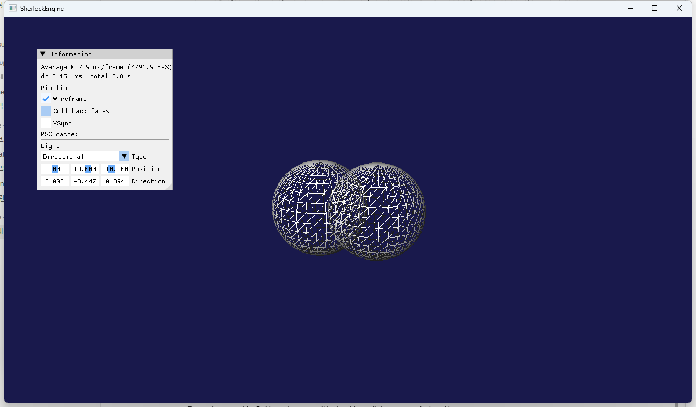
7.바인딩 — BindingLayout·ResourceSet, 루트 시그니처와 디스크립터 테이블
드로우 한 번에는 네 가지가 정해져야 합니다. 어디에 그리는가(렌더 패스, 8장), 어떻게 그리는가(PSO, 6장), 무엇을 그리는가(정점·인덱스 버퍼), 그리고 무엇을 참조해 그리는가입니다. 이 장은 마지막 것, 곧 셰이더가 읽는 상수버퍼·텍스처·샘플러를 셰이더의 레지스터에 연결하는 일을 다룹니다. 먼저 D3D11 과 D3D12 가 이 일을 어떻게 다르게 하는지 설명하고, 엔진이 두 모델을 한 쌍의 타입(BindingLayout, ResourceSet)으로 묶은 방식과 두 백엔드의 구현을 차례로 봅니다.
RHI/BindingTypes.hBindingType,BindingSlot,BindingLayoutDesc,ResourceBinding,ResourceSetDesc, 레지스터 상한 상수RHI/PipelineTypes.hPipelineStateDesc::bindingLayouts,kMaxBindingSetsRHI/Device.h·RHI/CommandList.hCreateBindingLayout,CreateResourceSet,SetResourceSetRHI/D3D11/D3D11Device.cpp·D3D11CommandList.cpp·D3D11Resources.h- D3D11 구현: 선언을 보관했다가 슬롯별
*SSet*호출로 풉니다 RHI/D3D12/D3D12Device.cpp·D3D12CommandList.cpp·D3D12PipelineState.h·D3D12DescriptorHeap.h·D3D12Resources.h- D3D12 구현: 루트 시그니처(
D3D12RootLayout), 디스크립터 힙, 드로우 직전 바인딩(ApplyBindings) Graphics/Renderer.cpp·Graphics/ShaderConstants.h- 레이아웃 세 개와 셋의 생성(
Renderer::Initialize,GetOrCreateGpuMaterial), 바인딩 자리(Render,DrawItems), 레지스터 번호 상수
7.1 풀려는 문제: 셰이더의 레지스터에 무엇을 연결하나
HLSL 셰이더는 자원을 이름이 아니라 레지스터로 가리킵니다. cbuffer PerFrame : register(b0) 는 "상수버퍼 0번 칸", Texture2D albedo : register(t0) 는 "셰이더 리소스 0번 칸", SamplerState s : register(s0) 는 "샘플러 0번 칸"입니다. 글자가 종류를 정합니다. b 는 상수버퍼 뷰(CBV), t 는 셰이더 리소스 뷰(SRV), s 는 샘플러입니다. 셰이더 바이트코드에는 "b0 을 읽는다"는 사실만 들어 있고, b0 에 실제로 어떤 버퍼가 있는지는 그리는 쪽이 드로우 전에 정해 주어야 합니다. 이것이 바인딩입니다.
7.2 D3D11 의 모델: 고정된 슬롯표에 하나씩 꽂는다
D3D11 에는 API 가 미리 정해 둔 슬롯표가 있습니다. 셰이더 스테이지마다 상수버퍼 14칸(b0~b13), 셰이더 리소스 128칸(t0~t127), 샘플러 16칸(s0~s15)이 있고, 스테이지·종류·번호를 지정해 한 칸씩 채웁니다.
context->VSSetConstantBuffers(0, 1, &perFrame); // VS 의 b0
context->PSSetConstantBuffers(0, 1, &perFrame); // PS 의 b0 — 스테이지마다 따로 꽂는다
context->PSSetShaderResources(0, 1, &albedoSrv); // PS 의 t0
context->PSSetSamplers(0, 1, &sampler); // PS 의 s0이 모델의 성질은 세 가지입니다.
- 선언이 없습니다. "이 파이프라인은 어떤 칸을 쓴다"를 어디에도 적지 않습니다. 슬롯은 컨텍스트의 전역 상태이고, 한 번 꽂은 것은 다른 것을 꽂을 때까지 남습니다.
- 틀려도 조용합니다. 셰이더가 b4 를 읽는데 아무것도 꽂지 않았으면 D3D11 은 널이 바인딩된 채로 그립니다. 상수는 전부 0 으로 읽힙니다.
- 호출 수가 자원 수에 비례합니다. 재질 하나를 바꾸려면 상수버퍼·텍스처·샘플러마다, 스테이지마다 호출해야 하고, 드라이버는 드로우 때마다 현재 슬롯 조합이 셰이더와 맞는지 다시 확인합니다.
7.3 D3D12 의 모델: 슬롯표를 직접 설계한다
D3D12 에는 고정 슬롯표가 없습니다. 슬롯표를 애플리케이션이 설계하고, 그 설계도를 루트 시그니처(ID3D12RootSignature)라고 부릅니다. 루트 시그니처는 "셰이더가 기대하는 인자 목록의 선언"입니다. 함수에 비유하면 대응이 분명해집니다.
| 함수 | D3D12 | 이 엔진 |
|---|---|---|
| 함수 시그니처(매개변수 목록) | 루트 시그니처 | PipelineStateDesc::bindingLayouts[] 에 나열한 BindingLayout 들 |
| 매개변수 하나 | 루트 파라미터 | 슬롯 하나(CBV) 또는 한 레이아웃의 SRV 슬롯 전부 / 샘플러 슬롯 전부 |
| 호출할 때 넘기는 인자 | 루트 인자 (SetGraphicsRoot* 호출) | ResourceSet |
| 함수 본문 | PSO (이 시그니처를 전제로 컴파일됨) | PipelineHandle |
루트 시그니처는 PSO 를 만들 때 필수 항목으로 들어갑니다(D3D12_GRAPHICS_PIPELINE_STATE_DESC::pRootSignature). 셰이더가 쓰는 레지스터가 루트 시그니처에 없으면 PSO 생성이 실패합니다. D3D11 이 드로우마다 하던 대조를 생성 시점에 한 번으로 끝내는 것입니다. 드로우할 때는 커맨드 리스트에 같은 루트 시그니처를 먼저 설정하고(SetGraphicsRootSignature), 그 다음 루트 파라미터 번호별로 인자를 넘깁니다.
루트 파라미터의 세 종류
| 종류 | 인자로 넘기는 값 | 비용 | 쓸 수 있는 대상 | 설정 함수 |
|---|---|---|---|---|
| 루트 상수 | 32비트 값 자체 | 값당 1 DWORD | 아주 작은 상수(인덱스 한두 개) | SetGraphicsRoot32BitConstant(s) |
| 루트 디스크립터 | 버퍼의 GPU 가상 주소 | 2 DWORD | 상수버퍼(CBV), 버퍼형 SRV/UAV. 텍스처는 불가 | SetGraphicsRootConstantBufferView 등 |
| 디스크립터 테이블 | 디스크립터 힙 안 연속 구간의 시작 핸들 | 1 DWORD | 텍스처 SRV, 샘플러, 그 밖의 모든 뷰 | SetGraphicsRootDescriptorTable |
루트 시그니처 전체의 크기는 64 DWORD 를 넘을 수 없습니다. 그래서 텍스처 수십 장을 루트에 직접 늘어놓을 수 없고, 여러 개를 한 묶음으로 넘기는 디스크립터 테이블이 필요합니다. 이 엔진은 세 종류 중 둘만 씁니다. 상수버퍼는 루트 디스크립터(루트 CBV)로, 텍스처와 샘플러는 디스크립터 테이블로 넘깁니다. 루트 상수와 정적 샘플러는 쓰지 않습니다(D3D12Device::GetOrCreateRootLayout 의 NumStaticSamplers = 0).
7.4 디스크립터, 디스크립터 힙, 디스크립터 테이블
디스크립터 테이블을 이해하려면 세 낱말을 순서대로 알아야 합니다.
- 디스크립터는 "이 리소스를 이 포맷, 이 범위로 본다"는 작은 데이터 블록입니다. D3D11 의 뷰 객체(
ID3D11ShaderResourceView등)가 하던 역할이지만, COM 객체가 아니라 배열의 칸 하나에 적힌 값입니다. - 디스크립터 힙(
ID3D12DescriptorHeap)은 그 칸들의 배열입니다. 종류가 넷입니다.CBV_SRV_UAV(상수버퍼·셰이더 리소스·순서 없는 접근 뷰),SAMPLER,RTV(렌더 타깃 뷰),DSV(깊이 스텐실 뷰)입니다. 앞의 둘만 셰이더가 읽을 수 있게(셰이더 가시, shader-visible) 만들 수 있고, 커맨드 리스트에는 종류마다 하나씩만 설정할 수 있습니다(SetDescriptorHeaps). RTV·DSV 힙은 CPU 전용이고, 그 칸의 CPU 핸들을OMSetRenderTargets에 직접 넘깁니다. - 디스크립터 테이블은 셰이더 가시 힙 안의 연속된 구간입니다. 따로 만드는 객체가 아니고 "힙의 N 번 칸부터"라는 시작 GPU 핸들 하나로 표현됩니다. 구간의 몇 번째 칸이 어느 레지스터인지는 루트 시그니처의 range 선언이 정합니다.
재질을 A 에서 B 로 바꾸는 일은 테이블의 시작 핸들을 A 의 구간에서 B 의 구간으로 바꾸는 호출 한 번입니다. 재질의 텍스처가 두 장이든 열 장이든 호출 수는 같습니다. 엔진이 가진 힙은 다음 여섯 개입니다(D3D12Device::InitFrameResources). 할당기는 D3D12DescriptorHeap 한 클래스이고, 끝을 밀어 가며 할당하다가(bump) 반납된 구간이 있으면 처음 맞는 것을 다시 씁니다(free list, first-fit).
| 멤버 | 종류 | 칸 수 | 셰이더 가시 | 들어가는 것 |
|---|---|---|---|---|
| m_rtvHeap | RTV | 64 | 아니오 | 텍스처의 RTV, sRGB RTV (GetRTV 가 처음 요청될 때 만듦) |
| m_dsvHeap | DSV | 16 | 아니오 | 깊이 텍스처의 DSV (GetDSV) |
| m_srvStaging | CBV_SRV_UAV | 1024 | 아니오 | 텍스처마다 SRV 원본 하나 (GetSRV). 셋을 만들 때 여기서 복사합니다 |
| m_samplerStaging | SAMPLER | 64 | 아니오 | 샘플러 원본 (CreateSampler) |
| m_srvHeap | CBV_SRV_UAV | 4096 | 예 | ResourceSet 의 SRV 테이블, ImGui 가 쓰는 SRV |
| m_samplerHeap | SAMPLER | 256 | 예 | ResourceSet 의 샘플러 테이블 |
뷰 원본을 CPU 전용 힙에 두고 셰이더 가시 힙에는 사본을 넣는 이유는, 같은 텍스처가 여러 셋에 들어갈 수 있고 각 셋의 구간은 연속이어야 하기 때문입니다. 사본은 CopyDescriptorsSimple 로 만듭니다.
7.5 엔진의 어휘: BindingLayout 과 ResourceSet
두 모델을 덮는 타입은 RHI/BindingTypes.h 에 있고 D3D 헤더를 포함하지 않습니다. BindingLayout 은 "이 파이프라인은 어떤 슬롯을 쓰는가"의 선언이고, ResourceSet 은 그 선언의 각 슬롯에 실제로 꽂는 핸들 목록입니다.
enum class BindingType : uint8_t { ConstantBuffer, ShaderResource, Sampler }; // b# / t# / s#
struct BindingSlot
{
BindingType type = BindingType::ConstantBuffer;
uint8_t stageMask = 0; // ShaderStageMask_Vertex | ShaderStageMask_Pixel 조합
uint8_t reg = 0; // 레지스터 번호 (b0 의 0)
};
constexpr uint32_t kMaxBindingSlots = 16;
constexpr uint8_t kMaxCbvRegister = 8, kMaxSrvRegister = 16, kMaxSamplerRegister = 8;
struct BindingLayoutDesc
{
BindingSlot slots[kMaxBindingSlots];
uint8_t slotCount = 0;
const char* debugName = nullptr;
BindingLayoutDesc& Add(BindingType type, uint8_t stageMask, uint8_t reg); // 가득 차면 무시
};
struct ResourceBinding { BufferHandle buffer; TextureHandle texture; SamplerHandle sampler; };
struct ResourceSetDesc
{
BindingLayoutHandle layout;
ResourceBinding bindings[kMaxBindingSlots]; // layout.slots[i] ↔ bindings[i]
const char* debugName = nullptr;
};레이아웃과 셋은 같은 인덱스로 짝지어집니다. 레이아웃에 Add 한 i 번째 슬롯에 셋의 bindings[i] 가 꽂힙니다. 한 파이프라인이 쓰는 레이아웃은 PipelineStateDesc::bindingLayouts[kMaxBindingSets](상한 4)에 순서대로 나열하고, 이 배열은 PSO 의 해시 키에 포함됩니다(6장). D3D11 PSO 를 만드는 데는 쓰이지 않지만 "어떤 슬롯을 쓰는가"는 파이프라인의 속성이므로 Desc 에 둡니다.
레지스터 상한(CBV 8, SRV 16, 샘플러 8)은 D3D11 의 한도(14, 128, 16)보다 일부러 좁게 잡았습니다. D3D12 의 64 DWORD 예산 때문에 슬롯을 무한정 늘릴 수 없다는 사실을 D3D11 에서도 같은 숫자로 드러내기 위해서입니다.
생성 시점의 검증
검사는 드로우가 아니라 생성 때 합니다. 두 백엔드의 CreateBindingLayout 과 CreateResourceSet 은 같은 조건을 같은 문구로 거부합니다.
CreateBindingLayout: 슬롯 수가kMaxBindingSlots초과,stageMask가 0, 레지스터가 종류별 상한 이상, 같은 (종류, 레지스터)가 같은 스테이지에 두 번 선언된 경우를 거부합니다. 마지막 경우는 뒤의 선언이 앞의 것을 덮어써 조용히 틀어지기 때문입니다.CreateResourceSet: 레이아웃 핸들이 유효한지, 각 슬롯에 그 종류에 맞는 핸들이 꽂혔는지 봅니다. 상수버퍼 슬롯에는BufferBind_Constant버퍼, 셰이더 리소스 슬롯에는TextureBind_ShaderResource텍스처, 샘플러 슬롯에는 유효한 샘플러여야 합니다.
레이아웃을 거치지 않고 슬롯에 직접 꽂는 함수는 인터페이스에 없습니다. 그런 함수가 있으면 선언을 우회하는 길이 되고, D3D12 에서는 루트 시그니처에 없는 자리에 꽂는 호출이 되어 구현할 수 없습니다.
7.6 ResourceBinding 은 왜 핸들 세 개를 다 가지나
ResourceBinding 은 buffer·texture·sampler 세 핸들을 모두 갖고, 슬롯 종류에 맞는 하나만 쓰입니다. "하나만 쓴다면 enum 으로 구분하면 되지 않나"라는 질문에 대한 답은 다음과 같습니다.
- enum 은 이미 있습니다. 다만 자리가
ResourceBinding이 아니라 레이아웃 쪽의BindingSlot::type입니다. 어느 필드를 읽을지는 레이아웃이 정하고, 두 백엔드의CreateResourceSet과 D3D11 의SetResourceSet이switch (slot.type)으로 해당 필드만 읽습니다.ResourceBinding에 enum 을 하나 더 두면 같은 정보가 두 곳에 생기고, 둘이 일치하는지 검사하는 일이 추가됩니다. - 세 필드로 두면 타입 안전성이 유지됩니다.
BufferHandle과TextureHandle은 서로 다른 타입이라(5장) 섞어 넣을 수 없습니다. "enum + 타입 없는 핸들 하나"로 줄이면 이 검사를 잃습니다. 호출 쪽은 C++20 지정 초기화로{ .buffer = m_perFrameCB },{ .texture = m_shadowMap }처럼 종류가 드러나게 적습니다. - 지금 구조의 약점도 분명합니다. 두 필드를 함께 채워도 컴파일러가 막지 못하고(슬롯 종류 쪽 필드만 쓰이고 나머지는 무시됨), 슬롯마다 쓰지 않는 핸들 둘의 공간이 남습니다. Desc 는 생성할 때만 쓰이므로 성능 문제는 아닙니다. 더 큰 한계는 확장입니다. 지금은
ShaderResource슬롯이면 무조건 텍스처라고 가정하는데,t#에 구조화 버퍼를 꽂거나 UAV 가 들어오면 슬롯 종류만으로 핸들 종류를 정할 수 없습니다. - 바꾼다면
std::variant<std::monostate, BufferHandle, TextureHandle, SamplerHandle>가 맞는 방향입니다. variant 의 인덱스가 곧 태그라 enum 을 따로 둘 필요가 없고, 하나만 담긴다는 것이 타입 수준에서 보장됩니다. 그러면 레이아웃의 enum 은 레지스터 종류(b/t/s)만, variant 는 실제 리소스 종류를 나타내도록 역할이 나뉩니다. 현재 코드는 세 필드 구조 그대로이고, 이 전환은 아직 적용하지 않았습니다. 바꿀 때 함께 고칠 곳은 두 백엔드의CreateResourceSet,D3D11CommandList::SetResourceSet,D3D12CommandList::ApplyBindings, 그리고ResourceSetDesc를 채우는Graphics/Renderer.cpp입니다.
7.7 갱신 빈도별 셋 세 개: 프레임 / 오브젝트 / 재질
Renderer::Initialize 는 레이아웃을 셋 만듭니다. 나누는 기준은 내용이 바뀌는 빈도입니다. 자주 바뀌는 것과 드물게 바뀌는 것이 서로 다른 루트 파라미터에 있어야, 재질만 바뀔 때 프레임 단위 자원을 다시 넘기지 않습니다. 드로우 목록의 정렬 순서(PSO, 재질, 메시 순. 14장)도 이 단위를 따릅니다. 레지스터 번호는 Graphics/ShaderConstants.h 의 상수(kCBSlotPerFrame 등)에서 옵니다.
| 레이아웃 / 셋 | 슬롯 (Add 순서 = bindings 순서) | 내용 갱신 | 셋을 바인딩하는 자리 |
|---|---|---|---|
| Layout_Frame Set_Frame | [0] b0 PerFrame (VS|PS) ← m_perFrameCB[1] b2 Lights (PS) ← m_lightCB[2] t8 그림자 맵 (PS) ← m_shadowMap[3] s4 비교 샘플러 (PS) ← m_shadowSampler[4] t9 스카이박스 (PS) ← 씬의 스카이박스 또는 m_blackCube[5] s5 환경 샘플러 (PS) ← LinearClamp 프리셋[6] t10 IBL 확산 조도 (PS)[7] t11 IBL 반사 프리필터 (PS)[8] t12 BRDF LUT (PS) ← 없으면 m_whiteTexture | 프레임에 한 번. 카메라 미리보기 패스가 있으면 b0 만 한 번 더. 셋 자체는 t9~t12 의 텍스처가 바뀔 때만 다시 만듦 | Renderer::Render 의 패스 시작 전, 그리고 DrawItems 첫머리(패스마다) |
| Layout_Object Set_Object | [0] b1 PerObject (VS) ← m_perObjectCB | 드로우마다 내용만 (UploadObjectConstants) | 프레임 셋과 같은 자리. 드로우마다 다시 바인딩하지 않습니다 |
| Layout_Material Set_Material × 재질 수 | [0] b3 Material (VS|PS) ← 재질별 상수버퍼[1] t0 알베도 (PS)[2] t1 노멀 (PS)[3] t2 금속성/거칠기 (PS)[4] t3 AO (PS)[5] t4 발광 (PS)[6] s0 재질 샘플러 (PS) | 재질당 프레임에 한 번 (GetOrCreateGpuMaterial) | DrawItems 에서 재질이 직전 드로우와 다를 때 |
메인 패스 PSO 의 Desc(m_baseDesc)는 bindingLayouts = { m_frameLayout, m_objectLayout, m_materialLayout } 셋을 쓰고, 그림자 패스 PSO(m_shadowDesc)는 재질을 읽지 않으므로 { m_frameLayout, m_objectLayout } 둘만 씁니다. 스카이박스 PSO(m_skyDesc)는 오브젝트도 재질도 없으므로 { m_frameLayout } 하나만 씁니다. b3 이 정점 셰이더에도 보이는 것은 정점 셰이더가 재질의 uvScale 을 읽기 때문입니다.
오브젝트 셋은 초기화 때 한 번 만들어 계속 씁니다. 프레임 셋은 UpdateFrameSet 이 만들고, 씬의 환경이 바뀌어 t9~t12 에 꽂을 텍스처가 달라질 때만 다시 만듭니다(12.14절). 재질 셋은 재질마다 하나이고 GetOrCreateGpuMaterial 이 만듭니다. ResourceSet 에는 부분 갱신 기능이 없으므로, 재질이 가리키는 알베도·노멀 텍스처나 샘플러가 바뀌면 이 함수가 이전 셋을 DestroyResourceSet 하고 새로 만듭니다. 노멀 텍스처가 없는 재질에는 내장 평면 노멀 텍스처(m_flatNormalTexture)를 꽂아 슬롯이 비지 않게 합니다.
D3D11 의 t#·s# 는 스테이지마다 번호 공간이 하나뿐이라, 재질 셋과 프레임 셋이 같은 번호를 쓰면 한쪽이 다른 쪽을 덮어씁니다. 그래서 구간을 배정했습니다(Graphics/ShaderConstants.h 머리 주석). 재질 셋은 t0~t7 / s0~s3, 프레임 셋은 t8~t15 / s4~s7 입니다. 그림자 맵이 t1 이 아니라 t8, 비교 샘플러가 s1 이 아니라 s4 인 이유이고, 환경 텍스처(t9~t12)와 그 샘플러(s5)도 같은 구간에 이어 붙였고, 재질의 PBR 텍스처(t2~t4)는 재질 구간을 씁니다. D3D12 에서는 이 구간이 그대로 테이블의 range 가 됩니다.
7.8 D3D11 구현: 선언을 보관했다가 슬롯별 호출로 푼다
D3D11 에는 루트 시그니처도 디스크립터 테이블도 없으므로 D3D11BindingLayout 과 D3D11ResourceSet(RHI/D3D11/D3D11Resources.h)은 Desc 사본과 디버그 이름만 가진 구조체입니다. 생성 함수는 7.5절의 검증을 한 뒤 풀에 넣고 핸들을 돌려줍니다. 실제 일은 D3D11CommandList::SetResourceSet 이 합니다. 셋에서 레이아웃을 찾아 슬롯을 차례로 돌며, 종류와 스테이지 마스크에 따라 호출을 냅니다.
// RHI/D3D11/D3D11CommandList.cpp — SetResourceSet (요약)
for (uint32_t i = 0; i < layout->desc.slotCount; ++i)
{
const BindingSlot& slot = layout->desc.slots[i];
const ResourceBinding& binding = set->desc.bindings[i];
switch (slot.type)
{
case BindingType::ConstantBuffer:
ID3D11Buffer* d3dBuffer = buffer ? buffer->Get(frameIndex) : nullptr; // Dynamic: 이번 프레임의 복제본
if (slot.stageMask & ShaderStageMask_Vertex) context->VSSetConstantBuffers(slot.reg, 1, &d3dBuffer);
if (slot.stageMask & ShaderStageMask_Pixel) context->PSSetConstantBuffers(slot.reg, 1, &d3dBuffer);
break;
case BindingType::ShaderResource: // texture->GetSRV(…) 를 VS/PSSetShaderResources 로. 꽂은 핸들을 m_vsSrv / m_psSrv 에 기록
…
case BindingType::Sampler: // VS/PSSetSamplers
…
}
}알아 둘 점이 셋 있습니다.
- 호출 즉시 바인딩됩니다. D3D11 의 슬롯은 PSO 와 무관한 전역 상태라, 어떤 PSO 가 설정돼 있든
SetResourceSet이 곧바로 꽂을 수 있습니다. 재질 셋 하나에VSSetConstantBuffers,PSSetConstantBuffers,PSSetShaderResources두 번,PSSetSamplers로 다섯 번의 호출이 나갑니다. - 상수버퍼는 프레임 인덱스로 고릅니다. Dynamic 버퍼는
kFrameCount개로 복제되어 있고(8장)D3D11Buffer::Get(frameIndex)가 이번 프레임의 것을 돌려줍니다. 그래서 셋은 프레임마다 다시 바인딩해야 하고,Renderer는 매 프레임 그렇게 합니다. 한 프레임 안에서는UpdateBuffer가 내용을 바꿔도ID3D11Buffer객체가 같으므로 바인딩이 유지됩니다. 오브젝트 셋을 드로우마다 다시 바인딩하지 않아도 되는 이유입니다. - SRV 슬롯에 무엇이 꽂혔는지 기억합니다.
m_vsSrv[kMaxSrvRegister],m_psSrv[kMaxSrvRegister]에 텍스처 핸들을 적어 둡니다. 렌더 패스가 그 텍스처를 타깃으로 잡을 때 먼저 풀어 주기 위한 기록이고, 쓰임은 8장에서 설명합니다.
중복 호출을 걸러 내는 상태 캐시는 D3D11 커맨드 리스트 안에 없습니다. 같은 셋을 두 번 넘기면 두 번 다 호출이 나갑니다. 중복을 줄이는 일은 호출하는 쪽이 합니다. Renderer::DrawItems 와 RenderShadowPass 가 지역 변수 lastPipeline·lastMaterial·lastMesh 로 직전 드로우의 상태를 기억하고, 정렬된 목록에서 같은 값이 이어지는 동안 SetPipelineState·SetResourceSet·SetVertexBuffer 를 건너뜁니다. 이 기억을 멤버가 아니라 함수의 지역 변수로 둔 것은 의도입니다. 패스가 바뀌거나 ImGui 가 상태를 건드린 뒤에는 항상 처음부터 다시 바인딩하게 되어, 캐시가 모르는 사이에 상태가 바뀌는 문제가 생기지 않습니다.
7.9 D3D12 구현 ①: 레이아웃 조합이 루트 시그니처가 된다
D3D12 백엔드에서도 CreateBindingLayout 은 Desc 를 검증해 보관하기만 합니다. 이 시점에는 D3D12 객체가 만들어지지 않습니다. 루트 시그니처는 레이아웃 하나가 아니라 PSO 가 쓰는 레이아웃의 조합에 대응하기 때문입니다. 실제 생성은 PSO 를 만들 때 일어납니다. 호출 순서는 D3D12Device::CreatePipeline, D3D12PipelineStateCache::GetOrCreate, D3D12PipelineState::Create, D3D12Device::GetOrCreateRootLayout 입니다.
GetOrCreateRootLayout 은 desc.bindingLayouts 를 앞에서부터 돌며 루트 파라미터를 쌓습니다. 규칙은 RHI/D3D12/D3D12PipelineState.h 머리 주석에 적힌 대로입니다.
- 상수버퍼 슬롯 하나는 루트 CBV 하나(
D3D12_ROOT_PARAMETER_TYPE_CBV)가 됩니다. - 한 레이아웃의 셰이더 리소스 슬롯 전부는 디스크립터 테이블 하나가 됩니다. 슬롯마다 range 하나(
NumDescriptors = 1,BaseShaderRegister = slot.reg,OffsetInDescriptorsFromTableStart = D3D12_DESCRIPTOR_RANGE_OFFSET_APPEND)를 선언 순서대로 넣습니다. - 한 레이아웃의 샘플러 슬롯 전부도 같은 방식으로 테이블 하나가 됩니다. CBV_SRV_UAV 힙과 SAMPLER 힙이 서로 다른 힙이라 SRV 와 샘플러는 한 테이블에 섞을 수 없습니다.
- 가시성(
ShaderVisibility)은 스테이지 마스크에서 옵니다(VisibilityOf). 정점만이면VERTEX, 픽셀만이면PIXEL, 둘 다면ALL입니다. 테이블은 그 안 슬롯들의 마스크를 합친 값으로 정합니다. - 레지스터 space 는 전부 0 입니다. 셰이더가 SM 5.0 DXBC 이고
space문법은 SM 5.1 부터 있기 때문입니다.
이렇게 채운 D3D12_ROOT_SIGNATURE_DESC(플래그는 ALLOW_INPUT_ASSEMBLER_INPUT_LAYOUT)를 D3D12SerializeRootSignature 로 직렬화하고 ID3D12Device::CreateRootSignature 로 객체를 만듭니다. 결과는 D3D12RootLayout 에 담깁니다. 이 구조체는 루트 시그니처와 함께 "셋 s 의 슬롯 i 가 루트 파라미터 몇 번인가"(SetBinding::cbvRoot[i], srvTableRoot, samplerTableRoot)를 기록해 두어, 드로우 때 번호를 다시 계산하지 않게 합니다.
메인 패스 PSO 의 세 레이아웃은 루트 파라미터 여덟 개가 됩니다.
| 루트 인덱스 | 종류 | 레지스터 | 가시성 | 출처 | 크기 |
|---|---|---|---|---|---|
| 0 | 루트 CBV | b0 | ALL | 프레임 셋 슬롯 0 | 2 DWORD |
| 1 | 루트 CBV | b2 | PIXEL | 프레임 셋 슬롯 1 | 2 |
| 2 | SRV 테이블 | t8 | PIXEL | 프레임 셋 슬롯 2 | 1 |
| 3 | 샘플러 테이블 | s4 | PIXEL | 프레임 셋 슬롯 3 | 1 |
| 4 | 루트 CBV | b1 | VERTEX | 오브젝트 셋 슬롯 0 | 2 |
| 5 | 루트 CBV | b3 | ALL | 재질 셋 슬롯 0 | 2 |
| 6 | SRV 테이블 | t0, t1 | PIXEL | 재질 셋 슬롯 1·2 | 1 |
| 7 | 샘플러 테이블 | s0 | PIXEL | 재질 셋 슬롯 3 | 1 |
크기는 루트 CBV 4개 × 2 + 테이블 4개 × 1 = 12 DWORD 로, 64 DWORD 예산의 5분의 1 이 안 됩니다. 그림자 패스 PSO 는 프레임·오브젝트 레이아웃만 쓰므로 인덱스 0~4 의 다섯 개만 있는 다른 루트 시그니처(8 DWORD)가 됩니다. 실행 로그에는 "루트 시그니처 생성: 셋 3개, 루트 파라미터 8개"와 "셋 2개, 루트 파라미터 5개" 두 줄이 찍힙니다.
레이아웃 조합이 같은 PSO 끼리는 루트 시그니처를 공유합니다. m_rootLayouts 가 레이아웃 핸들들(index, generation)의 64비트 해시를 키로 하는 캐시이고, 와이어프레임·컬링·sRGB 변형처럼 레이아웃 조합이 같은 메인 PSO 들은 모두 같은 D3D12RootLayout 을 shared_ptr 로 가리킵니다. 이 캐시는 PSO 캐시와 달리 해시값 자체가 키라서 일치 여부를 다시 비교하지 않습니다. 조합이 두 가지뿐인 지금은 문제가 되지 않지만, 조합이 많아지면 키를 핸들 배열로 바꾸는 것이 안전합니다.
7.10 D3D12 구현 ②: ResourceSet 은 힙에 복사해 둔 테이블이다
D3D12Device::CreateResourceSet 은 검증을 통과한 뒤 다음을 합니다.
구간 할당
셰이더 리소스 슬롯 수만큼 m_srvHeap.Allocate(srvCount), 샘플러 슬롯 수만큼 m_samplerHeap.Allocate(samplerCount) 로 셰이더 가시 힙에서 연속 구간을 받습니다. 시작 인덱스와 개수는 D3D12ResourceSet 의 srvTableStart·srvCount·samplerTableStart·samplerCount 에 남습니다.
디스크립터 복사
슬롯을 레이아웃 순서로 돌며, 텍스처는 스테이징 힙의 SRV(GetSRV. 없으면 이때 만듦)를, 샘플러는 스테이징 샘플러를 CopyDescriptorsSimple 로 구간의 다음 칸에 복사합니다. 복사 순서가 레이아웃의 슬롯 순서이고, 루트 시그니처의 range 도 같은 순서로 APPEND 했으므로 "테이블의 k 번째 칸 = 그 종류의 k 번째 슬롯의 레지스터"가 성립합니다.
상수버퍼는 핸들만
상수버퍼 슬롯은 힙에 아무것도 만들지 않습니다. 셋의 Desc 에 버퍼 핸들이 남아 있을 뿐이고, 주소는 드로우 때 읽습니다.
구간은 셋이 살아 있는 동안 바뀌지 않습니다. 프레임마다 디스크립터를 다시 복사하지 않으므로 드로우 때 드는 일은 시작 GPU 핸들 하나를 넘기는 것뿐입니다. DestroyResourceSet 은 구간을 바로 반납하지 않고 DeferFree 로 미룹니다. 이미 기록된 이전 프레임의 드로우가 그 칸을 아직 읽을 수 있기 때문입니다(8장).
상수버퍼를 테이블이 아니라 루트 CBV 로 둔 이유는 Dynamic 버퍼의 구현에 있습니다. D3D12 백엔드의 Dynamic 버퍼에는 고정된 리소스가 없고, UpdateBuffer 를 부를 때마다 프레임 업로드 링에서 새 조각을 받아 그 GPU 가상 주소를 D3D12Buffer::gpuAddress 에 적습니다(8장). 오브젝트 상수버퍼는 드로우마다 주소가 달라집니다. 테이블로 넘기려면 주소가 바뀔 때마다 CBV 디스크립터를 새로 써야 하지만, 루트 CBV 는 주소를 인자로 직접 넘기므로 디스크립터가 필요 없습니다.
7.11 D3D12 구현 ③: 드로우 시점 — 루트 시그니처는 어디서 바인딩되나
커맨드 리스트에 기록되는 순서대로 봅니다.
프레임 시작: 힙 설정 — D3D12Device::BeginFrame
m_list->SetDescriptorHeaps(2, heaps) 로 셰이더 가시 SRV 힙과 샘플러 힙을 설정합니다. 프레임에 한 번입니다. 이어서 D3D12CommandList::BeginFrame 이 m_currentPipeline·m_currentRoot 를 비우고 기억해 둔 모든 셋의 tablesDirty 를 켭니다. 커맨드 리스트를 Reset 하면 이전 프레임에 설정한 상태가 전부 사라지기 때문입니다.
PSO 설정과 루트 시그니처 바인딩 — D3D12CommandList::SetPipelineState
루트 시그니처를 바인딩하는 별도 함수는 없습니다. SetGraphicsRootSignature 호출은 이 함수 안에 있습니다. 핸들이 직전과 같으면 아무것도 하지 않고, 다르면 m_list->SetPipelineState 를 부른 뒤 PSO 가 가진 D3D12RootLayout 을 직전 것과 비교합니다. 다를 때만 루트 시그니처를 설정하고 모든 셋의 테이블을 dirty 로 표시합니다. 루트 시그니처가 바뀌면 그 전에 넘긴 루트 인자가 전부 무효가 되기 때문입니다.
// RHI/D3D12/D3D12CommandList.cpp — SetPipelineState
if (handle == m_currentPipeline) return;
m_list->SetPipelineState(pso->Get());
const D3D12RootLayout* root = pso->GetRootLayout();
if (root != m_currentRoot)
{
m_list->SetGraphicsRootSignature(root->rootSignature.Get()); // 루트 시그니처 바인딩
m_currentRoot = root;
for (uint32_t i = 0; i < m_setCount; ++i) m_sets[i].tablesDirty = true;
}
m_list->IASetPrimitiveTopology(pso->GetTopology());셋 지정 — D3D12CommandList::SetResourceSet
D3D12 호출을 내지 않고 기억만 합니다. m_sets[kMaxBindingSets] 에서 같은 레이아웃의 항목을 찾아 셋 핸들을 바꾸고(다른 셋이면 tablesDirty 를 켬), 없으면 새 항목을 더합니다. 바로 바인딩하지 못하는 이유는 "이 셋의 SRV 테이블이 루트 파라미터 몇 번인가"가 현재 PSO 의 루트 시그니처에 달려 있기 때문입니다. 프레임 셋은 Renderer::Render 에서 PSO 보다 먼저 지정됩니다.
루트 인자 바인딩 — D3D12CommandList::ApplyBindings
DrawIndexed 가 DrawIndexedInstanced 직전에 부릅니다. 현재 루트 레이아웃의 셋을 차례로 돌며 기억해 둔 셋을 레이아웃 핸들로 찾고, 두 가지를 합니다. 상수버퍼 슬롯은 드로우마다 SetGraphicsRootConstantBufferView(cbvRoot[i], buffer->gpuAddress) 를 부릅니다. 테이블은 dirty 일 때만 SetGraphicsRootDescriptorTable(srvTableRoot, m_srvHeap.Gpu(srvTableStart)) 와 SetGraphicsRootDescriptorTable(samplerTableRoot, m_samplerHeap.Gpu(samplerTableStart)) 를 부르고 dirty 를 끕니다.
ApplyBindings 는 실수도 잡습니다. PSO 가 요구하는 레이아웃에 셋이 지정되지 않았으면 에러를 한 번 남기고, Dynamic 상수버퍼의 updatedFrame 이 현재 프레임 번호와 다르면(이번 프레임에 UpdateBuffer 하지 않은 경우) 역시 에러를 한 번 남깁니다. 이전 프레임의 링 조각은 이미 다른 데이터로 덮였을 수 있기 때문입니다. 이 검사는 Release 빌드에서도 동작합니다.
재질 하나를 바꾸는 비용을 두 백엔드에서 비교하면 다음과 같습니다.
| D3D11 | D3D12 | |
|---|---|---|
| 나가는 호출 | VSSetConstantBuffers, PSSetConstantBuffers, PSSetShaderResources × 2, PSSetSamplers | 테이블 두 번(SRV, 샘플러). 루트 CBV 는 재질과 무관하게 드로우마다 네 번 |
| 재질의 텍스처가 10장이 되면 | 호출이 10번으로 늘어남 | 테이블 호출은 그대로 한 번 |
| 슬롯과 셰이더의 대조 | 드로우마다 드라이버가 수행 | PSO 생성 때 루트 시그니처와 셰이더를 대조해 끝냄 |
7.12 셰이더 선언과 레이아웃의 대조
레이아웃은 Renderer::Initialize 에서 손으로 선언합니다. 셰이더에 레지스터를 더하고 레이아웃에 넣는 것을 잊으면 D3D11 은 널이 꽂힌 채 조용히 그리므로, 초기화와 핫리로드 때 대조합니다. ShaderCompiler::ReflectBindings(RHI/ShaderCompiler.h, 구현은 RHI/DXBC/ShaderCompiler.cpp)가 바이트코드의 리플렉션에서 셰이더가 실제로 쓰는 (종류, 레지스터, 이름) 목록을 뽑고, Renderer::ValidateBindings 가 정점·픽셀·그림자 정점 셰이더 셋 각각에 대해 그 목록의 모든 항목이 세 레이아웃의 합집합에 그 스테이지로 선언되어 있는지 확인합니다. 어긋나면 Debug 빌드에서는 셰이더 로드가 실패하고 Release 에서는 로그만 남깁니다. 레이아웃을 리플렉션에서 자동으로 만들지 않고 대조에 그친 이유(레이아웃은 의도이고 리플렉션은 사실이라는 구분)와 상수버퍼 크기 대조는 10장에서 다룹니다.
7.13 함정과 해결
| 함정 | 증상 | 해결 |
|---|---|---|
셋끼리 t#·s# 번호가 겹침 | D3D11 은 스테이지마다 번호 공간이 하나라 나중에 바인딩한 셋이 앞의 것을 덮어씀. D3D12 는 한 루트 시그니처에 같은 레지스터가 두 번 나와 직렬화가 거부됨 | 구간 배정: 재질 t0~7 / s0~3, 프레임 t8~15 / s4~7. 한 레이아웃 안의 중복은 CreateBindingLayout 이 거부 |
| 셰이더가 선언하지 않은 레지스터를 읽음 | D3D11 은 0 으로 읽히고 경고가 없음. D3D12 는 PSO 생성 실패 | ValidateBindings 의 리플렉션 대조 (7.12절) |
| 드로우마다 갱신하는 상수버퍼 (D3D12) | 버퍼를 프레임 슬롯마다 하나씩만 두면, GPU 는 나중에 실행하므로 한 프레임의 모든 드로우가 마지막에 쓴 값을 봄 | Dynamic 버퍼는 업로드 링 조각의 주소만 갖고, ApplyBindings 가 드로우마다 루트 CBV 로 넘김 |
SetResourceSet 을 PSO 보다 먼저 부름 (D3D12) | 루트 파라미터 번호를 아직 알 수 없음 | 기억만 하고 드로우 직전에 현재 루트 레이아웃에 맞춰 바인딩 |
루트 시그니처 교체, 커맨드 리스트 Reset | 앞서 넘긴 루트 인자와 힙 설정이 무효가 됨 | tablesDirty 를 켜서 다음 드로우에 다시 넘김. 힙은 BeginFrame 이 매 프레임 설정 |
| 테이블 칸 순서와 range 순서의 불일치 | t0 자리에 t1 의 텍스처가 읽힘 | 루트 시그니처와 CreateResourceSet 이 둘 다 레이아웃의 슬롯 순서를 따름 (APPEND) |
| range 배열의 포인터 무효화 | 루트 파라미터가 std::vector 안의 range 를 포인터로 가리키는데, 바깥 벡터가 재할당되면 포인터가 깨짐 | GetOrCreateRootLayout 이 ranges.reserve(레이아웃 수 × 2) 로 미리 확보 |
| 재질의 텍스처를 편집으로 바꿈 | 셋은 부분 갱신이 없음 | GetOrCreateGpuMaterial 이 꽂힌 핸들(boundAlbedo 등)과 비교해 다르면 셋을 다시 만듦. 이전 구간은 지연 반납 |
| D3D11 에서 셋을 프레임마다 다시 바인딩하지 않음 | Dynamic 상수버퍼는 프레임마다 다른 복제본이라, 지난 프레임의 복제본이 꽂힌 채 남음 | Renderer::Render 와 DrawItems 가 매 프레임·매 패스 프레임 셋과 오브젝트 셋을 지정 |
| ImGui 가 자기 힙을 따로 설정 (D3D12) | 셰이더 가시 힙은 종류마다 하나만 설정 가능해, 힙이 바뀌면 엔진의 테이블 핸들이 무효 | InitImGui 가 엔진의 m_srvHeap 과 그 할당기를 ImGui 에 넘겨 한 힙을 함께 씀 |
맞게 동작하는지는 세 가지로 확인합니다. 시작 로그의 "바인딩 대조: … OK" 줄과 "루트 시그니처 생성" 두 줄, Stats 패널의 PSO·셋 전환 횟수, 그리고 같은 씬을 --backend=d3d11 과 --backend=d3d12 로 그린 결과가 같은지입니다(부록 D).
8.렌더 패스·커맨드 리스트·배리어·프레임 자원
이 장은 "어디에, 언제 그리는가"를 정하는 장치들을 다룹니다. 타깃과 클리어를 한 단위로 묶는 렌더 패스, 모든 GPU 명령이 지나가는 RHI::CommandList, 리소스의 쓰임이 바뀌는 지점을 적는 배리어, 그리고 CPU 와 GPU 가 서로 다른 프레임을 처리하고 있어도 데이터가 섞이지 않게 하는 프레임 자원입니다. 한 프레임 안에서 어떤 패스가 어떤 순서로 도는지는 4장이 추적하므로 여기서는 각 장치가 두 백엔드에서 무엇으로 풀리는지를 설명합니다. 장치·큐·스왑체인 생성과 초기 데이터 업로드는 9장, 바인딩은 7장에 있습니다.
RHI/RenderPassTypes.hLoadOp,StoreOp,ColorAttachment,DepthAttachment,Viewport,RenderPassDesc,ResourceStateRHI/CommandList.hRHI::CommandList인터페이스와StatsRHI/Device.h·RHI/GraphicsConfig.hBeginFrame,EndFrame,UpdateBuffer,kFrameCountRHI/D3D11/D3D11CommandList.cpp·D3D11Device.cpp·D3D11Resources.h- 즉시 컨텍스트 래퍼, SRV 충돌 처리,
Map(WRITE_DISCARD) RHI/D3D12/D3D12CommandList.cpp·D3D12Device.cpp·D3D12Resources.h·D3D12Convert.cpp- 기록과 제출,
ResourceBarrier, 업로드 링, 펜스, 지연 해제 Graphics/Renderer.cpp·Core/Engine.cpp- 패스를 여닫는 자리(
RenderShadowPass,RenderMainPass,RenderPreviewPass,BeginUIPass,EndUIPass)와 프레임 순서(Engine::Render)
8.1 왜 "패스"라는 단위가 필요한가
D3D11 에서 렌더 타깃은 컨텍스트의 상태 가운데 하나일 뿐입니다. OMSetRenderTargets 를 부르면 그때부터 그곳에 그려지고, 클리어는 별개의 명령이며, 이전 내용을 유지하고 싶으면 클리어를 부르지 않으면 됩니다. 타깃이 언제부터 언제까지 쓰이는지, 시작할 때 이전 내용이 필요한지를 API 에 알려 줄 자리가 없습니다. 이 정보가 필요한 곳이 둘 있습니다.
- 타일 기반 GPU. 모바일과 일부 내장 GPU 는 화면을 타일로 나눠 타일 하나를 작은 고속 메모리에 올려 그린 뒤 본 메모리로 내보냅니다. 타일을 올릴 때 이전 내용을 읽어 와야 하는지(load), 다 그린 뒤 써 내야 하는지(store)를 미리 알면 그 복사를 생략할 수 있습니다.
- 명시적 API. Vulkan, Metal, D3D12 는 타깃의 사용 구간을 애플리케이션이 선언하게 합니다. Vulkan 은
VkAttachmentLoadOp(LOAD / CLEAR / DONT_CARE)와VkAttachmentStoreOp로, D3D12 는ID3D12GraphicsCommandList4::BeginRenderPass가 받는 시작 접근(BEGINNING_ACCESS)과 끝 접근(ENDING_ACCESS)으로 표현합니다.
엔진 쪽 이유도 있습니다. 그림자 패스가 생기면 한 프레임에 타깃을 바꾸고 지우고 그리는 일이 여러 번 일어납니다. 타깃·클리어 색·뷰포트가 흩어진 호출로 남아 있으면 순서 실수(중복 클리어, 타깃을 걸지 않은 드로우)가 생기기 쉽습니다. 이것들을 값 하나(RenderPassDesc)에 모으고 시작과 끝을 한 쌍의 호출로 만들면, 어떤 패스가 무엇을 지우고 어디에 그리는지가 Renderer 한 곳에서 읽히고, 패스 밖의 드로우를 커맨드 리스트가 거부할 수 있습니다(D4).
8.2 RenderPassDesc 와 LoadOp / StoreOp
// RHI/RenderPassTypes.h
enum class LoadOp : uint8_t { Load, Clear, DontCare }; // 유지 / 지움 / 이전 내용이 필요 없음
enum class StoreOp : uint8_t { Store, DontCare }; // 패스 뒤에도 필요함 / 버려도 됨
struct ColorAttachment
{
TextureHandle texture;
LoadOp load = LoadOp::Clear;
StoreOp store = StoreOp::Store;
bool srgbView = false; // UNORM 텍스처를 sRGB 뷰로 씀
float clearColor[4] = { 0.0f, 0.0f, 0.0f, 1.0f }; // 선형 값
};
struct DepthAttachment
{
TextureHandle texture; // 비어 있으면 깊이 없음 (UI 패스)
LoadOp load = LoadOp::Clear;
StoreOp store = StoreOp::Store;
float clearDepth = 1.0f;
uint8_t clearStencil = 0;
};
struct Viewport { float x = 0, y = 0, width = 0, height = 0, minDepth = 0, maxDepth = 1; }; // width 0 = 첫 attachment 크기
struct RenderPassDesc
{
ColorAttachment colors[kMaxRenderTargets];
uint8_t colorCount = 0;
DepthAttachment depth;
Viewport viewport;
const char* debugName = nullptr;
};attachment 는 패스가 그리는 대상 텍스처 하나를 가리키는 말입니다. srgbView 는 같은 UNORM 텍스처를 sRGB 포맷의 뷰로 쓸지 정하고(12장), 클리어 색은 선형 값으로 적으면 sRGB 뷰가 인코딩합니다. 뷰포트의 폭이 0 이면 첫 attachment 의 크기를 씁니다. 뷰포트는 PSO 에 들어 있지 않은 동적 상태라 패스가 정합니다.
Renderer 가 실제로 채우는 패스는 넷입니다.
패스 (debugName) | 색 attachment | 깊이 attachment | 만드는 함수 |
|---|---|---|---|
| ShadowPass | 없음 (colorCount = 0) | 그림자 맵, Clear 1.0. 뷰포트는 텍스처 크기 2048² | RenderShadowPass |
| MainPass | 씬 뷰 텍스처(에디터) 또는 백버퍼. Clear, 색은 scene.clearColor, srgbView = m_settings.srgbOutput | 씬 뷰 깊이 또는 장치의 깊이 버퍼, Clear | RenderMainPass |
| PreviewPass | 카메라 미리보기 텍스처, Clear, sRGB 설정은 메인과 같음 | 미리보기 깊이, Clear | RenderPreviewPass |
| UIPass | 백버퍼, UNORM 뷰(srgbView = false). 씬이 백버퍼에 그려졌으면 Load, 씬 뷰 텍스처에 그려졌으면 Clear(에디터 배경색) | 없음 | BeginUIPass |
StoreOp 는 넷 모두 기본값 Store 입니다. 그림자 맵은 다음 패스가 읽고, 색 타깃은 화면이나 ImGui 가 읽으므로 버릴 수 있는 것이 없습니다. DontCare 는 MSAA 리졸브 뒤의 원본 같은 타깃을 위한 값인데 지금은 그런 타깃이 없습니다.
LoadOp::Clear 만 동작이 있습니다(Clear*View 호출). Load 와 DontCare 는 둘 다 "아무것도 하지 않음"이고, StoreOp 는 두 백엔드 모두 읽지 않습니다. 그래도 필드를 둔 것은 Desc 가 의도를 적는 곳이기 때문입니다. 8.4절의 네이티브 렌더 패스로 구현을 바꾸면 같은 Desc 가 그대로 드라이버에 전달됩니다.
8.3 D3D11 구현과 SRV·타깃 동시 바인딩 충돌
D3D11CommandList::BeginRenderPass 는 다섯 단계입니다.
- attachment 가 될 텍스처가 SRV 슬롯에 남아 있으면 먼저 풉니다(
UnbindShaderResourcesOf). - RTV·DSV 를 모읍니다. 뷰는
D3D11Texture::GetRTV(device, srgbView)·GetDSV가 처음 요청될 때 만들어 텍스처 항목에 보관합니다. 뷰포트의 기본 크기는 첫 attachment 에서 얻습니다. OMSetRenderTargets(colorCount, rtvs, dsv). flip 모델 스왑체인은Present뒤 백버퍼 바인딩이 풀리므로 패스마다 다시 겁니다.LoadOp::Clear인 attachment 만ClearRenderTargetView/ClearDepthStencilView합니다.RSSetViewports.
EndRenderPass 는 OMSetRenderTargets(0, nullptr, nullptr) 로 타깃을 전부 풉니다. 다음 패스가 방금 그린 텍스처를 SRV 로 읽을 때 충돌 경고가 나지 않게 하기 위해서입니다.
1번이 이 구현의 핵심입니다. D3D11 은 같은 리소스가 읽기(SRV)와 쓰기(RTV/DSV)에 동시에 바인딩되는 것을 허용하지 않습니다. 이 상황을 읽기·쓰기 해저드(hazard)라고 부르고, 발생하면 런타임이 읽기 쪽 슬롯을 강제로 NULL 로 만들면서 Debug Layer 경고를 냅니다. 그림자 맵이 정확히 이 경우입니다. 메인 패스에서 t8 로 읽은 텍스처가 다음 프레임의 그림자 패스에서 DSV 가 됩니다.
// RHI/D3D11/D3D11CommandList.cpp
void D3D11CommandList::UnbindShaderResourcesOf(TextureHandle texture)
{
ID3D11ShaderResourceView* nullSrv = nullptr;
for (uint32_t slot = 0; slot < kMaxSrvRegister; ++slot)
{
if (m_vsSrv[slot] == texture) { context->VSSetShaderResources(slot, 1, &nullSrv); m_vsSrv[slot] = TextureHandle{}; ++m_stats.srvUnbinds; }
if (m_psSrv[slot] == texture) { context->PSSetShaderResources(slot, 1, &nullSrv); m_psSrv[slot] = TextureHandle{}; ++m_stats.srvUnbinds; }
}
}SetResourceSet 이 SRV 를 꽂을 때마다 슬롯별로 텍스처 핸들을 m_vsSrv·m_psSrv 에 적어 두므로(7장), 패스를 시작할 때 attachment 와 같은 핸들이 있는 슬롯만 골라 풀 수 있습니다. 런타임이 강제로 풀기 전에 엔진이 먼저 풀면 경고가 나지 않고, 엔진의 기록과 실제 상태가 어긋나지도 않습니다.
이 때문에 바인딩 순서에 규칙이 생깁니다. Renderer::Render 는 프레임 셋(b0, b2, t8, s4)을 그림자 패스 전에 지정합니다. 그림자 패스의 BeginRenderPass 가 t8 을 풀고, 그림자 패스는 b0·b1 만 읽으므로 문제없이 그려집니다. 메인 패스에서는 BeginRenderPass 뒤에 DrawItems 가 프레임 셋을 다시 지정해 t8 을 되살립니다. 이때 그림자 맵은 이미 타깃에서 풀려 있습니다.
8.4 D3D12 구현: 네이티브 렌더 패스가 아니라 OMSetRenderTargets 와 Clear
D3D12 에서 "어디에 그릴지"를 정하는 방법은 둘입니다.
- 방식 A —
OMSetRenderTargets와Clear*View. D3D11 과 같은 모양입니다. 타깃을 걸고, 필요하면 지웁니다. - 방식 B — 네이티브 렌더 패스.
ID3D12GraphicsCommandList4::BeginRenderPass에 타깃마다 시작 접근과 끝 접근을 적어 넘기고EndRenderPass로 닫습니다. 드라이버에 "이전 내용이 필요 없다", "끝난 뒤 버려도 된다"는 의도가 전달됩니다.
이 엔진의 D3D12 백엔드는 방식 A 를 씁니다. D3D12CommandList::BeginRenderPass 의 본문은 다음 순서이고, RHI/D3D12/ 어디에도 ID3D12GraphicsCommandList4 나 D3D12_RENDER_PASS_* 는 나오지 않습니다. 엔진의 BeginRenderPass 라는 이름은 RHI 인터페이스의 이름이지 D3D12 의 같은 이름 함수를 부른다는 뜻이 아닙니다.
- attachment 마다 CPU 디스크립터 핸들을 얻습니다.
D3D12Device::GetRTV(texture, srgbView)·GetDSV가 RTV·DSV 힙에 뷰를 처음 요청될 때 만들고 그 칸의 핸들을 돌려줍니다. m_list->OMSetRenderTargets(rtvCount, rtvs, FALSE, dsv).LoadOp::Clear인 것만ClearRenderTargetView/ClearDepthStencilView.RSSetViewports와RSSetScissorRects. 시저 사각형은 뷰포트와 같은 영역으로 잡습니다.
D3D11 구현과 다른 점은 셋입니다. 첫째, SRV 를 푸는 단계가 없습니다. D3D12 에는 자동 언바인드가 없고, 읽기와 쓰기가 겹치는지는 리소스 상태(8.7절)가 정의합니다. 둘째, 시저 사각형을 반드시 설정합니다. D3D12 는 시저 사각형이 없으면 경고 없이 아무것도 그리지 않습니다. 셋째, EndRenderPass 가 할 일이 없습니다. D3D12 의 OMSetRenderTargets 는 타깃에 대한 참조를 보유하지 않으므로 풀 것이 없고, 패스 안이라는 표시(m_inPass)만 내립니다.
방식 B 로 바꿀 때 RenderPassDesc 는 다음처럼 대응합니다.
| 엔진 | D3D12 네이티브 렌더 패스 |
|---|---|
LoadOp::Load / Clear / DontCare | D3D12_RENDER_PASS_BEGINNING_ACCESS_TYPE_PRESERVE / _CLEAR / _DISCARD |
StoreOp::Store / DontCare | D3D12_RENDER_PASS_ENDING_ACCESS_TYPE_PRESERVE / _DISCARD (MSAA 는 _RESOLVE) |
네이티브 패스 안에서는 클리어·복사·리졸브·OMSetRenderTargets 를 부를 수 없고, 바인딩된 타깃에 대한 배리어도 넣을 수 없습니다. 엔진은 클리어를 BeginRenderPass 안에 넣었고 Barrier 를 항상 패스 밖에서 부르므로, 구현을 바꿔도 Renderer 는 그대로입니다. 지금 방식 A 로 둔 것은 데스크톱 외장 GPU 에서는 두 방식의 차이가 작기 때문입니다. 이득은 타일 기반 GPU 에서 납니다.
D3D12 의 렌더 패스는 객체가 아니라 커맨드의 구간이고, PSO 는 특정 패스를 참조하지 않습니다(Vulkan 의 VkRenderPass 와 다른 점). 둘을 잇는 것은 포맷뿐입니다. PSO 의 rtvFormats·dsvFormat·sampleCount 가 드로우 시점에 바인딩된 타깃의 뷰 포맷과 일치해야 하고, 어긋나면 Debug Layer 가 드로우에서 에러를 냅니다. 메인 패스가 sRGB 뷰에 그리면 PSO 의 rtvFormats[0] 도 sRGB 포맷이어야 하고, 그림자 패스용 PSO(rtvCount = 0, D32_FLOAT)는 셰이더가 같아도 메인 패스용과 별개의 PSO 입니다. D3D11 은 이 필드들을 보지 않습니다(6장).
8.5 RHI::CommandList: 메서드와 두 백엔드의 대응
RHI::CommandList(RHI/CommandList.h)는 GPU 명령을 기록하는 인터페이스입니다. 바인딩·드로우·패스·배리어는 전부 여기를 지나고, Renderer 가 Device 에서 직접 부르는 것은 생성·파괴·UpdateBuffer 와 몇 개의 조회뿐입니다. 장치마다 커맨드 리스트는 하나이고 Device::GetCommandList() 로 얻습니다.
| 메서드 | D3D11 (D3D11CommandList) | D3D12 (D3D12CommandList) |
|---|---|---|
| BeginRenderPass(desc) | SRV 해제, OMSetRenderTargets, Clear*View, RSSetViewports | OMSetRenderTargets, Clear*View, RSSetViewports, RSSetScissorRects |
| EndRenderPass() | OMSetRenderTargets(0, nullptr, nullptr) | 표시만 내림 |
| SetPipelineState(h) | PipelineState::Bind: 입력 레이아웃, 토폴로지, VS, PS, 래스터라이저, 깊이·스텐실, 블렌드의 일곱 호출 | 핸들이 직전과 같으면 건너뜀. SetPipelineState, 루트 시그니처가 바뀌었으면 SetGraphicsRootSignature, IASetPrimitiveTopology |
| SetResourceSet(h) | 슬롯마다 VS/PSSetConstantBuffers·ShaderResources·Samplers 를 즉시 호출 | 기억만 함. 실제 바인딩은 드로우 직전 |
| SetVertexBuffer(h, slot, offset) | IASetVertexBuffers. stride 는 BufferDesc::stride | D3D12_VERTEX_BUFFER_VIEW(GPU 주소, 크기, stride)를 채워 IASetVertexBuffers |
| SetIndexBuffer(h, format) | IASetIndexBuffer | D3D12_INDEX_BUFFER_VIEW 를 채워 IASetIndexBuffer |
| DrawIndexed(count, start, base) | DrawIndexed | ApplyBindings 로 루트 CBV 와 테이블을 넘긴 뒤 DrawIndexedInstanced(count, 1, start, base, 0) |
| Draw(count, start) 2026-10-08 | Draw | ApplyBindings 뒤 DrawInstanced(count, 1, start, 0). 정점 버퍼 없이 SV_VertexID 로 그리는 스카이박스용 |
| Barrier(tex, before, after) | 상태 기록만 갱신. Debug 빌드에서 before 가 기록과 다르면 경고 | ResourceBarrier(전이) |
| CopyBuffer(dst, src) | CopyResource | CopyResource. 버퍼는 암묵적 상태 승격이 있어 배리어 없음. Dynamic 버퍼는 리소스가 없어 대상이 될 수 없음 |
| WriteTimestamp(slot) | 장치의 타임스탬프 쿼리에 위임합니다 (15장) | |
| GetStats / ResetStats | renderPasses, barriers, srvUnbinds(D3D11 에서만 증가). BeginFrame 이 0 으로 돌립니다 | |
두 구현이 똑같이 지키는 규칙이 있습니다. 패스 밖에서 DrawIndexed·Draw 를 부르면 에러 로그를 한 번 남기고 무시합니다. 패스가 열린 채 BeginRenderPass 를 부르면 에러를 남기고 이전 패스를 닫은 뒤 진행하고, 패스가 열린 채 EndFrame 에 도달해도 같은 처리를 합니다. 유효하지 않은 핸들은 에러 한 번과 함께 무시됩니다. 같은 에러가 매 프레임 로그를 채우지 않도록 함수마다 ErrorOnce 로 한 번만 출력합니다. CopyBuffer 는 인터페이스에 있지만 현재 부르는 코드가 없습니다.
8.6 즉시 실행과 기록 후 제출
같은 메서드를 같은 순서로 부르지만 두 백엔드에서 명령이 GPU 에 닿는 시점이 다릅니다.
- D3D11.
D3D11CommandList는 즉시 컨텍스트(ID3D11DeviceContext)의 얇은 래퍼입니다. 메서드를 부르는 순간 컨텍스트 호출이 나가므로 "기록"이 곧 실행입니다. 상태는 컨텍스트에 남아 프레임을 넘어 유지됩니다. - D3D12.
D3D12CommandList는 장치가 가진ID3D12GraphicsCommandList하나에 명령을 쌓습니다. 한 프레임의 모든 패스와 ImGui 드로우(RenderImGui도 같은 리스트에 기록)가 이 리스트에 들어가고,D3D12Device::EndFrame이Close한 뒤ExecuteCommandLists로 큐에 제출합니다. GPU 는 그 뒤에야 실행합니다. 리스트를Reset하면 상태가 전부 사라지므로 프레임마다 힙·루트 시그니처·PSO·뷰포트를 처음부터 다시 설정합니다.
이 시차에서 D3D12 백엔드의 나머지 구조가 나옵니다. CPU 는 UpdateBuffer 로 메모리를 즉시 쓰는데 그 메모리를 읽는 드로우는 나중에 실행되므로, 드로우마다 다른 메모리가 필요합니다(8.9절). 프레임 도중에 파괴한 리소스를 이미 기록된 명령이 참조하고 있을 수 있으므로 해제를 미뤄야 합니다(8.10절). 그리고 GPU 가 아직 읽고 있는 메모리를 CPU 가 다음 프레임에 덮어쓰지 않도록 기다릴 기준이 필요합니다(8.8절).
8.7 리소스 상태와 배리어
D3D12 에서 리소스는 매 순간 하나의 상태(D3D12_RESOURCE_STATES)에 있고, 상태가 허용하는 용도로만 쓸 수 있습니다. 렌더 타깃으로 쓰려면 RENDER_TARGET, 셰이더가 읽으려면 PIXEL_SHADER_RESOURCE, 화면에 내려면 PRESENT 여야 합니다. 용도를 바꾸는 지점에는 애플리케이션이 전이 배리어(ResourceBarrier 의 Transition)를 넣어 이전 상태와 다음 상태를 적습니다. 드라이버는 이 지점에서 필요한 일(캐시 비우기, 압축 해제 등)을 합니다. D3D11 은 같은 일을 드라이버가 바인딩을 보고 알아서 하므로 호출이 없습니다. 8.3절의 해저드 규칙이 그 대신입니다.
엔진의 상태 열거 ResourceState(RHI/RenderPassTypes.h)는 D3D12 상태의 부분집합 일곱 개입니다. D3D12Convert::ToD3D12 가 1:1 로 바꾸고, ShaderResource 만 PIXEL_SHADER_RESOURCE | NON_PIXEL_SHADER_RESOURCE 둘을 합칩니다.
enum class ResourceState : uint8_t { Common, RenderTarget, DepthWrite, ShaderResource, CopySource, CopyDest, Present };
virtual void Barrier(TextureHandle texture, ResourceState before, ResourceState after) = 0;현재 상태는 텍스처 항목의 state 필드(D3D11Texture::state, D3D12Texture::state)에 기록됩니다. 두 백엔드가 Barrier 에서 하는 일은 다음과 같습니다.
D3D11CommandList::Barrier | D3D12CommandList::Barrier | |
|---|---|---|
| D3D 호출 | 없음 | ResourceBarrier(1, &barrier). 서브리소스는 D3D12_RESOURCE_BARRIER_ALL_SUBRESOURCES |
before 가 기록과 다를 때 | Debug 빌드에서만 경고 로그 | 모든 빌드에서 경고 로그를 남기고, 인자 대신 기록된 상태를 before 로 씀 |
기록된 상태가 이미 after 일 때 | (해당 없음) | 배리어를 넣지 않고 돌아감 |
| 끝난 뒤 | texture->state = after, m_stats.barriers 증가 | |
D3D11 에서 아무 일도 하지 않는 호출을 넣어 둔 이유는 둘입니다. 리소스가 어디서 용도를 바꾸는지가 Renderer 코드에 적혀 있어야 D3D12 백엔드가 그 자리에 배리어를 넣을 수 있고, D3D11 로 실행하는 동안에도 before 가 맞는지 Debug 경고로 미리 확인할 수 있습니다. D3D12 에서 before 가 실제 상태와 다르면 Debug Layer 에러가 되므로, D3D12 구현은 호출자의 인자보다 자기 기록을 믿습니다.
초기 상태
첫 배리어의 before 가 맞으려면 리소스를 만들 때의 상태와 호출 코드가 가정하는 출발점이 같아야 합니다. D3D12Device::CreateTexture 와 CreateBackBufferTextures 가 정하는 값입니다.
| 텍스처 | D3D12 초기 상태 | 기록되는 state | 이유 |
|---|---|---|---|
| 스왑체인 백버퍼 | 스왑체인이 만든 그대로 (COMMON = PRESENT) | Present | 프레임마다 Present 에서 시작해 Present 로 돌아옴 |
| 깊이 전용 텍스처 (장치의 깊이 버퍼, 씬 뷰·미리보기 깊이) | DEPTH_WRITE | DepthWrite | 셰이더가 읽지 않으므로 Renderer 가 배리어를 걸지 않음 |
| 그림자 맵 (깊이 + 셰이더 리소스) | COMMON | Common | Renderer 의 첫 배리어가 Common → DepthWrite |
| 씬 뷰·미리보기 색 (렌더 타깃 + 셰이더 리소스) | COMMON | Common | 첫 배리어가 Common → RenderTarget |
| 초기 데이터가 있는 텍스처 (파일에서 읽은 것) | COPY_DEST | ShaderResource | 업로드 복사 뒤 같은 업로드 커맨드 리스트에서 셰이더 리소스 상태로 전이하고, 이후 바뀌지 않음 |
D3D11 백엔드는 검사용으로 백버퍼를 Present, 장치의 깊이 버퍼를 DepthWrite 로 표시하고(CreateBackBufferTexture, CreateDepthTexture), 나머지는 기본값 Common 에서 시작합니다.
프레임 안의 전이
Renderer 는 자기가 전이시키는 텍스처의 현재 상태를 멤버(m_shadowMapState, m_sceneColorState, m_previewColorState)로 들고 있다가 before 로 넘깁니다. 배리어는 항상 BeginRenderPass 앞이나 EndRenderPass 뒤에 있습니다.
| 리소스 | 전이 | 호출 자리 | 왜 |
|---|---|---|---|
| 그림자 맵 | Common(첫 프레임) 또는 ShaderResource → DepthWrite | RenderShadowPass, 패스 시작 전 | DSV 로 깊이를 씀 |
DepthWrite → ShaderResource | RenderShadowPass, 패스 끝난 뒤 | 메인 패스가 t8 로 읽음 | |
| 씬 뷰 색 에디터 ( IsOffscreen()) | Common 또는 ShaderResource → RenderTarget | RenderMainPass, 패스 시작 전 | 메인 패스의 타깃 |
RenderTarget → ShaderResource | RenderMainPass, 패스 끝난 뒤 | UI 패스에서 ImGui 가 샘플링 | |
| 카메라 미리보기 색 | 씬 뷰 색과 같은 두 전이 | RenderPreviewPass | 같은 이유 |
| 백버퍼 | Present → RenderTarget | 씬을 백버퍼에 직접 그리면 RenderMainPass, 씬 뷰 텍스처에 그리면 BeginUIPass | 그 프레임에서 백버퍼에 처음 그리는 패스 앞 |
RenderTarget → Present | EndUIPass | Present 직전의 마지막 전이 |
프레임당 배리어 수는 씬을 백버퍼에 직접 그리는 경우(게임 빌드) 그림자 맵 2 + 백버퍼 2 = 4회, 에디터에서는 씬 뷰 색 2회가 더해져 6회, 카메라 미리보기가 켜지면 8회입니다. 그림자가 꺼져 있으면 그림자 맵의 2회가 빠집니다. 디버그 패널(App/DebugUI.cpp)의 passes·barriers 값은 Renderer::Render 끝에서 읽은 값이라, 그 뒤에 도는 UI 패스와 EndUIPass 의 전이는 세지 않습니다.
엔진의 Barrier 를 거치지 않는 전이도 있습니다. 로드 시점의 업로드 전이(위 표의 마지막 행)와, 스크린샷을 요청한 프레임에 D3D12Device::RecordBackBufferReadback 이 백버퍼에 직접 거는 PRESENT → COPY_SOURCE → PRESENT 입니다. 버퍼에는 배리어를 쓰지 않습니다. D3D12 의 버퍼는 COMMON 에서 필요한 상태로 암묵적으로 승격되고 실행이 끝나면 COMMON 으로 돌아오기 때문입니다. 그래서 Barrier 는 TextureHandle 만 받습니다.
D3D11 은 런타임이 SRV 를 강제로 풀어 막았습니다. D3D12 에는 그런 장치가 없고, 상태가 기준입니다. 그림자 패스용 PSO 의 루트 시그니처에도 프레임 셋의 t8 테이블이 들어 있어 그림자 패스 동안 그 테이블이 넘겨지지만, 깊이 전용 PSO 에는 픽셀 셰이더가 없어 그림자 맵을 읽는 셰이더가 없습니다. 메인 패스가 읽을 때는 배리어가 이미 ShaderResource 로 돌려 놓은 뒤입니다. 배리어의 위치가 맞는지는 Debug Layer 와 GPU 기반 검증으로 확인했습니다(8단계).
8.8 프레임 자원 ①: BeginFrame · EndFrame 과 kFrameCount
프레임의 경계는 RHI::Device::BeginFrame 과 EndFrame 입니다. Core/Engine.cpp 의 Engine::Render 가 BeginFrame, Renderer::Render(그림자·메인·미리보기 패스), BeginUIPass, RenderImGui, EndUIPass, EndFrame 순으로 부릅니다. BeginFrame 은 타깃을 걸거나 지우지 않습니다. 그 일은 패스가 합니다. 하는 일은 프레임 인덱스를 정하는 것입니다.
// RHI/GraphicsConfig.h
constexpr uint32_t kFrameCount = 2; // 동시에 진행 중일 수 있는 프레임 수
// 두 백엔드의 BeginFrame 첫 줄
m_frameIndex = static_cast<uint32_t>(m_frameCounter % kFrameCount);"동시에 진행 중"이라는 말은 CPU 가 프레임 N 의 명령을 만드는 동안 GPU 는 아직 프레임 N−1 을 실행하고 있을 수 있다는 뜻입니다. 프레임마다 달라지는 자원을 kFrameCount 벌 두고 N % kFrameCount 번 벌(프레임 슬롯)을 쓰면, CPU 가 쓰는 벌과 GPU 가 읽는 벌이 겹치지 않습니다. 슬롯을 다시 쓰기 전에는 그 슬롯을 마지막으로 쓴 프레임 N−kFrameCount 가 GPU 에서 끝났는지 확인해야 합니다. D3D11 은 이 동기화를 드라이버가 하므로 값이 1 이어도 동작하고, D3D12 에서 이 숫자가 실제 기준이 됩니다. kFrameCount 를 1, 2, 3 중 무엇으로 빌드해도 화면이 같아야 하며, 다르면 이전 프레임 슬롯의 내용에 기대는 버그가 있다는 뜻입니다.
D3D11Device | D3D12Device | |
|---|---|---|
| BeginFrame | 프레임 인덱스 계산, 커맨드 리스트 통계 초기화, 타임스탬프 쿼리 세트 시작 | 프레임 인덱스 계산. 이 슬롯의 펜스 값까지 GPU 가 끝나기를 기다림. 그 슬롯의 지연 해제 목록을 비우고(ReleaseGarbage), 타임스탬프를 읽고, 업로드 링 오프셋을 0 으로 돌림. 슬롯의 커맨드 할당자와 커맨드 리스트를 Reset. SetDescriptorHeaps. 이번 백버퍼 인덱스를 얻음(GetCurrentBackBufferIndex). D3D12CommandList::BeginFrame 으로 캐시 초기화 |
| EndFrame | 열린 패스가 있으면 에러 후 닫음. 스크린샷 요청이 있으면 백버퍼를 읽음. Present. 타임스탬프 세트 종료. Debug Layer 메시지를 로그로 옮김. 프레임 카운터 증가 | 열린 패스 처리. 타임스탬프 ResolveQueryData, 스크린샷 복사 기록. Close, ExecuteCommandLists, Present. 큐에 Signal 하고 그 값을 이 슬롯의 펜스 값으로 저장. 스크린샷이 있으면 GPU 를 기다려 읽음. 메시지 출력, 프레임 카운터 증가 |
타임스탬프 쿼리가 프레임 슬롯과 어떻게 맞물리는지는 15장, 스크린샷 리드백과 Present 의 인자는 9장에서 다룹니다.
8.9 프레임 자원 ②: Dynamic 버퍼 — WRITE_DISCARD 와 업로드 링
CPU 가 매 프레임 쓰는 버퍼는 BufferUsage::Dynamic 입니다. 엔진에서는 상수버퍼 전부(PerFrame, PerObject, Lights, 재질별 Material)가 여기에 해당합니다. 인터페이스가 약속하는 것은 하나입니다. UpdateBuffer(handle, data, size) 는 이 프레임 슬롯의 내용을 통째로 교체한다(size ≤ desc.size). 부분 갱신도, 이전 내용 읽기도, 지난 프레임에 쓴 값이 남아 있으리라는 보장도 없습니다. 이 약속은 D3D11 에서 편한 것이 아니라 D3D12 에서도 지킬 수 있는 것을 기준으로 정했습니다.
D3D11: Map(WRITE_DISCARD)
D3D11Device::CreateBuffer 는 Dynamic 버퍼를 D3D11_USAGE_DYNAMIC + D3D11_CPU_ACCESS_WRITE 로 kFrameCount 개 만들고(D3D11Buffer::buffers[]), UpdateBuffer 는 이번 프레임의 것을 Map(D3D11_MAP_WRITE_DISCARD) 해서 memcpy 한 뒤 Unmap 합니다. WRITE_DISCARD 의 의미론은 다음과 같습니다.
- GPU 를 기다리지 않습니다. GPU 가 그 버퍼로 아직 그리고 있어도 드라이버가 새 메모리 영역을 내줍니다. 이것을 이름 바꾸기(renaming)라고 합니다. 이전 내용은 GPU 가 다 쓴 뒤 드라이버가 회수합니다.
- 한 프레임에 여러 번 Map 해도 됩니다. 오브젝트 상수버퍼는 드로우마다 Map 하고, 각 드로우는 자기가 Map 했을 때의 데이터를 봅니다. 바인딩된
ID3D11Buffer객체는 그대로이므로 다시 바인딩할 필요가 없습니다. - 전체를 다시 써야 합니다. DISCARD 는 버퍼 전체를 버립니다. 그래서 상수버퍼 구조체를 매번 전부 채워 넘깁니다.
- Map 한 메모리를 읽지 않습니다. 쓰기 전용으로 매핑된 메모리라 읽으면 매우 느립니다.
memcpy로 쓰기만 합니다.
WRITE_DISCARD 가 동기화를 이미 해 주므로 D3D11 에서 복제본을 kFrameCount 개 두는 것은 기능상 필요가 없습니다. 프레임 인덱스가 실제로 돌아가는 구조를 D3D11 에서부터 유지해, 이전 슬롯의 내용에 기대는 코드가 D3D11 에서도 드러나게 하려는 것입니다. Default 버퍼는 UpdateSubresource 로 전체 크기만 갱신할 수 있고(크기가 다르면 거부), 정점·인덱스 버퍼는 초기 데이터로 만든 뒤 갱신하지 않습니다.
D3D12: 프레임별 업로드 링
D3D12 에는 DISCARD 가 없습니다. CPU 가 쓸 수 있는 UPLOAD 힙의 메모리를 직접 쓰고, GPU 가 그 메모리를 아직 읽는지는 애플리케이션이 추적합니다. 버퍼를 프레임 슬롯마다 하나씩 두는 것으로는 부족합니다. GPU 는 프레임이 제출된 뒤에 실행하므로, 한 버퍼를 드로우마다 덮어쓰면 그 프레임의 모든 드로우가 마지막에 쓴 값을 봅니다.
그래서 D3D12 백엔드의 Dynamic 버퍼에는 리소스가 없습니다(D3D12Buffer::resource 가 비어 있음). 대신 프레임 슬롯마다 8 MB 짜리 UPLOAD 힙 버퍼 하나(m_rings[kFrameCount], kUploadRingSize)를 만들어 영구히 매핑해 두고, UpdateBuffer 를 부를 때마다 거기서 조각을 잘라 줍니다. 이 버퍼를 업로드 링이라고 부릅니다.
// RHI/D3D12/D3D12Device.cpp
uint8_t* D3D12Device::AllocateUpload(uint32_t size, D3D12_GPU_VIRTUAL_ADDRESS& outAddress)
{
UploadRing& ring = m_rings[m_frameIndex];
const uint64_t aligned = (ring.offset + 255) & ~255ull; // 루트 CBV 는 256 바이트 정렬
if (aligned + size > kUploadRingSize) { … return nullptr; } // 가득 참: 에러 1회
outAddress = ring.base + aligned;
ring.offset = aligned + size;
…
return ring.mapped + aligned;
}
// UpdateBuffer 의 Dynamic 분기
uint8_t* dst = AllocateUpload(buffer->desc.size, address);
if (dst == nullptr) return;
std::memcpy(dst, data, size);
buffer->gpuAddress = address; // 다음 드로우의 루트 CBV 가 이 주소를 씀
buffer->updatedFrame = m_frameCounter;버퍼 핸들이 가리키는 것은 "마지막으로 받은 조각의 GPU 주소"입니다. 드로우 직전에 ApplyBindings 가 그 주소를 루트 CBV 로 넘기므로(7장), 드로우마다 다른 조각을 가리키게 됩니다. D3D11 에서 드라이버가 하던 이름 바꾸기를 엔진이 직접 하는 셈입니다. 링의 오프셋은 그 슬롯이 다시 쓰이는 BeginFrame 에서 0 으로 돌아갑니다. 그 시점에는 펜스로 그 슬롯의 이전 프레임이 끝났음을 확인한 뒤입니다. 상수버퍼의 크기는 생성 때 256 바이트 단위로 올림하므로(D3D11 은 16 바이트 단위) 링 하나에 256 바이트 조각이 3만 2천여 개 들어갑니다.
Dynamic 버퍼의 내용은 UpdateBuffer 를 부른 그 프레임에서만 유효합니다. D3D11 에서는 다음 프레임에 다른 복제본이 바인딩되고, D3D12 에서는 이전 프레임의 링 조각이 이미 다른 데이터로 덮였을 수 있습니다. 그래서 Renderer 는 조명이 바뀌지 않아도 Lights 를 매 프레임 올리고, 재질 상수는 그 프레임에 그 재질을 처음 쓰는 드로우에서 올립니다(GpuMaterial::uploadedFrame). 어기면 D3D12 에서 ApplyBindings 가 에러를 한 번 남깁니다. 반대로 한 프레임 안에서 같은 버퍼를 여러 번 올리는 것은 두 백엔드 모두 안전합니다. 카메라 미리보기 패스가 PerFrame 을 다른 카메라로 한 번 더 올리는 것이 그 예입니다.
8.10 프레임 자원 ③: D3D12 의 할당자·펜스·지연 해제
D3D12 백엔드에서 프레임 슬롯마다 따로 있는 것은 넷입니다(RHI/D3D12/D3D12Device.h). 커맨드 할당자 m_allocators[kFrameCount], 펜스 값 m_fenceValues[kFrameCount], 업로드 링 m_rings[kFrameCount], 지연 해제 목록 m_garbage[kFrameCount] 입니다. 커맨드 리스트 m_list 와 펜스 m_fence 는 하나씩입니다.
- 커맨드 할당자
ID3D12CommandAllocator는 기록된 명령이 저장되는 메모리입니다. GPU 가 그 명령을 실행하는 동안에는Reset할 수 없으므로 슬롯마다 하나씩 둡니다. 커맨드 리스트 자체는 제출한 직후에 다른 할당자로Reset할 수 있어 하나로 충분합니다.BeginFrame이 펜스를 기다린 뒤m_allocators[m_frameIndex]->Reset(),m_list->Reset(할당자, nullptr)순으로 부릅니다.- 펜스
ID3D12Fence는 GPU 쪽에서 올라가는 정수 하나입니다.m_queue->Signal(fence, value)를 큐에 넣으면 GPU 가 그 앞의 명령을 다 실행한 시점에 펜스 값이value가 됩니다. CPU 는GetCompletedValue()로 읽거나SetEventOnCompletion과WaitForSingleObject로 기다립니다.EndFrame이Present뒤에m_nextFenceValue로 Signal 하고 그 값을m_fenceValues[m_frameIndex]에 적어 두면, 같은 슬롯을 다시 쓰는BeginFrame이 그 값에 도달할 때까지 기다립니다. D3D11 에서는 드라이버 안에서 일어나던 대기입니다.- 지연 해제
- D3D11 은
ComPtr을 놓아도 GPU 가 다 쓸 때까지 드라이버가 객체를 붙들어 줍니다. D3D12 는 그렇지 않아서, GPU 가 쓰는 동안 리소스를 살려 두는 것이 애플리케이션의 책임입니다.DeferRelease(객체)와DeferFree(힙, 시작, 개수)가 현재 슬롯의m_garbage에 넣어 두고, 그 슬롯의 펜스가 지난BeginFrame에서ReleaseGarbage가 실제로 놓습니다.
// D3D12Device::BeginFrame (앞부분)
m_frameIndex = static_cast<uint32_t>(m_frameCounter % kFrameCount);
if (m_fenceValues[m_frameIndex] != 0 && m_fence->GetCompletedValue() < m_fenceValues[m_frameIndex])
{
m_fence->SetEventOnCompletion(m_fenceValues[m_frameIndex], m_fenceEvent); // 프레임 N − kFrameCount 가 끝날 때까지
WaitForSingleObject(m_fenceEvent, INFINITE);
}
ReleaseGarbage(m_frameIndex); // 그 프레임이 쓰던 리소스·디스크립터를 이제 해제해도 됨
ReadTimestamps(m_frameIndex);
m_rings[m_frameIndex].offset = 0; // 그 프레임의 업로드 링도 재사용
// D3D12Device::EndFrame (뒷부분)
m_list->Close();
m_queue->ExecuteCommandLists(1, lists);
m_swapChain->Present(…);
m_queue->Signal(m_fence.Get(), m_nextFenceValue);
m_fenceValues[m_frameIndex] = m_nextFenceValue++;지연 해제를 거치는 것은 다음과 같습니다.
| 호출 | 미뤄지는 것 |
|---|---|
| DestroyBuffer | 버퍼 리소스 (Dynamic 은 리소스가 없어 풀 항목만 지움) |
| DestroyTexture | 텍스처 리소스와 디스크립터 다섯 종: RTV, sRGB RTV, DSV, 스테이징 SRV, 셰이더 가시 힙의 ImGui 용 SRV |
| DestroySampler | 스테이징 샘플러 디스크립터 |
| DestroyResourceSet | 셰이더 가시 힙의 SRV 테이블 구간과 샘플러 테이블 구간 |
| InvalidatePipelines | 캐시의 모든 PSO (D3D12PipelineStateCache::Clear). 셰이더 핫리로드 때 이전 세대의 PSO 가 실행 중인 명령에 걸려 있을 수 있음 |
풀의 핸들은 Destroy* 를 부른 즉시 무효가 되고(5장), 미뤄지는 것은 D3D12 객체와 힙의 칸뿐입니다. GPU 가 쉬고 있음을 보장할 수 있는 경로는 미루지 않습니다. Resize 는 WaitForGpu(새 값으로 Signal 하고 완료를 기다림)로 큐를 비운 뒤 모든 슬롯의 목록을 비우고 백버퍼와 깊이 버퍼를 즉시 놓습니다(ReleaseTextureNow). 스왑체인 버퍼에 대한 참조가 하나라도 남아 있으면 ResizeBuffers 가 실패하기 때문입니다. ReleaseDevice 도 같은 방식으로 끝냅니다.
프레임 슬롯 수(kFrameCount = 2)와 백버퍼 수(D3D12Device::kBackBufferCount = 3)는 서로 다른 숫자입니다. 앞의 것은 CPU 가 GPU 보다 몇 프레임까지 앞서 갈 수 있는가이고, 뒤의 것은 스왑체인이 돌려 쓰는 버퍼의 수입니다. 어느 백버퍼에 그릴지는 프레임 인덱스가 아니라 GetCurrentBackBufferIndex() 가 정합니다. 초기 데이터 업로드는 프레임 자원과 별개의 할당자와 커맨드 리스트로 즉시 실행하고 완료를 기다리는 경로입니다(ExecuteUploadSync, 9장).
8.11 함정과 해결
| 함정 | 증상 | 해결 |
|---|---|---|
| SRV 와 DSV 의 동시 바인딩 (D3D11) | 그림자 맵이 t8 에 꽂힌 채 DSV 로 잡히면 런타임이 SRV 를 강제로 풀고 Debug Layer 가 경고 | 커맨드 리스트가 SRV 슬롯을 추적하고 BeginRenderPass 가 먼저 풂. EndRenderPass 는 타깃을 풂 |
| 프레임 셋을 지정하는 순서 | 그림자 패스 안에서 프레임 셋을 지정하면 t8 SRV 와 DSV 가 다시 충돌 | 패스 시작 전에 지정하고, 메인 패스에서 DrawItems 가 다시 지정해 t8 을 되살림 |
| flip 모델과 백버퍼 바인딩 | Present 뒤 백버퍼가 출력 병합 단계에서 풀려, 한 번만 걸어 둔 타깃에는 다음 프레임에 그려지지 않음 | 타깃은 패스마다 BeginRenderPass 가 다시 걺 |
| 시저 사각형 (D3D12) | 설정하지 않으면 경고 없이 아무것도 그려지지 않음 | D3D12CommandList::BeginRenderPass 가 뷰포트와 같은 영역으로 설정 |
| PSO 의 타깃 포맷과 패스의 뷰 포맷 (D3D12) | sRGB 뷰에 그리는데 PSO 의 rtvFormats[0] 이 UNORM 이면 드로우에서 Debug Layer 에러. D3D11 은 이 필드를 보지 않아 드러나지 않음 | Renderer::GetPipelineFor 가 srgbOutput 에 맞춰 rtvFormats[0]·dsvFormat 을 채움 (6장) |
| 초기 상태와 첫 배리어의 before | 리소스를 만든 상태와 호출 코드가 가정한 출발점이 다르면 첫 전이에서 에러 | 8.7절의 초기 상태 표대로 생성. D3D12 구현은 인자 대신 기록된 상태를 before 로 씀 |
| 패스 안의 배리어 | 네이티브 렌더 패스에서는 바인딩된 타깃의 배리어가 금지됨 | Barrier 는 항상 BeginRenderPass 앞, EndRenderPass 뒤에서 호출 |
| 타깃을 새로 만든 뒤의 상태 멤버 | 씬 뷰 크기가 바뀌면 텍스처가 새로 만들어져 Common 에서 시작하는데, Renderer 의 멤버가 이전 상태(ShaderResource)로 남으면 before 가 어긋남 | SetSceneTarget·SetPreviewTarget 이 상태 멤버를 Common 으로 되돌림 |
| 드로우마다 갱신하는 상수버퍼 (D3D12) | 슬롯당 버퍼 하나로는 모든 드로우가 마지막 값을 봄 | 업로드 링에서 드로우마다 새 조각, 루트 CBV 로 주소 전달 (8.9절) |
| 지난 프레임에 올린 Dynamic 버퍼를 그대로 씀 | D3D11 은 다른 복제본, D3D12 는 재사용된 링 조각을 읽음 | 쓰는 프레임마다 UpdateBuffer. D3D12 의 ApplyBindings 가 updatedFrame 으로 검사 |
| 업로드 링이 가득 참 (D3D12) | AllocateUpload 가 실패해 그 UpdateBuffer 가 버려지고, 드로우는 직전 주소의 데이터를 읽음 | 에러 로그 한 번. kUploadRingSize(슬롯당 8 MB)를 키움 |
| 사용 중인 리소스의 해제 (D3D12) | 이미 기록된 명령이 참조하는 리소스나 디스크립터를 놓으면 GPU 가 해제된 것을 읽음 | DeferRelease·DeferFree 로 슬롯의 펜스가 지난 뒤 해제. 텍스처는 디스크립터 다섯 종을 함께 반납해야 힙이 새지 않음 |
| 리사이즈와 스왑체인 버퍼 참조 | 백버퍼 참조가 남아 있으면 ResizeBuffers 실패 | D3D11: 타깃을 풀고 백버퍼·깊이 텍스처를 파괴한 뒤 호출. D3D12: WaitForGpu 뒤 즉시 해제하고 호출 |
| 클리어 값 불일치 메시지 (D3D12) | 스왑체인 백버퍼에는 최적화 클리어 값을 줄 수 없어 CLEARRENDERTARGETVIEW_MISMATCHINGCLEARVALUE 가 매 프레임 발생 | 성능 힌트일 뿐이라 InfoQueue 필터로 거름 (깊이 쪽 메시지도 함께) |
| 패널의 passes·barriers 숫자 | 실제 호출 수보다 작게 보임 | Renderer::Render 끝에서 읽기 때문. UI 패스와 마지막 백버퍼 전이는 그 뒤에 일어남 |
| 패스를 닫지 않고 프레임을 끝냄 | 타깃이 걸린 채 Present | EndFrame 이 에러 로그를 한 번 남기고 EndRenderPass 를 대신 호출 |
이 장의 장치들이 맞게 동작하는지는 다음으로 확인합니다. Debug 빌드에서 Debug Layer 메시지가 프레임 중 0건인지(D3D11 의 SRV·DSV 충돌 경고, D3D12 의 상태·포맷 에러가 여기에 나옵니다), 로그에 Barrier : … before=… 경고가 없는지, 창 크기를 여러 번 바꾸고 최소화했다 복원해도 메시지가 없는지, 그리고 같은 씬을 두 백엔드로 그린 화면이 같은지입니다. 실행 인자와 절차는 부록 D에 있습니다.
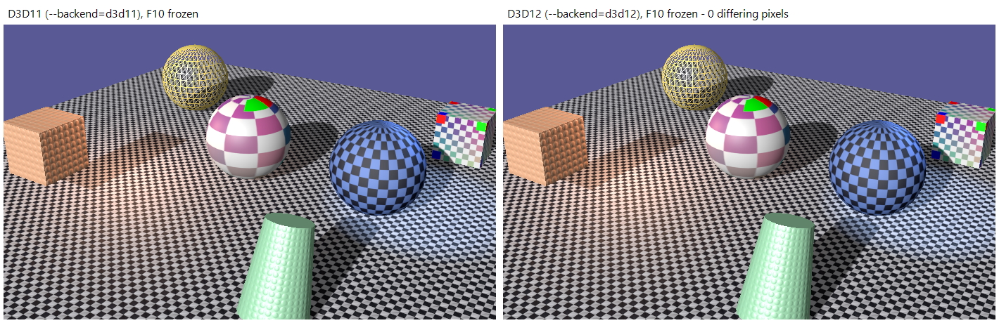
--backend=d3d11, 오른쪽 --backend=d3d12. 패스·배리어·바인딩이 두 백엔드에서 같은 결과를 내는지 보는 기준 화면입니다(8단계의 비교에서 차이 픽셀 0).9.두 백엔드 — RHI 인터페이스와 D3D11·D3D12 구현
이 장은 RHI(Render Hardware Interface, 그래픽 API 의 차이만 감추는 층)의 전체 모양과, 그것을 구현하는 두 백엔드의 뼈대를 다룹니다. 앞의 네 장이 RHI 의 어휘를 하나씩 설명했다면(5장 핸들·풀·Desc, 6장 PSO, 7장 바인딩, 8장 렌더 패스·배리어·프레임 자원) 여기서는 인터페이스 두 개(RHI::Device, RHI::CommandList)를 통째로 펼쳐 놓고, 같은 호출이 D3D11 과 D3D12 에서 각각 무엇이 되는지를 봅니다. D3D12 쪽은 처음 배우는 사람 기준으로 장치·큐·메모리·디스크립터 힙을 자세히 적었습니다.
RHI/Device.h,RHI/CommandList.h- 두 가상 인터페이스.
Backend,DeviceDesc도Device.h에 있습니다. RHI/RHI.h,RHI/RHI.cpp- 백엔드 팩토리
RHI::CreateDevice,RHI::ToString(Backend). RHI/GraphicsConfig.hkFrameCount(2),kMaxTimestamps(32).RHI/D3D11/D3D11Common.h,D3D11Device,D3D11CommandList,D3D11Resources.h,D3D11Convert,PipelineState,PipelineStateCache.RHI/D3D12/D3D12Common.h,D3D12Device,D3D12CommandList,D3D12Resources.h,D3D12DescriptorHeap.h,D3D12Convert,D3D12PipelineState.RHI/ShaderCompiler.h,RHI/DXBC/ShaderCompiler.cpp- HLSL 컴파일과 리플렉션. 두 백엔드가 공유합니다(10장).
pch.h,Core/Engine.cpp,App/AppBase.cpp,Assets/Config/engine.ini- 헤더 격리와 백엔드 선택.
9.1 무엇이 RHI 이고 무엇이 아닌가
RHI 가 감추는 것은 D3D11 과 D3D12 가 서로 다르게 표현하는 것들입니다. 리소스 생성, 파이프라인 상태, 바인딩, 렌더 패스, 드로우, 상태 전이, 프레임 동기화가 여기에 듭니다. 재질, 드로우 정렬, 텍스처 캐시, 패스의 순서는 RHI 위에 있는 Renderer 의 일이고 어느 백엔드에서나 같은 코드로 돕니다(14장). 이 경계는 폴더로 그어져 있습니다.
SherlockEngine/
RHI/ 선언만. D3D 헤더를 include 하지 않음
Handle.h ResourcePool.h PipelineTypes.h(.cpp) ResourceDesc.h
BindingTypes.h RenderPassTypes.h GraphicsConfig.h
Device.h CommandList.h ShaderCompiler.h
RHI.h RHI.cpp 팩토리. RHI.cpp 만 백엔드 헤더를 include (유일한 예외)
RHI/D3D11/ d3d11.h · dxgi · imgui_impl_dx11 은 여기만
RHI/D3D12/ d3d12.h · dxgi1_6 · imgui_impl_dx12 는 여기만
RHI/DXBC/ d3dcompiler.h · d3d11shader.h (fxc 컴파일, 리플렉션)
Graphics/ Renderer 층. RHI 핸들과 Desc, 두 인터페이스만 사용
Scene/ App/ Core/RHI/RHI.cpp 하나입니다.격리하는 방법
- pch 에 D3D 헤더가 없습니다.
pch.h는windows.h,DirectXMath.h, 표준 라이브러리만 include 합니다. D3D 헤더가 pch 에 있으면 모든 파일에서ID3D11Device가 보이므로 규칙을 강제할 수 없습니다. - include 지점은 백엔드마다 하나입니다.
RHI/D3D11/D3D11Common.h가d3d11.h·dxgi.h·dxgi1_5.h·d3dcompiler.h·wrl/client.h를,RHI/D3D12/D3D12Common.h가d3d12.h·d3d12sdklayers.h·dxgi1_6.h·dxgidebug.h를 include 하고#pragma comment(lib, …)와using Microsoft::WRL::ComPtr도 여기서 합니다. 같은 폴더의 파일만 이 헤더를 include 합니다. - RHI 헤더는 남의 타입을 값으로 바꿔 받습니다.
DeviceDesc::windowHandle은HWND대신void*이고,GetImGuiTextureId는ImTextureID대신uint64_t를 돌려줍니다. 그래서RHI/Device.h는windows.h도imgui.h도 끌어오지 않습니다. - 백엔드 내부 접근자는 인터페이스에 없습니다.
D3D11Device::GetContext(),D3D12Device::GetSrvHeap()같은 함수는 구체 클래스의 공개 메서드이고, 폴더 밖의 코드는RHI::Device*만 가지므로 부를 수 없습니다.
확인하는 법
규칙은 문자열 검색으로 확인합니다. 저장소 루트에서 다음 세 가지를 검색합니다.
| 검색 | 현재 결과 |
|---|---|
#include <d3d11…>, <d3d12…>, <dxgi…>, <d3dcompiler.h> | RHI/D3D11/D3D11Common.h, RHI/D3D12/D3D12Common.h, RHI/DXBC/ShaderCompiler.cpp 세 파일뿐 |
#include "RHI/D3D11/…", "RHI/D3D12/…" (두 폴더 밖에서) | RHI/RHI.cpp 한 파일뿐 |
imgui_impl_dx11, imgui_impl_dx12 | D3D11Device.cpp, D3D12Device.cpp 뿐. App/AppBase 는 imgui_impl_win32.h 만 include |
ID3D11, ID3D12, D3D11_, D3D12_ (세 폴더 밖에서) | 코드에는 없고 주석에만 남아 있음 (RHI/PipelineTypes.h, RHI/RenderPassTypes.h, RHI/ResourcePool.h, Graphics/VertexTypes.h, Graphics/Renderer.cpp) |
넷째 줄의 주석은 "이 Desc 는 D3D12_GRAPHICS_PIPELINE_STATE_DESC 를 따름" 같은 설명이라 컴파일에 영향이 없습니다. 폴더 밖의 코드에서 D3D 타입이 필요해졌다면 그 자리가 추상화가 새는 지점입니다. 이때는 그 파일에서 헤더를 include 하지 않고, 필요한 일을 RHI::Device 의 메서드로 올릴지 판단합니다.
NVRHI 는 D3D11·D3D12·Vulkan 위에 가상 인터페이스와 리소스 핸들을 두고, sokol_gfx 는 Desc 구조체와 세대 카운터가 있는 풀·정수 id 를 씁니다. bgfx 와 Diligent Engine 도 같은 부류입니다. 이 엔진의 RHI 는 그것들의 축소판이며, 인터페이스에는 이 프로젝트가 실제로 쓰는 것만 있습니다. 지금은 정점 셰이더와 픽셀 셰이더, 2D 텍스처, 인덱스 드로우만 다룹니다.
9.2 RHI::Device — 인터페이스 전체
RHI::Device(RHI/Device.h)는 리소스 생성과 프레임 경계를 맡는 순수 가상 클래스이고 메서드는 37개입니다. 같은 파일에 백엔드 열거 enum class Backend : uint8_t { D3D11, D3D12 } 와 생성 인자 DeviceDesc { void* windowHandle; int width, height; bool enableDebugLayer; } 가 있습니다. 기능 묶음별로 나누면 다음과 같습니다.
| 묶음 | 메서드 | 약속 |
|---|---|---|
| 정보 조회 | GetBackend · GetBackendName · IsInitialized | 표시용입니다. 호출 코드가 백엔드에 따라 분기하는 데 쓰지 않습니다. Renderer 에는 GetBackend() 호출이 없습니다. |
| 프레임 | BeginFrame · EndFrame · GetFrameIndex · GetCommandList | BeginFrame 은 프레임 인덱스(프레임 번호 % kFrameCount)를 갱신해 돌려줄 뿐 타깃을 바인딩하거나 지우지 않습니다. EndFrame 은 Present 입니다. 열린 렌더 패스가 있으면 에러 로그를 한 번 남기고 닫습니다. |
| 생성·파괴 | CreateBuffer / DestroyBuffer CreateTexture / DestroyTexture CreateSampler / DestroySampler CreateShader / DestroyShader CreateBindingLayout / DestroyBindingLayout CreateResourceSet / DestroyResourceSet | Desc 를 받아 핸들을 돌려줍니다. 실패하면 빈 핸들입니다. CreateTexture 의 초기 데이터는 서브리소스(면 × 밉)마다 하나인 std::span<const TextureSubresource> 이고 비어 있으면 빈 텍스처입니다. 큐브 텍스처는 정사각형 ShaderResource 전용입니다. CreateShader 는 바이트코드만 받습니다. Device 는 컴파일러를 모릅니다. |
| 파이프라인 | CreatePipeline · GetPipelineCount · InvalidatePipelines | 같은 Desc 면 같은 핸들이 돌아옵니다(캐시). 개별 파괴는 없고 InvalidatePipelines 가 전부 버리며 이전 핸들을 무효로 만듭니다. 셰이더 핫리로드가 씁니다(6장). |
| 갱신 | UpdateBuffer | Dynamic 버퍼는 "이 프레임 슬롯의 내용을 통째로 교체"(size ≤ desc.size), Default 버퍼는 전체 크기로만 갱신합니다. 부분 갱신과 이전 내용 읽기는 약속하지 않습니다. |
| 백버퍼·리사이즈 | GetBackBuffer · GetDepthBuffer · Resize · SetVSync · IsVSync · IsTearingSupported | 백버퍼와 메인 깊이 버퍼는 Device 가 소유하고 핸들로 빌려줍니다. Resize 때마다 새 핸들이 되므로 프레임을 넘겨 보관하면 안 됩니다. D3D12 에서는 프레임마다 다른 백버퍼의 핸들이 돌아옵니다. |
| 타임스탬프 | GetTimestampResults | 가장 최근에 완료된 프레임의 GPU 타임스탬프를 std::span<uint64_t> 에 채웁니다. CPU 가 기다리지 않습니다. 기록은 CommandList::WriteTimestamp 가 합니다(15장의 Profiler). |
| 리드백 | RequestBackBufferReadback · TakeReadbackResult | 다음 EndFrame 이 Present 직전의 백버퍼를 CPU 로 읽습니다(RGBA8, 위에서 아래로, 행 간격 width*4). 동기 방식이라 그 프레임은 GPU 를 기다립니다. 스크린샷 전용입니다. |
| ImGui 어댑터 | InitImGui · NewFrameImGui · RenderImGui · ShutdownImGui · GetImGuiTextureId | ImGui 의 렌더러 구현(imgui_impl_dx11/dx12)을 Device 가 고릅니다. RenderImGui 는 Renderer::BeginUIPass 와 EndUIPass 사이에서 부릅니다. GetImGuiTextureId 의 반환값은 ImTextureID 로 캐스팅해 ImGui::Image 에 넘깁니다. |
인터페이스에 넣지 않은 것
헤더 주석이 원칙을 적어 둡니다. D3D11 에서만 편한 것, 즉 즉시 Map 해서 포인터를 받는 것, 자동 밉 생성, 암묵적 동기화는 인터페이스에 없습니다. D3D12 가 지킬 수 없는 약속을 인터페이스가 하면 D3D12 구현이 D3D11 드라이버를 흉내 내야 하기 때문입니다. 반대로 D3D12 에서만 의미가 있는 개념(프레임 인덱스, 배리어, 바인딩 레이아웃, PSO 의 렌더 타깃 포맷)은 인터페이스에 들어 있고 D3D11 백엔드가 가볍게 처리합니다. 인터페이스는 더 명시적인 API 를 기준으로 삼습니다(D21).
ImGui 를 RHI 위의 자체 렌더러로 그리지 않고 어댑터 다섯 개로 둔 것도 같은 판단입니다. 자체 렌더러를 쓰려면 시저 사각형과 동적 정점 버퍼 갱신 경로를 RHI 에 더해야 하는데, 그 기능이 필요한 곳이 ImGui 뿐입니다. Dear ImGui 문서도 표준 백엔드를 쓰라고 권합니다.
한 프레임에서 Device 가 불리는 순서
Core/Engine.cpp 가 부르는 순서는 고정입니다. 자세한 흐름은 4장에 있고, 여기서는 Device 메서드만 뽑았습니다.
// Engine::BeginFrame
Profiler::BeginFrame(device); // device->GetTimestampResults(…)
device->NewFrameImGui();
// Engine::Render
device->BeginFrame();
RHI::CommandList& cmd = device->GetCommandList();
renderer.Render(…); // UpdateBuffer, CreatePipeline(캐시 조회), cmd 에 패스·드로우 기록
renderer.BeginUIPass();
device->RenderImGui();
renderer.EndUIPass(); // 백버퍼 → Present 전이
if (스크린샷 요청) device->RequestBackBufferReadback();
device->EndFrame(); // Present
if (스크린샷 요청) device->TakeReadbackResult(pixels, width, height);9.3 RHI::CommandList 와 "핸들은 값, Device 만 가상"
RHI::CommandList(RHI/CommandList.h)는 GPU 명령을 기록하는 곳이고 메서드는 13개입니다. Device 가 소유하며 GetCommandList() 로 참조를 빌려줍니다. 지금은 프레임에 하나뿐입니다.
| 묶음 | 메서드 | 약속 |
|---|---|---|
| 렌더 패스 | BeginRenderPass · EndRenderPass · IsInRenderPass | 타깃 바인딩, Load op(클리어), 뷰포트 설정을 한 번에 합니다. 패스 밖의 드로우는 에러 로그를 한 번 남기고 무시됩니다(8장). |
| 상태·바인딩 | SetPipelineState · SetResourceSet · SetVertexBuffer · SetIndexBuffer | 파이프라인 상태는 PSO 핸들 하나로만 바꿉니다. 정점 버퍼의 stride 는 BufferDesc::stride 를 씁니다. 인덱스 포맷 기본값은 R32_UINT 입니다. |
| 드로우 | DrawIndexed | 인덱스 드로우 하나뿐입니다. 인스턴싱과 비인덱스 드로우는 없습니다. |
| 전이·복사 | Barrier · CopyBuffer | Barrier(texture, before, after) 는 텍스처의 용도 전환을 선언합니다. CopyBuffer 는 크기가 같은 두 버퍼의 전체 복사입니다. |
| 타임스탬프 | WriteTimestamp | 이 시점의 GPU 시각을 슬롯(0 이상 kMaxTimestamps 미만)에 기록합니다. 패스 안팎 어디서든 부를 수 있습니다. |
| 통계 | GetStats · ResetStats | Stats { renderPasses, barriers, srvUnbinds }. Device 의 BeginFrame 이 비웁니다. |
리소스는 값, Device 와 CommandList 만 가상
RHI 의 형태에는 세 갈래가 있습니다. (a) 리소스마다 가상 인터페이스(IBuffer, ITexture)를 두는 방식, (b) 리소스는 {index, generation} 핸들이고 실제 객체는 백엔드의 풀에 있는 방식, (c) using Buffer = D3D11Buffer 처럼 빌드 구성으로 타입을 바꾸는 방식입니다. 이 엔진은 리소스에 (b)를, Device 와 CommandList 에 (a)를 씁니다.
- 리소스가 값이면 호출 코드에 포인터와 API 타입이 보이지 않습니다. 핸들은 8바이트이고 복사·비교가 자유로우며, 세대 카운터가 해제 뒤 사용을 "항상 널"로 바꿉니다(5장).
- Device 와 CommandList 가 가상이면 두 백엔드가 한 실행 파일에 함께 들어가고 시작할 때 값 하나로 고를 수 있습니다. (c)는 한 빌드에 백엔드가 하나라 두 백엔드를 같은 실행 파일로 나란히 비교할 수 없습니다.
가상 호출 비용. 드로우 하나에 드는 가상 호출은 UpdateBuffer, SetPipelineState, SetResourceSet, SetVertexBuffer, SetIndexBuffer, DrawIndexed 정도로 몇 개입니다. 가상 호출 하나는 포인터를 한 번 더 따라가는 간접 호출이고, 그 안에서 부르는 D3D API 와 드라이버가 하는 일에 비하면 작습니다. 그래서 지금 규모에서는 비용으로 치지 않기로 했습니다(D21). 백엔드 안의 호출은 가상이 아닙니다. D3D11CommandList 는 D3D11Device* 를, D3D12CommandList 는 D3D12Device* 를 구체 타입으로 들고 GetBuffer(handle) 같은 비가상 인라인 접근자를 부르므로, 핸들에서 객체를 찾는 일은 배열 인덱싱과 세대 비교 한 번입니다. 두 구현 클래스는 final 이라 컴파일러가 구체 타입을 아는 자리에서는 가상 호출을 직접 호출로 바꿀 수 있습니다. 드로우가 수만 개가 되어 이 비용이 프로파일러에 보이면 그때 드로우 묶음을 한 번의 호출로 넘기는 인터페이스를 검토합니다.
9.4 백엔드 팩토리와 선택 시점
백엔드를 고르는 자리는 RHI/RHI.cpp 의 RHI::CreateDevice 하나입니다. 이 파일만 두 백엔드의 헤더를 include 합니다.
// RHI/RHI.cpp
std::unique_ptr<Device> CreateDevice(Backend backend, const DeviceDesc& desc)
{
switch (backend)
{
case Backend::D3D11:
{
auto device = std::make_unique<D3D11Device>();
if (!device->Init(desc)) { Log::Error("RHI : D3D11 장치 초기화 실패."); return nullptr; }
Log::Info("RHI : 백엔드 %s", ToString(backend));
return device;
}
case Backend::D3D12: … // D3D12Device 로 같은 모양
default: Log::Error("RHI : 지원하지 않는 백엔드 %d", …); return nullptr;
}
}어느 값을 넘길지는 설정이 정합니다. 경로는 다음과 같습니다.
engine.ini
Assets/Config/engine.ini 의 [engine] 절에 backend = d3d11 이 있습니다. App/AppBase.cpp 의 AppBase::LoadConfig 가 이 파일을 읽어 "engine.backend" 키로 저장합니다.
실행 인자
같은 함수가 --키=값 꼴의 인자를 설정에 덮어씁니다. --backend=d3d12 는 키 backend 를 engine.backend 로 바꿔 넣는 별칭입니다. 일반형 --engine.backend=d3d12 도 같은 결과입니다(부록 D).
Engine::Initialize
Core/Engine.cpp 가 m_config.GetString("engine.backend", "d3d11") 을 대소문자 구분 없이 비교해 m_backend 를 정합니다. 모르는 값이면 경고를 남기고 D3D11 로 실행합니다. 이어서 DeviceDesc(창 핸들, 크기, engine.debuglayer)를 채워 RHI::CreateDevice 를 부르고, SetVSync, Renderer::Initialize(device), InitImGui 순으로 진행합니다.
실행 중이 아니라 시작할 때 하나만 고르는 이유
두 백엔드는 같은 실행 파일에 함께 빌드되어 있습니다. 그런데도 실행 중에 바꾸는 기능은 없고 시작할 때 한 번만 고릅니다. 이유는 다음과 같습니다.
- 스왑체인이 창에 묶입니다. 두 백엔드 모두 flip 모델 스왑체인을 창 핸들에 붙여 만들고, 한 창에는 그런 스왑체인을 하나만 붙일 수 있습니다. 그래서 한 창을 두 장치가 동시에 쓸 수 없습니다.
- 모든 핸들이 그 Device 의 풀을 가리킵니다.
Renderer가 가진 버퍼·텍스처·셰이더·PSO·리소스 셋 핸들, 씬의 GPU 캐시, 에디터의 썸네일 텍스처가 전부 한 Device 안의 풀 인덱스입니다. Device 를 바꾸려면 이것들을 전부 반납하고 다시 만들어야 하며, 이는Engine::Shutdown뒤Engine::Initialize를 다시 하는 것과 같은 일입니다. - ImGui 렌더러 구현도 Device 가 고릅니다.
InitImGui가imgui_impl_dx11과imgui_impl_dx12중 하나를 초기화하고, 폰트 텍스처 같은 GPU 객체가 그 장치에 만들어집니다. - 실행 중 전환이 필요한 곳이 없습니다. 두 백엔드를 비교하는 일은 같은 실행 파일을 인자만 바꿔 두 번 실행하는 것으로 충분합니다(9.14).
Device 의 소유자는 Engine 입니다. Core/Engine.h 에서 std::unique_ptr<RHI::Device> m_device 가 Renderer m_renderer 보다 먼저 선언되어 있어 Renderer 가 먼저 파괴되고, Engine::Shutdown 도 씬 GPU 캐시, Renderer::Shutdown, ShutdownImGui, m_device.reset() 순으로 내려갑니다(2장).
9.5 D3D11 백엔드
D3D11Device final : public RHI::Device 와 D3D11CommandList final : public RHI::CommandList 가 구현입니다. D3D11 은 명령을 부르는 즉시 드라이버에 넘기는 API 라 구현이 얇습니다.
장치·컨텍스트·스왑체인
D3D11Device::Init 의 순서는 InitDirect3D, m_commandList.Init(this), CreateTimestampQueries, CreateBackBufferTexture, CreateDepthTexture 입니다. InitDirect3D 가 하는 일은 다음과 같습니다.
D3D11CreateDevice로 장치(ID3D11Device)와 즉시 컨텍스트(ID3D11DeviceContext)를 만듭니다. 기능 수준은D3D_FEATURE_LEVEL_11_0하나만 요청합니다. Debug 빌드에서enableDebugLayer가 참이면D3D11_CREATE_DEVICE_DEBUG를 더합니다.- 장치에서
IDXGIDevice,IDXGIAdapter,IDXGIFactory2를 차례로 얻습니다. 장치를 만든 어댑터의 팩토리로 스왑체인을 만들어야 합니다. IDXGIFactory5::CheckFeatureSupport(DXGI_FEATURE_PRESENT_ALLOW_TEARING)으로 tearing 지원을 확인해 스왑체인 플래그를 정합니다.CreateSwapChainForHwnd로 flip 모델 스왑체인을 만듭니다. 포맷R8G8B8A8_UNORM, 버퍼 2장,DXGI_SWAP_EFFECT_FLIP_DISCARD입니다. flip 모델의 제약과 sRGB 뷰는 12장에 있습니다.
장치와 스왑체인을 따로 만드는 구조라서 D3D12 백엔드가 스왑체인 코드를 거의 그대로 씁니다. 백버퍼는 GetBuffer(0) 을 D3D11Texture 로 감싸 풀에 등록한 것이고(CreateBackBufferTexture), 메인 깊이 버퍼는 D24_UNORM_S8_UINT 텍스처를 일반 CreateTexture 로 만든 것입니다.
리소스 구조체
풀에 들어가는 항목은 RHI/D3D11/D3D11Resources.h 에 있습니다. 풀 여섯 개(ResourcePool<T, Handle>)와 PSO 캐시는 m_device 보다 뒤에 선언되어 장치보다 먼저 파괴됩니다.
| 구조체 | 가진 것 | 비고 |
|---|---|---|
| D3D11Buffer | BufferDesc, 이름, ComPtr<ID3D11Buffer> buffers[kFrameCount] | Dynamic 버퍼만 프레임 수만큼 복제하고 Get(frameIndex) 가 이번 프레임의 것을 고릅니다. 나머지는 [0] 만 씁니다. |
| D3D11Texture | TextureDesc, ID3D11Texture2D, typeless, state, 뷰 네 개(rtv, rtvSrgb, dsv, srv) | 뷰는 GetRTV/GetDSV/GetSRV 가 처음 요청될 때 만듭니다. bindFlags 에 없는 뷰를 요청하면 nullptr 입니다. |
| D3D11Shader | 스테이지, ID3D11VertexShader 또는 ID3D11PixelShader, 바이트코드 사본 | 바이트코드는 입력 레이아웃 생성(정점 셰이더 시그니처 검증)에 필요합니다. |
| D3D11Sampler | SamplerDesc, ID3D11SamplerState | 비교 함수는 필터가 Comparison 일 때만 넘깁니다. |
| D3D11BindingLayout D3D11ResourceSet | Desc 사본과 이름뿐 | D3D11 에는 루트 시그니처도 디스크립터 테이블도 없습니다. SetResourceSet 이 슬롯마다 개별 바인딩 호출로 풉니다(7장). |
typeless 는 한 텍스처를 두 포맷의 뷰로 볼 때 켜집니다. 깊이 겸 SRV(그림자 맵)는 리소스를 R32_TYPELESS 로 만들어 DSV 는 D32_FLOAT, SRV 는 R32_FLOAT 로 봅니다. 렌더 타깃 겸 SRV 인 R8G8B8A8_UNORM 텍스처(에디터 씬 뷰)는 R8G8B8A8_TYPELESS 로 만들어 sRGB RTV 로 그리고 UNORM SRV 로 읽습니다. D3D12 백엔드도 규칙이 같습니다.
버퍼 생성과 갱신
CreateBuffer 는 상수 버퍼 크기를 16바이트 단위로 올림하고, 용도에 따라 D3D11_USAGE_DEFAULT, DYNAMIC(CPU 쓰기), STAGING 을 고릅니다. UpdateBuffer 는 Dynamic 이면 이번 프레임 복제본을 Map(D3D11_MAP_WRITE_DISCARD) 로 쓰고, Default 면 UpdateSubresource 로 전체를 덮어씁니다. WRITE_DISCARD 는 드라이버가 새 메모리를 주고 이전 내용을 버리는 방식이라(이름 바꾸기, renaming) GPU 가 이전 내용을 아직 읽고 있어도 기다리지 않습니다. 한 프레임에 같은 버퍼를 여러 번 갱신해도 각 드로우가 자기 데이터를 봅니다. D3D12 에서는 이 일을 엔진이 직접 해야 합니다(9.7).
상태 캐시
- PSO 캐시.
PipelineStateCache가PipelineStateDesc를 키로PipelineState를 보관합니다.PipelineState는 입력 레이아웃·래스터라이저·깊이 스텐실·블렌드 상태 객체와 셰이더 두 개, 토폴로지를 묶은 것이고Bind가 Set 호출 일곱 번으로 전부 설정합니다(6장). - SRV 슬롯 추적.
D3D11CommandList는m_vsSrv,m_psSrv(각kMaxSrvRegister칸)에 슬롯마다 어떤 텍스처가 바인딩돼 있는지 적어 둡니다.BeginRenderPass는 타깃이 될 텍스처가 SRV 슬롯에 남아 있으면 먼저 풉니다(UnbindShaderResourcesOf). D3D11 은 같은 리소스가 SRV 와 RTV/DSV 에 동시에 걸리면 경고하고 SRV 를 강제로 널로 만드는데, 먼저 풀면 경고가 나지 않습니다. - 리소스 상태 추적.
Barrier는 D3D11 에서 할 일이 없으므로D3D11Texture::state만 갱신합니다. Debug 빌드에서는 호출 코드가 넘긴before가 추적 상태와 다르면 경고합니다. D3D12 에서 에러가 될 호출을 D3D11 실행에서 미리 찾기 위한 검사입니다.
Convert 함수와 그 밖의 것
D3D11Convert 네임스페이스(RHI/D3D11/D3D11Convert.h)가 RHI 열거형과 Desc 를 D3D11 값으로 바꿉니다. ToDXGI(Format), ToD3D11(FillMode | CullMode | CompareFunc | PrimitiveTopology | BlendFactor | BlendOp | SamplerFilter | SamplerAddress), ToSemanticName, 그리고 RasterizerDesc·DepthStencilDesc·BlendDesc 를 통째로 바꾸는 세 함수입니다. 대응하는 값이 없으면 Log::Error 를 남기고 안전한 기본값을 돌려줍니다. 매핑 표는 백엔드마다 따로 있습니다(D3D12Convert).
EndFrame 은 리드백 요청이 있으면 백버퍼를 스테이징 텍스처로 복사해 읽고, Present(vsync ? 1 : 0, 플래그) 를 부르고, Debug Layer 의 InfoQueue 메시지를 Log 로 옮깁니다(DumpDebugLayerMessages). Resize 는 타깃 바인딩 해제, 백버퍼·깊이 텍스처 파괴, ResizeBuffers, 재생성 순서를 지킵니다. 스왑체인 버퍼를 가리키는 참조가 하나라도 남으면 ResizeBuffers 가 실패하기 때문입니다. Desc::debugName 은 Debug 빌드에서 SetPrivateData(WKPDID_D3DDebugObjectName) 으로 객체에 붙어 Debug Layer 의 누수 보고와 RenderDoc 에 그 이름으로 보입니다. ReleaseDevice 는 풀과 캐시를 비운 뒤 ReportLiveDeviceObjects 를 불러 남은 객체를 보고하게 합니다.
9.6 D3D12 백엔드 ① 장치·큐·프레임 자원
D3D11 에서 D3D12 로 가면 드라이버가 하던 세 가지가 애플리케이션의 일이 됩니다. CPU 와 GPU 의 동기화, 리소스의 수명과 상태, 리소스 바인딩입니다. D3D12Device final : public RHI::Device(RHI/D3D12/D3D12Device.h)가 이 세 가지를 맡는 객체들을 소유합니다. 먼저 D3D11 에 없던 객체 다섯 가지입니다.
| 객체 | 하는 일 | 이 엔진에서 |
|---|---|---|
| 장치 ID3D12Device | 리소스·힙·PSO 같은 객체를 만듭니다. 명령을 실행하지 않습니다. D3D11 의 즉시 컨텍스트에 해당하는 것이 없습니다. | m_device 하나 |
| 커맨드 큐 ID3D12CommandQueue | 기록이 끝난 커맨드 리스트를 GPU 에 제출하는 창구입니다. 제출한 순서대로 실행됩니다. | m_queue 하나. 종류는 D3D12_COMMAND_LIST_TYPE_DIRECT |
| 커맨드 할당자 ID3D12CommandAllocator | 기록된 명령이 실제로 저장되는 메모리입니다. GPU 가 그 명령을 다 실행하기 전에는 Reset 할 수 없습니다. | 프레임 슬롯마다 하나 m_allocators[kFrameCount], 업로드용 하나 |
| 커맨드 리스트 ID3D12GraphicsCommandList | 명령을 기록하는 인터페이스입니다. Close 한 뒤 큐에 넘기고, 넘긴 직후 다른 할당자로 Reset 해 다시 쓸 수 있습니다. | 프레임용 m_list 하나, 업로드용 m_uploadList 하나 |
| 펜스 ID3D12Fence | 64비트 카운터입니다. queue->Signal(fence, 값) 은 GPU 가 큐의 그 지점에 도달했을 때 펜스 값을 바꾸라는 예약이고, CPU 는 GetCompletedValue 로 진행을 확인하거나 이벤트로 기다립니다. | m_fence 하나, 슬롯별 목표 값 m_fenceValues[kFrameCount] |
초기화 순서
D3D12Device::Init 은 InitDevice, InitSwapChain, InitFrameResources, m_commandList.Init(this), CreateTimestampResources, CreateBackBufferTextures, CreateDepthTexture 순으로 진행합니다.
InitDevice
Debug 빌드에서 Debug Layer 를 먼저 켭니다(9.9). 장치를 만든 뒤에는 켤 수 없습니다. CreateDXGIFactory2 로 팩토리를 만들고 EnumAdapters1 로 어댑터를 돌면서 소프트웨어 어댑터(DXGI_ADAPTER_FLAG_SOFTWARE)를 건너뛰고, D3D12CreateDevice(adapter, D3D_FEATURE_LEVEL_11_0, …) 가 처음 성공하는 어댑터를 씁니다. 이어서 직접(direct) 커맨드 큐를 만들고 tearing 지원을 확인합니다.
InitSwapChain
D3D11 과 같은 flip 모델(FLIP_DISCARD, R8G8B8A8_UNORM)입니다. 다른 점은 두 가지입니다. CreateSwapChainForHwnd 의 첫 인자에 장치가 아니라 커맨드 큐를 넘기고, 백버퍼가 kBackBufferCount(3)장입니다. IDXGISwapChain3 으로 바꿔 GetCurrentBackBufferIndex 를 쓸 수 있게 합니다.
InitFrameResources
프레임 슬롯별 커맨드 할당자, 프레임 커맨드 리스트(만든 직후 Close), 펜스와 대기용 Win32 이벤트, 업로드용 할당자와 리스트, 슬롯별 업로드 링(kUploadRingSize = 8 MB, 영구 매핑), 디스크립터 힙 여섯 개를 만듭니다.
백버퍼와 깊이 버퍼
스왑체인 버퍼 세 장을 각각 D3D12Texture 로 감싸 핸들 세 개(m_backBuffers)로 등록합니다. 추적 상태는 Present 로 시작합니다. GetBackBuffer() 는 m_backBuffers[m_backBufferIndex] 를 돌려주므로 프레임마다 다른 핸들이 나옵니다. 깊이 버퍼는 D24_UNORM_S8_UINT 텍스처 하나입니다.
프레임 슬롯과 백버퍼는 다른 개념
프레임 슬롯은 kFrameCount(2)개이고, CPU 가 GPU 보다 몇 프레임 앞서 기록할 수 있는지를 정합니다. 각 슬롯이 커맨드 할당자, 펜스 목표 값, 업로드 링, 지연 해제 목록, 타임스탬프 쿼리 구간을 하나씩 가집니다. 백버퍼 수(3)는 스왑체인이 돌려 쓰는 화면 버퍼의 수이고 프레임 슬롯과 무관합니다. 이번 프레임에 어느 슬롯을 쓸지는 m_frameCounter % kFrameCount 가, 어느 백버퍼에 그릴지는 GetCurrentBackBufferIndex() 가 정합니다.
BeginFrame 과 EndFrame
// D3D12Device::BeginFrame
m_frameIndex = static_cast<uint32_t>(m_frameCounter % kFrameCount);
if (m_fenceValues[m_frameIndex] != 0 && m_fence->GetCompletedValue() < m_fenceValues[m_frameIndex])
{
m_fence->SetEventOnCompletion(m_fenceValues[m_frameIndex], m_fenceEvent);
WaitForSingleObject(m_fenceEvent, INFINITE); // 이 슬롯을 마지막으로 쓴 프레임이 GPU 에서 끝날 때까지
}
ReleaseGarbage(m_frameIndex); // 그 프레임이 쓰던 리소스·디스크립터 해제
ReadTimestamps(m_frameIndex);
m_rings[m_frameIndex].offset = 0; // 업로드 링 재사용
m_allocators[m_frameIndex]->Reset();
m_list->Reset(m_allocators[m_frameIndex].Get(), nullptr);
ID3D12DescriptorHeap* heaps[] = { m_srvHeap.Get(), m_samplerHeap.Get() };
m_list->SetDescriptorHeaps(2, heaps);
m_backBufferIndex = m_swapChain->GetCurrentBackBufferIndex();
m_commandList.ResetStats();
m_commandList.BeginFrame(m_list.Get());
// D3D12Device::EndFrame
… // 열린 패스 닫기, 타임스탬프 Resolve, 리드백 복사 기록
m_list->Close();
ID3D12CommandList* lists[] = { m_list.Get() };
m_queue->ExecuteCommandLists(1, lists);
…
m_swapChain->Present(m_vsync ? 1 : 0, flags);
…
m_queue->Signal(m_fence.Get(), m_nextFenceValue);
m_fenceValues[m_frameIndex] = m_nextFenceValue++;
… // 리드백 마무리, Debug Layer 메시지 출력
++m_frameCounter;읽는 법은 이렇습니다. EndFrame 은 이 프레임의 명령을 큐에 넣고 그 뒤에 "여기까지 끝나면 펜스를 이 값으로" 라는 표시를 넣습니다. 그 값이 슬롯에 기록됩니다. 같은 슬롯을 다시 쓰게 되는 BeginFrame(두 프레임 뒤)은 펜스가 그 값에 도달했는지 보고, 아직이면 기다립니다. 기다림이 끝났다는 것은 GPU 가 그 슬롯의 명령을 전부 실행했다는 뜻이므로, 그 슬롯의 할당자를 Reset 하고 업로드 링을 처음부터 다시 쓰고 지연 해제 목록을 비워도 안전합니다. D3D11 에서는 드라이버 안에서 일어나던 대기입니다. 펜스와 링의 자세한 동작은 8장에 있습니다.
D3D12CommandList(RHI/D3D12/D3D12CommandList.h)는 커맨드 리스트를 소유하지 않습니다. Device 가 Reset 한 m_list 의 포인터를 BeginFrame(list) 로 넘겨받아 거기에 기록하고, 현재 PSO 와 루트 시그니처, 바인딩된 리소스 셋을 기억합니다. 커맨드 리스트를 Reset 하면 바인딩 상태가 전부 사라지므로 프레임 처음에 이 기억도 "다시 바인딩 필요"로 표시합니다.
WaitForGpu 가 쓰이는 곳
WaitForGpu 는 큐 끝에 펜스 신호를 넣고 그 값까지 기다리는 함수로, 큐에 쌓인 모든 명령이 끝났음을 보장합니다. 프레임마다 부르면 CPU 와 GPU 가 번갈아 쉬게 되므로 다음 네 곳에서만 씁니다. 로드 시점의 동기 업로드(ExecuteUploadSync), Resize(백버퍼 세 장과 깊이 버퍼를 즉시 해제해야 ResizeBuffers 가 성공합니다), 스크린샷 리드백(FinishBackBufferReadback), 종료(ReleaseDevice)입니다. ReleaseDevice 는 GPU 를 기다린 뒤 풀과 캐시, 지연 해제 목록, 디스크립터 힙, 프레임 자원, 스왑체인, 큐, 장치 순으로 놓습니다.
9.7 D3D12 백엔드 ② 메모리와 업로드
D3D11 의 Usage(Default·Dynamic·Staging)에 해당하는 것이 D3D12 에서는 힙 종류입니다. 힙은 리소스가 놓이는 메모리 덩어리이고, 종류가 CPU 접근 가능 여부를 정합니다.
| 힙 종류 | 성질 | 이 엔진에서 쓰는 곳 |
|---|---|---|
| D3D12_HEAP_TYPE_DEFAULT | GPU 전용 메모리입니다. CPU 가 Map 할 수 없으므로 내용을 넣으려면 다른 리소스에서 복사해야 합니다. | Default 버퍼(정점·인덱스), 모든 텍스처 |
| D3D12_HEAP_TYPE_UPLOAD | CPU 가 쓰고 GPU 가 읽습니다. 리소스 상태는 GENERIC_READ 로 고정입니다. | 초기 데이터의 임시 스테이징 버퍼, 프레임 슬롯별 업로드 링(Dynamic 버퍼) |
| D3D12_HEAP_TYPE_READBACK | GPU 가 쓰고 CPU 가 읽습니다. 리소스 상태는 COPY_DEST 입니다. | Staging 버퍼, 타임스탬프 리드백 버퍼, 백버퍼 리드백 버퍼 |
리소스를 만드는 함수는 전부 CreateCommittedResource 입니다. committed resource 는 리소스 하나와 그 리소스만을 위한 힙을 한 번에 만드는 방식입니다. 큰 힙을 먼저 만들고 그 안에 여러 리소스를 배치하는 방식(placed resource)은 직접 만든 메모리 할당기가 있어야 하므로 쓰지 않습니다. SDK 와 별도로 배포되는 d3dx12.h 도 쓰지 않으며, 필요한 헬퍼 셋(HeapProperties, BufferDesc, TransitionBarrier)은 RHI/D3D12/D3D12Convert.h 에 직접 적혀 있습니다.
Default 버퍼와 텍스처 — 동기 업로드 경로
D3D11 에서는 CreateBuffer 나 CreateTexture2D 에 초기 데이터 포인터를 넘기면 끝입니다. D3D12 에서는 같은 일이 네 단계가 됩니다. D3D12Device::CreateBuffer 와 CreateTexture 가 초기 데이터를 받았을 때의 경로입니다.
목적지 리소스
DEFAULT 힙에 리소스를 만듭니다. 버퍼의 초기 상태는 COMMON, 초기 데이터가 있는 텍스처는 COPY_DEST 입니다. 버퍼는 GetGPUVirtualAddress() 를 D3D12Buffer::gpuAddress 에 저장해 두고, 나중에 정점·인덱스 버퍼 뷰를 만들 때 씁니다.
업로드 힙에 쓰기
UPLOAD 힙에 임시 버퍼를 만들고 Map, memcpy, Unmap 합니다. 텍스처는 GetCopyableFootprints 가 알려 주는 밉별 오프셋과 행 간격(RowPitch)에 맞춰 행 단위로 복사합니다. 업로드 버퍼 안의 행 간격은 256바이트 정렬이라 원본의 rowPitch 와 다르기 때문입니다.
Copy 기록과 실행
ExecuteUploadSync 가 업로드 전용 할당자와 리스트를 Reset 하고, 넘겨받은 람다로 CopyBufferRegion(버퍼) 또는 밉마다 CopyTextureRegion(텍스처)을 기록한 뒤 Close, ExecuteCommandLists 합니다.
배리어와 대기
텍스처는 같은 리스트 끝에 COPY_DEST 에서 ShaderResource(PIXEL_SHADER_RESOURCE | NON_PIXEL_SHADER_RESOURCE)로 가는 전이 배리어를 기록하고 추적 상태도 ShaderResource 로 둡니다. 마지막으로 WaitForGpu 로 복사가 끝날 때까지 기다립니다. 함수가 돌아오면 임시 업로드 버퍼의 ComPtr 이 범위를 벗어나며 해제됩니다.
버퍼에는 배리어가 없습니다. 버퍼는 COMMON 상태에서 복사 대상으로 쓰이면 암묵적으로 COPY_DEST 로 승격되고, ExecuteCommandLists 가 끝나면 다시 COMMON 으로 돌아옵니다(decay). 텍스처는 이런 승격이 되지 않아 명시적 배리어가 필요합니다. 동기 방식이라 업로드마다 GPU 를 기다리지만, 이 경로는 메시와 텍스처를 로드하는 시점에만 쓰이므로 프레임 시간에 영향을 주지 않습니다.
텍스처의 초기 상태는 6단계부터 Renderer 가 가정해 온 상태 추적의 출발점과 같아야 합니다. CreateTexture 는 초기 데이터가 있으면 COPY_DEST, 깊이 전용(SRV 없음)이면 DEPTH_WRITE, 그 밖에는 COMMON 으로 만듭니다. 메인 깊이 버퍼는 Renderer 가 배리어를 걸지 않으므로 처음부터 DEPTH_WRITE 이고, 그림자 맵은 Renderer 의 첫 배리어가 Common → DepthWrite 이므로 COMMON 입니다. 깊이 텍스처와 렌더 타깃에는 최적화 클리어 값(깊이 1.0, 색 (0,0,0,1))을 함께 넘깁니다.
Dynamic 버퍼 — 업로드 링 개요
Dynamic 버퍼(상수 버퍼)는 D3D12 에서 자기 리소스가 없습니다. CreateBuffer 는 Desc 만 풀에 넣습니다(상수 버퍼 크기는 256바이트 단위로 올림). UpdateBuffer 가 불릴 때마다 AllocateUpload 가 이번 프레임 슬롯의 업로드 링에서 256바이트 정렬 조각을 잘라 주고, 데이터를 복사한 뒤 그 조각의 GPU 가상 주소를 D3D12Buffer::gpuAddress 에, 프레임 번호를 updatedFrame 에 기록합니다. 드로우 직전에 D3D12CommandList::ApplyBindings 가 그 주소를 SetGraphicsRootConstantBufferView 로 바인딩합니다.
이렇게 하는 이유는 오브젝트 상수 버퍼 하나를 드로우마다 갱신하기 때문입니다. GPU 는 명령을 나중에 실행하므로, 버퍼가 한 장이면 한 프레임의 모든 드로우가 마지막에 쓴 값을 보게 됩니다. 갱신마다 새 조각을 주면 각 드로우가 자기 값을 봅니다. D3D11 의 Map(WRITE_DISCARD) 가 드라이버 안에서 하던 일을 엔진이 하는 것입니다. 계약은 "쓰는 프레임에 반드시 갱신한다"이고, ApplyBindings 는 updatedFrame 이 현재 프레임 번호와 다르면 에러 로그를 한 번 남깁니다. 링이 가득 차면 AllocateUpload 가 에러 로그를 한 번 남기고 그 갱신을 버립니다. 링의 수명과 펜스의 관계, 루트 CBV 의 자세한 동작은 8장과 7장에 있습니다.
지연 해제
D3D11 에서는 ComPtr 을 놓아도 GPU 가 그 객체를 다 쓸 때까지 드라이버가 붙들어 줍니다. D3D12 에서는 참조 카운트가 0 이 되면 바로 해제되므로, GPU 가 쓰는 동안 객체를 살려 두는 것이 애플리케이션의 책임입니다. 그래서 파괴 요청은 즉시 실행하지 않고 현재 프레임 슬롯의 목록에 넣습니다.
// RHI/D3D12/D3D12Device.h
struct Garbage
{
std::vector<ComPtr<ID3D12Object>> objects; // DeferRelease 가 넣음
std::vector<DescriptorFree> descriptors; // DeferFree 가 넣음 { heap, start, count }
};
Garbage m_garbage[kFrameCount];목록은 같은 슬롯이 다시 쓰이는 BeginFrame 에서 펜스 대기가 끝난 직후 ReleaseGarbage 가 비웁니다. 이 경로를 쓰는 곳은 DestroyBuffer(리소스), DestroyTexture(리소스와 디스크립터 다섯 종), DestroySampler(스테이징 디스크립터), DestroyResourceSet(테이블 범위 두 개), D3D12PipelineStateCache::Clear(PSO), ImGui 의 SRV 해제 콜백입니다. DestroyShader 와 DestroyBindingLayout 은 GPU 객체가 없어 풀에서 바로 지웁니다. Resize 와 ReleaseDevice 는 WaitForGpu 로 GPU 를 비운 뒤 목록을 포함해 전부 즉시 놓습니다.
9.8 D3D12 백엔드 ③ 디스크립터 힙과 뷰
D3D11 의 뷰는 객체입니다. CreateShaderResourceView 가 ID3D11ShaderResourceView 를 돌려주고 그 포인터를 바인딩합니다. D3D12 의 뷰는 객체가 아니라 디스크립터, 즉 "어느 리소스를 어떤 포맷과 범위로 볼지"를 적은 작은 데이터 블록이고, 디스크립터 힙이라는 배열의 한 칸에 기록됩니다. CreateShaderResourceView(resource, &desc, cpuHandle) 는 아무것도 돌려주지 않고 cpuHandle 이 가리키는 칸을 채웁니다. 칸의 주소는 힙 시작 주소에 인덱스 × 증가폭 을 더한 값이고, 증가폭은 GetDescriptorHandleIncrementSize 로 얻습니다.
힙에는 두 부류가 있습니다. CPU 전용 힙은 뷰를 만들어 보관하는 곳이고, 셰이더 가시(shader visible) 힙은 셰이더가 실제로 읽는 곳입니다. 셰이더 가시 힙은 종류별로 하나씩만 커맨드 리스트에 바인딩할 수 있습니다. D3D12Device 는 여섯 개를 만듭니다(InitFrameResources).
| 멤버 | 종류 | 칸 수 | 부류 | 들어가는 것 |
|---|---|---|---|---|
| m_rtvHeap | RTV | 64 | CPU | 텍스처의 RTV(원래 포맷 뷰와 sRGB 뷰) |
| m_dsvHeap | DSV | 16 | CPU | 깊이 텍스처의 DSV |
| m_srvStaging | CBV_SRV_UAV | 1024 | CPU | 텍스처마다 SRV 하나. 복사 원본 |
| m_samplerStaging | SAMPLER | 64 | CPU | 샘플러마다 하나. 복사 원본 |
| m_srvHeap | CBV_SRV_UAV | 4096 | 셰이더 가시 | ResourceSet 의 SRV 테이블, ImGui 가 쓰는 SRV |
| m_samplerHeap | SAMPLER | 256 | 셰이더 가시 | ResourceSet 의 샘플러 테이블 |
할당기 — D3D12DescriptorHeap
RHI/D3D12/D3D12DescriptorHeap.h 의 D3D12DescriptorHeap 은 힙 하나와 연속 범위 할당기를 묶은 클래스입니다. 헤더에 전부 들어 있고 구조는 단순합니다.
m_next는 아직 한 번도 쓰지 않은 첫 칸의 인덱스입니다.m_free는 반납된{start, count}범위의 목록입니다.Allocate(count)는m_free를 앞에서부터 훑어count이상인 첫 범위에서 잘라 줍니다(first-fit). 없으면m_next를count만큼 밀고 그 시작 인덱스를 줍니다(bump). 용량을 넘으면kInvalid(UINT32_MAX)를 돌려줍니다.Free(start, count)는 범위를m_free에 추가합니다. 인접한 빈 범위를 합치지는 않습니다.Cpu(index)와Gpu(index)가 인덱스를 핸들로 바꿉니다.Gpu는 셰이더 가시 힙에서만 의미가 있습니다.
리소스 셋과 텍스처가 수백 개 수준이라 이 방식으로 충분하다는 것이 헤더 주석의 판단입니다. 그래서 D3D12Texture 의 뷰는 ComPtr 이 아니라 인덱스 다섯 개(rtv, rtvSrgb, dsv, srv, srvVisible)이고 전부 kInvalid 로 시작합니다.
CreateResourceSet 이 복사를 한 번 해 두므로 드로우 때는 테이블 시작 핸들만 바인딩합니다.뷰가 만들어지는 시점
- RTV·DSV.
D3D12Device::GetRTV(texture, srgbView)와GetDSV(texture)가 처음 요청될 때 힙에서 칸을 받아 뷰를 만들고 인덱스를 텍스처에 저장합니다.D3D12CommandList::BeginRenderPass가 이 CPU 핸들로OMSetRenderTargets,ClearRenderTargetView,ClearDepthStencilView를 기록하고 뷰포트와 시저 사각형을 설정합니다. 백버퍼는 UNORM 리소스이고 sRGB 로 쓸지 여부는 RTV 의 포맷이 정합니다(12장). - SRV.
GetSRV(texture)가 스테이징 힙에 만듭니다. TYPELESS 깊이 리소스는R32_FLOAT같은 셰이더용 포맷으로 봅니다. - ResourceSet.
CreateResourceSet이 셰이더 가시 힙에서 SRV 슬롯 수만큼, 샘플러 슬롯 수만큼 연속 범위를 할당받고 스테이징 디스크립터를 레이아웃의 슬롯 순서대로CopyDescriptorsSimple합니다. 범위는 셋이 파괴될 때까지 유지됩니다. 상수 버퍼는 테이블에 넣지 않고 루트 CBV 로 바인딩합니다. 루트 시그니처의 구성과 테이블의 대응은 7장에 있습니다.
셰이더 가시 힙 두 개는 BeginFrame 이 SetDescriptorHeaps 로 프레임에 한 번 바인딩합니다. 힙을 바꾸는 것은 비용이 큰 작업이고, 힙이 하나씩이면 바꿀 일이 없습니다.
9.9 D3D12 백엔드 ④ PSO·셰이더·검증 계층·ImGui
PSO 와 루트 시그니처
D3D12PipelineState::Create(RHI/D3D12/D3D12PipelineState.cpp)가 PipelineStateDesc 를 D3D12_GRAPHICS_PIPELINE_STATE_DESC 하나로 옮겨 CreateGraphicsPipelineState 를 부릅니다. 루트 시그니처는 D3D12Device::GetOrCreateRootLayout 이 Desc 의 바인딩 레이아웃 조합마다 하나씩 만들어 캐시합니다. D3D11 은 보지 않던 rtvFormats, dsvFormat, sampleCount 가 여기서는 필수입니다. 자세한 내용은 6장과 7장에 있습니다.
셰이더는 DXBC(SM 5.0) 그대로
D3D12 에는 셰이더 객체가 없습니다. D3D12Device::CreateShader 는 바이트코드를 D3D12Shader::bytecode 에 복사해 두기만 하고, PSO 를 만들 때 D3D12_SHADER_BYTECODE 로 넘깁니다. 바이트코드는 fxc 가 만든 DXBC(셰이더 모델 5.0)이고 D3D11 백엔드가 받는 것과 같은 .cso 파일입니다. D3D12 는 dxc 가 만드는 DXIL(SM 6.x)도 받지만 DXBC 도 그대로 받습니다. 같은 바이트코드를 쓰면 두 백엔드의 화면 비교가 컴파일러 차이 없이 RHI 구현만 비교하게 되고, 셰이더 소스와 컴파일, 리플렉션 코드가 한 벌로 끝납니다. 그래서 컴파일러 구현은 그래픽 API 폴더가 아니라 바이트코드 형식의 이름을 딴 RHI/DXBC/ 에 있습니다(10장). 5.0 을 유지하는 판단은 9.12에 정리했습니다.
Debug Layer · GPU 기반 검증 · InfoQueue
Debug 빌드에서 DeviceDesc::enableDebugLayer(engine.debuglayer)가 참이면 InitDevice 가 장치를 만들기 전에 세 가지를 켭니다.
- Debug Layer.
D3D12GetDebugInterface로ID3D12Debug를 얻어EnableDebugLayer(). API 호출의 인자와 상태를 CPU 쪽에서 검사합니다. DXGI 팩토리도DXGI_CREATE_FACTORY_DEBUG로 만듭니다. - GPU 기반 검증(GBV).
ID3D12Debug1::SetEnableGPUBasedValidation(TRUE). 셰이더가 실행되는 시점에 잘못된 상태의 리소스 접근, 초기화되지 않았거나 해제된 리소스를 가리키는 디스크립터를 잡아냅니다. 배리어 누락처럼 CPU 쪽 검사로는 알 수 없는 오류가 여기서 드러납니다. 실행이 느려지지만 Debug 빌드에서는 항상 켭니다. - 동기화 큐 검증.
SetEnableSynchronizedCommandQueueValidation(TRUE).
검증 메시지는 ID3D12InfoQueue 에 쌓입니다. EndFrame 마다 DumpDebugLayerMessages 가 심각도에 따라 Log::Error, Log::Warn, Log::Info 로 옮기고 큐를 비웁니다. 걸러 내는 메시지는 두 개뿐입니다. CLEARRENDERTARGETVIEW_MISMATCHINGCLEARVALUE 와 CLEARDEPTHSTENCILVIEW_MISMATCHINGCLEARVALUE 로, 스왑체인 백버퍼에는 최적화 클리어 값을 줄 수 없어 항상 나오는 성능 힌트입니다. 종료할 때는 ID3D12DebugDevice::ReportLiveDeviceObjects 가 남은 객체를 보고합니다. 객체 이름은 SetName 으로 붙입니다.
ImGui dx12 백엔드 연결
imgui_impl_dx12 는 셰이더 가시 SRV 힙 하나와 그 안에서 칸을 할당·해제하는 콜백을 요구합니다. D3D12Device::InitImGui 가 ImGui_ImplDX12_InitInfo 에 장치, 커맨드 큐, NumFramesInFlight = kFrameCount, RTVFormat = R8G8B8A8_UNORM(UI 패스는 UNORM 뷰에 그립니다), 엔진의 m_srvHeap, 콜백 ImGuiSrvAlloc/ImGuiSrvFree 를 채워 넘깁니다. 엔진의 힙을 그대로 주기 때문에 프레임에 바인딩되는 힙이 하나로 유지됩니다. 해제 콜백은 GPU 핸들에서 인덱스를 역산해 지연 해제 목록에 넣습니다. RenderImGui 는 ImGui_ImplDX12_RenderDrawData 에 프레임 커맨드 리스트를 넘깁니다.
GetImGuiTextureId(texture) 는 텍스처마다 셰이더 가시 힙에 SRV 를 하나 더 두고(srvVisible, 처음 요청 때 스테이징에서 복사) 그 GPU 핸들 값을 돌려줍니다. D3D11 백엔드에서는 같은 함수가 SRV 포인터 값을 돌려줍니다. 두 경우 모두 각 imgui_impl 이 ImTextureID 로 기대하는 값입니다. 그림자 맵 미리보기, 에디터의 씬 뷰, 콘텐츠 브라우저가 이 함수를 씁니다.
9.10 개념 대응표 — 같은 RHI 호출이 두 백엔드에서 무엇이 되나
| RHI 호출 | D3D11 백엔드 | D3D12 백엔드 |
|---|---|---|
| CreateDevice | D3D11CreateDevice(FL 11_0). 장치와 즉시 컨텍스트 | 어댑터 열거, D3D12CreateDevice(FL 11_0), 직접 커맨드 큐, 펜스 |
| 스왑체인 | FLIP_DISCARD 2장. 첫 인자가 장치. 백버퍼 핸들 하나 | FLIP_DISCARD 3장. 첫 인자가 큐. 백버퍼마다 핸들, GetCurrentBackBufferIndex |
| BeginFrame | 프레임 인덱스 계산, 통계 초기화, 타임스탬프 세트 교체 | 슬롯의 펜스 대기, 지연 해제, 링 초기화, 할당자·리스트 Reset, SetDescriptorHeaps |
| EndFrame | Present. 동기화는 드라이버 | Close, ExecuteCommandLists, Present, Signal 로 슬롯의 펜스 값 기록 |
| CommandList | ID3D11DeviceContext 래퍼. 기록이 곧 실행 | ID3D12GraphicsCommandList 에 기록, EndFrame 에서 제출 |
| CreateBuffer (Default) | CreateBuffer + 초기 데이터 포인터 | DEFAULT 힙 + UPLOAD 임시 버퍼 + CopyBufferRegion + 대기 |
| CreateBuffer (Dynamic) UpdateBuffer | USAGE_DYNAMIC 버퍼를 kFrameCount 개 복제. Map(WRITE_DISCARD) | 리소스 없음. 프레임 링에서 256바이트 정렬 조각을 받아 GPU 주소를 기억 |
| CreateTexture | CreateTexture2D + 밉별 D3D11_SUBRESOURCE_DATA | GetCopyableFootprints, 행 단위 복사, 밉마다 CopyTextureRegion, 배리어 |
| 뷰 | ID3D11*View 객체를 텍스처가 보관 | 디스크립터 힙의 칸. 텍스처는 인덱스를 보관 |
| CreateSampler | ID3D11SamplerState | 스테이징 샘플러 힙의 디스크립터 |
| CreateShader | CreateVertexShader/CreatePixelShader + 바이트코드 사본 | 바이트코드 사본만. PSO 생성 때 전달 |
| CreatePipeline SetPipelineState | 상태 객체 넷 + 셰이더 + 토폴로지 묶음. Bind 가 Set 호출 일곱 번 | ID3D12PipelineState. SetPipelineState + 루트 시그니처가 바뀌면 SetGraphicsRootSignature + IASetPrimitiveTopology |
| CreateBindingLayout | 검증 후 Desc 보관 | 검증 후 Desc 보관. PSO 생성 때 레이아웃 조합이 루트 시그니처가 됨 |
| CreateResourceSet SetResourceSet | Desc 보관. 바인딩 시 슬롯마다 VS/PSSetConstantBuffers·ShaderResources·Samplers | 셰이더 가시 힙에 테이블 범위를 만들어 복사. 바인딩은 기억만 하고 드로우 직전에 루트 CBV 와 테이블을 설정 |
| SetVertexBuffer SetIndexBuffer | IASetVertexBuffers/IASetIndexBuffer 에 버퍼 포인터 | GPU 주소로 D3D12_VERTEX_BUFFER_VIEW/INDEX_BUFFER_VIEW 를 만들어 전달 |
| BeginRenderPass | 겹치는 SRV 해제, OMSetRenderTargets, Clear, 뷰포트 | OMSetRenderTargets, Clear, 뷰포트, 시저 사각형 |
| EndRenderPass | OMSetRenderTargets(0, …) 로 타깃 해제 | 플래그만 내림 |
| DrawIndexed | DrawIndexed | ApplyBindings 후 DrawIndexedInstanced(…, 1, …) |
| Barrier | 상태 추적만. Debug 에서 before 불일치 경고 | ResourceBarrier(Transition). before 는 추적 상태를 씀 |
| Destroy* | 풀에서 제거, ComPtr 해제 | 슬롯의 지연 해제 목록에 넣고 펜스가 지난 뒤 해제 |
| WriteTimestamp GetTimestampResults | DISJOINT 쿼리 하나와 TIMESTAMP 쿼리들의 세트 6개를 돌려 씀. GetData(DONOTFLUSH) | 쿼리 힙에 EndQuery, EndFrame 에서 ResolveQueryData, 다음에 그 슬롯을 쓸 때 READBACK 버퍼를 읽음 |
| 백버퍼 리드백 | 스테이징 텍스처로 CopyResource, Map(READ) | Present → CopySource 배리어, READBACK 버퍼로 CopyTextureRegion, WaitForGpu 후 Map |
| Resize | 타깃 해제, 백버퍼·깊이 파괴, ResizeBuffers, 재생성 | WaitForGpu, 지연 목록 비움, 백버퍼 3장·깊이 즉시 해제, ResizeBuffers, 재생성 |
| 디버그 이름 | SetPrivateData(WKPDID_D3DDebugObjectName) | SetName |
| ImGui | imgui_impl_dx11. 텍스처 id 는 SRV 포인터 | imgui_impl_dx12 + 엔진 SRV 힙의 할당 콜백. 텍스처 id 는 GPU 핸들 값 |
표를 세로로 읽으면 D3D11 열은 "드라이버에 맡긴다"가 많고 D3D12 열은 "엔진이 한다"가 많습니다. 같은 Renderer 코드가 두 열 어느 쪽으로도 돌 수 있는 것은 RHI 가 D3D12 열의 개념(프레임 슬롯, 배리어, 바인딩 레이아웃, 불변 PSO)을 어휘로 삼았기 때문입니다.
9.11 두 번째 백엔드가 검증한 것
백엔드가 하나일 때 RHI 는 그 API 의 래퍼와 구별되지 않습니다. D3D12 백엔드를 붙이는 일(8단계)은 그 전까지의 설계가 맞았는지를 확인하는 시험이었고, 결과는 세 부류로 나뉩니다.
그대로 통과한 것
- 인터페이스의 메서드 집합. 8단계 기록에 따르면
RHI::Device와RHI::CommandList에 D3D12 때문에 추가하거나 바꾼 메서드는 없고,Backend열거에 값 하나와 팩토리에case하나가 늘었습니다. kFrameCount와 프레임 인덱스. D3D11 에서는 Dynamic 버퍼 복제 수일 뿐이던 값이 D3D12 에서 펜스 대기와 업로드 링의 기준이 됐습니다.- Barrier 호출 위치. D3D11 에서 추적과 경고만 하던 호출이 실제
ResourceBarrier가 됐고, GPU 기반 검증을 켠 실행에서 메시지 없이 통과했습니다. - 레지스터 배정. 재질 셋 t0–t7·s0–s3, 프레임 셋 t8–·s4– 로 나눈 배정이 그대로 루트 시그니처의 테이블이 됐습니다. 셋끼리 레지스터가 겹치지 않는다는 검증이 여기서 쓰였습니다.
고쳐야 했던 것
| 고친 곳 | D3D11 이 감춰 준 것 | 지금 코드 |
|---|---|---|
| PSO 의 렌더 타깃 포맷 | D3D11 은 PipelineStateDesc::rtvFormats/dsvFormat 을 보지 않습니다. 기본값이 실제 뷰 포맷과 달라도 문제가 없었습니다. | Graphics/Renderer.cpp 의 Renderer::GetPipelineFor 가 rtvFormats[0] 을 sRGB 출력 여부에 맞추고 rtvCount = 1, dsvFormat = D24_UNORM_S8_UINT 를 채웁니다. |
| 드로우마다 갱신되는 상수 버퍼 | WRITE_DISCARD 의 이름 바꾸기. 프레임 슬롯마다 버퍼 한 장으로는 부족했습니다. | 업로드 링과 드로우마다 루트 CBV 재바인딩. "Dynamic 버퍼는 쓰는 프레임에 갱신한다"가 명시적 계약이 됐습니다. |
| 일반 샘플러의 비교 함수 | SamplerDesc::compareFunc 기본값이 비교 필터가 아닌 샘플러에도 들어갔고 D3D11 은 무시했습니다. D3D12 Debug Layer 는 경고합니다. | 두 백엔드 모두 필터가 Comparison 일 때만 넘기고 그 밖에는 NEVER 를 넣습니다. |
| 시저 사각형 | D3D11 은 RasterizerDesc::scissorEnable 이 꺼져 있으면 시저 검사를 하지 않습니다. D3D12 는 시저 사각형이 없으면 아무것도 그려지지 않습니다. | D3D12CommandList::BeginRenderPass 가 뷰포트와 같은 크기로 설정합니다. |
| 텍스처 초기 상태 | D3D11 에는 리소스 상태가 없습니다. | 두 백엔드가 같은 출발점을 씁니다. 백버퍼 Present, 메인 깊이 DepthWrite, 그림자 맵과 오프스크린 타깃 Common. |
자리를 옮긴 것
두 백엔드가 함께 쓰는 코드가 D3D11 폴더에서 나왔습니다. ResourcePool 은 RHI/ResourcePool.h 로, 셰이더 컴파일러 구현은 RHI/DXBC/ShaderCompiler.cpp 로 옮겨졌습니다. 반대로 변환 표(D3D11Convert, D3D12Convert)와 PSO 캐시는 모양이 같아도 백엔드마다 따로 둡니다. 대상 타입이 달라 공유할 코드가 거의 없기 때문입니다.
9.12 질문에 대한 답 — 백엔드 선택, OpenGL·Vulkan, 셰이더 모델
"DX11 과 DX12 는 서로 종속되고 충돌해서 하나만 골라야 한다"는 말의 정확한 뜻
문장 그대로는 맞지 않습니다. 이 프로젝트가 반례입니다. 두 백엔드가 같은 실행 파일에 빌드되어 있고 시작할 때 하나를 고릅니다(9.4). d3d11.h 와 d3d12.h 는 인터페이스와 DLL 이 서로 다르고, dxgi 와 dxguid 는 두 API 가 함께 쓰는 것이라 부딪히지 않습니다. imgui_impl_dx11 과 imgui_impl_dx12 도 함수 이름이 달라 함께 링크됩니다(vcpkg.json 의 imgui 기능에 dx11-binding, dx12-binding 이 같이 들어 있습니다). 그 말 뒤에 있는 실제 제약은 다음 다섯 가지입니다.
| 제약 | 내용 | 이 프로젝트에서 |
|---|---|---|
| 실행 중에는 하나만 | 한 창에 flip 모델 스왑체인을 하나만 붙일 수 있습니다. 활성 백엔드는 실행마다 하나입니다. 빌드에 하나만 넣으라는 뜻은 아닙니다. | 시작할 때 engine.backend 로 선택 |
| 추상화 설계의 어려움 | D3D11 은 드라이버가 동기화·수명·상태를 처리하는 암묵적 API 이고 D3D12 는 그것을 직접 다루는 명시적 API 입니다. 인터페이스를 D3D11 에 맞추면 D3D12 쪽이 드라이버를 흉내 내야 하고, D3D12 에 맞추면 D3D11 쪽이 일부를 빈 동작으로 둡니다. | D3D12 기준으로 설계(D21). D3D11 의 Barrier 는 추적만 함 |
| 유지 비용이 두 배 | 기능 하나를 두 번 구현하고 두 번 확인해야 합니다. "하나만 하라"는 조언은 대개 이 비용을 가리킵니다. | 이미 치른 비용. 인터페이스에 기능을 더할 때마다 다시 듦 |
| 라이브러리 이름 충돌 | DirectXTK(D3D11 용)와 DirectXTK12 는 같은 DirectX 네임스페이스에 같은 이름의 클래스를 둡니다. 한 바이너리에 둘 다 넣기 어렵습니다. 실제로 이름이 부딪히는 경우는 이것입니다. | vcpkg.json 에 directxtk 가 있지만 소스에서 쓰지 않음. DirectXTK12 를 더하면 문제가 됨 |
| 셰이더 바이트코드 | D3D11 은 DXBC(SM 5.0 이하)만, D3D12 는 DXBC 와 DXIL(SM 6.x)을 받습니다. D3D12 전용 기능을 쓰는 순간 컴파일이 백엔드별로 갈립니다. | 둘 다 SM 5.0 DXBC 하나로 통일 |
정리하면 "충돌한다"가 아니라 "동시에 둘을 쓰지는 않고, 설계 모델이 달라 공통 인터페이스를 만들고 유지하는 비용이 크다"가 정확한 표현입니다.
OpenGL 과 Vulkan 을 추가할 수 있는가
둘 다 가능합니다. 구조상 필요한 것은 Backend 열거의 값 하나, RHI/RHI.cpp 의 case 하나, RHI/<backend>/ 폴더 하나입니다. Renderer 와 App 은 핸들과 Desc 만 보므로 거의 바뀌지 않습니다. 걸림돌은 RHI 인터페이스가 아니라 그 주변에 있습니다.
| 걸림돌 | 지금 코드 | 필요한 일 |
|---|---|---|
| 셰이더 바이트코드 가장 큰 작업 | RHI/DXBC/ShaderCompiler.cpp 가 fxc(D3DCompileFromFile)로 DXBC 만 만듭니다. ShaderCompiler 함수에 백엔드 인자가 없습니다. | Vulkan 은 SPIR-V 가 필요합니다. HLSL 은 그대로 두고 dxc 로 SPIR-V 를 내는 방법이 있습니다. OpenGL 은 SPIR-V 를 GLSL 로 바꾸는 도구(SPIRV-Cross)를 거치는 것이 일반적입니다. b#/t#/s# 레지스터를 바인딩 번호로 옮기는 규칙도 정해야 합니다. |
| 리플렉션 | ValidateConstantBufferSize, ReflectBindings 가 D3DReflect 와 ID3D11ShaderReflection 을 씁니다. | SPIR-V 용 리플렉션 경로를 따로 만들어 같은 검사(cbuffer 크기, 바인딩 대조)를 유지합니다. |
| 좌표·클립 공간 규약 | 왼손 좌표계, 클립 공간 깊이 0..1 (Scene/Camera.cpp 의 XMMatrixPerspectiveFovLH). 규약은 부록 B. | Vulkan 은 깊이가 0..1 로 같지만 클립 공간의 Y 방향이 반대라 뷰포트를 뒤집어야 합니다. OpenGL 은 기본 깊이가 −1..1 이라 glClipControl(GL 4.5)로 맞춥니다. 리드백의 행 순서도 확인 대상입니다. |
| 창·스왑체인 | DeviceDesc::windowHandle 이 HWND 를 void* 로 전달합니다. 스왑체인은 DXGI 입니다. | Vulkan 은 같은 HWND 로 Win32 surface 와 VkSwapchainKHR 을 만듭니다. OpenGL 은 WGL 컨텍스트 생성과 함수 로더가 필요합니다. |
| ImGui 렌더러 | Device 의 어댑터 다섯 메서드 뒤에 imgui_impl_dx11/dx12. | vcpkg 의 imgui 기능에 해당 바인딩을 더하고 같은 다섯 메서드를 구현합니다. GetImGuiTextureId 가 uint64_t 라 인터페이스는 그대로입니다. |
| 의존성 | 그래픽 API 는 Windows SDK 에 들어 있는 것만 씁니다. | Vulkan SDK 또는 헤더·로더 패키지, OpenGL 은 로더 라이브러리. |
Vulkan 은 잘 맞습니다. 인터페이스가 D3D12 기준이라 개념이 거의 그대로 대응합니다. BindingLayout 은 디스크립터 셋 레이아웃과 파이프라인 레이아웃, ResourceSet 은 디스크립터 셋, CreatePipeline 은 VkPipeline, Barrier 는 이미지 레이아웃 전환, BeginRenderPass 는 Vulkan 1.3 의 dynamic rendering, 프레임 슬롯과 펜스는 펜스와 세마포어에 대응합니다. 명시적 API 를 하나 더 붙이는 것은 RHI 검증에도 도움이 됩니다. OpenGL 은 가능하지만 얻는 것이 적습니다. D3D11 처럼 암묵적 상태 기계라 백엔드가 D3D11 백엔드와 비슷한 모양이 되고(PSO 를 상태 묶음으로 흉내, Barrier 는 추적만) 새로 검증되는 것이 적습니다.
순서를 정한다면 셰이더 컴파일과 리플렉션을 백엔드별로 고를 수 있게 나누는 일이 먼저입니다. D3D12 를 DXIL 로 올릴 때도 같은 분리가 필요하기 때문입니다. 텍스처 로딩(DirectXTex)은 디코딩만 하고 GPU 업로드는 RHI 가 맡으므로 그대로 쓸 수 있습니다(12장).
셰이더 모델을 5_0 으로 유지하는 판단
런타임 컴파일의 타깃은 RHI/DXBC/ShaderCompiler.cpp 의 GetTargetProfile 이 ShaderStage 를 "vs_5_0"/"ps_5_0" 으로 바꿔 정하고, 빌드가 만드는 .cso 는 SherlockEngine.vcxproj 의 <ShaderModel>5.0</ShaderModel> 이 정합니다. 올릴 때는 이 두 곳을 같이 바꿉니다. 5.0 을 유지하는 이유는 세 가지입니다.
- 5.0 이 두 백엔드의 공통 분모입니다. D3D12 는 SM 5.0 DXBC 를 그대로 받고, D3D11 은 5.1 을 받지 않습니다. 5.1 로만 올려도 백엔드별로 컴파일이 갈립니다.
- 리플렉션이 DXBC 에 묶여 있습니다. 6.x(DXIL)로 가면 dxc 의 리플렉션 경로를 따로 만들어야 합니다.
- 6.x 기능을 쓸 계획이 없습니다.
| 포기하는 기능 | 필요한 셰이더 모델 |
|---|---|
| register space, 크기가 정해지지 않은 디스크립터 배열(bindless 의 기초) | 5.1 |
| wave intrinsics | 6.0 |
| DXR 레이트레이싱 | 6.3 |
| 메시 셰이더 | 6.5 |
ResourceDescriptorHeap[] 직접 인덱싱 | 6.6 |
wave intrinsics 는 파도 렌더링과 관계가 없습니다. GPU 는 셰이더 호출을 하나씩 처리하지 않고 여러 개를 한 묶음으로 같은 명령을 동시에 실행하는데, 이 묶음이 wave 이고 그 안의 호출 하나가 lane 입니다. WaveActiveSum, WavePrefixSum, WaveGetLaneCount 같은 함수는 같은 wave 의 다른 lane 값을 보거나 합칩니다. 주로 컴퓨트 셰이더의 스트림 압축이나 컬링 결과 정리에 쓰는 최적화 도구이고, DXIL 로만 컴파일됩니다.
나중에 6.x 가 필요해져도 HLSL 소스를 두 벌 쓰는 것은 아닙니다. 같은 소스를 D3D11 용은 fxc(5_0), D3D12 용은 dxc(6_x)로 컴파일만 두 번 합니다. 그때 바꿀 자리는 GetTargetProfile 이 백엔드를 인자로 받게 하는 것이고, 호출자(Renderer)는 이미 ShaderStage 만 넘기므로 바뀌지 않습니다. 가장 먼저 아쉬워질 가능성이 있는 것은 5.1 의 디스크립터 배열입니다.
9.13 함정과 해결
인터페이스를 뽑을 때(7단계)와 D3D12 를 붙일 때(8단계) 실제로 겪은 것들입니다.
| 함정 | 원인 | 해결 |
|---|---|---|
| 인터페이스와 구현의 이름 충돌 | RHI::Device 를 두면 기존 D3D11 클래스 Device 와 이름이 겹칩니다. | 구현 클래스에 백엔드 접두사를 붙였습니다(D3D11Device, D3D12CommandList). 이름에 백엔드가 있으면 구현, 없으면 인터페이스입니다. |
| 장치가 핸들 소유자보다 먼저 파괴됨 | 장치가 unique_ptr 이 되면서 파괴 시점이 멤버 선언 순서에 달렸습니다. | Core/Engine.h 에서 m_device 를 m_renderer 보다 먼저 선언하고, Engine::Shutdown 이 Renderer, ImGui 렌더러, Device 순으로 정리합니다. |
RHI 헤더가 imgui.h·windows.h 를 끌어옴 | ImTextureID, HWND 를 시그니처에 쓰면 그 헤더가 따라옵니다. | uint64_t 와 void* 로 받습니다. 헤더가 가벼워야 두 백엔드 폴더가 같은 헤더를 그대로 씁니다. |
| 팩토리는 규칙의 예외 | RHI/RHI.cpp 는 백엔드 헤더를 include 해야 합니다. | 유일한 예외로 파일 주석에 적어 두었습니다. 검색 규칙에서도 이 파일은 따로 봅니다(9.1). |
| PSO 의 렌더 타깃 포맷 불일치 D3D12 에러 | 메인 패스는 백버퍼의 sRGB 뷰에 그리는데 PSO Desc 의 rtvFormats[0] 은 기본값 UNORM 이었습니다. D3D11 은 이 필드를 보지 않아 드러나지 않았습니다. | Renderer::GetPipelineFor 가 출력 설정에 맞춰 포맷을 채웁니다. sRGB 출력을 끄면 UNORM 변형 PSO 가 따로 생깁니다. |
| 한 프레임의 모든 드로우가 마지막 상수 버퍼 값을 봄 | D3D12 에서 Dynamic 버퍼를 "프레임 슬롯마다 한 장"으로 구현하면 GPU 가 나중에 실행할 때 마지막 값만 남습니다. | Dynamic 버퍼에 리소스를 두지 않고 업로드 링 조각과 드로우마다 루트 CBV 재바인딩으로 구현했습니다(9.7). |
| 일반 샘플러에 비교 함수 경고 Debug Layer | SamplerDesc::compareFunc 기본값이 선형·비등방 샘플러에도 전달됐습니다. | 두 백엔드의 CreateSampler 가 필터가 Comparison 일 때만 넘깁니다. |
| 아무것도 그려지지 않음, 경고도 없음 | D3D12 는 시저 사각형을 설정하지 않으면 아무것도 그리지 않습니다. 커맨드 리스트를 Reset 하면 뷰포트와 시저가 사라집니다. | D3D12CommandList::BeginRenderPass 가 패스마다 뷰포트와 같은 크기의 시저를 설정합니다. |
| 디스크립터 힙이 샘 | 텍스처를 놓을 때 리소스만 해제하면 힙의 칸이 반납되지 않습니다. | DestroyTexture 가 디스크립터 다섯 종(RTV, sRGB RTV, DSV, 스테이징 SRV, ImGui 용 SRV)을 리소스와 함께 지연 해제합니다. |
CD3DX12_* 헬퍼를 찾을 수 없음 | d3dx12.h 는 Windows SDK 가 아니라 별도 패키지(DirectX-Headers)에 있습니다. | 의존성을 늘리지 않고 필요한 셋을 D3D12Convert 에 직접 적었습니다. |
| 그림자 맵을 타깃이자 SRV 로 쓰는 위험 | D3D11 은 겹치면 SRV 를 강제로 풉니다. D3D12 에는 자동 해제가 없고, 배리어가 용도를 정의합니다. | D3D11 백엔드는 패스 시작 때 겹치는 SRV 를 미리 풀고, D3D12 백엔드는 Renderer 의 배리어로 처리합니다. GPU 기반 검증이 잘못된 상태의 접근이 없음을 확인해 줍니다. |
| F10 다음에 누른 키가 무시됨 | F10 은 혼자 눌러도 WM_SYSKEYDOWN 이고 DefWindowProc 가 메뉴 모드에 들어가 다음 키를 삼킵니다. 백엔드 비교용 캡처 스크립트에서 드러났습니다. | App/AppBase.cpp 의 창 프로시저가 F10 을 DefWindowProc 에 넘기지 않습니다. |
| 두 실행의 화면이 같을 수 없음 | 애니메이션이 시간에 따라 움직여 캡처 시점마다 화면이 달랐습니다. | 비교할 때는 화면이 움직이지 않는 상태에서 캡처합니다. 지금은 --screenshot= 인자로 백버퍼를 파일로 저장할 수 있습니다(부록 D). |
9.14 검증 방법
이 장의 내용이 맞는지 확인하는 방법입니다. 실행 인자의 전체 목록은 부록 D에 있습니다.
| 무엇을 | 어떻게 | 맞으면 |
|---|---|---|
| 헤더 격리 | 9.1 의 네 가지 검색 | D3D 헤더 include 는 세 파일, 백엔드 헤더 include 는 RHI/RHI.cpp 하나 |
| 백엔드 선택 | --backend=d3d11, --backend=d3d12 로 각각 실행 | 로그에 RHI : 백엔드 D3D11 또는 D3D12, 이어서 Engine : 백엔드 …. 에디터 상태 줄과 디버그 패널에도 백엔드 이름이 나옵니다. |
| 두 백엔드의 화면 일치 | 같은 씬을 화면이 움직이지 않는 상태에서 --screenshot= 으로 백엔드마다 캡처해 픽셀 비교 | 차이 0픽셀. 같은 .cso 와 같은 Renderer 코드를 쓰므로 차이가 나면 백엔드 구현의 문제입니다. |
| D3D12 의 상태·수명 오류 | Debug 빌드로 --backend=d3d12 실행(GPU 기반 검증이 켜짐) | 로그에 D3D12: 로 시작하는 에러·경고 없음 |
| 누수 | Debug 빌드로 실행 후 정상 종료 | Live Object 보고에 장치 자신만 남음 |
| 리사이즈 | 창 크기 변경, 최소화와 복원 | ResizeBuffers() 실패 로그와 Debug Layer 메시지 없음 |
| PSO 지연 해제 | D3D12 에서 셰이더 핫리로드 | PSO 캐시가 비워지고 세대가 올라가며 화면이 유지됨 |
| 프레임 슬롯 수에 기대지 않음 | RHI/GraphicsConfig.h 의 kFrameCount 를 1, 2, 3 으로 바꿔 빌드 | 화면이 같음. 다르면 이전 프레임의 데이터에 기대는 코드가 있다는 뜻입니다. |
아래 두 장은 D3D12 백엔드를 붙인 날(2026-09-23)의 기록입니다. 당시 측정에서 두 백엔드의 캡처는 클라이언트 영역 전체에서 차이 픽셀이 0 이었습니다(8단계).
--backend=d3d11, 오른쪽 --backend=d3d12.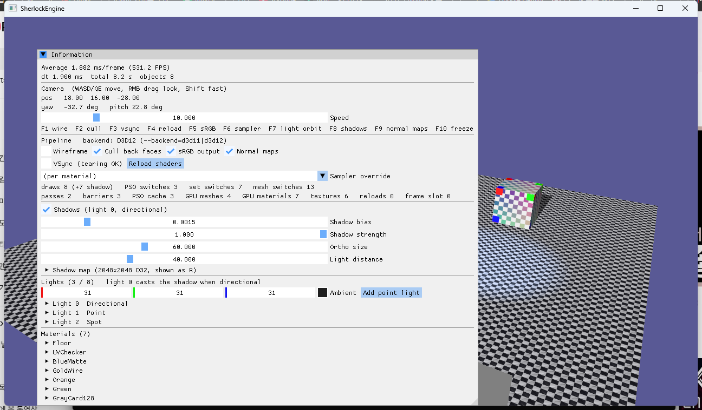
Renderer 가 같은 명령을 내기 때문입니다.셰이더와 상수버퍼, 정점 하나와 픽셀 하나가 파이프라인을 지나는 과정, 텍스처와 색공간, 씬 데이터, 그리고 이것들을 엮는 Renderer의 내부입니다.
10.셰이더와 상수버퍼
이 장은 HLSL 소스가 바이트코드가 되어 ShaderHandle 로 올라가기까지의 경로와, C++ 구조체가 상수버퍼(셰이더가 읽는 작은 고정 크기 데이터 블록, HLSL 의 cbuffer)를 거쳐 셰이더 변수로 읽히기까지의 규칙을 다룹니다. 앞 절반은 셰이더 파일 구성, 컴파일, .cso(빌드가 미리 컴파일해 둔 바이트코드 파일) 로드, 핫리로드, 리플렉션 검사입니다. 뒤 절반은 cbuffer 네 개의 바이트 배치, HLSL 패킹 규칙, 행렬 전치 관례, 갱신 방식입니다. 셰이더 코드가 실제로 계산하는 내용(변환, 조명, 노멀 매핑, 그림자)은 11장에서 따라갑니다.
| 파일 | 내용 |
|---|---|
| Shaders/Common.hlsli | cbuffer 네 개, LightData, 텍스처·샘플러 선언, VSInput/VSOutput, SafeNormalize |
| Shaders/BasicVertexShader.hlsl | 메인 패스 정점 셰이더 VS_Main |
| Shaders/BasicPixelShader.hlsl | 메인 패스 픽셀 셰이더 PS_Main, ComputeShadowFactor, CalculateDistanceAttenuation |
| Shaders/ShadowVertexShader.hlsl | 그림자 패스 정점 셰이더 VS_Shadow (픽셀 셰이더 없음) |
| Shaders/SkyboxVertexShader.hlsl Shaders/SkyboxPixelShader.hlsl | 스카이박스 VS_Sky(정점 버퍼 없이 전체 화면 삼각형, 투영의 역), PS_Sky(환경 큐브맵 샘플) |
| Graphics/ShaderConstants.h | cbuffer 와 짝인 C++ 구조체, 슬롯 상수, 크기·오프셋 단언 |
| Scene/Light.h | LightData(80바이트), LightType, MAX_LIGHTS |
| RHI/ShaderCompiler.h RHI/DXBC/ShaderCompiler.cpp | CompileFromFile, LoadOrCompile, ValidateConstantBufferSize, ReflectBindings, GetLastWriteTime |
| Graphics/Renderer.cpp | LoadShaders, ValidateBindings, ReloadShaders, CheckHotReload, UploadPerFrameConstants, UploadObjectConstants |
| Core/Paths.h · Paths.cpp | GetShaderBinaryPath, GetShaderSourcePath, GetShaderPath |
| SherlockEngine/SherlockEngine.vcxproj | FxCompile 항목 세 개, EnsureShaderOutputDir·CopyShaderSources 타깃 (저장소 루트 기준 경로) |
10.1 셰이더 파일 구성과 진입점
셰이더는 다섯 개이고 전부 Common.hlsli 하나를 include 합니다. 스테이지마다 파일을 나눈 이유는 Visual Studio 의 FxCompile 항목이 파일 하나에 진입점 하나와 셰이더 종류 하나만 지정할 수 있기 때문입니다.
| 파일 | 진입점 | 스테이지 | 쓰는 패스 | 읽는 것 |
|---|---|---|---|---|
| BasicVertexShader.hlsl | VS_Main | 정점 | 메인, 미리보기 | b0 PerFrame, b1 PerObject, b3 Material(uvScale) |
| BasicPixelShader.hlsl | PS_Main | 픽셀 | 메인, 미리보기 | b0, b2 Lights, b3, t0~t4·s0, t8·s4, t10~t12·s5 |
| ShadowVertexShader.hlsl | VS_Shadow | 정점 | 그림자 | b0(lightViewProj), b1(world) |
| SkyboxVertexShader.hlsl | VS_Sky | 정점 | 메인, 미리보기 (스카이박스가 있을 때) | b0(view, proj), SV_VertexID. 정점 버퍼 없음 |
| SkyboxPixelShader.hlsl | PS_Sky | 픽셀 | 위와 같음 | t9 environmentMap, s5 |
Common.hlsli 는 include 가드(SHERLOCK_COMMON_HLSLI) 안에 다음을 순서대로 둡니다.
- 상수:
MAX_LIGHTS = 8,LIGHT_DIRECTIONAL = 0,LIGHT_POINT = 1,LIGHT_SPOT = 2,EPSILON = 0.0001f. 앞의 넷은Scene/Light.h의MAX_LIGHTS,LightType과 값이 같아야 합니다. struct LightData와 cbuffer 네 개(PerFrameb0,PerObjectb1,Lightsb2,Materialb3). 배치는 10.6절에서 한 줄씩 대조합니다.- 텍스처와 샘플러:
albedoTexturet0,normalTexturet1,albedoSamplers0,shadowMapt8,shadowSamplers4(SamplerComparisonState),environmentMapt9(TextureCube),environmentSamplers5, IBL 의irradianceMapt10·prefilteredMapt11(TextureCube)·brdfLutt12, 재질의metallicRoughnessTexturet2·occlusionTexturet3·emissiveTexturet4. - 출력 함수
ApplyExposureToneMap(노출 × ACES 근사)과 상수PI. - 정점 셰이더의 입력·출력 구조체
VSInput,VSOutput, 스카이박스 VS → PS 구조체SkyVSOutput과 영벡터를 정규화해도 NaN 이 나오지 않게 하는SafeNormalize(value, fallback).
레지스터 번호는 셋(갱신 빈도별 바인딩 묶음)마다 구간을 나눠 배정합니다. 재질 셋은 t0~t7, s0~s3 을, 프레임 셋은 t8~t15, s4~s7 을 씁니다. D3D11 의 t#/s# 는 스테이지마다 번호 공간이 하나뿐이라 셋끼리 번호가 겹치면 안 되고, D3D12 에서는 이 구간이 그대로 디스크립터 테이블의 범위가 됩니다. 셋과 레이아웃의 구조는 7장이 다룹니다. C++ 쪽의 같은 번호는 Graphics/ShaderConstants.h 의 상수입니다.
// Graphics/ShaderConstants.h
constexpr uint32_t kCBSlotPerFrame = 0;
constexpr uint32_t kCBSlotPerObject = 1;
constexpr uint32_t kCBSlotLights = 2;
constexpr uint32_t kCBSlotMaterial = 3;
constexpr uint32_t kSRVSlotAlbedo = 0; // t0 (재질)
constexpr uint32_t kSRVSlotNormal = 1; // t1 (재질)
constexpr uint32_t kSRVSlotShadowMap = 8; // t8 (프레임)
constexpr uint32_t kSRVSlotEnvironment = 9; // t9 (프레임, 스카이박스 큐브맵)
constexpr uint32_t kSRVSlotIrradiance = 10; // t10~t12 (프레임, IBL). 재질의 t2~t4 는 kSRVSlotMetallicRoughness 등
constexpr uint32_t kSamplerSlotMaterial = 0; // s0 (재질)
constexpr uint32_t kSamplerSlotShadow = 4; // s4 (프레임, 비교 샘플러)
constexpr uint32_t kSamplerSlotEnvironment = 5; // s5 (프레임, 큐브맵용 선형 Clamp)register(b0, space0) 표기는 셰이더 모델 5.1 부터 지원합니다. 5.0 프로파일에서는 fxc 가 error X3721 로 거부합니다. 이 엔진은 5.0 을 유지하므로 레지스터에 space 를 적지 않고, D3D12 루트 시그니처는 space 0 만 씁니다. Common.hlsli 머리 주석에는 "space 는 8단계에서 SM 5.1/6.0 으로 올릴 때 넣음"이라고 적혀 있지만 8단계에서 셰이더 모델을 올리지 않았으므로 지금 코드에는 space 가 없습니다.
10.2 ShaderCompiler — HLSL 을 바이트코드로
ShaderCompiler 는 클래스가 아니라 네임스페이스입니다. 선언은 RHI/ShaderCompiler.h 에, 구현은 RHI/DXBC/ShaderCompiler.cpp 에 있습니다. 구현이 RHI/D3D11/ 이나 RHI/D3D12/ 가 아닌 RHI/DXBC/ 에 있는 이유는 fxc 컴파일러(D3DCompileFromFile)와 리플렉션(D3DReflect)이 그래픽스 API 가 아니라 DXBC 라는 바이트코드 형식에 묶여 있고, 두 백엔드가 같은 바이트코드를 받기 때문입니다. RHI::Device 는 컴파일러를 모릅니다. CreateShader(ShaderDesc) 는 바이트코드(std::span<const uint8_t>)만 받습니다.
// RHI/ShaderCompiler.h
namespace ShaderCompiler
{
bool CompileFromFile(const std::wstring& path, const char* entryPoint, ShaderStage stage,
std::vector<uint8_t>& outBytecode);
bool LoadFile(const std::wstring& path, std::vector<uint8_t>& outBytes);
bool LoadOrCompile(const wchar_t* hlslName, const char* entryPoint, ShaderStage stage,
std::vector<uint8_t>& outBytecode, std::wstring* outSource = nullptr);
bool ValidateConstantBufferSize(std::span<const uint8_t> bytecode, const char* cbufferName, uint32_t expectedSize);
struct ReflectedBinding { BindingType type; uint8_t reg; std::string name; };
bool ReflectBindings(std::span<const uint8_t> bytecode, std::vector<ReflectedBinding>& out);
uint64_t GetLastWriteTime(const std::wstring& path);
}스테이지를 받고 프로파일은 안에서 정한다
CompileFromFile 과 LoadOrCompile 은 타깃 프로파일 문자열("vs_5_0")이 아니라 ShaderStage(RHI/PipelineTypes.h 의 Vertex, Pixel)를 받습니다. 프로파일은 구현 파일의 익명 네임스페이스 함수 GetTargetProfile 한 곳에서 정합니다. 호출자인 Renderer 는 셰이더 모델을 모릅니다.
// RHI/DXBC/ShaderCompiler.cpp
const char* GetTargetProfile(ShaderStage stage)
{
switch (stage)
{
case ShaderStage::Vertex: return "vs_5_0";
case ShaderStage::Pixel: return "ps_5_0";
}
return nullptr; // CompileFromFile 이 Log::Error 후 false
}셰이더 모델 5.0 을 유지하는 이유(D3D12 가 5.0 DXBC 를 그대로 받아 소스와 컴파일이 한 벌로 끝난다는 점, D3D11 이 5.1 을 받지 않는다는 점, 리플렉션이 DXBC 전용이라는 점)는 9장에 있습니다. 여기서 기억할 것은 두 가지입니다.
- 진입점 이름은 여전히 호출자가 넘깁니다. 정점 셰이더의 진입점이
VS_Main과VS_Shadow두 가지라 스테이지만으로는 정해지지 않습니다. - 셰이더 모델을 정하는 곳은 두 군데입니다. 런타임 컴파일은
GetTargetProfile이, 빌드가 만드는.cso는SherlockEngine.vcxproj의<ShaderModel>5.0</ShaderModel>세 항목이 정합니다. 올릴 때는 둘을 같이 바꿔야 합니다.
컴파일 플래그
UINT compileFlags = 0;
#if defined(_DEBUG)
compileFlags |= D3DCOMPILE_DEBUG | D3DCOMPILE_SKIP_OPTIMIZATION;
#else
compileFlags |= D3DCOMPILE_OPTIMIZATION_LEVEL3;
#endif
const HRESULT hr = D3DCompileFromFile(
path.c_str(),
nullptr, // 매크로 없음
D3D_COMPILE_STANDARD_FILE_INCLUDE, // #include를 셰이더 파일 위치 기준으로 찾음
entryPoint, target, compileFlags, 0,
code.GetAddressOf(), error.GetAddressOf());Debug 빌드는 디버그 정보를 남기고 최적화를 끕니다. 그래야 RenderDoc 이나 PIX 에서 HLSL 원본을 줄 단위로 따라갈 수 있습니다. 그 외 빌드는 최적화 레벨 3 입니다. 빌드가 만드는 .cso 도 같은 구분을 따릅니다(10.3절).
진단 메시지
컴파일러는 두 번째 Blob(error)에 메시지를 남깁니다. 실패하면 원인이 들어 있고, 성공해도 경고가 들어 있을 수 있습니다. 형식은 파일(줄,열): error X____: 설명 이라 줄 번호를 그대로 읽을 수 있습니다. 처리는 세 갈래입니다.
| 경우 | 동작 |
|---|---|
| 실패, 메시지 있음 | Log::Error 로 경로·진입점·타깃을 찍고, 이어서 컴파일러 텍스트를 찍습니다. false 를 돌려줍니다. |
| 실패, 메시지 없음 | 대개 파일을 찾지 못한 경우입니다. Log::HrToString(hr) 로 HRESULT 를 보여 주고 경로를 확인하라고 적습니다. |
| 성공, 메시지 있음 | Log::Warn 으로 경로와 경고 텍스트를 찍고 바이트코드를 돌려줍니다. |
컴파일러 텍스트에는 % 문자가 들어 있을 수 있으므로 형식 문자열 자리에 넣지 않고 Log::Error("%s", compilerText) 처럼 인자로 넘깁니다. 결과 바이트코드는 ID3DBlob 에서 std::vector<uint8_t> 로 복사해 돌려주므로 ComPtr 가 이 파일 밖으로 나가지 않습니다.
#include 해석과 절대 경로
D3D_COMPILE_STANDARD_FILE_INCLUDE 는 기본 include 핸들러를 붙입니다. D3DCompileFromFile 에 넘긴 파일이 있는 폴더를 기준으로 #include "Common.hlsli" 를 찾으므로, 셰이더 경로를 절대 경로로 넘기면 프로세스의 작업 디렉터리가 어디든 include 가 풀립니다. 작업 디렉터리는 실행 방법(Visual Studio, 탐색기, 명령줄)에 따라 달라지므로 믿을 수 없습니다. 그래서 경로는 항상 Core/Paths 가 exe 위치나 엔진 루트에서 조립한 절대 경로입니다.
| 함수 | 돌려주는 경로 | 쓰는 곳 |
|---|---|---|
| Paths::GetShaderBinaryPath | exe\Shaders\<이름>. 폴백 없음. | .cso 로드 |
| Paths::GetShaderSourcePath | 엔진 루트의 Shaders\<이름>. 그 파일이 없으면(배포 환경) exe 옆 사본. | Debug 의 시각 비교, 핫리로드 감시와 재컴파일 |
| Paths::GetShaderPath | exe\Shaders\<이름>. 없으면 엔진 루트의 원본으로 폴백하고 경고를 한 번 남깁니다. | .cso 가 없을 때의 런타임 컴파일 폴백 |
엔진 루트를 찾는 방법과 Paths 의 나머지 함수는 15장이 다룹니다.
10.3 빌드가 .cso 를 만들고 런타임이 고른다
런타임 컴파일과 사전 컴파일은 배타적이지 않습니다. 사전 컴파일은 기동 시간을 줄이고 HLSL 오류를 빌드 시점에 잡아 주며, 런타임 컴파일은 핫리로드에 필요합니다. 그래서 둘을 병행합니다(D12).
빌드: FxCompile
<!-- SherlockEngine/SherlockEngine.vcxproj -->
<FxCompile Include="Shaders\BasicVertexShader.hlsl">
<ShaderType>Vertex</ShaderType>
<ShaderModel>5.0</ShaderModel>
<EntryPointName>VS_Main</EntryPointName>
<ObjectFileOutput>$(OutDir)Shaders\%(Filename).cso</ObjectFileOutput>
<EnableDebuggingInformation Condition="'$(Configuration)'=='Debug'">true</EnableDebuggingInformation>
<DisableOptimizations Condition="'$(Configuration)'=='Debug'">true</DisableOptimizations>
</FxCompile>
…
<None Include="Shaders\Common.hlsli" />
<Target Name="EnsureShaderOutputDir" BeforeTargets="FxCompile">
<MakeDir Directories="$(OutDir)Shaders" />
</Target>
<Target Name="CopyShaderSources" AfterTargets="Build">
…
<Copy SourceFiles="@(ShaderSourceFiles)" DestinationFolder="$(OutDir)Shaders" SkipUnchangedFiles="true" />
</Target>FxCompile항목은 다섯입니다:BasicVertexShader.hlsl(Vertex,VS_Main),BasicPixelShader.hlsl(Pixel,PS_Main),ShadowVertexShader.hlsl(Vertex,VS_Shadow),SkyboxVertexShader.hlsl(Vertex,VS_Sky),SkyboxPixelShader.hlsl(Pixel,PS_Sky). 각 속성은 fxc 인자/T,/E,/Fo,/Zi,/Od로 옮겨집니다.Common.hlsli는 include 전용이라 컴파일 대상이 아닌None항목입니다.- fxc 는 출력 폴더를 만들어 주지 않습니다.
EnsureShaderOutputDir타깃이FxCompile전에$(OutDir)Shaders를 만듭니다. CopyShaderSources타깃이 빌드 뒤에Shaders\*.hlsl,*.hlsli원본을 같은 폴더로 복사합니다..cso가 없을 때의 런타임 컴파일 폴백과, 소스 트리가 없는 환경에서의 수동 리로드가 이 사본을 씁니다.- 리플렉션 데이터가
.cso에 남아 있어야 10.5절의 검사를 할 수 있으므로 fxc 의/Qstrip_reflect는 켜지 않습니다.
에디터와 게임 실행 파일은 엔진과 출력 폴더(x64\<구성>\)가 같으므로 셰이더 컴파일과 복사는 엔진 프로젝트에서 한 번만 합니다.
런타임: LoadOrCompile
LoadOrCompile(hlslName, entryPoint, stage, outBytecode, outSource) 에는 "BasicVertexShader.hlsl" 처럼 파일 이름만 넘깁니다. 함수는 확장자를 .cso 로 바꿔 Paths::GetShaderBinaryPath 로 경로를 만들고, 수정 시각을 비교해 무엇을 쓸지 정합니다. GetLastWriteTime 은 GetFileAttributesExW 의 FILETIME 을 64비트 값으로 합친 것이고, 파일이 없으면 0 입니다.
Debug 빌드에서만: 소스가 더 새로운가
원본 .hlsl 과 Common.hlsli 의 수정 시각 중 큰 값을 구합니다. 원본이 있고, .cso 가 없거나 그 값이 .cso 보다 크면 원본을 CompileFromFile 로 컴파일합니다. 빌드하지 않고 셰이더만 고친 뒤 실행한 경우가 여기에 해당합니다. Common.hlsli 의 시각도 보는 이유는 헤더만 고치면 .hlsl 은 그대로인데 결과가 달라지기 때문입니다. 로그에 ".cso 없음" 또는 "소스가 .cso보다 새로움"이라고 이유를 남깁니다.
.cso 가 있으면 로드
LoadFile 이 파일을 통째로 읽어 돌려줍니다. Release 빌드는 ①이 컴파일되지 않으므로 여기서 시작합니다.
.cso 가 없으면 폴백
Log::Warn 을 남기고 Paths::GetShaderPath 가 돌려준 .hlsl(exe 옆 사본, 없으면 엔진 루트 원본)을 런타임 컴파일합니다.
outSource 에는 실제로 사용한 경로가 담기고, Renderer::LoadShaders 가 끝에 셰이더 로드: VS …, PS …, ShadowVS … 한 줄로 찍습니다(스카이박스 VS·PS 경로도 같은 줄에 이어짐). 셰이더마다 따로 판단하므로 VS 는 .cso, PS 는 소스인 혼합 상태도 정상입니다.
10.4 LoadShaders 와 핫리로드
Renderer::LoadShaders(bool fromSourceOnly) 가 셰이더 다섯 개를 한 묶음으로 다룹니다. 초기화(Renderer::Initialize)는 false 로 불러 LoadOrCompile 경로를 타고, 핫리로드는 true 로 불러 Paths::GetShaderSourcePath 의 원본을 무조건 CompileFromFile 합니다. 그 뒤의 순서는 같습니다.
- 바이트코드 다섯 개(메인 VS·PS, 그림자 VS, 스카이박스 VS·PS)를 얻습니다. 하나라도 실패하면
false를 돌려줍니다. - Debug 빌드에서는 cbuffer 크기를 리플렉션으로 대조합니다(10.5절). 어긋나면 실패합니다.
ValidateBindings로 셰이더가 쓰는 슬롯을 선언과 대조합니다. Debug 에서는 불일치가 실패이고, Release 에서는 로그만 남깁니다.Device::CreateShader로 새ShaderHandle다섯 개("BasicVS","BasicPS","ShadowVS","SkyboxVS","SkyboxPS")를 만듭니다. 하나라도 유효하지 않으면 새로 만든 것을 전부 파괴하고 실패합니다.- 여기까지 성공한 뒤에야 이전 핸들
m_vs,m_ps,m_shadowVs,m_skyVs,m_skyPs를DestroyShader하고 새 핸들로 바꿉니다. - 감시 목록
m_watched를 다시 만듭니다. 원본 여섯 개(VS, PS, ShadowVS, SkyboxVS, SkyboxPS,Common.hlsli)의 경로와 현재 수정 시각을 기록합니다.
5번이 맨 뒤에 있다는 점이 "실패하면 이전 셰이더를 유지한다"는 동작을 만듭니다. 컴파일 오류, 레이아웃 불일치, 생성 실패 어느 것이든 그 전에 함수가 끝나므로 m_vs 등은 손대지 않은 채 남습니다.
핫리로드
// Graphics/Renderer.cpp
bool Renderer::ReloadShaders()
{
…
if (!LoadShaders(true))
{
Log::Warn("셰이더 핫리로드 실패. 이전 셰이더를 유지한다.");
for (WatchedFile& w : m_watched) w.writeTime = ShaderCompiler::GetLastWriteTime(w.path);
return false;
}
m_baseDesc.vs = m_vs;
m_baseDesc.ps = m_ps;
m_shadowDesc.vs = m_shadowVs;
m_skyDesc.vs = m_skyVs;
m_skyDesc.ps = m_skyPs;
m_device->InvalidatePipelines();
++m_stats.shaderReloads;
…
}- 자동:
Renderer::Render가 매 프레임 맨 앞에서CheckHotReload(totalTime)을 부릅니다. Debug 빌드에서만 동작하며, 0.5초(kHotReloadPollInterval)마다 감시 파일 여섯 개의 수정 시각을 읽어 하나라도 기록과 다르면ReloadShaders를 부릅니다. Release 에서는 함수 본문이 비어 있습니다. - 수동: F4 키(
App/EditorApp.cpp)와 패널의 "Reload shaders" 버튼(App/DebugUI.cpp)이ReloadShaders를 직접 부릅니다. 폴링과 달리 빌드 구성과 무관하게 동작합니다. - 실패 시: 화면은 직전 셰이더로 계속 그려집니다. 수정 시각 기록은 갱신하므로 같은 파일로 0.5초마다 재시도하지 않고, 파일을 다시 저장하면 다시 시도합니다.
- 성공 시: PSO Desc 의 고정 부분(
m_baseDesc,m_shadowDesc)에 새 셰이더 핸들을 넣고Device::InvalidatePipelines로 PSO 캐시를 비웁니다. 다음 프레임의GetPipelineFor가 새 Desc 로 PSO 를 다시 만듭니다.
캐시를 비우면 PSO 인덱스가 0 부터 다시 시작합니다. 누군가 옛 PipelineHandle 을 들고 있었다면 같은 인덱스의 전혀 다른 PSO 를 가리키게 됩니다. 그래서 캐시는 세대 번호를 가지고, Clear 마다 1 올립니다. 핸들에는 만든 시점의 세대가 들어 있고 조회 때 세대가 다르면 nullptr 를 돌려줍니다. Renderer 는 PSO 핸들을 프레임을 넘겨 저장하지 않고 매 프레임 BuildDrawList 에서 다시 얻으므로 이 검사에 걸리지 않습니다. 캐시의 구조는 6장을 봅니다.
이전 셰이더 객체는 풀에서 지워져도 그것으로 만든 PSO 가 캐시에 남아 있는 동안은 PSO 가 붙들고 있으며, InvalidatePipelines 가 캐시를 비울 때 함께 사라집니다.
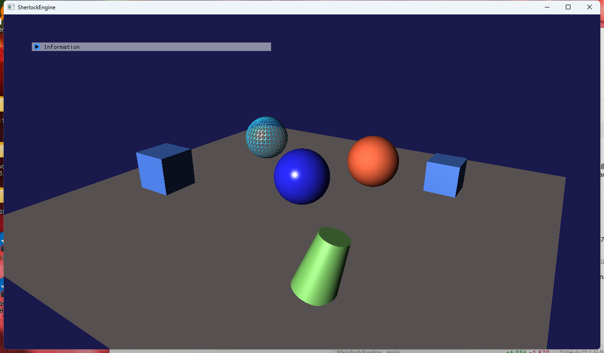
10.5 리플렉션 검사
리플렉션은 컴파일된 바이트코드에서 "이 셰이더가 어떤 cbuffer 를 어떤 크기로, 어떤 레지스터의 리소스를 쓰는가"를 읽어 내는 기능입니다. D3DReflect 가 ID3D11ShaderReflection 을 돌려줍니다. 이 엔진은 리플렉션으로 무언가를 자동 생성하지 않고, C++ 쪽에 손으로 적은 선언이 셰이더의 사실과 맞는지 대조하는 데만 씁니다. 대조는 LoadShaders 안에서 일어나므로 초기화 때와 핫리로드 때 모두 수행됩니다.
cbuffer 크기 — ValidateConstantBufferSize
ValidateConstantBufferSize(bytecode, cbufferName, expectedSize) 는 이름으로 cbuffer 를 찾아 D3D11_SHADER_BUFFER_DESC::Size 를 C++ 구조체의 sizeof 와 비교합니다. 결과는 네 가지입니다.
| 상황 | 로그 | 반환 |
|---|---|---|
D3DReflect 실패 | Warn "크기 검사를 건너뜀" | true |
| 셰이더가 그 cbuffer 를 쓰지 않아 리플렉션에 없음 | Info "검사 생략" | true |
| 크기 불일치 | Error "HLSL N 바이트, C++ M 바이트. 패킹 규칙(float3 뒤 스칼라)을 확인할 것." | false |
| 일치 | Info "크기 일치: N 바이트 (변수 K개)" | true |
GetConstantBufferByName 은 없는 이름에도 nullptr 가 아니라 더미 객체를 돌려줍니다. 그래서 존재 여부는 포인터가 아니라 GetDesc 의 HRESULT 로 판단합니다. 셰이더가 선언만 하고 읽지 않는 cbuffer 는 컴파일러가 지우므로 리플렉션에 나오지 않습니다. Common.hlsli 는 모든 셰이더에 cbuffer 네 개를 선언하지만 VS_Shadow 는 Lights 와 Material 을 읽지 않으므로 그 둘은 그림자 셰이더의 리플렉션에 없습니다.
LoadShaders 가 Debug 빌드에서 거는 검사는 여덟 건입니다.
// Graphics/Renderer.cpp — LoadShaders, #if defined(_DEBUG)
layoutOk &= ShaderCompiler::ValidateConstantBufferSize(vsCode, "PerFrame", sizeof(PerFrameConstants));
layoutOk &= ShaderCompiler::ValidateConstantBufferSize(vsCode, "PerObject", sizeof(PerObjectConstants));
layoutOk &= ShaderCompiler::ValidateConstantBufferSize(vsCode, "Material", sizeof(MaterialConstants));
layoutOk &= ShaderCompiler::ValidateConstantBufferSize(psCode, "PerFrame", sizeof(PerFrameConstants));
layoutOk &= ShaderCompiler::ValidateConstantBufferSize(psCode, "Lights", sizeof(LightConstants));
layoutOk &= ShaderCompiler::ValidateConstantBufferSize(psCode, "Material", sizeof(MaterialConstants));
layoutOk &= ShaderCompiler::ValidateConstantBufferSize(shadowCode, "PerFrame", sizeof(PerFrameConstants));
layoutOk &= ShaderCompiler::ValidateConstantBufferSize(shadowCode, "PerObject", sizeof(PerObjectConstants));하나라도 false 면 "상수버퍼 레이아웃 불일치" 오류와 함께 LoadShaders 가 실패합니다. 이 검사가 보는 것은 전체 크기뿐이며, 필드별 오프셋은 C++ 쪽 offsetof 단언이 맡습니다(10.8절).
바인딩 — ReflectBindings 와 ValidateBindings
BindingLayout(7장)은 Renderer::Initialize 가 손으로 선언합니다. 셰이더에 cbuffer Extra : register(b4) 를 추가하고 레이아웃에 넣는 것을 잊으면 D3D11 은 아무 말 없이 b4 에 아무것도 바인딩되지 않은 채로 그리고, 셰이더는 0 을 읽습니다. 이 종류의 실수를 로드 시점에 잡습니다.
ShaderCompiler::ReflectBindings 는 D3D11_SHADER_DESC::BoundResources 만큼 GetResourceBindingDesc 를 돌려 (타입, 레지스터 번호, 이름) 목록을 만듭니다. D3D_SIT_CBUFFER 는 BindingType::ConstantBuffer, D3D_SIT_TEXTURE 는 ShaderResource, D3D_SIT_SAMPLER 는 Sampler 로 옮깁니다. 그 밖의 타입(StructuredBuffer, UAV 등)은 아직 레이아웃이 다루지 않으므로 경고를 남기고 목록에 넣지 않습니다.
Renderer::ValidateBindings 는 세 레이아웃(프레임, 오브젝트, 재질)의 슬롯 합집합을 표로 다시 적어 두고, 셰이더 다섯 개의 리플렉션 결과가 전부 그 표 안에 그 스테이지로 선언되어 있는지 확인합니다. 스카이박스 셰이더가 실제로 쓰는 것은 b0·t9·s5 뿐입니다.
| 선언 | 레지스터 | 스테이지 | 레이아웃 |
|---|---|---|---|
| ConstantBuffer | b0 (kCBSlotPerFrame) | VS + PS | 프레임 |
| ConstantBuffer | b2 (kCBSlotLights) | PS | |
| ShaderResource | t8 (kSRVSlotShadowMap) | PS | |
| Sampler | s4 (kSamplerSlotShadow) | PS | |
| ShaderResource | t9 (kSRVSlotEnvironment) | PS | |
| Sampler | s5 (kSamplerSlotEnvironment) | PS | |
| ShaderResource | t10 (kSRVSlotIrradiance) | PS | |
| ShaderResource | t11 (kSRVSlotPrefiltered) | PS | |
| ShaderResource | t12 (kSRVSlotBrdfLut) | PS | |
| ConstantBuffer | b1 (kCBSlotPerObject) | VS | 오브젝트 |
| ConstantBuffer | b3 (kCBSlotMaterial) | VS + PS | 재질 |
| ShaderResource | t0 (kSRVSlotAlbedo) | PS | |
| ShaderResource | t1 (kSRVSlotNormal) | PS | |
| ShaderResource | t2 (kSRVSlotMetallicRoughness) | PS | |
| ShaderResource | t3 (kSRVSlotOcclusion) | PS | |
| ShaderResource | t4 (kSRVSlotEmissive) | PS | |
| Sampler | s0 (kSamplerSlotMaterial) | PS |
일치하면 바인딩 대조: PS t8 ('shadowMap') OK 형식의 Info 를, 표에 없으면 …를 쓰지만 BindingLayout에 그 스테이지로 선언되지 않음 오류를 남깁니다. 리플렉션 자체가 불가능한 셰이더는 검사를 건너뜁니다. 불일치가 있으면 Debug 빌드에서는 LoadShaders 가 실패하고, Release 빌드에서는 로그만 남기고 진행합니다.
리플렉션 결과로 레이아웃을 자동 생성하면 "셰이더가 쓰는 것"이 곧 레이아웃이 되어 검사할 대상이 사라집니다. 또 여러 셰이더가 같은 레이아웃을 공유해야 한다는 제약(메인 VS 와 그림자 VS 가 같은 프레임·오브젝트 셋을 쓴다)을 표현할 수 없습니다. 레이아웃은 의도이고 리플렉션은 사실이며, 둘을 비교하는 것이 검사입니다. 반대 방향(선언했지만 어느 셰이더도 쓰지 않는 슬롯)은 검사하지 않습니다.
ValidateBindings 의 declared[] 배열은 Renderer::Initialize 의 frameLayout.Add(…), objectLayout.Add(…), materialLayout.Add(…) 내용을 손으로 다시 적은 것입니다. 레이아웃에 슬롯을 추가하면 이 배열에도 같은 줄을 추가해야 합니다. 빠뜨리면 올바른 셰이더가 "선언되지 않음" 오류로 거부되므로 바로 드러납니다.
10.6 상수버퍼 네 개 — C++ 와 HLSL 을 한 줄씩
상수버퍼는 갱신 빈도로 나눕니다. 프레임 내내 같은 값(뷰·투영 행렬)을 드로우마다 다시 올리지 않기 위해서이고, 이 구분이 그대로 바인딩 레이아웃 세 개(프레임, 오브젝트, 재질)의 경계가 됩니다(D2).
| 슬롯 | HLSL cbuffer | C++ 구조체 | 크기 | 갱신 | 읽는 스테이지 | 버퍼 핸들 |
|---|---|---|---|---|---|---|
| b0 | PerFrame | PerFrameConstants | 336 | 프레임에 한 번. 미리보기 패스가 있으면 그 카메라로 한 번 더 | VS + PS | m_perFrameCB |
| b1 | PerObject | PerObjectConstants | 128 | 드로우마다 | VS | m_perObjectCB |
| b2 | Lights | LightConstants | 656 | 프레임에 한 번 | PS | m_lightCB |
| b3 | Material | MaterialConstants | 64 | 재질마다 프레임에 한 번 | VS(uvScale) + PS | GpuMaterial::constants |
아래 격자는 한 행이 16바이트 레지스터 하나, 한 칸이 4바이트입니다. 왼쪽 위 숫자는 바이트 오프셋 범위이고, 필드 이름은 C++ 와 HLSL 에서 같습니다.
b0 PerFrame — 336바이트
채우는 곳은 Renderer::UploadPerFrameConstants 입니다. shadowParams 는 (1 / kShadowMapSize, m_settings.shadowBias, m_settings.shadowStrength, m_shadowEnabledThisFrame ? 1 : 0) 이고 debugParams 는 (m_settings.debugView, m_settings.debugDepthRange, 0, 0) 입니다. 2026-10-08 에 붙은 두 줄은 Renderer::ResolveEnvironment 가 그 프레임에 정한 환경을 옮깁니다(11.6절, 12.14절). 현재 셰이더는 view, proj, time, shadowParams.x 를 읽지 않습니다. 변환에는 viewProj 만 쓰고, PCF 의 이웃 텍셀은 정수 오프셋 인자로 지정하기 때문입니다.
b1 PerObject — 128바이트
채우는 곳은 Renderer::UploadObjectConstants 이고 드로우 직전에 호출됩니다. 월드 행렬은 부모 계층을 곱한 GameObject::GetWorldMatrix() 입니다.
b2 Lights — 656바이트
LightData 한 개가 80바이트(레지스터 5개)이고 그것이 8개 이어진 뒤 16바이트가 붙습니다.
LightData 는 Scene/Light.h 에 있고 씬이 std::vector<LightData> 로 들고 있는 CPU 데이터가 곧 GPU 배치입니다. Renderer::Render 가 앞에서부터 최대 MAX_LIGHTS(8)개를 복사하면서 direction 을 정규화하고(영벡터면 (0, −1, 0)), scene.ambientColor 와 개수를 채워 올립니다. 조명 수를 고정 배열로 두는 판단은 D11에 있습니다.
b3 Material — 64바이트
채우는 곳은 Renderer::GetOrCreateGpuMaterial 입니다. Scene/Material.h 의 Material 에서 값을 옮기되 bool unlit 은 0 또는 1 의 float 로, normalStrength 는 렌더 설정의 normalMapping 이 꺼져 있으면 0 으로 넣습니다. 패딩 필드의 이름은 HLSL 에서 materialPadding, C++ 에서 padding 으로 다르지만 배치는 이름이 아니라 순서와 타입으로 정해지므로 영향이 없습니다.
D3D 가 요구하는 크기 정렬
상수버퍼의 크기는 16바이트의 배수여야 합니다. D3D11 백엔드의 CreateBuffer 는 BufferBind_Constant 버퍼의 크기를 16 의 배수로 올림해 만들고, D3D12 백엔드는 업로드 조각을 256바이트 경계에 맞춥니다(루트 CBV 의 정렬 요건). 네 구조체는 이미 16 의 배수라 D3D11 에서 올림이 일어나지 않습니다.
10.7 HLSL 패킹 규칙
C++ 구조체와 HLSL cbuffer 는 서로를 모릅니다. 양쪽이 같은 바이트를 같은 필드로 읽게 하는 것은 전적으로 작성자의 몫입니다. HLSL 이 cbuffer 변수를 배치하는 규칙은 다음과 같습니다.
- 변수는 16바이트 레지스터(float 4개) 단위로 채워집니다. 벡터 하나는 레지스터 경계를 넘을 수 없습니다. 남은 자리에 들어가지 않으면 다음 레지스터의 처음으로 밀립니다.
matrix(float4x4)는 레지스터 4개, 64바이트입니다.- 구조체와 배열의 각 원소는 새 레지스터에서 시작합니다. 그래서
LightData lights[8]의 원소 크기는 16 의 배수(80)여야 C++ 배열과 간격이 같아집니다. - 4바이트 스칼라끼리는 붙어서 채워집니다. HLSL
uint는 C++uint32_t와 짝입니다.
C++ 에는 1번 규칙이 없습니다. C++ 에서 XMFLOAT3 a; XMFLOAT3 b; 는 24바이트로 붙어 있지만, HLSL 의 float3 a; float3 b; 는 b 가 첫 레지스터의 남은 4바이트에 들어가지 못해 오프셋 16 으로 밀립니다. 이때 C++ 구조체에 alignas(16) 을 붙여 전체 크기를 32 로 맞춰도 b 의 오프셋은 여전히 12 입니다. 크기는 같은데 필드 위치가 다르므로 셰이더는 조용히 다른 값을 읽습니다.
| 선언 순서 | C++ 오프셋 | HLSL 오프셋 | 결과 |
|---|---|---|---|
| float3 a; float3 b; | a 0, b 12 | a 0, b 16 | 어긋남 크기를 맞춰도 b 가 다른 곳에 있습니다. |
| float3 a; float s; float3 b; float t; | a 0, s 12, b 16, t 28 | a 0, s 12, b 16, t 28 | 일치 엔진이 쓰는 형태입니다. |
| float s; float3 a; | s 0, a 4 | s 0, a 4 | 일치 4 + 12 = 16 으로 한 레지스터 안에 들어갑니다. |
| float2 p; float3 a; | p 0, a 8 | p 0, a 16 | 어긋남 남은 8바이트에 float3 가 들어가지 않습니다. |
그래서 이 엔진은 규칙을 손으로 맞춥니다. XMFLOAT3 뒤에는 반드시 4바이트 스칼라 하나를 두어 레지스터를 정확히 채웁니다. LightData 의 position + intensity, direction + range, color + type, attenuation + innerConeCos 가 모두 그 모양이고, 마지막 줄은 outerConeCos + padding(float3) 로 순서가 반대지만 역시 16바이트입니다. PerFrameConstants 의 cameraPosition + time, LightConstants 의 ambientColor + lightCount, MaterialConstants 의 emissive + metallic 도 같습니다. 필드를 하나 옮기면 HLSL 쪽도 같은 자리로 옮겨야 합니다.
10.8 세 겹의 검사
배치가 어긋나면 컴파일도 실행도 되고 화면만 틀립니다. 그래서 어긋남을 화면이 아닌 곳에서 잡도록 검사를 세 겹으로 둡니다.
컴파일 시점 — static_assert 와 offsetof
Graphics/ShaderConstants.h 아래쪽에 구조체마다 크기와 필드 오프셋 단언이 있습니다. sizeof 만으로는 위 표의 첫 줄 같은 실수를 잡지 못하므로 offsetof 단언이 실제 검사입니다. alignas(16) 과 "크기가 16 의 배수"는 필요조건일 뿐입니다.
static_assert(sizeof(PerFrameConstants) == 336, "PerFrameConstants: 64*4 + 16 * 5");
static_assert(offsetof(PerFrameConstants, lightViewProj) == 192, …);
static_assert(offsetof(PerFrameConstants, cameraPosition) == 256, …);
static_assert(offsetof(PerFrameConstants, time) == 268, …);
static_assert(offsetof(PerFrameConstants, shadowParams) == 272, …);
static_assert(offsetof(PerFrameConstants, debugParams) == 288, …);
static_assert(sizeof(PerObjectConstants) == 128, "PerObjectConstants: 64*2");
static_assert(offsetof(PerObjectConstants, worldInvTranspose) == 64, …);
static_assert(sizeof(LightConstants) == 656, "LightConstants: 80*8 + 16");
static_assert(offsetof(LightConstants, ambientColor) == 640, …);
static_assert(offsetof(LightConstants, lightCount) == 652, …);
static_assert(sizeof(MaterialConstants) == 64, "MaterialConstants: 16 + 16 + 16 + 16");
static_assert(offsetof(MaterialConstants, metallic) == 28, …);
static_assert(offsetof(MaterialConstants, uvScale) == 32, …);
…Scene/Light.h 에도 static_assert(sizeof(LightData) == 80, …) 이 있습니다. 이 숫자들은 HLSL 쪽 배치를 손으로 세어 적은 것이므로, 단언은 "C++ 구조체가 작성자가 의도한 배치와 같다"를 보장합니다.
컴파일 시점 — consteval 일반 규칙
consteval bool IsValidConstantBufferSize(size_t bytes)
{
return bytes > 0 && bytes % 16 == 0 && bytes <= 65536;
}
static_assert(IsValidConstantBufferSize(sizeof(PerFrameConstants)), "PerFrameConstants 는 16의 배수여야 함");
…consteval 함수는 컴파일 시점에만 호출할 수 있고 런타임에는 존재하지 않습니다. 0 보다 크고, 16 의 배수이고, 65,536바이트(D3D11 상수버퍼 상한) 이하인지만 봅니다. ①의 정확한 값 단언을 대체하지 않으며, 새 cbuffer 구조체를 추가했을 때 정확한 단언을 쓰기 전에 먼저 걸리는 일반 규칙입니다.
로드 시점 — 리플렉션
①과 ②는 C++ 쪽만 봅니다. HLSL 쪽에서 필드를 추가하거나 순서를 바꾼 경우는 잡지 못합니다. 10.5절의 ValidateConstantBufferSize 가 컴파일된 바이트코드의 실제 cbuffer 크기를 sizeof 와 대조해 이 방향을 막습니다. Debug 빌드의 초기화와 핫리로드에서 수행되므로, 실행 중에 Common.hlsli 의 cbuffer 를 고쳐 저장하면 리로드가 거부되고 직전 셰이더가 유지됩니다.
③은 전체 크기만 비교합니다. HLSL 쪽에서 크기가 같은 두 필드의 순서를 서로 바꾸면(예: unlit 과 normalStrength) 세 검사를 모두 통과합니다. 이 경우를 잡는 것은 RenderDoc 같은 도구로 드로우를 캡처해 cbuffer 값을 직접 보는 방법뿐이므로, cbuffer 를 고칠 때는 ShaderConstants.h 와 Common.hlsli 를 나란히 열어 같은 줄을 같이 고칩니다.
10.9 행렬 전치 관례와 역전치 행렬
행렬을 상수버퍼로 올릴 때는 두 가지가 맞아야 합니다. 하나는 수학 관례(벡터를 행렬의 어느 쪽에 곱하는가)이고, 다른 하나는 메모리 배치(16개 float 를 어떤 순서로 읽는가)입니다.
| C++ (DirectXMath) | HLSL (이 엔진의 셰이더) | |
|---|---|---|
| 수학 관례 | 행벡터. v' = v · M. 이동 성분은 넷째 행. | 행벡터. mul(v, M). |
| 메모리 배치 | XMFLOAT4X4 는 행 우선. 처음 16바이트가 첫째 행. | cbuffer 의 matrix 는 기본이 column_major. 처음 16바이트를 첫째 열로 읽음. |
수학 관례는 양쪽이 같습니다. 다른 것은 메모리 배치뿐입니다. DirectXMath 행렬을 그대로 복사해 올리면 HLSL 은 행과 열이 뒤바뀐 행렬, 즉 Mᵀ 를 보게 됩니다. 그래서 C++ 쪽에서 미리 전치해서 올립니다. 올린 것이 Mᵀ 이면 HLSL 이 읽는 것은 (Mᵀ)ᵀ = M 이고, mul(v, M) 은 C++ 의 v · M 과 같은 계산이 됩니다.
// Graphics/Renderer.cpp — UploadPerFrameConstants
XMStoreFloat4x4(&perFrame.view, XMMatrixTranspose(view));
XMStoreFloat4x4(&perFrame.proj, XMMatrixTranspose(proj));
XMStoreFloat4x4(&perFrame.viewProj, XMMatrixTranspose(view * proj));
XMStoreFloat4x4(&perFrame.lightViewProj, XMMatrixTranspose(XMLoadFloat4x4(&m_lightViewProj)));
// Shaders/BasicVertexShader.hlsl
const float4 worldPosition = mul(localPosition, world);
vsOutput.position = mul(worldPosition, viewProj);행렬의 곱 순서도 같은 관례를 따릅니다. 행벡터 관례에서는 먼저 적용할 변환이 왼쪽에 옵니다. view * proj 는 "뷰 변환 다음 투영"이고, 셰이더의 mul(mul(p, world), viewProj) 는 p · W · V · P 입니다. 좌표계와 행렬 규약 전체는 부록 B에 정리되어 있습니다.
row_major 로 선언하는 대안
HLSL 에 #pragma pack_matrix(row_major) 를 넣거나 변수에 row_major 수식어를 붙이면 HLSL 이 행 우선으로 읽으므로 C++ 의 전치가 필요 없어집니다. 고르지 않은 이유는 다음과 같습니다(D13).
mul(v, M)의 결과 성분 하나는v와M의 한 열의 내적입니다. 열 우선 배치에서는 열 하나가 레지스터 하나이므로 내적 네 번으로 끝납니다. 행 우선 배치에서는 열이 네 레지스터에 흩어져 있어 곱셈과 덧셈의 연쇄가 됩니다.- 교재와 참고 구현 대부분이 "전치해서 올린다"를 쓰므로 참고 자료와 코드가 일치합니다.
- 가장 위험한 것은 두 관례를 섞는 것입니다. 어떤 행렬은 전치하고 어떤 행렬은 하지 않는 상태가 되면 화면이 조용히 깨집니다.
ShaderConstants.h머리 주석은pack_matrix(row_major)를 섞어 쓰지 않는다고 못 박아 둡니다.
규칙은 하나입니다. cbuffer 에 넣는 모든 행렬은 XMMatrixTranspose 를 거친다.
노멀 변환용 역전치 행렬
노멀은 위치처럼 월드 행렬 W 로 변환하면 안 됩니다. 비균등 스케일(예: x 로만 2배)이 있으면 표면은 늘어나는데 노멀이 같은 방향으로 늘어나 더 이상 표면에 수직이 아니게 됩니다. 노멀이 지켜야 할 조건은 "표면 위의 접선 t 와 수직"입니다. 행벡터 관례에서 접선은 t' = t · W 로 변환됩니다. 변환된 노멀 n' = n · G 가 n' · t'ᵀ = 0 을 만족하려면 다음이 성립해야 합니다.
n' · t'ᵀ = (n · G) · (t · W)ᵀ = n · G · Wᵀ · tᵀ = 0
원래 n · tᵀ = 0 이므로 G · Wᵀ = I 이면 충분함 → G = (Wᵀ)⁻¹ = (W⁻¹)ᵀ그래서 셰이더의 worldInvTranspose 는 (W⁻¹)ᵀ 입니다. 이 행렬도 "전치해서 올린다" 규칙을 따르므로 메모리에 쓰는 값은 ((W⁻¹)ᵀ)ᵀ = W⁻¹, 즉 전치하지 않은 역행렬입니다.
// Graphics/Renderer.cpp — UploadObjectConstants
XMStoreFloat4x4(&perObject.world, XMMatrixTranspose(world));
// 노멀 변환 행렬은 (W⁻¹)ᵀ. 전치해서 올려야 하므로 ((W⁻¹)ᵀ)ᵀ = W⁻¹ 를 그대로 저장함.
XMStoreFloat4x4(&perObject.worldInvTranspose, XMMatrixInverse(nullptr, world));
// Shaders/BasicVertexShader.hlsl
vsOutput.normal = normalize(mul(float4(vsInput.normal, 0.0f), worldInvTranspose).xyz);코드만 보면 "역전치인데 전치를 하지 않는다"로 읽혀 실수처럼 보이지만 규칙을 일관되게 적용한 결과입니다. 노멀의 w 를 0 으로 두므로 이동 성분은 결과의 xyz 에 섞이지 않습니다. 스케일이 들어가면 길이가 변하므로 normalize 가 뒤따릅니다. 회전과 균등 스케일만 있는 물체에서는 W 로 변환해도 방향이 같지만, 엔진은 구분하지 않고 항상 이 행렬을 씁니다.
10.10 갱신 방식
상수버퍼 네 종류는 모두 BufferUsage::Dynamic 으로 만들고(Renderer::Initialize 의 makeCB, GetOrCreateGpuMaterial 의 cbDesc), 갱신은 RHI::Device::UpdateBuffer(handle, data, size) 한 가지로 합니다. 이 함수가 약속하는 의미는 "이 프레임 슬롯의 내용을 통째로 교체"뿐입니다(RHI/Device.h).
UpdateSubresource | Map(WRITE_DISCARD) | |
|---|---|---|
| 대상 | D3D11_USAGE_DEFAULT 버퍼 | D3D11_USAGE_DYNAMIC 버퍼 |
| 하는 일 | 런타임이 데이터를 받아 리소스로 복사합니다. | 드라이버가 새 메모리를 내주고 이전 내용은 버립니다(이름 바꾸기). GPU 가 이전 내용을 아직 읽고 있어도 기다리지 않습니다. |
| 제약 | 상수버퍼는 부분 갱신이 안 되므로 전체 크기로만 호출합니다. | 이전 내용을 읽을 수 없으므로 매번 전체를 다시 씁니다. |
| 엔진에서 | BufferUsage::Default 의 UpdateBuffer 경로. 크기가 다르면 오류로 거부합니다. Renderer 는 이 경로를 쓰지 않습니다. | BufferUsage::Dynamic 의 UpdateBuffer 경로. 상수버퍼 전부가 이 방식입니다. |
Dynamic 을 고른 이유는 b1 PerObject 때문입니다. 버퍼 하나를 드로우마다 다시 쓰는데, WRITE_DISCARD 는 호출마다 새 메모리를 주므로 앞 드로우가 아직 실행되지 않았어도 그 데이터를 덮어쓰지 않습니다. 그래서 오브젝트 셋의 바인딩은 패스 시작에 한 번만 하고 내용만 드로우마다 바꿉니다. D3D12 에는 이름 바꾸기를 해 주는 드라이버가 없으므로 엔진이 같은 일을 직접 합니다.
| 백엔드 | Dynamic 버퍼의 실체 | UpdateBuffer 가 하는 일 |
|---|---|---|
| D3D11 | 프레임 슬롯 수(kFrameCount)만큼의 ID3D11Buffer 복제본 | 현재 프레임 슬롯의 복제본을 Map(D3D11_MAP_WRITE_DISCARD), memcpy, Unmap |
| D3D12 | 자체 리소스 없음. 프레임 슬롯별 업로드 링의 조각 | AllocateUpload 로 256바이트 정렬 조각을 받아 memcpy 하고 그 GPU 주소와 프레임 번호를 기억. 드로우 직전에 커맨드 리스트가 그 주소를 루트 CBV 로 바인딩 |
D3D12 쪽 규칙 하나가 호출 코드에 영향을 줍니다. 링 조각은 프레임이 지나면 재사용되므로 Dynamic 상수버퍼는 쓰는 프레임마다 다시 올려야 합니다. 올리지 않고 그리면 커맨드 리스트가 "이번 프레임에 갱신되지 않음" 오류를 한 번 남깁니다. 재질 상수가 값이 바뀌지 않아도 매 프레임 올라가는 이유가 이것이고, GpuMaterial::uploadedFrame 이 같은 프레임 안의 중복 업로드만 막습니다. 프레임 슬롯, 업로드 링, 펜스는 8장이, 백엔드별 구현 차이는 9장이 다룹니다.
| 버퍼 | 올리는 함수 | 프레임당 횟수 |
|---|---|---|
| b0 PerFrame | Renderer::UploadPerFrameConstants | 1. 미리보기 카메라가 있으면 2 |
| b2 Lights | Renderer::Render | 1 |
| b1 PerObject | Renderer::UploadObjectConstants | 그림자 패스 드로우 수 + 메인 패스 드로우 수 (+ 미리보기 패스 드로우 수) |
| b3 Material | Renderer::GetOrCreateGpuMaterial | 그 프레임에 쓰인 재질 수 |
10.11 함정과 해결
| 함정 | 증상 | 해결 |
|---|---|---|
float3 두 개를 나란히 둠 | 크기 단언은 통과하는데 뒤 필드가 다른 값을 읽음 | float3 뒤에 스칼라를 두고 offsetof 를 단언(10.7, 10.8) |
| 구조체 크기를 손으로 계산 | LightData 를 64바이트로 잘못 셈(실제 80) | 계산이 아니라 static_assert(sizeof(LightData) == 80) 을 믿음 |
GetConstantBufferByName 이 없는 이름에도 객체를 돌려줌 | nullptr 검사로는 "없음"을 못 가림 | GetDesc 의 HRESULT 로 판단. 없으면 검사 생략 |
SM 5.0 에서 register(b0, space0) | fxc error X3721 | space 를 쓰지 않음. 셋끼리 레지스터 구간을 나눠 배정(10.1) |
| fxc 가 출력 폴더를 만들지 않음 | 깨끗한 출력 폴더에서 /Fo 실패 | EnsureShaderOutputDir 타깃(BeforeTargets="FxCompile") |
| 작업 디렉터리 기준 상대 경로 | 실행 방법에 따라 셰이더나 #include 를 못 찾음 | Paths 가 만든 절대 경로만 넘김(10.2) |
Common.hlsli 만 고침 | .hlsl 시각은 그대로라 옛 .cso 를 로드 | LoadOrCompile 과 감시 목록이 Common.hlsli 시각도 봄 |
| 실행 중 저장한 셰이더에 오류 | 화면이 깨지거나 0.5초마다 같은 오류 반복 | 이전 핸들 유지, 수정 시각 기록만 갱신(10.4) |
| 핫리로드 뒤 옛 PSO 핸들 | 캐시를 비운 뒤 같은 인덱스가 다른 PSO 를 가리킴 | 캐시 세대 번호. 세대가 다르면 무효 |
| ".cso 가 있는데 소스를 컴파일함" | 소스를 건드렸다 되돌리면 수정 시각이 .cso 보다 새로워짐 | 의도된 동작. 이유를 로그에 찍음 |
| 컴파일러 메시지를 형식 문자열로 넘김 | 메시지 속 % 가 형식 지정자로 해석됨 | Log::Error("%s", text) |
ComputeShadowFactor 의 경고 X4000 | 런타임 컴파일 때 "potentially uninitialized variable" 경고가 로그에 찍힘 | 동작에는 영향이 없어 남겨 둔 기존 경고(2026-10-02 검증에서 관찰) |
11.GPU 파이프라인 추적 — IA 에서 OM 까지, 조명·노멀 매핑·그림자
이 장은 드로우콜 하나가 GPU 안에서 지나는 단계를 현재 셰이더 코드로 따라갑니다. 정점 하나가 입력 조립기(IA)에서 읽혀 정점 셰이더(VS)를 지나 화면 좌표가 되고, 래스터라이저가 삼각형을 픽셀로 나누고, 픽셀 셰이더(PS)가 색을 계산하고, 출력 병합기(OM)가 렌더 타깃에 기록하기까지입니다. 픽셀 셰이더에서는 조명 수식, 노멀 매핑, 그림자 매핑을 식 단위로 풉니다. 쓰지 않는 단계(헐·도메인·지오메트리 셰이더, 스트림 출력)는 다루지 않습니다. 셰이더 파일과 상수버퍼의 배치는 10장에 있습니다.
| 파일 | 이 장에서 보는 것 |
|---|---|
| Graphics/VertexTypes.h | VERTEX(64바이트), kVertexLayoutPCNTT, GetVertexLayout |
| Shaders/BasicVertexShader.hlsl | VS_Main |
| Shaders/BasicPixelShader.hlsl | PS_Main, ComputeShadowFactor, CalculateDistanceAttenuation |
| Shaders/ShadowVertexShader.hlsl | VS_Shadow |
| Shaders/Common.hlsli | VSInput, VSOutput, LightData, SafeNormalize |
| Graphics/Renderer.cpp | ComputeLightViewProj, CreateShadowResources, m_shadowDesc, GetPipelineFor, GetShadowPipelineFor, RenderShadowPass, GetOrCreateGpuMesh |
| Graphics/Mesh.cpp | MakeVertex, Mesh::ComputeTangents |
| Scene/Light.h · Scene/Material.h | LightData 기본값, Material 필드 |
| RHI/PipelineTypes.h | RasterizerDesc, DepthStencilDesc, RenderTargetBlendDesc 의 기본값 |
11.1 Input Assembler — 정점과 인덱스
IA 는 정점 버퍼의 바이트를 "정점 셰이더의 입력 변수"로 풀어 주는 단계입니다. 어디서 몇 바이트를 어떤 형식으로 읽어 어느 시맨틱(HLSL 변수에 붙는 이름표, POSITION 등)에 넣을지를 입력 레이아웃이 정합니다.
// Graphics/VertexTypes.h
struct VERTEX
{
float x, y, z; //좌표(Position)
float r, g, b, a; //색상(Diffuse Color)
float nx, ny, nz; //노멀(Normal)
float u, v; //텍스처 좌표(TexCoord). (0,0) = 왼쪽 위 (D3D 관례)
float tx, ty, tz, tw; //탄젠트(Tangent) = u 가 증가하는 방향. w = 손잡이(±1): B = cross(N, T) * w
};| 오프셋 | 필드 | 크기 | Format | VertexSemantic | HLSL VSInput |
|---|---|---|---|---|---|
| 0 | x, y, z | 12 | R32G32B32_FLOAT | Position | float3 position : POSITION |
| 12 | r, g, b, a | 16 | R32G32B32A32_FLOAT | Color | float4 col : COLOR0 |
| 28 | nx, ny, nz | 12 | R32G32B32_FLOAT | Normal | float3 normal : NORMAL0 |
| 40 | u, v | 8 | R32G32_FLOAT | TexCoord | float2 uv : TEXCOORD0 |
| 48 | tx, ty, tz, tw | 16 | R32G32B32A32_FLOAT | Tangent | float4 tangent : TANGENT0 |
오프셋은 손으로 적지 않습니다. consteval MakeVertexLayoutPCNTT() 가 offsetof(VERTEX, …) 로 계산해 상수 kVertexLayoutPCNTT 에 담고, static_assert 세 개가 stride 가 sizeof(VERTEX) 와 같은지, 속성이 5개인지, 마지막 속성 뒤에 빈 공간이 없는지를 컴파일 시점에 검사합니다. 정점 포맷은 열거형 VertexFormat 으로 이름 붙이며 지금 값은 PositionColorNormalTexcoordTangent 하나입니다. 메시가 GetVertexFormat() 으로 자기 포맷을 알려 주고, Renderer::GetPipelineFor 가 desc.vertexLayout = GetVertexLayout(vertexFormat) 으로 PSO Desc 에 넣습니다. 레이아웃은 PSO 의 일부입니다(6장).
- 시맨틱 대응. 백엔드가
VertexSemantic을 문자열"POSITION","COLOR","NORMAL","TEXCOORD","TANGENT"로 바꿔 입력 원소 기술에 넣습니다. D3D11 의CreateInputLayout은 이것을 정점 셰이더 바이트코드의 입력 시그니처와 대조하며, 셰이더가 요구하는 시맨틱이 레이아웃에 없으면 실패합니다. - 그림자 패스의 레이아웃.
VS_Shadow는POSITION만 읽지만 입력 레이아웃은 같은 64바이트VERTEX를 씁니다. 셰이더가 읽지 않는 원소가 레이아웃에 더 있는 것은 허용되므로 정점 버퍼를 그대로 공유합니다. - 인덱스 16/32비트. CPU 쪽
Mesh의 인덱스는 항상 32비트입니다.Renderer::GetOrCreateGpuMesh가 정점 수 65,535 이하인 메시는 16비트 배열로 변환해 올리고GpuMesh::indexFormat에Format::R16_UINT또는R32_UINT를 기억합니다. 드로우 루프는cmd.SetIndexBuffer(indexBuffer, indexFormat)으로 넘기기만 합니다(D10). - 토폴로지.
PipelineStateDesc::topology의 기본값TriangleList를 그대로 씁니다. 인덱스 세 개가 삼각형 하나입니다. - 드로우.
cmd.DrawIndexed(item.indexCount, item.indexStart, 0)이 서브메시의 인덱스 범위만 그립니다. 드로우 목록과 정렬은 14장이 다룹니다.
11.2 Vertex Shader — 변환과 출력
정점 셰이더는 정점 하나를 받아 정점 하나를 내보냅니다. 반드시 해야 하는 일은 SV_POSITION(클립 공간 위치)을 출력하는 것이고, 그 밖의 출력은 픽셀 셰이더가 쓸 값을 실어 보내는 통로입니다.
// Shaders/BasicVertexShader.hlsl
VSOutput VS_Main(VSInput vsInput)
{
VSOutput vsOutput = (VSOutput)0;
const float4 localPosition = float4(vsInput.position, 1.0f);
const float4 worldPosition = mul(localPosition, world);
vsOutput.position = mul(worldPosition, viewProj);
vsOutput.worldPosition = worldPosition.xyz;
vsOutput.col = vsInput.col;
vsOutput.uv = vsInput.uv * uvScale;
vsOutput.normal = normalize(mul(float4(vsInput.normal, 0.0f), worldInvTranspose).xyz);
vsOutput.tangent = float4(normalize(mul(float4(vsInput.tangent.xyz, 0.0f), world).xyz), vsInput.tangent.w);
vsOutput.shadowPosition = mul(worldPosition, lightViewProj);
return vsOutput;
}VSOutput 필드 | 시맨틱 | 계산 | 픽셀 셰이더에서의 용도 |
|---|---|---|---|
| position | SV_POSITION | 로컬 위치에 world, 이어서 viewProj | 래스터라이저가 소비합니다. 화면 위치와 깊이가 됩니다. |
| col | COLOR0 | 정점 색 그대로 | 알베도에 곱해집니다. |
| normal | NORMAL0 | 노멀(w = 0)에 worldInvTranspose, 정규화 | 월드 공간 기하 노멀 N |
| uv | TEXCOORD0 | uv * uvScale (타일링) | 알베도·노멀 맵 샘플링 좌표 |
| worldPosition | TEXCOORD1 | 월드 위치의 xyz | 뷰 벡터, 점광·스포트광의 L 과 거리 |
| shadowPosition | TEXCOORD2 | 월드 위치에 lightViewProj | 그림자 맵 좌표와 비교할 깊이 |
| tangent | TANGENT0 | 탄젠트 xyz(w = 0)에 world, 정규화. w 는 그대로 | TBN 기저의 T 와 손잡이 |
- 행벡터 곱.
mul(v, M)순서이고 C++ 가 행렬을 전치해서 올렸으므로 DirectXMath 의v · M과 같은 계산입니다(10장의 전치 관례). - w 의 역할. 위치는
w = 1이라 이동이 적용됩니다. 노멀과 탄젠트는 방향이므로w = 0을 넣어 이동을 받지 않게 합니다. - 노멀과 탄젠트의 행렬이 다릅니다. 노멀은 표면에 수직이어야 하므로
(W⁻¹)ᵀ로, 탄젠트는 표면 위의 방향이므로 위치와 같은world로 변환합니다. - 위치를 두 번 변환합니다. 같은 월드 위치를 카메라의
viewProj와 광원의lightViewProj로 각각 변환합니다. 뒤의 것이 그림자 매핑의 입력입니다(11.8절). - 재질 상수를 VS 가 읽습니다.
uvScale때문에 b3Material이 VS 스테이지에도 바인딩됩니다.
그림자 패스의 정점 셰이더는 이 중 위치 변환만 남긴 것입니다.
// Shaders/ShadowVertexShader.hlsl
float4 VS_Shadow(ShadowVSInput input) : SV_POSITION
{
const float4 worldPosition = mul(float4(input.position, 1.0f), world);
return mul(worldPosition, lightViewProj);
}11.3 클립 공간에서 픽셀까지
정점 셰이더가 내보낸 SV_POSITION 은 아직 화면 좌표가 아니라 클립 공간의 동차 좌표 (x, y, z, w) 입니다. 그 뒤의 세 단계는 프로그래밍할 수 없고 GPU 가 정해진 대로 수행합니다.
클리핑
D3D 의 가시 범위는 −w ≤ x ≤ w, −w ≤ y ≤ w, 0 ≤ z ≤ w 입니다. 삼각형이 이 범위에 걸치면 경계에서 잘립니다. z 범위로 자르는 것은 RasterizerDesc::depthClipEnable(기본 true)이 켜져 있을 때입니다.
원근 나눗셈
xyz 를 w 로 나누면 정규화 장치 좌표(NDC)가 됩니다. x 와 y 는 −1 에서 1, z 는 0 에서 1 입니다. 원근 투영(Scene/Camera.cpp 의 XMMatrixPerspectiveFovLH)에서는 w 에 뷰 공간의 z 가 들어 있으므로 멀리 있는 것이 작아집니다. 직교 투영에서는 w 가 1 이라 나눗셈이 아무 일도 하지 않습니다.
뷰포트 변환
NDC 를 렌더 타깃의 픽셀 좌표로 옮깁니다. NDC 의 y 는 위가 +이고 픽셀 좌표의 y 는 아래가 +이므로 y 가 뒤집힙니다.
x_pixel = (x_ndc + 1) / 2 × Width + TopLeftX
y_pixel = (1 − y_ndc) / 2 × Height + TopLeftY
depth = MinDepth + z_ndc × (MaxDepth − MinDepth)뷰포트는 PSO 밖의 동적 상태이고 CommandList::BeginRenderPass 가 설정합니다. RenderPassDesc::viewport 의 폭·높이를 지정하지 않으면 첫 attachment 의 크기를 쓰고, 깊이 범위의 기본값은 0 에서 1 입니다. 그래서 메인 패스의 뷰포트는 씬 타깃(또는 백버퍼) 크기이고 그림자 패스의 뷰포트는 2048×2048 입니다(8장).
카메라가 뷰·투영 행렬을 만드는 방법은 13장, 좌표계 규약은 부록 B에 있습니다.
11.4 Rasterizer — 컬링, 보간, 깊이 바이어스
래스터라이저는 화면 좌표의 삼각형을 그것이 덮는 픽셀들로 나누고, 픽셀마다 정점 셰이더 출력을 보간해 픽셀 셰이더에 넘깁니다. 설정은 RasterizerDesc(RHI/PipelineTypes.h)이고 PSO 의 일부입니다.
| 필드 | 메인 패스 (GetPipelineFor) | 그림자 패스 (m_shadowDesc, GetShadowPipelineFor) |
|---|---|---|
| fill | 렌더 설정 wireframe 또는 재질 wireframe 이 켜져 있으면 Wireframe, 아니면 Solid | 항상 Solid |
| cull | 렌더 설정 cullBack 이 켜져 있고 재질이 doubleSided 가 아니면 Back, 아니면 None | 재질이 doubleSided 면 None, 아니면 Back |
| frontCounterClockwise | false (기본값) | false |
| depthBias | 0 | 2000 |
| depthBiasClamp | 0 | 0.01 |
| slopeScaledDepthBias | 0 | 2.0 |
감기 방향과 컬링
삼각형의 앞뒤는 화면에 투영된 세 정점이 도는 방향으로 정합니다. frontCounterClockwise = false 이므로 시계 방향으로 감긴 면이 앞면입니다. CullMode::Back 은 뒷면을 픽셀로 만들기 전에 버립니다. 닫힌 물체에서는 뒷면이 어차피 앞면에 가려지므로 픽셀 셰이더 호출이 대략 절반으로 줄어듭니다. 엔진의 프리미티브(Graphics/Mesh.cpp)는 바깥에서 볼 때 시계 방향이 되도록 인덱스를 만들고, glTF 모델은 로더가 z 를 뒤집어 반시계를 시계로 바꿉니다(13장). 노멀이 감기 방향을 정하는 것이 아니라는 점에 주의합니다. 노멀은 조명 계산에만 쓰이고 컬링은 인덱스 순서만 봅니다.
보간
픽셀 셰이더의 입력 VSOutput input 은 세 정점의 출력을 그 픽셀의 무게중심 좌표로 섞은 값입니다. 보간은 원근 보정이 적용되어 화면이 아니라 3차원 표면 위에서 선형입니다. 두 가지를 기억합니다.
- 단위 벡터를 보간하면 길이가 1 보다 짧아집니다. 그래서 픽셀 셰이더는
input.normal과input.tangent.xyz를 쓰기 전에 다시 정규화합니다. SV_POSITION은 예외입니다. 픽셀 셰이더에서 읽으면 xy 는 픽셀 좌표, z 는 깊이 값입니다. 이 엔진의 픽셀 셰이더는input.position을 읽지 않고, 월드 위치가 필요할 때는worldPosition을 씁니다.
깊이 바이어스
깊이 바이어스는 래스터라이저가 계산한 깊이에 작은 값을 더하는 기능입니다. 메인 패스에서는 쓰지 않고, 그림자 맵을 그릴 때만 표면을 광원에서 조금 멀어지게 밀어 자기 그림자 무늬를 줄이는 데 씁니다. 값의 단위와 의미는 11.8절에서 설명합니다.
11.5 Pixel Shader — 전체 순서, 재질, 텍스처, 알파 컷아웃
PS_Main 은 픽셀 하나의 색을 돌려줍니다. 방식은 포워드 렌더링입니다. 물체를 그리는 그 자리에서 모든 조명을 순회해 최종 색을 계산합니다. 함수의 순서는 다음과 같고, 중간에 세 곳의 조기 반환이 있습니다.
표면색
texel = albedoTexture.Sample(albedoSampler, input.uv), surface = input.col * baseColor * texel, albedo = surface.rgb. 정점 색, 재질 기본색, 텍스처 세 가지를 곱합니다.
알파 컷아웃
alphaCutoff > 0 이면 clip(surface.a - alphaCutoff). 버려진 픽셀은 여기서 끝납니다.
unlit 조기 반환
unlit > 0.5 이면 조명 없이 float4(albedo, surface.a) 를 반환합니다.
PBR 입력
금속성/거칠기 텍스처(t2, G·B), AO(t3, R), 발광(t4)을 샘플해 계수에 곱합니다. 거칠기는 [0.03, 1] 로 자르고, F0 = lerp(0.04, albedo, metallic) 을 구합니다(11.6절).
노멀
보간된 노멀과 탄젠트로 TBN 기저를 만들고 노멀 맵 값을 월드 공간 노멀로 바꿉니다(11.7절).
뷰 벡터와 그림자 계수
viewDirection = SafeNormalize(cameraPosition - input.worldPosition, …), shadowFactor = ComputeShadowFactor(input.shadowPosition)(11.8절).
디버그 뷰 조기 반환
debugParams.x 가 1~7 이면 중간값 하나를 색으로 반환합니다(11.9절).
조명 누적
finalColor = EnvironmentLighting(…) + 발광 으로 시작해 min(lightCount, MAX_LIGHTS) 개의 조명을 Cook-Torrance 로 더합니다(11.6절). 반환값은 노출·톤매핑을 거친 float4(ApplyExposureToneMap(finalColor), surface.a) 입니다.
재질 파라미터
재질의 CPU 데이터는 Scene/Material.h 의 Material 이고, 셰이더가 읽는 부분은 b3 Material cbuffer 로 올라갑니다. 나머지는 텍스처·샘플러 바인딩이나 PSO 선택에 쓰입니다.
Material 필드 | 기본값 | 가는 곳 | 효과 |
|---|---|---|---|
| baseColor | (1, 1, 1, 1) | b3 | 정점 색과 텍스처에 곱해지는 기본색. 알파 포함 |
| metallic | 0 | b3 | 0 = 유전체(F0 = 0.04, 확산 있음), 1 = 금속(F0 = 기본색, 확산 없음). t2 의 B 채널이 곱해짐 |
| roughness | 0.5 | b3 | 지각적 거칠기. GGX 의 α = roughness², IBL 반사 큐브의 밉도 이 값으로 고름. t2 의 G 채널이 곱해짐. 셰이더가 0.03 아래를 올림 |
| emissive, emissiveTexture | (0, 0, 0), "" | b3, t4 | 스스로 내는 빛. 조명·그림자·AO 와 무관하게 더해짐(헬멧의 램프) |
| metallicRoughnessTexture | "" | t2 | glTF 채널 배치(G 거칠기, B 금속성). 비면 흰색 |
| occlusionTexture, occlusionStrength | "", 1 | t3, b3 | 환경광에만 곱하는 AO(R). 강도 0 이면 무시 |
| uvScale | (1, 1) | b3 (VS) | 텍스처 타일링 배율 |
| unlit | false | b3 (0 또는 1) | 조명 없이 알베도만 출력. 그림자 패스에서도 건너뜁니다. |
| normalStrength | 1 | b3 | 노멀 맵 xy 배율. 0 이면 노멀 맵을 무시한 것과 같습니다. |
| alphaCutoff | 0 | b3 | 알파가 이 값보다 작은 픽셀을 버림. 0 은 끔 |
| albedoTexture, albedoSrgb | 빈 문자열, true | t0 | 알베도 텍스처 이름과 색공간. 비면 1×1 흰색 |
| normalTexture | 빈 문자열 | t1 | 노멀 맵 이름. 비면 평평한 노멀(builtin:flatnormal) |
| sampler | LinearWrap | s0 | 샘플러 프리셋. 렌더 설정의 samplerOverride 가 있으면 그것이 우선 |
| wireframe, doubleSided | false, false | PSO Desc | 값이 다르면 다른 PSO 를 씁니다(11.4절). |
2026-10-08 부터 이 재질 모델은 glTF 와 같은 metallic-roughness PBR 입니다. glTF 재질은 근사 없이 그대로 옮겨지고(13.6절), 예전 씬 파일의 shininess 는 읽을 때 거칠기로 환산됩니다(16.8절).
텍스처 샘플링
const float4 texel = albedoTexture.Sample(albedoSampler, input.uv);
const float4 surface = input.col * baseColor * texel;
const float3 albedo = surface.rgb;Sample 은 샘플러 상태(필터, 주소 모드)에 따라 텍셀을 읽고, 화면에서 UV 가 변하는 속도를 보고 밉 레벨을 고릅니다. 알베도 텍스처가 sRGB 포맷이면 하드웨어가 샘플링 시점에 선형 값으로 바꿔 주므로 이 줄 이후의 모든 색은 선형 공간입니다. 조명의 덧셈과 곱셈은 선형 공간에서만 물리적으로 맞습니다. 색공간, 밉맵, 샘플러 프리셋은 12장이 다룹니다.
텍스처가 없는 재질도 같은 셰이더를 씁니다. 알베도가 비어 있으면 1×1 흰색 텍스처가 바인딩되어 texel 이 (1, 1, 1, 1) 이 되고, 곱셈에서 사라집니다. 노멀 맵이 비어 있으면 평평한 노멀 텍스처가 바인딩됩니다. 분기 없이 "없음"을 표현하는 방법입니다. 노멀 맵도 같은 샘플러 albedoSampler(s0)로 읽습니다.
알파 컷아웃
if (alphaCutoff > 0.0f)
{
clip(surface.a - alphaCutoff);
}clip(x) 는 x 가 0 보다 작으면 그 픽셀을 버립니다. 버려진 픽셀은 색도 깊이도 기록하지 않습니다. 나뭇잎이나 쇠사슬처럼 사각형 폴리곤에 알파로 구멍을 낸 재질(glTF 의 alphaMode: MASK)에 씁니다. 블렌딩이 아니므로 그리는 순서와 무관하고 깊이 버퍼가 그대로 동작합니다. 대신 경계가 픽셀 단위로 딱 끊깁니다.
그림자 패스에는 픽셀 셰이더가 없으므로 clip 이 실행되지 않습니다. 알파로 구멍을 낸 재질도 그림자 맵에는 폴리곤 전체가 기록되어 구멍 없는 그림자를 드리웁니다. 고치려면 알베도 알파만 읽어 clip 하는 픽셀 셰이더를 붙인 그림자 PSO 변형이 필요하며, 아직 만들지 않았습니다.
unlit
unlit 재질은 조명 계산을 건너뛰고 알베도를 그대로 출력합니다. 감마 검증에 씁니다. 값 128 의 회색 텍스처를 unlit 로 그렸을 때 화면에서 128 로 읽히면 sRGB 입력과 출력의 변환이 서로 상쇄된 것입니다(12장). 이 반환은 디버그 뷰 분기보다 앞에 있으므로 unlit 재질은 디버그 뷰의 영향을 받지 않습니다.
11.6 조명 수식 — PBR(Cook-Torrance)과 IBL
2026-10-08 부터 조명 모델은 물리 기반(PBR)의 Cook-Torrance 입니다(그 전은 Blinn-Phong, 경위는 20.15). 표면이 받는 빛은 두 갈래입니다. 직접광은 씬의 조명 최대 8개를 루프로 더하고, 환경광은 주변 전체에서 오는 빛을 큐브맵(IBL)으로 한 번에 더합니다. 각 갈래 안에서 다시 확산(diffuse, 표면 속으로 들어갔다 사방으로 나오는 빛)과 반사(specular, 표면에서 바로 튕기는 빛)로 나뉩니다. 계산에 쓰는 벡터는 넷이고 전부 월드 공간의 단위 벡터이며 표면의 점 P 에서 바깥으로 나갑니다.
- N
- 표면 노멀. 노멀 매핑을 거친
normal - L
- 표면에서 광원을 향하는 방향. 코드의
surfaceToLight - V
- 표면에서 카메라를 향하는 방향. 코드의
viewDirection = normalize(cameraPosition − P) - H
- L 과 V 의 중간 방향(half vector). 코드의
halfVector = normalize(L + V)
direction 과 L 은 반대 방향이다
LightData::direction(Scene/Light.h)은 빛이 나아가는 방향, 즉 광원에서 출발해 장면 쪽으로 진행하는 방향입니다. 셰이더의 L 은 표면에서 광원을 향하는 방향입니다. 같은 직선 위에서 서로 반대를 가리키므로 방향광에서는 L = −direction 입니다.
direction 은 광원에서 나오는 방향이고 L 은 그 반대입니다. H 는 L 과 V 의 중간입니다. 오른쪽: 점광과 스포트광. L 은 픽셀마다 position − P 로 구합니다. 스포트광은 축 direction 과 −L(광원에서 표면으로)의 각으로 콘 안팎을 판정하며, 그림의 P 는 안쪽 콘과 바깥 콘 사이에 있어 부분적으로 빛을 받습니다.부호를 뒤집는 이유는 diffuse 항이 dot(N, L) 이기 때문입니다. N 은 표면에서 바깥으로 나가는 벡터입니다. 빛을 정면으로 받는 면에서 내적이 +1 이 되려면 L 도 표면에서 바깥(광원 쪽)으로 나가야 합니다. 빛의 진행 방향을 그대로 넣으면 그 면에서 내적이 −1 이 되어 밝은 면과 어두운 면이 뒤바뀝니다.
| 광원 | L 을 구하는 방법 | position | direction |
|---|---|---|---|
| Directional (0) | L = normalize(−direction) | 쓰지 않음 | 빛의 진행 방향. 부호를 뒤집어 L 로 씀 |
| Point (1) | L = normalize(position − P) | 광원 위치 | 쓰지 않음 |
| Spot (2) | L = normalize(position − P) | 광원 위치 | 콘의 축. 뒤집지 않고 −L 과 내적함 |
같은 필드가 방향광에서는 "뒤집어서 L", 스포트광에서는 "그대로 콘의 축"으로 쓰입니다. 두 경우 모두 direction 의 뜻은 "빛이 나아가는 방향" 하나이고, 스포트광에서 뒤집히는 쪽은 L 입니다. 기본값 (0, −0.447, 0.894) 는 아래쪽과 +z 쪽으로 진행하는 단위 벡터입니다. Renderer::Render 가 올리기 전에 정규화하고 영벡터는 (0, −1, 0) 으로 바꾸며, 셰이더도 SafeNormalize 로 한 번 더 방어합니다.
조명 루프
// Shaders/BasicPixelShader.hlsl — PS_Main
float3 finalColor = EnvironmentLighting(albedo, F0, metal, rough, normal, viewDirection, ao) + emission;
const uint activeLightCount = min(lightCount, MAX_LIGHTS);
[loop]
for (uint i = 0; i < activeLightCount; ++i)
{
const LightData light = lights[i];
float3 surfaceToLight = float3(0.0f, 1.0f, 0.0f);
float attenuation = 1.0f;
if (light.type == LIGHT_DIRECTIONAL)
{
surfaceToLight = SafeNormalize(-light.direction, float3(0.0f, 1.0f, 0.0f));
if (i == 0) { attenuation *= shadowFactor; } // 그림자 맵은 방향광 0 하나에 대해서만 만듦
}
else
{
const float3 toLight = light.position - input.worldPosition;
const float distanceToLight = length(toLight);
surfaceToLight = SafeNormalize(toLight, float3(0.0f, 1.0f, 0.0f));
attenuation = CalculateDistanceAttenuation(light, distanceToLight);
if (light.type == LIGHT_SPOT)
{
const float3 lightDirection = SafeNormalize(light.direction, float3(0.0f, -1.0f, 0.0f));
const float3 lightToSurface = -surfaceToLight;
const float coneCos = dot(lightDirection, lightToSurface);
const float coneWidth = max(light.innerConeCos - light.outerConeCos, EPSILON);
attenuation *= saturate((coneCos - light.outerConeCos) / coneWidth);
}
}
const float NdotL = saturate(dot(normal, surfaceToLight));
if (NdotL <= 0.0f) continue;
const float3 halfVector = SafeNormalize(surfaceToLight + viewDirection, normal);
const float D = DistributionGGX(saturate(dot(normal, halfVector)), rough * rough);
const float G = GeometrySmith(NdotL, NdotV, rough);
const float3 F = FresnelSchlick(F0, saturate(dot(viewDirection, halfVector)));
const float3 specular = D * G * F / max(4.0f * NdotL * NdotV, EPSILON);
const float3 kd = (1.0f - F) * (1.0f - metal);
const float3 irradiance = light.color * max(light.intensity, 0.0f) * attenuation * NdotL;
finalColor += (kd * albedo + specular * PI) * irradiance;
}
return float4(ApplyExposureToneMap(finalColor), surface.a);항별 수식
| 항 | 수식 (코드 기준) | 설명 |
|---|---|---|
| F0 | lerp(0.04, albedo, metallic) | 수직으로 볼 때의 반사율. 유전체는 대부분 2~5% 라 4% 로 고정하고, 금속은 자기 색으로 반사합니다. |
| D (분포) | α² / (π · ((N·H)²(α² − 1) + 1)²), α = rough² | GGX(Trowbridge-Reitz). 미세면 중 H 를 향한 비율. 거칠수록 넓고 낮은 하이라이트가 됩니다. |
| G (가림) | G₁(N·L) · G₁(N·V), G₁(x) = x / (x(1 − k) + k), k = (rough + 1)² / 8 | Smith-Schlick. 미세면끼리 빛이나 시선을 가리는 몫. k 는 직접광용(Karis 2013)입니다. |
| F (프레넬) | F0 + (1 − F0)(1 − V·H)⁵ | Schlick 근사. 스치듯 볼수록 반사가 1 에 가까워집니다. |
| 반사 | D · G · F / (4 · N·L · N·V) | Cook-Torrance 반사 BRDF. 분모의 0 나눗셈은 EPSILON 으로 막습니다. |
| 확산 | kd · albedo / π, kd = (1 − F)(1 − metallic) | Lambert. 반사된 몫(F)을 빼서 에너지를 보존하고, 금속은 확산이 없습니다. |
| 조도 관례 | (kd · albedo + specular · π) × color × intensity × attenuation × N·L | 조명의 color × intensity 를 "빛에 수직인 면이 받는 조도 E" 로 보고 BRDF 에 π 를 곱합니다. 확산항이 Blinn-Phong 시절의 albedo · N·L · radiance 와 같은 밝기라 기존 씬의 조명 값을 그대로 씁니다. |
| 환경광 | EnvironmentLighting(…) × ao | 아래 "환경광 — split-sum IBL". 루프 밖에서 한 번이고 그림자의 영향을 받지 않습니다. AO 는 여기에만 곱합니다. |
| 출력 | ApplyExposureToneMap(finalColor) | 노출을 곱하고, 씬이 켜 두었으면 ACES 근사로 [0, 1] 로 누릅니다. 끄면 1 을 넘는 값이 잘립니다. |
half vector 와 미세면
미세면 이론은 표면을 아주 작은 거울 조각의 모임으로 봅니다. 빛 L 을 눈 V 쪽으로 반사하는 조각은 노멀이 정확히 L 과 V 의 중간 H = normalize(L + V) 인 조각뿐이므로, D 는 "노멀이 H 인 조각의 밀도", F 는 그 조각의 반사율(입사각은 V·H), G 는 그 조각이 이웃에 가려지지 않을 확률입니다. Blinn-Phong 의 (N·H)^n 도 같은 H 를 썼지만 에너지 보존과 프레넬이 없어, 거친 면과 매끈한 면의 총 반사량이 달라지고 금속을 표현하지 못했습니다. L + V 가 영벡터가 되는 경우(빛과 시선이 정반대)에는 SafeNormalize 가 대체값 normal 을 돌려줍니다.
환경광 — split-sum IBL
환경광은 반구 전체에서 오는 빛의 적분이라 픽셀마다 계산할 수 없습니다. 그래서 미리 구워 둔 텍스처 세 장으로 나눕니다(Karis 2013 의 split-sum). EnvironmentLighting 이 이것을 합칩니다.
// Shaders/BasicPixelShader.hlsl — EnvironmentLighting
F = FresnelSchlickRoughness(F0, N·V, rough); // 거칠수록 스치는 각의 반사 상한을 1 − rough 로
kd = (1 − F)(1 − metallic);
irradiance = irradianceMap.SampleLevel(s5, N, environmentParams.z); // t10
prefiltered = prefilteredMap.SampleLevel(s5, reflect(−V, N), rough × (밉 수 − 1)); // t11
brdf = brdfLut.SampleLevel(s5, float2(N·V, 1 − rough), 0).rg; // t12. 없으면 EnvBRDFApprox
return (kd · albedo · irradiance + prefiltered · (F0 · brdf.x + brdf.y)) × IBL 세기 × ao;- 확산 조도(t10). 노멀 방향 반구의 코사인 가중 평균 복사휘도입니다. π 가 이미 들어 있어 albedo 를 곱하면 곧 확산 반사광입니다.
- 반사 프리필터(t11). 반사 방향 주변을 GGX 로 미리 흐린 큐브이고 밉마다 거칠기가 다릅니다. 밉 0 이 거칠기 0(거울)입니다. 거칠기를 밉 범위 전체에 선형으로 펼칩니다.
- BRDF LUT(t12). 반사 적분의 나머지(F0 에 곱할 값 A 와 더할 값 B)를 N·V 와 거칠기의 2D 표로 만든 것입니다. 없으면 Karis 의 모바일 근사식
EnvBRDFApprox로 대신합니다. - 환경이 없을 때.
environmentParams.w가 0 이면 두 조도를ambientColor하나로 대신하고 IBL 세기를 곱하지 않습니다. 유전체에서는albedo · ambientColor와 거의 같은 값이라 환경을 정하지 않은 예전 씬의 밝기가 유지됩니다.
어떤 텍스처가 t10~t12 에 꽂히는지(IBL 맵, 스카이박스로 대신하는 근사, 검은 큐브)는 12.14절이 다룹니다.
거리 감쇠
float CalculateDistanceAttenuation(LightData light, float distanceToLight)
{
const float denominator = max(
light.attenuation.x +
light.attenuation.y * distanceToLight +
light.attenuation.z * distanceToLight * distanceToLight,
EPSILON);
const float safeRange = max(light.range, EPSILON);
const float rangeFactor = saturate(1.0f - distanceToLight / safeRange);
return (rangeFactor * rangeFactor) / denominator;
}두 인수의 곱입니다. 분모 kc + kl·d + kq·d² 는 고전적인 상수·1차·2차 감쇠이고 attenuation 의 x, y, z 가 세 계수입니다(기본값 1, 0.045, 0.0075). 이 식만으로는 아무리 멀어도 0 이 되지 않으므로 (1 − d/range)² 를 곱해 range(기본 50)에서 정확히 0 이 되게 합니다. 기본값으로 거리 10 이면 1 / (1 + 0.45 + 0.75) × 0.8² ≈ 0.29 입니다. 방향광은 거리 개념이 없으므로 감쇠 1 로 시작합니다.
스포트 콘
coneCos = dot(direction, −L) 은 콘의 축과 "광원에서 이 픽셀로 가는 방향" 사이 각의 코사인입니다. 각이 작을수록(축에 가까울수록) 값이 큽니다. saturate((coneCos − outerConeCos) / (innerConeCos − outerConeCos)) 는 안쪽 콘 안에서 1, 바깥 콘 밖에서 0, 그 사이에서 코사인에 대해 선형으로 변합니다. 기본값은 안쪽 22.5°(코사인 0.9239), 바깥 30°(0.8660)입니다. 각도가 아니라 코사인을 저장하므로 셰이더에 acos 가 없습니다. 분모는 EPSILON 으로 보호해 두 값이 같거나 뒤집혀도 0 으로 나누지 않습니다.
방어 코드
이 셰이더는 입력이 나쁠 때 NaN 이 화면에 번지지 않도록 곳곳에 하한을 둡니다. 모든 정규화는 SafeNormalize(value, fallback) 를 거치고(길이 제곱이 EPSILON² 이하면 대체값), 나눗셈의 분모와 range 는 EPSILON 이상, 거칠기는 0.03 이상(GGX 의 α² 가 0 이 되면 D 가 발산함), intensity 는 0 이상, 조명 수는 MAX_LIGHTS 이하로 고정합니다.
조명을 고정 크기 배열 8개로 두는 판단과 한계는 D11에 있습니다. 그림자는 0번 조명이 방향광일 때 그 조명에만 적용됩니다.
11.7 노멀 매핑
노멀 매핑은 삼각형 수를 늘리지 않고 표면의 잔 굴곡을 표현하는 방법입니다. 굴곡의 기울기를 텍스처에 저장해 두고, 픽셀마다 그 값으로 조명용 노멀을 바꿉니다. 지오메트리는 그대로이므로 윤곽선은 변하지 않고 음영만 달라집니다.
탄젠트 공간과 TBN
노멀 맵의 값은 월드 공간이 아니라 표면에 붙은 탄젠트 공간의 벡터입니다. 이 공간의 세 축은 다음과 같습니다.
- T (tangent)
- 표면 위에서 텍스처 좌표 u 가 증가하는 방향. 정점에 저장합니다.
- B (bitangent)
- 표면 위에서 T 에 수직인 방향. 저장하지 않고
cross(N, T) * w로 복원합니다. - N (normal)
- 표면에서 바깥으로 나가는 방향. 정점 노멀입니다.
탄젠트 공간에 저장하면 같은 노멀 맵을 어느 방향을 향한 면에도 붙일 수 있습니다. "평평함"은 항상 (0, 0, 1), 즉 N 방향입니다. 조명은 월드 공간에서 계산하므로 픽셀 셰이더가 값을 세 축의 선형 결합으로 월드 공간에 옮깁니다. 세 축을 묶은 것을 TBN 기저라고 합니다.
// Shaders/BasicPixelShader.hlsl — PS_Main
const float3 geometricNormal = SafeNormalize(input.normal, float3(0.0f, 1.0f, 0.0f));
const float3 T = SafeNormalize(input.tangent.xyz - geometricNormal * dot(geometricNormal, input.tangent.xyz), float3(1.0f, 0.0f, 0.0f));
const float3 B = cross(geometricNormal, T) * input.tangent.w;
float3 tangentNormal = normalTexture.Sample(albedoSampler, input.uv).xyz * 2.0f - 1.0f;
tangentNormal.xy *= normalStrength;
const float3 normal = SafeNormalize(tangentNormal.x * T + tangentNormal.y * B + tangentNormal.z * geometricNormal, geometricNormal);- N 재정규화. 보간으로 짧아진 노멀을 단위 길이로 되돌립니다.
- T 직교화. 보간된 탄젠트는 N 과 정확히 수직이 아닐 수 있습니다. T 에서 N 방향 성분
N·dot(N, T)를 빼고 정규화합니다(Gram-Schmidt). - B 복원.
cross(N, T)는 두 축에 수직인 방향을 주지만 부호는 정해 주지 못합니다. UV 가 거울 대칭으로 펼쳐진 면에서는 B 가 반대쪽이어야 합니다. 그 부호가 정점 탄젠트의 w, 곧 손잡이(handedness)이며 값은 +1 또는 −1 입니다. - 디코드. 텍스처는 0~1 범위만 저장하므로 −1~1 의 벡터를
× 0.5 + 0.5로 넣어 둡니다.× 2 − 1이 그 역입니다.(0.5, 0.5, 1)이(0, 0, 1)로 풀립니다. 노멀 맵이 대체로 연한 파란색인 이유입니다. - 세기. xy 에만
normalStrength를 곱합니다. 0 이면 xy 가 사라져 결과가 N 이 되고, 1 보다 크면 굴곡이 과장됩니다. 렌더 설정의normalMapping을 끄면(F9)Renderer가 이 값을 0 으로 올립니다. - 기저 변환.
x·T + y·B + z·N을 정규화한 것이 조명에 쓰는normal입니다.
노멀 맵은 색이 아니라 데이터이므로 항상 선형 텍스처로 읽습니다(GetOrLoadTexture(material.normalTexture, false, scene)). sRGB 로 읽으면 디코드 전에 값이 휘어 노멀이 틀어집니다. 노멀 맵이 없는 재질에는 내장 텍스처 builtin:flatnormal(값 128, 128, 255)이 바인딩되어 결과가 사실상 N 그대로입니다.
탄젠트는 어디서 오는가
| 메시 | 방법 | 코드 |
|---|---|---|
| 프리미티브(구, 큐브, 평면, 실린더) | u 가 증가하는 방향과 v 가 증가하는 방향을 식으로 알고 있습니다. T 를 N 에 직교화하고, cross(N, T) 가 v 증가 방향과 같은 쪽이면 w = +1, 반대면 −1. | Graphics/Mesh.cpp 의 MakeVertex |
| 탄젠트가 없는 모델 | 삼각형마다 변 벡터와 UV 차이로 dP/du, dP/dv 를 풀어 정점에 누적하고, 마지막에 직교화와 w 계산. UV 가 퇴화한 삼각형은 건너뜁니다. | Mesh::ComputeTangents |
| 탄젠트가 있는 모델 | 파일의 값을 쓰되 좌표계 반사에 맞춰 z 와 w 의 부호를 뒤집습니다. | Graphics/Model.cpp (13장) |
노멀 맵의 y(초록)가 "v 가 증가하는 쪽"(이미지 아래, DirectX 식)을 뜻하는지 "v 가 감소하는 쪽"(이미지 위, OpenGL·glTF 식)을 뜻하는지는 텍스처마다 다릅니다. 틀리면 볼록과 오목이 뒤집혀 보입니다. 엔진의 프리미티브와 bumps_normal.png 는 앞의 관례, glTF 모델은 뒤의 관례입니다. 셰이더나 재질에 플래그를 두지 않고 ComputeTangents 의 인자 bitangentTowardsIncreasingV 로 w 의 부호만 바꿔 같은 셰이더가 둘을 모두 그립니다. glTF 로더는 이 인자에 false 를 넘깁니다.
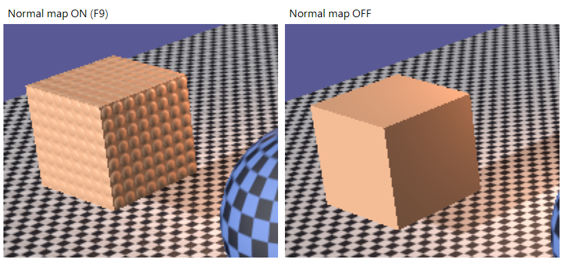
normalStrength 0). 지오메트리는 같고 픽셀 노멀만 다릅니다. (images/2026-09-23-phase6-normalmap-compare.png)11.8 그림자 매핑
그림자 매핑은 "이 픽셀과 광원 사이에 다른 물체가 있는가"를 깊이 비교로 판정하는 방법입니다. 광원을 카메라처럼 다뤄 한 번 그려 두고, 본 렌더링에서 그 결과를 조회합니다.
두 패스 알고리즘
그림자 패스 — 광원에서 본 깊이를 기록
광원의 뷰·투영 행렬 lightViewProj 로 씬을 그립니다. 색은 쓰지 않고 깊이만 2048×2048 텍스처에 남깁니다. 이 텍스처가 그림자 맵이고, 텍셀 하나는 "그 방향으로 광원에 가장 가까운 표면까지의 깊이"입니다. Renderer::RenderShadowPass 와 VS_Shadow 가 담당합니다.
메인 패스 — 픽셀의 광원 깊이와 비교
VS_Main 이 같은 월드 위치를 lightViewProj 로 변환해 shadowPosition 으로 넘깁니다. 픽셀 셰이더가 그 좌표로 그림자 맵을 조회해, 자기 깊이가 기록된 깊이보다 멀면 광원과 자기 사이에 무언가 있다고 보고 그림자로 판정합니다. ComputeShadowFactor 가 담당합니다.
그림자를 만드는 조명은 하나뿐입니다. Renderer::Render 는 렌더 설정 shadows 가 켜져 있고 씬의 0번 조명이 방향광일 때만 그림자 패스를 돌립니다. 아니면 shadowParams.w 를 0 으로 올리고, 셰이더는 계수 1(그림자 없음)을 돌려줍니다.
광원 행렬
// Graphics/Renderer.cpp — ComputeLightViewProj
const XMVECTOR center = XMVectorSet(0.0f, 2.0f, 0.0f, 1.0f);
const XMVECTOR eye = XMVectorSubtract(center, XMVectorScale(direction, m_settings.shadowDistance));
const XMVECTOR up = (fabsf(XMVectorGetY(direction)) > 0.99f) ? XMVectorSet(0.0f, 0.0f, 1.0f, 0.0f) : XMVectorSet(0.0f, 1.0f, 0.0f, 0.0f);
const XMMATRIX view = XMMatrixLookAtLH(eye, center, up);
const float size = m_settings.shadowOrthoSize;
const XMMATRIX proj = XMMatrixOrthographicLH(size, size, 0.1f, m_settings.shadowDistance * 2.0f + size);
return view * proj;- 눈의 위치. 방향광에는 위치가 없습니다. 고정된 중심점
(0, 2, 0)에서 빛의 반대 방향으로shadowDistance만큼 물러난 곳에 가상의 눈을 두고 중심을 바라봅니다. 여기서도direction은 빛이 나아가는 방향이므로 눈은center − direction × 거리입니다. - 직교 투영. 방향광의 광선은 서로 평행하므로 원근이 없는 직교 투영을 씁니다. 한 변이
shadowOrthoSize인 정사각형 상자이고 깊이 범위는 0.1 에서shadowDistance × 2 + shadowOrthoSize까지입니다. 이 상자 밖의 물체는 그림자를 만들지도 받지도 못합니다. - 수직광. 빛이 거의 수직이면 up 벡터 +Y 가 시선과 평행해져
LookAt이 무너집니다.|direction.y| > 0.99이면 up 을 +Z 로 바꿉니다. - 값. 기본값은 크기 60, 거리 40 입니다. 씬을 바꿀 때
App/EditorApp.cpp가 씬 크기에 맞춰 크기·거리·바이어스를 다시 정하고, 패널의 슬라이더로도 바꿀 수 있습니다.
상자는 카메라가 보는 범위에 맞춰 조이지 않는 고정 상자입니다. 상자가 클수록 텍셀 하나가 덮는 월드 면적이 커져 그림자 경계가 거칠어집니다. 60 단위 상자에 2048 텍셀이면 텍셀 하나가 약 0.03 단위입니다. 카메라 절두체에 맞춘 투영이나 캐스케이드는 넣지 않았습니다.
깊이 텍스처를 DSV 와 SRV 로 보기
// Graphics/Renderer.cpp — CreateShadowResources
const TextureDesc desc{
.width = kShadowMapSize,
.height = kShadowMapSize,
.format = Format::D32_FLOAT,
.mipLevels = 1,
.bindFlags = TextureBind_DepthStencil | TextureBind_ShaderResource,
.debugName = "ShadowMap",
};그림자 맵은 첫 패스에서는 깊이 버퍼로 쓰고, 둘째 패스에서는 텍스처로 읽습니다. 같은 메모리를 두 종류의 뷰로 봐야 합니다. 깊이 스텐실 뷰(DSV)는 포맷이 D32_FLOAT 여야 하고 셰이더 리소스 뷰(SRV)는 R32_FLOAT 여야 하는데, 리소스를 둘 중 하나로 만들면 다른 쪽 뷰를 만들 수 없습니다. D3D 의 해법은 리소스를 형식을 정하지 않은 R32_TYPELESS 로 만들고 뷰마다 완전한 포맷을 지정하는 것입니다. 같은 32비트를 한쪽은 깊이로, 다른 쪽은 빨강 채널의 float 로 해석합니다.
| 대상 | 포맷 | 쓰는 곳 |
|---|---|---|
| 리소스 | R32_TYPELESS | 텍스처 본체 |
| DSV | D32_FLOAT | 그림자 패스의 깊이 attachment |
| SRV | R32_FLOAT | 메인 패스의 t8 shadowMap |
호출 코드는 Format::D32_FLOAT 와 바인드 플래그 두 개만 적습니다. 백엔드의 CreateTexture 가 "깊이 포맷 + DepthStencil | ShaderResource" 조합을 보고 리소스를 TYPELESS 로 만들고 뷰 포맷을 고릅니다(D3D11 은 RHI/D3D11/D3D11Resources.h 의 D3D11DepthFormat, D3D12 는 D3D12Convert::DepthTypeless). 규칙은 두 API 가 같습니다.
한 리소스를 동시에 쓰기와 읽기로 바인딩할 수는 없습니다. RenderShadowPass 는 패스 앞에서 cmd.Barrier(m_shadowMap, …, ResourceState::DepthWrite), 패스 뒤에서 DepthWrite → ShaderResource 전이를 기록합니다. D3D12 에서는 실제 배리어이고 D3D11 에서는 상태 추적입니다. D3D11 에서는 추가로 BeginRenderPass 가 타깃이 될 텍스처를 SRV 슬롯에서 풀어 주므로, DrawItems 가 메인 패스 시작에 프레임 셋을 다시 바인딩해 t8 을 복구합니다. 배리어와 렌더 패스는 8장이 다룹니다.
깊이 전용 PSO
// Graphics/Renderer.cpp — Initialize
m_shadowDesc = PipelineStateDesc{
.vs = m_shadowVs,
.bindingLayouts = { m_frameLayout, m_objectLayout },
.bindingLayoutCount = 2,
.rasterizer = { .depthBias = 2000, .depthBiasClamp = 0.01f, .slopeScaledDepthBias = 2.0f },
.rtvCount = 0,
.dsvFormat = Format::D32_FLOAT,
};- 픽셀 셰이더가 없습니다.
ps를 빈 핸들로 둡니다. 깊이는 래스터라이저가 보간한 값이 그대로 깊이 버퍼에 기록되므로 색을 계산할 셰이더가 필요 없습니다. D3D11 백엔드는PSSetShader(nullptr)로, D3D12 백엔드는 PSO 의 PS 바이트코드를 비워 표현합니다. - 렌더 타깃이 없습니다.
rtvCount = 0, 깊이 포맷은D32_FLOAT입니다. 패스 쪽도RenderPassDesc의colorCount = 0이고 깊이를 1.0 으로 지웁니다. - 재질 셋이 없습니다. 바인딩 레이아웃은 프레임과 오브젝트 둘뿐입니다. 그림자 패스의 드로우 루프는 재질 셋을 바인딩하지 않고 PSO, 메시, 오브젝트 상수만 바꿉니다.
- 깊이 테스트는 Desc 기본값(켬,
Less, 기록 켬)이라 광원에 가장 가까운 표면만 남습니다. - 변형.
GetShadowPipelineFor가 정점 레이아웃을 채우고, 양면 재질이면 컬링을 끕니다. 와이어프레임 재질도 그림자는 솔리드로 그립니다. - 제외.
unlit재질의 드로우는 그림자 패스에서 건너뜁니다. 조명을 받지 않는 물체는 그림자도 만들지 않는다는 판단입니다.
바이어스 — 자기 그림자 막기
그림자 맵의 텍셀 하나는 깊이 값 하나만 저장하지만, 그 텍셀이 덮는 표면은 광원에 대해 기울어 있어 실제 깊이가 텍셀 안에서 연속으로 변합니다. 메인 패스의 픽셀은 그 표면 위 어디든 올 수 있으므로, 같은 표면인데도 절반쯤은 "기록된 깊이보다 조금 멀다"고 판정됩니다. 결과는 빛을 받는 면 전체에 생기는 줄무늬이며 shadow acne 라고 부릅니다. 대응은 비교에 여유(bias)를 두는 것입니다. 엔진은 두 곳에서 둡니다.
| 위치 | 값 | 동작 |
|---|---|---|
래스터라이저 상수 바이어스depthBias | 2000 | 그림자 맵에 기록되는 깊이에 고정량을 더해 표면을 광원에서 멀어지게 밉니다. 부동소수점 깊이 버퍼에서 한 단위는 2^(지수 − 23) 이고, 지수는 그 삼각형의 최대 깊이 값의 지수입니다. 깊이 0.5 근처에서는 한 단위가 약 6×10⁻⁸ 이므로 2000 단위가 약 1.2×10⁻⁴ 입니다. 큰 정수가 정상입니다. |
래스터라이저 기울기 바이어스slopeScaledDepthBias | 2.0 | 삼각형의 깊이 기울기에 비례하는 양을 더합니다. 광원에 비스듬한 면일수록 텍셀 안의 깊이 변화가 크므로 그만큼 더 밉니다. |
상한depthBiasClamp | 0.01 | 두 항의 합이 넘지 못하는 값. 광원과 거의 평행한 면에서 기울기 항이 폭주하는 것을 막습니다. |
셰이더 바이어스shadowParams.y | 0.0015 | 비교 직전에 수신 픽셀의 깊이에서 뺍니다. 렌더 설정 shadowBias 이고 광원 클립 공간의 z(0~1) 단위입니다. |
바이어스가 너무 크면 반대 문제가 생깁니다. 그림자가 물체의 발밑에서 떨어져 물체가 떠 보이는 Peter Panning 입니다. 상수 항은 작게 두고 기울어진 면은 기울기 항에 맡기는 것이 두 문제 사이의 절충입니다. 씬의 크기가 달라지면 광원 깊이 범위가 달라져 같은 숫자의 의미가 바뀌므로 씬마다 shadowBias 를 다시 정합니다.
비교 샘플러와 PCF
// Shaders/BasicPixelShader.hlsl
float ComputeShadowFactor(float4 shadowPosition)
{
if (shadowParams.w < 0.5f)
{
return 1.0f;
}
const float3 p = shadowPosition.xyz / shadowPosition.w;
const float2 uv = float2(p.x * 0.5f + 0.5f, -p.y * 0.5f + 0.5f);
if (p.z > 1.0f)
{
return 1.0f; // 광원 far 밖
}
const float depth = p.z - shadowParams.y;
float lit = 0.0f;
[unroll]
for (int dy = -1; dy <= 1; ++dy)
{
[unroll]
for (int dx = -1; dx <= 1; ++dx)
{
lit += shadowMap.SampleCmpLevelZero(shadowSampler, uv, depth, int2(dx, dy));
}
}
lit /= 9.0f;
return lerp(1.0f, lit, shadowParams.z);
}- 광원 NDC.
shadowPosition은 보간된 광원 클립 좌표입니다. 직교 투영이라 w 는 1 이지만 관례대로 나눕니다. 결과p의 x, y 는 −1~1, z 는 0~1 입니다. - 텍스처 좌표. NDC 의 −1~1 을 0~1 로 옮깁니다. NDC 는 y 가 위로 증가하고 텍스처의 v 는 아래로 증가하므로 y 의 부호를 뒤집습니다. 이 줄을 빼먹으면 그림자가 위아래로 뒤집힙니다.
- 범위 밖.
p.z > 1이면 광원의 far 평면 너머이므로 빛을 받는 것으로 칩니다. 좌우·상하로 벗어난 좌표는 샘플러의 테두리 색이 처리합니다. - 비교값. 수신 픽셀의 깊이에서 셰이더 바이어스를 뺀 값입니다.
- 비교 샘플링 9회. 가운데와 이웃 여덟 텍셀 위치에서 비교 결과를 읽어 평균 냅니다.
- 세기.
shadowParams.z(렌더 설정shadowStrength)로 1 과 섞습니다. 0 이면 그림자 없음, 1 이면 판정 그대로입니다.
shadowSampler 는 일반 샘플러가 아니라 SamplerComparisonState 입니다. Renderer::CreateShadowResources 가 다음 설정으로 만듭니다.
| 설정 | 값 | 의미 |
|---|---|---|
| filter | SamplerFilter::Comparison(D3D 의 COMPARISON_MIN_MAG_LINEAR_MIP_POINT) | 텍셀 값을 보간하는 것이 아니라, 텍셀마다 먼저 비교해 0 또는 1 을 만들고 그 결과를 선형 보간합니다. |
| compareFunc | CompareFunc::LessEqual | "비교값 ≤ 저장된 깊이"이면 1(빛 받음), 아니면 0(그림자) |
| address | SamplerAddress::Border | 0~1 밖의 좌표는 테두리 색을 돌려줍니다. |
| borderColor | (1, 1, 1, 1) | 맵 밖의 깊이는 1.0 으로 읽히므로 비교가 항상 통과합니다. 광원 상자 밖은 빛을 받습니다. |
깊이 값을 선형 보간한 뒤 비교하면 의미가 없습니다. 서로 다른 표면의 깊이를 평균 낸 값은 어느 표면의 깊이도 아니기 때문입니다. 그래서 순서를 바꿔 비교한 결과를 평균 냅니다. 이것이 PCF(Percentage-Closer Filtering)이고, 결과는 0 과 1 사이의 "빛을 받는 비율"입니다. 비교 샘플러 한 번이 인접 2×2 텍셀에 대해 이 일을 하드웨어에서 해 주고, 엔진은 그 위에 3×3 오프셋으로 아홉 번 불러 경계를 더 부드럽게 합니다. SampleCmpLevelZero 는 밉 레벨 0 만 읽는 비교 샘플링이고 마지막 인자는 텍셀 단위의 정수 오프셋입니다. 오프셋을 정수로 주므로 텍셀 크기(shadowParams.x)를 곱해 UV 를 직접 옮길 필요가 없습니다.
그림자 계수가 쓰이는 곳
shadowFactor 는 조명 루프에서 0번 조명이 방향광일 때 그 조명의 감쇠에만 곱해집니다(11.6절의 코드). ambient 항과 다른 조명은 그림자의 영향을 받지 않습니다. 그래서 그림자 안도 완전히 검지 않고 ambient 와 점광·스포트광의 빛이 남습니다.
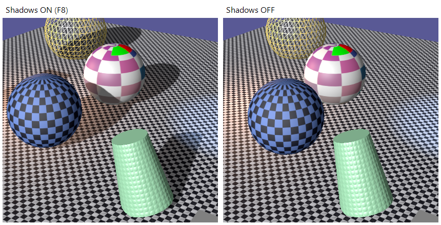
디버그 뷰 4(그림자 계수)로 계수만 흑백으로 봅니다. 전부 흰색이면 그림자 패스가 돌지 않은 것이므로 0번 조명의 타입과 shadows 설정을 확인합니다. 줄무늬가 보이면 바이어스가 작은 것이고, 그림자가 물체에서 떨어져 있으면 큰 것입니다. 그림자가 어느 선에서 잘리면 광원 상자(shadowOrthoSize, shadowDistance)가 씬을 덮지 못하는 것입니다. 통계의 shadowDraws 가 0 이 아닌지도 함께 봅니다.
11.9 디버그 뷰
디버그 뷰는 조명 결과 대신 픽셀 셰이더의 중간값 하나를 색으로 내보내는 기능입니다. 화면이 틀렸을 때 어느 입력이 틀렸는지를 가려냅니다. 번호는 b0 의 debugParams.x 로 올라가고, 분기는 노멀과 그림자 계수를 계산한 뒤, 조명 루프 앞에 있습니다.
const int debugView = (int)debugParams.x;
if (debugView == 1) return float4(albedo, 1.0f);
if (debugView == 2) return float4(normal * 0.5f + 0.5f, 1.0f);
if (debugView == 3) { const float d = saturate(length(cameraPosition - input.worldPosition) / max(debugParams.y, 0.001f)); return float4(d, d, d, 1.0f); }
if (debugView == 4) return float4(shadowFactor, shadowFactor, shadowFactor, 1.0f);
if (debugView == 5) return float4(frac(input.uv), 0.0f, 1.0f);
if (debugView == 6) return float4(0.0f, rough, metal, 1.0f); // 2026-10-08
if (debugView == 7) return float4(ao, ao, ao, 1.0f);| 번호 | 출력 | 무엇을 확인하나 |
|---|---|---|
| 0 | 조명 결과 (평소) | |
| 1 | 알베도 | 텍스처, 기본색, 정점 색의 곱. 색공간 문제와 조명 문제를 분리합니다. |
| 2 | 월드 노멀을 0~1 로 옮긴 색 | +X 는 붉게, +Y 는 초록으로, +Z 는 파랗게 보입니다. 노멀 맵과 탄젠트의 방향을 봅니다. |
| 3 | 카메라까지의 거리 ÷ debugParams.y | 깊이 버퍼 값이 아니라 월드 거리입니다. 범위의 기본값은 60 입니다. |
| 4 | 그림자 계수 | 조명과 분리한 그림자 판정. 흰색이 빛, 검정이 그림자입니다. |
| 5 | frac(uv) 를 빨강·초록으로 | UV 의 방향과 타일링 |
| 6 | 초록 = 거칠기, 파랑 = 금속성 | glTF 의 metallicRoughness 텍스처와 같은 채널 배치. 텍스처 × 계수가 의도대로인지 |
| 7 | AO | 오클루전 텍스처와 강도 |
에디터의 Render Settings 패널에 있는 "Debug view" 콤보(App/Editor.cpp)나 실행 인자 --debug-view=N(부록 D)으로 고릅니다. 디버그 출력도 같은 sRGB 렌더 타깃에 기록되므로 화면의 픽셀 값은 셰이더가 내보낸 값을 sRGB 로 인코딩한 값입니다. 화면에서 값을 읽어 역산할 때는 이 점을 감안합니다.
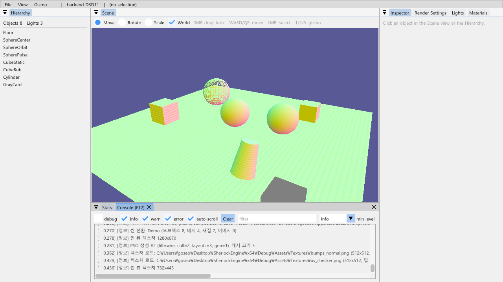
11.10 Output Merger — 깊이 테스트와 기록
출력 병합기는 픽셀 셰이더가 돌려준 색을 렌더 타깃에 기록할지, 어떻게 기록할지를 정합니다. 메인 패스의 PSO 는 DepthStencilDesc 와 BlendDesc 를 Desc 기본값 그대로 씁니다.
| 항목 | 값 | 결과 |
|---|---|---|
| 깊이 테스트 | depthEnable = true, depthFunc = Less | 새 픽셀의 깊이가 버퍼의 값보다 작을 때만 통과합니다. 패스 시작에 깊이를 1.0 으로 지우므로 첫 픽셀은 항상 통과합니다. |
| 깊이 기록 | depthWrite = true | 통과한 픽셀의 깊이를 버퍼에 씁니다. 그리는 순서와 무관하게 가까운 표면이 남습니다. |
| 스텐실 | stencilEnable = false | 쓰지 않습니다. |
| 깊이 포맷 | D24_UNORM_S8_UINT | GetPipelineFor 가 dsvFormat 에 넣습니다. D3D12 PSO 가 요구하는 항목입니다. |
| 블렌드 | blendEnable = false, writeMask = 0xF | 셰이더 출력으로 덮어씁니다. 출력 알파 surface.a 는 타깃에 기록되지만 합성에 쓰이지 않습니다. |
| 렌더 타깃 포맷 | srgbOutput 이면 R8G8B8A8_UNORM_SRGB, 아니면 R8G8B8A8_UNORM | sRGB 뷰에 쓰면 하드웨어가 선형 값을 sRGB 로 인코딩해 저장합니다. |
- 반투명은 없습니다. 알파 블렌딩을 켠 PSO 변형과 뒤에서 앞으로 정렬하는 큐가 없으므로, 알파는 컷아웃(11.5절)으로만 표현됩니다.
- sRGB 기록. 픽셀 셰이더가 내보내는 색은 선형입니다.
RenderMainPass가 색 attachment 에.srgbView = m_settings.srgbOutput을 지정하고 PSO 의rtvFormats[0]도 같은 포맷을 가집니다. 기록 시점에 0~1 로 잘린 뒤 인코딩되므로 조명 합이 1 을 넘는 부분은 흰색으로 날아갑니다. 지우는 색도 선형 값으로 줍니다. F5 가 이 설정을 토글합니다. 색공간의 전체 흐름은 12장에 있습니다. - 어디에 그리나. 타깃은 에디터의 씬 뷰 텍스처이거나 백버퍼입니다. 그 뒤 UI 패스가 같은 백버퍼의 UNORM 뷰에 ImGui 를 그립니다(14장).
11.11 함정과 해결
| 함정 | 증상 | 해결 |
|---|---|---|
direction 을 L 로 그대로 씀 | 밝은 면과 어두운 면이 뒤바뀜 | direction 은 빛의 진행 방향. 방향광의 L 은 −direction(11.6) |
| 노멀을 월드 행렬로 변환 | 비균등 스케일에서 음영이 틀어짐 | (W⁻¹)ᵀ 로 변환(10장) |
| 보간된 노멀·탄젠트를 그대로 사용 | 삼각형 안쪽이 어둡고 하이라이트가 뭉개짐 | 픽셀 셰이더에서 재정규화, T 는 N 에 다시 직교화 |
| 노멀 맵의 초록 채널 관례가 섞임 | 볼록과 오목이 뒤집힘 | 탄젠트 w 의 부호로 흡수. 반사한 모델은 제공된 w 도 뒤집음 |
| 노멀 맵을 sRGB 로 로드 | 굴곡이 한쪽으로 쏠림 | 노멀 맵은 항상 선형으로 로드 |
D32_FLOAT 텍스처에 SRV 생성 | 뷰 생성 실패 | 리소스는 TYPELESS, 뷰마다 포맷 지정. 백엔드가 바인드 플래그를 보고 처리 |
| 그림자 맵이 t8 에 바인딩된 채 DSV 로 사용 (D3D11) | 런타임이 SRV 를 강제로 풀고 경고 | BeginRenderPass 가 먼저 풀고, 메인 패스에서 프레임 셋을 다시 바인딩 |
| 픽셀 셰이더 없는 PSO | PSO 생성이 "PS 핸들이 유효하지 않음"으로 실패 | 빈 ps 핸들을 깊이 전용으로 허용 |
| 재질 셋과 프레임 셋의 t#/s# 번호가 겹침 | 나중에 바인딩한 셋이 앞의 것을 덮어씀 | 셋마다 레지스터 구간 배정(t0~7/s0~3, t8~15/s4~7) |
빛이 수직일 때 LookAt | up 이 시선과 평행해 광원 행렬이 깨짐 | |direction.y| > 0.99 면 up 을 +Z 로 |
| 그림자 UV 의 y 를 뒤집지 않음 | 그림자가 위아래로 뒤집힌 자리에 생김 | −p.y × 0.5 + 0.5 |
| 바이어스가 작거나 큼 | 줄무늬(acne) 또는 떠 보이는 그림자(Peter Panning) | 래스터라이저 상수·기울기 바이어스와 셰이더 바이어스를 함께 조절. 씬마다 다시 정함 |
| unlit 물체가 그림자를 드리움 | 조명을 받지 않는 검증용 카드가 바닥에 그림자를 만듦 | 그림자 패스에서 unlit 재질을 건너뜀 |
| 컷아웃 재질의 그림자 | 구멍 없는 사각형 그림자 | 남음 알파 테스트용 그림자 PSO 변형이 필요 |
| 금속 재질이 검게 보임 | 환경 반사가 없어 금속성 높은 표면이 어두움 | 해결 10-08 PBR + IBL. 환경이 없는 씬에서는 금속이 ambientColor 만 반사해 여전히 어둡습니다(20.15) |
12.텍스처와 색공간
이 장은 이미지 파일의 바이트가 화면의 픽셀 값이 되기까지 거치는 경로를 다룹니다. 앞 절반은 색공간입니다. 조명을 왜 선형 공간에서 계산하는지, 그 변환을 누가 하는지, 스왑체인과 뷰 포맷이 여기에 어떻게 얽히는지를 설명합니다. 뒤 절반은 텍스처 자체입니다. 로더가 파일을 어떤 모양의 CPU 이미지로 만들고, 그것이 두 백엔드에서 어떻게 GPU 텍스처가 되며, 샘플러·UV·재질 셋·Renderer 의 텍스처 캐시가 어떻게 이어지는지를 봅니다. 조명 수식과 노멀 매핑은 11장, 바인딩 셋의 구조는 7장, 재질 데이터 구조는 13장이 다룹니다.
Graphics/TextureLoader.h/.cpp- 파일·메모리 →
TextureImage(밉 체인 포함 CPU 이미지). DirectXTex 사용 RHI/ResourceDesc.hTextureDesc,TextureSubresource,SamplerDescRHI/D3D11/D3D11Device.cpp,D3D11Resources.hCreateTexture, 스왑체인(InitDirect3D),Resize, 뷰 지연 생성(D3D11Texture::GetRTV/GetDSV/GetSRV)RHI/D3D12/D3D12Device.cppCreateTexture(업로드 힙 경로),InitSwapChain,Resize,GetRTV/GetDSV/GetSRVGraphics/Renderer.cppGetOrLoadTexture(텍스처 캐시),CreateSamplers,BeginUIPassScene/Material.h- 텍스처 이름 규칙,
albedoSrgb,SamplerPreset Shaders/Common.hlsli,BasicPixelShader.hlsl- t0·t1·s0 선언과 샘플링
텍스처 바이트는 파일에 든 그대로(sRGB 로 인코딩된 값)입니다. *_SRGB 포맷은 값을 바꾸는 변환이 아니라 "샘플할 때 선형으로 풀어라"라는 라벨입니다. 셰이더는 선형 값으로 조명을 계산하고, 렌더 타깃의 sRGB 뷰에 쓰는 순간 하드웨어가 다시 인코딩합니다. 이 두 지점 사이에 있는 정점 색·재질 색·클리어 색·조명은 전부 선형입니다. ImGui 만 예외여서 UNORM 뷰에 따로 그립니다.
12.1 왜 선형 공간에서 조명을 계산하는가
PNG 에 저장된 128 은 "밝기 50%"가 아닙니다. sRGB 는 사람 눈이 어두운 영역의 차이에 더 민감하다는 점을 이용해 8비트 값을 어두운 쪽에 더 많이 배정하는 인코딩입니다. 인코딩된 값과 물리적인 밝기(선형 값) 사이의 관계를 전달 함수라고 부릅니다.
// sRGB(0..1) → 선형
linear = srgb / 12.92 (srgb ≤ 0.04045)
linear = ((srgb + 0.055) / 1.055) ^ 2.4 (그 외)
// 128/255 = 0.502 → 0.2158. "128 회색"의 물리적 밝기는 21.6% 입니다.조명 계산은 물리량의 덧셈과 곱셈입니다. 빛 두 개를 더하고, 표면 반사율을 곱합니다. 인코딩된 값끼리 더하고 곱하면 결과는 인코딩된 값도 선형 값도 아닌 것이 됩니다. 그래서 원칙은 하나입니다. 모든 계산은 선형에서 하고, 화면에 낼 때만 인코딩합니다.
이 원칙을 어기는 방법은 두 가지입니다.
- 입력을 풀지 않습니다. 텍스처의 인코딩된 값을 선형 값으로 오해하고 조명에 넣습니다. 어두운 색이 실제보다 밝게 계산됩니다.
- 출력을 인코딩하지 않습니다. 선형 결과를 그대로 화면에 씁니다. 모니터는 받은 값을 sRGB 로 해석하므로 전체가 어두워집니다.
두 번째 오류를 숫자로 보면 이렇습니다. 텍스처의 128 을 올바르게 풀면 0.2158 입니다. 이것을 인코딩 없이 UNORM 타깃에 쓰면 0.2158 × 255 = 55 가 저장됩니다. 모니터는 55 를 sRGB 로 해석하므로 실제 밝기는 약 3.8% 가 됩니다. 한 번 풀어서 어두워진 값을 모니터가 한 번 더 풀어서 어둡게 만드는 것이고, 이것을 "두 번 어두워지기"라고 부릅니다. RenderSettings::srgbOutput 을 끄면(F5) 이 상태를 일부러 재현할 수 있습니다(12.5절).
12.2 SRV 와 RTV 의 _SRGB 뷰, 그리고 TYPELESS 리소스
변환은 셰이더 코드가 하지 않고 하드웨어가 합니다. 변환이 일어나는 자리는 두 곳입니다.
| 자리 | 뷰 포맷 | 하드웨어가 하는 일 |
|---|---|---|
| 읽기 (SRV, 셰이더 리소스 뷰) | R8G8B8A8_UNORM_SRGB | Sample 할 때 텍셀마다 sRGB → 선형으로 푼 뒤에 필터링합니다 |
| 쓰기 (RTV, 렌더 타깃 뷰) | R8G8B8A8_UNORM_SRGB | 픽셀 셰이더 출력을 블렌딩한 뒤 선형 → sRGB 로 인코딩해 저장합니다 |
셰이더는 이 변환을 모릅니다. BasicPixelShader.hlsl 의 PS_Main 은 텍스처를 샘플한 줄부터 반환하는 줄까지 선형 값만 다룹니다.
// Shaders/BasicPixelShader.hlsl — PS_Main 첫머리
const float4 texel = albedoTexture.Sample(albedoSampler, input.uv); // sRGB 라벨이면 여기서 이미 선형
const float4 surface = input.col * baseColor * texel;
…
return float4(finalColor, surface.a); // sRGB RTV 가 인코딩뷰 포맷과 리소스 포맷
뷰는 리소스를 "어떤 포맷으로 해석할지"를 정합니다. 타입이 정해진 리소스(예: R8G8B8A8_UNORM)에는 원칙적으로 같은 포맷의 뷰만 만들 수 있습니다. 같은 메모리를 UNORM 과 UNORM_SRGB 두 가지로 보려면 리소스를 R8G8B8A8_TYPELESS(포맷 계열만 정하고 해석은 뷰에 맡기는 포맷)로 만들어야 합니다. 예외가 하나 있습니다. 스왑체인 백버퍼는 UNORM 으로 만들어도 _SRGB RTV 를 만들 수 있습니다. 이 예외는 flip 모델 스왑체인이 sRGB 백버퍼 포맷을 받지 않기 때문에 있는 것입니다(12.6절).
엔진에서 이 규칙이 적용되는 텍스처는 네 종류입니다. TYPELESS 로 만들지 여부는 호출 코드가 정하지 않고 두 백엔드의 CreateTexture 가 bindFlags 조합을 보고 정합니다.
| 텍스처 | TextureDesc.format · bindFlags | 실제 리소스 포맷 | 뷰 |
|---|---|---|---|
| 백버퍼 | R8G8B8A8_UNORM · RenderTarget | R8G8B8A8_UNORM 스왑체인이 만듦 | RTV 두 개: UNORM(UI 패스), UNORM_SRGB(메인 패스) |
| 재질 텍스처(색) | R8G8B8A8_UNORM_SRGB · ShaderResource | 그대로 | SRV 하나. 리소스 포맷 그대로 |
| 재질 텍스처(데이터) | R8G8B8A8_UNORM · ShaderResource | 그대로 | SRV 하나 |
| 씬 뷰·카메라 미리보기 색 14장 | R8G8B8A8_UNORM · RenderTarget | ShaderResource | R8G8B8A8_TYPELESS | RTV UNORM_SRGB(씬을 그림), SRV UNORM(ImGui 가 읽음) |
| 그림자 맵 11장 | D32_FLOAT · DepthStencil | ShaderResource | R32_TYPELESS | DSV D32_FLOAT, SRV R32_FLOAT |
// RHI/D3D11/D3D11Device.cpp — D3D11Device::CreateTexture (D3D12Device::CreateTexture 도 같은 규칙)
const bool depthAndSrv = (descIn.bindFlags & TextureBind_DepthStencil) && (descIn.bindFlags & TextureBind_ShaderResource);
const bool colorRtAndSrv = (descIn.bindFlags & TextureBind_RenderTarget) && (descIn.bindFlags & TextureBind_ShaderResource)
&& format == DXGI_FORMAT_R8G8B8A8_UNORM;
texture.typeless = (depthAndSrv && D3D11DepthFormat::IsDepth(format)) || colorRtAndSrv;
td.Format = texture.typeless
? (D3D11DepthFormat::IsDepth(format) ? D3D11DepthFormat::Typeless(format) : DXGI_FORMAT_R8G8B8A8_TYPELESS)
: format;뷰는 텍스처를 만들 때 만들지 않고 처음 요청될 때 만들어 보관합니다. D3D11 은 D3D11Texture::GetRTV(device, srgbView) 가 rtv 와 rtvSrgb 두 ComPtr 중 하나를 채우고, D3D12 는 D3D12Device::GetRTV(texture, srgbView) 가 RTV 힙에서 디스크립터를 하나 할당해 texture.rtv 또는 texture.rtvSrgb 에 인덱스를 기록합니다. 어느 뷰를 쓸지는 렌더 패스를 여는 쪽이 RenderPassDesc 색 첨부의 srgbView 로 정합니다(8장).
D3D12 의 PSO 에는 렌더 타깃 포맷이 들어가고, 그 값은 리소스 포맷이 아니라 바인딩된 RTV 의 포맷과 같아야 합니다. 그래서 Renderer::GetPipelineFor 는 srgbOutput 에 따라 desc.rtvFormats[0] 을 R8G8B8A8_UNORM_SRGB 또는 R8G8B8A8_UNORM 으로 채웁니다. sRGB 출력을 토글하면 PSO 도 다른 것이 선택됩니다(6장, 14장).
12.3 어떤 텍스처가 sRGB 이고 어떤 것이 선형인가
기준은 파일 형식이 아니라 용도입니다. 사람이 눈으로 보고 칠한 색은 sRGB 로 인코딩되어 있고, 계산에 쓰는 숫자는 인코딩되어 있지 않습니다. 같은 PNG 파일이라도 어떤 재질에서는 색, 다른 재질에서는 데이터로 쓰일 수 있으므로 라벨은 로더가 아니라 재질이 정합니다.
| 텍스처 | 라벨 | 정하는 곳 | 이유 |
|---|---|---|---|
| 베이스 컬러(알베도) | sRGB | Material::albedoSrgb (기본 true) | 색입니다. 풀어서 조명에 넣어야 합니다 |
| 노멀 맵 | 선형 | GetOrCreateGpuMaterial 이 항상 srgb = false 로 요청 | 벡터 성분입니다. (128,128,255) 가 정확히 (0,0,1) 로 읽혀야 합니다 |
| 내장 흰색·평평한 노멀 | 선형 | GetOrLoadTexture 가 CreateSolid(…, false, …) | 흰색 1.0 은 어느 쪽이든 1.0 이고, 평평한 노멀은 데이터입니다 |
| 에디터 썸네일 | UNORM | TextureLoader::LoadThumbnail | ImGui 가 UNORM 뷰에 그대로 옮깁니다(12.4절) |
| 그림자 맵 | 해당 없음 | — | 깊이 값입니다 |
색을 담지만 텍스처가 아닌 값들 — 정점 색, Material::baseColor, 조명 색, Scene::clearColor — 은 변환 없이 그대로 선형 값으로 취급됩니다. 예를 들어 클리어 색 (0.1, 0.1, 0.3) 은 선형 값이고, sRGB 뷰를 이 값으로 클리어하면 인코딩된 (89, 89, 149) 가 저장됩니다. ImGui 의 색 견본은 같은 숫자를 인코딩된 값으로 그리므로(12.4절), 같은 숫자라도 씬에서는 견본보다 밝게 보입니다.
12.4 ImGui 는 UNORM 뷰에 그립니다
Dear ImGui 는 스타일 색을 sRGB 로 인코딩된 값으로 다루고, 렌더러 백엔드는 그 값을 그대로 출력합니다. sRGB 뷰에 ImGui 를 그리면 이미 인코딩된 값이 한 번 더 인코딩되어 패널이 희게 떠 보입니다. 그래서 프레임의 마지막 패스인 UI 패스는 같은 백버퍼의 UNORM 뷰를 씁니다.
// Graphics/Renderer.cpp — Renderer::BeginUIPass
RenderPassDesc pass{
.colors = { { .texture = m_device->GetBackBuffer(), .load = LoadOp::Load, .srgbView = false } },
.colorCount = 1,
.debugName = "UIPass",
};D3D12 쪽 ImGui 백엔드도 같은 포맷으로 초기화합니다. D3D12Device::InitImGui 는 info.RTVFormat = DXGI_FORMAT_R8G8B8A8_UNORM 을 넘깁니다. ImGui 백엔드가 내부에서 만드는 PSO 의 렌더 타깃 포맷이 UI 패스의 RTV 포맷과 같아야 하기 때문입니다.
같은 이유가 ImGui 가 읽는 텍스처에도 적용됩니다. ImGui 는 ImGui::Image 로 받은 텍스처의 값을 UNORM 백버퍼에 그대로 옮깁니다. 그러므로 읽는 값이 이미 sRGB 로 인코딩된 바이트여야 색이 맞습니다.
- 씬 뷰 텍스처: 메인 패스가 sRGB RTV 로 그려 인코딩된 바이트가 저장되어 있습니다. ImGui 는 UNORM SRV 로 그 바이트를 그대로 읽습니다. 이 두 뷰를 함께 가지려고 TYPELESS 로 만듭니다(12.2절 표).
- 썸네일: 파일의 바이트(인코딩된 값)를 UNORM 라벨로 올립니다. sRGB 라벨을 붙이면 샘플할 때 값이 한 번 풀리는데 UNORM 뷰는 그것을 다시 인코딩하지 않으므로 원본과 다른 색이 됩니다.
12.5 회색 128 검증
색공간 경로가 맞는지는 눈으로 판단하기 어렵습니다. "조금 밝다", "조금 어둡다"는 틀린 구현에서도 그럴듯해 보입니다. 그래서 값이 정해진 입력을 넣고 출력 픽셀을 읽습니다. builtin:gray128 은 4×4 픽셀의 (128,128,128) 텍스처이고, Material::unlit 재질로 입히면 픽셀 셰이더가 조명 없이 알베도를 그대로 반환합니다. 디코딩(SRV) → 통과(셰이더) → 인코딩(RTV)의 왕복이 맞으면 화면에서 128 이 다시 읽혀야 합니다.
| 측정 지점 | 선형 값 | sRGB 출력 켬 | sRGB 출력 끔 |
|---|---|---|---|
| 회색 카드 (텍스처 128, unlit) | 0.2158 | 128 | 55 |
| 배경 R, G (클리어 0.1) | 0.1 | 89 | 25 |
| 배경 B (클리어 0.3) | 0.3 | 149 | 76 |
여섯 값은 예측과 측정이 모두 일치했습니다. 켠 상태에서는 왕복이 손실 없이 128 을 돌려주고, 끈 상태에서는 선형 값 × 255 가 그대로 나옵니다. 처음 구현했을 때는 128 대신 188 이 읽혔는데, 그 원인이 12.7절의 DirectXTex 변환 함정입니다. 이 검증이 없었다면 "텍스처가 조금 밝다" 정도로 지나갔을 오류입니다.
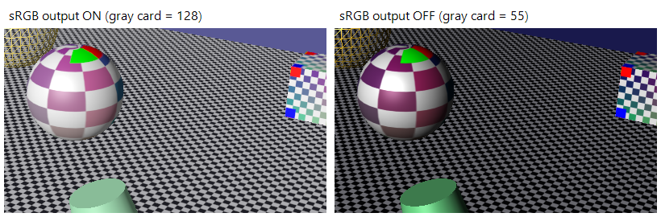
12.6 스왑체인 — flip 모델, tearing, 백버퍼 포맷
스왑체인은 화면에 보여 줄 백버퍼 묶음과 그것을 교대하는 방식입니다. 두 백엔드 모두 IDXGIFactory2::CreateSwapChainForHwnd 로 flip 모델(DXGI_SWAP_EFFECT_FLIP_DISCARD) 스왑체인을 만듭니다. 옛 blt 모델은 Present 마다 백버퍼를 데스크톱 컴포지터(DWM)의 표면으로 복사합니다. flip 모델은 백버퍼 자체를 컴포지터와 공유하므로 복사가 없고, 창 모드에서도 전체 화면에 가까운 성능이 나옵니다. 대신 요구 사항이 있습니다.
| flip 모델의 요구 | 엔진의 대응 |
|---|---|
| 버퍼 2개 이상 | D3D11 은 BufferCount = 2, D3D12 는 kBackBufferCount = 3 |
| 백버퍼에 MSAA 불가 | SampleDesc.Count = 1 |
백버퍼 포맷에 _SRGB 불가 | R8G8B8A8_UNORM 으로 만들고 RTV 를 sRGB 로 만듭니다(12.2절) |
Present 뒤 백버퍼 바인딩이 풀림 | BeginRenderPass 가 패스마다 렌더 타깃을 다시 바인딩합니다 |
| 창 하나에 flip 스왑체인 하나 | 스왑체인 하나. MakeWindowAssociation(DXGI_MWA_NO_ALT_ENTER) 로 DXGI 의 전체 화면 전환을 막습니다 |
tearing 허용
수직 동기화를 끄고 프레임을 제한 없이 내려면 flip 모델에서는 조건이 하나 더 붙습니다. 창 모드에서 컴포지터에 막히지 않으려면 tearing(화면 찢어짐을 허용하고 즉시 표시) 지원을 확인하고, 플래그를 세 곳에 같은 값으로 넘겨야 합니다.
// ① 지원 확인 — D3D11Device::InitDirect3D / D3D12Device::InitDevice
factory5->CheckFeatureSupport(DXGI_FEATURE_PRESENT_ALLOW_TEARING, &allowTearing, sizeof(allowTearing));
m_swapChainFlags = m_tearingSupported ? DXGI_SWAP_CHAIN_FLAG_ALLOW_TEARING : 0;
// ② 생성
sd.Flags = m_swapChainFlags;
// ③ Present — EndFrame. tearing 은 SyncInterval 0 일 때만
const UINT flags = (!m_vsync && m_tearingSupported) ? DXGI_PRESENT_ALLOW_TEARING : 0;
m_swapChain->Present(m_vsync ? 1 : 0, flags);
// ④ Resize — 생성 때와 같은 플래그
m_swapChain->ResizeBuffers(…, DXGI_FORMAT_UNKNOWN, m_swapChainFlags);m_swapChainFlags 를 멤버로 보관하는 이유가 이것입니다. 생성 때 넣은 플래그를 ResizeBuffers 에서 빠뜨리면 리사이즈가 DXGI_ERROR_INVALID_CALL 로 실패합니다. 수직 동기화는 engine.vsync 설정과 F3 으로 바꾸고, Render Settings 패널이 IsTearingSupported() 결과를 "(tearing OK)" 로 표시합니다.
두 백엔드의 차이
| 항목 | D3D11 D3D11Device::InitDirect3D | D3D12 D3D12Device::InitSwapChain |
|---|---|---|
| 스왑체인을 만들 때 넘기는 것 | 장치(m_device) | 커맨드 큐(m_queue). Present 가 큐에 들어가는 작업이기 때문입니다 |
| 팩토리 | 장치를 만든 어댑터에서 GetParent 로 얻은 것. 다른 팩토리로는 실패합니다 | 장치 생성 때 만든 m_factory |
| 백버퍼 수 | 2 | 3 |
| 백버퍼 텍스처 | GetBuffer(0) 하나만 감쌉니다. D3D11 은 0번이 늘 현재 백버퍼를 가리킵니다 | GetBuffer(i) 세 개를 각각 감싸고, 매 프레임 GetCurrentBackBufferIndex() 로 고릅니다 |
GetBackBuffer() | m_backBuffer | m_backBuffers[m_backBufferIndex] |
| 초기 상태 | ResourceState::Present. D3D12 의 관례이고, D3D11 은 추적만 합니다(8장) | |
백버퍼는 스왑체인이 이미 만든 텍스처여서 CreateTexture 로 만들 수 없는 유일한 텍스처입니다. CreateBackBufferTexture(D3D11)·CreateBackBufferTextures(D3D12)가 그것을 TextureDesc{ R8G8B8A8_UNORM, RenderTarget } 과 함께 텍스처 풀에 넣어 TextureHandle 로 만듭니다. 깊이 버퍼는 같은 크기의 D24_UNORM_S8_UINT 텍스처를 일반 CreateTexture 로 만듭니다.
Resize
ResizeBuffers 는 백버퍼에 대한 참조가 하나라도 남아 있으면 실패합니다. 참조에는 뷰와, 컨텍스트에 바인딩된 뷰가 포함됩니다. 그래서 순서가 정해져 있습니다.
D3D11Device::Resize
OMSetRenderTargets(0, nullptr, nullptr) 로 바인딩을 풉니다. DestroyTexture 로 백버퍼·깊이 텍스처를 풀에서 지웁니다(ComPtr 와 뷰가 함께 해제됩니다). ResizeBuffers(0, w, h, DXGI_FORMAT_UNKNOWN, m_swapChainFlags) 를 호출합니다. CreateBackBufferTexture, CreateDepthTexture 로 다시 만듭니다.
D3D12Device::Resize
GPU 가 백버퍼를 아직 쓰고 있을 수 있으므로 WaitForGpu() 로 모든 작업이 끝나기를 기다리고, 프레임 슬롯마다 ReleaseGarbage 로 지연 해제 목록을 비웁니다. 백버퍼 세 장과 깊이 버퍼는 지연 해제를 거치지 않는 ReleaseTextureNow 로 즉시 놓습니다. 그 뒤 ResizeBuffers(kBackBufferCount, …, m_swapChainFlags) 와 재생성이 이어집니다.
다시 만든 백버퍼는 새 핸들입니다. 이전 핸들은 세대가 올라가 무효가 되므로(5장) RHI/Device.h 는 GetBackBuffer() 에 "Resize 할 때마다 새로 만들어짐. 프레임을 넘겨 보관하지 말 것"이라고 적어 두었습니다. Renderer 는 백버퍼 핸들을 멤버로 두지 않고 패스를 열 때마다 GetBackBuffer() 를 호출합니다.
12.7 텍스처 로더 — 파일에서 TextureImage 까지
Graphics/TextureLoader 는 이미지 파일(또는 메모리의 파일 내용)을 CPU 이미지로 만듭니다. 디코딩과 밉맵 생성은 DirectXTex(vcpkg)가 맡습니다. 결과물인 TextureImage 는 그래픽스 API 를 모릅니다.
// Graphics/TextureLoader.h
class TextureImage
{
public:
TextureDesc desc; // format, width, height, mipLevels
std::vector<uint8_t> pixels; // 모든 밉을 이어 붙인 버퍼
std::vector<TextureSubresource> subresources; // 밉마다 pixels 안의 포인터와 rowPitch
};
namespace TextureLoader
{
bool LoadFromFile(const std::wstring& path, bool srgb, bool generateMips, TextureImage& out);
bool LoadFromMemory(const uint8_t* data, size_t size, bool srgb, bool generateMips, TextureImage& out);
bool LoadThumbnail(const std::wstring& path, uint32_t maxSize, TextureImage& out);
bool CreateChecker(…); // 절차적 체커
bool CreateSolid(uint32_t size, const uint8_t rgba[4], bool srgb, TextureImage& out);
}DirectXTex 에는 ID3D11Device 를 받아 텍스처를 바로 만들어 주는 헬퍼가 있지만 일부러 쓰지 않습니다. 그것을 쓰면 로더가 D3D11 백엔드 폴더에 들어가야 하고 D3D12 에서는 쓸 수 없습니다. 로더는 TextureDesc 와 밉 레벨별 TextureSubresource 배열까지만 만들고, GPU 로 올리는 일은 Device::CreateTexture 가 합니다(12.8절).
다섯 함수는 입력만 다르고 모두 익명 네임스페이스의 FinishImage 를 거칩니다.
디코딩
LoadScratchFromFile 은 확장자가 .dds 면 LoadFromDDSFile, 아니면 WIC(LoadFromWICFile: PNG·JPG·BMP 등)로 읽습니다. LoadFromMemory 는 확장자가 없으므로 앞 4바이트가 "DDS " 인지로 판단합니다. WIC 에는 WIC_FLAGS_FORCE_RGB | WIC_FLAGS_IGNORE_SRGB 를 줍니다. 뒤 플래그는 파일의 색공간 메타데이터를 보고 포맷을 _SRGB 로 바꾸는 것을 막습니다. 라벨은 재질이 정하기 때문입니다.
라벨 떼기와 포맷 통일
포맷이 이미 _SRGB 면(DDS) OverrideFormat(MakeLinear(…)) 으로 라벨만 떼어 냅니다. 픽셀은 건드리지 않고 포맷 필드만 바꾸는 함수입니다. 그 뒤 포맷이 R8G8B8A8_UNORM 이 아니면 Convert 로 통일합니다. UNORM 에서 UNORM 으로 가는 변환이라 색공간 변환이 끼어들지 않습니다.
밉맵 생성
generateMips 가 참이고 밉이 한 장뿐이면 GenerateMipMaps(…, filter, 0, …) 로 1×1 까지 만듭니다(512×512 는 10레벨). srgb 면 필터에 TEX_FILTER_SRGB 를 줍니다.
복사와 라벨 붙이기
FromScratchImage 가 모든 밉을 한 버퍼로 복사하고 밉마다 TextureSubresource{ data, rowPitch } 를 채웁니다. desc.format 은 여기서 srgb ? R8G8B8A8_UNORM_SRGB : R8G8B8A8_UNORM 으로 정해집니다. bindFlags 는 TextureBind_ShaderResource 입니다.
밉맵을 CPU 에서 만드는 이유
밉맵은 텍스처를 절반씩 줄여 1×1 까지 쌓은 피라미드입니다. 샘플러는 화면 픽셀 하나가 텍셀 몇 개를 덮는지 계산해 맞는 레벨을 고릅니다. 먼 바닥처럼 픽셀 하나가 텍셀 수십 개를 덮는 곳에서 밉 없이 샘플하면 프레임마다 다른 텍셀이 뽑혀 반짝이고 모아레가 생깁니다.
D3D11 에는 GenerateMips 가 있지만 리소스를 렌더 타깃 겸 셰이더 리소스로, 전용 플래그와 함께 만들어야 하고 지원하지 않는 포맷이면 조용히 실패합니다. D3D12 에는 이 함수가 없어 컴퓨트 셰이더를 직접 써야 합니다. 두 백엔드에서 똑같이 동작하는 방법은 CPU 에서 만들어 초기 데이터로 올리는 것입니다. RHI/Device.h 머리 주석이 "D3D11 에서만 편한 것(… 자동 밉 생성 …)은 인터페이스에 넣지 않았음"이라고 적은 항목이 이것입니다.
sRGB 텍스처의 밉은 선형 공간에서 평균 내야 합니다. 인코딩된 값끼리 평균을 내면 밉이 어두워져, 멀리 갈수록 바닥이 어두워집니다. 체커의 230 과 40 을 절반씩 섞으면 선형에서 평균 낸 결과는 sRGB 로 약 170 이지만 인코딩된 값의 평균은 135 입니다. TEX_FILTER_SRGB(= SRGB_IN | SRGB_OUT)는 풀어서 평균 내고 다시 인코딩하게 합니다.
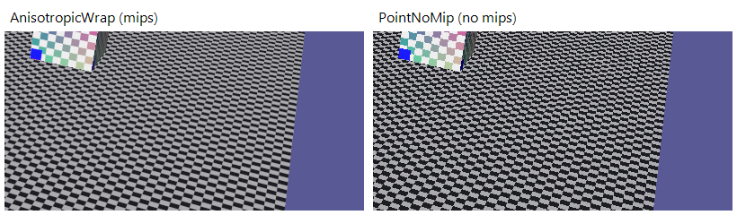
AnisotropicWrap(밉 10레벨), 오른쪽은 PointNoMip(레벨 0 만). 오른쪽의 모아레가 밉이 없을 때의 앨리어싱입니다. F6 으로 실행 중에 바꿔 볼 수 있습니다. (images/2026-09-23-phase5-mip-compare.png)라벨과 변환 — DirectXTex 의 함정
_SRGB 는 변환이 아니라 라벨입니다DirectX::Convert 는 대상 포맷이 _SRGB 면 입력을 선형 값으로 보고 sRGB 로 인코딩합니다(TEX_FILTER_SRGB_OUT 이 암시됩니다). R8G8B8A8_UNORM 을 R8G8B8A8_UNORM_SRGB 로 "변환"하면 이미 인코딩된 128 이 한 번 더 인코딩되어 188 이 됩니다. 반대로 입력이 _SRGB 포맷이면 Convert 는 디코딩합니다. 그래서 FinishImage 는 ② 단계에서 라벨을 먼저 떼고, 색공간이 없는 UNORM 끼리만 변환하고, 라벨은 ④ 단계에서 desc.format 에만 붙입니다. 바이트는 처음부터 끝까지 파일에 든 값 그대로입니다.
썸네일
LoadThumbnail 은 콘텐츠 브라우저의 타일용입니다(16장). 블록 압축 DDS(BC1~7)는 Resize 가 다루지 못하므로 먼저 Decompress 하고, 밉 0 만 골라 긴 변이 maxSize 를 넘으면 비율을 유지해 Resize 로 줄인 뒤 FinishImage(…, srgb = false, generateMips = false, …) 를 거칩니다. UNORM 라벨인 이유는 12.4절에 있습니다. App/ContentBrowser.cpp 는 한 변 128 픽셀로 요청하고, 디코딩이 프레임을 끊지 않도록 프레임당 한 장씩만 만듭니다. 폴더 하나에 수십 장이 있을 수 있으므로 이 경로는 실패할 때만 로그를 남깁니다.
12.8 TextureDesc 와 TextureSubresource 로 Device 에 올리기
// RHI/ResourceDesc.h
enum class TextureDimension : uint8_t { Texture2D, TextureCube }; // 큐브 = 면 6장 (2026-10-08)
struct TextureDesc
{
TextureDimension dimension = TextureDimension::Texture2D;
uint32_t width = 0, height = 0;
Format format = Format::Unknown;
uint32_t mipLevels = 1;
uint8_t bindFlags = 0; // TextureBind_RenderTarget | DepthStencil | ShaderResource
uint32_t sampleCount = 1;
const char* debugName = nullptr;
};
constexpr uint32_t GetArraySize(const TextureDesc& desc); // 큐브 6, 그 밖 1
struct TextureSubresource { const void* data = nullptr; uint32_t rowPitch = 0; };
// 서브리소스(면 × 밉)마다 하나. 순서 = D3D 서브리소스 인덱스 mip + face × mipLevels
// RHI/Device.h
virtual TextureHandle CreateTexture(const TextureDesc& desc, std::span<const TextureSubresource> subresources = {}) = 0;생성과 초기 데이터 업로드가 한 호출입니다. 엔진의 텍스처는 만든 뒤 내용이 바뀌지 않고 스트리밍도 없으므로 별도의 업로드 함수를 두지 않았습니다. subresources 가 비어 있으면 빈 텍스처(렌더 타깃, 깊이 버퍼)가 됩니다. 호출 쪽은 m_device->CreateTexture(image.desc, image.subresources) 처럼 std::vector 를 그대로 넘기고, 두 백엔드 모두 초기 데이터의 개수가 GetArraySize(desc) × mipLevels 보다 적으면 거부합니다. 모자란 밉에는 쓰레기 값이 남아 먼 거리에서 이상한 색이 나오기 때문입니다. 배열의 순서는 D3D 의 서브리소스 인덱스(mip + face × mipLevels)와 같아서, 면 0 의 밉 전부, 면 1 의 밉 전부 순입니다. 2D 텍스처는 면이 하나뿐이므로 "밉마다 하나"와 같은 말입니다.
D3D11(D3D11Device::CreateTexture)은 배열을 D3D11_SUBRESOURCE_DATA[] 로 옮겨(pSysMem = data, SysMemPitch = rowPitch) CreateTexture2D 의 초기 데이터로 넘깁니다. 큐브는 ArraySize = 6 에 MiscFlags = D3D11_RESOURCE_MISC_TEXTURECUBE 를 더합니다. 이 플래그가 있어야 큐브 SRV 를 만들 수 있습니다. 드라이버가 복사와 동기화를 모두 처리하므로 호출이 돌아오면 텍스처는 쓸 수 있는 상태입니다. SRV 는 처음 바인딩될 때 D3D11Texture::GetSRV 가 만들며, TYPELESS 가 아니면 뷰 기술 없이(nullptr) 만들어 리소스 포맷과 모든 밉을 그대로 봅니다. 큐브만은 예외로 D3D11_SRV_DIMENSION_TEXTURECUBE 를 명시합니다. 기술 없이 만들면 TEXTURE2DARRAY 뷰가 되어 HLSL 의 TextureCube 와 맞지 않습니다.
D3D12(D3D12Device::CreateTexture)에서는 같은 일을 직접 해야 합니다. 텍스처를 COPY_DEST 상태로 만들고, GetCopyableFootprints 로 서브리소스(면 × 밉)마다 업로드 버퍼 안의 위치와 행 간격을 얻고, 업로드 힙 버퍼를 만들어 Map 한 뒤 행 단위로 복사합니다. 업로드 버퍼의 행 간격은 256바이트로 정렬되어 원본의 rowPitch 와 다르기 때문에 통째로 복사할 수 없습니다. 그 뒤 ExecuteUploadSync 가 전용 커맨드 리스트에 서브리소스마다 CopyTextureRegion 과 COPY_DEST → 셰이더 리소스 상태 배리어를 기록해 실행하고 WaitForGpu 로 끝나기를 기다립니다. 로드 시점에만 쓰는 경로여서 동기 방식으로 두었습니다. 초기 데이터가 없는 텍스처의 초기 상태는 깊이 전용이면 DEPTH_WRITE, 그 밖(그림자 맵, 씬 뷰 색 텍스처)은 COMMON 이고 Renderer 의 첫 배리어가 여기서 출발합니다(8장). D3D12 에는 "큐브 리소스"가 따로 없습니다. 큐브는 DepthOrArraySize = 6 인 2D 배열이고, 큐브라는 해석은 SRV 의 D3D12_SRV_DIMENSION_TEXTURECUBE 가 붙입니다.
12.9 샘플러
샘플러는 텍스처를 읽는 방법입니다. 텍셀 사이를 어떻게 보간할지(필터), 0..1 밖의 UV 를 어떻게 처리할지(주소 모드), 어느 밉 범위를 쓸지를 정합니다. SamplerDesc(RHI/ResourceDesc.h)는 D3D 의 샘플러 기술을 API 중립 열거로 옮긴 것이고, 필터는 D3D 의 축소·확대·밉 조합형 열거를 그대로 노출하지 않고 네 가지로 좁혔습니다.
| SamplerFilter | D3D11 / D3D12 필터 | 뜻 |
|---|---|---|
| Point | MIN_MAG_MIP_POINT | 최근접. 밉 선택도 최근접 |
| Linear | MIN_MAG_MIP_LINEAR | 3선형. 텍셀 4개를 보간하고 밉 두 장 사이도 보간 |
| Anisotropic | ANISOTROPIC | 비등방. maxAnisotropy 만큼 표본을 더 뽑음 |
| Comparison | COMPARISON_MIN_MAG_LINEAR_MIP_POINT | 그림자용 비교 샘플러. compareFunc 사용 (11장) |
비등방 필터링이 필요한 곳은 비스듬히 보는 면입니다. 바닥을 낮은 각도로 보면 화면 픽셀 하나가 텍스처에서 덮는 영역이 정사각형이 아니라 길쭉한 사다리꼴이 됩니다. 3선형 필터는 그 긴 쪽에 맞춰 밉 레벨을 고르므로 짧은 쪽 방향으로는 필요 이상으로 흐려집니다. 비등방 필터는 긴 축을 따라 표본을 여러 개 뽑아 평균 내므로 먼 바닥의 무늬가 선명하게 남습니다. 12.7절 그림의 왼쪽이 16배 비등방입니다.
Renderer 는 초기화 때 CreateSamplers 에서 프리셋 다섯 개를 만들어 m_samplers 에 둡니다. 배열 순서는 SamplerPreset 열거(Scene/Material.h)의 순서와 같아야 합니다.
| SamplerPreset | 필터 | 주소 | maxLod | 용도 |
|---|---|---|---|---|
| LinearWrap | 3선형 | Wrap | 1000 | 재질 기본값 |
| LinearClamp | 3선형 | Clamp | 1000 | 가장자리가 반대편과 섞이면 안 되는 텍스처 |
| AnisotropicWrap | 비등방 16× | Wrap | 1000 | 바닥처럼 비스듬히 보는 면 |
| PointWrap | 최근접 | Wrap | 1000 | 픽셀 아트. 밉은 씀 |
| PointNoMip | 최근접 | Wrap | 0 | "밉이 없으면 어떻게 되나"의 대조군 |
maxLod = 0 이 밉맵을 끄는 방법입니다. 샘플러는 계산한 LOD 를 [minLod, maxLod] 로 자르므로 0 이면 레벨 0 만 샘플합니다. 텍스처를 밉 없이 다시 만들 필요가 없어서 실행 중에 바꿔 가며 비교할 수 있습니다. RenderSettings::samplerOverride 가 −1 이 아니면 모든 재질의 샘플러를 그 프리셋으로 덮어씁니다(F6 또는 Render Settings 의 "Sampler override").
여섯 번째 샘플러는 CreateShadowResources 가 만드는 비교 샘플러입니다(Comparison, Border, 테두리 색 1, LessEqual). 프레임 셋의 s4 에 들어가며 동작은 11장이 설명합니다. 두 백엔드 모두 비교 필터가 아닌 샘플러의 ComparisonFunc 는 NEVER 로 채웁니다. D3D11 은 ID3D11SamplerState 객체를, D3D12 는 샘플러 디스크립터를 스테이징 힙에 하나 만듭니다(7장).
12.10 UV 관례와 프리미티브의 UV
Direct3D 의 텍스처 공간은 (0,0) 이 왼쪽 위이고 u 는 오른쪽, v 는 아래로 증가합니다. 이미지 파일의 첫 행이 v = 0 입니다. OpenGL 교재의 그림(원점이 왼쪽 아래)과 반대이므로 다른 자료의 수식을 옮길 때 v 를 뒤집어야 하는지 확인해야 합니다. 그림자 맵 좌표를 만들 때 y 부호를 뒤집는 것도 같은 이유입니다(11장). 좌표계 전체의 규약은 부록 B에 있습니다.
VERTEX(Graphics/VertexTypes.h)의 u, v 는 입력 레이아웃에서 TexCoord, R32G32_FLOAT 속성입니다. 정점 셰이더는 vsOutput.uv = vsInput.uv * uvScale 로 재질의 타일링 배율을 곱해 넘깁니다. uvScale 을 정점 셰이더가 읽기 때문에 재질 상수버퍼 b3 은 재질 레이아웃에 VS | PS 로 선언되어 있습니다.
| 프리미티브 Graphics/Mesh.cpp | u | v | 비고 |
|---|---|---|---|
CreateSphere | 경도 θ / 2π | 위도 φ / π | 극점은 u = 0.5 |
CreateCube | 면마다 (0,0)–(1,1) | 면의 첫 정점이 (0,1), 둘째가 (0,0) 이 되도록 시계 방향으로 배치 | |
CreatePlane | x 방향(왼쪽에서 오른쪽) | z 방향(뒤에서 앞) | (0,0) 이 뒤-왼쪽. 큰 바닥은 재질의 uvScale 로 타일링 |
CreateCylinder 옆면 | 둘레 0..1 | 위 0, 아래 1 | |
CreateCylinder 뚜껑 | 위에서 본 평면 투영 (0.5 + 0.5·cos, 0.5 − 0.5·sin) | 중심이 (0.5, 0.5) | |
방향이 맞는지는 Assets/Textures/uv_checker.png 로 확인합니다. 모서리에 색 표지가 있어서 큐브 면에서 빨강(0,0)이 왼쪽 위, 초록(u 증가)이 오른쪽 위, 파랑(v 증가)이 왼쪽 아래에 보이면 UV 와 이미지 행 순서가 맞는 것입니다. 디버그 뷰 5(UV)는 frac(uv) 를 빨강·초록으로 출력합니다(14장).
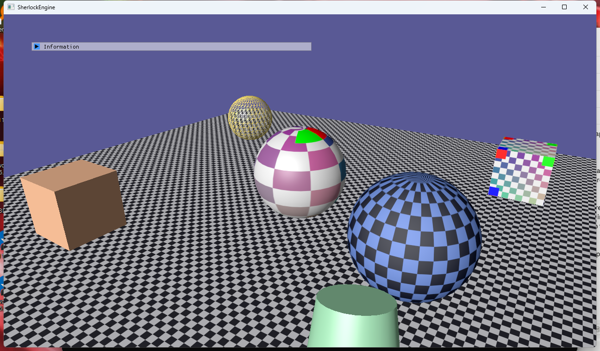
12.11 재질 셋의 텍스처·샘플러 슬롯
텍스처와 샘플러는 재질 셋(재질마다 하나인 ResourceSet)에 들어가 셰이더에 바인딩됩니다. 셋과 레이아웃의 구조는 7장이 다루고, 여기서는 슬롯 배정만 적습니다.
// Shaders/Common.hlsli
Texture2D albedoTexture : register(t0);
Texture2D normalTexture : register(t1);
SamplerState albedoSampler : register(s0);
Texture2D shadowMap : register(t8);
SamplerComparisonState shadowSampler : register(s4);| 셋 | 레지스터 구간 | 지금 쓰는 슬롯 |
|---|---|---|
| 재질 셋 m_materialLayout | t0..t7, s0..s3 | b3 재질 상수(VS|PS), t0 알베도, t1 노멀, s0 샘플러 |
| 프레임 셋 m_frameLayout | t8..t15, s4..s7 | b0, b2, t8 그림자 맵, s4 비교 샘플러 |
구간을 나눈 이유는 Graphics/ShaderConstants.h 에 적혀 있습니다. D3D11 의 t#·s# 는 스테이지마다 번호 공간이 하나뿐이라 셋끼리 겹치면 서로 덮어쓰고, D3D12 에서는 이 구간이 그대로 디스크립터 테이블의 범위가 됩니다. 재질 샘플러 s0 하나를 알베도와 노멀 맵이 함께 씁니다(normalTexture.Sample(albedoSampler, input.uv)). 노멀 맵이 없는 재질에도 t1 에는 평평한 노멀 텍스처가 꽂혀 있으므로 셰이더에 분기가 없습니다.
12.12 Renderer 의 텍스처 캐시
재질은 텍스처를 핸들이 아니라 이름으로 가리킵니다. Scene 은 Device 를 모르므로 파일을 열어 GPU 텍스처를 만들 수 없고, 이름을 TextureHandle 로 바꾸는 일은 Renderer::GetOrLoadTexture(name, srgb, scene) 가 맡습니다. 캐시는 m_textureCache 이고 키는 이름 + "|srgb" 또는 이름 + "|linear" 입니다. 같은 이미지를 한 재질은 색으로, 다른 재질은 데이터로 쓰면 라벨이 다른 텍스처 두 개가 만들어집니다.
| 순서 | 이름 | 만드는 방법 |
|---|---|---|
| 1 | 빈 문자열 | 캐시를 거치지 않고 m_whiteTexture 를 그대로 돌려줍니다 |
| 2 | builtin:white | CreateSolid 1×1 (255,255,255,255), 선형 |
| 3 | builtin:flatnormal | CreateSolid 1×1 (128,128,255,255), 선형. 탄젠트 공간 (0,0,1) |
| 4 | builtin:gray128 | CreateSolid 4×4 (128,128,128,255). 감마 검증용 |
| 5 | builtin:checker | CreateChecker 512×512, 16칸, 밉 생성 |
| 6 | 씬에 같은 이름의 이미지가 있음 | scene->FindImage(name) 의 인코딩된 바이트를 LoadFromMemory 로 디코딩. 모델에 딸린 이미지입니다(13장) |
| 7 | asset:<경로> | Paths::GetAssetPath(경로) 의 파일. Assets\ 기준 상대 경로입니다 |
| 8 | 그 밖 | Paths::GetAssetPath("Textures\\" + 이름) 의 파일 |
모델의 이미지를 로더가 미리 디코딩하지 않고 씬이 바이트로 들고 있는 이유는 색공간입니다. 디코딩할 때 밉을 선형에서 평균 낼지, 라벨을 무엇으로 붙일지는 그 이미지를 쓰는 재질이 알려 주어야 하므로, 재질과 이미지가 만나는 이 함수에서 디코딩합니다. Core/AssetManager.h 가 텍스처 파일을 아직 맡지 않은 이유도 같습니다.
로드에 실패하면 경고 로그를 남기고 흰색 텍스처의 핸들을 그 키로 캐시에 넣습니다. 화면이 깨지지 않고, 같은 실패를 매 프레임 되풀이하지도 않습니다. 기본 텍스처 두 개는 CreateBuiltinTextures 가 초기화 때 만들어 m_whiteTexture("텍스처 없음"의 알베도)와 m_flatNormalTexture(노멀 맵 없음)에 보관합니다. 캐시를 언제 비우는지는 14장에서 다룹니다. 스카이박스 큐브맵은 같은 이름 규칙을 쓰지만 캐시는 따로입니다(m_cubeCache, 12.14절).
12.13 함정과 해결
| 증상 | 원인 | 해결 |
|---|---|---|
| 회색 128 이 화면에서 188 로 읽힘 | DirectX::Convert 로 UNORM → UNORM_SRGB 변환을 하면 값이 인코딩됩니다 | 변환하지 않고 라벨만 붙입니다. _SRGB 입력은 OverrideFormat 으로 라벨을 먼저 뗍니다(12.7절) |
| ImGui 패널이 희게 뜸 | sRGB 뷰에 그리면 이미 인코딩된 색이 한 번 더 인코딩됩니다 | UI 패스는 백버퍼의 UNORM 뷰(12.4절) |
스왑체인 생성이 DXGI_ERROR_INVALID_CALL | flip 모델은 _SRGB 백버퍼 포맷을 받지 않습니다 | UNORM 백버퍼 + sRGB RTV. 이 예외는 백버퍼에만 적용됩니다 |
| 씬 뷰 텍스처의 sRGB RTV 생성 실패 | 타입이 정해진 UNORM 텍스처에는 다른 포맷의 뷰를 만들 수 없습니다 | 렌더 타깃 겸 셰이더 리소스인 UNORM 색 텍스처는 TYPELESS 로 만들고 뷰마다 포맷을 명시합니다(12.2절) |
리사이즈에서 ResizeBuffers 실패 | ALLOW_TEARING 을 생성에만 넣었거나, 백버퍼 참조가 남아 있습니다 | m_swapChainFlags 를 세 곳에 같은 값으로. 백버퍼·깊이 텍스처를 먼저 파괴합니다(12.6절) |
| 멀리 갈수록 바닥이 어두워짐 | sRGB 텍스처의 밉을 인코딩된 값끼리 평균 냈습니다 | TEX_FILTER_SRGB 로 선형에서 평균 냅니다 |
| 초기화가 "VS 가 b3 을 쓰지만 선언되지 않음"으로 실패 | uvScale 을 정점 셰이더가 읽는데 재질 레이아웃의 b3 이 PS 전용이었습니다 | b3 을 VS | PS 로 선언. 리플렉션 대조가 잡습니다(10장) |
| 흰색 1×1 텍스처가 두 개 생김 | 빈 이름의 키("|srgb")와 builtin:white|linear 가 다릅니다 | 빈 이름은 캐시를 거치지 않고 m_whiteTexture 를 돌려줍니다 |
| 씬을 바꾼 뒤 기본 재질이 깨짐 | 로드에 실패한 항목이 흰색 핸들을 공유하는데, 캐시를 비우면서 그것을 파괴했습니다 | 내장 핸들과 같은 항목은 파괴하지 않고 항목만 지웁니다(14장) |
12.14 큐브맵 · 스카이박스 · IBL 맵
큐브맵은 정육면체의 여섯 면에 붙인 정사각형 이미지 6장을 하나의 텍스처로 묶고, 좌표 대신 방향 벡터로 샘플하는 텍스처입니다. 하드웨어가 방향의 가장 큰 성분으로 면을 고르고 나머지 두 성분으로 면 안의 위치를 정합니다. 스카이박스는 그 큐브맵을 카메라에서 각 픽셀을 지나는 방향으로 읽어 "무한히 먼 배경"을 그리는 것입니다. 이 엔진에는 2026-10-08 에 들어갔고(20.14), 기능 하나가 다섯 층에 나뉘어 있습니다. 큐브맵이라는 이름의 클래스는 없습니다. 이유는 아래 "왜 클래스가 아닌가"와 21.6의 질문에 있습니다.
| 층 | 무엇이 생겼나 | 파일 |
|---|---|---|
| RHI | TextureDimension::TextureCube(면 6장, 정사각형 ShaderResource 전용), GetArraySize, CommandList::Draw(인덱스 없는 드로우), 정점 속성 0개 PSO 허용 | RHI/ResourceDesc.h, RHI/CommandList.h, RHI/D3D11/*, RHI/D3D12/* |
| 로더 | TextureLoader::LoadCubeFromFile(큐브 DDS 또는 면 이미지 6장 폴더), TextureLoader::CreateCube(방향 → 색 함수로 절차적 큐브). 부동소수점 DDS 는 R16G16B16A16_FLOAT(HDR)로 읽음 | Graphics/TextureLoader.* |
| 씬 | Scene::environment(SceneEnvironment) — 스카이박스·확산 조도·반사 프리필터·BRDF LUT 의 이름과 IBL 세기·노출·톤매핑. 씬 파일의 "environment" 객체(버전 4) | Scene/Scene.h, Scene/SceneSerializer.cpp |
| Renderer | 이름 → 큐브 캐시(GetOrLoadCubemap, m_cubeCache), 이름 → 바인딩(ResolveEnvironment), 프레임 셋 t9~t12 에 꽂기(UpdateFrameSet), 스카이박스 PSO(m_skyDesc, GetSkyPipeline)와 드로우(DrawSkybox) | Graphics/Renderer.* |
| 셰이더 | VS_Sky(전체 화면 삼각형과 투영의 역), PS_Sky(큐브 샘플 + 노출·톤매핑), Common.hlsli 의 environmentMap t9 · environmentSampler s5 · IBL 의 t10~t12, BasicPixelShader.hlsl 의 EnvironmentLighting(11.6절) | Shaders/Skybox*.hlsl, Shaders/Common.hlsli |
| 에디터·빌드 | Lights 창의 환경 칸(스카이박스·IBL 맵 이름 입력과 텍스처 드롭, IBL 세기, 노출, 톤매핑. DebugUI::DrawEnvironmentPanel), Build Game 이 스카이박스 파일·폴더를 복사, Paths::GetAssetPath 가 폴더도 찾음 | App/DebugUI.cpp, App/GameBuilder.cpp, Core/Paths.cpp |
왜 클래스가 아닌가
"큐브맵 클래스가 파일을 읽고 GPU 텍스처를 들고 있고, Scene 이 그것을 불러온다"는 구조는 13.1절의 경계를 깹니다. Scene 은 CPU 데이터만 갖고 Device 를 모르며, 재질도 텍스처를 핸들이 아니라 이름으로 가리킵니다(12.12절). 큐브맵은 새로운 종류의 객체가 아니라 면이 6장인 텍스처이므로, 텍스처를 다루는 기존 길을 그대로 따릅니다. RHI 가 큐브를 만들 줄 알고, 씬은 이름만 갖고, Renderer 가 이름을 GPU 자원으로 바꿔 패스에서 씁니다. 스카이박스를 GameObject 나 컴포넌트로 두지 않은 이유는 씬에 하나뿐이고 트랜스폼이 없으며, 이후 반사·환경광의 입력이 될 "환경" 값이기 때문입니다. 그래서 ambientColor 옆에 있습니다.
면 순서와 텍셀의 방향
면 순서는 D3D 관례(DDS 파일의 순서와 같음)인 +X, −X, +Y, −Y, +Z, −Z 입니다. 면 위의 텍셀 좌표를 s(오른쪽으로 증가)·t(아래로 증가) ∈ [−1, 1] 로 두면, D3D 의 큐브 샘플 규칙("주축 ma, 가로 sc, 세로 tc")을 거꾸로 풀어 텍셀이 가리키는 방향을 얻습니다. TextureLoader.cpp 의 익명 함수 CubeTexelDirection 이 이 표를 그대로 옮긴 것이고, 절차적 큐브(CreateCube)는 텍셀 중심마다 이 방향을 정규화해 색 함수에 넘깁니다.
| 면 | 텍셀 (s, t) 의 방향 | 폴더에서 찾는 파일 이름 | 검증 큐브의 색 |
|---|---|---|---|
| 0 +X | ( 1, −t, −s) | px · posx · right | 빨강 |
| 1 −X | (−1, −t, s) | nx · negx · left | 청록 |
| 2 +Y | ( s, 1, t) | py · posy · top | 초록 |
| 3 −Y | ( s, −1, −t) | ny · negy · bottom | 자홍 |
| 4 +Z | ( s, −t, 1) | pz · posz · front | 파랑 |
| 5 −Z | (−s, −t, −1) | nz · negz · back | 노랑 |
큐브맵의 규칙은 텍스처 좌표의 규칙일 뿐 월드의 손잡이와는 무관하지만, 이 엔진은 왼손 좌표계에 +Y 위, +Z 앞이라(부록 B) 월드 방향을 그대로 넣으면 됩니다. +Z 를 바라볼 때 오른쪽이 +X 이므로 +Z 면의 s 가 화면 오른쪽으로 증가하고, 거울상이 생기지 않습니다. 흔히 내려받는 right/left/top/bottom/front/back 6장(LearnOpenGL 등)도 front = +Z 이므로 바꾸지 않고 씁니다.
큐브를 읽는 세 경로
- 큐브 DDS 파일.
LoadScratchFromFile이 DirectXTex 로 읽으면 메타데이터의IsCubemap()이 참이고 배열 크기가 6입니다. 큐브 플래그가 없는 DDS 는FinishImage가 "큐브맵이 아님"으로 거부합니다. 블록 압축(BC1~7) DDS 는DirectX::Convert가 다루지 못하므로FinishImage가 먼저DirectX::Decompress로R8G8B8A8_UNORM을 만듭니다(2D 텍스처에도 적용되는 개선입니다). - 면 이미지 6장이 든 폴더. 위 표의 이름(확장자
.png·.jpg·.jpeg·.bmp)을 찾아 각각을 2D 로FinishImage에 한 번 통과시켜 바이트 형식을 맞춘 뒤,ScratchImage::InitializeCube로 만든 큐브에 행 단위로 복사합니다. 여섯 장은 같은 크기의 정사각형이어야 합니다. sRGB 라벨과 밉 생성은 마지막에 큐브 전체에 한 번 합니다(GenerateMipMaps는 큐브를 면별로 처리함). - 내장.
builtin:sky는 방향의 높이(y)만 보는 하늘 그라데이션(128², 밉 생성),builtin:skyfaces는 면마다 색이 다르고 4×4 격자선이 있는 방향 검증용 큐브(64²),builtin:black은 1×1 검은 큐브입니다.
FromScratchImage 는 서브리소스를 면 0 의 밉 전부, 면 1 의 밉 전부 순으로 펼쳐 TextureImage::subresources 에 담습니다. D3D 의 서브리소스 인덱스(mip + face × mipLevels) 순서이므로 두 백엔드가 받은 배열을 그대로 씁니다(12.8절). 반대로 2D 경로(LoadFromFile)에 큐브 DDS 를 주면 첫 면만 써서 예전처럼 2D 텍스처가 됩니다. 8비트 큐브맵은 "색" 이므로 Renderer 는 sRGB 로 읽습니다. 부동소수점 DDS 는 아래 "HDR" 대로 라벨 없이 half float 가 됩니다.
Renderer: 이름에서 t9 까지
Renderer::GetOrLoadCubemap(name) 은 12.12절의 텍스처 캐시와 같은 경로 규칙(asset: 이면 Assets\ 기준, 아니면 Textures\ 기준)을 쓰지만 캐시는 m_cubeCache 로 따로 둡니다. 실패했을 때의 대체물이 다르기 때문입니다. 2D 캐시는 흰색 2D 텍스처로 대체하지만, t9 는 HLSL 에서 TextureCube 이므로 2D SRV 를 꽂으면 차원이 맞지 않습니다. 그래서 큐브 캐시는 경고를 남기고 검은 1×1 큐브(m_blackCube)를 그 이름으로 캐시에 넣습니다.
환경 텍스처는 재질 셋이 아니라 프레임 셋의 t9~t12·s5 에 꽂힙니다(7.7절). 씬마다 하나이고 모든 재질이 같은 큐브를 읽기 때문입니다. Renderer::Render 는 맨 앞에서 ResolveEnvironment(scene.environment) 로 이름을 핸들과 셰이더 파라미터(EnvironmentBinding)로 바꾸고, 패스에 들어가기 전에 UpdateFrameSet() 을 부릅니다. ResourceSet 은 슬롯 하나만 바꾸는 기능이 없으므로, 꽂을 텍스처 네 개가 직전(m_boundEnvironment)과 다를 때만 셋을 파괴하고 새로 만듭니다. 없는 것도 슬롯을 비우지 않고 검은 큐브(LUT 는 흰 2D)를 꽂습니다. D3D12 디스크립터 테이블에는 유효한 뷰가 있어야 하고, 셰이더는 environmentParams·outputParams 의 플래그로 쓸지 정합니다. 씬을 바꿀 때 InvalidateScene(…, true) 는 파일에서 읽은 큐브를 버리고 m_boundEnvironment 를 비워, 다음 프레임에 셋이 반드시 다시 만들어지게 합니다(14.11절).
IBL 맵: 무엇이 t10~t12 에 꽂히나
ResolveEnvironment 는 이름이 비었거나 로드에 실패한 맵을 다른 것으로 대신합니다. 실패한 이름은 GetOrLoadCubemap 이 검은 큐브를 돌려주므로 "검은 큐브가 아님" 을 로드 성공으로 봅니다.
| 슬롯 | 1순위 | 대체 | 셰이더 파라미터 |
|---|---|---|---|
| t9 스카이박스 | environment.skybox | 검은 큐브(그리지는 않음 — 스카이박스 드로우는 이름이 있을 때만) | — |
| t11 반사 프리필터 | environment.specular | 스카이박스(밉 체인으로 근사) → 검은 큐브 | environmentParams.y = 그 큐브의 밉 수 |
| t10 확산 조도 | environment.irradiance | t11 에 꽂힌 큐브의 끝에서 두 번째 밉(면당 2×2) → 검은 큐브 | environmentParams.z = 읽을 밉(진짜 조도 맵이면 0) |
| t12 BRDF LUT | environment.brdfLut(2D 텍스처 캐시, 선형) | 흰 2D, 셰이더는 EnvBRDFApprox | outputParams.z |
셋 중 무엇이라도 있으면 environmentParams.w = 1(환경 있음)이고 IBL 세기 environmentParams.x 가 곱해집니다. 아무것도 없으면 셰이더가 ambientColor 로 대신합니다. 스카이박스 근사는 박스 필터로 만든 밉이라 GGX 로 거른 프리필터보다 중간 거칠기에서 반사가 선명하고(그림 12-14c), 조도도 면당 2×2 의 거친 평균이라 방향성이 약합니다. 그래도 내장 하늘만 둔 데모 씬의 금속에 하늘이 비치게 해 줍니다. 데모·Sponza·새 씬은 이 경로라 IBL 세기를 0.35~0.5 로 낮춰 예전 주변광과 비슷한 밝기를 맞췄습니다.
HDR — half float 텍스처와 노출·톤매핑
IBL 세트의 큐브는 보통 부동소수점입니다(Assets\Cubemap 의 *HDR.dds 는 R32G32B32A32_FLOAT, 태양 픽셀이 300 을 넘음). TextureLoader 의 FinishImage 는 원본이 부동소수점이거나 BC6H 면 R16G16B16A16_FLOAT(이번에 Format 에 추가)로 바꿉니다. 크기는 float32 의 절반이고 최대 65504 까지 담습니다. 부동소수점 데이터는 이미 선형이라 sRGB 라벨을 붙이지 않고 밉도 선형으로 평균 냅니다. 면 이미지 폴더는 8비트만 받습니다.
값이 1 을 넘으므로 출력 단계가 필요합니다. 아직 HDR 렌더 타깃이 없어서, 메인 PS 와 스카이박스 PS 가 마지막에 ApplyExposureToneMap 을 부릅니다. environment.exposure 를 곱하고, toneMapping 이 켜져 있으면 ACES 근사(Narkowicz 2016)로 [0, 1] 로 누릅니다. 기본값은 노출 1·톤매핑 끔이라 환경을 정하지 않은 씬의 색은 예전과 같습니다. unlit 재질은 감마 검증용이라 이 단계를 거치지 않습니다.
샘플 세트와 CubemapTest 프로젝트
SherlockEngine/Assets/Cubemap 의 일곱 파일은 IBLBaker 형식의 세트입니다. Env(스카이박스, 512², 밉 10), Specular(반사 프리필터, 512², 밉 10, 밉 0 이 거울), Diffuse(확산 조도, 128²), Brdf(256² 2D LUT)이고 각각 HDR(float32)과 MDR(8비트 BGRA)이 있습니다. LUT 의 축은 데이터로 확인했습니다. 오른쪽 아래 (N·V = 1, 거칠기 0) 가 (1, 0), 왼쪽 아래(N·V → 0, 거칠기 0)가 (0, 1) 이므로 u = N·V, v = 1 − roughness 입니다. 이 세트의 Diffuse·Specular 는 Env 보다 약 2배 밝게 구워져 있어서(같은 면의 평균이 Env 1.5 · Specular 3.0, 아래 면 0.44 · Diffuse 0.97), 실험 프로젝트의 씬은 IBL 세기 0.5 로 하늘과 같은 밝기 기준을 맞춥니다.
실험 프로젝트 Projects/CubemapTest 는 에디터의 --new-project=CubemapTest 로 만들었고, 시작 씬 Assets/Scenes/Main.json 이 HDR 세트 네 장(asset:Cubemap\…, 엔진 Assets\ 에서 찾음)·IBL 세기 0.5·톤매핑 켬을 씁니다. 구 12개는 금속(금색)과 유전체(빨강) 두 줄에 거칠기 0, 0.2, …, 1 이고, 앞에 DamagedHelmet 이 있습니다. 방향광 하나는 환경맵 속 태양(−X 쪽 지평선, 방위 약 −62°, 붉은 석양)과 같은 쪽에서 조금 높여 비춥니다.
기본 환경(2026-10-08 저녁). 이 세트는 이제 CubemapTest 만의 것이 아닙니다. 엔진 내장 씬(데모·헬멧·Sponza·새 씬, 그리고 새 프로젝트의 Main.json)은 EditorApp.cpp 의 ApplyDefaultEnvironment 로, 저장소의 모든 프로젝트 씬 파일(Sample 2개·QuaternionLookTest 3개·CubemapTest 1개)은 파일의 "environment" 로 같은 값을 씁니다. HDR 네 장(asset:Cubemap\…), IBL 세기 0.5, 노출 1, 톤매핑 켬입니다. asset: 이름은 프로젝트 Assets\ 에 없으면 엔진 Assets\ 에서 찾으므로 어느 프로젝트에서나 같은 파일을 가리키고, Build Game 은 이 네 장을 패키지로 복사합니다. 환경이 있으면 ambientColor 는 쓰이지 않습니다(위 표). 흐린 하늘이라 흰 체커 바닥처럼 밝은 재질은 전보다 희게 보입니다. 그 뒤 CubemapTest 의 Main.json 은 에디터에서 Sponza 씬으로 바뀌어 저장됐으므로, 아래 그림 12-14d 의 구·헬멧 배치는 커밋 c97fe3f 의 씬입니다.
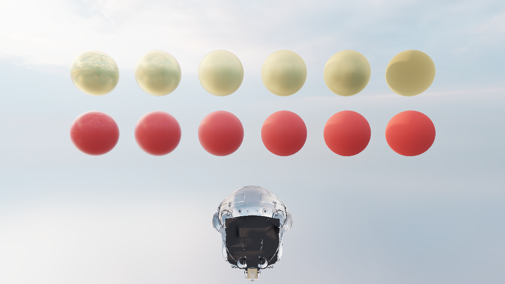
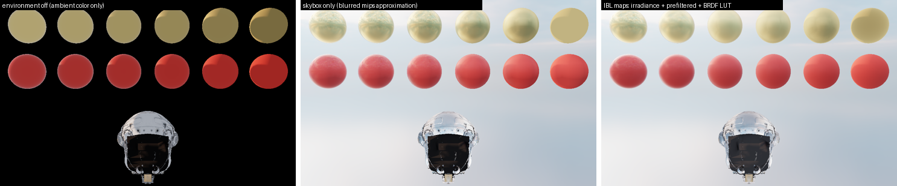
스카이박스 패스: 전체 화면 삼각형 하나
스카이박스는 큐브 메시로 그리지 않습니다. DrawItems 가 불투명 드로우를 다 그린 뒤 DrawSkybox 가 스카이박스 PSO 를 걸고 cmd.Draw(3) 을 부르면, 정점 셰이더가 SV_VertexID 0·1·2 로 화면을 덮는 삼각형을 만듭니다. 정점 버퍼도 입력 레이아웃도 없습니다.
// Shaders/SkyboxVertexShader.hlsl
SkyVSOutput VS_Sky(uint vertexId : SV_VertexID)
{
const float2 uv = float2((vertexId << 1) & 2, vertexId & 2); // (0,0) (2,0) (0,2)
const float2 ndc = float2(uv.x * 2 - 1, 1 - uv.y * 2); // (−1,1) (3,1) (−1,−3)
output.position = float4(ndc, 1, 1); // z = w → 깊이 1.0
const float3 viewDirection = float3(ndc.x / proj._11, ndc.y / proj._22, 1); // 투영의 역
output.direction = mul((float3x3)view, viewDirection); // 뷰 → 월드 (회전만)
}
// Shaders/SkyboxPixelShader.hlsl
return float4(environmentMap.Sample(environmentSampler, input.direction).rgb, 1);- 투영의 역. 원근 투영(
XMMatrixPerspectiveFovLH)은 xndc = xview · P11 / zview, yndc = yview · P22 / zview 입니다. 그러니 zview = 1 인 뷰 공간 점은 (xndc / P11, yndc / P22, 1) 이고, 카메라에서 그 점을 향하는 것이 그 픽셀의 시선 방향입니다. 셰이더의proj는 C++ 가 전치해서 올린 것을 column_major 로 읽으므로 논리적으로 P 그 자체입니다(10.9절). - 뷰 → 월드. 뷰 행렬의 3×3 부분 R 은 회전(직교 행렬)이라 역행렬이 전치입니다. 행벡터 규약에서 v · RT 는
mul(R, v)와 같으므로mul((float3x3)view, v)한 줄입니다. 4행의 이동은 쓰지 않습니다. 하늘은 무한히 멀어서 카메라가 움직여도 따라오지 않아야 합니다. - 정점에서 계산해도 되는 이유. 이 변환은 NDC 에 대해 선형이고 세 정점의 w 가 모두 1 이라 래스터라이저의 보간도 화면 공간에서 선형입니다. 픽셀 셰이더는 샘플만 하며, 큐브 샘플은 방향의 길이를 보지 않으므로 정규화도 하지 않습니다.
- 깊이. 위치의 z 를 w 와 같게 두면 NDC 깊이가 정확히 1.0 입니다. PSO 는 깊이 테스트
LessEqual(클리어 값 1.0 과 같아도 통과)에 깊이 쓰기를 끕니다. 불투명 물체가 그려진 픽셀은 깊이가 1 보다 작아 통과하지 못하므로, 하늘은 빈 픽셀에만 남고 가려질 픽셀의 셰이딩도 하지 않습니다. 이것이 불투명 드로우 뒤에 그리는 이유입니다. 앞에 그리면 화면 전체를 칠한 뒤 덮어쓰게 됩니다.
// Graphics/Renderer.cpp — Renderer::Initialize
m_skyDesc = PipelineStateDesc{
.vs = m_skyVs, .ps = m_skyPs,
.bindingLayouts = { m_frameLayout }, .bindingLayoutCount = 1, // 오브젝트·재질 셋 없음
.rasterizer = { .cull = CullMode::None }, // vertexLayout 은 기본값(속성 0개)
.depthStencil = { .depthEnable = true, .depthWrite = false, .depthFunc = CompareFunc::LessEqual },
};GetSkyPipeline 은 메인 PSO 처럼 RTV 포맷(sRGB 출력이면 R8G8B8A8_UNORM_SRGB)과 DSV 포맷을 매 프레임 채워 캐시에서 받습니다. 와이어프레임 설정은 따르지 않습니다. 화면을 덮는 삼각형의 모서리만 보여 의미가 없기 때문입니다. 미리보기 패스도 같은 DrawItems 를 쓰므로 미리보기 카메라의 시점으로 하늘이 그려집니다.
검증
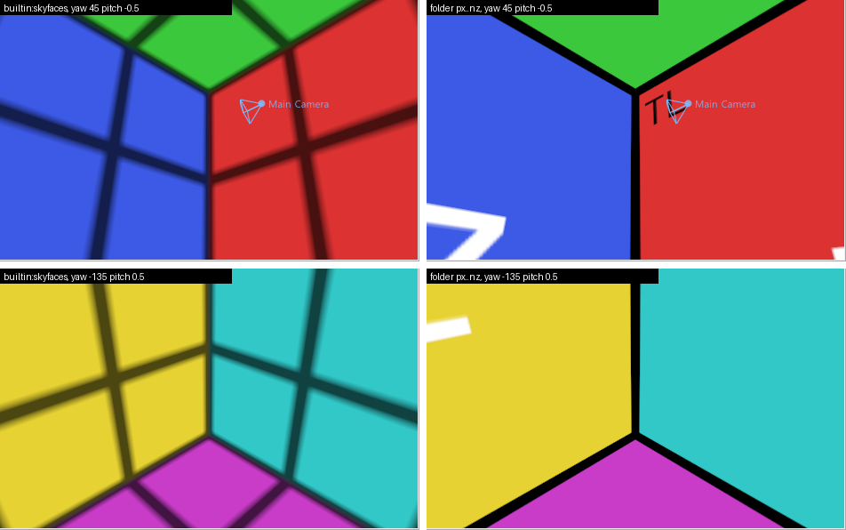
builtin:skyfaces, 오른쪽은 라벨을 쓴 PNG 6장 폴더이고 같은 내용의 큐브 DDS 도 같은 화면을 냈습니다. +X 면 왼쪽 위에 쓴 "TL" 이 (+X, +Y, +Z) 모서리에 거울상 없이 놓여 텍셀 (0,0) 의 방향이 표와 맞습니다.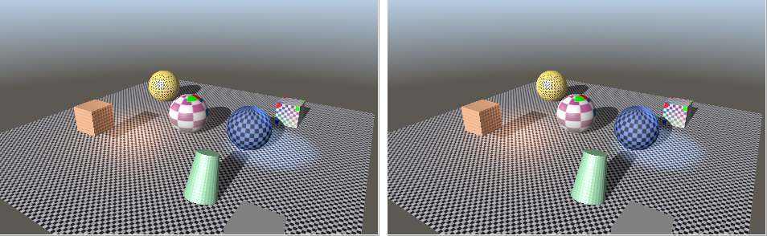
builtin:sky)의 씬 뷰. 왼쪽 D3D11, 오른쪽 D3D12 이며 샘플한 픽셀 값이 같습니다.함정과 해결
| 증상 | 원인 | 해결 |
|---|---|---|
D3D11 에서 큐브 SRV 가 Texture2DArray 로 만들어짐 | CreateShaderResourceView(…, nullptr, …) 는 큐브 플래그가 있어도 배열 뷰를 만듭니다 | 큐브는 D3D11_SRV_DIMENSION_TEXTURECUBE 를 명시(D3D11Texture::GetSRV) |
| 로드 실패한 스카이박스가 차원 오류를 냄 | 2D 캐시처럼 흰색 2D 로 대체하면 TextureCube 슬롯에 2D SRV 가 꽂힙니다 | 큐브 캐시를 따로 두고 검은 1×1 큐브로 대체 |
프로젝트가 열려 있으면 엔진 Assets\ 의 스카이박스 폴더를 못 찾음 | Paths::GetAssetPath 가 파일만 확인해, 폴더는 어느 루트에서도 "없음"이 되어 프로젝트 경로를 돌려줬습니다 | 파일 또는 폴더가 있으면 그 루트를 씀(15.7절) |
| BC 압축 큐브 DDS 가 "포맷 변환 실패" | DirectX::Convert 는 블록 압축 포맷을 받지 않습니다 | FinishImage 가 먼저 Decompress |
| 정점 버퍼 없는 PSO 가 생성되지 않음 | 두 백엔드가 정점 속성 0개를 오류로 거부했습니다 | 0개 허용. D3D11 은 입력 레이아웃을 만들지 않고 nullptr 을 바인딩(6.5절) |
| HDR 하늘의 태양이 하얀 원판으로 뭉갬, 금속 반사가 잘림 | 로더가 부동소수점 DDS 를 8비트로 바꿔 1 을 넘는 값을 잘랐습니다 | 부동소수점·BC6H 원본은 R16G16B16A16_FLOAT 로 읽고, 출력에서 노출·톤매핑 |
| IBL 을 켜자 물체가 하늘보다 밝게 뜸 | 샘플 세트의 Diffuse·Specular 가 Env 의 약 2배로 구워져 있음 | 씬의 IBL 세기를 0.5 로(데이터 측정은 위 "샘플 세트") |
13.씬 데이터 — Mesh·Model·Material·Light·GameObject 계층·Camera
이 장은 "무엇을 그릴 것인가"를 담는 CPU 쪽 데이터를 다룹니다. Scene 이 메시·재질·오브젝트·조명·이미지 바이트를 소유하고, GameObject 가 Transform 과 메시·재질 참조를 묶으며, Camera 가 뷰행렬과 투영행렬을 만듭니다. 이 타입들은 모두 Device 를 모릅니다. GPU 버퍼·텍스처·ResourceSet 은 Renderer 의 캐시가 처음 그릴 때 만들며 그 내용은 14장에 있습니다. 뒤쪽 절반은 카메라 수학과, 카메라에 쿼터니언을 쓰지 않은 이유(Roll·짐벌락·재현 실험)를 정리합니다. 좌표계와 행렬 규약만 빠르게 찾을 때는 부록 B를 봅니다.
Scene/Scene.h·cppScene,MeshSource. 소유, 모델 편입(AddModel), 삭제, 활성 카메라와 블렌드Scene/GameObject.h·cppGameObject. 메시·재질 참조, 재질 슬롯, 부모-자식 링크, 월드 행렬Scene/Transform.h·cppTransform. 로컬 위치·오일러 회전·스케일, pre 행렬, 행렬 분해,EulerFromRotationMatrixScene/Camera.h·cppCamera. 위치 + 회전 행렬, 뷰·투영 행렬,WrapAngle·ClampPitchScene/CameraComponent.h·cppCameraComponent,CameraPose. 씬 안에 놓인 카메라 오브젝트Scene/Material.h,Scene/Light.hMaterial,SamplerPreset,LightData,MAX_LIGHTSGraphics/Mesh.h·cpp,Graphics/VertexTypes.hMesh,Submesh,Bounds, 프리미티브 생성기,ComputeTangents, 정점 구조체VERTEXGraphics/Model.h·cppModel,ModelLoader::LoadGltf(cgltf)Game/Components/FollowTarget.cpp- 월드 좌표로 대상을 따라가는 내장 컴포넌트 (계층 API 사용 예)
Projects/QuaternionLookTest/Scripts/Tests/QuaternionLook.h·cpp- 쿼터니언 누적 Roll 재현 실험 스크립트 (13.13)
13.1 Scene — 무엇을 소유하나
Scene 은 그릴 대상의 CPU 데이터 전부를 소유하는 컨테이너입니다. Renderer::Render 는 const Scene& 와 const Camera& 를 입력으로 받아 그리기만 하고, 씬을 고치지 않습니다.
| 멤버 | 타입 | 내용 |
|---|---|---|
| m_meshes | vector<unique_ptr<Mesh>> | 정점·인덱스 배열. AddMesh 가 포인터를 돌려줌 |
| m_meshSources | vector<MeshSource> | m_meshes 와 같은 인덱스. 메시의 출처(프리미티브 인자 또는 모델 경로 + 메시 번호). 씬을 저장할 때 정점 대신 이것을 기록함(16장) |
| m_materials | vector<unique_ptr<Material>> | 재질. AddMaterial 이 복사해 넣고 포인터를 돌려줌 |
| m_objects | vector<unique_ptr<GameObject>> | 오브젝트. 계층이 있어도 저장은 평면 벡터 하나 |
| m_lights | vector<LightData> | 조명. 값으로 보관. 최대 MAX_LIGHTS(8)개가 쓰임 |
| m_images | unordered_map<string, vector<uint8_t>> | 모델에서 온 인코딩된 이미지 바이트(PNG·JPG 그대로). 이름으로 찾음(13.6) |
| ambientColor, clearColor | XMFLOAT3, float[4] | 환경광과 배경색. 기본값 (0.12, 0.12, 0.12), (0.1, 0.1, 0.3, 1) |
| environment | SceneEnvironment | 스카이박스·IBL 맵(확산 조도·반사 프리필터·BRDF LUT)의 이름, IBL 세기, 노출, 톤매핑(2026-10-08). 비어 있으면 환경 없음. 재질 텍스처처럼 핸들이 아니라 이름이고 GPU 텍스처는 Renderer 가 만듦(12.14절). 씬에 하나뿐이고 트랜스폼이 없어 GameObject 가 아니라 환경 값으로 둠 |
| m_playing, m_playContext, m_activeCamera, m_blend… | 재생 상태와 활성 카메라. 재생 루프는 17장, 카메라 부분은 13.11 |
Scene 이 소유하는 것과, 그 주소를 들고 있는 쪽. 메시·재질·오브젝트가 모두 unique_ptr 인 이유가 주황색 화살표입니다.왜 전부 unique_ptr 인가
std::vector<T> 는 원소가 늘어 재할당되면 모든 원소의 주소가 바뀝니다. 이 씬에서는 주소를 기억하는 곳이 세 군데 있어서 주소가 바뀌면 안 됩니다.
- 메시·재질.
GameObject가const Mesh*,const Material*로 참조하고,Renderer의 GPU 캐시가 같은 포인터를 맵의 키로 씁니다. 같은 메시를 여러 오브젝트가 가리키면 GPU 버퍼는 한 벌입니다. - 오브젝트. 컴포넌트(
Behaviour)가 자신이 붙은 오브젝트의 포인터를 들고 있고(GameObject::AddBehaviour가Attach(this)를 부름), 부모-자식 링크도GameObject*입니다. 값 벡터였다면 재생 중 오브젝트를 하나 추가하는 순간 이 포인터들이 모두 댕글링이 됩니다. 그래서GameObject는 복사 생성·복사 대입을= delete로 막았습니다.
에디터의 선택 대상은 포인터가 아니라 벡터 인덱스로 식별합니다. Scene::RemoveObject 를 부르면 뒤쪽 오브젝트의 인덱스가 앞으로 당겨지며, 포인터에서 인덱스를 구할 때는 Scene::IndexOf(없으면 SIZE_MAX)를 씁니다.
조명 배열과 최대 개수
조명은 주소를 기억하는 곳이 없으므로 값 벡터입니다. Scene/Light.h 의 MAX_LIGHTS 는 8이고 셰이더 쪽 Shaders/Common.hlsli 에도 같은 상수가 있습니다. 벡터에 9개 이상 들어 있어도 오류가 아니며, Renderer 가 조명 상수버퍼를 채울 때 앞의 8개만 복사합니다. 씬 파일을 읽을 때도 8개까지만 넣습니다. 0번 조명이 방향광이면 그 조명이 그림자를 만듭니다(11장).
비우는 순서
Scene::Clear 는 오브젝트·조명·이미지·재질·메시를 모두 버리고 environment 를 기본값으로 되돌립니다(주변광·배경색은 그대로 두고 씬 빌더가 다시 정함). Renderer 캐시의 키가 그 포인터들이므로, 씬을 비우기 전에 Renderer::InvalidateScene 을 먼저 불러야 합니다. 순서가 바뀌면 새로 만든 메시가 우연히 같은 주소를 받았을 때 옛 GPU 버퍼로 그려집니다. EditorApp::LoadSceneMode 가 이 순서를 지키는 호출 예이고, 캐시 쪽 동작은 14장에 있습니다.
13.2 GameObject
GameObject 는 씬의 물체 하나입니다. 스스로 소유하는 것은 Transform 값 하나와 이름, 컴포넌트 목록뿐이고 나머지는 전부 비소유 포인터입니다.
// Scene/GameObject.h — private 멤버
Transform transform; // 부모 기준 로컬 자세 (13.3)
const Mesh* mesh = nullptr; // Scene 이 소유. nullptr 이면 그릴 것이 없는 오브젝트
const Material* material = nullptr; // 기본 재질. nullptr 이면 Renderer 의 기본 재질
std::vector<const Material*> slotMaterials; // 서브메시 재질 슬롯. 비면 전부 material
std::string name;
std::vector<std::unique_ptr<Behaviour>> behaviours; // 컴포넌트 (17장)
GameObject* parent = nullptr; // 비소유 (13.4)
std::vector<GameObject*> children; // 비소유. Hierarchy 표시 순서- 메시가 없는 오브젝트.
mesh가nullptr인 오브젝트는 정상입니다. 카메라 오브젝트(CameraComponent만 붙은 것)와 여러 노드로 된 모델의 빈 루트가 그렇습니다. - 재질을 고르는 순서. 메시가 서브메시 여러 개로 나뉘어 있으면(13.5) 서브메시마다 재질 슬롯 번호가 있습니다.
GetMaterialForSlot(slot)은slotMaterials[slot]이 있으면 그것을, 없으면material을 돌려주고, 그것마저nullptr이면Renderer가 자기 기본 재질을 씁니다. - 컴포넌트.
AddBehaviour는unique_ptr을 직접 받거나 등록된 타입 이름(BehaviourRegistry::Create)을 받습니다.GetBehaviour<T>()는std::derived_from<Behaviour>콘셉트로T를 제한합니다. 컴포넌트 시스템 자체(등록,Reflect, Start/Update 순서)는 17장이 다룹니다. - 이름으로 찾기.
Scene::FindObject(name)는 벡터를 앞에서부터 훑어 첫 번째로 이름이 같은 오브젝트를 돌려줍니다. 이름은 유일하다고 보장되지 않습니다.
13.3 Transform — 로컬 자세와 S·R·T
Transform 은 위치 position, 오일러 회전 rotation, 스케일 scale 세 개의 XMFLOAT3 과 고정 행렬 preTransform 을 갖는 값 타입입니다. 이 값은 언제나 부모 기준(로컬)이며 Transform 은 부모가 누구인지 모릅니다. 유니티의 localPosition·localRotation·localScale 에 해당합니다. 부모가 없으면 로컬이 곧 월드입니다.
곱하는 순서
// Scene/Transform.cpp — Transform::GetLocalMatrix
XMMATRIX local = scaleMatrix * rotationMatrix * translationMatrix; // S · R · T
if (hasPreTransform) local = XMLoadFloat4x4(&preTransform) * local; // pre · S · R · TDirectXMath 는 행벡터 관례입니다. 점을 v · M 으로 변환하므로, 행렬 곱 A · B 는 "A 를 먼저, B 를 나중에" 적용한다는 뜻입니다. 그래서 S · R · T 는 먼저 크기를 바꾸고, 그 자리에서 돌리고, 마지막에 옮깁니다. 순서를 T · R · S 로 바꾸면 옮긴 뒤에 원점을 중심으로 돌게 되어 물체가 공전합니다. 열벡터 관례(OpenGL·glTF·대부분의 수학 교재)에서는 같은 변환을 T · R · S · v 로 쓰므로, 식을 옮겨 적을 때는 순서를 뒤집어 읽어야 합니다.
회전: 오일러 세 각
rotation 의 성분은 라디안이고 x = pitch, y = yaw, z = roll 입니다. Transform::GetRotationMatrix 는 XMMatrixRotationRollPitchYaw(rotation.x, rotation.y, rotation.z) 를 부릅니다. 이 함수의 인자 순서는 이름과 달리 (pitch, yaw, roll)이고, 결과는 행벡터 기준으로 R = RotZ(roll) · RotX(pitch) · RotY(yaw) 입니다. 즉 roll 이 가장 먼저(물체 자기 Z 축 기준으로), 그다음 pitch, 마지막에 yaw 가 적용됩니다. Camera 도 같은 함수를 쓰므로 두 클래스의 각도 의미가 같습니다.
오일러 각을 그대로 저장하는 이유는 에디터에서 값을 읽고 고치기 쉽기 때문입니다. 쿼터니언으로 바꾸지 않은 판단은 13.12 와 D8 에 있습니다.
pre 행렬
glTF 모델의 노드가 갖는 월드 변환은 임의의 4×4 행렬입니다. 이것을 오일러 각으로 분해해 넣으면 값이 근사가 되거나 튈 수 있으므로, 분해하지 않고 SetPreTransform 으로 통째로 보관해 S·R·T 앞에 곱합니다. 사용자가 그 오브젝트를 옮기거나 돌릴 때는 평소처럼 position·rotation·scale 을 쓰면 됩니다.
스크립트가 부르는 조작 함수
| 함수 | 하는 일 |
|---|---|
| Translate(x, y, z) | 부모 축 기준으로 position 에 더함 |
| TranslateLocal(forward, right, up) | 자기 회전을 적용한 앞·오른쪽·위 방향으로 이동 |
| Rotate(pitch, yaw, roll) | 오일러 각에 그대로 더함(라디안). 범위를 접지 않음 |
| LookAt(target) | target(부모 기준 좌표)을 향하도록 yaw·pitch 를 정하고 roll 은 0. Camera::SetLookAt 과 같은 식(13.8) |
| GetForward / GetRight / GetUp | (0,0,1) / (1,0,0) / (0,1,0) 에 회전 행렬만 적용한 부모 기준 방향 |
행렬 분해 — 역방향
기즈모(16장)와 재부모화(13.4)는 행렬을 결과로 내놓으므로, 그것을 다시 position·rotation·scale 로 되돌리는 함수가 필요합니다.
// Scene/Transform.cpp — Transform::SetLocalMatrix
XMMATRIX srt = localWithPre;
if (hasPreTransform) srt = XMMatrixInverse(nullptr, XMLoadFloat4x4(&preTransform)) * srt; // S·R·T = pre⁻¹ · local
XMVECTOR s, q, t;
if (!XMMatrixDecompose(&s, &q, &t, srt)) return false; // 스케일 0 이거나 퇴화한 행렬. 값을 바꾸지 않음
…
rotation = EulerFromRotationMatrix(rot); // 쿼터니언 → 회전 행렬 → 오일러XMMatrixDecompose 는 행렬을 스케일 벡터, 회전 쿼터니언, 이동 벡터로 나눕니다. 그 회전을 오일러 각으로 바꾸는 것이 Transform::EulerFromRotationMatrix 이고, XMMatrixRotationRollPitchYaw 의 역함수입니다. R = RotZ(r)·RotX(p)·RotY(y) 를 전개하면 다음 원소들이 나옵니다.
m[2][0] = cos p · sin y m[2][1] = −sin p m[2][2] = cos p · cos y // 셋째 행 = forward
m[0][1] = sin r · cos p m[1][1] = cos r · cos p
pitch = asin(−m[2][1]) yaw = atan2(m[2][0], m[2][2]) roll = atan2(m[0][1], m[1][1])|sin p| 가 0.9999 이상이면 cos p 가 0 에 가까워 yaw 와 roll 을 가르는 두 atan2 의 인자가 모두 0 이 됩니다. 이것이 짐벌락이며(13.12), 이때 코드는 yaw 를 0 으로 두고 남은 회전을 roll = atan2(−m[1][0], m[0][0]) 에 몰아줍니다.
스케일·회전·이동 세 가지로는 전단(shear)을 표현하지 못합니다. 부모의 스케일이 (1, 2, 1) 처럼 축마다 다르고 자식이 회전해 있으면 자식의 월드 행렬에 전단이 생기고, 이것을 분해한 로컬 값은 근사가 됩니다. 유니티도 같은 한계를 갖습니다.
월드 행렬과 그 역행렬은 캐시하지 않고 부를 때마다 계산합니다. 오브젝트 수가 수십~수백 개인 지금은 더티 플래그 캐시가 버그의 원인만 늘린다는 판단이며 D7 에 근거가 있습니다.
13.4 부모-자식 계층
오브젝트는 다른 오브젝트의 자식이 될 수 있습니다. 부모를 옮기거나 돌리면 자식이 따라옵니다. 링크는 GameObject 의 parent(하나)와 children(벡터)이며 둘 다 비소유 포인터입니다. 소유는 계속 Scene 의 평면 벡터가 맡으므로 인덱스 선택, 재생 루프의 순회, 저장 순서는 계층과 무관하게 그대로입니다.
Transform 은 값 타입이라 object.GetTransform() = placement; 처럼 통째로 복사됩니다(Scene::AddModel). 부모 포인터가 그 값 안에 있으면 복사할 때 링크까지 따라가 엉뚱한 부모를 가리키게 됩니다. GameObject 는 복사가 금지되어 있고 unique_ptr 로 소유되어 주소가 바뀌지 않으므로 비소유 포인터를 두기에 맞는 자리입니다.
월드 행렬 — 재귀
// Scene/GameObject.cpp
XMMATRIX GameObject::GetWorldMatrix() const
{
const XMMATRIX local = transform.GetLocalMatrix();
return parent != nullptr ? local * parent->GetWorldMatrix() : local;
}행벡터 관례에서 왼쪽이 먼저 적용되므로 local · parent.world 는 "자식의 로컬 변환을 먼저 하고, 그 결과를 부모의 공간에서 월드로 올린다"는 뜻입니다. 조부모가 있으면 재귀가 끝까지 올라가 local · parent.local · grandparent.local · … 이 됩니다. Renderer::UploadObjectConstants, 기즈모, 픽킹, CameraComponent 가 모두 이 함수로 월드 행렬을 얻습니다. Transform::GetLocalMatrix 를 직접 월드 행렬로 쓰는 곳은 없습니다.
부모 하나에 자식 여러 개
자식 목록이 std::vector<GameObject*> 이므로 개수 제한이 없고, 부모 포인터는 하나이므로 구조는 일반적인 트리입니다. 자식마다 local · parent.world 를 따로 계산하므로 부모 하나를 옮기면 자식 전부가 따라옵니다. 여러 노드로 된 모델을 놓았을 때 생기는 빈 루트(아래)가 바로 이 경우입니다.
재부모화 — 월드 자세 유지와 순환 방지
// Scene/GameObject.cpp — GameObject::SetParent(newParent, keepWorld = true)
if (newParent == this) return false;
if (newParent != nullptr && newParent->IsDescendantOf(this)) return false; // 자손을 부모로 삼을 수 없음
if (newParent == parent) return true;
const XMMATRIX world = GetWorldMatrix(); // 링크를 바꾸기 전의 월드 행렬을 기억
… // 옛 부모의 children 에서 빠지고 새 부모의 children 에 push_back
if (keepWorld) SetWorldMatrix(world); // 새 부모 기준 로컬 값으로 다시 분해- 순환 방지. 자기 자신, 또는 자기 자손(
IsDescendantOf가 부모 사슬을 따라 올라가며 확인)을 부모로 지정하면false를 돌려주고 아무것도 바꾸지 않습니다. 순환이 생기면GetWorldMatrix의 재귀가 끝나지 않기 때문입니다. - 월드 자세 유지.
keepWorld가 참이면 화면에서 오브젝트가 제자리에 있도록 로컬 값을 다시 계산합니다. 유니티의SetParent(parent, worldPositionStays: true)와 같습니다. 씬 파일을 읽을 때는 저장된 값이 이미 로컬이므로keepWorld = false로 연결합니다. nullptr은 루트. 부모를nullptr로 주면 계층에서 빠져 루트가 됩니다.
월드 기준으로 자세 정하기
world = local · parent.world 의 양변에 parent.world⁻¹ 을 오른쪽에서 곱하면 local = world · parent.world⁻¹ 입니다. GameObject::SetWorldMatrix 가 이 식으로 로컬 행렬을 구해 Transform::SetLocalMatrix(13.3)에 넘기면 그쪽에서 pre⁻¹ 을 곱하고 분해합니다.
| 함수 | 동작 |
|---|---|
| GetWorldPosition() | 원점 (0,0,0) 을 월드 행렬로 변환한 점 |
| SetWorldMatrix(world) | 위 식으로 로컬을 구해 분해. 분해 실패면 false |
| SetWorldPosition(p) | 부모도 pre 도 없으면 position 에 그대로 대입. 아니면 현재 월드 행렬의 넷째 행(이동)만 바꿔 SetWorldMatrix |
| SetWorldRotation(R) | 현재 월드 행렬을 분해해 스케일·이동은 두고 회전만 R 로 갈아 끼움 |
Game/Components/FollowTarget.cpp 가 사용 예입니다. 대상의 GetWorldPosition() 에 오프셋을 더한 곳으로 자기 월드 위치를 보간해 SetWorldPosition 하고, 대상을 바라보는 회전을 SetWorldRotation(XMMatrixRotationRollPitchYaw(pitch, yaw, 0)) 로 넣습니다. 대상이나 자기 자신이 다른 오브젝트의 자식이어도 맞게 동작합니다. 스크립트에서는 Scene/Script.h 의 GetParent·SetParent·GetWorldPosition·SetWorldPosition 이 같은 함수를 감쌉니다.
삭제
Scene::RemoveObject(index) 는 자식까지 함께 지웁니다. 서브트리의 포인터를 깊이 우선으로 모으고, 루트에 DetachFromHierarchy 를 불러 부모의 children 에서 뺀 뒤, 벡터에서 해당 unique_ptr 들을 지웁니다. 메시와 재질은 다른 오브젝트가 쓰고 있을 수 있으므로 씬에 남습니다. 자식을 함께 지우는 것은 유니티와 같은 정책이며(언리얼은 자식을 떼어 냄), 이 계층의 용도가 "묶어서 옮기기"이기 때문에 골랐습니다.
GameObject 의 소멸자는 링크를 건드리지 않습니다. Scene::Clear 가 벡터를 통째로 지울 때 소멸자가 부모를 찾아가면 이미 죽은 오브젝트를 만지게 되기 때문입니다. 링크 정리는 지우기 직전에 명시적으로 합니다.
모델의 빈 루트
Scene::AddModel 은 모델의 유효한 인스턴스(노드)가 둘 이상이면 파일 이름을 가진 빈 오브젝트(mesh == nullptr)를 먼저 만들고 노드 오브젝트들을 그 자식으로 붙입니다. 루트가 모델 전체의 배치(transform 인자)를 갖고, 자식은 로컬 값으로 노드 행렬(pre)만 갖습니다. 그러면 자식의 월드 행렬은 pre · 배치 가 되어 계층이 없던 때와 같은 값이고, 루트 하나를 옮기면 모델 전체가 따라옵니다. 노드가 하나뿐이면 루트를 만들지 않고 그 오브젝트가 배치와 pre 를 함께 갖습니다. glTF 의 노드 트리 자체를 런타임 계층으로 되살리지는 않습니다(노드 월드 행렬로 평탄화한 것을 유지).
검증
데모 씬에서 큐브 하나를 추가하고(위치 (0, 1.5, 0)), "Main Camera"(월드 위치 (18, 16, −28))를 그 자식으로 붙인 뒤 큐브를 Z 축으로 30° 돌리면 다음이 나와야 합니다. 실행 인자는 부록 D에 있습니다.
- 재부모화 직후: 카메라의 로컬 위치가 (18, 14.5, −28) 로 바뀌고 월드 위치는 (18, 16, −28) 그대로입니다(로컬 y = 16 − 1.5).
- 부모 회전 뒤: 카메라의 월드 위치가 (8.34, 23.06, −28) 입니다. x = 18·cos 30° − 14.5·sin 30° = 8.34, y = 18·sin 30° + 14.5·cos 30° + 1.5 = 23.06 으로 손 계산과 일치합니다.
- D3D11 과 D3D12 에서 수치가 같습니다. 계층과 카메라는 씬 쪽 코드라 백엔드와 무관합니다.
Hierarchy 창의 트리 표시와 드래그 재부모화, 기즈모, 씬 파일의 "parent" 필드는 16장이 다룹니다.
13.5 Mesh — 정점·프리미티브·탄젠트·AABB
Mesh 는 CPU 쪽 기하 데이터입니다. 정점 배열, 인덱스 배열, 서브메시 목록, 바운딩 박스, 정점 포맷을 갖고 GPU 버퍼는 갖지 않습니다. GPU 쪽 짝(GpuMesh)은 Renderer 가 const Mesh* 를 키로 만들어 보관합니다(14장).
// Graphics/VertexTypes.h — 정점 하나 64바이트
struct VERTEX
{
float x, y, z; // 위치
float r, g, b, a; // 정점 색. 재질의 baseColor·텍스처에 곱해짐
float nx, ny, nz; // 노멀
float u, v; // 텍스처 좌표. (0,0) = 왼쪽 위
float tx, ty, tz, tw; // 탄젠트 = u 가 증가하는 방향. w = 손잡이(±1): B = cross(N, T) * w
};
// Graphics/Mesh.h
struct Submesh { uint32_t indexStart, indexCount, materialSlot; };
struct Bounds { XMFLOAT3 min, max; Center(); Extent(); Radius(); }; // 로컬 공간 AABB정점 레이아웃(각 속성의 오프셋과 포맷)은 offsetof 로 컴파일 시점에 만들어지는 상수 kVertexLayoutPCNTT 이고, static_assert 가 stride 와 구조체 크기가 같은지 검사합니다. 이 레이아웃이 PSO 의 입력 레이아웃이 되는 과정은 11장에 있습니다.
공통 관례
생성기는 Frank Luna 의 GeometryGenerator 관례를 따릅니다. 왼손 좌표계이고, 삼각형의 정점이 화면에서 시계 방향으로 돌면 앞면이며(RasterizerDesc::frontCounterClockwise = false), 노멀은 바깥을 향합니다. 네 생성기가 같은 관례라서 뒷면 컬링을 켜도 모두 올바르게 보입니다.
프리미티브 생성기
| 함수 | 모양과 정점 구성 | UV 와 탄젠트 프레임 |
|---|---|---|
| CreateSphere(radius, sliceCount, stackCount, color) | 극점 2개 + 위도 링 (stack − 1)개. 링마다 정점 slice + 1 개(첫 정점을 끝에 복제해 텍스처 이음새를 만듦). slice 최소 3, stack 최소 2 | u = θ / 2π(경도), v = φ / π(위도, 위 0). 극점은 u = 0.5. T = (−sin θ, 0, cos θ), B 는 위도가 증가하는 방향 |
| CreateCube(size, color) | 면마다 정점 4개 → 24 정점, 36 인덱스. 정점 8개를 공유하면 노멀을 평균 내야 해 모서리가 둥글게 보이므로 면마다 따로 둠 | 면마다 (0,0)–(1,1). T·B 는 그 면에서 u·v 가 증가하는 방향 |
| CreatePlane(width, depth, m, n, color) | XZ 평면, 노멀 +Y. m(깊이 방향) × n(너비 방향) 정점 격자. 각 최소 2 | (0,0) 이 뒤-왼쪽(+Z, −X). T = +X, B = −Z |
| CreateCylinder(bottomRadius, topRadius, height, sliceCount, stackCount, color) | Y 축 원뿔대(두 반지름이 같으면 원기둥). 옆면 링 (stack + 1)개 + 위·아래 뚜껑(둘레 정점 + 중심). slice 최소 3, stack 최소 1 | 옆면: u 는 둘레, v 는 위 0·아래 1. 뚜껑: 위에서 본 평면 투영, T = +X, B = −Z |
| FromData(vertices, indices, submeshes) | 외부 데이터(모델 로더)로 만듦. submeshes 가 비면 전체를 서브메시 하나(슬롯 0)로 둠 | 호출자가 채움 |
실린더 옆면의 노멀은 접선 T = (−sin θ, 0, cos θ) 와 종접선 B = (Δr·cos θ, −height, Δr·sin θ) 의 외적 normalize(T × B) 입니다(Δr = bottomRadius − topRadius). Δr 가 0 이면 (cos θ, 0, sin θ) 가 되고, 0 이 아니면 경사면에 수직인 벡터가 됩니다.
데모 씬(EditorApp::BuildDemoScene)은 CreatePlane(40, 40, 21, 21), CreateSphere(2.5, 32, 16), CreateCube(3), CreateCylinder(1.5, 1.0, 4, 24, 4) 네 메시를 만듭니다. 구는 정점 2 + 15 × 33 = 497 개, 인덱스 2,880 개입니다. 정점 색은 모두 흰색이고 색은 재질이 정합니다.
탄젠트 — 프리미티브는 해석적으로
노멀 맵(11장)을 쓰려면 정점마다 탄젠트 공간의 세 축 T(u 증가 방향), B(v 증가 방향), N 이 필요합니다. 정점에는 T 와 부호 하나만 저장하고 B 는 픽셀 셰이더가 cross(N, T) * w 로 복원합니다. 프리미티브는 모양의 식을 알고 있으므로 T 와 B 를 미분으로 직접 구합니다. Graphics/Mesh.cpp 의 MakeVertex 가 하는 일은 두 가지입니다.
- T 에서 노멀 성분을 빼 직교화합니다(그람-슈미트):
T' = normalize(T − N·dot(N, T)). cross(N, T')가 B 와 같은 쪽이면w = +1, 반대쪽이면w = −1로 손잡이를 정합니다.
탄젠트 — 임의 메시는 삼각형에서
Mesh::ComputeTangents 는 탄젠트가 없는 정점 배열에 Lengyel 의 방법으로 탄젠트를 채웁니다. 삼각형의 두 변 e1, e2 와 그에 대응하는 UV 차이 (du1, dv1), (du2, dv2) 사이에는 e1 = du1·T + dv1·B, e2 = du2·T + dv2·B 가 성립하므로 연립방정식을 풀면 됩니다.
det = du1·dv2 − du2·dv1 // |det| < 1e-12 이면 UV 가 퇴화한 삼각형이므로 건너뜀
T = (e1·dv2 − e2·dv1) / det // dP/du
B = (e2·du1 − e1·du2) / det // dP/dv삼각형마다 구한 T·B 를 세 정점에 더해 누적하고, 마지막에 정점마다 그람-슈미트로 직교화한 뒤 손잡이 w 를 정합니다. 누적된 값이 없는 정점(UV 가 없는 메시 등)에는 노멀에 수직인 임의의 벡터를 넣습니다.
인자 bitangentTowardsIncreasingV 는 노멀 맵의 초록 채널 관례를 고릅니다. true 면 B = dP/dv(v 가 증가하는 아래쪽, 엔진 프리미티브와 DirectX 식 노멀 맵), false 면 B = −dP/dv(위쪽, glTF·OpenGL 식 노멀 맵)입니다. 두 결과는 w 의 부호만 다릅니다. 덕분에 노멀 맵을 뒤집거나 재질에 플래그를 두지 않고 같은 셰이더로 두 관례를 모두 그립니다.
서브메시와 AABB
모든 생성 경로는 마지막에 Mesh::Finalize 를 부릅니다. 서브메시가 하나도 없으면 인덱스 전체를 덮는 서브메시 하나(슬롯 0)를 만들고, 모든 정점 위치의 성분별 최솟값·최댓값으로 로컬 공간의 축 정렬 바운딩 박스(AABB)를 채웁니다. 따라서 서브메시는 항상 하나 이상입니다. Bounds 는 에디터의 클릭 선택(광선을 로컬 공간으로 옮겨 박스와 교차 검사, 16장)과 모델을 놓을 위치·그림자 범위 계산에 쓰입니다. Radius() 는 중심에서 꼭짓점까지의 거리입니다.
인덱스 크기
CPU 쪽 인덱스는 항상 uint32_t 입니다. Renderer 가 GPU 버퍼를 만들 때 정점 수가 65,535 이하이면 16비트 배열로 변환해 올리고 포맷(R16_UINT 또는 R32_UINT)을 기억합니다. 생성기와 로더는 인덱스 크기를 신경 쓰지 않습니다(D10, 14장).
13.6 Model — glTF 로딩
Model 은 파일에서 읽은 메시·재질·이미지·노드를 담는 CPU 구조체이고, ModelLoader::LoadGltf 가 glTF 2.0(.gltf + .bin + 이미지 파일, 또는 .glb)을 읽어 채웁니다. 로더는 Device 를 모르고 D3D 헤더 없이 컴파일됩니다.
// Graphics/Model.h
struct ModelImage { std::string name; std::vector<uint8_t> encoded; }; // PNG/JPG/DDS 파일 내용 그대로
struct ModelInstance { uint32_t meshIndex; XMFLOAT4X4 world; std::string name; }; // 노드 하나 (엔진 좌표계, 행벡터)
struct Model
{
std::string name; std::wstring sourcePath; // Assets 기준 상대 경로. 씬 저장 시 메시 출처
std::vector<Mesh> meshes; // 서브메시 범위 포함
std::vector<Material> materials; // materialSlot → 이 배열의 인덱스. 마지막은 "재질 없음" 슬롯
std::vector<ModelImage> images;
std::vector<ModelInstance> instances;
Bounds bounds; ModelStats stats; // 모든 인스턴스를 월드로 옮긴 합집합 / 로드 통계
};로더: cgltf
cgltf 는 헤더 하나짜리 C 라이브러리이며 Graphics/Model.cpp 한 파일에서만 구현을 켭니다(#define CGLTF_IMPLEMENTATION). cgltf 내부의 fopen·strncpy 가 내는 C4996 경고는 그 include 만 #pragma warning(push/disable/pop) 으로 감쌌습니다. 로드맵이 권했던 tinygltf 는 vcpkg 포트의 소스 아카이브 해시가 어긋나 설치되지 않았습니다. cgltf 는 이미지를 디코딩하지 않는데, 디코딩은 이미 TextureLoader(DirectXTex)가 맡고 있으므로 오히려 역할이 겹치지 않습니다. 접점이 파일 하나라 다른 로더로 바꿔도 Model 의 모양은 그대로입니다.
LoadGltf 의 순서는 cgltf_parse_file(파싱) → cgltf_load_buffers(.bin·GLB 청크·data URI 읽기) → cgltf_validate(실패해도 경고만) → 이미지 수집 → 재질 변환 → 메시 변환 → 노드를 인스턴스로 → 통계 로그입니다.
좌표계: 오른손에서 왼손으로
glTF 는 오른손 좌표계(+Y 위)이고 삼각형 앞면이 반시계(CCW)입니다. 엔진은 왼손 좌표계에 시계(CW) 앞면입니다. 로더는 z 부호를 뒤집는 반사 M = diag(1, 1, −1) 하나로 둘을 맞춥니다(Options::flipZ, 기본 켬).
- 정점. 위치·노멀·탄젠트의 z 성분에 −1 을 곱합니다.
- 감기 방향. 반사 뒤에는 삼각형마다 두 번째·세 번째 인덱스를 바꿉니다(2026-10-08 수정, 20.16). 두 규약의 "앞면" 은 결국 같은 조건입니다. glTF 의 CCW 앞면은 오른손 법칙으로
cross(v1 − v0, v2 − v0)가 바깥 노멀을 향한다는 뜻이고, 엔진의 CW 앞면(왼손 좌표계, +Z 를 보는 카메라)도 같은 외적이 카메라 쪽, 즉 바깥을 향한다는 뜻입니다. 반사 M 은 행렬식이 −1 이라cross(Ma, Mb) = −M · cross(a, b)가 되어, 반사된 삼각형의 외적은 반사된 노멀의 반대(안쪽)를 가리킵니다. 그래서 인덱스를 그대로 두면 바깥 면이 뒷면으로 판정되어 컬링에 잘리고 모델 안쪽 벽이 보입니다. 이전 판은 "CCW 가 CW 로 바뀌므로 그대로 둔다" 고 적었는데, 화면에서 보이는 방향을 두 번(좌표계와 반사) 뒤집는 것을 한 번으로 셌던 오류입니다. z 를 두고 인덱스만 뒤집으면 면은 보이지만 모델이 거울상이 됩니다(헬멧의 글자가 뒤집힘). - 노드 행렬.
cgltf_node_transform_world는 열벡터 관례의 행렬을 열 우선float[16]으로 줍니다. 이것을 순서대로XMMATRIX의 행에 넣으면 전치가 되는데, 열벡터용 행렬의 전치가 곧 행벡터용 행렬이므로 그대로 읽으면 됩니다(LoadGltfMatrix). 그 뒤world = M · A · M · rootScale로 반사합니다. 반사된 정점P·M에M·A·M을 곱하면P·M·M·A·M = (P·A)·M, 즉 원래 위치의 거울상이 됩니다. - UV. glTF 도 이미지의 왼쪽 위가 (0,0) 이라 그대로 씁니다.
탄젠트: 있으면 뒤집고 없으면 만든다
glTF 도 종접선을 B = cross(N, T) · w 로 정의합니다. 파일에 TANGENT 속성이 있으면 z 를 뒤집어 읽고 w 의 부호도 뒤집습니다. 반사에서는 cross(M·N, M·T) = det(M) · M · cross(N, T) = −M · cross(N, T) 이므로, 반사된 B 를 얻으려면 w' = −w 여야 합니다. TANGENT 가 없는 primitive 가 하나라도 있으면 그 메시는 Mesh::ComputeTangents(vertices, indices, false) 로 만듭니다(Options::generateMissingTangents). 이미 반사된 정점으로 계산하므로 따로 뒤집을 것이 없고, 인자 false 가 glTF 노멀 맵 관례(초록 = 위, B = −dP/dv)를 고릅니다(13.5).
서브메시와 인덱스
glTF 의 mesh 는 primitive 여러 개(보통 재질마다 하나)로 이루어집니다. ConvertMesh 는 한 mesh 의 모든 primitive 를 정점 배열 하나, 인덱스 배열 하나로 이어 붙이고 primitive 마다 Submesh(인덱스 범위 + 재질 슬롯)를 만듭니다. 그리는 쪽은 버퍼를 한 번만 바인딩하고 범위만 바꿔 그립니다.
- 삼각형 리스트가 아니거나
POSITION이 없는 primitive 는 건너뛰고stats.skippedPrimitives에 셉니다. - 없는 속성의 기본값은 색 (1,1,1,1), 노멀 (0,1,0), UV (0,0), 탄젠트 (1,0,0,1) 입니다.
COLOR_0은 성분 3개와 4개를 모두 받습니다. - 파일의 인덱스가 8·16·32비트 중 무엇이든
cgltf_accessor_read_index로 읽어 32비트로 보관하고, 앞 primitive 의 정점 수(baseVertex)를 더합니다. 인덱스가 없는 primitive 는 0, 1, 2, … 를 넣습니다. GPU 에 16비트로 올릴지는Renderer가 정점 수로 정합니다(13.5). - 재질 슬롯은 glTF 재질 배열의 인덱스입니다. 재질이 없는 primitive 는 배열 끝에 덧붙인 기본 재질 슬롯을 가리킵니다.
재질 대응
glTF 재질은 metallic-roughness PBR 이고, 2026-10-08 부터 엔진의 재질도 같은 모델이라 ConvertMaterial 이 값을 그대로 옮깁니다(그 전에는 Blinn-Phong 으로 근사했습니다).
| glTF | 엔진 Material |
|---|---|
| name | name. 없으면 "<모델>/material<번호>" |
| baseColorFactor | baseColor |
| baseColorTexture | albedoTexture(이미지 이름), albedoSrgb = true |
| texture.sampler | 확대 필터가 nearest 면 PointWrap, 감싸기가 clamp 면 LinearClamp, 그 밖과 샘플러 없음은 AnisotropicWrap |
| metallicFactor, roughnessFactor | metallic, roughness 그대로. glTF 기본값처럼 PBR 블록이 있으면 1, 1 에서 시작 |
| metallicRoughnessTexture | metallicRoughnessTexture (선형, G = 거칠기, B = 금속성) |
| occlusionTexture, strength | occlusionTexture, occlusionStrength |
| emissiveFactor, emissiveTexture | emissive, emissiveTexture(sRGB). KHR_materials_emissive_strength 가 있으면 계수에 곱함 |
| normalTexture, scale | normalTexture, normalStrength(scale 이 0 이하면 1) |
| doubleSided | doubleSided (뒷면 컬링을 끄는 PSO 변형) |
| alphaMode = MASK | alphaCutoff = 파일의 alphaCutoff(0 이하면 0.5). 알베도 알파가 이 값보다 작은 픽셀을 버림 |
| alphaMode = BLEND | alphaCutoff = 0.5. 블렌딩이 아직 없어 컷아웃으로 근사 |
| alphaMode = OPAQUE | alphaCutoff = 0 (끔) |
이미지: 씬은 바이트를, Renderer 는 색공간을
로더는 이미지를 디코딩하지 않고 인코딩된 파일 내용을 그대로 모읍니다(CollectImage). 찾는 순서는 GLB 에 내장된 bufferView, data: URI(base64), 외부 파일(URI 의 %20 같은 이스케이프를 풀고 모델 폴더 기준으로 읽음)입니다. 이름은 "<모델>/<번호> <uri 또는 이름>" 이며 재질의 albedoTexture·normalTexture 가 같은 이름을 가리킵니다. 읽지 못한 이미지는 경고를 남기고 빠집니다.
디코딩을 미루는 이유는 색공간입니다. 같은 이미지가 어떤 재질에서는 색(sRGB), 다른 재질에서는 데이터(선형)일 수 있어서 디코딩 시점에 "누가 어떤 용도로 쓰는가"를 알아야 합니다. 그래서 Scene 은 이름과 바이트만 들고 있고(Scene::FindImage), Renderer 의 텍스처 캐시가 재질이 요구한 색공간으로 디코딩합니다. 이름을 푸는 순서와 sRGB 처리는 12장에 있습니다.
씬에 넣기
Scene::AddModel(Model&&, const Transform&) 은 메시(출처 MeshSource::FromModel(sourcePath, 번호) 와 함께)·재질·이미지를 씬으로 옮기고, 인스턴스마다 GameObject 를 만듭니다. 각 오브젝트는 기본 재질로 모델의 마지막 재질("재질 없음" 슬롯)을, 슬롯 재질로 모델 재질 전체를 받으며, 노드 행렬은 SetPreTransform 으로 들어갑니다. 노드가 여럿일 때의 빈 루트는 13.4 에 있습니다. const Model& 를 받는 오버로드는 복사본을 만들어 넣습니다. AssetManager 의 캐시에 원본을 남겨 두고 다음 씬 전환 때 파싱 없이 다시 쓰기 위해서입니다(15장).
씬을 바꿀 때는 13.1 의 순서(Renderer::InvalidateScene → Scene::Clear)를 지켜야 하며, GPU 캐시가 무엇을 버리고 무엇을 남기는지는 14장에 있습니다.
검증에 쓴 두 에셋
| 에셋 | 지나는 경로 | 수치 |
|---|---|---|
| DamagedHelmet (.glb) | 내장 이미지, TANGENT 없음 → 생성, 16비트 인덱스 | 메시 1, 정점 14,556, 삼각형 15,452, 이미지 5 |
| Sponza (.gltf + 외부 이미지) | 외부 이미지 파일, 제공된 탄젠트(w 뒤집기), 서브메시, 알파 MASK, 32비트 인덱스 | 메시 1 / 서브메시 103, 재질 25(+기본), 정점 192,496, 삼각형 262,267 |
맞게 읽었는지는 헬멧이 바닥 위에 바로 서 있고 글자가 뒤집히지 않았는지, 노멀 맵을 껐다 켰을 때 표면이 달라지는지, Sponza 의 식물이 잎 모양으로 뚫리는지로 확인합니다. 로드할 때마다 로그에 메시·서브메시·인스턴스·재질·이미지·정점·삼각형 수와 16비트 인덱스 메시 수, 탄젠트를 생성한 메시 수가 한 줄로 남습니다.
13.7 Material 과 Light
두 구조체는 값만 담습니다. 필드가 상수버퍼에 어떻게 실리는지는 10장, 셰이더가 어떻게 쓰는지는 11장, 텍스처와 색공간은 12장에 있으므로 여기서는 구조만 적습니다.
Material 필드 | 기본값 | 뜻 |
|---|---|---|
| name | 표시·저장용 이름 | |
| baseColor | (1,1,1,1) | 정점 색·알베도 텍스처에 곱해지는 색 |
| metallic, roughness, emissive | 0, 0.5, (0,0,0) | PBR 계수 (2026-10-08, 그 전의 specularColor·shininess 를 대체). 11.5절의 표 |
| metallicRoughnessTexture, occlusionTexture, occlusionStrength, emissiveTexture | "", "", 1, "" | PBR 텍스처 이름. 비면 흰색 |
| albedoTexture, albedoSrgb | "", true | 알베도 텍스처의 이름과 색공간. 비면 1×1 흰색 |
| sampler | LinearWrap | SamplerPreset: LinearWrap, LinearClamp, AnisotropicWrap, PointWrap, PointNoMip |
| uvScale | (1,1) | UV 배율(타일링) |
| unlit | false | 조명 없이 알베도만 출력(감마 검증용) |
| normalTexture, normalStrength | "", 1 | 노멀 맵 이름(항상 선형)과 xy 배율. 비면 평평한 노멀 |
| alphaCutoff | 0 | 알파 컷아웃 임계값. 0 이면 끔 |
| wireframe, doubleSided | false | 파이프라인 상태를 바꾸는 옵션. 값이 다르면 다른 PSO 를 씀(6장) |
텍스처를 핸들이 아니라 이름으로 참조하는 이유는 메시와 같습니다. Scene 은 Device 를 모르므로 파일을 열거나 GPU 텍스처를 만들 수 없고, 이름을 TextureHandle 로 바꾸는 일은 Renderer 의 텍스처 캐시가 합니다. 이름의 종류는 Scene/Material.h 주석에 있는 네 가지입니다: Assets/Textures/ 기준 파일 경로("uv_checker.png"), "asset:" 로 시작하는 Assets/ 기준 경로, "builtin:white"·"builtin:checker"·"builtin:gray128"·"builtin:flatnormal" 내장 텍스처, 그리고 빈 문자열입니다. 모델에서 온 이미지 이름(13.6)도 같은 필드에 들어갑니다.
LightData 는 C++ 구조체와 HLSL 구조체(Shaders/Common.hlsli)의 메모리 배치가 바이트 단위로 같아야 하므로, 16바이트 단위로 float3 + 스칼라 하나씩 짝을 맞춰 직접 배치했습니다. static_assert(sizeof(LightData) == 80) 이 크기를 지킵니다.
| 16바이트 행 | 필드 | 기본값 |
|---|---|---|
| 0 | position (float3), intensity | (0, 10, −10), 1 |
| 1 | direction (float3), range | (0, −0.447, 0.894), 50 |
| 2 | color (float3), type (uint32) | (1,1,1), LightType::Directional(0). Point = 1, Spot = 2 |
| 3 | attenuation (float3), innerConeCos | (1, 0.045, 0.0075) = 상수·1차·2차 감쇠, cos 22.5° |
| 4 | outerConeCos, padding (float3) | cos 30° |
direction 은 빛이 진행하는 방향입니다. 셰이더의 L(표면에서 광원을 향하는 벡터)은 그 반대 방향을 씁니다. Renderer 는 조명을 상수버퍼에 복사할 때 방향을 정규화하고, 길이가 0 이면 (0, −1, 0) 으로 바꿉니다. 기본 생성한 LightData{} 는 뒤쪽 위에서 앞쪽 아래로 비추는 흰색 방향광이며 데모 씬의 0번 조명이 이것입니다.
13.8 Camera 수학 — 방향 벡터와 뷰행렬
Camera 는 위치 m_position 과 순수 회전 행렬 m_rotation(XMFLOAT4X4)으로 자세를 저장하고, 거기서 뷰행렬 m_view 를, 렌즈 값(m_fovY, m_aspect, m_nearZ, m_farZ)에서 투영행렬 m_proj 를 만들어 둡니다. 회전을 넣는 입구는 각도(yaw·pitch)와 행렬 두 가지인데(13.11), 수학은 각도 쪽에서 시작합니다.
yaw·pitch 에서 방향 벡터로
yaw 는 Y 축 둘레의 좌우 회전, pitch 는 X 축 둘레의 상하 회전입니다. Camera::SetYawPitch 는 XMMatrixRotationRollPitchYaw(pitch, yaw, 0) 을 저장하고, roll 이 0 이므로 R = RotX(pitch) · RotY(yaw) 입니다. 행벡터 기준 두 행렬은 다음과 같습니다.
RotX(p) = | 1 0 0 | RotY(y) = | cos y 0 −sin y |
| 0 cos p sin p | | 0 1 0 |
| 0 −sin p cos p | | sin y 0 cos y |카메라의 로컬 앞 방향은 +Z, 오른쪽은 +X, 위는 +Y 입니다. 각 축에 R 을 곱하면 월드 기준 방향이 나옵니다.
forward = (0,0,1) · R = (cos p · sin y, −sin p, cos p · cos y)
right = (1,0,0) · R = (cos y, 0, −sin y) // 항상 수평 (roll 이 0 일 때)
up = (0,1,0) · R = (sin p · sin y, cos p, sin p · cos y)코드는 이 식을 직접 쓰지 않고 XMVector3TransformNormal(축, GetRotationMatrix()) 로 계산합니다(Camera::GetForward·GetRight·GetUp). 회전 행렬이 어디서 왔든 같은 함수가 맞는 값을 내므로, 행렬 입구로 roll 이 들어와도 고칠 것이 없습니다.
부호 관례
위 식에서 yaw 가 양수면 forward 의 x 가 양수이므로 오른쪽을 보고, pitch 가 양수면 y 가 음수이므로 아래를 봅니다. 화면 좌표도 오른쪽이 +x, 아래가 +y 이므로 마우스 이동량을 부호를 뒤집지 않고 그대로 넣을 수 있습니다. EditorApp::UpdateCamera 는 오른쪽 버튼을 누른 채 움직인 픽셀 수에 감도(0.0025 rad/픽셀)를 곱해 camera.Rotate(dx · 감도, dy · 감도) 를 부릅니다. 이 관례가 어긋나면 −dy 같은 보정이 코드 곳곳에 붙기 시작합니다. 마우스 캡처와 커서 처리는 15장에 있습니다.
뷰행렬 = 카메라 월드 변환의 역행렬
월드 행렬은 물체의 로컬 좌표를 월드 좌표로 보냅니다. 카메라도 씬 안의 물체 하나로 보면 카메라의 월드 행렬은 W = R · T(position) 이고 "카메라 로컬 → 월드"입니다. 뷰 변환은 그 반대인 "월드 → 카메라 로컬"이므로 정의상 V = W⁻¹ 입니다.
// Scene/Camera.cpp — Camera::UpdateViewMatrix
const XMMATRIX world = GetRotationMatrix() * XMMatrixTranslation(m_position.x, m_position.y, m_position.z);
const XMMATRIX view = XMMatrixInverse(nullptr, world);
// _DEBUG: XMMatrixLookToLH(위치, GetForward(), GetUp()) 와 행마다 1e-3 이내인지 assert이 역행렬은 닫힌 형태로도 구할 수 있습니다. (R·T)⁻¹ = T⁻¹ · R⁻¹ 이고, 회전 행렬은 직교 행렬이라 역행렬이 전치이며, 평행이동의 역은 부호 반전이므로 V = T(−position) · Rᵀ 입니다. 이것이 XMMatrixLookToLH 가 만드는 행렬과 같습니다. 코드는 "뷰는 월드의 역"이라는 정의를 그대로 남기려고 일반 역행렬을 쓰고, Debug 빌드에서 LookToLH 결과와 대조합니다. 축 정의가 회전 행렬과 어긋나면(예를 들어 앞 방향을 −Z 로 잘못 잡으면) 이 단언이 첫 프레임에 걸립니다.
LookAt 의 역산
"이 점에서 저 점을 본다"로 자세를 정하고 싶을 때는 forward 식을 거꾸로 풉니다. Camera::SetLookAt(eye, target) 과 Transform::LookAt, FollowTarget 이 같은 식을 씁니다.
d = normalize(target − eye)
yaw = atan2(d.x, d.z) // x = cos p · sin y, z = cos p · cos y → x / z = tan y
pitch = −asin(d.y) // y = −sin p. asin 의 인자는 [−1, 1] 로 클램프up 은 항상 +Y 로 보므로 결과의 roll 은 0 입니다. Camera 생성자는 (10, 20, −45) 에서 (0, 5, 0) 을 보는 자세로 시작하며 이것은 yaw −12.5°, pitch 18.0° 입니다. 데모 씬은 (18, 16, −28) 에서 (0, 2, 0) 을 보도록 다시 정하고(yaw −32.7°, pitch 22.8°), 씬 파일의 "camera" 항목에 위치·yaw·pitch 가 라디안으로 저장됩니다.
이동
Camera::Move(forward, right, up) 은 앞·오른쪽은 카메라 기준 방향으로, 위는 월드 +Y 로 움직입니다. 앞 방향에 pitch 가 포함되므로 위를 보고 전진하면 떠오르는 비행 카메라입니다. 에디터는 W/S, D/A, E/Q 를 여기에 연결하고 Shift 로 4배 가속합니다.
13.9 WrapAngle 과 ClampPitch
각도 입구 Camera::SetYawPitch 는 두 각을 그대로 쓰지 않고 보정한 뒤 회전 행렬을 만듭니다. 두 보정은 성격이 다릅니다. WrapAngle 은 같은 방향을 가리키는 다른 숫자로 바꿔 적는 것이고, ClampPitch 는 더 못 가게 막는 것입니다.
// Scene/Camera.cpp (익명 네임스페이스)
constexpr float kPitchLimit = XM_PIDIV2 - 0.01f; // 90° − 0.01 rad ≈ 89.43°
float WrapAngle(float angle)
{
while (angle > XM_PI) angle -= XM_2PI;
while (angle < -XM_PI) angle += XM_2PI;
return angle;
}
float ClampPitch(float pitch) { … } // [−kPitchLimit, kPitchLimit] 로 자름
// Camera::SetYawPitch
XMStoreFloat4x4(&m_rotation, XMMatrixRotationRollPitchYaw(ClampPitch(pitch), WrapAngle(yaw), 0.0f));2π 를 빼도 회전이 달라지지 않는 이유
빼는 값이 정확히 한 바퀴이기 때문입니다. 각도는 방향을 나타내는 숫자인데 같은 방향을 나타내는 숫자가 여러 개 있습니다. 190°, −170°, 550° 는 모두 같은 방향이고 WrapAngle 은 그중 [−π, π] 안에 있는 것으로 표기만 바꿉니다. 시계의 13시를 1시라고 부르는 것과 같습니다. 계산으로 보아도 yaw 는 결국 sin·cos 을 거쳐 회전 행렬이 되는데, 두 함수의 주기가 2π 이므로 sin(θ − 2π) = sin θ, cos(θ − 2π) = cos θ 입니다. 접기 전과 후의 회전 행렬이 같고 화면도 같습니다. 2π 가 아닌 값(예: 0.1)을 빼면 그만큼 실제로 회전합니다.
주의할 곳은 각도 값 자체를 보간하는 코드입니다. 179° 와 −179° 는 2° 떨어진 방향이지만 숫자로는 358 차이가 나므로, 그대로 lerp 하면 반대쪽으로 크게 돕니다. 이때는 두 각의 차이를 먼저 접어 짧은 쪽 경로를 구해야 합니다. 이 엔진의 카메라 블렌드는 각도 대신 쿼터니언을 보간해서 이 문제를 피합니다(13.11).
if 가 아니라 while 인 이유
if 는 2π 를 한 번만 빼고, while 은 범위 안에 들어올 때까지 반복합니다. 입력이 한 바퀴 넘게 벗어났을 때 차이가 납니다. 10 rad(약 573°)을 넣으면 한 번 뺀 값은 3.717 로 아직 π 보다 크고, 한 번 더 빼야 −2.566 이 됩니다. if 로 쓴 함수는 입력이 (−3π, 3π) 안일 때만 맞고, while 은 입력이 얼마든 결과가 [−π, π] 안이라는 것을 함수 스스로 보장합니다. 호출하는 쪽이 입력 크기를 걱정할 필요가 없어지는 것이 요점입니다.
현재 코드에서 마우스 회전은 Camera::Rotate 가 SetYawPitch(GetYaw() + Δyaw, GetPitch() + Δpitch) 를 부르는 경로이고, GetYaw() 는 atan2 결과라 이미 [−π, π] 안입니다. 그래서 평소 루프는 0번이나 1번만 돌고 비용은 if 와 같습니다. 한 번에 크게 벗어난 값이 올 수 있는 곳은 씬 파일에서 읽은 yaw, 스크립트나 코드가 SetYawPitch 에 직접 넘긴 값, 프레임이 오래 멈춘 뒤 한꺼번에 들어온 이동량입니다.
반복 횟수가 입력 크기에 비례합니다(입력 10⁶ 이면 약 16만 번). 값이 2²⁷(약 1.3억)을 넘으면 이웃한 float 사이 간격이 16 이 되어 2π 를 빼도 반올림 결과가 원래 값이므로 루프가 끝나지 않고, 무한대도 같습니다. NaN 은 비교가 모두 거짓이라 바로 빠져나오지만 결과도 NaN 입니다. 임의의 값이 들어올 수 있는 곳이라면 fmodf 로 한 번에 계산하거나 DirectXMath 의 XMScalarModAngle 을 쓰는 편이 안전합니다. 사람이 조작하는 카메라 각도에는 지금 방식으로 충분합니다.
값이 커지면 왜 정밀도가 떨어지나
float 는 유효 숫자의 개수가 고정되어 있기 때문입니다. 32비트 가운데 24비트가 숫자 자체(가수), 8비트가 소수점의 위치(지수)를 나타내며, 24비트는 십진수로 약 7자리입니다. 소수점은 움직일 수 있지만 자릿수는 늘지 않으므로, 값이 커져 정수 쪽에 자리를 쓰면 소수 쪽에 남는 자리가 줄어듭니다. 3.141593 은 소수점 아래 6자리까지 적을 수 있지만 31415.93 은 2자리뿐입니다. 결과적으로 표현 가능한 이웃한 두 값 사이의 간격이 값의 크기에 비례해 벌어집니다.
| 값의 크기 | 이웃한 float 사이 간격 |
|---|---|
| π 근처 (2 ~ 4) | 약 0.00000024 |
| 1,000 근처 | 약 0.00006 |
| 100,000 근처 | 약 0.008 |
| 8,388,608 (2²³) 이상 | 1 이상 (소수부를 표현하지 못함) |
간격보다 작은 변화는 저장되지 않고 가장 가까운 표현 가능한 값으로 반올림됩니다. 각도를 접지 않고 계속 더해 100,000 rad 근처가 되었다면, 한 프레임에 0.001 rad 를 더해도 간격(0.008)의 절반에 못 미쳐 값이 그대로이고, 더 크게 움직이면 0.008 단위로 끊겨 돕니다. 값을 ±π 안에 묶어 두면 항상 표의 첫 줄에 머뭅니다. 다만 100,000 rad 는 약 16,000 바퀴라 사람 손으로는 도달하기 어렵습니다. 평소의 이점은 "각도가 항상 [−π, π] 안"이라는 보장 덕에 비교·보간 코드가 단순해진다는 쪽이 더 큽니다.
덧붙여, 현재 Camera 는 회전을 행렬로 저장하고 yaw 를 매번 forward 에서 다시 구하므로 누적으로 값이 커지는 일 자체가 없습니다. WrapAngle 은 입력을 정리하는 역할로 남아 있습니다. 반면 Transform::Rotate 는 오일러 각에 그대로 더하고 접지 않으므로, 오래 자전하는 오브젝트의 rotation 값은 계속 커집니다.
pitch 는 왜 접지 않고 막나
pitch 가 정확히 ±90° 가 되면 forward 가 (0, ∓1, 0) 이 되어 월드의 위 방향과 나란해집니다. 그러면 "위와 앞에 수직인 방향"으로 오른쪽을 정하는 외적이 0 벡터가 되고(LookAt 계열 계산이 깨짐), 현재 코드처럼 yaw 를 atan2(f.x, f.z) 로 되읽는 경우에는 두 인자가 모두 0 이라 yaw 를 알 수 없게 됩니다. 90° 를 넘기면 화면이 뒤집힙니다. 그래서 0.01 rad(약 0.57°) 못 미친 89.43° 에서 멈춥니다.
| yaw | pitch | |
|---|---|---|
| 움직임 | 360° 계속 돌 수 있음 | 위아래에 끝이 있음 |
| 처리 | 접기(wrap) | 막기(clamp) |
| 반대로 하면 | 특정 각도에서 회전이 막힘 | 끝까지 올려다보면 반대편으로 넘어가 화면이 뒤집힘 |
클램프는 각도 입구에만 있습니다. 행렬 입구(Camera::SetRotation)는 받은 회전을 그대로 저장하며, 부모가 뒤집혀 있으면 카메라도 뒤집힌 채 보는 것이 맞기 때문입니다.
13.10 투영행렬
뷰 공간의 점을 클립 공간으로 보내는 행렬입니다. Camera::UpdateProjectionMatrix 가 XMMatrixPerspectiveFovLH(m_fovY, aspect, m_nearZ, m_farZ) 로 만들며 행벡터 기준 모양은 다음과 같습니다.
| h / aspect 0 0 0 | h = 1 / tan(fovY / 2)
| 0 h 0 0 | Q = zf / (zf − zn)
| 0 0 Q 1 |
| 0 0 −zn·Q 0 |
(x, y, z, 1) · P = (x·h / aspect, y·h, Q·(z − zn), z) // w 에 뷰 공간 깊이 z 가 들어감래스터라이저가 x·y·z 를 w 로 나누면(원근 나눗셈) 멀리 있는 점일수록 화면 중심으로 모이고, 깊이는 Q·(1 − zn / z) 가 되어 near 평면에서 0, far 평면에서 1 입니다.
- fovY
- 세로 시야각(라디안). 기본 π/4(45°). 가로 시야각은 종횡비에서 따라 나옴
- aspect
- 가로 ÷ 세로. 기본 16/9. 창 크기가 바뀌면
Engine::OnResize가, 에디터에서는 씬 뷰 영역의 크기로Editor가 매 프레임SetAspectRatio를 부름. 0 이하면 1 로 대체 - zn, zf
- near·far 평면까지의 거리. 기본 0.1, 1000. 이 범위 밖의 물체는 잘림
깊이 값은 1 − zn / z 꼴이라 near 근처에 정밀도가 몰립니다. 기본값(0.1, 1000)에서는 z = 0.2 에서 이미 깊이가 0.5 입니다. 깊이 범위의 절반을 카메라 앞 0.2 단위에 쓰는 셈이라, near 를 더 작게 잡으면 먼 곳의 두 면이 같은 깊이 값으로 뭉쳐 깜빡입니다(z-fighting). near 는 0 이 될 수 없고, 가능한 한 크게 잡는 것이 좋습니다.
직교 투영은 SetUsePerspectiveProjection(false) 로 켜며 XMMatrixOrthographicLH(m_orthoHeight · aspect, m_orthoHeight, zn, zf) 를 씁니다(m_orthoHeight 기본 25). 원근 나눗셈이 없어 거리가 달라도 크기가 같습니다. 현재 저장소에서 이 전환을 부르는 코드는 없고, 그림자 맵의 직교 투영은 Renderer 가 따로 만듭니다(11장). 셰이더에 올리는 viewProj 는 view · proj 순서로 곱한 것이며 전치해서 올리는 규칙은 부록 B에 있습니다.
13.11 카메라의 두 입구와 블렌드
엔진에는 렌더링에 쓰이는 Camera 가 하나 있고(Engine 이 소유), 그 자세를 정하는 쪽이 둘입니다. 편집 중에는 에디터의 자유 시점 조작이, 재생 중에는 씬 안에 놓인 카메라 오브젝트가 정합니다. 두 쪽이 요구하는 것이 달라서 Camera 는 회전을 받는 입구를 둘 둡니다.
각도 입구 SetYawPitch(yaw, pitch) | 행렬 입구 SetRotation(XMMATRIX) | |
|---|---|---|
| 저장되는 것 | RollPitchYaw(ClampPitch(pitch), WrapAngle(yaw), 0) | 받은 행렬의 3×3 부분(이동 성분은 지움) |
| roll | 항상 0 | 행렬에 들어 있는 그대로 |
| pitch 클램프 | 있음 | 없음 |
| 쓰는 곳 | 에디터 자유 카메라(Camera::Rotate), SetLookAt, 씬 파일의 "camera" 항목 | CameraComponent::ApplyTo, Scene::ApplyActiveCamera |
어느 입구로 들어왔든 저장 형식은 회전 행렬 하나이고, 각도는 그 행렬에서 꺼내는 파생값입니다.
// Scene/Camera.cpp
GetYaw() = atan2f(f.x, f.z); // f = GetForward(). forward 만으로 정해지므로 roll 이 있어도 값이 튀지 않음
GetPitch() = -asinf(std::clamp(f.y, -1.0f, 1.0f));
GetRoll() = atan2f(-dot(up, rightNoRoll), dot(up, upNoRoll));
// rightNoRoll = normalize(cross(worldUp, forward)), upNoRoll = cross(forward, rightNoRoll) — roll 이 0 이라면 있어야 할 축GetRoll 은 "roll 이 0 이었다면 있었을 위 방향"과 실제 위 방향 사이의 각, 곧 시선축 둘레의 기울기입니다. 수직으로 보고 있으면(|f.y| > 0.9999) yaw 와 구분할 수 없으므로 0 을 돌려줍니다. Camera::Rotate 는 파생된 yaw·pitch 에 증분을 더해 다시 각도 입구로 저장하므로 roll 이 있었다면 0 이 됩니다. 이것은 의도한 동작이며, 재생 중 씬 카메라가 자세를 정하고 있을 때는 EditorApp::UpdateCamera 가 곧바로 돌아가 Rotate 를 부르지 않습니다.
씬 안의 카메라: CameraComponent
카메라 오브젝트는 메시가 없는 GameObject 에 CameraComponent 가 붙은 것입니다. 자세는 그 오브젝트의 Transform(과 부모 계층)이 정하므로 기즈모로 옮길 수 있고 씬 파일에 저장됩니다. 컴포넌트 자신이 갖는 것은 렌즈와 전환 설정뿐입니다: fovYDegrees(45), nearZ(0.1), farZ(1000), priority(0), blendTime(0.5초).
// Scene/CameraComponent.cpp — CameraComponent::GetPose
XMVECTOR scale, rotation, translation;
if (XMMatrixDecompose(&scale, &rotation, &translation, owner.GetWorldMatrix()))
{
XMStoreFloat3(&pose.position, translation);
XMStoreFloat4(&pose.rotation, XMQuaternionNormalize(rotation)); // 월드 회전 쿼터니언. 부모의 회전이 여기 합쳐져 있음
}
else { … } // 분해 실패(부모 스케일 0 등): 로컬 위치·회전으로 대체- 월드 행렬에서 뽑습니다. 오브젝트의 로컬 각도가 아니라
GetWorldMatrix()를 분해하므로 부모의 회전(roll 포함)이 그대로 카메라에 전달됩니다(13.12). - 스케일은 버립니다. 부모에 스케일이 있으면 자식의 월드 행렬에도 섞여 있고, 그 역행렬을 뷰행렬로 쓰면 화면이 늘어납니다. 그래서 분해해서 회전과 이동만 취합니다.
ApplyTo(camera, applyLens)는 위치와 회전(행렬 입구)을 넣고,applyLens가 참이면 fov·near·far 도 넣습니다. 종횡비는 씬 뷰가 정하므로 건드리지 않습니다.SetFromCamera(camera)는 반대 방향입니다(에디터의 "Align to view"). 카메라의R · T를owner.SetWorldMatrix에 넘기므로 부모가 있어도 로컬 값으로 바르게 변환됩니다.
활성 카메라와 블렌드
재생 중에는 Scene::Update 가 모든 컴포넌트의 Update 를 부른 뒤에 Scene::ApplyActiveCamera 를 부릅니다. FollowTarget 같은 컴포넌트가 카메라 오브젝트를 옮긴 다음에 자세를 읽어야 한 프레임 늦지 않기 때문입니다.
활성 카메라 고르기
Scene::FindActiveCamera 가 모든 오브젝트를 훑어 enabled 인 CameraComponent 가운데 priority 가 가장 높은 것을 고릅니다. 같으면 오브젝트 목록에서 앞선 것입니다. 하나도 없으면 아무것도 하지 않으므로 에디터 카메라가 그대로 쓰입니다.
바뀌었으면 출발 자세 기록
고른 카메라가 직전 프레임과 다르면 지금 엔진 카메라의 위치, 회전(행렬을 XMQuaternionRotationMatrix 로 쿼터니언으로), fov 를 m_blendFrom 에 적어 둡니다. 재생을 시작한 첫 활성화는 블렌드 시간이 0 이라 즉시 전환이고, 그 뒤의 전환만 새 카메라의 blendTime 동안 보간합니다.
보간
진행률 x 를 smoothstep t = x²(3 − 2x) 로 바꿔 시작과 끝을 부드럽게 한 뒤, 위치와 fov 는 선형 보간하고 회전은 XMQuaternionSlerp(from, to, t) 로 보간해 정규화합니다.
카메라에 쓰기
camera->SetPosition, SetRotation(pose.GetRotationMatrix()), SetLens(fov, 현재 종횡비, nearZ, farZ) 를 부르고 PlayContext::cameraDriven 을 참으로 둡니다. 에디터 컨트롤러는 이 플래그를 보고 물러납니다.
slerp(구면 선형 보간)는 두 자세 사이의 가장 짧은 호를 따라 돕니다. yaw 와 pitch 를 각각 선형 보간하면 roll 을 표현할 수 없고, 수직 근처에서 경로가 휘며, 13.9 에서 본 ±π 경계 처리도 따로 필요합니다. slerp 는 세 문제가 모두 없습니다. 그렇다고 Camera 의 저장 형식까지 쿼터니언으로 바꾸지는 않았습니다. CameraPose::rotation 이 쿼터니언인 것은 전달과 보간을 위해서이고, 보간이 끝나면 다시 행렬로 바꿔 넘깁니다.
카메라를 여러 개 두고 재생 중 priority 를 바꾸거나 enabled 를 켜고 끄면 시점이 전환됩니다. 편집 중 카메라 오브젝트를 표시하는 프러스텀 아이콘과 미리보기 창은 16장, 재생 시작·정지 때 에디터 시점을 보존하는 방법은 17장에 있습니다.
13.12 Roll·짐벌락·쿼터니언
에디터 카메라는 yaw·pitch 두 각으로만 조작하고 쿼터니언을 저장하지 않습니다. 그러면 화면을 기울이는 회전(Roll)이 필요해질 때 어떻게 하는가, 오일러 각을 쓰면 짐벌락에 걸리지 않는가 하는 질문이 따라옵니다. 이 절은 그 판단의 근거를 정리합니다.
Roll 의 두 종류
Roll 에 쿼터니언이 필요한지는 어떤 Roll 인가에 달려 있습니다. 시선 방향은 여전히 yaw·pitch 가 정하고 그 위에 기울기를 얹는 경우와, "위"라는 기준이 아예 없는 자유 회전은 전혀 다른 문제입니다.
| 필요한 것 | 예 | 방법 | 쿼터니언 |
|---|---|---|---|
| 기울임으로서의 Roll | 더치 앵글, 카메라 흔들림, 탈것의 기울기, 피격 시 화면 기울기 | 세 번째 오일러 각으로 충분합니다. RotZ(roll)·RotX(pitch)·RotY(yaw) 는 roll 을 가장 먼저 적용하므로 정확히 "카메라 자기 시선축 둘레의 회전"이 되고, 마우스 dx → yaw, dy → pitch 대응도 그대로입니다. 또는 부모에서 상속받습니다(아래) | 필요 없음 |
| 6자유도 자유 회전 | 우주선, 곡예 비행 | 자세를 쿼터니언(또는 행렬)으로 저장하고 입력을 로컬 축 회전으로 합성해야 합니다. 오일러는 실패합니다. 90° 구른 상태에서 pitch 입력을 주면 실제로는 yaw 가 바뀌어야 하는데 pitch += Δ 는 그것을 표현하지 못합니다. pitch 클램프도 없앱니다 | 필요 |
| (참고) 두 자세 사이의 보간 | 카메라 A → B 전환 | 두 자세를 쿼터니언으로 바꿔 slerp 하고 결과를 행렬로 넘깁니다(13.11) | 보간할 때만 |
쿼터니언의 이점은 "Roll 을 가질 수 있다"가 아니라 임의 회전의 합성과 보간입니다. 저장 형식을 바꿔야 하는 것은 둘째 경우뿐입니다.
짐벌락은 어디에 있나
오일러 각의 짐벌락은 세 회전 가운데 가운데 회전이 ±90° 일 때 바깥 두 축이 겹쳐 생깁니다. 이 엔진의 순서 RotZ(roll)·RotX(pitch)·RotY(yaw) 에서 가운데는 pitch 입니다. pitch 가 90° 가 되면 다음처럼 합쳐집니다.
RotZ(roll) · RotX(90°) · RotY(yaw) = RotX(90°) · RotY(yaw − roll)yaw 와 roll 이 차이 하나로만 나타나므로 자유도 하나가 사라집니다. 중요한 점은 이 특이점이 roll 값과 무관하게 pitch = ±90° 에만 있다는 것입니다. 지금 카메라가 짐벌락에서 안전한 이유는 "roll 이 없어서"가 아니라 "pitch 를 ±(90° − 0.01 rad) 로 클램프해서"이고, roll 을 얹어도 그 근거는 그대로입니다.
남는 것은 특이점 근처의 조건 악화입니다. pitch 가 한계 근처면 yaw 축과 roll 축이 거의 나란해져 두 각이 거의 같은 회전을 뜻하게 됩니다. 문제가 되는 곳은 두 군데이고 현재 코드는 둘 다 피합니다.
- 행렬에서 각을 되읽을 때 yaw·roll 이 크게 튈 수 있습니다. 카메라의 yaw·pitch 는 forward 벡터만으로 계산하므로 roll 의 영향을 받지 않습니다.
Transform::EulerFromRotationMatrix는 기즈모와 재부모화처럼 사용자가 직접 놓은 자세에만 쓰이며, 특이점에서는 yaw 를 0 으로 두고 roll 에 몰아준다는 규칙을 정해 두었습니다(13.3). - 각도별로 따로 보간할 때 수직 근처에서 화면이 휘돕니다. 블렌드는 각도가 아니라 쿼터니언 slerp 입니다.
유니티·언리얼은 어떻게 하나
두 엔진 모두 회전을 저장할 때는 쿼터니언을 쓰지만(유니티 transform.rotation, 언리얼 FTransform 의 FQuat), 카메라를 조작하는 코드는 오일러 각으로 씁니다. 유니티 Starter Assets 의 1인칭 컨트롤러는 pitch 값을 직접 누적·클램프해 Quaternion.Euler(pitch, 0, 0) 으로 바꾸고, 언리얼의 ControlRotation 은 FRotator 이며 APlayerCameraManager 가 ViewPitchMin/Max 로 pitch 를 제한합니다. 곧 "두 엔진에 Roll 이 없다"가 아니라 기본 1인칭 카메라가 yaw·pitch 클램프 방식이고 Roll 은 별도의 층에서 얹는다가 정확합니다. 얹는 방법은 세 가지입니다.
| 방법 | 두 엔진의 예 | 이 엔진에서 |
|---|---|---|
| 가산 오프셋: 기본 자세는 두고 마지막에 roll 을 더함 | 언리얼 카메라 셰이크의 회전 진동, Cinemachine 의 Dutch·Noise | 아직 없음. 필요하면 CameraComponent::GetPose 에서 시선축 회전을 하나 더 곱하면 됨(22장) |
| 계층 상속: 몸체가 구르고 카메라는 자식으로 붙음 | 언리얼 SpringArm, 유니티의 "yaw 피벗 → pitch 피벗 → 카메라" 계층. 층마다 축 하나만 돌리므로 오일러 문제가 층마다 격리됨 | 있음. 13.4 의 계층 + 13.11 의 행렬 입구 |
| 6자유도 합성: 로컬 축 회전을 현재 자세에 곱함 | 유니티 transform.Rotate(axis, angle, Space.Self), 언리얼 AddActorLocalRotation(FQuat) | 엔진 카메라에는 없음. 스크립트로는 가능(13.13 의 mode 0 이 그 형태) |
부모의 Roll 은 행렬 곱으로 상속된다
자식 카메라 오브젝트의 월드 변환은 local · parent.world 입니다. 부모가 30° 굴러 있으면 그 회전은 parent.world 안에 이미 들어 있고 곱한 결과에도 들어 있습니다. 뷰행렬은 그 역행렬이므로, 카메라 자신이 roll 변수를 갖지 않아도 화면이 기웁니다. 카메라 오브젝트의 로컬 yaw·pitch 는 "부모 기준 시선"만 표현하면 됩니다.
단, 이 회전이 카메라에 도달하기 전에 잘리면 안 됩니다. 자세를 "각도 둘"로 전달하면 월드 행렬에서 yaw·pitch 를 뽑는 순간 roll 이 버려집니다. 그래서 CameraComponent::GetPose 가 월드 행렬을 분해한 회전을 통째로 넘기고 Camera::SetRotation 이 행렬로 받습니다. 13.11 의 행렬 입구가 존재하는 이유가 이것입니다.
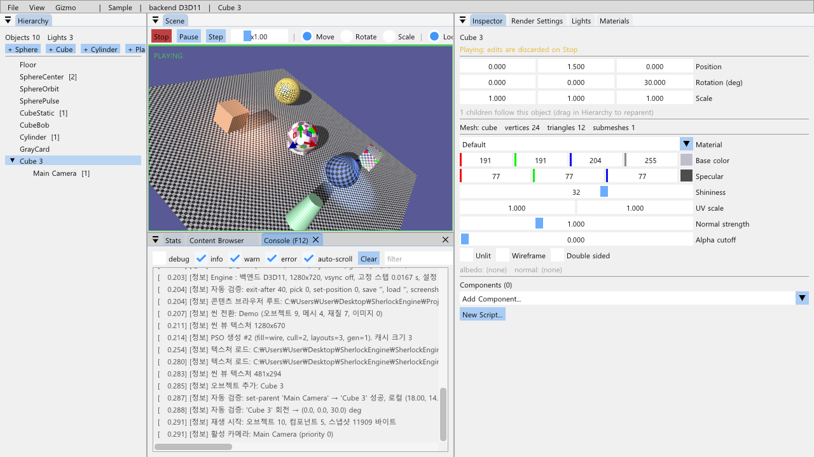
이때 Camera::GetRoll 은 0.55 rad(약 31.5°)로 30° 와 조금 다릅니다. 부모는 월드 Z 축으로 돌았고 카메라는 비스듬히 보고 있어서, 시선축 둘레의 기울기로 정의한 roll(13.11)은 회전축이 다른 만큼 값이 다릅니다. 값이 0 이 아니라는 것이 상속의 증거이고, 정확한 검산은 카메라의 위치로 합니다(13.4).
왜 카메라에 쿼터니언 누적을 쓰지 않았나
- 자유도가 딱 맞는 표현입니다. 1인칭 자유 시점은 정의상 roll 이 없고 각도 둘로 완전히 기술됩니다. 각도 둘만 저장하면 "돌리다 보니 지평선이 기운다"는 부류의 버그가 원천적으로 생기지 않습니다. 쿼터니언(또는 행렬)에 증분을 계속 곱해 넣는 방식에서는 곱하는 순서에 따라 실제로 그 버그가 생기며, 13.13 이 그것을 재현합니다.
- 읽고 고치기 쉽습니다. 패널에 "yaw 21.8°"로 표시하고 씬 파일에 두 숫자로 저장할 수 있으며, LookAt 역산이 두 줄입니다.
- 필요했던 것은 저장 형식이 아니라 전달 경로였습니다. 부모의 회전을 받으려면 카메라가 행렬을 받는 입구 하나면 됩니다. 저장을 쿼터니언으로 바꿨다면
GetYaw·GetPitch, 직렬화, 디버그 패널이 모두 변환을 거쳐야 하고 오일러 역추출이 튀는 문제는 오히려 늘어납니다. - 6자유도가 필요해져도
Camera는 그대로입니다. 컨트롤러(스크립트)가 쿼터니언을 합성해 행렬로SetRotation에 넘기면 됩니다.
고르지 않은 대안과 경위는 D8(오일러 각과 카메라), D15(오브젝트 구조), 11-F단계에 있습니다. Transform 도 같은 이유로 오일러 각을 유지합니다. 편집이 직관적이고, Roll 은 계층이 행렬로 공급하며, 6자유도로 회전해야 하는 물체가 아직 없습니다.
13.13 재현 실험 — 쿼터니언 누적과 Roll
"쿼터니언으로 마우스 회전을 누적하면 Roll 이 쌓여 지평선이 기운다"는 13.12 의 근거를 이 프로젝트 안에서 실제로 재현한 실험입니다. 재현에는 두 가지가 필요했습니다. 임의의 회전이 카메라까지 잘리지 않고 도달하는 경로(13.11 의 행렬 입구)와, 회전을 누적하는 쪽입니다. 엔진 카메라의 Rotate 는 각도 입구라 원리상 Roll 을 만들 수 없으므로 누적은 스크립트가 합니다.
- 프로젝트
Projects/QuaternionLookTest/. 실험 전용 프로젝트이며 자기 에디터 실행 파일(Binaries/Debug/QuaternionLookTestEditor.exe)로 실행합니다. 프로젝트 시스템은 17장- 스크립트
Scripts/Tests/QuaternionLook.h·cpp. 이 프로젝트의 에디터에만 컴파일되므로 Sample 프로젝트의 에디터에서는 이 컴포넌트를 추가할 수 없습니다. 예제가 아니라 문서의 주장을 확인하는 코드라서 격리했습니다- 씬
Assets/Scenes/quat_roll_local.json(mode 0),quat_roll_world.json(mode 1). 데모 씬에CameraComponent+QuaternionLook이 붙은 "Camera 1" 을 얹은 것
구성
- 가상 마우스. 손으로 그린 원은 매번 달라 수치를 남길 수 없으므로, 스크립트가 (yaw, pitch) 평면에서 반지름
radiusDeg(17°)인 원을framesPerLoop(120) 프레임에 한 바퀴 그립니다. 원 위의 이웃한 두 점의 차가 그 프레임의 (Δyaw, Δpitch) 이고, 한 바퀴의 합은 정확히 0 입니다. 시간(dt)이 아니라 프레임 수로 진행하므로 결과가 매번 같습니다. - 출발 자세.
Start에서 자기CameraComponent의priority를 100 으로 올려 활성 카메라가 되고, (12, 4, −22) 에서 (0, 2, 0) 을LookAt한 자세(yaw −28.6°, pitch 4.6°, roll 0)를 쿼터니언m_q로 바꿔 둡니다. - 출력. 매 프레임 누적한 쿼터니언을
GetGameObject().SetWorldRotation(XMMatrixRotationQuaternion(q))로 써 넣습니다. 그러면CameraComponent::GetPose→Camera::SetRotation을 거쳐 Roll 이 화면에 그대로 나타납니다.
증분의 합이 0 이므로, 올바른 누적이라면 카메라는 매 바퀴 출발 자세로 돌아와야 합니다. 두 모드는 증분을 쿼터니언에 곱하는 자리만 다릅니다.
// Projects/QuaternionLookTest/Scripts/Tests/QuaternionLook.cpp — QuaternionLook::Update
const XMVECTOR qPitch = XMQuaternionRotationAxis(XMVectorSet(1.0f, 0.0f, 0.0f, 0.0f), dPitch);
const XMVECTOR qYaw = XMQuaternionRotationAxis(XMVectorSet(0.0f, 1.0f, 0.0f, 0.0f), dYaw);
if (mode == 0)
q = XMQuaternionMultiply(XMQuaternionMultiply(qPitch, qYaw), q); // 두 증분이 기존 회전보다 먼저 = 둘 다 자기 축 기준. roll 이 쌓임
else
q = XMQuaternionMultiply(XMQuaternionMultiply(qPitch, q), qYaw); // pitch 는 먼저(로컬 X), yaw 는 나중(월드 Y). roll 0 유지
q = XMQuaternionNormalize(q);XMQuaternionMultiply(a, b) 는 "a 를 먼저, b 를 나중에" 적용한 회전입니다. 행벡터 행렬곱 a · b 와 같은 순서입니다. 수학 교재의 해밀턴 곱 표기에서는 오른쪽이 먼저 적용되므로, 같은 내용을 수식으로 쓰면 mode 1 은 q = q_yaw · q · q_pitch, mode 0 은 q = q · q_yaw · q_pitch 가 되어 인자 순서가 코드와 반대로 보입니다. 관례 차이일 뿐 같은 회전입니다.
결과
| 바퀴 | mode 0 — 두 증분 모두 로컬 축 | mode 1 — 월드 yaw + 로컬 pitch | ||||
|---|---|---|---|---|---|---|
| yaw | pitch | roll | yaw | pitch | roll | |
| 출발 | −28.6° | 4.6° | 0° | −28.6° | 4.6° | 0° |
| 1 | −29.2° | 8.9° | −14.9° | −28.6° | 4.6° | −0.0° |
| 2 | −30.9° | 13.0° | −30.1° | −28.6° | 4.6° | −0.0° |
| 3 | −33.7° | 16.5° | −45.7° | −28.6° | 4.6° | −0.0° |
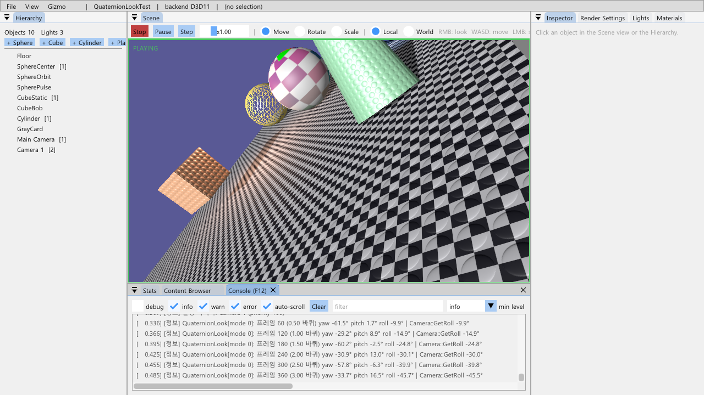
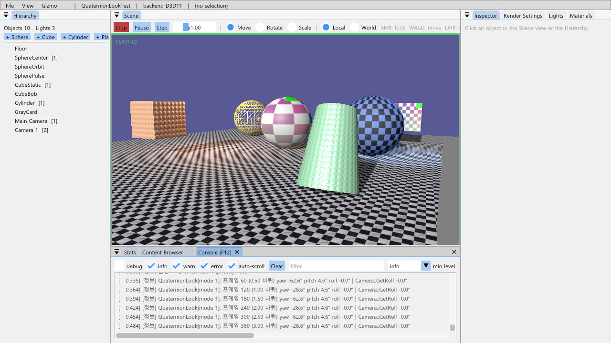
원인은 부동소수점이 아니라 곱하는 자리
mode 0 처럼 두 증분을 모두 카메라 자기 축으로 곱하면, 회전의 합성이 교환되지 않기 때문에 닫힌 경로를 돌고 와도 자세가 제자리로 돌아오지 않습니다. 구면 위에서 화살표를 방향을 유지한 채 옮겨 한 바퀴 돌아오면 화살표가 돌아가 있는 현상(홀로노미)과 같고, 남는 회전의 크기는 경로가 감싼 입체각입니다. 반지름 r 인 원이면 2π(1 − cos r) 이고 r = 17° 일 때 약 15.7° 입니다. 실측은 바퀴당 14.9°~15.6° 입니다. 이 식은 시선이 반지름 r 인 원을 정확히 닫는다고 본 근사인데, 실제로는 Roll 이 생긴 뒤 "로컬 pitch 축"이 더 이상 수평이 아니어서 시선의 경로가 닫히지 않기 때문입니다(표에서 yaw·pitch 도 출발점으로 돌아오지 않음).
mode 1 은 pitch 증분을 기존 회전 앞에(로컬 X), yaw 증분을 뒤에(월드 Y) 곱합니다. 기존 회전이 RotX(p) · RotY(y) 꼴이면 결과는 RotX(Δp) · RotX(p) · RotY(y) · RotY(Δy) = RotX(p + Δp) · RotY(y + Δy) 로 같은 꼴이 유지되므로 Roll 이 끼어들 자리가 없습니다. 각도 둘을 더하는 Camera::Rotate 와 같은 결과입니다. 부동소수점 오차만으로 생긴 Roll 은 세 바퀴(360 프레임) 동안 로그에 표시되는 0.1° 단위에 이르지 못했습니다.
이 실험이 말해 주는 것
- 위험한 것은 쿼터니언이 아니라 증분을 어느 공간에서 곱하느냐입니다. 행렬로 누적해도 똑같이 생깁니다.
- mode 0 의 Roll 은 6자유도 카메라에서는 버그가 아닙니다. "위"가 없는 세계에서는 그것이 올바른 결과입니다. 1인칭 카메라에서 버그가 되는 이유는 세계에 위(+Y)가 있기 때문이고, 그래서 yaw 는 월드 Y 로 곱하거나(mode 1) 아예 각도 둘만 저장합니다(
Camera::Rotate). - 스크립트가 자기 쿼터니언에서 되읽은 roll 과
Camera::GetRoll이 0.2° 이내로 일치했습니다. 13.11 의 행렬 입구와GetRoll의 정의가 함께 확인됩니다.
다시 실행하기
QuaternionLookTestEditor.exe --scene=quat_roll_local.json --play=1 --exit-after=372 --screenshot=<경로> // mode 0, 세 바퀴
QuaternionLookTestEditor.exe --scene=quat_roll_world.json --play=1 --exit-after=372 --screenshot=<경로> // mode 1스크립트가 60 프레임마다 QuaternionLook[mode N]: 프레임 … yaw … pitch … roll … | Camera::GetRoll … 한 줄을 로그에 남깁니다. 맞게 돌았다면 mode 0 의 roll 은 위 표처럼 커지고 mode 1 은 0 에 머뭅니다. 실행 인자의 뜻은 부록 D에 있습니다.
13.14 함정과 해결
이 장의 코드가 지금 모양이 되기까지 겪었거나 설계 단계에서 미리 막은 문제를 증상 기준으로 모았습니다. 경위는 3단계(Scene), 2단계(카메라), 9단계(모델), 11-C단계(컴포넌트·카메라 오브젝트), 11-F단계(계층·행렬 입구)에 있습니다.
| 증상 | 원인 | 현재 코드의 해결 |
|---|---|---|
| 오브젝트를 추가하면 컴포넌트의 소유자 포인터나 부모 링크가 깨질 수 있음 | 값 벡터는 재할당 때 원소 주소가 바뀜 | Scene 이 GameObject 를 unique_ptr 로 소유하고 복사를 금지(13.1) |
| 씬을 바꾼 뒤 새 메시가 옛 GPU 버퍼로 그려질 수 있음 | GPU 캐시의 키가 포인터인데, 지운 메시의 주소가 재사용됨 | Scene::Clear 앞에 Renderer::InvalidateScene(13.1) |
Transform 을 대입하면 부모까지 바뀜 | 부모 링크를 값 타입 안에 두면 복사가 링크도 옮김 | 링크는 GameObject 에 둠. Transform 은 부모를 모름(13.4) |
| 씬을 통째로 비울 때 이미 지워진 부모를 건드림 | 소멸자에서 부모의 children 을 정리하려 함 | 소멸자는 링크를 만지지 않고, RemoveObject 가 지우기 직전 DetachFromHierarchy 를 부름 |
| 자기 자손을 부모로 지정하면 멈춤 | 순환이 생기면 GetWorldMatrix 재귀가 끝나지 않음 | SetParent 가 IsDescendantOf 로 거부하고 false 반환 |
| 스케일이 축마다 다른 부모 밑에서 기즈모·재부모화 뒤 값이 조금 어긋남 | XMMatrixDecompose 는 전단을 표현하지 못함 | 알려진 한계로 둠(유니티와 같음). 카메라는 스케일을 버리므로 영향 없음 |
| 스케일된 부모 밑의 카메라로 보면 장면이 늘어남 | 월드 행렬의 스케일이 뷰행렬에 섞임 | CameraComponent::GetPose 가 분해해 회전·이동만 취함 |
| 부모를 굴려도 자식 카메라의 화면이 기울지 않음 | 자세를 yaw·pitch 둘로 줄여 전달하면서 roll 이 잘림 | 월드 행렬 → 쿼터니언 → Camera::SetRotation(행렬 입구) |
부모를 30° 굴렸는데 GetRoll 이 31.5° | roll 을 시선축 둘레의 기울기로 정의했고 부모의 회전축은 월드 Z | 정의대로의 값. 검산은 카메라 위치로 함(13.4, 13.12) |
| 카메라 전환 중 화면이 휘거나 먼 쪽으로 돎 | yaw·pitch 를 따로 선형 보간 | XMQuaternionSlerp(13.11) |
| 마우스로 원을 그리면 지평선이 기움 | 회전 증분을 모두 로컬 축으로 누적 | 에디터 카메라는 각도 둘만 저장. 재현과 설명은 13.13 |
| 수직으로 올려다보면 화면이 뒤집히거나 좌우 회전이 불안정 | pitch ±90° 에서 forward 가 위 방향과 나란해짐 | ClampPitch 로 89.43° 에서 멈춤(13.9) |
| 마우스 방향과 회전 방향을 맞추려는 부호 보정이 여기저기 생김 | 각도의 양의 방향을 정하지 않음 | yaw + = 오른쪽, pitch + = 아래로 정해 화면 좌표와 일치시킴(13.8) |
| glTF 모델이 거울상으로 보임(글자가 뒤집힘) | 오른손 → 왼손 변환을 인덱스 순서 뒤집기로만 처리 | z 를 반사하고 인덱스는 그대로. 노드 행렬은 M·A·M(13.6) |
| 노멀 맵의 요철이 반대로 보임 | 초록 채널 관례가 둘(v 증가 방향 / 위)이고, 반사가 손잡이를 뒤집음 | 탄젠트 w 의 부호로 흡수: 생성 시 인자로 고르고, 제공된 탄젠트는 w 를 뒤집음 |
| 재질이 없는 primitive 가 그려지지 않거나 엉뚱한 재질을 씀 | 슬롯 번호가 가리킬 재질이 없음 | 재질 배열 끝에 기본 재질 슬롯을 하나 더 둠 |
| cgltf 를 넣자 C4996 경고로 빌드가 막힘 | cgltf 내부의 fopen·strncpy | 그 include 만 #pragma warning 으로 감쌈. 전역 매크로로 끄지 않음 |
| tinygltf 가 설치되지 않음 | vcpkg 포트의 소스 아카이브 해시 불일치 | 같은 조건의 cgltf 로 대체. 접점은 Graphics/Model.cpp 하나 |
| 큐브의 모서리 음영이 둥글게 뭉개짐 | 정점 8개를 공유하면 세 면의 노멀이 평균됨 | 면마다 정점 4개(24 정점) |
| 헬멧의 금속 바이저가 검게 나옴 | 당시에는 Blinn-Phong 근사의 한계로 봤지만, 실제로는 대부분 감기 순서 문제였음. Z 반사 뒤 인덱스를 그대로 둬 바깥 면이 뒷면 컬링에 잘리고 헬멧 안쪽 벽(어두움)이 보였음. 렌더 설정에서 "Cull back faces" 를 끄면 정상으로 보인 것이 단서 | 2026-10-08 반사 뒤 인덱스 교환으로 해결(20.16). 금속의 환경 반사는 같은 날 PBR + IBL 로(20.15) |
| 뒷면 컬링을 켜면 glTF 모델의 앞면이 사라지고 안쪽이 보임 | 위와 같은 원인 | 위와 같음. 엔진이 만드는 프리미티브(구·큐브 등)는 처음부터 CW 라 영향 없음 |
| 반투명(BLEND) 재질이 컷아웃처럼 보임 | 블렌딩 PSO 가 아직 없음 | alphaCutoff = 0.5 로 근사. 12단계 |
Scene::AddModel 의 "노드가 둘 이상이면 빈 루트 아래 묶기" 분기는 실행해 보지 못했습니다. 동봉한 DamagedHelmet 과 Sponza 가 모두 메시를 가진 노드가 하나뿐이기 때문입니다. 이 분기는 SetParent(root, false) 와 SetPreTransform 두 호출이고 재부모화·씬 로드와 같은 함수를 지나므로 코드로만 확인했습니다. 노드가 여럿인 glTF 를 놓았을 때 Hierarchy 에서 루트 아래로 접히면 확인이 끝납니다. 자식이 여럿인 계층도 자동 검증은 자식 하나짜리만 돌렸습니다.
이 장의 내용을 확인하는 방법
- 계층. 13.4 의 재부모화 검증: 재부모화 뒤 월드 위치가 그대로이고, 부모를 돌린 뒤 자식의 월드 위치가 손 계산과 같아야 합니다.
- 카메라. Debug 빌드에서
Camera::UpdateViewMatrix의 단언(inverse(R·T)와XMMatrixLookToLH비교)이 걸리지 않아야 합니다. 마우스를 오른쪽·아래로 움직이면 시점도 오른쪽·아래로 가야 하고, 끝까지 올려도 화면이 뒤집히지 않아야 합니다. - 모델. 로드 로그 한 줄의 수치와 13.6 의 표, 두 백엔드의 화면이 같은지를 봅니다.
- Roll. 13.13 의 두 실행에서 mode 0 은 roll 이 쌓이고 mode 1 은 0 이어야 합니다.
14.Renderer 내부 — GPU 캐시·드로우 목록·정렬·씬 타깃·디버그 뷰
이 장은 Renderer 클래스 하나의 내부를 다룹니다. 4장이 한 프레임을 호출 순서대로 따라갔다면, 여기서는 그 호출들이 기대는 자료구조를 봅니다. Renderer 가 무엇을 소유하는지, CPU 쪽 Mesh·Material 을 GPU 자원으로 바꿔 보관하는 캐시가 어떻게 생겼는지, 드로우 목록을 어떻게 만들고 정렬하는지, 메인 패스가 어느 텍스처에 그리는지(백버퍼, 씬 뷰, 카메라 미리보기), 디버그 뷰가 어떻게 구현되어 있는지, 캐시를 언제 버려야 하는지를 차례로 설명합니다. PSO 캐시 자체는 6장, 바인딩 셋은 7장, 렌더 패스와 배리어는 8장, 셰이더 로드와 핫리로드는 10장, 조명과 그림자 수식은 11장, 텍스처 캐시의 이름 규칙은 12장에 있습니다.
Graphics/Renderer.hRenderSettings,Renderer, 내부 타입GpuMesh·GpuMaterial·DrawItem·StatsGraphics/Renderer.cppInitialize·Shutdown,Render,BuildDrawList,DrawItems,RenderShadowPass·RenderMainPass·RenderPreviewPass,GetOrCreateGpuMesh·GetOrCreateGpuMaterial,GetPipelineFor·GetShadowPipelineFor,SetSceneTarget·SetPreviewTarget,BeginUIPass·EndUIPass,InvalidateMesh·InvalidateMaterial·InvalidateSceneShaders/BasicPixelShader.hlsl- 디버그 뷰 분기(
debugParams) App/Editor.cpp,App/DebugUI.cppSetSceneTarget·SetPreviewTarget호출, Render Settings·Stats 패널App/EditorApp.cpp,App/GameApp.cpp,Core/Engine.cppInvalidateScene을 부르는 곳
Scene 은 GPU 를 모르고 Renderer 는 씬을 소유하지 않습니다. Renderer 는 씬의 Mesh·Material 포인터를 키로 GPU 자원(정점·인덱스 버퍼, 재질 상수버퍼와 리소스 셋)을 만들어 보관하고, 매 프레임 씬을 훑어 DrawItem 목록을 만든 뒤 PSO → 재질 → 메시 → 인덱스 범위 순으로 정렬해 그립니다. 같은 목록을 그림자 패스, 메인 패스, 미리보기 패스가 함께 씁니다. 메인 패스의 타깃은 에디터가 씬 뷰 크기를 알려 주면 오프스크린 텍스처이고, 아니면 백버퍼입니다. 캐시 키가 포인터이므로 씬을 비우기 전에 반드시 캐시를 먼저 버려야 합니다.
14.1 Renderer 가 소유하는 것
Renderer 는 Engine 의 멤버이고(2장), Initialize(RHI::Device*) 에서 받은 장치 포인터 하나로 모든 일을 합니다. 멤버는 전부 핸들(5장)과 CPU 값이어서 Renderer.h 와 Renderer.cpp 에는 D3D 타입이 없습니다. 두 백엔드에서 같은 코드가 돕니다.
| 묶음 | 멤버 | 만들어지는 때 | 수명 |
|---|---|---|---|
| 셰이더 | m_vs, m_ps, m_shadowVs, m_skyVs, m_skyPs | LoadShaders | 핫리로드 때 교체, Shutdown 까지 |
| 프레임 공통 상수버퍼 | m_perFrameCB(b0), m_perObjectCB(b1), m_lightCB(b2) | Initialize | Shutdown 까지. 전부 Dynamic |
| 바인딩 레이아웃 | m_frameLayout, m_objectLayout, m_materialLayout | Initialize | Shutdown 까지 |
| 리소스 셋 | m_frameSet, m_objectSet | Initialize | Shutdown 까지. 프레임 셋은 t9 의 큐브가 바뀌면 UpdateFrameSet 이 다시 만듦. 재질 셋은 재질마다 따로(14.4절) |
| PSO Desc 의 고정 부분 | m_baseDesc, m_shadowDesc, m_skyDesc | Initialize, 핫리로드 때 셰이더 핸들만 갱신 | 값. PSO 핸들 자체는 보관하지 않습니다(14.5절) |
| 샘플러 | m_samplers[5], m_shadowSampler | CreateSamplers, CreateShadowResources | Shutdown 까지 |
| 내장 텍스처·그림자 맵 | m_whiteTexture, m_flatNormalTexture, m_blackCube, m_shadowMap | CreateBuiltinTextures, CreateShadowResources | Shutdown 까지 |
| 텍스처 캐시 | m_textureCache 이름 + 색공간 → 핸들 m_cubeCache 큐브맵 이름 → 핸들·밉 수 m_environment, m_boundEnvironment 이번 프레임의 환경, 지금 프레임 셋에 꽂힌 환경 | 재질·씬이 처음 그 이름을 쓸 때 | 씬 전환(InvalidateScene(…, true)) 또는 Shutdown |
| GPU 캐시 | m_gpuMeshes, m_gpuMaterials | 처음 그릴 때 | Invalidate* 또는 Shutdown |
| 오프스크린 타깃 | m_sceneColor/Depth, m_previewColor/Depth | SetSceneTarget, SetPreviewTarget | 크기가 바뀌면 재생성, 0×0 이면 반납 |
| 프레임 임시 값 | m_drawList, m_stats, m_frameNumber, m_lightViewProj, m_shadowEnabledThisFrame | 매 Render | 다음 프레임에 덮어씀 |
| 기본 재질 | m_defaultMaterial | 생성자(이름 "Default") | Renderer 와 같음. 재질이 없는 오브젝트에 씁니다 |
Renderer 가 갖지 않는 것도 정해져 있습니다. 씬 데이터(오브젝트, 조명, 카메라)는 Render(const Scene&, const Camera&, float totalTime) 의 인자로 받아 읽기만 합니다. PSO 객체는 Device 의 캐시가 소유합니다. 백버퍼와 창 크기의 깊이 버퍼는 Device 가 소유하고 Renderer 는 패스를 열 때마다 GetBackBuffer()·GetDepthBuffer() 로 핸들을 얻습니다. ImGui 패널은 App 계층이 그리고, Renderer 는 그 사이에 끼울 UI 패스의 시작과 끝(BeginUIPass·EndUIPass)만 제공합니다.
지금 Renderer 는 Scene·GameObject·Mesh·Material 타입을 직접 읽습니다. 씬과 렌더러 사이에 "이번 프레임에 그릴 것"만 담은 값 구조체를 두어 Renderer 가 씬 타입을 모르게 하는 분리는 하지 않았습니다. 대신 경계는 방향으로 지킵니다. Renderer 는 씬을 const 로만 받고, 씬 쪽 헤더는 Renderer 나 Device 를 포함하지 않습니다.
초기화와 종료 순서
Initialize 의 순서는 의존 관계를 따릅니다. 상수버퍼 세 개, 샘플러 프리셋, 내장 텍스처, 그림자 맵과 비교 샘플러를 먼저 만듭니다. 프레임 셋이 이 핸들들을 담기 때문입니다. 이어서 레이아웃 세 개, 프레임 셋과 오브젝트 셋, 셰이더(LoadShaders(false))를 만들고 m_baseDesc, m_shadowDesc, m_skyDesc 를 채웁니다. 마지막으로 기본 재질에 대한 메인 PSO 와 그림자 PSO, 그리고 스카이박스 PSO 를 한 번씩 요청합니다. PSO 생성 실패를 첫 프레임이 아니라 초기화 단계에서 잡기 위한 것입니다.
Shutdown 은 GPU 메시, GPU 재질, 텍스처 캐시, 씬·미리보기 타깃, 그림자 맵, 샘플러, 리소스 셋, 레이아웃, 상수버퍼, 셰이더 순으로 핸들을 Device 에 돌려줍니다. 흰색 텍스처는 캐시에도 들어 있으므로 캐시를 돌 때는 건너뛰고 끝에 한 번만 파괴합니다. 검은 큐브도 같은 방식입니다(로드에 실패한 큐브 항목이 그 핸들을 공유함). Engine::Shutdown 은 그 전에 InvalidateScene(m_scene, true) 와 Scene::Clear 를 먼저 부릅니다(14.11절).
14.2 RenderSettings — 설정이 닿는 곳
RenderSettings 는 실행 중에 바꾸는 렌더 옵션의 묶음입니다. Render Settings 패널과 기능 키가 Renderer::GetSettings() 로 얻은 참조를 직접 고칩니다. 옵션마다 반영되는 경로가 다르고, 그 경로에 따라 비용이 다릅니다. PSO 를 바꾸는 옵션은 새 변형을 만들게 하고, 상수를 바꾸는 옵션은 다음 프레임의 UpdateBuffer 에 실려 갈 뿐입니다.
| 필드 기본값 | 반영되는 곳 | 경로 | 키 |
|---|---|---|---|
| wireframe false | GetPipelineFor 의 rasterizer.fill. 재질의 wireframe 과 OR | PSO | F1 |
| cullBack true | GetPipelineFor 의 rasterizer.cull. 재질이 doubleSided 면 끔 | PSO | F2 |
| srgbOutput true | 메인·미리보기 패스의 srgbView 와 rtvFormats[0] (12장) | PSO + 패스 | F5 |
| samplerOverride −1 | GetOrCreateGpuMaterial 이 고르는 샘플러. 바뀌면 재질 셋을 다시 만듦 | 리소스 셋 | F6 |
| shadows true | m_shadowEnabledThisFrame. 그림자 패스 생략과 shadowParams.w | 패스 + b0 | F8 |
| shadowBias, shadowStrength 0.0015, 1 | shadowParams.y, .z | b0 상수 | |
| shadowOrthoSize, shadowDistance 60, 40 | ComputeLightViewProj 의 직교 투영 크기와 광원 눈의 거리 (11장) | b0 상수 | |
| normalMapping true | 끄면 재질 상수의 normalStrength 를 0 으로 올림 | b3 상수 | F9 |
| debugView, debugDepthRange 0, 60 | debugParams.x, .y (14.10절) | b0 상수 |
노멀 매핑 토글과 디버그 뷰를 상수로 구현한 것은 의도한 선택입니다. 셰이더 변형이나 PSO 변형으로 만들면 조합 수가 곱으로 늘어나는데, 상수 하나로 분기하면 PSO 캐시 크기가 그대로입니다. shadowOrthoSize·shadowDistance·shadowBias 는 씬 크기에 맞춰야 하므로 EditorApp 이 씬을 만들 때마다 다시 정합니다.
14.3 GpuMesh 캐시 — Mesh 를 버퍼 두 개로
Mesh(13장)는 정점·인덱스 배열을 가진 CPU 데이터이고 GPU 버퍼를 갖지 않습니다. GPU 쪽 짝은 Renderer 안의 GpuMesh 입니다.
// Graphics/Renderer.h
struct GpuMesh
{
BufferHandle vertexBuffer;
BufferHandle indexBuffer;
uint32_t indexCount = 0;
Format indexFormat = Format::R32_UINT; // 정점이 65,535개 이하면 R16_UINT
VertexFormat vertexFormat = VertexFormat::PositionColorNormalTexcoordTangent;
};
std::unordered_map<const Mesh*, GpuMesh> m_gpuMeshes;GetOrCreateGpuMesh(const Mesh&) 는 맵에서 &mesh 를 찾고, 없으면 버퍼 두 개를 만들어 넣습니다. 호출되는 곳은 드로우 루프 안이므로 메시의 GPU 버퍼는 그 메시가 처음 그려지는 프레임에 만들어집니다. 씬을 로드한 직후가 아닙니다.
- 정점 버퍼:
BufferUsage::Default,BufferBind_Vertex, 크기는sizeof(VERTEX) × 정점 수,stride는GetVertexStride(format)(64바이트). 초기 데이터로 정점 배열을 넘깁니다. 만든 뒤 내용이 바뀌지 않으므로Dynamic이 아닙니다. - 인덱스 버퍼: CPU 쪽 인덱스는 항상
uint32_t입니다. 정점 수가 65,535 이하면 임시uint16_t배열로 옮겨R16_UINT로 올리고, 넘으면 32비트 그대로 올립니다. 포맷은GpuMesh::indexFormat에 기억해 두었다가cmd.SetIndexBuffer(handle, indexFormat)에 넘깁니다. 16비트면 버퍼 크기가 절반입니다. D3D 의 인덱스 포맷은 이 둘뿐이어서 분기도 둘입니다(D10). - 실패: 둘 중 하나라도 만들지 못하면 로그를 남기고 만든 쪽을 파괴한 뒤
nullptr를 돌려줍니다. 드로우 루프는 그 항목을 건너뜁니다. 실패는 캐시에 넣지 않으므로 다음 프레임에 다시 시도합니다.
왜 Mesh 가 핸들을 들지 않는가
핸들은 API 중립이라 Mesh 가 BufferHandle 두 개를 직접 들어도 계층 규칙에는 어긋나지 않습니다. 그래도 Renderer 쪽 캐시로 둔 이유는 수명입니다. Mesh 가 핸들을 들면 소멸자가 Device 를 알아야 하고, Device 가 없는 곳(모델 로더, 씬 직렬화)에서 메시를 만들거나 버릴 수 없게 됩니다. 캐시로 두면 Scene 은 순수한 CPU 데이터로 남고, GPU 자원의 생성과 파괴는 한 클래스에 모입니다(D3).
키가 const Mesh* 인 것은 Scene 이 메시를 unique_ptr 로 소유해 주소가 바뀌지 않기 때문입니다. 같은 메시를 여러 오브젝트가 참조하면 GPU 버퍼는 한 벌입니다. 대가도 있습니다. 메시가 파괴된 뒤 같은 주소에 새 메시가 할당되면 캐시는 그것을 옛 메시로 봅니다. 이 문제는 14.11절의 무효화 규칙으로 막습니다.
14.4 GpuMaterial 캐시 — Material 을 상수버퍼와 리소스 셋으로
// Graphics/Renderer.h
struct GpuMaterial
{
BufferHandle constants; // b3, Dynamic, sizeof(MaterialConstants)
ResourceSetHandle set; // b3 + t0 알베도 + t1 노멀 + s0 샘플러
TextureHandle boundAlbedo; // 지금 셋에 들어 있는 것
TextureHandle boundNormal;
SamplerHandle boundSampler;
uint64_t uploadedFrame = UINT64_MAX; // 상수를 마지막으로 올린 프레임
};
std::unordered_map<const Material*, GpuMaterial> m_gpuMaterials;GetOrCreateGpuMaterial(material, scene) 은 호출될 때마다 세 단계를 거칩니다. 캐시 조회만 하고 끝나는 함수가 아니라, 재질의 현재 값과 GPU 쪽 상태를 매번 대조하는 함수입니다. Material 에는 "바뀌었다"는 표시가 없고 Inspector 가 필드를 직접 고치기 때문에 이렇게 합니다.
항목 찾기 또는 만들기
맵에 없으면 Dynamic 상수버퍼 하나("CB_Material")를 만들어 항목을 넣습니다. 셋은 아직 빈 핸들입니다.
셋 대조
재질이 지금 가리키는 것을 핸들로 바꿉니다. 알베도는 GetOrLoadTexture(albedoTexture, albedoSrgb, scene), 노멀은 이름이 비었으면 m_flatNormalTexture 이고 아니면 GetOrLoadTexture(normalTexture, false, scene), 금속성/거칠기·AO 는 선형으로, 발광은 sRGB 로 GetOrLoadTexture(빈 이름은 흰색), 샘플러는 samplerOverride 가 유효하면 그 프리셋이고 아니면 재질의 sampler 입니다. 셋이 없거나 이 여섯 핸들 중 하나라도 bound* 와 다르면 옛 셋을 파괴하고 CreateResourceSet 으로 다시 만듭니다.
상수 올리기
uploadedFrame != m_frameNumber 이면 MaterialConstants(baseColor, emissive, metallic, uvScale, unlit, normalStrength, alphaCutoff, roughness, occlusionStrength)를 채워 UpdateBuffer 로 올리고 프레임 번호를 기록합니다.
②에서 셋을 통째로 다시 만드는 이유는 ResourceSet 이 값 객체이기 때문입니다. 슬롯 하나만 바꾸는 기능이 없고, D3D12 에서는 어차피 디스크립터 테이블을 다시 써야 합니다(7장). 텍스처 이름으로 캐시를 조회하는 비용은 문자열 해시 한 번이고, 실제 파일 디코딩은 그 이름을 처음 볼 때만 일어납니다(12장).
③의 m_frameNumber 는 Renderer 가 Render 첫머리에서 올리는 자체 카운터입니다. 재질 상수를 매 프레임 올리는 것은 Inspector 편집이 바로 보이게 하기 위해서이고, 같은 프레임에 두 번 올리지 않는 것은 한 재질을 여러 오브젝트가 쓰거나 미리보기 패스가 같은 재질을 다시 바인딩할 때를 위한 것입니다. Dynamic 버퍼는 매 프레임 써야 한다는 규칙(10장)도 이것으로 지켜집니다. 그 프레임에 그려지지 않는 재질은 올리지 않지만 바인딩도 되지 않으므로 문제가 없습니다.
재질이 PSO 를 결정하므로(와이어프레임, 양면) GpuMaterial 에 PipelineHandle 을 넣어 두는 설계도 가능했습니다. 넣지 않은 이유는 두 가지입니다. PSO 는 재질만으로 정해지지 않고 전역 설정(wireframe, cullBack, srgbOutput)과 정점 포맷이 함께 정합니다. 그리고 핫리로드가 PSO 캐시를 비우면 보관해 둔 핸들이 모두 무효가 됩니다. Desc 가 곧 캐시 키이므로 매 프레임 Desc 를 만들어 캐시에 묻는 쪽이 항상 옳은 핸들을 줍니다.
14.5 PSO 선택 — GetPipelineFor 와 GetShadowPipelineFor
// Graphics/Renderer.cpp
PipelineHandle Renderer::GetPipelineFor(const Material& material, VertexFormat vertexFormat)
{
PipelineStateDesc desc = m_baseDesc; // vs, ps, 레이아웃 3개
desc.vertexLayout = GetVertexLayout(vertexFormat);
desc.rasterizer.fill = (m_settings.wireframe || material.wireframe) ? FillMode::Wireframe : FillMode::Solid;
desc.rasterizer.cull = (m_settings.cullBack && !material.doubleSided) ? CullMode::Back : CullMode::None;
desc.rtvFormats[0] = m_settings.srgbOutput ? Format::R8G8B8A8_UNORM_SRGB : Format::R8G8B8A8_UNORM;
desc.rtvCount = 1;
desc.dsvFormat = Format::D24_UNORM_S8_UINT;
return m_device->CreatePipeline(desc); // 캐시 조회. 처음 보는 Desc 일 때만 생성
}메인 패스의 PSO 변형을 가르는 값은 채우기 모드, 컬링, 렌더 타깃 포맷, 정점 레이아웃 넷입니다. 정점 포맷은 지금 하나뿐이고 렌더 타깃 포맷은 프레임 안에서 고정이므로, 한 프레임에 쓰이는 메인 PSO 는 재질의 wireframe·doubleSided 조합에 따라 많아야 네 개입니다. 깊이 테스트, 블렌드, 토폴로지는 Desc 기본값(깊이 테스트 켬, 불투명, 삼각형 리스트)을 씁니다.
GetShadowPipelineFor 는 m_shadowDesc(정점 셰이더만, 렌더 타깃 0개, D32_FLOAT, 깊이 바이어스, 레이아웃은 프레임·오브젝트 둘)에 정점 레이아웃과 컬링만 채웁니다. 그림자는 항상 솔리드로 그리므로 와이어프레임 재질도 그림자를 드리우고, 양면 재질만 컬링을 끕니다. 그림자 PSO 변형은 둘입니다.
에디터의 씬 뷰와 게임의 백버퍼가 같은 PSO 를 씁니다. 씬 뷰 색 텍스처의 sRGB RTV 와 백버퍼의 sRGB RTV 가 같은 포맷(R8G8B8A8_UNORM_SRGB)이고, 씬 뷰 깊이 텍스처도 Device 의 깊이 버퍼와 같은 D24_UNORM_S8_UINT 로 만들기 때문입니다. D3D12 의 PSO 는 뷰 포맷이 맞아야 하므로 이 일치는 우연이 아니라 조건입니다.
14.6 드로우 목록과 정렬
Renderer 는 씬을 돌면서 바로 그리지 않습니다. 먼저 "무엇을 어떤 상태로 그릴지"를 값 목록으로 만들고, 정렬한 뒤, 그 목록을 패스마다 다시 돕니다. 목록의 항목이 DrawItem 이고 드로우 콜 하나에 해당합니다.
// Graphics/Renderer.h
struct DrawItem
{
PipelineHandle pipeline; // 메인 패스 PSO (정렬 키)
const Material* material;
const Mesh* mesh;
const GameObject* object; // 월드 행렬을 얻을 곳
uint32_t indexStart = 0; // 서브메시 범위
uint32_t indexCount = 0;
};
std::vector<DrawItem> m_drawList; // 멤버. 매 프레임 clear 후 다시 채움 (용량은 유지)BuildDrawList(scene) 은 scene.GetObjects() 를 순서대로 돕니다. 메시가 없거나 유효하지 않은 오브젝트(카메라 오브젝트, 빈 오브젝트)는 건너뜁니다. 메시가 있으면 서브메시마다 항목 하나를 만듭니다. 인덱스가 0개인 서브메시는 버립니다. 재질은 GameObject::GetMaterialForSlot(submesh.materialSlot) 이 슬롯 재질, 오브젝트 기본 재질 순으로 고르고, 둘 다 없으면 m_defaultMaterial 을 씁니다. 그 재질과 메시의 정점 포맷으로 GetPipelineFor 를 불러 PSO 핸들을 얻고, 핸들이 유효하지 않으면 그 항목을 목록에 넣지 않습니다.
프리미티브 메시는 서브메시가 전체를 덮는 하나이므로 오브젝트당 항목 하나가 됩니다. 모델 메시는 glTF 프리미티브 수만큼 서브메시를 가지므로 오브젝트 하나가 항목 여러 개가 됩니다(13장).
정렬
// Graphics/Renderer.cpp — Renderer::BuildDrawList 끝
std::sort(m_drawList.begin(), m_drawList.end(), [](const DrawItem& a, const DrawItem& b)
{
if (a.pipeline.index != b.pipeline.index) return a.pipeline.index < b.pipeline.index;
if (a.material != b.material) return a.material < b.material;
if (a.mesh != b.mesh) return a.mesh < b.mesh;
return a.indexStart < b.indexStart;
});정렬의 목적은 순서가 아니라 묶기입니다. 같은 PSO 를 쓰는 항목이 연달아 오고, 그 안에서 같은 재질이, 다시 그 안에서 같은 메시가 연달아 오게 합니다. 그러면 드로우 루프가 "직전과 같으면 바인딩을 건너뛴다"는 단순한 규칙만으로 상태 변경 횟수를 줄일 수 있습니다. 비교에 쓰는 값은 PSO 의 풀 인덱스와 포인터 주소여서 크고 작음에 의미가 없고, 실행할 때마다 순서가 달라질 수 있습니다. 묶이는 결과는 같습니다.
키의 순서는 바꾸는 비용이 큰 것부터입니다.
| 키 | 바뀌면 드는 일 |
|---|---|
| 1 | PSO. D3D11 은 입력 레이아웃·셰이더 둘·래스터라이저·깊이·블렌드 상태를 모두 다시 겁니다. D3D12 는 SetPipelineState 에 더해, 루트 시그니처가 달라지면 모든 셋의 테이블을 다시 바인딩해야 합니다(6장, 7장) |
| 2 | 재질. 리소스 셋 하나(b3, t0, t1, s0)를 바꿉니다 |
| 3 | 메시. 정점 버퍼와 인덱스 버퍼를 바꿉니다 |
| 4 | 인덱스 시작 위치. 상태 변경은 없습니다. 같은 메시의 서브메시들을 버퍼에 놓인 순서대로 그리게 할 뿐입니다 |
이 방식은 Ericson 의 글에서 알려진 "상태를 정렬 키로 묶어 드로우를 정렬한다"는 생각과 같습니다. 그 글은 필드들을 64비트 정수 하나에 채워 넣어 정수 비교로 정렬하지만, 여기서는 키를 만들지 않고 비교 함수로 썼습니다. 드로우 수가 수백 개인 지금 규모에서는 차이가 없고, 비교 함수 쪽이 읽기 쉽습니다.
컬링이 없습니다. 메시가 있는 오브젝트는 카메라 절두체 밖에 있어도 목록에 들어가고 그려집니다. 깊이 정렬이 없습니다. 불투명 물체를 앞에서 뒤로 그리는 최적화도, 반투명 물체를 뒤에서 앞으로 그리는 큐도 없습니다. 블렌딩 상태가 없으므로 지금은 순서가 결과에 영향을 주지 않습니다. 알파는 clip 으로 잘라 내는 컷아웃뿐입니다. 인스턴싱이 없습니다. 같은 메시·재질을 쓰는 오브젝트도 드로우마다 b1 을 올리고 따로 그립니다. 셋 다 아직 구현하지 않은 기능입니다(남은 일은 22장).
14.7 드로우 루프, 상태 캐시, 통계
정렬된 목록을 도는 루프는 둘입니다. DrawItems 는 메인 패스와 미리보기 패스가 함께 쓰고, RenderShadowPass 는 자기 루프를 가집니다. 코드는 4장에 있고, 여기서는 두 루프의 규칙만 정리합니다.
| DrawItems 메인·미리보기 | RenderShadowPass | |
|---|---|---|
| PSO | item.pipeline 그대로 | 항목마다 GetShadowPipelineFor 로 다시 얻음 |
| 재질 셋 | 재질이 바뀔 때 GetOrCreateGpuMaterial → SetResourceSet | 바인딩하지 않음. 그림자 PSO 의 레이아웃은 프레임·오브젝트 둘뿐 |
| 메시 | 메시가 바뀔 때 GetOrCreateGpuMesh → SetVertexBuffer, SetIndexBuffer | |
| b1 | 드로우마다 UploadObjectConstants. 패스마다 다시 올립니다 | |
| 건너뛰는 항목 | GPU 재질·메시를 만들지 못한 항목 | material->unlit 인 항목, PSO·메시를 얻지 못한 항목 |
그림자 패스가 재질을 바인딩하지 않으므로 픽셀 셰이더의 알파 컷아웃도 적용되지 않습니다. 컷아웃 재질(나뭇잎, 쇠사슬)은 구멍 없는 통짜 그림자를 드리웁니다.
"직전 상태"는 지역 변수입니다
두 루프 모두 lastPipeline, lastMaterial, lastMesh 를 함수의 지역 변수로 둡니다. Renderer 의 멤버가 아닙니다. 상태 캐시의 약점은 캐시가 모르는 사이에 누군가 실제 상태를 바꾸는 경우인데(D5), 그런 일은 패스 경계에서 일어납니다. 그림자 패스와 메인 패스는 PSO 가 다르고, BeginRenderPass 는 attachment 와 겹치는 SRV 바인딩을 풀며, 프레임 끝에는 ImGui 백엔드가 자기 상태를 겁니다. 기억을 패스 하나 안으로 한정하면 패스의 첫 드로우는 언제나 PSO·재질·메시를 모두 바인딩하므로 이 문제가 생기지 않습니다. 같은 이유로 DrawItems 는 첫머리에서 프레임 셋과 오브젝트 셋도 다시 바인딩합니다.
D3D12 커맨드 리스트에는 한 겹이 더 있습니다. D3D12CommandList::SetPipelineState 는 같은 핸들이면 바로 돌아가고, 디스크립터 테이블은 셋이나 루트 시그니처가 바뀌었을 때만 다시 넣습니다(7장). Renderer 의 건너뛰기는 "RHI 호출 자체를 줄이는 것"이고 백엔드의 건너뛰기는 "API 호출을 줄이는 것"입니다.
통계가 세는 것
Render 는 첫머리에서 m_stats 를 0 으로 되돌립니다(누적 값인 shaderReloads 만 보존). 패널이 보여 주는 숫자의 뜻은 코드가 어디서 증가시키는지로 정해집니다.
| Stats 필드 | 증가하는 곳 | 읽는 법 |
|---|---|---|
| draws, triangles | DrawItems | 메인 패스. 미리보기 패스가 켜지면 두 배가 됩니다 |
| shadowDraws | RenderShadowPass | unlit 항목을 뺀 수 |
| resourceSetSwitches | DrawItems 의 재질 셋 바인딩 | 프레임 셋·오브젝트 셋 바인딩은 세지 않습니다 |
| pipelineSwitches, meshSwitches | 두 루프 모두 | 그림자 + 메인(+ 미리보기)의 합 |
| renderPasses, barriers | Render 끝에서 cmd.GetStats() 를 복사 | UI 패스와 그 앞뒤의 백버퍼 배리어는 그 뒤에 일어나므로 포함되지 않습니다 |
| shaderReloads | ReloadShaders 성공 | 실행 이후 누적 |
이 숫자들이 정렬이 의도대로 동작하는지 확인하는 수단입니다. 프리미티브 103개를 정점·인덱스 버퍼 한 벌로 합친 Sponza 에서 9단계 당시 측정값은 draws 103, set switches 25, mesh switches 2 였습니다(9단계). 메시 전환 2 는 그림자 패스와 메인 패스에서 한 번씩이고, 재질 전환 25 는 드로우 103개가 재질별로 묶였다는 뜻입니다. 패널에는 캐시 크기도 함께 나옵니다. GetPipelineCount()(Device 의 PSO 캐시), GetGpuMeshCount(), GetGpuMaterialCount(), GetTextureCount() 입니다.
14.8 씬 타깃 — 메인 패스는 어디에 그리는가
메인 패스의 색·깊이 타깃은 둘 중 하나입니다. 게임 실행 파일에서는 백버퍼에 직접 그립니다. 에디터에서는 씬이 화면 전체가 아니라 Scene 창 안에 보여야 하므로 오프스크린 텍스처(씬 타깃)에 그리고, ImGui 가 그 텍스처를 이미지로 창 안에 붙입니다. 어느 쪽인지는 m_sceneColor 핸들이 유효한지로 정해집니다(IsOffscreen()). 패스를 여는 쪽의 attachment 만 달라지고 드로우 루프, PSO, 셰이더는 같습니다.
SetSceneTarget
에디터의 Editor::DrawSceneView 는 매 프레임 Scene 창의 남은 내용 영역 크기를 재서 Renderer::SetSceneTarget(width, height) 에 넘깁니다(16장). 이 호출은 OnGUI 단계, 곧 그 프레임의 Render 보다 먼저 일어납니다. 그래서 창 크기를 바꾼 바로 그 프레임부터 새 크기로 그려집니다.
- 크기가 직전과 같으면 아무것도 하지 않습니다. 매 프레임 불러도 되는 이유입니다.
- 다르면 이전 색·깊이 텍스처를
DestroyTexture하고, 추적 상태를ResourceState::Common으로 되돌립니다. 0×0 이면 여기서 끝나고 Renderer 는 백버퍼 모드로 돌아갑니다. - 색 텍스처는
R8G8B8A8_UNORM,RenderTarget | ShaderResource로 요청합니다. Device 가 이 조합을 TYPELESS 리소스로 만들어 sRGB RTV 와 UNORM SRV 를 함께 쓸 수 있게 합니다(12장). 깊이 텍스처는D24_UNORM_S8_UINT,DepthStencil입니다. - 둘 중 하나라도 실패하면
SetSceneTarget(0, 0)을 불러 백버퍼 모드로 물러납니다.
이전 텍스처를 바로 파괴해도 안전한 이유는 백엔드가 다릅니다. D3D12 는 DestroyTexture 가 리소스와 디스크립터를 지연 해제 목록에 넣으므로, GPU 가 아직 실행 중인 앞 프레임이 그 텍스처를 읽어도 됩니다(8장). D3D11 은 드라이버의 참조 카운트가 지킵니다. 뷰포트는 BeginRenderPass 가 attachment 크기로 잡으므로 Renderer 가 따로 설정하지 않습니다. 카메라의 종횡비는 에디터가 씬 뷰 크기에 맞춰 넣습니다.
RenderMainPass 의 타깃 선택과 배리어
// Graphics/Renderer.cpp — Renderer::RenderMainPass (요약)
if (IsOffscreen())
{
target = m_sceneColor; depth = m_sceneDepth;
cmd.Barrier(m_sceneColor, m_sceneColorState, ResourceState::RenderTarget);
m_sceneColorState = ResourceState::RenderTarget;
}
else
{
target = m_device->GetBackBuffer(); depth = m_device->GetDepthBuffer();
cmd.Barrier(target, ResourceState::Present, ResourceState::RenderTarget);
}
const RenderPassDesc pass{ .colors = { { .texture = target, .load = LoadOp::Clear, .srgbView = m_settings.srgbOutput, .clearColor = { … } } }, … };
cmd.BeginRenderPass(pass); DrawItems(cmd, scene); cmd.EndRenderPass();
if (IsOffscreen())
{
cmd.Barrier(m_sceneColor, ResourceState::RenderTarget, ResourceState::ShaderResource); // ImGui 가 읽음
m_sceneColorState = ResourceState::ShaderResource;
}Barrier 는 이전 상태와 다음 상태를 호출하는 쪽이 적어 주는 함수이므로(8장), Renderer 가 자기 텍스처의 현재 상태를 멤버(m_sceneColorState, m_previewColorState, m_shadowMapState)로 기억합니다. 새로 만든 텍스처는 Common 에서 시작하고, 두 번째 프레임부터는 ShaderResource 와 RenderTarget 사이를 오갑니다.
씬 타깃이 있으면 메인 패스는 백버퍼를 전혀 건드리지 않습니다. 그래서 BeginUIPass 가 그 일을 넘겨받습니다. 오프스크린이면 백버퍼를 Present 에서 RenderTarget 으로 전이하고, LoadOp::Load 대신 LoadOp::Clear 로 에디터 배경색 (0.13, 0.13, 0.15) 을 채웁니다. 씬 타깃이 없으면 메인 패스가 이미 전이와 클리어를 했으므로 UI 패스는 Load 로 그 위에 덧그립니다. EndUIPass 는 두 경우 모두 백버퍼를 RenderTarget 에서 Present 로 되돌립니다.
| 프레임당 배리어 호출 | 그림자 맵 | 씬·미리보기 색 | 백버퍼 | 합 | Stats 표시 |
|---|---|---|---|---|---|
| 씬 타깃 없음 | 2 | 0 | 2 | 4 | 3 |
| 씬 타깃 있음 | 2 | 2 | 2 | 6 | 4 |
| 씬 타깃 + 미리보기 | 2 | 4 | 2 | 8 | 6 |
그림자가 켜져 있을 때의 수입니다. 마지막 열이 합보다 작은 이유는 Stats::barriers 가 Render 가 끝나는 시점의 값이어서 UI 패스 쪽 백버퍼 배리어를 포함하지 않기 때문입니다(14.7절). D3D11 에서도 호출 수는 같고, 실제 전이 명령이 나가는 것은 D3D12 뿐입니다.
14.9 카메라 미리보기 패스
에디터에서 CameraComponent 가 달린 오브젝트를 선택하면 씬 뷰 우측 하단에 그 카메라의 시점이 작은 창으로 뜹니다. 이것은 메인 패스를 다른 카메라로 한 번 더 돌린 것입니다.
에디터가 요청
Editor::DrawCameraPreview 가 조건(선택한 오브젝트에 카메라 컴포넌트가 있고, 씬 뷰가 240×160 이상이며, 재생 중의 활성 카메라가 아님)을 확인합니다. 맞으면 SetPreviewTarget(폭은 씬 뷰의 32%, 비율은 씬 뷰와 같음)과 SetPreviewCamera(&m_previewCamera) 를 부릅니다. 맞지 않으면 SetPreviewCamera(nullptr) 과 SetPreviewTarget(0, 0) 으로 텍스처까지 반납합니다.
b0 만 다시 올림
Render 는 메인 패스 뒤에 미리보기 카메라와 타깃이 모두 있으면 UploadPerFrameConstants(*m_previewCamera, totalTime) 을 한 번 더 부릅니다. 바뀌는 것은 view, proj, viewProj, cameraPosition 뿐이고 광원 행렬, 그림자·디버그 파라미터는 같은 값이 다시 들어갑니다.
같은 목록을 다시 그림
RenderPreviewPass 는 미리보기 색 텍스처를 RenderTarget 으로 전이하고, 색·깊이를 지우는 패스를 열어 DrawItems 를 부른 뒤 ShaderResource 로 되돌립니다. 드로우 목록을 다시 만들지 않고, 그림자 패스도 다시 돌리지 않습니다. 그림자 맵은 광원 시점이라 카메라와 무관하기 때문입니다.
한 프레임 안에서 b0 을 두 번 올려도 메인 패스의 드로우가 영향을 받지 않는 것은 Dynamic 버퍼의 갱신 방식 덕분입니다. D3D12 에서 UpdateBuffer 는 업로드 링의 새 조각에 쓰고, 이미 기록된 드로우는 앞 조각의 주소를 루트 CBV 로 들고 있습니다. D3D11 에서는 명령이 호출 순서대로 실행되고 Map(WRITE_DISCARD) 가 새 메모리를 줍니다(10장).
비용은 드로우 수가 두 배가 되는 것입니다. 재질 상수는 uploadedFrame 덕분에 다시 올리지 않지만 b1 은 드로우마다 다시 올립니다. 미리보기 카메라 포인터는 Render 가 끝날 때까지 유효해야 하므로 에디터는 지역 변수가 아니라 멤버 Editor::m_previewCamera 를 넘깁니다. 미리보기 텍스처의 포맷 규칙은 씬 타깃과 같습니다.
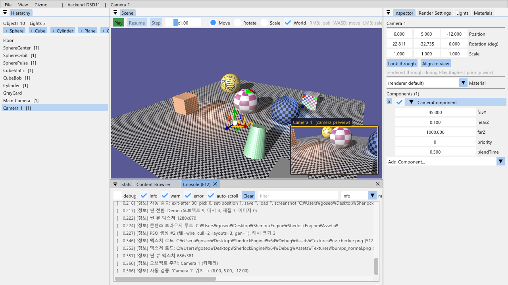
14.10 디버그 뷰
디버그 뷰는 픽셀 셰이더의 중간값 하나를 색으로 그대로 내보내는 모드입니다. Render Settings 패널의 "Debug view" 콤보(Lit, Albedo, World normal, Depth, Shadow factor, UV)가 RenderSettings::debugView 를 0~5 로 바꾸고, UploadPerFrameConstants 가 그 값을 b0 의 debugParams.x 에, 깊이 뷰의 범위(debugDepthRange)를 debugParams.y 에 넣습니다. 셰이더 변형도 PSO 변형도 없습니다. 상수 하나로 분기하므로 PSO 캐시 크기가 그대로이고, 전환이 즉시 일어납니다.
// Shaders/BasicPixelShader.hlsl — PS_Main 의 조명 루프 직전
const int debugView = (int)debugParams.x;
if (debugView == 1) return float4(albedo, 1.0f);
if (debugView == 2) return float4(normal * 0.5f + 0.5f, 1.0f);
if (debugView == 3) { const float d = saturate(length(cameraPosition - input.worldPosition) / max(debugParams.y, 0.001f)); return float4(d, d, d, 1.0f); }
if (debugView == 4) return float4(shadowFactor, shadowFactor, shadowFactor, 1.0f);
if (debugView == 5) return float4(frac(input.uv), 0.0f, 1.0f);| 값 | 이름 | 출력 | 무엇을 확인하나 |
|---|---|---|---|
| 1 | Albedo | 정점 색 × baseColor × 텍스처, 조명 없음 | 텍스처·색공간·UV 배율 |
| 2 | World normal | 노멀 맵을 적용한 뒤의 월드 노멀을 × 0.5 + 0.5 | 노멀 변환(역전치), 탄젠트 손방향, 노멀 맵의 방향 |
| 3 | Depth | 카메라까지의 거리 ÷ debugDepthRange. 가까우면 검고 멀면 흼 | 스케일과 배치. 깊이 버퍼 값이 아니라 선형 거리입니다 |
| 4 | Shadow factor | ComputeShadowFactor 의 결과(1 = 빛, 0 = 그림자) | 그림자 맵 범위, 바이어스, PCF |
| 5 | UV | frac(uv) 를 빨강·초록으로 | 프리미티브·모델의 UV 와 uvScale |
분기의 위치가 결과를 정합니다. 알파 컷아웃의 clip 과 unlit 재질의 이른 반환은 이 분기보다 앞에 있습니다. 그래서 컷아웃 구멍은 모든 뷰에서 뚫려 있고, unlit 재질(감마 검증 카드)은 디버그 뷰를 무시하고 알베도를 그대로 냅니다. 노멀 매핑과 그림자 계수는 분기보다 앞에서 계산되므로 2번과 4번 뷰는 설정(normalMapping, shadows)의 영향을 그대로 받습니다. 출력은 보통 때와 같은 sRGB 뷰를 지나므로 화면의 픽셀 값은 인코딩된 값입니다. 노멀 (0, 1, 0) 은 선형 (0.5, 1, 0.5) 이고 화면에서는 (188, 255, 188) 로 읽힙니다. 픽셀 값으로 검증할 때는 F5 로 sRGB 출력을 끄거나 역변환해야 합니다(12장). 미리보기 패스도 같은 b0 을 쓰므로 디버그 뷰가 함께 적용됩니다. 자동 검증에서는 실행 인자 --debug-view=N 이 같은 값을 넣습니다(부록 D).
unlit 이라 디버그 뷰의 영향을 받지 않습니다. (images/2026-09-23-phase11-debugview-normals.png)그림자 맵 자체는 디버그 뷰가 아니라 Render Settings 패널의 "Shadow map" 트리 노드로 봅니다. DebugUI::DrawShadowPanel 이 Device::GetImGuiTextureId(renderer.GetShadowMap()) 로 얻은 ID 를 ImGui::Image 에 넘깁니다. R32_FLOAT SRV 를 RGBA 로 샘플하면 깊이가 빨강 채널에 담기므로 가까운 곳이 검고 먼 곳이 붉게 보입니다.
14.11 캐시 무효화 — 언제 무엇을 버리나
GPU 캐시의 키가 const Mesh*·const Material* 이므로 규칙은 하나입니다. 씬의 메시·재질이 사라지기 전에 캐시를 먼저 버립니다. 순서가 바뀌면 새로 만든 메시가 우연히 같은 주소를 받았을 때 캐시가 옛 GPU 버퍼를 돌려주어, 다른 모양이 그려지거나 범위를 벗어난 인덱스로 그리게 됩니다. Scene::Clear 와 SceneSerializer::Load 의 헤더 주석이 이 순서를 적어 두었고, 모든 호출 지점이 지킵니다.
| 함수 | 버리는 것 |
|---|---|
| InvalidateMesh(mesh) | 그 메시의 정점·인덱스 버퍼와 캐시 항목 |
| InvalidateMaterial(material) | 그 재질의 리소스 셋·상수버퍼와 캐시 항목 |
| InvalidateScene(scene, releaseTextures) | 씬의 모든 메시·재질에 위 둘을 적용. releaseTextures 가 참이면 텍스처 캐시에서 builtin: 이 아닌 항목을 모두 지우고, 핸들이 흰색·평평한 노멀과 다른 것만 파괴. 큐브 캐시도 같은 규칙(검은 큐브는 파괴하지 않음)이고, m_boundEnvironment 를 비워 다음 Render 가 프레임 셋을 반드시 다시 만들게 함(BRDF LUT 는 2D 캐시와 함께 버려짐) |
| 호출하는 곳 | releaseTextures | 상황 |
|---|---|---|
| EditorApp::LoadSceneMode | true | 내장 씬 전환(F11, --scene=). 만들기에 실패해 데모 씬으로 돌아갈 때도 한 번 더 |
| EditorApp::LoadSceneFile | true | 씬 파일 열기, SceneSerializer::Load 직전 |
| EditorApp::BuildEmptyScene | true | 새 씬 |
| EditorApp::StopPlay | false | 재생 스냅샷 복원. 복원된 씬이 같은 텍스처 이름을 쓰므로 다시 디코딩하지 않습니다 (17장) |
| GameApp::OnInitialize | true | 시작 씬 로드 직전 |
| Engine::Shutdown | true | Scene::Clear 와 Renderer::Shutdown 직전 |
텍스처 캐시의 키는 포인터가 아니라 이름이므로 포인터 재사용 문제가 없습니다. 그래서 씬을 비울 때 텍스처까지 버릴지는 선택 사항이고, 매개변수로 분리했습니다. 내장 텍스처를 남기는 이유는 프레임 셋과 기본 재질이 흰색·평평한 노멀을 계속 쓰고 그 핸들을 멤버로 들고 있기 때문입니다. 로드에 실패해 흰색 핸들로 대체된 항목(12장)은 내장 핸들을 공유하므로 항목만 지우고 파괴하지 않습니다. 텍스처 캐시에는 참조 수가 없습니다. 재질을 편집해 텍스처 이름을 바꿔도 옛 텍스처는 다음 씬 전환까지 남습니다.
InvalidateScene 이 건드리지 않는 것도 있습니다. m_defaultMaterial 의 GPU 재질은 키가 Renderer 자신의 멤버 주소이므로 그대로 둡니다. PSO 캐시는 Device 의 것이고 씬과 무관합니다. 씬·미리보기 타깃과 그림자 맵도 그대로입니다. 콘텐츠 브라우저의 썸네일은 이 캐시를 쓰지 않고 자기 텍스처를 따로 만듭니다. 씬 전환마다 Renderer 의 텍스처 캐시가 비워지기 때문입니다(16장).
InvalidateMesh 와 InvalidateMaterial 을 단독으로 부르는 곳은 지금 없습니다. Scene 에 메시·재질을 하나씩 지우는 함수가 없고(RemoveObject 는 오브젝트만 지웁니다), 메시 내용을 바꾸는 편집도 없기 때문입니다. 그런 기능이 생기면 그 자리에서 불러야 합니다. 셰이더 핫리로드는 다른 캐시의 문제입니다. ReloadShaders 가 PSO 캐시를 비우면 핸들이 모두 무효가 되지만, 드로우 목록은 매 프레임 GetPipelineFor 로 다시 채우고 GpuMaterial 은 PSO 핸들을 들지 않으므로 Renderer 쪽에는 버릴 것이 없습니다(10장).
14.12 함정과 해결
| 증상 | 원인 | 해결 |
|---|---|---|
| 씬을 바꾼 뒤 엉뚱한 메시가 그려지거나 인덱스가 범위를 벗어남 | 씬을 먼저 비워 새 메시가 옛 메시와 같은 주소를 받았고, 포인터 키 캐시가 옛 버퍼를 돌려줌 | Scene::Clear·로드 전에 InvalidateScene 을 먼저 부름(14.11절) |
| 씬 전환 뒤 기본 재질이 흰색이 아니라 깨짐 | 로드 실패로 흰색 핸들을 공유하던 캐시 항목을 InvalidateScene 이 파괴함 | 내장 핸들과 같은 항목은 지우기만 하고 파괴하지 않음 |
| 핫리로드 뒤 드로우가 사라지거나 로그에 무효 핸들 경고 | PSO 핸들을 프레임을 넘겨 보관함 | GpuMaterial 에 PSO 를 넣지 않고 매 프레임 GetPipelineFor 로 얻음(14.4절) |
| 재질 편집이 화면에 반영되지 않음 | 재질 상수를 처음 한 번만 올리거나, 텍스처를 바꿨는데 셋을 다시 만들지 않음 | 상수는 프레임마다 uploadedFrame 으로 한 번, 셋은 bound* 핸들과 대조해 재생성 |
같은 재질을 쓰는 오브젝트가 여럿인데 UpdateBuffer 가 여러 번 | 드로우마다 재질 상수를 올림 | uploadedFrame == m_frameNumber 면 건너뜀 |
| 두 번째 패스의 첫 드로우에 PSO·버퍼가 바인딩되지 않음 | "직전 상태" 기억을 패스 사이에 공유함 | lastPipeline 등을 루프 함수의 지역 변수로 둠(14.7절) |
| 메인 패스에서 그림자 맵이 읽히지 않음 | 그림자 패스의 BeginRenderPass 가 attachment 와 겹치는 t8 SRV 를 풀었는데 다시 바인딩하지 않음 | DrawItems 첫머리에서 프레임 셋을 다시 바인딩 |
| 에디터에서 백버퍼가 지워지지 않고 잔상이 남음 | 씬 타깃 모드에서는 메인 패스가 백버퍼를 건드리지 않음 | BeginUIPass 가 Present → RenderTarget 전이와 Clear 를 맡음(14.8절) |
| 씬 뷰 텍스처의 sRGB RTV 생성 실패 | 타입이 정해진 UNORM 텍스처에 다른 포맷의 뷰를 만듦 | RT + SRV 색 텍스처는 Device 가 TYPELESS 로 만들고 뷰마다 포맷 지정(12장) |
| Scene 창 크기를 바꾸면 한 프레임 깨짐 | 이전 씬 텍스처를 즉시 해제했는데 GPU 가 앞 프레임에서 아직 읽는 중 | D3D12 는 DestroyTexture 가 지연 해제(8장), D3D11 은 참조 카운트. 같은 프레임의 OnGUI 에서 크기를 바꾸므로 ImGui 는 늘 새 텍스처 ID 를 받음 |
| Stats 의 barriers 가 실제 호출 수보다 작음 | Render 끝에서 cmd.GetStats() 를 복사하므로 UI 패스의 배리어가 빠짐 | 동작 자체는 정상. 값의 뜻을 14.7절·14.8절 표대로 읽음 |
| 미리보기를 켜면 draws 가 두 배 | 미리보기 패스가 같은 드로우 목록을 다시 그림 | 의도된 동작. 카메라를 선택하지 않으면 타깃을 반납해 비용이 0 |
| 컷아웃 재질의 그림자에 구멍이 없음 | 그림자 패스에는 픽셀 셰이더도 재질 셋도 없음 | 알파 테스트용 그림자 PSO 변형이 필요. 아직 하지 않음(22장) |
| 디버그 뷰에서 회색 카드가 그대로임 | unlit 반환이 디버그 분기보다 앞에 있음 | 의도된 동작. 카드는 색공간 검증용이라 항상 알베도를 냄(14.10절) |
검증 방법
- 정렬: Stats 패널의 PSO·set·mesh switches 가 각각 "서로 다른 PSO 수", "서로 다른 재질 수", "서로 다른 메시 수 + 그림자 패스 몫" 근처인지 봅니다. draws 와 같으면 정렬이 깨진 것입니다.
- 캐시: 같은 메시를 쓰는 오브젝트를 여러 개 두어도 GPU meshes 가 늘지 않아야 합니다. 씬을 전환(F11)한 뒤 GPU meshes·materials·textures 가 새 씬의 수로 줄어야 합니다.
- 씬 타깃: Scene 창 크기를 바꾸면 로그에 "씬 뷰 텍스처 W×H" 가 찍히고 Stats 의 scene view 크기가 따라와야 합니다. 두 백엔드 모두 같아야 합니다.
- 디버그 뷰:
--debug-view=2 --screenshot=…로 찍은 리드백 스크린샷에서 위를 향한 바닥의 픽셀이 (188, 255, 188) 근처여야 합니다(sRGB 출력 켬 기준).
렌더러를 둘러싼 것들입니다. 로그·설정·시간·입력 같은 코어, 에디터의 창과 도구, 재생 모드와 스크립트, 게임 빌드와 프로젝트 시스템을 다룹니다.
15.엔진 코어 — Log·Config·Time·Input·Paths·Profiler·AssetManager
이 장은 그리기와 직접 관계는 없지만 모든 코드가 기대는 서브시스템 일곱 개의 내부 동작과 설계 이유를 다룹니다. 로그가 어디로 나가는지, 설정 값이 어떤 순서로 덮어쓰이는지, dt 가 어떻게 만들어져 전달되는지, Win32 메시지가 어떻게 프레임 단위 입력 상태가 되는지, 파일 경로를 무엇을 기준으로 푸는지, CPU·GPU 시간을 어떻게 재는지, 모델 파일을 어떻게 캐시하는지가 그 내용입니다. 이 서브시스템들을 언제 어떤 순서로 초기화하는지는 3장, 한 프레임 안에서 언제 호출하는지는 4장, 누가 소유하는지는 2장에 있습니다.
Core/Log.h·Log.cppnamespace Log. 레벨 필터, 출력 대상 네 개,HrToString,ToUtf8Core/Config.h·Config.cppclass Config.engine.ini파서와Get*변환Core/GameTimer.*·Core/Time.*- Luna 의
GameTimer(시계)와 그 위의class Time(클램프·FPS·고정 스텝 누적기) Core/Input.h·Input.cppclass Input. 키·마우스의 프레임 상태Core/Paths.h·Paths.cppnamespace Paths. exe·엔진·프로젝트 세 루트와 경로 해석Core/Profiler.h·Profiler.cppnamespace Profiler,ProfileScope,GpuProfileScopeCore/AssetManager.*class AssetManager. 경로 →Model·파일 바이트 캐시Core/Engine.*class Engine. 위 시스템들과 Device·Renderer·Scene·Camera 를 소유App/AppBase.cppLoadConfig,InitLogger,MsgProc(입력 공급),InitGUI(한글 폰트),GetCommandLineOptionApp/EditorApp.cppUpdateCamera,BeginLook,EndLook,OnFocusLostApp/DebugUI.cppDrawEnginePanel,DrawProfilerPanel,DrawLogConsoleRHI/D3D11/D3D11Device.cpp·RHI/D3D12/D3D12Device.cppWriteTimestamp,GetTimestampResults의 두 구현
15.1 Log — 네임스페이스 파사드와 네 개의 출력 대상
왜 클래스가 아니라 namespace 인가
로그는 Log::Info("…") 처럼 자유 함수로 부릅니다. Log 는 클래스도 싱글턴 객체도 아니고 namespace 입니다. 파사드(facade)는 복잡한 내부를 단순한 창구 하나로 가리는 구조를 말하는데, 여기서는 함수 네 개(Debug·Info·Warn·Error)가 창구이고 그 뒤의 필터·서식·출력 대상은 Log.cpp 안에 숨어 있습니다. 호출부는 엔진·에디터·게임을 합쳐 300여 곳이고, 내부 구현이 바뀌어도 이 호출부는 바뀌지 않습니다.
namespace 가 무엇을 하고 무엇을 하지 않는지는 정확히 구분해야 합니다.
- namespace 는 전역 변수·함수를 "만드는" 기법이 아닙니다.
Log::Info는 원래 전역 함수이고, namespace 는 그 이름 앞에Log::라는 소속을 붙여 다른 곳의Info·Error와 충돌하지 않게 할 뿐입니다. 저장 기간(storage duration)이나 링키지(linkage)는 건드리지 않습니다. - namespace 는 가시성을 넓히지 않습니다. 헤더 include 는 여전히 필요합니다. C++ 컴파일러는 번역 단위(
.cpp하나와 그것이 include 한 헤더들)를 따로따로 컴파일합니다. 어떤.cpp가Log::Error를 쓰려면 그 번역 단위 안에서 선언이 보여야 하고, 그 선언을 보여 주는 것이#include "Core/Log.h"입니다. 선언을 못 보면 전역 함수든 namespace 함수든 클래스 정적 함수든 똑같이 "식별자를 찾을 수 없음" 오류가 납니다. - "include 없이 쓰이는 것처럼 보이는" 이름은
pch.h가 대신 include 한 것입니다.std::string이나XMFLOAT3는pch.h가<string>·<DirectXMath.h>를 넣어 주고 모든.cpp가 첫 줄에서pch.h를 include 하기 때문에 보입니다.Core/Log.h는pch.h에 없으므로 쓰는.cpp마다 직접 include 합니다. - 같은 namespace 는 여러 파일에서 다시 열 수 있습니다.
Log.h의namespace Log { … }에는 선언을,Log.cpp의namespace Log { … }에는 정의를 둡니다. 상태가 파일 지역에만 있는 자유 함수 묶음에는 클래스 정적 멤버보다 이 형태가 단순하고, 인스턴스를 넘겨 다닐 필요도 없습니다.Paths·Profiler·DebugUI도 같은 형태입니다. - 이름 없는 namespace 는 반대 방향입니다.
Log.cpp맨 위의namespace { … }안에 있는State,S(),Emit,FormatV,SetupConsole은 내부 링키지를 가져서 다른 번역 단위에서 이름으로 참조할 수 없습니다. C 의 파일 지역static함수와 같은 역할입니다.
Log.h 는 HrToString(HRESULT) 때문에 HRESULT 타입이 필요합니다. windows.h 전체 대신 그 typedef 가 들어 있는 <winerror.h> 만 include 해서, pch.h 없이도 단독으로 컴파일되는 헤더로 만들었습니다. 헤더는 자기가 쓰는 타입을 스스로 include 한다는 규칙입니다.
상태와 Emit
로그의 상태는 Log.cpp 의 State 구조체 하나이고, S() 가 함수 지역 static 으로 한 번 만들어 돌려줍니다. 네 공개 함수는 가변 인자를 va_list 로 묶어 Emit 에 넘깁니다.
// Core/Log.cpp — Emit (줄임)
if (level < s.minLevel) return; // 서식 비용도 들지 않음
const std::string body = FormatV(fmt, args); // vsnprintf 두 번(길이 → 내용)
const double time = Now(s); // Init 이후 경과 초 (QueryPerformanceCounter)
const std::string line = std::string(Prefix(level)) + body + "\n";
const std::string stamp = std::format("[{:9.3f}] ", time);
std::lock_guard<std::mutex> lock(s.mutex);
++s.counts[static_cast<int>(level)];
if (s.console) { std::fputs(line.c_str(), stdout); if (level >= Log::Level::Warn) std::fflush(stdout); }
WriteToDebugger(line); // OutputDebugStringW
if (s.file.is_open()) { s.file << stamp << line; s.file.flush(); }
if (s.historyCapacity > 0) { … s.history.push_back(Log::Entry{ level, time, body }); ++s.historyVersion; }| 출력 대상 | 조건 | 형식과 특징 |
|---|---|---|
| 콘솔(stdout) | log.console 이 참이고 SetupConsole 이 성공했을 때 | 접두어 + 본문. 줄 단위 버퍼(_IOLBF), 경고 이상은 즉시 fflush. 콘솔이 붙는 조건은 15.11절 |
OutputDebugStringW | 항상 | Visual Studio 출력 창에 D3D Debug Layer 메시지와 같이 보입니다 |
| 파일 | log.file 이 비어 있지 않고 열렸을 때 | [ 7.257] [정보] …. exe 폴더 기준 경로(기본 Logs\SherlockEngine.log), 실행마다 새로 씀. 줄마다 flush 해서 크래시 직전 줄까지 남깁니다 |
| 메모리 히스토리 | 항상(용량 4,000줄) | std::deque<Entry> 를 링 버퍼처럼 사용. 에디터 Console 창이 CopyHistory 로 읽습니다 |
레벨은 Debug < Info < Warn < Error 이고 접두어는 각각 [디버그]·[정보]·[경고]·[실패] 입니다. 최소 레벨(log.level, 기본 info)보다 낮은 로그는 어느 대상에도 나가지 않습니다. 현재 코드에는 Log::Debug 호출부가 없습니다. 뮤텍스 하나가 네 대상에 쓰는 구간 전체를 감싸므로 여러 스레드가 로그를 남겨도 줄이 섞이지 않습니다.
Log::Init 은 AppBase::InitLogger 가 설정을 읽은 뒤 한 번 부릅니다. 그 전에 남긴 로그(예: Paths 의 실패 로그)도 안전합니다. 콘솔과 파일이 아직 없을 뿐 OutputDebugString 과 히스토리에는 기록되고, 시각은 0 으로 찍힙니다. Log::Shutdown 은 파일만 닫습니다.
문자 인코딩
소스는 /utf-8 로 컴파일되므로 한글 문자열 리터럴은 UTF-8 바이트입니다. 출력 대상마다 그 바이트를 올바르게 해석하게 맞춰야 합니다.
- 콘솔:
SetupConsole이SetConsoleOutputCP(CP_UTF8)을 부릅니다. 한국어 Windows 콘솔의 기본 코드페이지는 CP949 라서 이 호출이 없으면 한글이 깨집니다. - 디버거:
OutputDebugStringA는 시스템 ANSI 코드페이지로 해석하므로 쓰지 않습니다.WriteToDebugger가MultiByteToWideChar(CP_UTF8, …)로 UTF-16 으로 바꾼 뒤 W 버전을 부릅니다. - 파일: 맨 앞에 UTF-8 BOM(
EF BB BF)을 써서 메모장이 인코딩을 바로 알아보게 합니다. - 넓은 문자열 인자: 경로는
std::wstring(UTF-16) 이므로Log::ToUtf8(path.c_str()).c_str()로 바꿔%s에 넘깁니다.ToUtf8은WideCharToMultiByte(CP_UTF8, …)입니다.
printf 서식과 std::format 의 범위
공개 함수의 서식은 printf 규칙(%s, %d, %.2f)입니다. C++20 std::format 은 Log.cpp 내부의 두 곳, 즉 파일 시각 스탬프 "[{:9.3f}] " 와 HrToString 의 "0x{:08X}" 에만 씁니다. 공개 API 를 바꾸지 않은 이유는 호출부 수 때문만이 아닙니다. 같은 이름으로 std::format_string 오버로드를 추가하면 Log::Info("x %d", 3) 이 그 오버로드에도 적법하게 맞습니다. std::format 에서는 치환 필드 없이 인자가 남는 것이 오류가 아니므로 컴파일 경고 없이 "x %d" 가 그대로 찍힙니다. 두 서식 체계를 한 오버로드 집합에 섞지 않는 것이 규칙입니다.
셰이더 컴파일러 메시지처럼 % 가 들어 있을 수 있는 외부 텍스트를 Log::Error(text) 로 넘기면 서식 지정자로 해석됩니다. 반드시 Log::Error("%s", text) 처럼 인자로 넘깁니다.
15.2 HRESULT 로깅과 반환 규약
HRESULT 는 COM·Direct3D 함수가 돌려주는 32비트 결과 코드입니다. 숫자만 찍으면 뜻을 알 수 없으므로 Log::HrToString 이 0x80070002 (지정된 파일을 찾을 수 없습니다.) 형태의 문자열로 바꿉니다.
// Core/Log.cpp — HrToString (줄임)
std::string result = std::format("0x{:08X}", static_cast<unsigned int>(hr));
LPWSTR text = nullptr;
const DWORD len = ::FormatMessageW(
FORMAT_MESSAGE_ALLOCATE_BUFFER | FORMAT_MESSAGE_FROM_SYSTEM | FORMAT_MESSAGE_IGNORE_INSERTS,
nullptr, static_cast<DWORD>(hr), MAKELANGID(LANG_NEUTRAL, SUBLANG_DEFAULT),
reinterpret_cast<LPWSTR>(&text), 0, nullptr);
if (len > 0 && text != nullptr) { … result += " (" + message + ")"; } // 끝의 개행은 떼어 냄
if (text != nullptr) ::LocalFree(text);이 코드에 나오는 Win32 타입 두 개를 풀어 둡니다. DWORD 는 unsigned long, 즉 32비트 부호 없는 정수입니다(Windows 에서는 long 도 32비트). 이름은 16비트 WORD 의 두 배(Double WORD)에서 왔습니다. LPWSTR 은 wchar_t* 의 별칭으로, LP 는 포인터, W 는 넓은 문자, STR 은 널로 끝나는 문자열을 뜻합니다. FORMAT_MESSAGE_ALLOCATE_BUFFER 를 주면 FormatMessageW 가 버퍼를 직접 할당해 그 주소를 돌려주므로, 포인터의 주소(&text)를 LPWSTR 로 캐스팅해 넘기고 쓴 뒤에는 LocalFree 로 해제합니다.
반환 규약
오류를 올려 보내는 방법은 한 가지로 통일되어 있습니다.
- 엔진 API 는
bool을 돌려줍니다. 포인터를 돌려주는 조회 함수는nullptr이 실패입니다(AssetManager::GetModel). HRESULT는 D3D 호출 직후 그 자리에서 검사하고,HrToString으로 로그를 남긴 뒤bool로 바꿔 올립니다.HRESULT가 백엔드 폴더 밖으로 나가지 않습니다.- 예외와
ThrowIfFailed류 매크로는 쓰지 않습니다. 초기화처럼 "실패하면 종료"인 곳과 에셋 로드처럼 "실패해도 계속"인 곳을 한 가지 방식으로 다루는 편이 이 규모에서는 단순합니다. - 실패 이유는 실패한 곳에서 한 번만
Log::Error로 남기고, 위쪽은false를 전달하거나 자기 맥락 한 줄만 덧붙입니다.
// RHI/D3D11/D3D11Device.cpp — CreateTimestampQueries
HRESULT hr = m_device->CreateQuery(&disjointDesc, set.disjoint.GetAddressOf());
if (FAILED(hr)) { Log::Error("CreateQuery(DISJOINT) 실패. %s", Log::HrToString(hr).c_str()); return false; }
// Core/Engine.cpp — Initialize
if (!m_device) { Log::Error("Engine : Device 초기화 실패 (%s)", RHI::ToString(m_backend)); return false; }
// SherlockEditor/EditorMain.cpp — wWinMain
if (!app.Initialize()) { Log::Error("App 초기화 실패!"); return -1; }초기화가 도중에 실패해도 소멸자가 안전하게 돌도록 AppBase 는 실제로 초기화한 것만 플래그(m_guiContextCreated, m_guiWin32Initialized, m_comInitialized)로 기록해 두고 그것만 되돌립니다. 같은 경고가 프레임마다 반복될 수 있는 곳은 static bool warned 로 한 번만 남깁니다(Paths::GetShaderPath, Profiler::BeginGpu). 이 규약을 정한 경위는 D16 에 있습니다.
15.3 Config — engine.ini 와 명령줄 덮어쓰기
Config 는 "key = value" 줄과 "[section]" 헤더만 아는 INI 파서입니다. LoadFromFile 은 한 줄씩 읽으면서 첫 줄의 UTF-8 BOM 을 떼고, ; 또는 # 부터 줄 끝까지를 주석으로 지우고, 앞뒤 공백을 자릅니다. 키는 section.key 로 평탄화해 소문자로 저장하고([engine] 의 backend 는 "engine.backend"), 값은 문자열 그대로 둡니다. 조회 함수도 키를 소문자로 바꿔 찾으므로 키는 대소문자를 가리지 않습니다. GetInt 는 strtol, GetFloat 은 strtof 로 변환하고 한 글자도 읽지 못하면 기본값을 돌려줍니다. GetBool 은 true/1/yes/on 과 false/0/no/off 를 받고 그 밖에는 기본값입니다.
주석 문자를 값 안에서 따로 처리하지 않으므로 값에 ; 나 # 를 넣을 수 없습니다. 파싱 오류('=' 없음, 닫히지 않은 섹션, 키 없음)는 줄 번호와 함께 m_errors 에 모아 두기만 합니다. 설정은 Logger 보다 먼저 읽히기 때문에(로그 파일 경로가 설정에서 나옵니다) 파싱 도중에는 로그를 남길 수 없고, AppBase::Initialize 가 Logger 를 연 뒤 GetErrors() 를 경고로 한꺼번에 냅니다.
| 키 | 기본값 | 읽는 곳 | 뜻 |
|---|---|---|---|
| engine.backend | d3d11 | Engine::Initialize | d3d11 또는 d3d12. 모르는 값이면 경고 후 D3D11 |
| engine.width / height | 1280 / 720 | AppBase::LoadConfig | 클라이언트 영역 크기. 64 미만이면 64 |
| engine.vsync | false | Engine::Initialize | Device::SetVSync |
| engine.debuglayer | true | Engine::Initialize | DeviceDesc::enableDebugLayer. Debug 빌드에서만 실제로 켜집니다 |
| engine.fixedstep | 1/60 | Engine::Initialize | 고정 스텝(초). Time::SetFixedStep |
| engine.scene | demo | EditorApp::OnInitialize | demo·helmet·sponza 또는 *.json. 프로젝트의 시작 씬을 로드하지 않았을 때 쓰입니다 |
| game.startScene / title | "" / Sherlock Game | GameApp::OnInitialize | 게임 런타임의 시작 씬과 창 제목(17장) |
| log.level | info | AppBase::InitLogger | debug·info·warn(warning)·error |
| log.file | Logs\SherlockEngine.log | AppBase::InitLogger | exe 폴더 기준 상대 경로. 빈 값이면 파일 출력 없음 |
| log.console | true | AppBase::InitLogger | 콘솔 출력 사용 여부 |
| log.allocConsole | false | AppBase::InitLogger | 콘솔이 전혀 없을 때 새 콘솔 창을 열지 여부 |
값이 정해지는 순서
우선순위는 낮은 쪽부터 코드의 기본값 → engine.ini → 명령줄입니다. AppBase::LoadConfig 가 이 순서를 한 함수에서 처리합니다.
Paths::GetAssetPath(L"Config\\engine.ini")로 파일을 찾아 읽습니다. 이 함수가 프로젝트Assets\, 엔진Assets\,exe\Assets\순으로 찾으므로(15.7절) 프로젝트가 자기Assets\Config\engine.ini를 두면 그것이 쓰입니다. 그래서ResolveProject가LoadConfig보다 먼저 호출됩니다. 파일이 없으면 기본값으로 계속 실행하고 경고 한 줄을 남깁니다.- 명령줄의
--key=value인자를 모두Config::Set으로 덮어씁니다.--backend=는engine.backend,--scene=은engine.scene으로 이름을 바꿔 넣고, 나머지는--engine.vsync=true,--log.level=debug처럼section.key를 그대로 적습니다.--exit-after=8같은 자동 검증 인자도 같은 규칙으로 설정에 들어가지만 그 키를 설정으로 읽는 코드는 없습니다. engine.width·engine.height를 읽어 창 크기를 정합니다.
Engine::Initialize 는 넘겨받은 Config 를 복사해 m_config 에 보관하고, 패널(DebugUI::DrawEnginePanel 의 "Config values")이 최종 값 전체를 정렬해 보여 줍니다.
명령줄을 읽는 Win32 함수
// App/AppBase.cpp — GetCommandLineOption
int argc = 0;
LPWSTR* argv = CommandLineToArgvW(GetCommandLineW(), &argc);
if (argv == nullptr) return result;
const std::wstring prefix = std::wstring(L"--") + name + L"=";
for (int i = 1; i < argc; ++i)
if (_wcsnicmp(argv[i], prefix.c_str(), prefix.size()) == 0) result = argv[i] + prefix.size();
LocalFree(argv);진입점이 main(argc, argv) 가 아니라 wWinMain 이므로 잘린 인자 배열을 받지 못합니다. GetCommandLineW() 는 프로세스 명령줄 전체를 UTF-16 문자열 하나로 돌려줍니다(운영체제 소유이므로 해제하지 않습니다). CommandLineToArgvW()(<shellapi.h>)는 그 문자열을 공백과 따옴표 규칙에 따라 잘라 LPWSTR*(wchar_t**, 문자열 배열)로 만들고 개수를 argc 에 채웁니다. 이 배열은 함수가 할당한 메모리라 LocalFree 로 해제해야 합니다. argv[0] 은 exe 경로이므로 1 부터 훑습니다. std::wstring 은 wchar_t 문자열이고 Windows 에서 내용은 UTF-16 입니다. Win32 의 W 계열 API 가 UTF-16 을 받기 때문에 엔진의 파일 경로는 모두 std::wstring 이고, 리터럴은 L"…" 로 씁니다. GetCommandLineOption 은 --project=, --exit-after=, --screenshot= 등 설정 키가 아닌 인자를 읽을 때 쓰며, 같은 이름이 여러 번 나오면 마지막 값이 남습니다. 인자 전체 목록은 부록 D 에 있습니다.
15.4 Time 과 GameTimer — dt, 클램프, 고정 스텝 누적기
시계: GameTimer
GameTimer 는 Frank Luna 의 교재 코드 그대로입니다. 시간의 원천은 QueryPerformanceCounter(QPC)로, 부팅 이후 단조 증가하는 정수 틱을 돌려줍니다. 1초에 몇 틱인지는 QueryPerformanceFrequency 가 알려 주고, 생성자가 그 역수를 mSecondsPerCount 에 저장합니다. Tick() 은 "이번 틱 − 이전 틱"에 그 값을 곱해 mDeltaTime 을 만들고, 음수가 나오면 0 으로 고칩니다. TotalTime() 은 프레임마다 dt 를 더해 가는 방식이 아니라 (현재 틱 − 정지 누적 틱 − 기준 틱) × mSecondsPerCount 로 매번 계산합니다. 정수 틱의 차이를 한 번만 실수로 바꾸므로 부동소수점 오차가 쌓이지 않습니다.
프레임 시간: Time::Tick
Time 은 GameTimer 를 멤버로 갖고 그 위에 세 가지를 얹습니다. Engine::BeginFrame 이 프레임마다 한 번 Tick() 을 부릅니다.
// Core/Time.cpp — Tick (줄임)
m_timer.Tick();
m_rawDeltaTime = m_timer.DeltaTime();
m_deltaTime = m_rawDeltaTime < 0.0f ? 0.0f : (m_rawDeltaTime > maxDeltaTime ? maxDeltaTime : m_rawDeltaTime);
m_totalTime = m_timer.TotalTime();
++m_frameCount;
… // FPS: raw dt 를 0.5초 구간으로 모아 평균
m_accumulator += m_deltaTime;
m_fixedStepsLastFrame = m_fixedStepsThisFrame;
m_fixedStepsThisFrame = 0;
return m_deltaTime;- 최대 dt 클램프.
maxDeltaTime은 0.25초입니다. 창을 끌거나 디버거에서 멈췄다 돌아오면 그 시간 전체가 다음 프레임의 dt 가 되는데, 이것을 그대로 쓰면 "속도 × dt" 로 움직이는 것들이 순간이동합니다.GetDeltaTime()은 잘린 값,GetRawDeltaTime()은 측정값입니다.GetTotalTime()은 시계에서 직접 오므로 잘리지 않습니다. 따라서 긴 정지가 있었다면 dt 의 합과 총 시간은 일치하지 않습니다. - FPS. 측정값(raw)을 0.5초 구간으로 모아
프레임 수 ÷ 구간 시간으로 갱신합니다. ImGui 의Framerate가 아니라 엔진 시계 기준이라 ImGui 가 없는 게임 런타임에서도 같습니다. - 고정 스텝 누적기. 아래에서 설명합니다.
dt 는 인자로 넘긴다
dt 는 전역 변수가 아니라 함수 인자로 전달합니다. AppBase::Run 이 const float dt = m_engine.BeginFrame(); 으로 받아 OnUpdate(dt) 에 넘기고, 앱은 그것을 UpdateCamera(dt), scene.Update(dt * m_timeScale) 로 다시 넘깁니다. 전역 시간 객체로 두면 "누가 언제 갱신했는가"가 호출 순서에 숨고, ImGui::GetIO().DeltaTime 을 쓰면 시간이 UI 라이브러리에 묶여 ImGui 를 만들지 않는 게임 런타임에서 쓸 수 없습니다. 인자로 넘기면 Run 의 한 줄이 "시간은 갱신보다 먼저 정해진다"는 규칙 자체가 되고, 재생 중 시간 배율처럼 호출자가 dt 를 바꿔 넘기는 일도 자연스럽습니다. 경과 시간이 필요한 곳은 Time::GetTotalTime() 을 읽습니다(Engine::Render 가 Renderer::Render 에 넘기는 값).
가변 스텝과 고정 스텝
OnUpdate(dt) 는 가변 스텝입니다. 프레임이 길면 dt 가 크고 물체는 그만큼 더 움직입니다. 카메라 이동이나 단순 회전에는 이것으로 충분하지만, 물리 적분은 dt 가 달라지면 같은 입력에도 결과가 달라지고 dt 가 크면 불안정해집니다. 그래서 dt 가 일정해야 하는 갱신을 위해 고정 스텝을 따로 둡니다. Fiedler 의 "Fix Your Timestep!" 구조 그대로, 렌더 프레임이 시간을 누적기에 넣고 고정 갱신이 그것을 fixedStep 단위로 꺼내 씁니다.
// Core/Time.cpp
bool Time::ConsumeFixedStep()
{
if (m_accumulator < m_fixedStep) return false;
if (m_fixedStepsThisFrame >= maxFixedStepsPerFrame) { m_accumulator = 0.0f; return false; } // 따라잡기 포기
m_accumulator -= m_fixedStep;
++m_fixedStepsThisFrame;
return true;
}
// App/AppBase.cpp — Run
while (time.ConsumeFixedStep()) OnFixedUpdate(time.GetFixedStep());
OnUpdate(dt);고정 스텝의 기본값은 1/60초(engine.fixedstep)입니다. 프레임이 16.7 ms 보다 짧으면 그 프레임에는 고정 갱신이 한 번도 돌지 않고, 길면 여러 번 돕니다. 한 프레임의 상한은 maxFixedStepsPerFrame(8)입니다. 고정 갱신 자체가 느려서 프레임이 길어지면 다음 프레임에 더 많이 돌아야 하고 그러면 더 길어지는 악순환(죽음의 나선)이 생기는데, 상한에 닿으면 남은 누적 시간을 버려 이것을 끊습니다. 누적기에 남은 자투리는 다음 프레임으로 넘어가고, GetInterpolationAlpha()(accumulator ÷ fixedStep)는 렌더 시점이 두 고정 스텝 사이의 어디쯤인지를 알려 줍니다. 지금은 패널에 표시만 하고 보간에 쓰지는 않습니다.
에디터에서 고정 스텝을 받는 곳은 EditorApp::OnFixedUpdate 이고, 재생 중일 때만 scene.FixedUpdate(fixedDt * m_timeScale) 를 부릅니다.
일시정지
GameTimer 에는 Stop()/Start() 가 있어서 정지 구간을 총 시간에서 빼는 기능이 있지만, Time 은 이것을 밖으로 내놓지 않고 현재 Stop() 을 부르는 코드도 없습니다. 엔진 시계는 항상 흐릅니다. 재생 모드의 일시정지는 시계를 멈추는 것이 아니라 앱이 갱신을 부르지 않는 방식입니다. EditorApp 의 재생 상태가 Paused 이면 OnUpdate·OnFixedUpdate 가 scene.Update·scene.FixedUpdate 를 건너뛰고, Step 버튼은 고정 스텝 하나만큼(GetFixedStep()) 두 함수를 한 번씩 부릅니다. 그래서 일시정지 중에도 에디터 카메라와 UI 는 정상적으로 움직입니다(17장).
15.5 Input — 메시지에서 프레임 상태로
Win32 는 입력을 이벤트로 줍니다. 키를 누르면 WM_KEYDOWN 이 오고, 누르고 있으면 자동 반복으로 계속 오고, 떼면 WM_KEYUP 이 옵니다. 갱신 코드가 원하는 것은 상태입니다. "지금 W 가 눌려 있는가"(이동)와 "이번 프레임에 F1 이 눌렸는가"(토글)를 묻습니다. Input 이 이 둘을 잇습니다.
// Core/Input.h · Input.cpp — 상태와 질의
bool m_keys[256], m_prevKeys[256]; bool m_mouse[3], m_prevMouse[3];
int m_x, m_y, m_dx, m_dy; bool m_hasPosition; float m_wheel;
IsKeyDown(vk) = m_keys[vk]
IsKeyPressed(vk) = m_keys[vk] && !m_prevKeys[vk] // 이번 프레임에 눌림
IsKeyReleased(vk) = !m_keys[vk] && m_prevKeys[vk] // 이번 프레임에 뗌
EndFrame() : prev ← cur, m_dx = m_dy = 0, m_wheel = 0이 모델은 메시지가 프레임 사이에만 처리된다는 조건 위에서 성립합니다. AppBase::Run 은 PeekMessage 가 참인 동안 메시지만 처리하고, 큐가 비었을 때만 한 프레임을 진행합니다. 순서는 [메시지 전부] → [BeginFrame, Update, GUI, Render] → Engine::EndFrame 의 Input::EndFrame → [메시지 전부] 이므로 한 프레임 안에서 m_keys 가 바뀌지 않고, Pressed 는 "직전 프레임에는 안 눌렸고 지금은 눌려 있다"로 정확히 정의됩니다.
메시지 (AppBase::MsgProc) | 공급 함수 | 비고 |
|---|---|---|
| WM_KEYDOWN / WM_SYSKEYDOWN | OnKeyDown(wParam) | 자동 반복은 같은 값을 다시 쓰는 것이라 무해합니다. Alt 조합은 DefWindowProc 으로 넘겨야 Alt+F4 가 동작합니다. F10 만 return 0 으로 삼킵니다 |
| WM_KEYUP / WM_SYSKEYUP | OnKeyUp(wParam) | |
| WM_L/R/MBUTTONDOWN·UP | OnMouseButton(button, down) | |
| WM_MOUSEMOVE | OnMouseMove(x, y) | 한 프레임에 여러 번 오면 델타를 누적합니다. 첫 이동은 델타를 만들지 않습니다(m_hasPosition) |
| WM_MOUSEWHEEL | OnMouseWheel(delta) | WHEEL_DELTA(120)로 나눈 값 |
| WM_KILLFOCUS | OnFocusLost() | 키·버튼·델타·위치 전부 초기화. 이어서 앱의 OnFocusLost() |
| WM_CAPTURECHANGED | OnCaptureLost() | lParam != hwnd 일 때만. 마우스 버튼과 델타만 초기화(15.6절) |
WM_MOUSEMOVE 의 좌표는 LOWORD/HIWORD 가 아니라 GET_X_LPARAM/GET_Y_LPARAM 으로 꺼냅니다. 마우스를 캡처한 동안에는 커서가 창 밖으로 나가 음수 좌표가 오는데, LOWORD 는 부호 없는 값으로 해석해 65,000 근처의 값을 만듭니다. F10 을 따로 처리하는 이유는 이 키가 혼자 눌려도 WM_SYSKEYDOWN 으로 오고, DefWindowProc 이 메뉴 모드에 들어가 다음 키 입력을 삼키기 때문입니다.
공급은 무조건, 판단은 소비하는 쪽에서
ImGui 텍스트 필드에 글자를 치는 동안 W 를 누르면 카메라가 움직이면 안 됩니다. 이것을 막는 방법은 두 가지입니다. (a) MsgProc 에서 ImGui 가 입력을 쓰는 중이면 Input 에 넣지 않는다. (b) 항상 넣고, 갱신 코드가 쓸지 말지를 정한다. 이 엔진은 (b)입니다. (a)는 키 고착을 만듭니다. 씬 위에서 W 를 누른 채 커서를 UI 로 옮기고 거기서 떼면 WM_KEYUP 이 Input 에 닿지 않아 W 가 눌린 상태로 남고 카메라가 계속 전진합니다. (b)에서는 Input 의 상태가 언제나 실제 키보드와 같습니다. MsgProc 은 ImGui_ImplWin32_WndProcHandler 를 먼저 부르는데, 이 핸들러는 키·마우스 메시지를 기록만 하고 0 을 돌려주므로 아래의 switch 가 이어서 Input 에 공급합니다.
포커스를 잃을 때는 반대로 전부 지웁니다. Alt-Tab 으로 다른 창에 간 뒤 뗀 키는 WM_KEYUP 이 이 창으로 오지 않기 때문입니다. OnFocusLost 는 현재 상태만 지우고 이전 상태는 두므로, 누르고 있던 키는 그 프레임에 Released 로 한 번 관측됩니다.
WantCapture 의 타이밍
ImGui 의 io.WantCaptureMouse·WantCaptureKeyboard·WantTextInput 은 ImGui::NewFrame() 안에서 갱신됩니다. 그래서 AppBase::Run 은 ImGui::NewFrame() 을 OnUpdate 보다 먼저 부릅니다. 순서가 반대면 갱신 코드는 한 프레임 전의 값을 읽습니다. 에디터에서는 화면 전체가 도킹된 ImGui 창이라 WantCaptureMouse·WantCaptureKeyboard 가 씬 위에서도 항상 참입니다. 그래서 소비 측은 이 둘 대신 "씬 뷰 위에 커서가 있는가"(Editor::IsSceneViewHovered)와 "텍스트를 입력 중인가"(io.WantTextInput)를 봅니다. EditorApp::OnUpdate 의 F1~F12 단축키도 !io.WantTextInput 일 때만 처리합니다. 게임 런타임은 ImGui 프레임을 열지 않으므로 이 판단 자체가 없고, 재생 중 스크립트는 Scene::BeginPlay 가 넘겨준 Input* 로 같은 질의를 합니다.
15.6 마우스 룩과 에디터 카메라 컨트롤러
에디터의 자유 카메라는 EditorApp::UpdateCamera(dt) 가 매 프레임 Input 을 읽어 Camera 를 움직이는 방식입니다. 조작 체계는 아래와 같고, Camera::Rotate·Camera::Move 안의 수학(yaw/pitch, 뷰 행렬)은 13장에 있습니다.
| 조작 | 동작 | 조건 |
|---|---|---|
| 우클릭 드래그 | camera.Rotate(dx × 0.0025, dy × 0.0025) 감도 m_lookSensitivity, 라디안/픽셀 | 씬 뷰 위에서 누른 순간에만 시작. 기즈모 조작 중이거나 에셋을 끄는 중이면 시작하지 않습니다 |
| W / S, D / A | 카메라의 전방·오른쪽 벡터로 이동 전방에 pitch 가 포함되므로 위를 보고 W 를 누르면 떠오릅니다 | 텍스트 입력 중이 아니고(!io.WantTextInput), 씬 뷰에 포커스나 커서가 있거나 룩 중일 때 |
| E / Q | 월드 +Y / −Y 로 이동 카메라가 어디를 보든 수직 | |
| Shift | 이동 속도 4배 기본 m_moveSpeed 는 씬마다 다르고, Render Settings 의 Speed 슬라이더로 바꿉니다 |
재생 중에 게임 카메라 컴포넌트가 카메라를 움직이고 있으면(GetPlayContext().cameraDriven) 이 함수는 EndLook() 만 부르고 바로 돌아갑니다. 룩은 래치(latch)입니다. 시작 여부만 씬 뷰 hover 로 판단하고, 일단 시작하면 커서가 다른 패널 위를 지나가도 우클릭을 뗄 때까지 유지합니다.
캡처, 커서 숨김, 재중앙화
// App/EditorApp.cpp
void EditorApp::BeginLook()
{
if (m_lookActive) return;
GetCursorPos(&m_lookAnchorScreen);
SetCapture(GetWindow()); // m_lookActive 를 세우기 전에 호출
m_lookActive = true;
ShowCursor(FALSE);
ImGui::GetIO().ConfigFlags |= ImGuiConfigFlags_NoMouseCursorChange;
}
void EditorApp::EndLook()
{
if (!m_lookActive) return; // 여러 번 불러도 한 번만 실행
m_lookActive = false;
ImGui::GetIO().ConfigFlags &= ~ImGuiConfigFlags_NoMouseCursorChange;
ShowCursor(TRUE);
SetCursorPos(m_lookAnchorScreen.x, m_lookAnchorScreen.y);
if (GetCapture() == GetWindow()) ReleaseCapture();
}SetCapture. 마우스를 캡처하면 버튼을 누른 동안 커서가 창을 벗어나도WM_MOUSEMOVE와WM_RBUTTONUP이 이 창으로 옵니다. 없으면 드래그 도중 커서가 창 밖으로 나가는 순간 회전이 멈추고 버튼 업도 놓칩니다.ShowCursor는 카운터입니다. FALSE 는 1 감소, TRUE 는 1 증가이고 0 이상일 때만 커서가 보입니다. 그래서BeginLook의 FALSE 한 번과EndLook의 TRUE 한 번이 정확히 짝을 이루어야 하고, 두 함수 모두m_lookActive로 중복 실행을 막습니다.NoMouseCursorChange플래그는 ImGui Win32 백엔드가 매 프레임 커서 모양을 다시 설정하는 것을 막습니다.- 재중앙화. 커서가 화면 가장자리에 닿으면 델타가 0 이 되므로, 룩 중에는 매 프레임
SetCursorPos로 커서를 드래그 시작점(앵커)에 되돌립니다. 그런데SetCursorPos도WM_MOUSEMOVE를 만듭니다. 이것을 델타로 세면 되돌아온 이동이 반대 방향 회전이 되어 화면이 제자리에서 떱니다. 그래서UpdateCamera가 직후에Input::SetMousePositionSilently(앵커의 클라이언트 좌표)를 불러 현재 위치만 바꾸고 델타에는 넣지 않습니다. 뒤따라 오는WM_MOUSEMOVE(앵커)는 델타 0 이 됩니다.
WM_CAPTURECHANGED 가 자기 자신에게 온다
Windows 는 캡처 창이 바뀔 때 이전 캡처 창에 WM_CAPTURECHANGED 를 동기적으로 보내고, lParam 에 캡처를 새로 얻는 창을 담습니다. 이전 창과 새 창이 같아도 보냅니다. ImGui Win32 백엔드가 마우스 버튼 다운에서 먼저 SetCapture 를 부르기 때문에 BeginLook 이 SetCapture 를 부르는 시점에는 이미 이 창이 캡처를 갖고 있고, 따라서 그 호출 안에서 자기 자신에게 이 메시지가 옵니다. 이것을 캡처 상실로 처리하면 OnFocusLost → EndLook 이 실행되어 룩이 시작하자마자 끝납니다. 방어는 두 겹입니다.
AppBase::MsgProc은reinterpret_cast<HWND>(lParam) != hwnd일 때만input.OnCaptureLost()와OnFocusLost()를 부릅니다.BeginLook은SetCapture를m_lookActive = true보다 먼저 부릅니다. 메시지가 오더라도EndLook은 아무것도 하지 않고,ShowCursor카운터도 어긋나지 않습니다.
OnCaptureLost 가 키보드를 지우지 않는 이유도 여기에 있습니다. ImGui 는 버튼 업마다 ReleaseCapture 를 부르고 이때 lParam 은 NULL 이라 캡처 상실 경로를 탑니다. 키보드까지 지우면 좌클릭 한 번에 W 가 풀려 클릭할 때마다 이동이 끊깁니다. EndLook 이 불리는 경로는 네 가지입니다. 우클릭을 뗐을 때, 재생 중 게임 카메라가 주도할 때, WM_KILLFOCUS, 다른 창으로의 WM_CAPTURECHANGED 입니다. 뒤의 둘은 가상 함수 AppBase::OnFocusLost() 를 거치며, 이 경로가 없으면 드래그 중 Alt-Tab 을 했을 때 커서가 숨겨진 채 남습니다.
마우스 룩의 정석은 WM_INPUT(Raw Input)입니다. 커서 위치가 아니라 장치의 상대 이동을 직접 받으므로 재중앙화가 필요 없고 Windows 의 포인터 가속이 섞이지 않습니다. 지금 방식은 WM_MOUSEMOVE 기반이라 가속이 섞입니다(2단계 검증에서 200픽셀 드래그가 이론값 28.6° 가 아니라 34.3° 로 측정되었습니다). 에디터 카메라에는 문제가 되지 않아 그대로 두었고, 조준 카메라가 필요해지면 RegisterRawInputDevices 로 마우스를 등록하고 Input 에 상대 이동 공급 함수를 하나 추가하면 됩니다.
15.7 Paths — 세 루트와 경로 해석
상대 경로로 파일을 열면 프로세스의 현재 작업 디렉터리를 기준으로 풀립니다. 그 값은 실행 방법에 따라 달라집니다. Visual Studio 의 F5 는 프로젝트 폴더, 탐색기 더블클릭은 exe 폴더, 명령줄은 셸의 현재 위치입니다. 반면 exe 의 위치는 프로세스가 사는 동안 변하지 않고 GetModuleFileNameW(nullptr, …) 로 언제든 얻을 수 있습니다. 그래서 Paths 는 작업 디렉터리를 쓰지 않고 모든 경로를 exe 위치에서 출발해 절대 경로로 만듭니다. GetModuleFileNameW 는 버퍼가 모자라면 버퍼 크기를 돌려주고 문자열을 자르므로 length >= MAX_PATH 도 실패로 봅니다.
| 루트 | 함수 | 정하는 방법 |
|---|---|---|
exe 폴더 빌드 산출물: .cso, DLL, 로그, 배포 시 Assets\ 사본 | GetExecutableDir() | 첫 호출에서 계산해 함수 지역 static 에 캐시. 끝에 백슬래시 포함 |
엔진 루트 셰이더 원본 Shaders\, 엔진 콘텐츠 Assets\ | GetEngineRoot() HasEngineSourceTree() GetEngineAssetRoot() | ① SetEngineRoot(프로젝트 파일의 engineRoot). Assets 와 Shaders 폴더가 실제로 있을 때만 적용 ② exe\..\..\SherlockEngine\Assets\Config\engine.ini 마커가 있으면 그 폴더(저장소에서 빌드한 경우) ③ 둘 다 아니면 exe 폴더(배포) |
프로젝트 루트 .sherlock 파일이 있는 폴더 | GetProjectRoot() HasProject() GetAssetRoot() GetSceneDir() | AppBase::ResolveProject 가 --project=, exe 에서 위로 3단계까지의 .sherlock(Project::FindUpwards), 저장소의 Projects\Sample\ 순으로 찾아 SetProjectRoot. 없으면 프로젝트 콘텐츠 = 엔진 콘텐츠 |
에셋 경로
GetAssetPath(L"Models\\DamagedHelmet\\DamagedHelmet.glb") 는 프로젝트 Assets\ → 엔진 Assets\ → exe\Assets\ 순으로 찾아 처음 존재하는 절대 경로를 돌려줍니다. 어디에도 없으면 첫 후보 경로를 돌려주어 호출자가 "파일 없음"으로 실패하게 둡니다. 2026-10-08 부터 파일뿐 아니라 폴더도 "있음"으로 칩니다. 면 이미지 6장이 든 스카이박스 폴더(12.14절)도 같은 우선순위로 찾아야 하기 때문입니다. 이 순서 덕분에 씬 파일과 재질은 어느 루트 기준인지 적지 않고 Assets\ 기준 상대 경로만 저장합니다. 프로젝트에 같은 이름의 파일을 두면 프로젝트 것이 이기고, 배포 폴더에서는 둘이 exe\Assets\ 한 곳에 합쳐져도 같은 규칙이 성립합니다. ToAssetRelative 는 그 반대 방향으로, 절대 경로가 세 Assets\ 중 하나 아래에 있으면 상대 경로를 돌려줍니다(대소문자 무시). GetAssetPath 를 쓰는 곳은 설정 파일(15.3절), AssetManager(15.9절), Renderer 의 텍스처 로드(Textures\<이름> 또는 asset:<상대 경로>)입니다.
셰이더 경로
| 함수 | 돌려주는 경로 | 용도 |
|---|---|---|
| GetShaderBinaryPath | exe\Shaders\<이름>. 폴백 없음 | 빌드(fxc)가 만든 .cso |
| GetShaderSourcePath | 엔진 루트 Shaders\<이름>, 없으면 exe 옆 사본 | 핫 리로드가 감시하는 원본 .hlsl |
| GetShaderPath | exe\Shaders\<이름>, 없으면 엔진 루트 Shaders\(경고 1회), 그것도 없으면 오류 로그 | .cso 가 없을 때의 런타임 컴파일 |
ShaderCompiler::LoadOrCompile 이 이 셋을 다음 순서로 씁니다. Debug 빌드에서는 원본(또는 Common.hlsli)이 .cso 보다 새롭거나 .cso 가 없으면 원본을 컴파일합니다. 그렇지 않으면 .cso 를 읽습니다. .cso 를 읽지 못하면 GetShaderPath 가 준 .hlsl 을 런타임 컴파일합니다. 프로젝트 솔루션으로 빌드한 에디터는 exe 옆에 .cso 가 없으므로 이 폴백으로 엔진 루트의 원본을 컴파일합니다. 셰이더 컴파일 자체는 10장, 프로젝트 구조는 17장에 있습니다.
15.8 Profiler — CPU 구간과 GPU 타임스탬프
Profiler 도 Log 처럼 namespace 자유 함수와 파일 지역 상태로 되어 있고, 렌더 스레드 하나에서만 쓴다고 가정합니다. 측정 구간은 RAII 객체로 감쌉니다. ProfileScope scope("Update"); 는 생성자에서 BeginCpu, 소멸자에서 EndCpu 를 부르고, GpuProfileScope gpu(cmd, "MainPass"); 는 BeginGpu/EndGpu 를 부릅니다. 이름은 포인터만 저장하므로 문자열 리터럴이어야 합니다.
CPU 구간
BeginCpu 는 QueryPerformanceCounter 로 시작 틱을 찍고, 결과 목록 cpuCurrent 에 자리(이름, 0 ms, 깊이 = 현재 열린 구간 수)를 만든 뒤 열린 구간 스택에 올립니다. EndCpu 는 스택에서 꺼내 (지금 − 시작) × 1000 ÷ 주파수 를 그 자리에 채웁니다. 깊이를 같이 저장하므로 패널이 들여쓰기로 중첩을 보여 줍니다. Engine::BeginFrame 이 부르는 Profiler::BeginFrame 은 닫히지 않은 구간을 닫고 cpuCurrent 를 cpuLast 로 넘기므로, 패널은 항상 완성된 직전 프레임을 봅니다. GetCpuFrameMs() 는 깊이 0 구간의 합입니다. 현재 구간은 AppBase::Run 의 Update·GUI 와 Engine::Render 의 Engine::Render(안에 Renderer::Render·UIPass·Present)입니다.
GPU 구간: 왜 타임스탬프 쿼리인가
드로우 호출은 명령을 기록할 뿐이고 GPU 는 나중에 실행합니다. 그래서 CPU 시계로 드로우 앞뒤를 재면 "기록하는 데 걸린 시간"만 나옵니다. GPU 가 실제로 쓴 시간을 알려면 GPU 에게 "명령 스트림의 이 지점을 지날 때 네 시계 값을 적어 둬"라고 시켜야 하는데, 이것이 타임스탬프 쿼리입니다. 구간의 시작과 끝에 하나씩 찍고 두 값의 차를 GPU 시계의 주파수(초당 틱)로 나누면 시간이 됩니다. 결과는 GPU 가 그 지점을 실제로 지난 뒤에야 읽을 수 있으므로 몇 프레임 늦게 도착합니다. 기다렸다 읽으면 그 대기가 곧 CPU–GPU 동기화가 되어 측정 대상을 바꾸어 버리기 때문에 기다리지 않습니다.
RHI 에는 두 백엔드의 공통점인 "기록은 커맨드 리스트, 읽기는 장치"만 남겼습니다.
// RHI/CommandList.h — 0 ≤ slot < kMaxTimestamps(32), 프레임 안에서 증가 순서로
virtual void WriteTimestamp(uint32_t slot) = 0;
// RHI/Device.h — 가장 최근에 완료된 프레임의 틱. CPU 가 대기하지 않음
virtual bool GetTimestampResults(std::span<uint64_t> ticks, uint64_t& frequency, uint64_t& frameNumber) = 0;BeginGpu 는 슬롯 번호를 프레임 안에서 0 부터 순서대로 배정해 WriteTimestamp(beginSlot) 을 부르고, EndGpu 가 다음 번호로 WriteTimestamp(endSlot) 을 부릅니다. 구간 하나가 슬롯 두 개를 쓰므로 프레임당 16 구간까지이고, 넘치면 경고를 한 번 남기고 그 구간을 건너뜁니다. 현재 구간은 Frame(안에 ShadowPass·MainPass·PreviewPass·UIPass)입니다.
결과가 늦게 오므로 짝을 맞추는 장치가 필요합니다. Profiler::BeginFrame 은 직전 프레임의 구간 목록(이름·슬롯·깊이)을 프레임 번호와 함께 gpuPending 에 넣어 두고(최대 8프레임), GetTimestampResults 가 돌려준 frameNumber 와 같은 번호의 목록을 찾아 변환합니다.
// Core/Profiler.cpp — BeginFrame (줄임). 틱 → 밀리초
const uint64_t begin = ticks[range.beginSlot];
const uint64_t end = ticks[range.endSlot];
const float ms = (end >= begin) ? static_cast<float>(static_cast<double>(end - begin) * 1000.0 / static_cast<double>(frequency)) : 0.0f;Profiler 의 프레임 번호는 BeginFrame 마다 1 씩 늘고, Device 의 프레임 번호는 EndFrame 에서 늘어납니다. BeginFrame 시점에 보관하는 목록은 직전 프레임의 것이므로 번호는 frameCounter − 1 입니다. 이 값이 하나 어긋나면 결과와 영영 짝이 맞지 않아 GPU 열이 비게 됩니다.
D3D11 (D3D11Device) | D3D12 (D3D12Device) | |
|---|---|---|
| 자원 | 쿼리 세트 6개(kTimestampSets). 세트 하나 = D3D11_QUERY_TIMESTAMP_DISJOINT 1개 + D3D11_QUERY_TIMESTAMP 32개 | 타임스탬프 쿼리 힙 하나(kFrameCount × 32 개)와 같은 배치의 uint64 리드백 버퍼(READBACK 힙) |
WriteTimestamp | m_context->End(set.timestamps[slot]). TIMESTAMP 쿼리는 Begin 없이 End 만 부릅니다 | m_list->EndQuery(heap, D3D12_QUERY_TYPE_TIMESTAMP, frameIndex × 32 + slot). 기록한 최대 슬롯 + 1 을 m_timestampWritten 에 보관 |
| 프레임 경계 | BeginFrame 이 DISJOINT 쿼리를 Begin, EndFrame 이 Present 뒤에 End | EndFrame 이 Close 전에 ResolveQueryData 로 기록된 범위 [0, written) 만 리드백 버퍼에 복사하도록 기록 |
| 읽기 | 세트를 다시 쓰기 직전(6프레임 뒤)의 BeginFrame 에서 GetData(…, D3D11_ASYNC_GETDATA_DONOTFLUSH). 하나라도 준비되지 않았거나 Disjoint 가 참이면 그 세트의 결과를 버립니다 | 슬롯을 다시 쓰는 BeginFrame(kFrameCount = 2프레임 뒤)이 그 프레임의 펜스를 기다린 직후 ReadTimestamps 가 리드백 버퍼를 Map 해서 읽습니다 |
| 주파수 | DISJOINT 쿼리 결과의 Frequency | ID3D12CommandQueue::GetTimestampFrequency(한 번 읽어 보관) |
D3D11 의 DISJOINT 쿼리는 프레임을 감싸는 구간 동안 GPU 시계가 끊겼는지(전원 상태 변화 등으로 틱을 믿을 수 없는지)와 주파수를 알려 줍니다. 세트가 6개인 이유는 Debug Layer 경고 때문입니다. DXGI 가 프레임을 최대 3개까지 큐에 둘 수 있어 2~3 프레임 전의 쿼리는 아직 GPU 에 있을 수 있고, 결과를 읽지 않은 쿼리에 다시 End 를 부르면 경고가 납니다. 그래서 충분히 뒤에(다시 쓰기 직전에) 읽고, 기록한 타임스탬프는 DISJOINT 결과와 무관하게 전부 GetData 해 둡니다. D3D12 는 8장의 프레임 슬롯 구조를 그대로 씁니다. 슬롯을 재사용하는 시점에는 그 프레임의 펜스가 이미 지났으므로 리드백 버퍼를 읽어도 안전하고 추가 대기가 없습니다. 기록하지 않은 쿼리를 Resolve 하면 값이 정의되지 않으므로 기록된 범위만 Resolve 합니다. 결과적으로 패널의 GPU 값은 D3D11 에서 6프레임, D3D12 에서 2프레임 전의 것이고, 패널은 그 프레임 번호를 같이 표시합니다. 쿼리와 쿼리 힙도 장치가 만든 객체이므로 ReleaseDevice 가 장치보다 먼저 해제합니다.
표시는 DebugUI::DrawProfilerPanel 이 에디터의 Stats 창에 그립니다. 체크박스로 Profiler::SetEnabled 를 바꾸고, CPU 열과 GPU 열을 나란히 보여 줍니다.
15.9 AssetManager — 경로에서 CPU 리소스로
AssetManager 는 "경로 → 메모리에 올린 데이터" 캐시입니다. 캐시하는 것은 두 가지입니다. GetModel 은 glTF 를 파싱한 Model(메시의 정점·인덱스, 재질, 인코딩된 이미지 바이트)을, GetFile 은 임의 파일의 바이트를 캐시합니다. 현재 GetFile 을 부르는 코드는 없습니다.
- 캐시 키.
Assets\기준 상대 경로를Normalize한 문자열입니다. 구분자를 백슬래시로 통일하고 소문자로 바꾸므로Models/Sponza/Sponza.gltf와models\sponza\sponza.gltf는 같은 항목입니다. 실제 파일 위치는 캐시에 없을 때만Paths::GetAssetPath로 풉니다. - 동작. 있으면
modelHits를 올리고 포인터를 돌려줍니다. 없으면ModelLoader::LoadGltf로 파싱해std::unordered_map<std::wstring, std::unique_ptr<Model>>에 넣고, 로드 횟수·걸린 시간·추정 바이트 수를 통계에 더합니다. 실패하면 로그를 남기고nullptr을 돌려줍니다. - 수명. 돌려준
const Model*은UnloadModel이나Clear전까지 유효합니다. 값이unique_ptr이라 맵이 재해시되어도 주소가 바뀌지 않습니다.Clear를 부르는 곳은Engine::Shutdown하나이므로 사실상 프로세스가 끝날 때까지 남습니다. 씬을 바꿨다가 돌아오면 다시 파싱하지 않습니다. - 캐시하지 않는 것. GPU 자원은 다루지 않습니다. 정점 버퍼·텍스처·재질 리소스 세트는
Renderer의 캐시가 맡습니다(14장). 텍스처 파일도 여기서 디코딩하지 않습니다. 디코딩하려면 재질의 색공간(sRGB 여부)을 알아야 하는데 그것은Renderer쪽 정보이기 때문입니다(12장).
사용처는 EditorApp 의 내장 씬 로드와 콘텐츠 브라우저 드롭, SceneSerializer 의 씬 파일 로드(에디터·게임 공통)입니다. 가져온 Model 을 씬에 넣는 과정은 13장에 있습니다. 헤더는 Model 을 전방 선언만 하므로 unique_ptr<Model> 을 파괴하는 소멸자를 .cpp 에 정의합니다. 헤더에 암묵 소멸자를 두면 include 한 모든 번역 단위에서 불완전 타입 삭제 오류가 납니다.
15.10 Engine — 서브시스템 묶음
Engine 은 이 장의 Config·Input·Time·AssetManager 와 Device·Renderer·Scene·Camera 를 멤버로 소유하고, 프레임을 BeginFrame(Time::Tick → Profiler::BeginFrame → ImGui 렌더러 새 프레임), Render, EndFrame(Input::EndFrame) 세 함수로 나눕니다. 여기에는 소유와 프레임 순서만 두고 로직은 각 시스템에 둔다는 것이 규율입니다. Log·Paths·Profiler 는 인스턴스가 없는 namespace 이므로 Engine 이 소유하지 않고, 어디서든 헤더만 include 해서 씁니다. 멤버 선언 순서와 파괴 순서, AppBase 와의 관계는 2장과 D14 에 있습니다.
15.11 Windows 서브시스템, 콘솔, 에디터 Console 창
실행 파일(SherlockEditor, SherlockGame, 프로젝트 솔루션이 만드는 에디터와 게임)은 모두 링커 설정이 SubSystem=Windows 이고 진입점은 wWinMain(HINSTANCE, HINSTANCE, PWSTR, int) 입니다. 콘솔 서브시스템(main)은 실행할 때 콘솔 창이 함께 열리고 그 창을 닫으면 프로세스가 죽지만, Windows 서브시스템은 콘솔 없이 시작합니다. wWinMain 의 네 인자는 쓰지 않습니다. 창 클래스에는 GetModuleHandle(NULL) 을, 명령줄에는 GetCommandLineW() 를 씁니다(15.3절).
콘솔이 없으므로 stdout 을 어디에 연결할지는 Log.cpp 의 SetupConsole 이 정합니다. log.console 이 참일 때 아래를 위에서부터 시도합니다.
| 상황 | 판정 | 결과 |
|---|---|---|
| stdout 이 파이프나 파일로 리다이렉트됨 캡처 스크립트 | GetStdHandle(STD_OUTPUT_HANDLE) 이 유효 | 상속받은 핸들을 그대로 씁니다 |
| 명령 프롬프트·PowerShell 에서 실행 | AttachConsole(ATTACH_PARENT_PROCESS) 성공 | 부모 콘솔에 붙고 freopen_s(…, "CONOUT$", …) 로 stdout·stderr 를 다시 엽니다 |
| 탐색기 더블클릭, Visual Studio F5 | 부모 콘솔 없음 | log.allocConsole 이 참이면 AllocConsole 로 새 콘솔 창을 열고, 거짓(기본)이면 콘솔 출력 없이 진행합니다 |
연결에 성공하면 출력 코드페이지를 UTF-8 로, 버퍼링을 줄 단위로 맞춥니다. 기본값에서 새 콘솔 창을 열지 않는 이유는 에디터 안의 Console 창과 로그 파일, Visual Studio 출력 창이 같은 내용을 보여 주기 때문입니다. 콘솔이 없어도 로그를 잃지 않습니다(D19).
에디터 Console 창과 한글 폰트
DebugUI::DrawLogConsole 이 "Console (F12)" 창을 그립니다. Editor::showConsole 이 참일 때 호출되고 F12 로 토글합니다. 구성은 레벨별 표시 체크박스 네 개(debug 만 기본으로 꺼져 있음), 부분 문자열 필터, 자동 스크롤, Clear(Log::ClearHistory), 최소 레벨 콤보(Log::SetMinLevel)입니다. 표시 체크박스는 이미 히스토리에 있는 줄을 거르고, 최소 레벨 콤보는 앞으로 기록될 로그를 거른다는 점이 다릅니다. 히스토리는 뮤텍스 안에서 벡터로 복사해 와야 하므로 매 프레임 복사하지 않고, Log::GetHistoryVersion() 이 바뀌었을 때만 CopyHistory 를 부릅니다. 각 줄은 [시각] [레벨] 본문 형식이고 경고는 주황, 실패는 빨강으로 칠합니다.
ImGui 의 기본 폰트에는 한글 글리프가 없어서 한글 로그가 전부 ? 로 보입니다. AppBase::InitGUI 가 C:/Windows/Fonts/malgun.ttf(맑은 고딕)가 있으면 io.Fonts->AddFontFromFileTTF(…, 15.0f, &fontConfig) 로 추가합니다. ImGui 1.92 는 글리프를 필요할 때 만들므로 한글 글리프 범위를 미리 지정하지 않습니다. 파일이 없으면 기본 폰트로 계속 실행하고, 읽기에 실패하면 경고를 남깁니다.
15.12 함정과 해결
| 증상 | 원인 | 해결 |
|---|---|---|
| UI 위에서 키를 떼면 카메라가 계속 전진 | ImGui 가 입력을 쓰는 동안 Input 공급을 막아 WM_KEYUP 을 놓침 | 공급은 무조건, 판단은 소비 측에서(15.5절) |
| Alt-Tab 뒤 키가 눌린 채 남음 | 다른 창에서 뗀 키의 WM_KEYUP 은 오지 않음 | WM_KILLFOCUS 에서 Input::OnFocusLost 로 전부 초기화 |
| 우클릭 드래그가 전혀 회전하지 않음 | SetCapture 가 자기 자신에게 WM_CAPTURECHANGED 를 보내 룩이 즉시 종료 | lParam != hwnd 검사, SetCapture 를 래치보다 먼저 호출(15.6절) |
| 좌클릭할 때마다 WASD 이동이 끊김 | ImGui 의 ReleaseCapture 가 캡처 상실 경로를 타고 키보드까지 초기화 | OnCaptureLost 는 마우스 버튼과 델타만 초기화 |
| 룩 중 화면이 제자리에서 떪 | SetCursorPos 가 만든 WM_MOUSEMOVE 가 반대 방향 델타로 잡힘 | Input::SetMousePositionSilently |
| 드래그 중 커서가 창 밖으로 나가면 시점이 튐 | LOWORD 가 음수 좌표를 65,000 근처 값으로 해석 | GET_X_LPARAM/GET_Y_LPARAM |
| Alt-Tab 뒤 커서가 사라진 채 남음 | ShowCursor(FALSE) 의 짝이 불리지 않음 | OnFocusLost → EndLook, 두 함수의 중복 실행 방지 |
| F10 을 누른 뒤 다음 키 입력이 먹힘 | F10 이 WM_SYSKEYDOWN 으로 와서 DefWindowProc 이 메뉴 모드에 들어감 | VK_F10 은 Input 에 넣은 뒤 return 0 |
| 자동화가 보낸 키가 무시됨 | 긴 프레임(모델 로드) 사이에 down 과 up 이 둘 다 처리되면 Pressed 가 생기지 않음 | 검증 스크립트가 키를 더 오래 누름. 사람이 누를 때는 생기지 않음 |
| 창을 끌다 놓으면 물체가 순간이동 | 멈춰 있던 시간 전체가 dt 가 됨 | Time::maxDeltaTime(0.25초) 클램프 |
| 실행 방법에 따라 셰이더·에셋을 못 찾음 0x80070002 | 상대 경로가 작업 디렉터리 기준으로 풀림 | Paths 가 exe 기준 절대 경로를 만듦(15.7절) |
| 콘솔·VS 출력 창의 한글이 깨짐 | UTF-8 바이트를 CP949 로 해석 | SetConsoleOutputCP(CP_UTF8), OutputDebugStringW, 파일은 BOM |
Console 창의 한글이 ? | ImGui 기본 폰트에 한글 글리프 없음 | 맑은 고딕 추가(15.11절) |
| 로그 본문이 깨지거나 크래시 | 외부 텍스트의 % 가 서식 지정자로 해석됨 | Log::Error("%s", text) |
| 설정 파싱 오류가 로그에 안 남음 | 설정을 Logger 보다 먼저 읽음 | Config 는 오류를 모아 두고 AppBase 가 Logger 를 연 뒤 기록 |
| D3D11 Debug Layer 가 프레임마다 쿼리 경고 | 결과를 읽지 않은 쿼리에 다시 End | 세트 6개, 다시 쓰기 직전에 전부 GetData(15.8절) |
| 프로파일러 GPU 열이 비어 있음 | 구간 목록의 프레임 번호가 Device 의 번호와 하나 어긋남 | 보관할 때 frameCounter − 1 |
AssetManager.h 를 include 한 파일마다 컴파일 오류 | 전방 선언된 Model 의 unique_ptr 을 헤더의 암묵 소멸자가 파괴 | 생성자·소멸자를 .cpp 에 정의 |
| 주의 설정 값이 중간에 잘림 | 값 안의 ;·# 도 주석 시작으로 처리 | 설정 값에 두 문자를 쓰지 않음 |
| 주의 프로젝트를 바꾼 뒤 이전 모델이 나옴 | 캐시 키가 상대 경로이고 Clear 는 종료 때만 불림. 두 프로젝트가 같은 상대 경로에 다른 모델을 두면 먼저 읽은 것이 반환됨 | 현재 대응 없음. 프로젝트 전환 시 캐시를 비우면 해결됨 |
15.13 검증 방법
- 로그. 실행 후
<exe 폴더>\Logs\SherlockEngine.log가 생기고 각 줄이[ 초.밀리초] [레벨] …로 시작하는지, 같은 줄이 Console 창과 Visual Studio 출력 창에 한글이 깨지지 않고 보이는지 확인합니다. 명령줄에서 실행하면 그 콘솔에도 나옵니다. - 설정.
engine.ini의backend를 바꾸거나--backend=d3d12로 실행하면 로그의Engine : 백엔드 D3D12, 1280x720, vsync off, 고정 스텝 0.0167 s, 설정 …줄과 Render Settings 창의 Engine 줄이 바뀝니다. "Config values" 를 펼치면 덮어쓴 결과가 전부 보입니다. - 시간. Render Settings 창의 Time 줄이
dt·raw·fixed step 16.67 ms·steps last frame·alpha를 보여 줍니다. dt 와 raw 는 평소 같은 값이고, 긴 정지 직후의 한 프레임만 dt 가 250 ms 로 잘립니다. 10단계 측정에서 고정 스텝은 7.6초 동안 456회(60 Hz)였습니다. - 입력. 씬 뷰에서 우클릭 드래그 후 커서가 시작점에 다시 나타나는지, 드래그 중 Alt-Tab 을 해도 커서가 보이는지, UI 텍스트 필드에 입력하는 동안 WASD 가 카메라를 움직이지 않는지 확인합니다.
- 경로. 시작 로그의
프로젝트 루트: … (엔진 루트 …)줄로 세 루트가 의도대로 잡혔는지 봅니다. 작업 디렉터리를 다른 곳으로 두고 exe 를 실행해도 같은 화면이 나와야 합니다. - 프로파일러. Stats 창의 CPU 열과 GPU 열이 두 백엔드 모두에서 채워지고, Debug Layer 메시지가 없어야 합니다. GPU 의
Frame값은 하위 패스들의 합보다 조금 크거나 같아야 합니다. - 에셋 캐시. F11 로 헬멧 → Sponza → 데모 → 헬멧 순으로 전환하면 Assets 줄이
models 2 (loads 2, hits 1)이 되고, "모델 로드" 로그는 두 번만 찍힙니다.
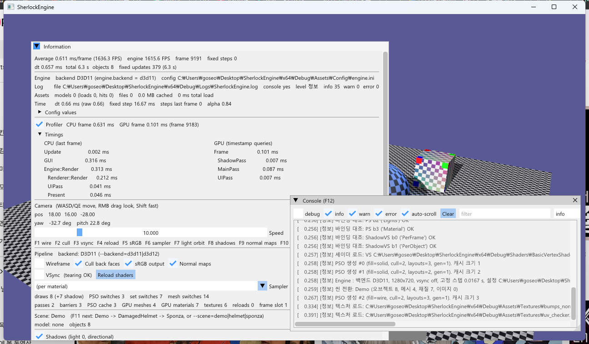
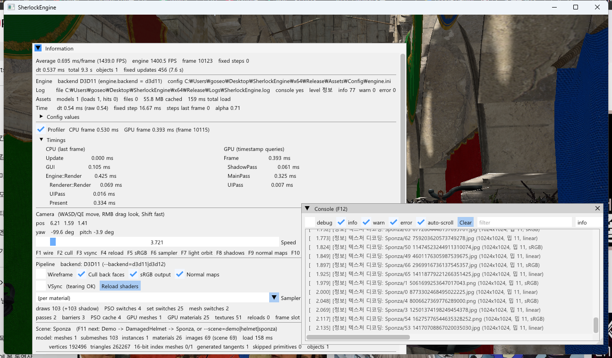
16.에디터 — 도킹·씬 뷰·선택·기즈모·Hierarchy·Inspector·직렬화·콘텐츠 브라우저
이 장은 SherlockEditor.exe 의 화면을 만드는 코드를 다룹니다. 에디터는 ImGui 도킹 공간 위에 창 아홉 개를 올린 것이고, 가운데 Scene 창은 Renderer 가 오프스크린 텍스처에 그린 결과를 이미지로 보여 줍니다. 그 이미지 위에서 클릭으로 오브젝트를 고르고, ImGuizmo 로 옮기고, Hierarchy 와 Inspector 로 계층과 속성을 고치고, JSON 으로 저장하고, 콘텐츠 브라우저에서 에셋을 끌어다 놓습니다. 재생 모드와 스크립트·프로젝트 기능은 17장, Transform 계층의 수학은 13장, 씬 타깃의 Renderer 쪽 구현은 14장, 입력과 마우스 룩은 15장에서 다룹니다.
| 파일 | 내용 |
|---|---|
| App/Editor.h · Editor.cpp | 에디터 UI 전체. 도킹 배치, 메뉴, Scene·Hierarchy·Inspector·Render Settings·Stats 창, 피킹, 기즈모, 드롭 처리 |
| App/EditorApp.h · EditorApp.cpp | 에디터 실행 파일의 앱 클래스. 씬 구성, 저장·로드, 오브젝트 추가·삭제, 카메라 컨트롤러, 단축키, 자동 검증 |
| App/ContentBrowser.h · ContentBrowser.cpp | 에셋 폴더 열거, 타일 그리드, 썸네일 캐시, 드래그 페이로드 |
| App/DebugUI.h · DebugUI.cpp | 조명·재질·렌더 설정·그림자·카메라·엔진·프로파일러 패널과 로그 콘솔 창 |
| Scene/SceneSerializer.h · SceneSerializer.cpp | 씬과 JSON 사이의 변환 |
| Scene/Scene.h · Scene.cpp | MeshSource, AddModel, RemoveObject, IndexOf 등 에디터가 쓰는 씬 API |
| Graphics/Renderer.h | SetSceneTarget, GetSceneTexture, SetPreviewTarget, InvalidateScene, RenderSettings::debugView |
| Graphics/TextureLoader.h · TextureLoader.cpp | LoadThumbnail |
| imgui.ini | 저장소가 추적하는 기본 창 배치(SherlockEngine/imgui.ini) |
| Projects/Sample/Assets/Scenes/*.json | 씬 파일 예(demo_components.json, floor_cube.json) |
16.1 Editor 와 EditorApp 의 역할 분담
에디터 코드는 두 클래스로 나뉩니다. Editor 는 화면을 그리고 입력을 해석하는 쪽이고, EditorApp 은 씬을 실제로 바꾸는 쪽입니다. Editor.h 맨 위 주석이 이 규칙을 적어 둡니다. 씬·카메라·렌더러는 Engine 의 것이고, Editor 는 그것을 소유하지 않습니다. 패널은 데이터를 편집할 뿐 소유하지 않는다는 규칙은 조명 패널을 Renderer 에서 떼어 낼 때 세운 것과 같습니다(D3).
Editor::Callbacks 를 거쳐 EditorApp 에 넘깁니다.구분 기준은 "값을 고치는가, 구조를 바꾸는가"입니다. Inspector 가 위치나 재질 색을 바꾸는 것은 기존 객체의 값을 고치는 일이므로 Editor 가 engine.GetScene() 을 통해 직접 합니다. 씬을 통째로 바꾸거나 오브젝트를 만들고 지우는 일은 Renderer 캐시 무효화, 씬 모드 변경, 로그 같은 부수 작업이 따르므로 콜백으로 앱에 넘깁니다. 계층의 부모를 바꾸는 GameObject::SetParent 는 예외로 Editor 가 직접 부릅니다. 메시와 재질 포인터가 바뀌지 않아 캐시를 건드릴 필요가 없기 때문입니다.
Editor::Callbacks 멤버 | EditorApp 의 함수 | 부르는 곳 |
|---|---|---|
| switchScene(int) | LoadSceneMode | File 메뉴의 Demo scene / DamagedHelmet / Sponza |
| saveScene(path) · loadScene(path) | SaveSceneFile · LoadSceneFile | File 메뉴, Ctrl+S · Ctrl+L, 콘텐츠 브라우저의 씬 열기 |
| newScene() | BuildEmptyScene | File 메뉴의 New scene (floor only) |
| addPrimitive(int) | AddPrimitive | Hierarchy 의 + 버튼 (0 구, 1 큐브, 2 원기둥, 3 평면, 4 카메라) |
| deleteObject(int) | DeleteObject | Hierarchy 의 Delete 버튼과 Del 키 |
| placeModel(rel, pos) | PlaceModel | 씬 뷰 드롭, 브라우저의 더블클릭과 우클릭 메뉴 |
| play · pauseToggle · stop · stepFrame | StartPlay · TogglePause · StopPlay · StepFrame | 씬 뷰 툴바, Ctrl+P (17장) |
| openProject · newProject · buildScripts · saveProject | OpenProjectAndScene · CreateProject · BuildScripts · Project::Save | File 메뉴, 런처 (17장) |
콜백은 EditorApp::OnInitialize 가 람다로 한 번 채우고, 매 프레임 Editor::Draw 의 인자로 넘깁니다. 반대 방향의 값 교환은 EditorApp::OnGUI 가 Draw 앞뒤에서 합니다. Draw 앞에서 cameraMoveSpeed, playState, timeScale, project 를 Editor 의 공개 멤버에 넣고, Draw 뒤에 슬라이더가 바꾼 cameraMoveSpeed 와 timeScale 을 다시 읽어 옵니다. 재생 상태처럼 앱이 주인인 값은 Editor 에 표시용 사본만 있습니다.
한 프레임 안의 순서
AppBase::Run 은 한 프레임을 ImGui::NewFrame, ImGuizmo::BeginFrame, OnFixedUpdate·OnUpdate, OnGUI, ImGui::Render, Engine::Render 순서로 진행합니다(4장). 에디터에서 이 순서가 뜻하는 것은 두 가지입니다.
OnUpdate가OnGUI보다 먼저입니다.EditorApp::UpdateCamera가 읽는IsSceneViewHovered(),IsSceneViewFocused(),IsGizmoUsing(),IsAssetDragActive()는 직전 프레임의Draw가 남긴 값입니다.OnGUI가Engine::Render보다 먼저입니다.Draw안에서 정한 씬 뷰 크기와 미리보기 카메라, Inspector 가 바꾼 값이 같은 프레임의 렌더링에 반영됩니다. ImGui 가 이 프레임에 그릴 씬 텍스처의 내용은 UI 패스보다 앞선 메인 패스가 채웁니다.
Editor::Draw 자체는 다음 순서로 그립니다. 도킹 공간, 에셋 드래그 여부 확인, DrawMenuBar, 단축키 처리, DrawSceneView, DrawHierarchy, DrawInspector, DrawRenderSettings, DrawStats, DrawContentBrowser, Lights 창, Materials 창, Console 창입니다. Content Browser 를 Stats 뒤에 그리는 것은 Stats 창의 도킹 노드를 찾아 거기에 붙이기 위해서입니다(16.2).
도킹 공간이 뷰포트를 다 덮으므로 io.WantCaptureKeyboard 는 늘 참입니다. 이 값으로 단축키를 막으면 F 키와 WASD 가 전부 죽습니다. 그래서 Editor::Draw 와 EditorApp::OnUpdate 는 텍스트 필드에 입력 중일 때(io.WantTextInput)만 단축키를 막고, 카메라 이동은 씬 뷰에 포커스가 있거나 커서가 올라가 있을 때만 받습니다.
16.2 도킹 공간·기본 배치·메뉴 막대·창 목록
도킹 공간
도킹은 Dear ImGui 의 docking 브랜치 기능입니다. vcpkg.json 이 imgui 패키지에 docking-experimental 기능을 켜고, AppBase::InitGUI 가 io.ConfigFlags |= ImGuiConfigFlags_DockingEnable 을 설정합니다. Editor::Draw 는 매 프레임 ImGui::DockSpaceOverViewport(dockspaceId, viewport) 로 메인 뷰포트(메뉴 막대 아래 전체)를 도킹 공간으로 만듭니다. 도킹 공간의 ID 는 ImGui::GetID("SherlockDockspace") 입니다.
// App/Editor.cpp — Editor::Draw
const ImGuiID dockspaceId = ImGui::GetID("SherlockDockspace");
if (!m_layoutBuilt && ImGui::DockBuilderGetNode(dockspaceId) == nullptr)
BuildDefaultLayout(dockspaceId); // ini 에 노드가 없을 때만
m_layoutBuilt = true;
ImGui::DockSpaceOverViewport(dockspaceId, viewport);도킹 노드가 이미 있으면(imgui.ini 에서 복원됨) 기본 배치를 만들지 않습니다. 없을 때만 Editor::BuildDefaultLayout 이 imgui_internal.h 의 DockBuilder 로 노드를 나눕니다. DockBuilder 는 아직 내부 API 이므로 호출을 이 함수 하나에 모았습니다.
| 분할 | 비율 | 도킹되는 창(탭 순서) |
|---|---|---|
| 왼쪽 | 0.18 | Hierarchy |
| 오른쪽 | 0.30 | Inspector, Render Settings, Lights, Materials |
| 아래(남은 가운데의) | 0.28 | Console (F12), Stats, Content Browser |
| 가운데 | 나머지 | Scene |
BuildDefaultLayout 은 끝에서 m_focusContentBrowserFrames = 3 을 넣습니다. DrawContentBrowser 가 이 값이 0 이 될 때까지 프레임마다 ImGui::SetWindowFocus() 를 불러 Content Browser 를 하단 노드의 활성 탭으로 만듭니다. 한 프레임으로는 부족합니다. 같은 프레임에 뒤이어 처음 나타나는 Console 창이 포커스를 가져가기 때문입니다.
imgui.ini
코드는 io.IniFilename 을 바꾸지 않으므로 ImGui 는 현재 작업 폴더의 imgui.ini 에 배치를 읽고 씁니다. SherlockEditor/SherlockEditor.vcxproj 의 디버거 작업 폴더가 $(SolutionDir)SherlockEngine 이어서, Visual Studio 에서 실행하면 저장소가 추적하는 SherlockEngine/imgui.ini 가 그 파일이 됩니다. 이 파일에는 도킹 노드 여섯 개와 창별 DockId 가 들어 있습니다. 노드 0x00000001 이 Hierarchy, 0x00000005(CentralNode=1)가 Scene, 0x00000004 가 오른쪽 탭 네 개, 0x00000006 이 Stats·Content Browser·Console 입니다. [Window][Scene Control] 과 [Window][Information] 항목은 예전 창의 흔적이고, 지금 코드에는 그 이름의 창이 없습니다.
ini 에 Content Browser 항목이 없는 경우(이 창이 생기기 전에 저장된 배치)를 위해 Editor::DrawContentBrowser 가 한 가지 처리를 더 합니다. ImGui::FindWindowByName("Stats") 로 Stats 창의 DockId 를 얻어 SetNextWindowDockID(…, ImGuiCond_FirstUseEver) 를 겁니다. FirstUseEver 이므로 ini 에 항목이 생긴 뒤에는 사용자가 옮긴 자리를 따릅니다. 도킹 공간 ID 는 바꾸지 않았습니다. 바꾸면 저장된 노드 트리가 모두 버려집니다.
View 메뉴의 Reset layout 은 m_layoutBuilt = false 로 두고 DockBuilderRemoveNode 로 도킹 노드를 지웁니다. 다음 프레임의 Draw 가 노드가 없는 것을 보고 기본 배치를 다시 만듭니다.
메뉴 막대와 단축키
Editor::DrawMenuBar 가 BeginMainMenuBar 로 그립니다.
- File
- 프로젝트 항목(New Project, Open Project, Recent Projects, Project Settings, Projects 런처 — 17장), 씬 경로 입력 필드(
scenePath), Save scene, Load scene, New scene (floor only), Demo scene·DamagedHelmet·Sponza, Build Game - View
- Console (F12) 와 Content Browser 표시 여부, Reset layout
- Gizmo
- Translate (1), Rotate (2), Scale (3), Local space, World space
- 상태 문자열
- 마지막 동작 메시지(
m_lastMessage), 프로젝트 이름, 백엔드 이름(Device::GetBackendName), 선택된 오브젝트 이름
Build Game, Project Settings, Projects 팝업은 메뉴 항목이 플래그만 세우고, EndMenu 뒤에서 ImGui::OpenPopup 을 부릅니다. ImGui 의 팝업 ID 는 호출 시점의 ID 스택에 따라 정해지므로, 팝업을 그리는 BeginPopupModal(메뉴 밖에서 호출됨)과 같은 수준에서 열기 위한 것입니다. 씬 경로의 초기값은 Editor::OnProjectChanged 가 Paths::GetSceneDir() + L"scene.json" 으로 정하고, 프로젝트의 시작 씬을 로드하면 그 경로로 바뀝니다.
| 키 | 동작 | 처리하는 곳 |
|---|---|---|
Ctrl+S · Ctrl+L | 씬 저장 · 로드(scenePath) | Editor::Draw |
1 · 2 · 3 | 기즈모 이동 · 회전 · 크기 | |
Ctrl+P | 편집 중이면 재생, 아니면 정지 | |
Del | 선택 오브젝트 삭제 (씬 뷰나 Hierarchy 에 포커스가 있을 때) | Editor::DrawHierarchy |
F1~F9 | 와이어프레임, 컬링, VSync, 셰이더 리로드, sRGB 출력, 샘플러 덮어쓰기, 방향광 회전, 그림자, 노멀 맵 | EditorApp::OnUpdate |
F10 · F11 | 재생 일시정지 · 내장 씬 순환(Demo, Helmet, Sponza) | |
F12 | Console 창 표시 전환 |
창 목록
| 창 이름 | 그리는 함수 | 내용 | 절 |
|---|---|---|---|
| Scene | Editor::DrawSceneView | 툴바, 씬 이미지, 드롭 타깃, 카메라 프러스텀, 카메라 미리보기, 기즈모, 클릭 선택 | 16.3~16.5 |
| Hierarchy | Editor::DrawHierarchy | 오브젝트 트리, 추가·삭제, 드래그 재부모화 | 16.6 |
| Inspector | Editor::DrawInspector | 선택 오브젝트의 Transform, 메시 출처, 재질, 컴포넌트 | 16.7 |
| Render Settings | Editor::DrawRenderSettings | 파이프라인 설정, 디버그 뷰, 그림자, 카메라, 엔진 정보 | |
| Lights | DebugUI::DrawLightPanel | 주변광과 조명 목록 | |
| Materials | DebugUI::DrawMaterialPanel | 씬의 모든 재질 | |
| Stats | Editor::DrawStats | FPS, 드로우 통계, 모델 통계, 프로파일러 | |
| Console (F12) | DebugUI::DrawLogConsole | 로그 기록, 레벨·문자열 필터 | |
| Content Browser | Editor::DrawContentBrowser | 에셋 폴더 트리와 타일 그리드 | 16.9 |
게임 화면만 보여 주는 별도 창은 없습니다. 재생 중에는 Scene 창이 활성 카메라의 시점을 그대로 보여 주고, 편집 중에 카메라 오브젝트를 선택하면 Scene 창 우측 하단에 그 카메라의 미리보기가 겹쳐 그려집니다(16.3). 그 밖에 모달 팝업 네 개(Projects, Project Settings, Build Game, New Script)가 있으며 17장에서 다룹니다.
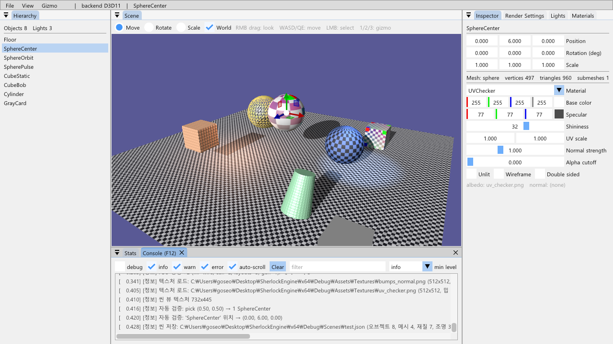
16.3 씬 뷰
Scene 창은 Editor::DrawSceneView 가 그립니다. 창 안쪽 여백을 0 으로 두고(ImGuiStyleVar_WindowPadding), 맨 위에 툴바 한 줄을 놓고, 남은 영역 전체를 씬 이미지가 차지합니다. 툴바에는 재생 버튼(DrawPlayControls, 17장), 기즈모 종류(Move·Rotate·Scale), 기즈모 기준(Local·World), 조작 안내 문구가 있습니다. 이 실행 파일에 프로젝트 스크립트가 들어 있지 않으면 툴바 아래에 배너(DrawProjectBanner)가 먼저 그려집니다. 이미지가 남은 공간을 다 쓰므로 배너는 이미지보다 앞에 있어야 합니다.
크기 결정과 타깃 리사이즈
// App/Editor.cpp — Editor::DrawSceneView
const ImVec2 available = ImGui::GetContentRegionAvail();
const uint32_t width = static_cast<uint32_t>((std::max)(available.x, 8.0f));
const uint32_t height = static_cast<uint32_t>((std::max)(available.y, 8.0f));
renderer.SetSceneTarget(width, height); // 크기가 같으면 아무것도 하지 않음
engine.GetCamera().SetAspectRatio(static_cast<float>(width) / static_cast<float>(height));
const ImVec2 imagePos = ImGui::GetCursorScreenPos();
const uint64_t textureId = renderer.IsOffscreen() ? engine.GetDevice().GetImGuiTextureId(renderer.GetSceneTexture()) : 0;
if (textureId != 0) ImGui::Image(static_cast<ImTextureID>(textureId), ImVec2(width, height));
else ImGui::Dummy(ImVec2(width, height));
m_sceneHovered = ImGui::IsItemHovered();
m_sceneFocused = ImGui::IsWindowFocused();씬 뷰의 크기는 창의 남은 내용 영역이고, 창을 너무 줄였을 때를 위해 8 픽셀을 하한으로 둡니다. 이 크기를 매 프레임 Renderer::SetSceneTarget 에 넘깁니다. Renderer 는 크기가 달라졌을 때만 이전 텍스처를 파괴하고 새 색·깊이 텍스처를 만듭니다. 색 텍스처는 R8G8B8A8_UNORM 에 RenderTarget | ShaderResource 이고, 깊이는 D24_UNORM_S8_UINT 입니다. 메인 패스는 이 색 텍스처에 sRGB 뷰로 그리고, ImGui 는 같은 텍스처를 UNORM 뷰로 읽습니다. ImGui 는 읽은 값을 백버퍼의 UNORM 뷰에 그대로 옮기므로, sRGB 로 인코딩된 바이트를 풀지 않고 읽어야 색이 맞습니다(12장). 텍스처 생성, 패스의 타깃 선택, 배리어, 리사이즈 때 이전 텍스처가 안전하게 해제되는 과정은 14장에 있습니다.
카메라의 종횡비는 창이 아니라 씬 뷰의 크기를 따릅니다. 창 크기와 씬 뷰 크기는 다르고, 도킹 분할선을 끌 때마다 씬 뷰만 바뀌기 때문입니다. GetSceneViewWidth()·GetSceneViewHeight() 로 이 크기를 밖에서 읽을 수 있고 Stats 창이 표시합니다.
Device::GetImGuiTextureId 는 텍스처 핸들을 ImGui 가 받는 64비트 ID 로 바꾸는 RHI 함수입니다(9장). 유효하지 않으면 0 을 돌려주고, 그때는 같은 크기의 Dummy 를 놓아 뒤따르는 호버 판정과 드롭 타깃이 같은 아이템 사각형을 쓰게 합니다.
좌표 변환
씬 뷰 안의 위치는 0~1 로 정규화한 (u, v) 로 다룹니다. imagePos 가 이미지의 왼쪽 위 화면 좌표이므로 변환은 다음 한 줄입니다.
const ImVec2 mouse = ImGui::GetMousePos();
const float u = (mouse.x - imagePos.x) / static_cast<float>(width);
const float v = (mouse.y - imagePos.y) / static_cast<float>(height);클릭 선택과 드롭 위치 계산이 이 (u, v) 를 받습니다. 자동 검증의 --pick=u,v 와 --drop-uv=u,v 도 같은 값을 직접 넘기므로 창 배치와 무관하게 같은 결과가 나옵니다(16.10). 반대 방향, 곧 월드 점을 씬 뷰 픽셀로 바꾸는 일은 익명 함수 ProjectToView 가 합니다.
const XMVECTOR clip = XMVector3Transform(XMLoadFloat3(&p), viewProj); // Coord 가 아님: w 를 남김
const float w = XMVectorGetW(clip);
if (w <= 1e-4f) return false; // 카메라 뒤의 점
out = ImVec2(x + (XMVectorGetX(clip) / w * 0.5f + 0.5f) * width,
y + (0.5f - XMVectorGetY(clip) / w * 0.5f) * height);XMVector3TransformCoord 는 w 로 나눈 결과만 돌려주므로 카메라 뒤의 점이 화면 안의 엉뚱한 자리에 찍힙니다. 그래서 w 를 남기는 XMVector3Transform 을 쓰고 w 가 0 에 가깝거나 음수이면 그리지 않습니다. NDC 의 y 는 위가 +1 이고 화면 좌표의 y 는 아래로 커지므로 y 만 부호를 뒤집습니다(부록 B). 드롭 마커, 카메라 프러스텀 아이콘이 이 함수로 선을 그립니다.
이미지 위에 겹치는 것들
이미지 아이템을 놓은 뒤 같은 창의 드로우 리스트에 다음을 순서대로 겹칩니다. 순서에는 이유가 있습니다.
재생 테두리
playState 가 Editing 이 아니면 이미지 둘레에 두께 3 의 테두리와 "PLAYING" 또는 "PAUSED" 글자를 그립니다. 재생은 초록, 일시정지는 노랑입니다.
에셋 드롭 타깃
ImGui::BeginDragDropTarget 은 "직전 아이템"을 타깃으로 삼으므로 이미지 아이템 바로 뒤에 와야 합니다. 내용은 16.9 에서 다룹니다.
카메라 프러스텀 아이콘 — DrawCameraGizmos
편집 중에만, CameraComponent 가 붙은 오브젝트마다 그립니다. 눈에서 1.5 단위 앞의 프러스텀 단면 사각형과 눈을 잇는 선 네 개, 위쪽을 가리키는 작은 삼각형, 이름 라벨입니다. 단면의 세로 절반은 1.5 × tan(fovY / 2), 가로는 거기에 에디터 카메라의 종횡비를 곱합니다. 회전은 CameraPose::GetRotationMatrix() 를 그대로 쓰므로 부모에게서 받은 기울기까지 반영됩니다. 에디터 카메라와 거리가 0.1 단위 안인 카메라는 건너뜁니다. 프러스텀이 화면 테두리와 겹쳐 의미가 없고 꼭짓점의 w 가 0 이 되기 때문입니다. 선이 툴바로 새지 않도록 이미지 사각형으로 클립합니다.
카메라 미리보기 — DrawCameraPreview
선택한 오브젝트에 CameraComponent 가 있고 씬 뷰가 240×160 이상이면 우측 하단에 그 카메라의 시점을 그립니다. 폭은 씬 뷰의 32%, 비율은 씬 뷰와 같습니다. Renderer::SetPreviewTarget 으로 크기를 정하고, CameraComponent::ApplyTo 로 자세와 렌즈를 Editor::m_previewCamera 에 복사한 뒤 Renderer::SetPreviewCamera(&m_previewCamera) 로 넘깁니다. 이 포인터는 같은 프레임의 Render 가 끝날 때까지 살아 있어야 하므로 지역 변수가 아니라 Editor 의 멤버입니다. 조건이 맞지 않으면 SetPreviewCamera(nullptr) 와 SetPreviewTarget(0, 0) 으로 텍스처까지 반납합니다. 재생 중에 활성 카메라를 선택한 경우는 씬 뷰가 이미 그 시점이므로 그리지 않습니다. 미리보기 패스 자체는 14장에 있습니다.
기즈모 — DrawGizmo
에셋을 끌고 있는 동안은 ImGuizmo::Enable(false) 로 끕니다. 16.5 에서 다룹니다.
클릭 선택
기즈모 뒤에 옵니다. 커서가 기즈모 위에 있거나 기즈모를 잡고 있으면(ImGuizmo::IsOver(), IsUsing()) 선택을 바꾸지 않아야 하므로, 이번 프레임의 기즈모를 먼저 처리한 뒤에 판정합니다. 16.4 에서 다룹니다.
카메라 조작과의 경계
씬 뷰 안에서는 커서가 ImGui 창 위에 있으므로 io.WantCaptureMouse 가 늘 참입니다. 그래서 EditorApp::UpdateCamera 는 이 값 대신 Editor 가 알려 주는 상태를 봅니다. 우클릭 마우스 룩은 IsSceneViewHovered() 가 참이고 IsGizmoUsing() 과 IsAssetDragActive() 가 거짓일 때만 시작하고, WASD·QE 이동은 씬 뷰에 포커스가 있거나 커서가 올라가 있거나 룩이 진행 중일 때만 받습니다. 재생 중 씬의 카메라 컴포넌트가 카메라를 움직이고 있으면(PlayContext::cameraDriven) 에디터 컨트롤러는 아무것도 하지 않습니다. 마우스 룩의 커서 고정과 캡처 처리는 15장에 있습니다.
16.4 클릭 선택: 광선과 AABB
씬 뷰를 왼쪽 클릭하면 그 픽셀을 지나는 광선을 만들고, 광선과 가장 먼저 만나는 오브젝트를 선택합니다. 판정에는 메시의 삼각형이 아니라 축 정렬 경계 상자(AABB, 축에 나란한 직육면체)를 씁니다. 메시마다 로컬 공간의 AABB 를 이미 갖고 있고(Mesh::GetBounds(), 13장), 상자 하나와의 교차는 나눗셈 여섯 번으로 끝나기 때문입니다.
// App/Editor.cpp — Editor::DrawSceneView 의 끝
if (m_sceneHovered && !m_assetDragActive && ImGui::IsMouseClicked(ImGuiMouseButton_Left)
&& !ImGuizmo::IsOver() && !ImGuizmo::IsUsing())
{
… // (u, v) 계산
m_selected = Pick(engine.GetScene(), engine.GetCamera(), u, v); // 없으면 −1
}화면 좌표에서 광선으로 — ScreenToRay
투영은 3차원 점을 화면의 한 점으로 보내므로, 화면의 한 점은 거꾸로 3차원의 직선 하나에 대응합니다. 그 직선 위의 두 점을 구하면 광선이 됩니다. 가장 구하기 쉬운 두 점은 near 평면 위의 점과 far 평면 위의 점입니다.
const float ndcX = u * 2.0f - 1.0f; // 0..1 → −1..+1
const float ndcY = 1.0f - v * 2.0f; // 화면 y 는 아래로, NDC y 는 위로
const XMMATRIX invViewProj = XMMatrixInverse(nullptr, camera.GetViewMatrix() * camera.GetProjectionMatrix());
const XMVECTOR nearPoint = XMVector3TransformCoord(XMVectorSet(ndcX, ndcY, 0.0f, 1.0f), invViewProj);
const XMVECTOR farPoint = XMVector3TransformCoord(XMVectorSet(ndcX, ndcY, 1.0f, 1.0f), invViewProj);
return Ray{ nearPoint, XMVector3Normalize(farPoint - nearPoint) };Direct3D 의 NDC 는 깊이가 0(near)에서 1(far)입니다. 같은 (x, y) 에 z = 0 과 z = 1 을 넣고 (view × proj)⁻¹ 을 곱하면 월드 공간의 두 점이 나옵니다. XMVector3TransformCoord 는 곱한 뒤 w 로 나누어 주므로 원근 투영의 역변환이 한 번에 끝납니다. 광선의 시작점은 카메라 위치가 아니라 near 평면 위의 점이고, 방향은 정규화합니다.
슬랩 방법 — RayAabb
AABB 는 세 쌍의 평행한 평면 사이 공간(슬랩)의 교집합입니다. 광선 P(t) = o + t·d 가 x 슬랩 안에 있는 t 의 구간은 [(lo.x − o.x)/d.x, (hi.x − o.x)/d.x] 이고(d.x 가 음수이면 두 값을 바꿉니다), y 와 z 도 같습니다. 세 구간의 교집합이 비어 있지 않으면 광선이 상자를 지납니다.
float tMin = 0.0f, tMax = FLT_MAX; // t ≥ 0: 광선의 앞쪽만
for (int i = 0; i < 3; ++i)
{
if (fabsf(d[i]) < 1e-8f) // 이 축과 평행: 슬랩 밖이면 영영 못 만남
{
if (o[i] < lo[i] || o[i] > hi[i]) return false;
continue;
}
float t1 = (lo[i] - o[i]) / d[i];
float t2 = (hi[i] - o[i]) / d[i];
if (t1 > t2) std::swap(t1, t2);
tMin = (std::max)(tMin, t1); // 가장 늦게 들어가는 시점
tMax = (std::min)(tMax, t2); // 가장 먼저 나오는 시점
if (tMin > tMax) return false;
}
outT = tMin;tMin 을 0 에서 시작하므로 광선 뒤쪽의 상자는 걸러지고, 시작점이 상자 안에 있으면 outT 는 0 입니다.
오브젝트마다: 광선을 로컬 공간으로
오브젝트가 회전하거나 스케일되어 있으면 월드 공간에서 그 상자는 더 이상 축에 나란하지 않습니다. 회전한 상자를 감싸는 월드 AABB 를 새로 만드는 대신, Editor::Pick 은 광선을 오브젝트의 로컬 공간으로 옮겨 로컬 AABB 와 검사합니다. 이렇게 하면 회전과 스케일이 있어도 상자가 부풀지 않아 판정이 정확합니다.
const XMMATRIX world = objects[i]->GetWorldMatrix(); // 부모와 노드 pre-transform 까지 곱한 행렬
const XMMATRIX invWorld = XMMatrixInverse(nullptr, world);
XMStoreFloat3(&origin, XMVector3TransformCoord(nearPoint, invWorld)); // 점: 이동 포함
XMStoreFloat3(&direction, XMVector3TransformNormal(worldDirection, invWorld)); // 방향: 이동 제외
…
if (!RayAabb(origin, direction, boxMin, boxMax, tLocal)) continue;
const float tWorld = tLocal * length; // length = 로컬 방향 벡터의 길이
if (tWorld < bestT) { bestT = tWorld; best = i; }계층이 있어도 따로 할 일은 없습니다. GameObject::GetWorldMatrix() 가 local × parent.world 를 재귀로 곱해 주므로(13장), 자식 오브젝트도 화면에 보이는 그 자리에서 선택됩니다. 상자를 정하는 규칙은 세 가지입니다.
- 유효한 메시가 있으면
Mesh::GetBounds()의 min·max 를 씁니다. - 메시가 없고
CameraComponent가 있으면 한 변이 1 인 상자(±0.5)로 판정합니다. 씬 뷰의 카메라 아이콘 자리입니다. - 둘 다 아니면 건너뜁니다. 노드가 여럿인 모델의 빈 루트 오브젝트가 여기에 해당하며, 클릭으로는 선택되지 않고 Hierarchy 에서 고릅니다.
코드는 tLocal 에 로컬 방향 벡터의 길이를 곱한 값을 "월드 거리"로 비교하고, RaycastScene 이 그 값으로 히트점(origin + direction × distance)을 계산합니다. 그런데 광선의 매개변수 t 는 아핀 변환으로 바뀌지 않습니다. 월드 광선 O + t·D 를 world⁻¹ 로 옮기면 O′ + t·D′ 이고, RayAabb 는 D′ 를 정규화하지 않은 채 쓰므로 tLocal 이 곧 |D| = 1 인 월드 광선 위의 거리입니다. 길이를 곱한 값은 로컬 공간에서 잰 거리가 됩니다. 스케일이 1 인 오브젝트는 |D′| = 1 이라 두 값이 같아 데모 씬에서는 차이가 드러나지 않습니다. 스케일이 s 이면 값이 1/s 배가 되므로(Sponza 는 노드 스케일이 0.008 이라 125배), 스케일이 다른 오브젝트 사이의 앞뒤 비교와 그런 오브젝트 표면의 드롭 위치가 어긋날 수 있습니다. 이 문서를 쓰면서 식으로만 확인했고 실행해 재현하지는 않았습니다.
AABB 판정의 한계도 그대로 드러납니다. 헬멧처럼 상자 안에 빈 공간이 많은 메시는 메시 바깥을 눌러도 선택되고, 카메라가 어떤 오브젝트의 상자 안에 들어가 있으면(Sponza 내부) 그 오브젝트의 거리가 0 이 되어 항상 먼저 잡힙니다. 삼각형 단위 판정은 넣지 않았습니다.
Pick 은 const 멤버이고 ImGui 상태를 쓰지 않습니다. 그래서 자동 검증용 PickAt(scene, camera, u, v) 가 같은 함수를 그대로 부릅니다. Editor::RaycastScene 은 Pick 을 감싼 함수로, 맞은 오브젝트가 없을 때 바닥 평면과의 교점을 돌려줍니다(16.9).
16.5 기즈모: ImGuizmo
선택된 오브젝트 위에는 이동·회전·크기 조작 핸들이 그려집니다. ImGuizmo 라이브러리(vcpkg 의 imguizmo)가 그리기와 마우스 처리를 맡고, 엔진은 행렬을 넘기고 결과 행렬을 받아 Transform 값으로 되돌립니다. AppBase::Run 이 ImGui::NewFrame 직후 ImGuizmo::BeginFrame() 을 부르고, Editor::DrawGizmo 가 씬 창 안에서 나머지를 합니다.
// App/Editor.cpp — Editor::DrawGizmo
XMFLOAT4X4 view, proj, world;
XMStoreFloat4x4(&view, camera.GetViewMatrix());
XMStoreFloat4x4(&proj, camera.GetProjectionMatrix());
XMStoreFloat4x4(&world, object.GetWorldMatrix()); // 기즈모는 언제나 월드 공간에서 조작
ImGuizmo::SetOrthographic(false);
ImGuizmo::SetDrawlist(); // 현재 창(Scene)의 드로우 리스트
ImGuizmo::SetRect(x, y, width, height); // 씬 이미지의 화면 사각형
const ImGuizmo::MODE mode = (m_gizmoWorld && m_gizmoOperation != 2) ? ImGuizmo::WORLD : ImGuizmo::LOCAL;
if (ImGuizmo::Manipulate(&view.m[0][0], &proj.m[0][0], operation, mode, &world.m[0][0]))
object.SetWorldMatrix(XMLoadFloat4x4(&world));
m_gizmoUsing = ImGuizmo::IsUsing();행렬 배치
ImGuizmo 는 float[16] 을 받고, 이동 성분이 12·13·14번 원소에 있다고 가정합니다. 열벡터 관례의 행렬을 열 우선으로 저장한 배치입니다. DirectXMath 는 행벡터 관례이고 XMFLOAT4X4 는 행 우선으로 저장합니다. 관례가 반대이고 저장 순서도 반대라서 두 전치가 서로 상쇄되어, 메모리의 16개 값은 같은 순서가 됩니다. XMFLOAT4X4 에서 이동은 넷째 행 m[3][0..2], 곧 12·13·14번 원소입니다. 그래서 뷰·투영·월드 행렬을 전치 없이 &m[0][0] 로 넘깁니다(부록 B).
기준 공간은 툴바의 Local·World 로 고르고 기본은 Local(오브젝트 축)입니다. 크기 조작은 World 를 골라도 항상 Local 로 넘깁니다. 코드에 이유가 적혀 있지는 않지만, 회전한 오브젝트를 월드 축으로 늘이면 전단(shear)이 생기고 아래의 S·R·T 분해가 전단을 담지 못한다는 점과 맞는 선택입니다.
결과 행렬을 위치·회전·스케일로
Manipulate 가 참을 돌려주면 world 에는 조작 뒤의 월드 행렬이 들어 있습니다. Transform 은 행렬이 아니라 위치·오일러 각·스케일을 저장하므로 이 행렬을 거꾸로 풀어야 합니다. 월드 행렬은 pre × S·R·T × parent.world 로 만들어지므로(13장) 바깥쪽부터 차례로 벗깁니다.
| 단계 | 함수 | 계산 |
|---|---|---|
| 부모 벗기기 | GameObject::SetWorldMatrix | local = world × parent.world⁻¹ (부모가 없으면 그대로) |
| 노드 행렬 벗기기 | Transform::SetLocalMatrix | S·R·T = pre⁻¹ × local (모델 노드의 pre-transform 이 있을 때) |
| 분해 | XMMatrixDecompose | 스케일 벡터, 회전 쿼터니언, 이동 벡터. 스케일이 0 이거나 행렬이 퇴화하면 실패 |
| 쿼터니언을 각으로 | Transform::EulerFromRotationMatrix | 회전 행렬에서 pitch·yaw·roll 을 되찾음 |
분해가 실패하면 SetWorldMatrix 가 false 를 돌려주고 그 프레임의 조작은 버려집니다. 부모가 있는 오브젝트도 화면에서는 월드 공간의 핸들을 끌고, 저장되는 값은 부모 기준 로컬 값이 됩니다. Hierarchy 의 재부모화와 카메라의 Align to view 도 같은 SetWorldMatrix 를 지납니다.
Transform 의 회전 행렬은 Rz(roll)·Rx(pitch)·Ry(yaw) (행벡터)이고, 셋째 행이 forward 벡터 (cos p·sin y, −sin p, cos p·cos y) 입니다. 여기서 각을 되찾는 식은 다음과 같습니다.
// Scene/Transform.cpp — Transform::EulerFromRotationMatrix
const float sp = -m.m[2][1];
euler.x = asinf(std::clamp(sp, -1.0f, 1.0f)); // pitch
if (fabsf(sp) < 0.9999f)
{
euler.y = atan2f(m.m[2][0], m.m[2][2]); // yaw
euler.z = atan2f(m.m[0][1], m.m[1][1]); // roll
}
else { euler.y = 0.0f; euler.z = atan2f(-m.m[1][0], m.m[0][0]); } // 짐벌락: yaw 를 0 으로, roll 에 몰아줌- 같은 자세, 다른 숫자. 한 회전을 나타내는 오일러 각은 여러 벌입니다.
asinf가 −90°~+90° 만 돌려주므로 기즈모로 돌린 뒤 Inspector 의 Rotation 값은 그 범위의 표현으로 바뀝니다. 손으로 넣은 값과 숫자가 달라질 수 있지만 자세는 같습니다. - 짐벌락. pitch 가 ±90° 근처이면 yaw 축과 roll 축이 겹쳐 둘을 구분할 수 없습니다. 코드는 yaw 를 0 으로 두고 나머지를 roll 에 넣습니다. 이 근처에서 회전 기즈모를 끌면 숫자가 크게 튑니다.
- 분해 순서. 각을 되찾는 식은 행렬을 만드는 순서와 짝이 맞아야 합니다. 순서가 다르면 기즈모를 놓는 순간 오브젝트가 다른 자세로 튑니다.
- 비균등 스케일 부모. 부모가 (1, 2, 1) 처럼 스케일되고 자식이 회전해 있으면 자식의 월드 행렬에 전단이 들어갑니다.
XMMatrixDecompose는 전단을 표현하지 못하므로 기즈모와 재부모화가 계산한 로컬 값은 근사가 됩니다.
m_gizmoUsing 은 ImGuizmo::IsUsing() 을 받아 두었다가 다음 프레임의 EditorApp::UpdateCamera 에 알려 줍니다. 핸들을 끄는 동안 우클릭 룩이 시작되지 않게 하기 위해서입니다.
16.6 Hierarchy: 트리와 재부모화
Editor::DrawHierarchy 는 맨 위에 오브젝트 수와 조명 수, 추가 버튼(+ Sphere, + Cube, + Cylinder, + Plane, + Camera), 삭제 버튼을 놓고 그 아래에 트리를 그립니다. 추가 버튼은 callbacks.addPrimitive 를 부른 뒤 벡터의 마지막 오브젝트를 선택합니다. EditorApp::AddPrimitive 는 원점 위에 기본 재질("Default", 씬에 있으면 재사용)로 만들고, 이름은 같은 접두어로 시작하는 오브젝트 수에 1 을 더해 "Sphere 1" 처럼 붙입니다. 데모 씬에는 CubeStatic 과 CubeBob 이 있어 새 큐브의 이름은 "Cube 3" 이 됩니다. 삭제는 Scene::RemoveObject 를 거치므로 자식까지 함께 지워집니다.
선택은 포인터가 아니라 씬 벡터의 인덱스(Editor::m_selected)입니다. 오브젝트를 지우면 뒤쪽 인덱스가 당겨지므로, 삭제·씬 전환·로드 뒤에는 선택을 −1 로 되돌립니다. 트리는 포인터로 순회하고 선택은 인덱스이므로, 프레임마다 포인터에서 인덱스로 가는 표(unordered_map)를 한 번 만들어 재귀 함수에 넘깁니다. 부모가 없는 오브젝트를 벡터 순서대로 루트로 그리고, 자식은 Editor::DrawHierarchyNode 가 재귀로 그립니다.
// App/Editor.cpp — Editor::DrawHierarchyNode (요약)
ImGui::PushID(&object);
const bool hadChildren = !object.GetChildren().empty(); // TreeNodeEx 시점의 답으로 고정
if (!hadChildren) flags |= ImGuiTreeNodeFlags_Leaf | ImGuiTreeNodeFlags_NoTreePushOnOpen;
const bool open = ImGui::TreeNodeEx(label.c_str(), flags);
if (ImGui::IsItemClicked() && !ImGui::IsItemToggledOpen()) m_selected = index;
if (ImGui::BeginDragDropSource(ImGuiDragDropFlags_SourceAllowNullID))
{ ImGui::SetDragDropPayload("SHERLOCK_OBJECT", &index, sizeof(index)); … }
if (ImGui::BeginDragDropTarget())
{ … child->SetParent(&object) … // 자기 자신·자손이면 false }
if (open && hadChildren)
{
const std::vector<GameObject*> children = object.GetChildren(); // 복사해서 순회
for (GameObject* child : children) DrawHierarchyNode(scene, *child, indexOf);
ImGui::TreePop();
}
ImGui::PopID();트리 항목 하나가 드래그 소스이자 드롭 타깃입니다. 페이로드는 끌린 오브젝트의 인덱스(int)이고 타입 문자열은 "SHERLOCK_OBJECT" 입니다. 다른 항목 위에 놓으면 GameObject::SetParent(&object) 가 호출되어 그 자식이 됩니다. keepWorld 기본값이 참이라 월드 자세는 유지되고 로컬 값이 다시 계산됩니다. 자기 자신이나 자기 자손 위에 놓으면 SetParent 가 거부하고 경고 로그가 남습니다. 트리 아래에는 남은 영역을 채우는 Dummy 가 있고, 거기에 놓으면 SetParent(nullptr) 로 루트가 됩니다. 이름 뒤의 [n] 은 붙어 있는 컴포넌트 수입니다.
잎 노드 드롭 시 PopID 어서션
트리로 바꾼 직후, 자식이 없는 항목 위에 다른 항목을 놓으면 Debug 빌드가 ImGui 의 "Calling PopID() too many times!" 어서션으로 멈췄습니다. 처음으로 자식을 만드는 동작이 항상 실패한 것입니다.
- 원인
- 노드 하나를 그리는 동안 "자식이 있는가"를 두 번 물었고 그 사이에 답이 바뀌었습니다. 자식이 없는 노드는
NoTreePushOnOpen을 붙여 그리므로TreeNodeEx가true를 돌려주면서도 트리 푸시는 하지 않습니다. 이어서 드롭 처리의SetParent가 이 노드에 자식을 붙였고, 그 뒤open && !object.GetChildren().empty()를 다시 검사하니 참이 되어 푸시한 적 없는TreePop()이 나갔습니다.TreePop은 안에서PopID를 하므로 이 노드의PushID(&object)를 대신 꺼냈고, 함수 끝의PopID()가 창의 기본 ID 까지 꺼내려다 어서션에 걸렸습니다. - 해결
- 자식 유무를
TreeNodeEx앞에서 한 번 읽어hadChildren에 담고, 잎 플래그와TreePop조건이 같은 값을 쓰게 했습니다. 방금 붙은 자식은 다음 프레임부터 트리에 보입니다. - 고르지 않은 대안
- 드롭을 큐에 모았다가 트리를 다 그린 뒤 적용하는 방법이 더 깔끔하지만, 에디터 명령 계층(Undo)이 아직 없어 짝 맞추기만 했습니다. 잎에도 항상 푸시하는 방법은 잎마다 들여쓰기와 ID 푸시가 생기고
ContentBrowser::DrawFolderTree와 관례가 달라져 고르지 않았습니다. - 교훈
- 즉시 모드 UI 에서 Push/Pop, Begin/End 의 짝을 정하는 조건은 Push 시점에 지역 변수로 잡아 두고, 그 사이에 상태를 바꾸는 코드(드롭, 버튼)가 있어도 다시 읽지 않습니다. 자식 벡터를 복사해 순회하는 것도 같은 이유입니다. 드롭이 순회 중인 벡터를 바꿀 수 있습니다.
이 버그는 자동 검증이 잡지 못했습니다. --set-parent 인자는 ImGui 그리기 밖에서 SetParent 를 부르므로 문제의 경로를 지나지 않습니다(16.10).
16.7 Inspector 와 나머지 패널
Inspector
Editor::DrawInspector 는 선택된 오브젝트 하나를 편집합니다. 선택이 없으면 안내 문구만 표시합니다. 재생 중에는 "Playing: edits are discarded on Stop" 경고가 붙습니다. 정지할 때 씬이 재생 전 스냅샷으로 돌아가기 때문입니다(17장).
| 구역 | 위젯과 동작 |
|---|---|
| Transform | Position(DragFloat3, 간격 0.05), Rotation (deg)(간격 0.5), Scale(간격 0.01, 범위 0.001~1000). Transform 은 라디안을 저장하므로 표시할 때 도로 바꾸고 편집되면 라디안으로 되돌려 SetRotation 에 넘깁니다. 모델 노드의 pre-transform 이 있으면 그 사실을 한 줄로 알립니다. |
| 계층 | 부모가 있으면 "local to parent '이름' world (x, y, z)" 와 Detach 버튼(SetParent(nullptr), 월드 자세 유지). 위 세 값이 부모 기준 로컬 값임을 알리는 표시입니다. 자식이 있으면 자식 수를 표시합니다. |
| 카메라 | CameraComponent 가 있을 때만. Look through 는 에디터 카메라를 이 카메라의 자세로 옮기고(ApplyTo(engine.GetCamera(), false), 렌즈는 그대로), Align to view 는 이 카메라를 에디터 시점으로 옮깁니다(SetFromCamera). |
| Mesh | Scene::GetMeshSource 로 얻은 출처 종류(sphere, cube, plane, cylinder, model, custom), 정점·삼각형·서브메시 수. 모델이면 경로와 메시 번호. |
| Material | 씬의 재질 중에서 고르는 콤보(SetMaterial)와 그 재질의 필드: Base color, Specular, Shininess(로그 슬라이더 1~256), UV scale, Normal strength, Alpha cutoff, Unlit, Wireframe, Double sided, 알베도·노멀 텍스처 이름(읽기 전용). 서브메시 슬롯 재질을 쓰는 모델 오브젝트는 슬롯 수만 표시하고 편집은 Materials 창으로 안내합니다. |
| Components | Editor::DrawComponents. 컴포넌트마다 삭제 버튼, enabled 체크, (스크립트이면) Edit 버튼, 접이식 헤더와 필드 위젯. 아래에 Add Component 콤보와 New Script 버튼. |
재질 필드는 Scene 이 소유한 Material 객체를 직접 고칩니다. 재질은 여러 오브젝트가 공유할 수 있으므로 한 곳에서 고치면 그 재질을 쓰는 오브젝트가 모두 바뀝니다. GPU 쪽 반영은 Renderer 의 재질 캐시가 맡습니다(14장).
컴포넌트의 필드 위젯은 컴포넌트마다 따로 짜지 않습니다. 컴포넌트는 Behaviour::Reflect(PropertyVisitor&) 에서 자기 필드를 이름과 함께 열거할 뿐이고, 무엇을 할지는 방문자가 정합니다. Editor.cpp 의 ImGuiPropertyVisitor 는 Float 를 DragFloat, Int 를 DragInt, Bool 을 Checkbox, Float3 를 DragFloat3, String 을 InputText 로 그립니다. 같은 Reflect 를 SceneSerializer 의 방문자가 돌면 JSON 저장과 로드가 됩니다(16.8). Scene 계층이 ImGui 를 모르게 하려고 방문자 구현을 에디터 쪽에 두었습니다. PropertyVisitor 와 컴포넌트 레지스트리, 스크립트 생성은 17장에서 다룹니다.
Lights · Materials · Render Settings · Stats · Console
나머지 창은 DebugUI 네임스페이스의 패널 함수를 조합한 것입니다. 패널 함수는 창을 만들지 않고 내용만 그리므로, Editor 가 ImGui::Begin 으로 창을 만들고 그 안에서 부릅니다(Console 만 스스로 창을 만듭니다).
| 창 | 패널 함수 | 편집·표시하는 것 |
|---|---|---|
| Lights | DrawEnvironmentPanel DrawLightPanel | 환경: 스카이박스(내장 프리셋 콤보), 스카이박스·Irradiance·Specular·BRDF LUT 이름 칸(Enter 로 적용, 콘텐츠 브라우저의 텍스처 드롭 — 큐브 칸은 .dds 면 그 파일, 그 밖의 이미지는 그 폴더), IBL 세기, 노출, ACES 톤매핑(12.14절). 주변광 색, Add point light(MAX_LIGHTS 미만일 때), 조명마다 종류·위치·범위·방향(normalize 버튼)·색·세기·감쇠, 스포트라이트의 안쪽·바깥쪽 원뿔각(도로 편집하고 코사인으로 저장, 바깥쪽이 안쪽보다 좁아지지 않게 보정), Remove(조명이 둘 이상일 때) |
| Materials | DrawMaterialPanel | 씬의 모든 재질. Inspector 의 재질 필드에 샘플러 프리셋 콤보와 알베도 색공간 표시가 더해짐. 모델의 슬롯 재질은 여기서 편집 |
| Render Settings | DrawRenderSettingsPanel | 백엔드 이름, Wireframe, Cull back faces, sRGB output, Normal maps, VSync, Reload shaders, 샘플러 덮어쓰기, 드로우·패스·배리어·캐시 통계 |
(Editor::DrawRenderSettings) | Debug view 콤보와 Depth range 슬라이더 | |
| DrawShadowPanel | 그림자 켜기, bias, strength, ortho size, light distance, 그림자 맵 미리보기(256×256) | |
| DrawCameraPanel | 카메라 위치와 yaw·pitch·roll, 이동 속도 슬라이더 | |
| DrawEnginePanel | 설정 파일·로그·AssetManager 통계·Time, 설정 값 목록 | |
| Stats | (Editor::DrawStats) | FPS, 프레임 시간, 씬 뷰 크기, 드로우·삼각형·PSO 전환·ResourceSet 전환·메시 전환 수, PSO 캐시 크기 |
| DrawModelPanel | 씬 이름과 모델 로드 통계 | |
| DrawProfilerPanel | CPU 구간과 GPU 타임스탬프 구간(15장) | |
| Console (F12) | DrawLogConsole | 로그 기록. 레벨별 표시 체크, 문자열 필터, 자동 스크롤, Clear, 최소 레벨 콤보. 기록은 Log::GetHistoryVersion() 이 바뀔 때만 다시 복사 |
디버그 뷰 전환
Render Settings 의 Debug view 콤보는 RenderSettings::debugView 정수 하나를 바꿉니다. 값은 0 Lit, 1 Albedo, 2 World normal, 3 Depth, 4 Shadow factor, 5 UV, 6 Metal/Rough, 7 Occlusion 입니다. Renderer 는 이 값과 debugDepthRange 를 프레임 상수버퍼의 debugParams 에 실어 보내고, 픽셀 셰이더(Shaders/BasicPixelShader.hlsl)가 조명을 합산하기 직전에 분기해 해당 값을 색으로 내보냅니다. 노멀은 normal × 0.5 + 0.5, 깊이는 카메라까지의 거리를 범위로 나눈 값, UV 는 frac(uv) 입니다. 셰이더 변형을 따로 만들지 않고 상수 하나로 분기하므로 PSO 가 늘지 않습니다. 그림자 맵 미리보기는 Renderer::GetShadowMap() 을 씬 텍스처와 같은 방법(GetImGuiTextureId)으로 ImGui 에 넘긴 것입니다. 상수버퍼 배치는 10장, 셰이더의 조명 계산은 11장에 있습니다.
16.8 씬 직렬화
SceneSerializer(Scene/SceneSerializer.h)는 함수 네 개짜리 네임스페이스입니다. Save·Load 는 파일을, SaveToString·LoadFromString 은 문자열을 다룹니다. 파일 버전은 문자열 버전을 감싼 것이고, 문자열 버전은 재생 모드의 스냅샷도 씁니다(17장). 형식은 JSON 이고 nlohmann-json 으로 읽고 씁니다.
| 저장하는 것 | 저장하지 않는 것 |
|---|---|
| 에디터 카메라(위치, yaw, pitch), 주변광·클리어 색, 환경(스카이박스·IBL 맵 이름, IBL 세기, 노출, 톤매핑), 조명, 재질(전 필드), 메시 출처, 오브젝트(이름, 부모, 메시·재질 인덱스, 슬롯 재질, Transform, 노드 pre-transform, 컴포넌트) | GPU 자원(핸들은 실행마다 달라지는 값), 정점 데이터(출처로 다시 만듦), 렌더 설정(RenderSettings 는 Renderer 의 것), 카메라 roll 과 렌즈 |
스키마 (버전 4)
{
"version": 4,
"camera": { "position": [x, y, z], "yaw": 라디안, "pitch": 라디안 },
"ambientColor": [r, g, b], "clearColor": [r, g, b, a],
"environment": { skybox, irradiance, specular, brdfLut, iblIntensity, exposure, toneMapping }, // 버전 4 (2026-10-08). 없으면 환경 없음
"meshes": [
{ "type": "sphere", "params": [2.5, 0, 0, 0], "a": 32, "b": 16, "color": [1, 1, 1, 1] },
{ "type": "model", "path": "Models\\DamagedHelmet\\DamagedHelmet.glb", "meshIndex": 0 } ],
"materials": [ { name, baseColor, metallic, roughness, emissive, albedoTexture, albedoSrgb, sampler,
uvScale, unlit, normalTexture, normalStrength, metallicRoughnessTexture, occlusionTexture,
occlusionStrength, emissiveTexture, alphaCutoff, wireframe, doubleSided } ],
"lights": [ { type, position, direction, color, intensity, range, attenuation, innerConeCos, outerConeCos } ],
"objects": [
{ "name": "Main Camera", "parent": 9, "mesh": -1, "material": -1, "slotMaterials": [..],
"position": [..], "rotation": [pitch, yaw, roll], "scale": [..], "preTransform": [16개],
"components": [ { "type": "CameraComponent", "enabled": true, …Reflect 필드… } ] } ]
}실제 파일에서는 키가 알파벳 순으로 나옵니다(ambientColor 가 처음, version 이 끝). nlohmann::json 의 기본 객체가 정렬된 맵이기 때문이며, dump(2) 로 들여쓰기 2 칸을 줍니다. Projects/Sample/Assets/Scenes/demo_components.json 이 예입니다.
- 참조는 모두 배열 인덱스입니다. 오브젝트의
mesh,material,slotMaterials,parent는 같은 파일의meshes,materials,objects배열 인덱스이고, 없으면 −1 입니다. 저장할 때 포인터에서 인덱스로 가는 맵을 만들어 바꿉니다. 부모를 이름이 아니라 인덱스로 적는 것은 이름이 중복될 수 있기 때문입니다. - 메시는 정점이 아니라 출처로 저장합니다.
Scene::AddMesh(mesh, MeshSource)가 메시와 함께 출처를 받아 둡니다. 프리미티브는 종류와 생성 인자(params,a,b,color), 모델은 경로와 모델 안의 메시 번호입니다.type은sphere,cube,plane,cylinder,model,custom이고, 출처를 모르는custom은 저장할 때 경고가 남고 로드하면 빈 자리가 됩니다. - Transform 은 부모 기준 로컬 값입니다.
rotation은 라디안 오일러 각이고,preTransform은 모델 노드 행렬 16개 값(행 우선)으로 있을 때만 적습니다. - 선택 키는 값이 있을 때만 적습니다.
parent(부모가 있을 때),slotMaterials,preTransform,components(컴포넌트가 있을 때). - 컴포넌트는
type,enabled와Reflect가 열거하는 필드 이름을 그대로 키로 씁니다.JsonWriteVisitor가 쓰고JsonReadVisitor가 읽습니다. 읽는 쪽은 키가 있고 타입이 맞을 때만 값을 바꾸며, 레지스트리에 없는type은 건너뜁니다.
버전 호환
kVersion 은 3 입니다. 2 에서 components 가, 3 에서 parent 가 추가됐습니다. 버전마다 분기하는 코드는 없습니다. 모든 값을 j.value(key, 기본값) 으로 읽으므로 키가 없으면 기본값이 들어가고, 옛 파일은 "컴포넌트 없음, 모두 루트"로 그대로 읽힙니다. 파일 버전이 더 높으면 경고 한 줄을 남기고 읽기를 시도합니다. 형식을 바꿀 때 지킨 규칙은 "키를 더하기만 하고, 없을 때의 뜻을 이전 동작과 같게 둔다"입니다.
에셋 경로 표기
씬 파일에는 절대 경로가 들어가지 않습니다.
| 자리 | 표기 | 푸는 곳 |
|---|---|---|
모델 메시의 path | Assets\ 기준 상대 경로, 구분자는 백슬래시. 예: Models\Sponza\Sponza.gltf | AssetManager::GetModel |
재질의 albedoTexture·normalTexture | builtin:white, builtin:checker, builtin:gray128, builtin:flatnormal — 내장 절차적 텍스처 | Renderer::GetOrLoadTexture. 왼쪽 순서대로 검사 |
씬에 들어 있는 모델 이미지의 이름(Scene::FindImage 가 찾는 이름) | ||
asset:<상대 경로> — Assets\ 기준. 예: asset:Models\Sponza\lion.jpg | ||
접두어 없는 이름 — Assets\Textures\ 기준. 예: uv_checker.png | ||
| 빈 문자열 — 텍스처 없음(알베도는 흰색, 노멀은 평평한 노멀) |
상대 경로를 실제 파일로 바꾸는 것은 Paths::GetAssetPath 이고 프로젝트의 Assets\ 를 먼저, 엔진의 Assets\ 를 다음으로 찾습니다(15장). 그래서 같은 씬 파일이 프로젝트 에셋과 엔진 에셋을 구분 없이 가리킬 수 있습니다. 규칙의 정의는 Scene/Material.h 맨 위 주석에 있습니다. 씬 파일 자체의 위치는 Paths::GetSceneDir(), 곧 프로젝트의 Assets\Scenes\ 가 기준입니다.
저장 흐름
Ctrl+S 나 File 메뉴가 callbacks.saveScene(scenePath) 를 부르고, EditorApp::SaveSceneFile 이 SceneSerializer::Save 를 부릅니다. Save 는 SaveToString 으로 문자열을 만들고, 상위 폴더를 CreateDirectoryW 로 만든 뒤 파일에 씁니다. 씬은 바뀌지 않으므로 Renderer 에 알릴 것이 없습니다.
로드 흐름과 캐시 무효화
Renderer 캐시를 먼저 버린다
EditorApp::LoadSceneFile 은 Renderer::InvalidateScene(scene, true) 를 가장 먼저 부릅니다. Renderer 의 메시·재질 캐시는 Mesh*·Material* 를 키로 씁니다. 씬을 비우고 새로 채우면 새 객체가 우연히 옛 객체와 같은 주소를 받을 수 있고, 그러면 옛 GPU 버퍼가 새 메시의 것으로 쓰입니다. 그래서 씬을 비우기 전에 지금 씬의 포인터로 캐시 항목을 지웁니다. 둘째 인자가 참이면 내장(builtin:)이 아닌 텍스처도 버립니다.
선택 해제, 파싱, 씬 비우기
m_editor.ClearSelection() 뒤 SceneSerializer::Load 가 파일을 읽어 LoadFromString 에 넘깁니다. json::parse 가 예외를 던지면 오류 로그를 남기고 false 를 돌려줍니다. 파싱이 성공한 뒤에 Scene::Clear() 를 부릅니다.
메시, 재질, 조명
메시는 출처에 따라 다시 만듭니다. 프리미티브는 MeshSource::CreatePrimitive, 모델은 AssetManager::GetModel(path) 로 받은 모델에서 해당 번호의 메시를 복사하고, 모델마다 한 번 Scene::AddModelImages 로 이미지 바이트를 씬에 넣습니다. 만들지 못한 메시도 nullptr 로 자리를 지켜 인덱스가 밀리지 않게 합니다. 재질은 JSON 의 값으로 만들므로 편집한 값이 유지됩니다. 조명은 MAX_LIGHTS 개까지만 받습니다.
오브젝트: 두 단계
첫 단계에서 오브젝트를 모두 만들고 Transform, 슬롯 재질, pre-transform, 컴포넌트를 채우면서 parent 인덱스만 따로 모읍니다. 둘째 단계에서 SetParent(parent, false) 로 연결합니다. 자식이 부모보다 앞에 저장될 수 있어 한 번에 연결할 수 없기 때문입니다. 저장된 값이 이미 로컬 값이므로 keepWorld 는 거짓입니다. 손으로 고친 파일에 순환이 있으면 SetParent 가 거부하고 경고를 남깁니다.
환경과 카메라, 앱 상태
주변광·클리어 색·카메라를 적용합니다. LoadSceneFile 은 성공하면 씬 모드를 SceneMode::File 로 두고 모델 통계를 비웁니다. 실패하면 오류 로그를 남기고 LoadSceneMode(SceneMode::Demo) 로 데모 씬을 만듭니다.
같은 "먼저 무효화, 그다음 비우기" 순서를 LoadSceneMode, BuildEmptyScene, StopPlay 가 지킵니다. StopPlay 는 InvalidateScene(scene, false) 로 텍스처는 남깁니다. 스냅샷 복원은 같은 텍스처를 다시 쓰므로 다시 디코딩할 필요가 없습니다. SceneSerializer::Load 의 헤더 주석도 호출 전에 InvalidateScene 을 부르라고 적어 둡니다.
16.9 콘텐츠 브라우저
ContentBrowser(App/ContentBrowser.h)는 에셋 폴더를 보여 주고 드래그의 출발점이 되는 창입니다. 파일 시스템을 읽기만 하고, 씬을 바꾸는 일은 Actions 콜백(openScene, placeModel)으로 Editor 에 넘깁니다. 소유하는 GPU 자원은 텍스처 썸네일뿐입니다.
루트와 열거
루트는 둘입니다. ContentBrowser::RefreshRoots 가 프로젝트가 열려 있으면 "Project"(Paths::GetAssetRoot())를 넣고, 이어서 "Engine"(Paths::GetEngineAssetRoot())을 넣습니다. 프로젝트가 없으면 "Engine (no project)" 하나입니다. 현재 위치는 루트 번호와 루트 기준 상대 폴더(m_currentDir)로 기억합니다.
EnumerateDirectory 는 std::filesystem::directory_iterator 로 현재 폴더를 읽습니다. 예외를 던지지 않는 error_code 오버로드만 씁니다. 항목마다 이름, ImGui 라벨용 UTF-8 이름(변환은 이때 한 번), 루트 기준 상대 경로, 절대 경로, 종류, 크기를 담고, 폴더를 앞에 두고 이름을 대소문자 구분 없이 정렬합니다. 종류는 ContentBrowser::Classify 가 확장자로 정합니다.
AssetType | 조건 | 더블클릭 | 씬 뷰에 드롭 |
|---|---|---|---|
| Folder | 디렉터리 | 그 폴더로 이동 | 드래그 불가 |
| Model | .gltf .glb | 원점에 배치 | 커서 아래에 배치 |
| Texture | .png .jpg .jpeg .bmp .dds .tga | 없음 | 맞은 오브젝트 재질의 알베도로 지정 |
| Scene | Scenes\ 아래의 .json | 씬 로드 | 씬 로드 |
| Other | 그 밖 | 없음 | 드래그 불가 |
.bin·.ini·.log 는 숨김으로 표시해 Hidden 을 켜야 회색으로 보입니다. 폴더의 수정 시각(last_write_time)을 1초마다 비교해 바뀌었으면 다시 읽으므로, 탐색기에서 파일을 넣으면 따로 새로 고칠 필요가 없습니다. 왼쪽 폴더 트리는 루트마다 BuildTree 로 깊이 6 까지 만듭니다.
화면 구성
ContentBrowser::Draw 는 툴바(Up, Refresh, 검색, 타일 크기 64~192, Hidden, 루트 경로), 왼쪽 폴더 트리, 오른쪽의 경로 표시줄(breadcrumb)과 타일 그리드, 아래 상태줄을 그립니다. 타일 하나는 InvisibleButton 하나입니다. 호버, 클릭, 더블클릭, 드래그 소스, 우클릭 메뉴가 모두 그 아이템에 붙고, 배경·아이콘 또는 썸네일·확장자 배지·이름은 ImDrawList 로 그 위에 그립니다. 이름은 타일 폭에 맞게 UTF-8 글자 경계를 지켜 자릅니다. 아이콘은 이미지 파일 없이 DrawTypeIcon 이 도형으로 그립니다(폴더, 등각 정육면체, 문서, 체커).
행은 ImGuiListClipper 로 보이는 것만 제출합니다. 썸네일 요청이 타일을 그릴 때 나가므로, 보이는 타일만 썸네일을 요청하게 됩니다. 우클릭 메뉴에는 Open folder, Place at origin, Load scene, Copy relative path, Show in Explorer 가 종류에 맞게 나옵니다.
텍스처 썸네일
텍스처 타일은 RequestThumbnail 로 썸네일 ID 를 요청합니다. 캐시(절대 경로 → 핸들, 실패 여부, 마지막 사용 프레임)에 없으면 빈 항목을 넣고 대기열에 올린 뒤 0 을 돌려주어, 그 프레임에는 체커 아이콘이 그려집니다. PumpThumbnailLoads 가 Draw 의 앞부분에서 프레임당 한 장(kThumbnailLoadsPerFrame)만 디코딩합니다. 큰 JPEG 한 장의 디코드와 축소에 수십 밀리초가 걸릴 수 있어, 한꺼번에 하면 화면이 멈추기 때문입니다. 대기 중에 스크롤로 사라진 타일(2프레임 넘게 요청이 없던 것)은 건너뛰고, 다시 보이면 다시 요청됩니다.
TextureLoader::LoadThumbnail(path, 128, out) 은 파일을 읽어 블록 압축 DDS 이면 먼저 풀고, 긴 변이 128 을 넘으면 비율을 지켜 줄입니다. 밉맵은 만들지 않고 포맷은 UNORM 으로 둡니다. 씬 텍스처와 같은 이유입니다. ImGui 는 백버퍼의 UNORM 뷰에 그리므로 sRGB 포맷으로 만들면 샘플할 때 선형으로 풀려 화면에서 색이 바랩니다(12장). 캐시는 256 장(kMaxThumbnails)을 넘으면 EvictThumbnails 가 오래 안 쓴 것부터 192 장까지 파괴합니다. 상한은 메모리(128² RGBA 는 64KB, 256 장이면 16MB)와 D3D12 의 셰이더 가시 SRV 힙 한도를 함께 고려한 값입니다.
이 캐시를 Renderer 의 텍스처 캐시와 분리한 것은 Renderer::InvalidateScene(…, true) 가 씬을 바꿀 때마다 파일 텍스처를 모두 지우기 때문입니다. 브라우저는 Device 의 CreateTexture, DestroyTexture, GetImGuiTextureId 만 쓰므로 두 백엔드에서 같은 코드로 동작합니다. 소멸자가 마지막 Draw 때 받은 Device 로 썸네일을 파괴하는데, EditorApp 의 멤버인 Editor 가 Engine::Shutdown 보다 먼저 소멸하므로 그때 Device 는 아직 살아 있습니다(2장).
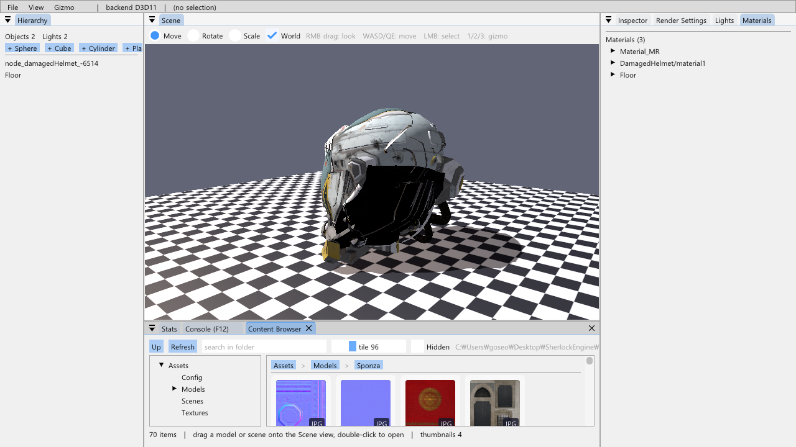
드래그 페이로드
// App/ContentBrowser.h
struct AssetDragPayload
{
AssetType type = AssetType::Other;
wchar_t relativePath[260] = {}; // Assets 기준 상대 경로, 구분자는 백슬래시
};
constexpr const char* kAssetPayloadType = "SHERLOCK_ASSET";ImGui 는 페이로드를 memcpy 로 복사해 보관하므로 포인터나 std::wstring 을 담을 수 없고, 고정 크기 POD 여야 합니다. 절대 경로가 아니라 상대 경로를 싣는 것은 받는 쪽이 그대로 AssetManager::GetModel, MeshSource::modelPath, Paths::GetAssetPath 에 넘길 수 있기 때문입니다. 경로에 루트(Project·Engine)를 적지 않아도 GetAssetPath 가 프로젝트, 엔진 순으로 찾습니다. ContentBrowser::BeginDragSource 는 폴더, Other, 260자 이상 경로에는 소스를 만들지 않습니다. ImGui 에는 드래그 취소 키가 없어서, 소스 쪽이 Esc 를 보고 m_dragCancelled 를 세우고 타깃은 IsDragCancelled() 가 참이면 받지 않습니다. 마우스 버튼을 놓으면 플래그가 풀립니다.
씬 뷰 드롭
// App/Editor.cpp — Editor::DrawSceneView, 이미지 아이템 바로 뒤
if (ImGui::BeginDragDropTarget())
{
const ImGuiPayload* payload = ImGui::AcceptDragDropPayload(kAssetPayloadType,
ImGuiDragDropFlags_AcceptBeforeDelivery | ImGuiDragDropFlags_AcceptNoDrawDefaultRect);
if (payload != nullptr && payload->DataSize == sizeof(AssetDragPayload) && !m_contentBrowser.IsDragCancelled())
{
… // 페이로드 복사, 마지막 문자에 종료 문자, (u, v) 계산
const int hitObject = RaycastScene(engine.GetScene(), engine.GetCamera(), u, v, point);
DrawDropGhost(…, asset, point, hitObject);
if (payload->IsDelivery()) HandleAssetDrop(engine, callbacks, asset, point, hitObject);
}
ImGui::EndDragDropTarget();
}AcceptBeforeDelivery 를 주면 커서가 타깃 위에 있는 동안 매 프레임 페이로드를 받습니다. 그동안은 놓일 자리를 미리 보여 주는 마커만 그리고, 마우스를 놓은 프레임(IsDelivery())에만 실제로 놓습니다. 놓일 점은 Editor::RaycastScene 이 세 경우로 정합니다.
- 광선이 오브젝트의 AABB 에 맞으면 그 교점. 반환값은 오브젝트 인덱스입니다(16.4 의
Pick). - 아니면 바닥 평면 y = 0 과의 교점. 광선
o + t·d에서t = −o.y / d.y이고,|d.y|가 충분히 크고 t 가 0 이상일 때만 씁니다. 반환값은 −1 입니다. - 둘 다 아니면(하늘을 보며 놓은 경우) 광선을 따라 10 단위 떨어진 점.
DrawDropGhost 는 씬 뷰 테두리, 놓일 점의 십자와 원, "이름 -> (x, y, z) on 대상" 라벨을 그립니다. 모델이면 놓일 자리의 AABB 모서리 12개도 그리는데, AssetManager::IsModelCached 가 참일 때만입니다. 커서를 올린 것만으로 GetModel 을 부르면 Sponza 같은 모델을 그 자리에서 파싱하게 됩니다.
종류별 처리 — HandleAssetDrop
모델. Editor::PlaceModelFromAsset 이 callbacks.placeModel(relativePath, point) 를 부르고, 오브젝트 수가 늘었는지로 성공을 판단해 메뉴 막대 메시지를 정합니다. 실제 배치는 EditorApp::PlaceModel 이 합니다.
// App/EditorApp.cpp — EditorApp::PlaceModel
const Model* model = engine.GetAssets().GetModel(relativePath); // 첫 번째는 동기 파싱, 그 뒤로는 캐시
…
Transform placement;
placement.SetPosition(position.x, position.y - model->bounds.min.y, position.z); // 모델의 바닥면이 놓은 점에 닿게
const size_t first = scene.GetObjects().size();
const size_t created = scene.AddModel(*model, placement); // 메시·재질·이미지를 복사
…
if (created > 0) scene.GetObjects()[first]->SetName(prefix); // "<파일명> N"모델의 원점이 바닥에 있다는 보장이 없으므로 AABB 의 최저점(bounds.min.y)만큼 올려 바닥면이 놓은 점에 닿게 합니다. Scene::AddModel(const Model&, …) 은 캐시된 모델을 복사해 넣으므로 같은 모델을 두 번 놓으면 메시와 재질이 두 벌 생깁니다. 유효한 노드가 둘 이상인 모델은 AddModel 이 빈 루트 오브젝트를 먼저 만들고 노드를 그 자식으로 두며, PlaceModel 이 그 첫 오브젝트에 "<파일명> N" 이름을 붙입니다. 번호는 같은 접두어를 가진 기존 오브젝트 수에 1 을 더한 값입니다. 저장 쪽은 손댈 것이 없습니다. 메시의 출처가 MeshSource::FromModel(path, index) 로 기록되어 있어 16.8 의 형식으로 그대로 저장됩니다. 오브젝트를 추가해도 씬 모드는 바꾸지 않고, 삭제할 때만 Demo 에서 File 로 바꿉니다. 배치 뒤의 선택은 두 곳에서 정합니다. PlaceModel 은 첫 오브젝트(루트)를 선택하고, 에디터 경로에서는 이어서 PlaceModelFromAsset 이 m_selected 를 벡터의 마지막 오브젝트로 다시 넣습니다. 노드가 하나인 모델(동봉된 헬멧과 Sponza)에서는 둘이 같은 오브젝트입니다.
씬. Editor::LoadSceneFromAsset 이 scenePath 를 Paths::GetAssetRoot() + relativePath 로 바꾸고 callbacks.loadScene 을 부릅니다.
텍스처. 광선에 맞은 오브젝트의 재질 알베도에 지정합니다. 맞은 오브젝트가 없으면 거절하고, 서브메시 슬롯 재질을 쓰는 모델 오브젝트도 거절하고 Materials 창으로 안내합니다. 재질 이름은 ContentBrowser::ToMaterialTextureName 이 만듭니다. Textures\ 바로 아래 파일은 파일 이름만(uv_checker.png), 그 밖은 asset: 에 상대 경로를 붙입니다(16.8 의 표기 규칙). 재질은 공유될 수 있어 같은 재질을 쓰는 오브젝트가 함께 바뀌며, 바뀐 재질 이름을 메뉴 막대 메시지로 알립니다.
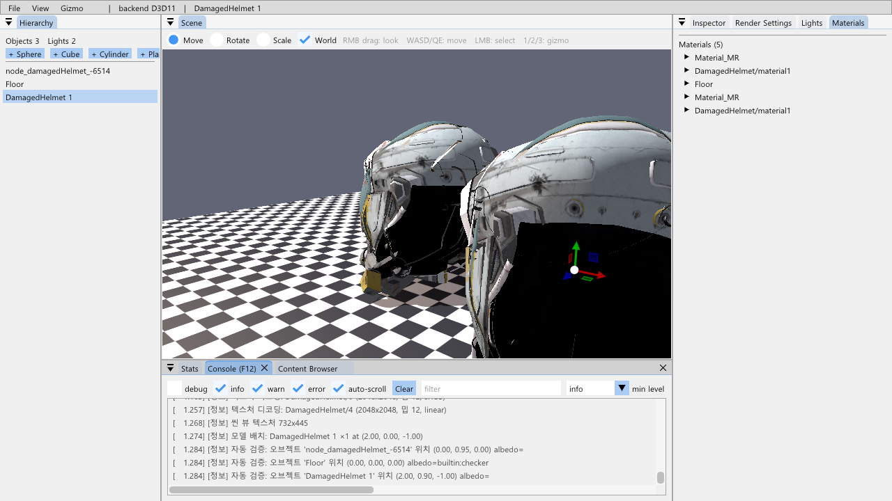
DamagedHelmet.glb 를 (2, 0, −1) 에 놓은 결과. 새 오브젝트 "DamagedHelmet 1" 의 위치 y 가 0.90 인 것은 −bounds.min.y 만큼 올렸기 때문이고, 메시와 재질이 복사되어 Materials 가 5개가 됐습니다. 콘솔에 "모델 배치" 로그가 보입니다.16.10 에디터의 자동 검증
에디터 동작은 키와 마우스를 OS 에 주입하지 않고 검증합니다. 주입 방식은 실행 중 포커스가 다른 창에 있으면 입력이 그 창으로 가고, 화면 캡처는 가려진 창을 찍지 못합니다. 대신 명령줄 인자로 "몇 번째 프레임에 무엇을 할지"를 주고, 앱이 UI 와 같은 함수를 직접 부릅니다. 인자 전체 목록은 부록 D에 있고, 여기서는 원리만 적습니다.
- 스위치.
--exit-after=N이 있으면EditorApp::ParseAutomation이 나머지 인자를m_auto구조체에 읽어 둡니다.AppBase는 이 인자가 있을 때 창을 화면 밖(x = −3000)에SW_SHOWNOACTIVATE로 만들고 포커스를 가져오지 않습니다. - 재생.
EditorApp::RunAutomation이 매 프레임OnUpdate맨 앞에서Time::GetFrameCount()를 보고 정해진 프레임에 동작을 실행합니다. 프레임 번호가 고정이라 동작의 순서가 인자의 순서와 무관하게 정해집니다. 예를 들어 선택(5) 다음에 위치 변경(8), 저장(12), 로드(16), 덤프(20) 순입니다. - 같은 코드 경로.
--pick=u,v는 클릭과 같은Editor::Pick(PickAt)을,--drop=…은 드롭과 같은PlaceModel을,--drop-uv는RaycastScene을,--save·--load는 메뉴와 같은SaveSceneFile·LoadSceneFile을 부릅니다. - 확인 수단.
--dump-objects=1이 오브젝트 이름·위치·컴포넌트·부모를 로그로 남기고,--screenshot=path가 종료 한 프레임 전에Engine::RequestScreenshot을 부릅니다. 스크린샷은 화면 캡처가 아니라 백버퍼 리드백이라 창이 화면 밖에 있어도 정확합니다(9장). - 형식.
AppBase::GetCommandLineOption은--이름=값만 알아봅니다. 값 없는 플래그는 무시되므로--dump-objects=1처럼 씁니다.--save·--load·--screenshot의 상대 경로는Paths::GetSceneDir()기준입니다.
# 데모 씬의 가운데 픽셀을 선택 → y = 6 으로 이동 → 저장 → 스크린샷
SherlockEditor.exe --scene=demo --exit-after=60 --pick=0.5,0.5 --set-position=0,6,0 --save=test.json --screenshot=a.png
# 새 프로세스에서 그 파일로 시작 → 오브젝트 덤프와 스크린샷으로 복원 확인
SherlockEditor.exe --scene=test.json --exit-after=60 --dump-objects=1 --screenshot=b.png재생되는 것은 UI 가 부르는 함수이지 UI 그리기 코드가 아닙니다. ImGui 의 위젯 처리 안에서만 드러나는 문제는 지나치지 않습니다. 16.6 의 PopID 어서션이 그 예입니다. --set-parent 는 OnUpdate 에서 SetParent 를 부르므로 트리를 그리는 도중에 계층이 바뀌는 상황이 생기지 않았습니다. 드래그 앤 드롭처럼 그리기와 얽힌 동작은 직접 조작해 확인해야 합니다.
16.11 함정과 해결
| 함정 | 원인 | 해결 |
|---|---|---|
| F 키와 WASD 가 듣지 않음 | 도킹 공간이 화면 전체라 WantCaptureKeyboard 가 늘 참 | WantTextInput 일 때만 막고, 이동은 씬 뷰 포커스·호버일 때만 받음 (16.1) |
| 에디터 배경이 지워지지 않음 | 오프스크린일 때 메인 패스가 백버퍼를 건드리지 않음 | Renderer::BeginUIPass 가 백버퍼 전이와 Clear 를 맡음 (14장) |
| 씬 뷰·썸네일 색이 바램 | sRGB 포맷으로 읽으면 선형으로 풀린 값이 UNORM 백버퍼에 그대로 들어감 | ImGui 가 읽는 텍스처는 UNORM 뷰·UNORM 포맷 (16.3, 16.9) |
| 기즈모를 놓는 순간 오브젝트가 튐 | 행렬에서 각을 되찾는 식이 회전 합성 순서와 맞지 않음. 노드 pre-transform 을 벗기지 않음 | Rz·Rx·Ry 에 맞춘 식, pre⁻¹ 을 먼저 곱함 (16.5) |
| 드롭 판정이 성립하지 않음 | 드래그 중에는 다른 아이템의 IsItemHovered() 가 거짓 | 호버가 아니라 BeginDragDropTarget 으로 판정. 카메라 쪽에는 IsAssetDragActive() 를 명시 (16.3) |
| 드래그를 취소할 수 없음 | ImGui 에 드래그 취소 키가 없음 | 소스가 Esc 를 보고 플래그를 세우고 타깃이 거절 (16.9) |
| 드래그 소스·우클릭 메뉴가 엉뚱한 아이템에 붙음 | 둘 다 "직전 아이템"을 쓰는데 툴팁 창이 그것을 바꿈 | DrawTile 의 순서를 버튼, 드래그 소스, 컨텍스트 메뉴, 툴팁으로 고정 |
| Content Browser 가 활성 탭이 되지 않음 | 같은 프레임에 뒤이어 처음 나타난 창이 포커스를 가져감 | 3 프레임 동안 SetWindowFocus 반복 (16.2) |
| 새 창이 도킹되지 않고 떠다님 | 추적 중인 imgui.ini 에 그 창의 항목이 없음 | Stats 의 DockId 로 SetNextWindowDockID(FirstUseEver), ini 에 항목 추가 (16.2) |
| 커서를 올리자 에디터가 몇 초 멈춤 | 드롭 마커가 AABB 를 그리려고 모델을 파싱 | IsModelCached 일 때만 AABB 표시. 첫 배치의 동기 파싱은 그대로 둠 (16.9) |
잎 노드에 드롭하면 PopID 어서션 | 드롭이 같은 프레임에 TreePop 조건을 바꿈 | 자식 유무를 hadChildren 에 고정 (16.6) |
| 드롭 중 자식 순회가 깨질 수 있음 | 드롭이 순회 중인 children 벡터를 바꿈 | 복사본을 순회 (16.6) |
--set-parent="…;Cube 1" 이 대상을 못 찾음 | 이름 번호가 "같은 접두어 수 + 1" 이라 데모 씬의 새 큐브는 "Cube 3" | 규칙은 두고 인자의 이름을 맞춤 (16.6) |
| 부모가 비균등 스케일일 때 로컬 값이 어긋남 | XMMatrixDecompose 가 전단을 표현하지 못함 | 해결하지 않음. 근사로 받아들임 (16.5) |
| Align to view 직후 프러스텀 선이 화면을 덮음 | 카메라가 에디터 눈과 같은 자리라 꼭짓점의 w 가 0 | 거리 0.1 안이면 아이콘을 건너뛰고 이미지 사각형으로 클립 (16.3) |
| 재생 버튼의 ▶ 가 네모로 나옴 | 쓰는 폰트에 그 글리프가 없음 | 버튼을 글자 "Play"·"Stop" 으로 |
| 검증 도구가 사용자 화면을 침범 | 화면 캡처와 입력 주입이 포커스를 가진 다른 창에 닿음 | 리드백 스크린샷과 실행 인자 재생, 창은 화면 밖에 포커스 없이 (16.10) |
17.재생 모드·스크립트·게임 빌드·프로젝트 시스템
이 장은 "씬을 편집하는 도구"가 "게임을 만드는 도구"가 되는 데 필요한 네 가지를 다룹니다. 첫째, 에디터가 편집 상태와 재생 상태를 구분하는 재생 모드입니다. 둘째, 오브젝트에 붙는 C++ 컴포넌트(Behaviour)와 사용자가 쓰는 스크립트(Script)입니다. 셋째, 에디터 없이 같은 씬을 실행하는 게임 런타임(GameApp)과 그것을 폴더 하나로 묶는 Build Game 입니다. 넷째, 게임 하나를 폴더 하나로 다루는 프로젝트 시스템입니다. 솔루션과 빌드 설정의 개요는 1장, 시작 순서는 3장, 에디터 UI 일반과 씬 파일 형식은 16장, 카메라와 계층의 수학은 13장에 있으므로 여기서는 필요한 만큼만 요약합니다.
| 파일 | 내용 |
|---|---|
| Scene/Behaviour.h · .cpp | PlayContext, PropertyVisitor, Behaviour, BehaviourRegistry, 등록 매크로 |
| Scene/Script.h · .cpp | 스크립트의 기반 클래스 Script와 단축 함수 |
| Scene/CameraComponent.h · .cpp | 씬 안의 카메라, CameraPose |
| Scene/Scene.h · .cpp | BeginPlay · Update · FixedUpdate · EndPlay · ApplyActiveCamera |
| Scene/SceneSerializer.cpp | 컴포넌트 필드와 JSON 사이의 방문자, SaveToString · LoadFromString |
| Game/Components/ | 엔진 컴포넌트 Rigidbody(.h/.cpp), FollowTarget(.cpp) |
| App/EditorApp.h · .cpp | 재생 상태, StartPlay · StopPlay · TogglePause · StepFrame, 프로젝트 열기·만들기, 스크립트 빌드·다시 올리기(BuildScripts · ReloadScripts · PollScripts) |
| App/Editor.cpp | 툴바(DrawPlayControls), DrawComponents, 카메라 아이콘·미리보기, 런처·배너·Build Game 팝업 |
| App/AppBase.h · .cpp | WantsGUI, ResolveProject, OpenProject, LoadProjectScripts · UnloadProjectScripts |
| App/GameApp.h · .cpp | 게임 런타임 앱 |
| App/ScriptCreator · GameBuilder · ProjectGenerator · ProjectLauncher | 새 스크립트, 패키징, 솔루션 생성과 MSBuild 호출, 최근 목록과 파일 대화상자 |
| Core/Project.h · .cpp, Core/Paths.h · .cpp | .sherlock 파일, 세 루트와 에셋 탐색 |
| Core/ScriptModule.h · .cpp | 스크립트 DLL 하나: 복사본 올리기, 등록 이름 추적·해제, 새 빌드 감지 |
| Core/EngineApi.h, App/EntryPoints.h · .cpp | 엔진 DLL 의 내보내기 표시 SHERLOCK_API, 두 실행 파일이 부르는 RunEditor · RunGame |
| SherlockEditor/EditorMain.cpp, SherlockGame/GameMain.cpp | 두 실행 파일의 진입점 |
| Projects/Sample, Projects/QuaternionLookTest, Projects/CubemapTest | 예제 프로젝트와 실험용 프로젝트 |
17.1 왜 재생 모드가 필요했나
에디터에서 씬을 고치는 동안에는 아무것도 움직이지 않아야 합니다. 구가 굴러다니는 중에는 기즈모로 자리를 잡을 수 없고, 저장한 씬이 "움직이다 만 상태"가 되기 때문입니다. 반대로 게임은 움직여야 합니다. 그래서 에디터는 상태를 셋으로 나누고, 오브젝트의 로직은 재생 상태에서만 실행합니다. 이 구분이 들어오기 전에는 데모 씬의 움직임이 앱의 OnUpdate 안에 오브젝트 번호로 직접 적혀 있어 실행하자마자 움직였고, 사용자가 새 움직임을 붙일 방법이 없었습니다(11-C단계).
EditorApp::PlayState 의 세 상태와 전이. 상태는 EditorApp::m_playState 가 갖고, Editor 는 매 프레임 그 값을 받아 버튼과 표시만 그립니다.설계의 뼈대는 두 가지입니다.
- 로직은 오브젝트에 붙는 컴포넌트입니다.
GameObject는std::vector<std::unique_ptr<Behaviour>>를 갖고,Scene::Update가 재생 중에만 그것들을 호출합니다. 컴포넌트를 도입한 판단의 경위는 D15에 있습니다. - 재생은 되돌릴 수 있어야 합니다. Play 를 누르면 씬 전체를 JSON 문자열로 적어 두고, Stop 을 누르면 그 문자열로 씬을 다시 만듭니다. 씬 파일을 저장하고 읽는 코드를 그대로 쓰므로 "되돌리기" 전용 코드가 없습니다(17.6절).
재생 상태를 Editor 가 아니라 EditorApp 이 갖는 것은 16장의 규칙, 곧 "에디터 패널은 소유하지 않고 콜백으로 앱에 넘긴다"를 따른 것입니다. Editor::Callbacks 의 play · pauseToggle · stop · stepFrame 이 EditorApp::OnInitialize 에서 네 함수에 연결됩니다.
17.2 Behaviour — C++ 클래스 하나가 스크립트 하나
Behaviour(Scene/Behaviour.h)는 모든 컴포넌트의 기반 클래스이고 유니티의 Component 에 해당합니다. 두 종류가 이것을 상속합니다. 엔진 컴포넌트(Rigidbody · FollowTarget · CameraComponent)는 Behaviour 를 직접 상속하고, 사용자가 쓰는 스크립트는 Script(Scene/Script.h)를 상속합니다. Script 는 단축 함수만 더한 얇은 하위 클래스이며 유니티의 MonoBehaviour 에 해당합니다.
class Behaviour
{
public:
virtual ~Behaviour() = default;
virtual const char* GetTypeName() const = 0; // 등록 매크로가 정의함
virtual void Reflect(PropertyVisitor& visitor) { … } // 저장·편집할 필드 열거
virtual void Start() {}
virtual void Update(float dt) { … }
virtual void FixedUpdate(float fixedDt) { … }
GameObject& GetOwner(); Transform& GetTransform();
PlayContext& GetContext(); // Start/Update 안에서만 유효
bool enabled = true; // 꺼지면 Update/FixedUpdate 가 호출되지 않음 (Start 는 호출됨)
…
private:
GameObject* m_owner = nullptr; PlayContext* m_context = nullptr; bool m_started = false;
};가상 함수는 다섯 개입니다. 수명 주기에 해당하는 것은 뒤의 셋입니다.
| 함수 | 호출 시점 | 누가 호출하나 |
|---|---|---|
| Start() | 재생을 시작한 뒤 첫 Scene::Update 에서 한 번. 재생 중에 추가된 컴포넌트는 그 다음 Update 에서 한 번 | Scene::Update |
| Update(dt) | 재생 중 매 프레임. dt 에는 시간 배율이 곱해져 있음 | Scene::Update |
| FixedUpdate(fixedDt) | 고정 스텝마다(Time 의 기본값 1/60초). Start 를 받은 뒤에만 | Scene::FixedUpdate |
| Reflect(visitor) | 씬을 저장하거나 읽을 때, Inspector 가 그릴 때 | SceneSerializer, Editor::DrawComponents |
| GetTypeName() | 저장할 때의 "type", Inspector 의 제목 | 위와 같음 |
유니티에 있는 Awake · OnEnable · OnDestroy · LateUpdate 에 해당하는 것은 없습니다. 재생이 끝날 때 불리는 가상 함수도 없습니다. Behaviour::EndPlay 는 가상이 아니며 컨텍스트 포인터를 지울 뿐입니다.
소유 관계는 한 방향입니다. Scene 이 GameObject 를, GameObject 가 Behaviour 를 unique_ptr 로 소유합니다. Scene 의 오브젝트 벡터가 값이 아니라 unique_ptr 의 벡터이므로 재생 중에 오브젝트가 추가되어 벡터가 재할당돼도 GameObject 의 주소는 바뀌지 않습니다. 컴포넌트가 m_owner 포인터를 들고 있을 수 있는 근거가 이것입니다.
17.3 레지스트리·등록 매크로·엔진 DLL
씬 파일은 컴포넌트를 이름으로 저장합니다. 이름에서 객체를 만들려면 "이름 → 생성 함수" 표가 필요하고, 그것이 BehaviourRegistry 입니다.
namespace BehaviourRegistry
{
using Factory = std::function<std::unique_ptr<Behaviour>()>;
void Register(const char* typeName, Factory factory, bool isScript);
std::unique_ptr<Behaviour> Create(const std::string& typeName); // 모르는 이름이면 nullptr + 경고 로그
const std::vector<std::string>& GetTypeNames(); // 정렬된 목록
bool IsScript(const std::string& typeName);
void Unregister(const std::string& typeName); // 스크립트 DLL 을 내릴 때 (2026-10-08)
}
#define SHERLOCK_REGISTER_BEHAVIOUR_(ClassName, IsScript) \
const char* ClassName::GetTypeName() const { return #ClassName; } \
namespace { struct ClassName##_Registrar { ClassName##_Registrar() { \
BehaviourRegistry::Register(#ClassName, []() -> std::unique_ptr<Behaviour> { return std::make_unique<ClassName>(); }, IsScript); } } \
s_##ClassName##_Registrar; }
#define SHERLOCK_BEHAVIOUR(ClassName) SHERLOCK_REGISTER_BEHAVIOUR_(ClassName, false) // 엔진 컴포넌트
#define SHERLOCK_SCRIPT(ClassName) SHERLOCK_REGISTER_BEHAVIOUR_(ClassName, true) // 사용자 스크립트매크로는 .cpp 파일 끝에 한 줄로 씁니다. 하는 일은 둘입니다. 클래스에 선언만 해 둔 GetTypeName 을 정의하고, 익명 네임스페이스에 정적 객체를 하나 둡니다. 그 객체의 생성자가 wWinMain 이전의 정적 초기화 때 Register 를 호출합니다. 클래스가 스스로 등록하므로 "컴포넌트 목록"을 따로 관리하는 파일이 없습니다.
- 초기화 순서. 서로 다른
.cpp의 정적 객체가 어떤 순서로 만들어지는지는 정해져 있지 않습니다. 등록 객체가 레지스트리의std::map보다 먼저 만들어지면 안 되므로, 맵은Behaviour.cpp의 익명 함수Entries()안의 지역static입니다(처음 호출될 때 만들어지는 Meyers singleton). - 쓰는 곳은 셋입니다.
GameObject::AddBehaviour(const std::string&)가Create를 호출하고,SceneSerializer가 씬을 읽을 때 그 함수를 쓰고, Inspector 의 Add Component 콤보가GetTypeNames로 목록을 채웁니다. 콤보는IsScript로 목록을 스크립트와 엔진 컴포넌트 두 묶음으로 나눕니다. - 모르는 이름.
Create는 경고를 남기고nullptr를 돌려줍니다. 씬 로드는 그 컴포넌트의 JSON 을 오브젝트의GetMissingComponents()에 보관하고 계속됩니다(2026-10-08). Inspector 는 그것을 주황색 "Missing script" 로 보여 주고, 저장하면 그대로 다시 씁니다. 스크립트 DLL 을 빌드해 다시 올리면 진짜 컴포넌트로 되살아납니다(17.13절). - 같은 이름. 이미 있는 이름을 다시 등록하면 먼저 것을 남기고 경고합니다(
try_emplace). 스크립트가 엔진 컴포넌트의 이름을 써서 엔진 것을 덮어쓰지 못합니다.
자기 등록은 등록 객체가 링크된 모듈의 정적 초기화에서 일어납니다. 2026-10-08 전에는 엔진이 정적 라이브러리였고, 아무도 참조하지 않는 등록용 .obj(헤더 없는 Game/Components/FollowTarget.cpp 등)가 링크에서 빠지는 것을 막으려고 실행 파일이 /WHOLEARCHIVE:SherlockEngine.lib 로 링크했습니다. 지금 엔진은 DLL 이라 모든 .obj 가 들어가고 이 옵션은 없습니다. 대신 레지스트리가 프로세스에 하나여야 한다는 조건이 생겼습니다. 맵은 엔진 DLL 안의 Entries() 하나이고 Register 는 SHERLOCK_API 로 내보내므로, 스크립트 DLL 의 등록 객체도 LoadLibrary 안에서 같은 맵에 들어갑니다(1장). 스크립트 DLL 을 내릴 때는 그 DLL 이 등록한 이름을 Unregister 로 지웁니다. 생성 함수가 DLL 코드를 가리키기 때문입니다.
17.4 PropertyVisitor 와 스크립트 API
한 번의 선언으로 저장과 편집을 함께
컴포넌트의 필드는 씬 파일에 저장되어야 하고 Inspector 에서 편집되어야 합니다. 컴포넌트마다 JSON 코드와 ImGui 코드를 따로 쓰게 하면 필드를 하나 더할 때 세 곳을 고쳐야 하고, Scene 계층이 ImGui 를 알게 됩니다. 그래서 컴포넌트는 Reflect 에서 필드를 열거만 하고, 그 필드로 무엇을 할지는 방문자(visitor)가 정합니다.
class PropertyVisitor
{
public:
virtual void Float(const char* name, float& value, float speed = 0.1f) = 0;
virtual void Int(const char* name, int& value) = 0;
virtual void Bool(const char* name, bool& value) = 0;
virtual void Float3(const char* name, DirectX::XMFLOAT3& value, float speed = 0.1f) = 0;
virtual void String(const char* name, std::string& value) = 0;
};
// Game/Components/Rigidbody.cpp
void Rigidbody::Reflect(PropertyVisitor& v)
{
v.Float3("initialVelocity", initialVelocity);
v.Float("gravity", gravity);
v.Float("bounciness", bounciness, 0.01f);
…
}| 방문자 | 위치 | 필드 하나에 하는 일 |
|---|---|---|
| JsonWriteVisitor | Scene/SceneSerializer.cpp | m_j[name] = value |
| JsonReadVisitor | 같은 파일 | 키가 있고 형이 맞을 때만 value 에 넣음. 없으면 클래스의 기본값이 남음 |
| ImGuiPropertyVisitor | App/Editor.cpp | ImGui::DragFloat · DragInt · Checkbox · DragFloat3 · InputText |
씬 파일에서 오브젝트의 컴포넌트는 "components": [ { "type": "Rigidbody", "enabled": true, "gravity": -9.8, … } ] 꼴입니다. type 과 enabled 는 직렬화기가 쓰고 나머지 키는 Reflect 가 열거한 이름 그대로입니다. 형이 다섯 가지뿐이라는 점이 이 방식의 한계입니다. 배열이나 다른 오브젝트에 대한 참조는 표현할 수 없어서, FollowTarget 은 대상을 오브젝트 이름 문자열로 받습니다.
Reflect 는 Inspector 가 값을 바꿀 수 있도록 참조를 받는 비-const 함수입니다. 저장 쪽도 같은 함수를 쓰므로 ComponentsToJson 은 const_cast 를 한 번 합니다. 쓰기 방문자는 값을 바꾸지 않는다는 약속 위에 서 있습니다.
Script 가 제공하는 것
Script 는 새 가상 함수를 더하지 않습니다. Update 안에서 자주 쓰는 호출을 짧게 줄여 줄 뿐입니다.
| 묶음 | 함수 | 비고 |
|---|---|---|
| 자기 오브젝트 | GetGameObject, GetName, GetComponent<T> | T 는 std::derived_from<Behaviour> 콘셉트로 제한됨. 같은 오브젝트의 다른 컴포넌트를 찾음 |
| Transform | GetPosition, GetRotation, SetPosition, Translate, TranslateLocal, Rotate, LookAt, SetScale | 모두 부모 기준 로컬 값(유니티의 localPosition) |
| 계층 | GetParent, SetParent, GetWorldPosition, SetWorldPosition | 부모가 있는 오브젝트의 월드 좌표가 필요할 때. 계층은 13장 |
| 엔진 시스템 | GetInput, GetScene, GetTime, Find | PlayContext 를 통해 접근하므로 재생 중에만 유효. Find 는 이름으로 오브젝트를 찾음 |
Script.h 가 Core/Input.h 를 포함하므로 스크립트는 GetInput().IsKeyDown(VK_UP) 를 다른 include 없이 씁니다. 다음은 Sample 프로젝트의 PlayerController 를 줄인 것입니다.
// Projects/Sample/Scripts/PlayerController.cpp
void PlayerController::Start()
{
m_rotator = nullptr;
if (GameObject* target = Find(rotatorObject)) m_rotator = target->GetBehaviour<Rotator>();
…
}
void PlayerController::Update(float dt)
{
Input& input = GetInput();
…
Translate(dx * velocity * dt, 0.0f, dz * velocity * dt); // 방향키
if (input.IsKeyPressed(VK_SPACE))
if (Rigidbody* body = GetComponent<Rigidbody>())
if (body->IsGrounded()) body->AddImpulse(0.0f, jumpSpeed, 0.0f);
if (input.IsKeyPressed('R') && m_rotator != nullptr) m_rotator->Toggle();
}
SHERLOCK_SCRIPT(PlayerController)스크립트를 쓸 때 지킬 규칙은 세 가지입니다.
- 스크립트 하나는
.h와.cpp한 쌍입니다. 부착과 저장은 이름으로만 이루어지므로 헤더가 없어도 되지만, 다른 스크립트가GetBehaviour<Rotator>()처럼 형으로 접근하려면 선언이 보여야 합니다. 헤더끼리는 서로 포함하지 않고 전방 선언(class Rotator;)을 쓴 뒤.cpp에서 포함합니다. - 다른 오브젝트의 포인터는
Start에서 찾아 멤버에 둡니다. Stop 은 씬을 스냅샷에서 다시 만들므로 이전 재생에서 얻은 포인터는 무효입니다. 재생할 때마다Start가 다시 불리므로 거기서 다시 찾으면 됩니다. - 단축 함수는
Start·Update·FixedUpdate안에서만 씁니다.GetInput·GetScene·GetTime·Find는GetContext()를 역참조하는데, 그 포인터는 재생 중에만 채워져 있습니다.
WASD 는 에디터 카메라가 쓰므로 PlayerController 는 방향키를 씁니다.
17.5 재생 루프 — BeginPlay·Update·FixedUpdate·활성 카메라
재생에 필요한 함수는 Scene 에 넷 있습니다. 편집 중에는 m_playing 이 거짓이라 Update 와 FixedUpdate 가 곧바로 돌아옵니다.
struct PlayContext // Scene 이 하나 갖고, 컴포넌트는 포인터로 봄
{
Scene* scene = nullptr; Input* input = nullptr; Camera* camera = nullptr;
float totalTime = 0.0f; // 재생 시작 뒤 누적 시간 (시간 배율 반영)
bool cameraDriven = false; // 이번 프레임에 카메라 컴포넌트가 엔진 카메라를 움직였음
};
void Scene::Update(float dt)
{
if (!m_playing) return;
m_playContext.totalTime += dt;
m_playContext.cameraDriven = false;
for (size_t i = 0; i < m_objects.size(); ++i) // 인덱스 순회
{
auto& behaviours = m_objects[i]->GetBehaviours();
for (size_t b = 0; b < behaviours.size(); ++b)
{
Behaviour& behaviour = *behaviours[b];
if (!behaviour.HasStarted())
{
behaviour.BeginPlay(&m_playContext); // 재생 중 추가된 컴포넌트
behaviour.MarkStarted();
behaviour.Start();
}
if (behaviour.enabled) behaviour.Update(dt);
}
}
ApplyActiveCamera(dt);
}Scene::BeginPlay(input, camera)
m_playContext 를 새로 채우고 m_playing 을 세운 뒤, 모든 컴포넌트에 Behaviour::BeginPlay(&m_playContext) 로 컨텍스트 포인터를 넘깁니다. Start 는 여기서 부르지 않습니다.
Scene::FixedUpdate(fixedDt)
AppBase::Run 이 Time::ConsumeFixedStep() 이 참인 동안 OnFixedUpdate 를 반복해 부르고(4장), 앱이 그 안에서 이 함수를 부릅니다. HasStarted() 이고 enabled 인 컴포넌트만 받습니다. 한 프레임 안에서 FixedUpdate 가 Update 보다 먼저이므로, 재생 첫 프레임의 고정 스텝은 아무 컴포넌트도 받지 못합니다.
Scene::Update(dt)
위 코드입니다. 아직 Start 를 받지 않은 컴포넌트는 먼저 Start 를 받고, 켜져 있으면 Update 를 받습니다. 순회를 인덱스로 하는 것은 컴포넌트가 재생 중에 오브젝트를 추가해 벡터가 재할당돼도 안전하게 하기 위해서입니다. 순회 중 삭제는 인덱스를 밀어내므로 하면 안 됩니다.
Scene::ApplyActiveCamera(dt)
Update 의 맨 끝에서, 곧 모든 컴포넌트가 움직인 뒤에 불립니다. FollowTarget 이 카메라 오브젝트를 옮긴 다음에 그 자세를 읽어야 한 프레임 늦지 않기 때문입니다.
Scene::EndPlay()
m_playing 을 내리고 활성 카메라를 비우고 모든 컴포넌트의 컨텍스트 포인터를 지웁니다.
활성 카메라
Scene::FindActiveCamera 는 모든 오브젝트의 컴포넌트를 훑어 enabled 인 CameraComponent 가운데 priority 가 가장 큰 것을 고릅니다. 값이 같으면 오브젝트 목록에서 앞선 것이 남습니다. ApplyActiveCamera 는 그 결과로 다음을 합니다.
- 카메라 컴포넌트가 하나도 없으면 아무것도 쓰지 않습니다.
cameraDriven이 거짓으로 남아 재생 중에도 에디터 카메라를 WASD 와 우클릭 드래그로 조종할 수 있습니다. - 활성 카메라가 바뀌었으면 엔진
Camera의 현재 위치·회전(쿼터니언)·fov 를m_blendFrom에 적어 둡니다. 보간 시간은 이전 활성 카메라가 있을 때만 새 카메라의blendTime이고, 재생을 시작해 처음 활성화될 때는 0 입니다. 에디터 시점에서 게임 카메라로 미끄러지듯 이동하지 않게 하려는 것입니다. - 보간 중이면 진행률에 smoothstep(
x·x·(3 − 2x))을 적용해 위치와 fov 는 선형으로, 회전은XMQuaternionSlerp로 섞습니다. - 결과를
Camera::SetPosition·SetRotation·SetLens로 엔진 카메라에 쓰고cameraDriven을 세웁니다. 종횡비는 씬 뷰가 정하므로camera->GetAspect()를 그대로 넘깁니다.
EditorApp::UpdateCamera 는 재생 상태가 Editing 이 아니고 cameraDriven 이 참이면 진행 중인 마우스 룩을 끝내고(EndLook) 돌아옵니다. 두 쪽이 같은 프레임에 카메라를 쓰면 화면이 떨리기 때문입니다.
앱이 루프에 연결하는 방식
// App/EditorApp.cpp
void EditorApp::OnFixedUpdate(float fixedDt)
{
…
if (m_playState == PlayState::Playing) GetEngine().GetScene().FixedUpdate(fixedDt * m_timeScale);
}
void EditorApp::OnUpdate(float dt)
{
…
if (m_playState == PlayState::Playing) scene.Update(dt * m_timeScale);
else if (m_stepOnce)
{
m_stepOnce = false;
const float step = engine.GetTime().GetFixedStep();
scene.FixedUpdate(step);
scene.Update(step);
}
}시간 배율은 툴바의 슬라이더(0~4배) 값이고 dt 와 고정 스텝 길이 양쪽에 곱합니다. 고정 스텝의 횟수는 바뀌지 않고 한 번에 적분하는 시간이 바뀌므로 Rigidbody 가 같은 비율로 느려지거나 빨라집니다. 배율이 0 이면 재생 상태인 채로 멈춥니다.
17.6 Play / Pause / Step / Stop 과 스냅샷
| 조작 | 함수 | 하는 일 |
|---|---|---|
| Play 버튼, Ctrl+P | EditorApp::StartPlay | Editing 일 때만. m_playSnapshot = SceneSerializer::SaveToString(scene, camera) 뒤 scene.BeginPlay(&input, &camera), 상태를 Playing 으로 |
| Pause · Resume 버튼, F10 | EditorApp::TogglePause | Playing 과 Paused 를 맞바꿈. Paused 에서는 Scene::Update 와 FixedUpdate 를 부르지 않을 뿐이고 씬은 재생 상태 그대로 |
| Step | EditorApp::StepFrame | 상태를 Paused 로 하고 m_stepOnce 를 세움. 다음 OnUpdate 가 고정 스텝 길이로 FixedUpdate 와 Update 를 한 번씩 부름. 시간 배율은 곱하지 않음 |
| Stop 버튼, Ctrl+P | EditorApp::StopPlay | 아래 순서로 스냅샷을 복원하고 Editing 으로 |
void EditorApp::StopPlay()
{
if (m_playState == PlayState::Editing) return;
…
scene.EndPlay();
engine.GetRenderer().InvalidateScene(scene, false); // 메시·재질 캐시만 버림. 텍스처는 유지
const int selected = m_editor.GetSelectedObject();
if (!SceneSerializer::LoadFromString(scene, engine.GetCamera(), engine.GetAssets(), m_playSnapshot, "play snapshot"))
{
… // 실패하면 데모 씬으로
}
m_editor.SetSelectedObject(selected < static_cast<int>(scene.GetObjects().size()) ? selected : -1);
m_playSnapshot.clear();
m_playState = PlayState::Editing;
…
}스냅샷은 씬 파일과 같은 JSON 을 메모리 문자열로 만든 것입니다(SceneSerializer::Save 는 SaveToString 의 결과를 파일에 쓰는 함수입니다). 이 선택에서 따라 나오는 성질이 있습니다.
- 저장되는 것만 되돌아옵니다. 오브젝트·Transform·계층·재질·조명·컴포넌트 필드, 그리고 카메라의 위치와 yaw·pitch 가 재생 전 값으로 돌아옵니다. 렌더 설정과 GPU 자원은 저장 대상이 아니므로 재생의 영향을 받지 않습니다.
- 씬이 통째로 다시 만들어집니다. 복원 뒤의
Mesh·Material·GameObject는 새 객체입니다. Renderer 의 GPU 캐시는 포인터를 키로 쓰므로(14장) 로드 전에InvalidateScene을 부릅니다. 둘째 인자가false라 텍스처 캐시는 남고 다시 디코딩하지 않습니다. - 오브젝트 순서가 같으므로 선택 인덱스를 그대로 다시 넣습니다.
- 재생 중의 편집은 막지 않습니다. 기즈모와 Inspector 는 그대로 동작하고 Inspector 맨 위에
Playing: edits are discarded on Stop이 표시됩니다. 재생 중에 값을 만져 보는 것이 튜닝에 쓸모 있기 때문입니다.
씬 JSON 의 "camera" 항목은 position · yaw · pitch 셋뿐입니다. 재생 중 ApplyActiveCamera 가 SetLens 로 쓴 fov·near·far 는 Stop 뒤에도 엔진 카메라에 남습니다. EditorApp::AddCameraObject 가 카메라 오브젝트를 만들 때 SetFromCamera 로 에디터 카메라의 렌즈 값을 복사하므로 평소에는 두 값이 같아 드러나지 않고, 카메라 컴포넌트의 fovY 를 고친 씬에서 차이가 납니다.
툴바와 표시
Editor::DrawPlayControls 가 씬 뷰 툴바의 맨 앞에 버튼을 그립니다. Editing 이면 초록 Play, 아니면 빨간 Stop 이고, 그 옆에 Pause(Paused 에서는 Resume)와 Step, 시간 배율 슬라이더가 있습니다. Pause 와 Step 은 Editing 에서 비활성입니다. 재생 중에는 Editor::DrawSceneView 가 씬 뷰 이미지에 3픽셀 테두리와 글자를 그립니다. Playing 은 초록 테두리와 PLAYING, Paused 는 노란 테두리와 PAUSED 입니다. Hierarchy 는 컴포넌트가 있는 오브젝트의 이름 뒤에 [개수] 를 붙입니다. 단축키 Ctrl+P 는 Editor::Draw 가, F10 은 EditorApp::OnUpdate 가 처리합니다.
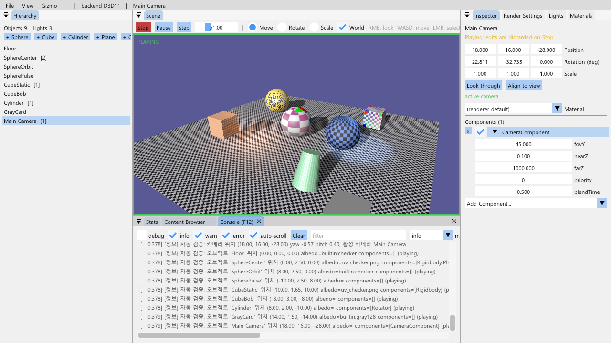
PLAYING, 툴바에 Stop·Pause·Step 과 시간 배율이 보입니다. 씬 뷰는 Hierarchy 맨 아래의 Main Camera 오브젝트가 보는 시점이고, Inspector 에는 재생 중 경고와 active camera, CameraComponent 의 다섯 필드가 있습니다. 콘솔은 자동 검증의 오브젝트 덤프입니다.17.7 내장 컴포넌트와 CameraComponent
엔진 라이브러리에 들어 있는 컴포넌트는 셋이고 모두 SHERLOCK_BEHAVIOUR 로 등록됩니다. 어떤 프로젝트를 열어도 Add Component 의 Components 묶음에 나옵니다.
| 클래스 | 파일 | Reflect 필드 | 동작 |
|---|---|---|---|
| Rigidbody | Game/Components/Rigidbody.h · .cpp | initialVelocity, gravity, bounciness, radius, groundY, drag | Start 에서 속도를 initialVelocity 로 놓음. FixedUpdate 에서 중력을 더하고, x·z 속도를 drag 로 줄이고, 위치를 적분하고, y − radius ≤ groundY 이면 바닥에 올려놓고 속도를 bounciness 배로 뒤집음. 되튐이 0.05 미만이면 멈추고 접지로 표시 |
| FollowTarget | Game/Components/FollowTarget.cpp | target, offset, lookOffset, smoothing | Update 에서 이름이 target 인 오브젝트를 찾아, 그 월드 위치 + offset 을 향해 min(1, dt × smoothing) 비율로 다가가고 대상(+lookOffset)을 바라보게 월드 회전을 씀 |
| CameraComponent | Scene/CameraComponent.h · .cpp | fovY, nearZ, farZ, priority, blendTime | 붙은 오브젝트를 씬 안의 카메라로 만듦. 자체 Update 는 없고 Scene::ApplyActiveCamera 가 읽음 |
Rigidbody는 물리 엔진의 자리를 임시로 채우는 구현입니다.y = groundY평면과만 반발하고 오브젝트끼리는 충돌하지 않습니다. 헤더를 따로 둔 것은 스크립트가GetComponent<Rigidbody>()->AddImpulse(…)를 부를 수 있게 하기 위해서입니다. 스크립트용 함수는AddImpulse(질량 1 로 보고 속도에 더함),SetVelocity,GetVelocity,IsGrounded입니다.FollowTarget은 카메라 전용이 아닙니다. "소유 오브젝트를 대상 쪽으로 옮기는 로직"일 뿐이라 카메라 오브젝트에 붙이면 3인칭 추적 카메라가 되고, 다른 오브젝트에 붙이면 그 오브젝트가 따라다닙니다. 계산을 월드 좌표로 하므로 대상이나 자신이 다른 오브젝트의 자식이어도 맞습니다.Start에서 순간 이동하지 않고 놓아 둔 자리에서 출발합니다.- 데모 씬(
EditorApp::BuildDemoScene)에는SphereCenter에Rigidbody와PlayerController,CubeStatic에 위로 9 의 초기 속도를 가진Rigidbody,Cylinder에Rotator,Main Camera에CameraComponent가 붙습니다. 나머지 오브젝트는 재생 중에도 움직이지 않습니다.
씬 안의 카메라
카메라는 "메시 없는 GameObject + CameraComponent"입니다. 자세는 그 오브젝트의 Transform 이므로 기즈모로 옮길 수 있고 씬 파일에 저장됩니다. CameraComponent 가 Game/ 이 아니라 Scene/ 에 있는 것은 Scene 과 에디터가 이 형을 직접 알아야 하기 때문입니다(Scene.h 가 이 헤더를 포함합니다).
struct CameraPose
{
DirectX::XMFLOAT3 position;
DirectX::XMFLOAT4 rotation; // 월드 회전 쿼터니언
float fovY = 0.0f; // 라디안
DirectX::XMMATRIX GetRotationMatrix() const;
};
class CameraComponent : public Behaviour
{
CameraPose GetPose() const; // 소유 오브젝트의 월드 행렬 → 위치·회전
void ApplyTo(Camera& camera, bool applyLens = true) const; // 카메라 ← 이 오브젝트
void SetFromCamera(const Camera& camera); // 이 오브젝트 ← 카메라
float fovYDegrees = 45.0f, nearZ = 0.1f, farZ = 1000.0f;
int priority = 0; float blendTime = 0.5f;
};GetPose 는 GameObject::GetWorldMatrix() 를 XMMatrixDecompose 로 분해해 스케일은 버리고 이동과 회전만 꺼냅니다. 뷰 행렬에 스케일이 섞이면 장면이 늘어나기 때문입니다. 월드 행렬에서 꺼내므로 부모의 회전이 roll 까지 그대로 카메라에 전달됩니다. 쿼터니언은 저장 형식이 아니라 전달과 보간을 위한 형식이고, Camera 는 회전을 행렬로 받습니다(13장). 분해가 실패하면(부모 스케일이 0 인 경우 등) 로컬 값으로 대신합니다.
| 상황 | 에디터가 하는 일 | 코드 |
|---|---|---|
| 카메라 만들기 | Hierarchy 의 + Camera 가 지금 에디터가 보는 자리에 Camera N 을 만듦. 데모·모델·새 씬은 만들어질 때 Main Camera 를 하나씩 가짐 | EditorApp::AddPrimitive(4), AddCameraObject |
| 편집 중 표시 | 눈에서 1.5 단위 앞의 프러스텀 단면과 "위"를 뜻하는 삼각형, 이름을 선으로 그림. 선택된 카메라는 노란색. 에디터 눈과 0.1 단위 안쪽으로 겹친 카메라는 건너뜀 | Editor::DrawCameraGizmos |
| 클릭 선택 | 메시가 없으므로 한 변 1 단위 상자로 판정 | Editor::Pick |
| 자리 맞추기 | Look through 는 에디터 시점을 카메라로 옮기고(렌즈는 그대로), Align to view 는 카메라를 에디터 시점으로 옮김 | Editor::DrawInspector |
| 미리보기 | 카메라 오브젝트를 선택하면 씬 뷰 오른쪽 아래에 폭 32% 크기로 그 카메라의 시점을 그림. 재생 중 활성 카메라를 고른 경우와 씬 뷰가 240×160 보다 작은 경우는 생략 | Editor::DrawCameraPreview |
미리보기는 에디터가 CameraComponent::ApplyTo 로 임시 카메라(Editor::m_previewCamera)를 채워 Renderer::SetPreviewCamera 에 넘기는 것으로 끝납니다. 그 프레임의 Renderer::Render 가 메인 패스 뒤에 프레임 상수(b0)만 그 카메라로 다시 올리고 같은 드로우 목록을 작은 타깃에 한 번 더 그립니다(14장). 선택이 풀리면 SetPreviewTarget(0, 0) 으로 텍스처를 돌려줍니다.
카메라를 여러 개 두고 재생 중에 스크립트가 priority 를 올리거나 enabled 를 바꾸면 활성 카메라가 바뀌고, 새 카메라의 blendTime 동안 이전 시점에서 보간됩니다(17.5절). 시점 전환 연출은 이 두 값을 바꾸는 것으로 만듭니다. Projects/QuaternionLookTest 의 QuaternionLook 스크립트가 Start 에서 자기 카메라의 priority 를 100 으로 올려 활성 카메라가 되는 것이 그 예입니다.
17.8 에디터에서 새 스크립트 만들기
Inspector 의 컴포넌트 목록 아래에 있는 New Script... 는 유니티의 Create > C# Script 에 해당합니다. 구현은 App/ScriptCreator.cpp 이고 하는 일은 파일 두 개를 만드는 것이 전부입니다.
이름 검사
ScriptCreator::IsValidClassName 이 C++ 식별자인지(영문자나 _ 로 시작, 영숫자와 _, 64자 이하), 그리고 Script · Behaviour · GameObject · Rigidbody 같은 예약된 이름이 아닌지 봅니다.
ScriptCreator::Create
프로젝트가 열려 있지 않으면 no project is open 으로 실패합니다. <프로젝트>\Scripts\<이름>.h 나 .cpp 가 이미 있어도 실패합니다. 없으면 HeaderTemplate 과 SourceTemplate 이 만든 문자열을 두 파일에 씁니다. 헤더는 GetTypeName · Reflect · Start · Update 선언과 필드 float speed = 1.0f 를 가진 클래스이고, 소스는 #include "pch.h", Reflect 의 v.Float("speed", speed), 빈 Start 와 Update, 마지막 줄의 SHERLOCK_SCRIPT(이름) 입니다.
ScriptCreator::OpenScript
두 파일을 ShellExecuteW(…, L"open", …) 로 연결 프로그램(보통 Visual Studio)에서 엽니다. 스크립트 컴포넌트 옆의 Edit 버튼도 같은 함수를 부릅니다.
어떤 vcxproj 도 고치지 않습니다. 스크립트 DLL 프로젝트가 스크립트 폴더를 와일드카드 항목으로 컴파일하기 때문입니다(17.13절). Visual Studio 에서는 프로젝트를 다시 로드하면 새 파일이 보입니다.
스크립트는 C++ 클래스이고 에디터는 컴파일러가 아닙니다. Add Component 목록은 BehaviourRegistry 에서 오고, 레지스트리는 올라와 있는 모듈의 등록 객체가 채웁니다. 새 클래스는 컴파일되어 스크립트 DLL 에 들어간 뒤에야 존재하므로 빌드는 필요합니다. 2026-10-08 부터 재실행은 필요 없습니다. 배너나 Project Settings 의 Build scripts(에디터가 MSBuild 를 부름) 또는 Visual Studio 의 빌드가 DLL 을 새로 쓰면, 에디터가 1초 안에 알아채고 씬을 보존한 채 DLL 을 바꿔 끼웁니다(17.13절). 그 전(A안)에는 프로젝트마다 자기 에디터 실행 파일을 빌드하고 다시 실행해야 했습니다.
스크립트가 엔진 안에 있던 때의 경로 Game/Scripts 가 App/Editor.cpp 의 문구에 남아 있던 것은 2026-10-08 에 고쳤습니다. 실제 위치는 ScriptCreator::GetScriptsDir() 가 돌려주는 <프로젝트>\Scripts\ 입니다.
17.9 왜 C++ 인가 — 스크립팅 언어에 대한 질문과 답
"스크립트를 보통 Python 이나 Lua 로 쓰던데 이유가 있는가, 스크립팅 엔진은 지금 쓰지 않는 다른 개념인가"라는 질문에 대한 답은, 둘이 다른 개념이라는 것입니다.
- 네이티브 스크립팅
(이 엔진) - 게임 로직을 엔진과 같은 언어로 쓰고 같은 컴파일러로 빌드해 실행 파일에 링크합니다. 언리얼에서
AActor·UActorComponent를 C++ 로 상속하는 방식, Godot 의 GDExtension 이 같은 부류입니다. 엔진 쪽에서 보면 스크립트라기보다 "플러그인 형태의 컴포넌트 확장"입니다. - 스크립팅 엔진
- 엔진 안에 인터프리터나 가상 머신을 넣고 엔진 API 를 바인딩으로 노출해 다른 언어로 로직을 씁니다. 유니티의 C#, 로블록스의 Lua, Godot 의 GDScript 가 여기에 해당합니다.
| 별도 언어가 주는 것 | 그 대가 |
|---|---|
| 고치면 재컴파일·재시작 없이 바로 반영됨(반복 속도) | 엔진 API 가 바뀔 때마다 바인딩도 고쳐야 함. 유지 비용이 계속 붙음 |
| 스크립트의 버그가 메모리 손상으로 엔진 전체를 죽이지 않음 | 성능 손실과 가비지 컬렉션 |
| C++ 도구 없이 로직을 쓸 수 있음(디자이너, 모드) | 디버깅이 두 언어에 걸침. Visual Studio 디버거로 스크립트 안에 들어갈 수 없음 |
| 게임 로직을 데이터처럼 배포할 수 있음 | 필드의 형 추론과 직렬화 경로를 따로 만들어야 함 |
이어진 질문 "언어를 바꾸는 편이 더 효율적인가"에 대한 답은 "지금은 아니다"입니다. 근거는 이 엔진의 코드에 있습니다.
- 바꾸면 고쳐야 하는 곳.
Script가 제공하는 Transform·Input·Scene·Find·GetComponent를 전부 바인딩해야 합니다.Reflect한 번으로 얻는 Inspector 편집과 씬 저장은 다른 언어의 필드에 대해 다시 만들어야 합니다.GameBuilder는 스크립트를 컴파일하는 대신 파일로 복사하고 런타임이 읽는 구조가 되어야 합니다. 몇 주 규모의 일이고 전부 이 프로젝트의 목표인 RHI·PSO 와 무관합니다. - 회수할 양이 없습니다. Sample 프로젝트의 스크립트는 예제 둘과 템플릿 하나입니다.
- 실제로 필요한 이득은 반복 속도 하나입니다. 안전성과 진입 장벽은 혼자 만드는 동안에는 생기지 않는 문제입니다. 반복 속도는 언어를 바꾸지 않고도 줄일 수 있습니다.
이 답을 쓸 때의 방식(A안)은 프로젝트마다 스크립트가 들어 있는 자기 에디터 실행 파일을 빌드했습니다. B안은 프로젝트의 스크립트를 DLL 로 빌드하고 에디터가 LoadLibrary 로 올리는 것이고, 2026-10-08 에 그렇게 바꿨습니다(20.17). 풀어야 했던 둘은 이렇게 풀었습니다. 레지스트리를 실행 파일과 DLL 이 공유하도록 엔진 자체를 DLL 로 만들었고(1장), 다시 올릴 때의 상태는 Stop 과 같은 스냅샷 경로로 처리하되 편집 중에만 다시 올립니다(17.13절). 폴더 규약·세 루트·솔루션 생성기·런처는 그대로 쓰였습니다. 언어를 바꾸지 않고 얻을 수 있던 반복 속도 개선이 이것입니다.
언어를 바꾸는 것이 맞는 때는 게임 로직이 수천 줄이 되어 컴파일 대기가 하루 작업의 눈에 띄는 부분이 될 때, 다른 사람이 로직을 써야 할 때, 또는 스크립팅 시스템을 직접 만들어 보는 것이 학습 목표가 될 때입니다. 그때의 후보는 Lua 와 sol2 조합입니다. C# 은 런타임을 내장하는 부담이 크고, Python 은 배포와 성능 때문에 게임 런타임에는 잘 쓰이지 않습니다.
17.10 엔진 솔루션의 프로젝트와 게임 런타임 GameApp
엔진 솔루션 SherlockEngine.sln 은 프로젝트 넷으로 이루어집니다. 설정의 전체 목록은 1장에 있고, 여기서는 이 장의 내용과 맞물리는 점만 적습니다.
| 프로젝트 | 산출물 | 컴파일하는 것 |
|---|---|---|
| SherlockEngine | DLL SherlockEngine.dll(+ 가져오기 라이브러리 .lib) | Core·Graphics·RHI·Scene·Game/Components, App/ 전부(AppBase·GameApp·에디터·EntryPoints). 셰이더 컴파일과 Shaders\·Assets\ 복사도 이 프로젝트가 한 번 함 |
| SherlockEditor | SherlockEditor.exe | EditorMain.cpp 하나 — RunEditor() |
| SherlockGame | SherlockGame.exe | GameMain.cpp 하나 — RunGame() |
| SampleScripts | Projects\Sample\Binaries\<구성>\SampleScripts.dll | Projects\Sample\Scripts\**\*.cpp (생성기가 만든 프로젝트 파일, 17.13절) |
- 같은 출력 폴더. 엔진과 두 실행 파일의 산출물이 모두
x64\<구성>\에 모입니다. 그래서 엔진 프로젝트가 한 번 컴파일하고 복사한 셰이더와 에셋을 두 실행 파일이 함께 쓰고, 실행 파일은 옆의SherlockEngine.dll을 올립니다. 엔진의OutDir은$(ProjectDir)..\x64\$(Configuration)\로 적혀 있어, 프로젝트 솔루션(17.13절)에서 참조해 빌드해도 엔진 저장소의 같은 자리에 만들어집니다. - pch. 엔진과 스크립트 DLL 이 엔진의
pch.h를 씁니다. 스크립트 DLL 프로젝트는$(SherlockEngineDir)pch.cpp를 자기 프로젝트에서Create로 컴파일하고, include 경로가 엔진 루트와 자기Scripts\이므로 스크립트는#include "pch.h","Scene/Script.h","Rotator.h"를 폴더 없이 씁니다. 두 실행 파일은 진입점 하나뿐이라 pch 를 쓰지 않습니다. - 에디터 소스는 엔진 DLL 에 있습니다. 파일은
SherlockEngine\App\에 있습니다. 2026-10-08 전에는 에디터 실행 파일 프로젝트가 상대 경로로 참조해 컴파일했는데, ImGui 가 정적 라이브러리라 실행 파일과 엔진 DLL 에 컨텍스트가 둘 생기는 것을 피하려고 엔진 프로젝트로 옮겼습니다(1장). - 프로젝트에 묶이지 않는 실행 파일.
SHERLOCK_PROJECT_NAME정의와AppBase::SetCompiledProjectName은 없어졌습니다. 실행 파일에 스크립트가 없으므로 어느 프로젝트의 것인지 기록할 것이 없습니다.
AppBase 의 분기와 GameApp
에디터와 게임은 같은 AppBase 위에 올라가는 두 앱입니다. 차이는 가상 함수 둘로 표현됩니다.
// App/AppBase.h
virtual bool WantsGUI() const { return true; } // false 면 ImGui 컨텍스트·백엔드를 만들지 않고 OnGUI 도 호출하지 않음
virtual const wchar_t* GetWindowTitle() const { return L"SherlockEngine"; }
// App/GameApp.h
class GameApp : public AppBase
{
protected:
bool WantsGUI() const override { return false; }
const wchar_t* GetWindowTitle() const override { return m_title.c_str(); }
bool OnInitialize() override; void OnUpdate(float dt) override;
void OnFixedUpdate(float fixedDt) override; void OnGUI() override {}
…
};WantsGUI() 가 거짓일 때 달라지는 곳은 네 군데입니다. AppBase::Initialize 가 InitGUI 를 건너뛰어 ImGui 컨텍스트가 만들어지지 않습니다. Engine::Initialize 는 ImGui::GetCurrentContext() 가 없으면 렌더러 백엔드(Device::InitImGui)를 초기화하지 않습니다. ImGui_ImplWin32_Init 이 불리지 않아 m_guiWin32Initialized 가 거짓으로 남고, AppBase::Run 과 MsgProc 은 이 값을 보고 ImGui 프레임과 OnGUI, 메시지 전달을 생략합니다. 마지막으로 아무도 Renderer::SetSceneTarget 을 부르지 않으므로 Renderer::IsOffscreen() 이 거짓이고, 메인 패스가 씬 뷰 텍스처가 아니라 백버퍼에 직접 그려집니다.
OnInitialize 보다 먼저 AppBase::Initialize 가 프로젝트의 스크립트 DLL 을 올립니다. 게임은 복사하지 않고 원본을 그대로 올리며, 패키지에서는 실행 파일 옆의 <이름>Scripts.dll 을 먼저 찾습니다(17.13절).
GameApp::OnInitialize 의 순서는 다음과 같습니다.
- 설정의
game.title(기본Sherlock Game)로 창 제목을 다시 정합니다. - 시작 씬을 정합니다. 프로젝트 파일의
startScene이 먼저이고, 비어 있으면engine.ini의[game] startScene입니다. 둘 다 없으면 오류를 남기고 실패합니다. 상대 경로는Paths::GetAssetPath(L"Scenes\\…")로 풉니다. Renderer::InvalidateScene,SceneSerializer::Load, 그리고 바로Scene::BeginPlay(&input, &camera)를 부릅니다.
그 뒤는 17.5절의 루프 그대로입니다. OnFixedUpdate 가 Scene::FixedUpdate 를, OnUpdate 가 Scene::Update(dt) 를 부르고 ESC 가 눌리면 PostQuitMessage(0) 을 보냅니다. 스냅샷과 Stop, 시간 배율은 없습니다. 씬에 카메라 오브젝트가 있으면 첫 Update 에서 그 시점이 되고, 없으면 씬 파일의 카메라 값을 씁니다. 게임 실행 파일도 --exit-after · --screenshot · --dump-objects 를 받습니다(부록 D).
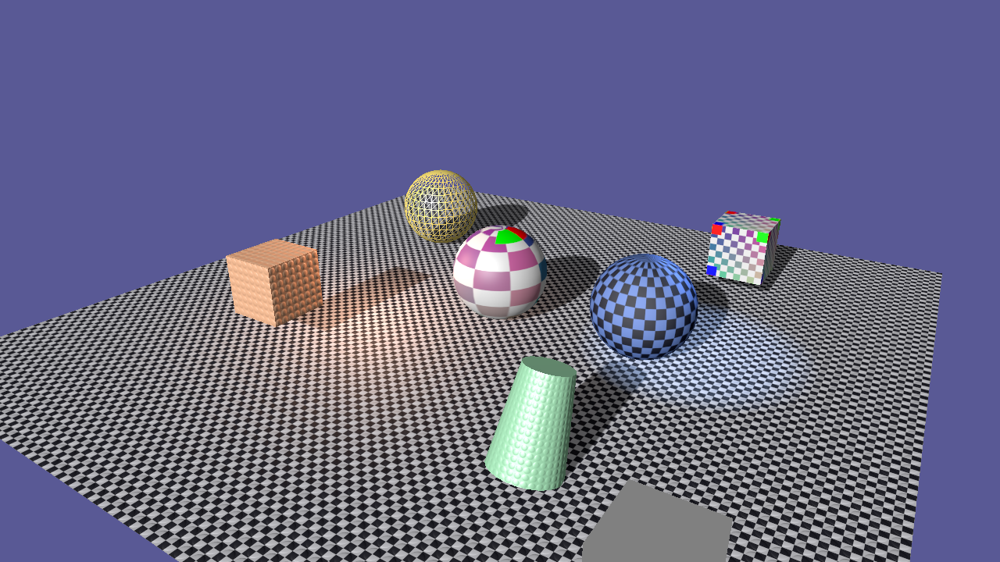
SherlockGame.exe 의 화면입니다. 에디터 창이 없고 씬이 창 전체(백버퍼)에 그려집니다. 그림 17-2 와 같은 씬을 같은 Main Camera 로 본 것입니다.17.11 Build Game — 패키징
File > Build Game... 은 언리얼의 Package Project 에 해당합니다. 스크립트는 이미 스크립트 DLL 로 컴파일되어 있고 에셋은 파일이므로, 패키징은 "런타임 실행 파일·DLL 과 그것이 읽을 파일을 한 폴더에 복사하는 일"입니다. 팝업(Editor::DrawBuildPopup)이 GameBuilder::Options 를 채우고 Build 버튼이 GameBuilder::Build 를 동기로 부릅니다.
| 옵션 | 기본값 | 뜻 |
|---|---|---|
| name | 프로젝트 이름 | 출력 폴더 <프로젝트>\Build\<name>\, 실행 파일 이름, 창 제목 |
| startScene | 열린 씬 파일, 없으면 목록의 첫 항목 | 프로젝트 Assets\Scenes\*.json 중 하나(GameBuilder::ListScenes) |
| copyAllAssets | 켬 | 끄면 시작 씬이 참조하는 것만 복사 |
| releaseBuild | 끔 | 켜면 먼저 MSBuild 로 엔진 솔루션의 SherlockGame 과 프로젝트의 스크립트 DLL 을 Release|x64 로 빌드하고 Release 것을 씀 |
| openFolder | 켬 | 끝나면 탐색기로 출력 폴더를 엶 |
런타임과 스크립트 DLL 준비
런타임은 어느 프로젝트든 엔진의 SherlockGame.exe 입니다(2026-10-08 전에는 프로젝트마다 <프로젝트 이름>.exe). 에디터 실행 파일이 있는 폴더에서 찾고, 없으면 실패합니다. 스크립트 DLL 은 <프로젝트>\Binaries\<구성>\<프로젝트 이름>Scripts.dll 이고, 스크립트 소스가 있는데 DLL 이 없으면 프로젝트 솔루션의 <이름>Scripts 타깃을 먼저 빌드합니다. releaseBuild 가 켜져 있으면 엔진 저장소의 SherlockEngine.sln 의 SherlockGame 을 Release 로 빌드하고(에디터가 Release 면 그 엔진 DLL 은 지금 쓰는 중이라 건너뜀), 스크립트 DLL 도 Release 로 빌드한 뒤 경로의 \Debug\ 를 \Release\ 로 바꿔 거기서 가져옵니다. 스크립트 DLL 빌드는 /p:BuildProjectReferences=false 로 엔진을 건드리지 않습니다.
실행 파일과 DLL
런타임 실행 파일을 <name>.exe 라는 이름으로 복사하고, 같은 폴더의 *.dll(SherlockEngine.dll, vcpkg 가 놓은 DirectXTex.dll 등)을 함께 복사합니다. 스크립트 DLL 은 <name>Scripts.dll 로 이름을 바꿔 둡니다. 패키지의 .sherlock 이름이 게임 이름이고, 런타임은 실행 파일 옆의 <프로젝트 이름>Scripts.dll 을 찾기 때문입니다(AppBase::LoadProjectScripts).
셰이더
런타임 폴더의 Shaders\(컴파일된 .cso, 없어도 됨)와 엔진 루트의 Shaders\(.hlsl 원본, 런타임 컴파일 폴백용)를 Shaders\ 로 복사합니다.
에셋
전부 복사일 때는 엔진의 Assets\ 를 먼저, 프로젝트의 Assets\ 를 나중에 같은 폴더로 복사합니다. 이름이 겹치면 프로젝트 것이 덮어쓰므로 런타임의 탐색 순서(17.12절)와 결과가 같습니다. 참조만 복사일 때는 Config, 시작 씬 파일, 씬 JSON 의 meshes[].path 에서 뽑은 모델 폴더(경로의 앞 두 단계, 예: Models\Sponza), 재질의 텍스처 다섯 종(알베도·노멀·금속성/거칠기·AO·발광)과 씬 environment 의 네 이름(내장이 아니면)이 가리키는 파일 또는 폴더를 복사하고, 이름만으로 참조되는 기본 텍스처를 위해 Textures 폴더는 통째로 넣습니다.
설정과 프로젝트 파일
복사본 Assets\Config\engine.ini 의 끝에 [game] 구역(startScene, title)을 덧붙입니다. Config 는 키에서 값으로 가는 맵이라 같은 키가 앞에 있어도 마지막 값이 적용됩니다. 그리고 <name>.sherlock 을 engineRoot 가 빈 문자열인 채로 씁니다.
<프로젝트>\Build\<name>\
├─ <name>.exe SherlockGame.exe 의 사본
├─ SherlockEngine.dll, <name>Scripts.dll, DirectXTex.dll …
├─ <name>.sherlock { "name", "startScene", "engineRoot": "", "format": 1 }
├─ Shaders\ *.cso, *.hlsl
└─ Assets\ 엔진 콘텐츠 + 프로젝트 콘텐츠 (Config\engine.ini 끝에 [game])이 폴더가 소스 트리 없이 실행되는 이유는 세 루트가 한 폴더로 모이기 때문입니다. 런타임은 실행 파일 옆의 .sherlock 을 찾아 그 폴더를 프로젝트 루트로 삼습니다. engineRoot 가 비어 있고 ..\..\SherlockEngine\ 표식도 없으므로 엔진 루트도 실행 파일 폴더가 됩니다. 로그는 그 폴더의 Logs\ 에 남습니다.
MSBuild 호출
빌드는 ProjectGenerator::RunMsBuild(solution, target, configuration, logFile, error, extraArguments) 가 맡고, Build Game 과 17.13절의 Build scripts 가 함께 씁니다. %ProgramFiles(x86)%\Microsoft Visual Studio\Installer\vswhere.exe 에 -latest -requires Microsoft.Component.MSBuild -find MSBuild\**\Bin\MSBuild.exe 를 주어 MSBuild 경로를 찾고, 그 경로로 "<sln>" /t:<타깃> /p:Configuration=<구성> /p:Platform=x64 /m /v:m /nologo <extraArguments> 를 실행합니다. 두 단계를 cmd.exe /c "for /f … do …" 한 줄로 묶어 CreateProcessW(CREATE_NO_WINDOW)로 띄우고, 출력은 로그 파일로 돌리며, WaitForSingleObject(…, INFINITE) 로 끝날 때까지 기다립니다. 그동안 에디터는 멈춥니다. 종료 코드가 0 이 아니면 로그의 앞 4000자를 오류 로그로 남깁니다. Visual Studio 가 설치된 개발 PC 에서만 동작합니다.
17.12 프로젝트 = 폴더 + .sherlock, 세 루트
프로젝트는 게임 하나를 담는 폴더이고 언리얼의 .uproject 에 해당합니다. Core/Project.h 의 Project 가 프로젝트 파일을 읽고 쓰고 폴더 안의 경로를 돌려줍니다.
<Name>\
├─ <Name>.sherlock 프로젝트 파일 (JSON)
├─ Assets\ Scenes\, Textures\, Models\ …
├─ Scripts\ 프로젝트 스크립트 (.h/.cpp, 하위 폴더 가능)
├─ <Name>.sln, <Name>Scripts.vcxproj (에디터가 생성)
├─ Binaries\<구성>\ <Name>Scripts.dll (+ Loaded\ 에 에디터가 올린 복사본)
├─ Intermediate\ 중간 파일
└─ Build\ 패키징 결과, MSBuild 로그| .sherlock 의 키 | 뜻 |
|---|---|
| name | 프로젝트 이름. 없으면 파일 이름을 씀 |
| startScene | Assets\Scenes\ 기준 파일 이름. 에디터와 게임이 시작할 때 여는 씬 |
| engineRoot | 엔진 소스 폴더 …\SherlockEngine\ 의 절대 경로. 비었거나 그 폴더가 없으면 무시됨 |
| format | 형식 번호. Project::Save 가 1 을 씀 |
Project::Load 는 파일 경로나 폴더 경로를 받고, 경로를 weakly_canonical(absolute(…)) 로 정규화합니다. Project::Create 는 이름을 검사하고(영문자로 시작, 영숫자와 _, 48자 이하), 폴더 골격(Assets\Scenes · Assets\Textures · Assets\Models · Scripts · Build)과 startScene 이 Main.json 인 프로젝트 파일만 만듭니다. 예제 스크립트·솔루션·기본 씬은 에디터가 채웁니다(17.13절). Core 계층이 Scene 과 에디터를 모르게 하려는 것입니다.
세 루트와 에셋 탐색 순서
| 루트 | 무엇이 있나 | 정해지는 순서 |
|---|---|---|
엔진 루트Paths::GetEngineRoot | 셰이더 원본, 엔진 콘텐츠 Assets\ | ① 프로젝트 파일의 engineRoot(Assets 와 Shaders 폴더가 있을 때만 적용) ② 실행 파일 기준 ..\..\SherlockEngine\ 에 Assets\Config\engine.ini 가 있으면 그 폴더 ③ 실행 파일 폴더(배포) |
프로젝트 루트Paths::GetProjectRoot | 프로젝트 콘텐츠, 스크립트 | ① 실행 인자 --project= ② 실행 파일 폴더에서 위로 3단계까지 올라가며 찾은 첫 *.sherlock(Project::FindUpwards) ③ 엔진 저장소의 Projects\Sample\ |
실행 파일 폴더Paths::GetExecutableDir | .cso, DLL, 로그, 배포 시 Assets\ 사본 | GetModuleFileNameW |
프로젝트 루트를 정하는 것은 AppBase::ResolveProject 이고, AppBase::Initialize 에서 설정 파일을 읽기 전에 불립니다(3장). engine.ini 도 아래의 에셋 탐색으로 찾기 때문에, 프로젝트가 자기 Assets\Config\engine.ini 를 두면 그것이 쓰입니다. 두 번째 규칙 덕분에 패키지의 실행 파일은 같은 폴더의 프로젝트를 인자 없이 찾습니다(2026-10-08 전에는 Binaries\Debug\ 의 프로젝트 에디터도 이 규칙으로 두 단계 위의 프로젝트를 찾았습니다).
std::wstring Paths::GetAssetPath(const wchar_t* relative)
{
if (HasProject())
{
const std::wstring project = s_projectRoot + L"Assets\\" + relative;
if (FileExists(project)) return project;
}
const std::wstring engine = GetEngineAssetRoot() + relative;
if (FileExists(engine)) return engine;
const std::wstring exe = GetExecutableDir() + L"Assets\\" + relative;
if (FileExists(exe)) return exe;
return HasProject() ? s_projectRoot + L"Assets\\" + relative : engine;
}탐색 순서가 "프로젝트, 엔진, 실행 파일 폴더"이므로 씬 파일에는 어느 루트 기준인지 적지 않습니다. 씬이 Models\DamagedHelmet\DamagedHelmet.glb 라고만 적어도 프로젝트에 없으면 엔진 콘텐츠에서 찾고, 프로젝트에 같은 이름을 두면 프로젝트 것이 쓰입니다. 씬을 저장하는 곳(Paths::GetSceneDir)과 콘텐츠 브라우저의 첫 트리(Paths::GetAssetRoot)는 프로젝트의 Assets\ 입니다. 실행 파일 옆에 Shaders\ 가 없는 경우 Paths::GetShaderPath 는 엔진 루트의 원본으로 폴백합니다(10장).
엔진 컴포넌트와 프로젝트 스크립트
둘의 경계는 파일 위치입니다. SherlockEngine\Game\Components\ 와 Scene\CameraComponent 는 엔진 DLL 에 컴파일되어 어느 프로젝트에서나 쓰이고, <프로젝트>\Scripts\ 는 그 프로젝트의 스크립트 DLL 에만 컴파일됩니다. Add Component 가 목록을 두 묶음으로 나눠 보이는 것이 이 경계이고, 구분의 근거는 등록 매크로가 넘긴 isScript 값입니다.
17.13 프로젝트 솔루션 생성, 스크립트 DLL, 런처
ProjectGenerator::Generate(project, error) 는 프로젝트 폴더에 파일 세 개를 씁니다. <Name>.sln, 스크립트 DLL 프로젝트 <Name>Scripts.vcxproj, 그 .filters 입니다. 언리얼의 Generate Visual Studio project files 에 해당하며, 엔진 소스 트리가 있을 때만 동작합니다.
<!-- ProjectGenerator.cpp 의 ScriptsProject 가 쓰는 내용 중 핵심 -->
<!-- SherlockEngine ProjectGenerator 2: … --> <!-- 형식 표시. EnsureUpToDate 가 봄 -->
<SherlockRepo>$(MSBuildProjectDirectory)\..\..\</SherlockRepo> <!-- 엔진 저장소. 같은 드라이브면 상대, 아니면 절대 -->
<SherlockEngineDir>$(SherlockRepo)SherlockEngine\</SherlockEngineDir>
<VcpkgEnableManifest>true</VcpkgEnableManifest> <VcpkgManifestRoot>$(SherlockRepo)</VcpkgManifestRoot>
<VcpkgAutoLink>false</VcpkgAutoLink> <!-- ImGui 등을 DLL 에 한 벌 더 넣지 않음 -->
<ConfigurationType>DynamicLibrary</ConfigurationType>
<OutDir>$(ProjectDir)Binaries\$(Configuration)\</OutDir>
<IntDir>$(ProjectDir)Intermediate\$(ProjectName)\$(Configuration)\</IntDir>
<LocalDebuggerCommand>$(SherlockRepo)x64\$(Configuration)\SherlockEditor.exe</LocalDebuggerCommand>
<LocalDebuggerCommandArguments>--project="$(ProjectDir)<Name>.sherlock"</LocalDebuggerCommandArguments>
<LanguageStandard>stdcpp20</LanguageStandard>
<PrecompiledHeader>Use</PrecompiledHeader> <PrecompiledHeaderFile>pch.h</PrecompiledHeaderFile>
<AdditionalIncludeDirectories>$(SherlockEngineDir);$(ProjectDir)Scripts;…</AdditionalIncludeDirectories>
<AdditionalDependencies>SherlockEngine.lib;…</AdditionalDependencies> <!-- 엔진 DLL 의 가져오기 라이브러리 -->
<AdditionalLibraryDirectories>$(SherlockRepo)x64\$(Configuration)\;…</AdditionalLibraryDirectories>
<ClCompile Include="Scripts\**\*.cpp" />
<ClCompile Include="$(SherlockEngineDir)pch.cpp"><PrecompiledHeader>Create</PrecompiledHeader></ClCompile>
<ClInclude Include="Scripts\**\*.h" />
<ProjectReference Include="$(SherlockEngineDir)SherlockEngine.vcxproj">…<LinkLibraryDependencies>false</LinkLibraryDependencies></ProjectReference>- 재귀 와일드카드. MSBuild 의
**는 하위 폴더까지 맞춥니다. 새 스크립트를 만들어도 vcxproj 를 고칠 필요가 없고,Scripts\Tests\같은 하위 폴더에 둔 파일도 컴파일됩니다. Sample 도 같은 생성 파일을 쓰므로 엔진 솔루션과 프로젝트 솔루션의 와일드카드가 같습니다. - 솔루션의 세 프로젝트.
<Name>Scripts(첫 항목이라 시작 프로젝트), 엔진 저장소의SherlockEngine.vcxproj와SherlockEditor.vcxproj입니다. F5 는 스크립트 프로젝트의 디버거 명령으로 엔진의SherlockEditor.exe --project=…를 띄우므로 엔진 코드와 스크립트를 한 디버거에서 봅니다. 엔진의OutDir이 자기 저장소 기준이라(17.10절) 어느 솔루션에서 빌드하든 같은 DLL 을 공유합니다. - 엔진은 빌드 순서만.
ProjectReference의LinkLibraryDependencies를 끄고 가져오기 라이브러리는 경로로 링크합니다. 에디터의 Build scripts 는/p:BuildProjectReferences=false로 엔진을 건드리지 않습니다. 에디터가 쓰는 중인 엔진 DLL 은 잠겨 있어 다시 링크할 수 없기 때문입니다. - vcpkg. 저장소 밖의 프로젝트는 위로 올라가도
vcpkg.json이 없으므로VcpkgManifestRoot로 엔진 저장소를 가리킵니다. 스크립트는 엔진 pch 가 끌어오는 vcpkg 헤더만 쓰므로 자동 링크는 끕니다. - 옛 형식 자동 변환. 첫 줄 주석의
SherlockEngine ProjectGenerator 2가 형식 표시입니다.ProjectGenerator::EnsureUpToDate는 이 표시가 있는<Name>Scripts.vcxproj가 없으면 다시 생성하고, 형식 1(스크립트를 실행 파일에 컴파일하던<Name>Editor.vcxproj·<Name>.vcxproj)의 파일 가운데 생성기 주석이 있는 것만 지웁니다. 에디터가 시작할 때, 프로젝트를 열 때, Build scripts 직전에 부릅니다. 형식 1 에 있던 에디터 소스 목록(GetEditorSources)은 없어졌습니다.
스크립트 DLL 올리기와 핫리로드
Core/ScriptModule 이 DLL 하나를 맡고, AppBase 가 열린 프로젝트의 것을 하나 갖습니다(m_scripts).
찾기 — AppBase::LoadProjectScripts(hotReload)
AppBase::Initialize 가 엔진 초기화 직후, OnInitialize 가 씬을 읽기 전에 부릅니다. 실행 파일 옆의 <이름>Scripts.dll(패키지)을 먼저 보고, 없으면 <프로젝트>\Binaries\<구성>\ 의 것을 씁니다. 구성은 엔진의 것(_DEBUG 면 Debug)을 따릅니다. Debug 엔진과 Release 스크립트는 CRT 와 STL 배치가 달라 섞을 수 없습니다. DLL 이 없으면 경고를 남기고 스크립트 없이 계속합니다.
복사본을 올림 — ScriptModule::Load
에디터(hotReload 참)는 원본을 Binaries\<구성>\Loaded\<이름>Scripts_<프로세스 ID>_<번호>.dll 로 복사해 그것을 LoadLibraryW 합니다. 원본이 잠기지 않으므로 에디터를 켠 채 Visual Studio 로 다시 빌드할 수 있습니다. PDB 는 복사하지 않습니다. DLL 안에 원본 PDB 의 절대 경로가 들어 있어 디버거가 그것을 찾습니다. 게임은 원본을 그대로 올립니다. 올리기 전후의 BehaviourRegistry::GetTypeNames() 를 비교해 이 DLL 이 등록한 이름을 기억합니다.
새 빌드 감지 — EditorApp::PollScripts
1초마다 원본의 수정 시각을 마지막으로 올리려 한 시각과 비교합니다. 다르고, 마지막 수정에서 1초 넘게 지났으면(링커가 아직 쓰는 중일 수 있음) 편집 중일 때만 다시 올립니다. 재생 중이면 배너로 알리고 Stop 뒤에 올립니다. 올리기에 실패한 파일도 시각을 기록해 같은 파일을 매초 다시 시도하지 않습니다.
다시 올리기 — EditorApp::ReloadScripts
Stop 의 스냅샷 복원과 같은 경로입니다. SceneSerializer::SaveToString 으로 씬과 카메라를 문자열로 → UnloadProjectScripts(Renderer::InvalidateScene, Scene::Clear, 이 DLL 이 등록한 이름의 Unregister, FreeLibrary, 복사본 삭제) → 새 복사본을 올림 → 문자열에서 씬을 다시 만듦 → 선택 복원. 씬을 먼저 비우는 이유는 DLL 의 클래스로 만든 컴포넌트의 소멸자와 vtable 이 DLL 코드를 가리키기 때문입니다. 컴포넌트의 필드는 Reflect 로 저장되므로 값이 새 DLL 로 이어지고, 필드 이름을 바꾸면 그 값만 기본값이 됩니다.
ScriptModule 의 소멸자는 DLL 을 내리지 않습니다. 앱이 끝날 때 엔진이 씬을 비우는 시점(Engine::Shutdown)이 AppBase 멤버의 소멸보다 늦을 수 있어, 먼저 FreeLibrary 하면 스크립트 컴포넌트의 소멸자가 사라진 코드를 부르게 됩니다. 프로세스가 끝날 때 OS 가 정리하고, 남은 복사본은 다음 실행의 첫 올리기가 지웁니다.
Build scripts
배너, Project Settings, 자동 검증의 --build-project=1 이 EditorApp::BuildScripts 를 부릅니다. EnsureUpToDate 뒤 RunMsBuild(<sln>, <이름>Scripts, 엔진 구성, Build\msbuild-scripts.log, …, "/p:BuildProjectReferences=false") 로 빌드하고, 편집 중이면 바로 ReloadScripts 를 부릅니다. MSBuild 가 끝날 때까지 에디터는 멈춥니다(22장).
런처와 새 프로젝트
File 메뉴의 New Project... 와 Projects (launcher)... 가 Projects 팝업(Editor::DrawLauncher)을 엽니다. 시작할 때 자동으로 뜨지는 않습니다. 팝업은 세 구역입니다. Recent 는 ProjectLauncher::LoadRecent 가 %LOCALAPPDATA%\SherlockEngine\editor.json 의 recentProjects 배열에서 읽은 목록이고(최대 10개, 없어진 파일은 빠짐), Open 은 *.sherlock 파일 대화상자이며, New 는 이름과 위치를 받습니다. 위치의 기본값은 엔진 저장소의 Projects\ 입니다. Create and open 은 EditorApp::CreateProject 를 부릅니다.
호출 순서: Project::Create(폴더 골격과 프로젝트 파일) → UnloadProjectScripts(이전 프로젝트의 DLL) → AppBase::OpenProject → ScriptCreator::Create("Rotator")(템플릿으로 만든 예제 스크립트) → ProjectGenerator::Generate → BuildEmptyScene(바닥, 방향광, Main Camera, HDR 환경) → Main.json 으로 저장 → ProjectLauncher::AddRecent. 새 프로젝트의 스크립트는 아직 빌드 전이라 Rotator 는 Add Component 에 없고, 배너의 Build scripts 를 한 번 누르면 올라옵니다.
실행 중에 다른 프로젝트를 여는 경로는 EditorApp::OpenProjectAndScene 입니다. 재생 중이면 먼저 StopPlay 를 하고, 이전 프로젝트의 스크립트 DLL 을 내리고(씬을 먼저 비움), AppBase::OpenProject 가 Paths 의 엔진 루트와 프로젝트 루트를 바꾸고, EnsureUpToDate 와 LoadProjectScripts 로 새 프로젝트의 DLL 을 올린 뒤 Editor::OnProjectChanged 가 콘텐츠 브라우저와 선택을 초기화한 뒤 시작 씬을 읽습니다. 시작 씬이 없거나 읽지 못하면 빈 씬을 만듭니다. Project Settings... 팝업은 시작 씬을 고르고 Project::Save 로 저장합니다.
스크립트가 아직 없을 때 — 배너와 Missing script
EditorApp::SyncProjectInfo 가 매 프레임 Editor::ProjectInfo 의 스크립트 칸(scriptSources · scriptsLoaded · scriptTypes · scriptReloads · scriptsPendingReload · scriptsError · scriptsDll)을 채웁니다. Editor::DrawProjectBanner 는 두 경우에만 씬 뷰 툴바 아래에 배너를 그립니다. 스크립트 소스가 있는데 DLL 이 올라오지 않았을 때(Build scripts 버튼과 이유)와, 재생 중이라 새 빌드를 아직 올리지 못했을 때입니다. 스크립트가 없는 프로젝트(소스 0개)에는 배너가 없습니다. Project Settings 에는 DLL 경로, 등록한 컴포넌트, 다시 올린 횟수가 늘 보입니다.
DLL 이 없는 동안에도 씬은 동작합니다. 엔진 컴포넌트는 그대로 붙고, 등록되지 않은 스크립트 컴포넌트는 SceneSerializer 가 JSON 그대로 GameObject::GetMissingComponents() 에 보관합니다. Inspector 는 그것을 주황색 <이름> (Missing script) 로 보여 주고, 씬을 저장하면 그 JSON 을 다시 씁니다. 그래서 스크립트를 빌드하기 전에 씬을 저장해도 값이 사라지지 않고, 빌드 후 다시 올리기의 스냅샷 복원에서 진짜 컴포넌트로 되살아납니다(되살아난 컴포넌트는 목록의 끝에 붙음). 2026-10-08 전에는 이 경우 컴포넌트가 버려져 저장하면 파일에서도 빠졌습니다.
그림 17-4 는 그 전(A안)의 배너입니다. Sample 로 컴파일된 엔진 에디터로 다른 프로젝트를 열면 "이 실행 파일에는 이 프로젝트의 스크립트가 없다" 며 프로젝트 에디터로 빌드·전환하는 버튼(BuildAndLaunchProjectEditor)을 보였습니다. 지금은 실행 파일이 하나라 이 경우가 없고 그 함수도 없어졌습니다.
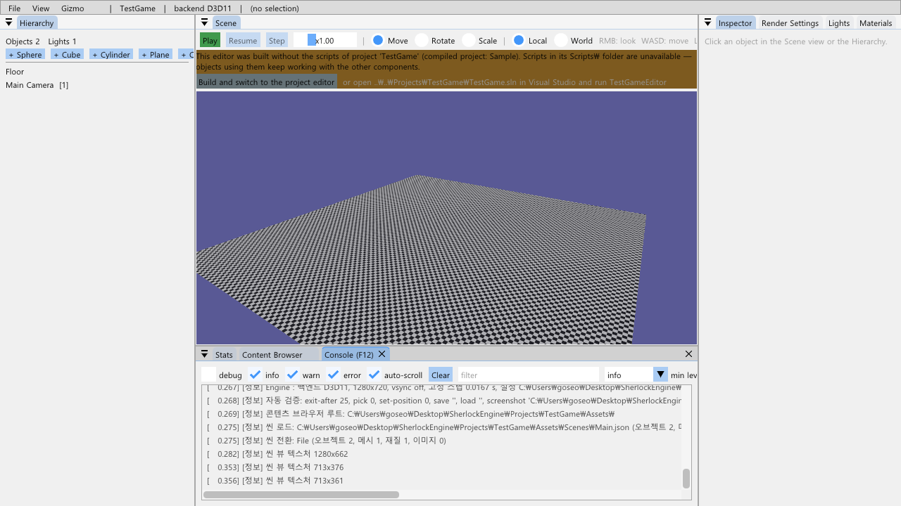
17.14 예제·실험 프로젝트와 EditorApp 이라는 이름
| 프로젝트 | 구성 | 솔루션과 스크립트 DLL |
|---|---|---|
| Projects/Sample | Sample.sherlock(시작 씬 demo_components.json, engineRoot 빈 값), Assets/Scenes/ 의 demo_components.json · floor_cube.json, Scripts/ 의 PlayerController · Rotator · Test(템플릿 그대로) | 생성된 Sample.sln · SampleScripts.vcxproj. 같은 스크립트 프로젝트가 엔진 솔루션에도 들어 있어 엔진과 함께 빌드됨 |
| Projects/QuaternionLookTest | .sherlock(시작 씬 quat_roll_local.json, engineRoot 절대 경로), 씬 Main.json · quat_roll_local.json · quat_roll_world.json, Scripts/Rotator(생성 때의 예제), Scripts/Tests/QuaternionLook | 생성기가 만든 QuaternionLookTest.sln 의 QuaternionLookTestScripts(2026-10-08 에 형식 1 의 두 exe 프로젝트에서 자동 변환). 산출물은 Binaries\ |
| Projects/CubemapTest | .sherlock(시작 씬 Main.json), HDR 큐브맵·IBL 환경과 PBR 구·헬멧(12.14절), Scripts/Rotator | CubemapTest.sln 의 CubemapTestScripts(자동 변환) |
Sample 은 다른 프로젝트를 찾지 못했을 때 열리는 기본 프로젝트이기도 합니다(AppBase::GetDefaultProjectDir).
문서의 주장을 확인하려고 쓴 스크립트는 게임에 쓰라고 만든 예제가 아닙니다. Sample 에 두면 Sample 의 스크립트 DLL 에 늘 함께 컴파일되고 Add Component 목록에도 섞입니다. 그래서 실험은 런처로 실험 전용 프로젝트를 만들고 그 안의 Scripts\Tests\ 에 둡니다. 첫 사례가 쿼터니언 누적으로 roll 이 쌓이는 현상을 재현한 QuaternionLook 이고(내용은 13장), 생성기의 와일드카드가 재귀인 이유도 이 폴더입니다. 격리는 레지스트리가 보장합니다. QuaternionLookTest 를 열면 그 스크립트 DLL 이 올라와 이 컴포넌트가 붙고, Sample 을 열면 그 DLL 은 내려가 있으므로 같은 이름을 추가하면 BehaviourRegistry::Create 가 모르는 이름이라는 경고를 남기고 실패합니다.
EditorApp 이라는 이름
에디터 앱 클래스의 이전 이름은 TestApp 이었고, "앱을 저장하고 불러올 수 있는 단위로 만든다"는 구상에서 나온 이름이었습니다. 그 역할은 다른 두 개념이 가져갔습니다. 씬(SceneSerializer 의 JSON)이 월드 상태의 저장 단위이고, 프로젝트(.sherlock 폴더)가 게임 하나의 저장 단위입니다. 남은 것은 창을 열고 Editor · 재생 상태 · 프로젝트 생성을 묶는 "에디터 실행 파일 그 자체"였으므로, 게임 실행 파일의 GameApp 과 짝이 되는 EditorApp 으로 바꿨습니다(20장). 앱은 실행 파일의 종류이고 데이터는 프로젝트가 갖는다는 분리입니다.
- 앱을 저장 단위로 되살리지 않은 이유. 프로젝트·씬과 겹치는 세 번째 직렬화 단위가 생겨 무엇을 어디에 저장하는지가 흐려집니다.
Editor와 합치지 않은 이유.App/Editor는 씬을 소유하지 않고 콜백으로 넘기는 패널 묶음이고,EditorApp은 그 콜백을 받아 씬·재생 상태·프로젝트를 실제로 바꾸는 쪽입니다. 재생 모드와 자동 검증 인자가 이 경계에 기대고 있습니다.
17.15 함정과 해결
| 증상 | 원인 | 해결 (지금 코드) |
|---|---|---|
| 컴포넌트의 소유자 포인터가 깨짐 | GameObject 를 값으로 담은 벡터는 늘어날 때 원소의 주소가 바뀜 | Scene::m_objects 를 unique_ptr 의 벡터로. Scene.h 의 주석 참고 |
| 재생 중 오브젝트를 지우면 다음 컴포넌트를 건너뜀 | Scene::Update 의 인덱스 순회에서 삭제는 뒤 인덱스를 당김 | 추가만 안전함. 컴포넌트 안에서 삭제하지 않음(지연 삭제는 22장) |
| Stop 뒤 엉뚱한 메시가 그려질 수 있음 | Renderer 캐시의 키가 메시·재질 포인터인데 복원이 새 객체를 만듦 | StopPlay 가 로드 전에 Renderer::InvalidateScene(scene, false) |
| 재생 중 화면이 떨림 | 활성 카메라 컴포넌트와 에디터 카메라 컨트롤러가 같은 프레임에 카메라를 씀 | PlayContext::cameraDriven 이 참이면 EditorApp::UpdateCamera 가 EndLook 뒤 돌아옴 |
Align to view 직후 프러스텀 선이 화면 테두리를 덮음 | 카메라 오브젝트가 에디터 눈과 같은 자리 | DrawCameraGizmos 가 눈과 0.1 단위 안쪽이면 건너뛰고, 그리기를 이미지 사각형으로 잘라 냄 |
| 재생 버튼이 네모로 보임 | ImGui 에 올린 글꼴에 ▶ 글리프가 없음 | 버튼을 글자 Play · Stop 으로 |
| 엔진을 라이브러리로 나눈 뒤 컴포넌트가 목록에서 사라짐 | 참조되지 않는 .obj 는 링크에서 빠지고 정적 등록 객체도 함께 빠짐 | 그때는 실행 파일 프로젝트의 /WHOLEARCHIVE:SherlockEngine.lib. 2026-10-08 부터 엔진이 DLL 이라 해당 없음 (17.3절) |
게임 실행 파일에서 PNG 텍스처 로드와 스크린샷 저장이 E_NOINTERFACE 로 실패 | DirectXTex 의 WIC 는 COM 이 필요함. 에디터에서는 ImGui 쪽 초기화 중에 우연히 COM 이 열려 있었음 | AppBase::Initialize 맨 앞의 CoInitializeEx(nullptr, COINIT_MULTITHREADED), 소멸자의 CoUninitialize |
| 패키지의 시작 씬을 원본 설정과 어떻게 분리하나 | 원본 engine.ini 를 고치면 개발 환경이 바뀜 | 복사본의 끝에 [game] 을 덧붙임. 같은 키는 마지막 값이 적용됨 |
SHERLOCK_PROJECT_NAME 이 늘 빈 문자열 | 정의는 실행 파일 프로젝트에만 있고 AppBase 는 라이브러리에서 컴파일됨 | 그때는 진입점이 AppBase::SetCompiledProjectName 으로 값을 넘김. 2026-10-08 에 정의와 함수 모두 없어짐 |
| 프로젝트 솔루션이 엔진 라이브러리를 프로젝트 폴더에 다시 빌드함 | 라이브러리의 출력 폴더가 $(SolutionDir) 기준이었음 | 라이브러리의 OutDir 을 $(ProjectDir)..\x64\$(Configuration)\ 로 |
| 새 프로젝트의 에디터가 컴파일되지 않음 | 생성기가 쓰는 언어 표준이 C++17 로 남아 있었는데 Script.h 는 std::derived_from 을 씀 | 생성기의 <LanguageStandard> 를 stdcpp20 으로 |
| 하위 폴더의 스크립트가 컴파일되지 않음 | 와일드카드가 Scripts\*.cpp 였음 | 생성기의 항목을 Scripts\**\*.cpp 로 |
| 같은 프로젝트가 최근 목록에 두 번 쌓임 | --project=..\..\Projects\X 처럼 상대 경로로 열면 다른 문자열이 됨 | Project::Load 가 절대 경로로 정규화 |
| 저장소 밖 프로젝트에서 vcpkg 패키지를 찾지 못함 | 위쪽 폴더에 vcpkg.json 이 없음 | 생성 vcxproj 의 VcpkgManifestRoot 를 엔진 저장소로 |
| 배너가 보이지 않음 | 씬 뷰 이미지가 남은 공간을 다 써서 그 뒤에 그린 것이 잘림 | DrawSceneView 가 이미지보다 먼저 DrawProjectBanner 를 부름 |
| 선언이 사라졌다는 엉뚱한 컴파일 오류 | 한 줄 주석이 \ 로 끝나면 다음 줄이 주석에 이어짐(줄 연속) | 경로를 적는 주석을 백슬래시로 끝내지 않음. AppBase::GetDefaultProjectDir 의 주석에 이 주의가 남아 있음 |
HRESULT_FROM_WIN32(GetLastError()) 가 컴파일되지 않음(C2664) | ScriptModule 의 멤버 GetLastError()(오류 문자열)가 Win32 함수를 가림 | ::GetLastError() |
| 스크립트 DLL 없이 연 씬은 다시 올려도 스크립트 컴포넌트가 돌아오지 않고, 저장하면 파일에서도 빠짐(구현 중 코드에서 발견) | 씬 로드가 모르는 타입을 버렸고, 다시 올리기의 스냅샷도 버린 뒤의 씬이었음 | GameObject::GetMissingComponents() 에 JSON 을 보관하고 저장·스냅샷이 그대로 씀 |
아직 풀지 않은 것은 22장에 모았습니다. 재생 중 오브젝트의 생성·삭제 API, 오브젝트끼리의 충돌, 스크립트 DLL 의 남은 한계, 게임 실행 파일에서 ImGui 를 완전히 떼어 내기, 비동기 빌드가 이 장과 관련된 항목입니다.
17.16 검증
이 장의 기능은 모두 실행 인자로 창을 조작하지 않고 확인할 수 있습니다. 인자는 버튼과 같은 함수를 부릅니다(EditorApp::RunAutomation). 인자의 전체 목록과 실행되는 프레임 번호는 부록 D에 있습니다. 아래 명령은 x64\Debug\ 에서 실행하는 것을 기준으로 합니다.
| 확인할 것 | 명령 | 무엇을 보면 맞는가 |
|---|---|---|
| 재생 중에만 움직인다 | SherlockEditor.exe --scene=demo --exit-after=90 --play=1 --dump-objects=1 | 로그의 재생 시작: 오브젝트 …, 컴포넌트 …, 스냅샷 … 바이트, 활성 카메라: Main Camera. 덤프의 각 줄 끝이 (playing) 이고 CubeStatic 의 y 가 1.5 에서 변해 있음 |
| Stop 이 되돌린다 | … --exit-after=30 --play=1 --stop-at=15 --dump-objects=1 | 재생 정지: 스냅샷 복원. 덤프가 (editing) 이고 위치가 재생 전과 같으며 활성 카메라가 (editor) |
| 재생 중 추가한 컴포넌트가 Start 를 받는다 | … --exit-after=60 --new-scene=1 --add=1 --play=1 --add-component=Rotator --dump-objects=1 | 'Cube 1' 에 컴포넌트 Rotator 추가, 덤프의 components=[Rotator] |
| 등록이 링크에서 살아남았다 | 위 첫 명령 | components=[Rigidbody,PlayerController] · [Rigidbody] · [Rotator] · [CameraComponent]. 빠졌다면 로드 때 컴포넌트 '…' 를 모른다 경고가 남음 |
| 게임 런타임 | SherlockGame.exe --exit-after=90 --dump-objects=1 --screenshot=<절대 경로> | 게임 시작: … (오브젝트 …, 컴포넌트 …, 카메라 Main Camera). 스크린샷에 에디터 UI 가 없음(그림 17-3) |
| 패키지가 혼자 돈다 | SherlockEditor.exe --exit-after=20 --build-game=TestBuild | 게임 빌드: TestBuild → …\Projects\Sample\Build\TestBuild\ (… 파일, … 초). 그 폴더를 다른 곳에 복사해 TestBuild.exe 를 실행하면 같은 화면 |
| 새 프로젝트와 스크립트 DLL | SherlockEditor.exe --exit-after=30 --new-project=TestGame --build-project=1 | Projects\TestGame\ 에 폴더·.sherlock·TestGame.sln·TestGameScripts.vcxproj·Main.json, Binaries\Debug\TestGameScripts.dll. 로그의 스크립트 DLL 로드: … (1개: Rotator) 와 자동 검증: build-project → 스크립트 DLL 올라옴 |
| 옛 형식 변환과 Missing script 복원 | SherlockEditor.exe --project=<옛 프로젝트> --build-project=1 --exit-after=40 | 옛 형식 프로젝트 파일 지움: …Editor.vcxproj, 프로젝트 솔루션 생성, 씬 로드 때 컴포넌트 '…' 를 모른다, 빌드 뒤 스크립트 다시 올리기 완료: 컴포넌트 …개, 오브젝트 …개 복원 |
| 핫리로드 | 에디터를 켠 채 Visual Studio 나 MSBuild 로 <이름>Scripts 를 빌드 | 1초쯤 뒤 스크립트 DLL 이 새로 빌드됨: 다시 올림 → 스크립트 DLL 내림 → 스크립트 DLL 로드 → 스크립트 다시 올리기 완료. 고친 코드가 실행됨 |
| 패키지에 DLL 이 들어간다 | SherlockEditor.exe --project=… --build-game=X --build-release=1 --exit-after=30 | 출력 폴더에 X.exe·SherlockEngine.dll·XScripts.dll. X.exe --dump-objects=1 의 로그에 스크립트 DLL 로드: …\XScripts.dll 과 스크립트 컴포넌트가 붙은 오브젝트 |
시작할 때의 로그 한 줄이 세 루트를 한꺼번에 보여 줍니다. AppBase::Initialize 가 남기는 프로젝트 루트: … (엔진 루트 …) 이고, 배포 환경이면 엔진 루트 뒤에 배포 가 붙습니다. 몇 줄 뒤에 스크립트 DLL 을 올렸는지(스크립트 DLL 로드 또는 경고)가 나옵니다. 재생·스냅샷·컴포넌트는 Scene 계층의 일이라 백엔드와 무관하므로, 같은 명령에 --backend=d3d12 를 붙여도 덤프가 같아야 합니다.
지금 구조에 이르기까지의 경위입니다. 출발점의 코드와 문제 목록, 설계 결정 22건, 단계별 연대기, 작업 중 나온 질문과 답, 그리고 남은 일을 모았습니다.
18.출발점(커밋 867c380)과 문제 20건
이 장은 기록입니다. 1~17장은 지금 코드를 설명하고, 이 장은 그 코드가 출발한 자리를 보존합니다. 2026-07-16 의 커밋 867c380 은 구 하나를 Blinn-Phong 으로 그리는 D3D11 샘플이었고, 이 코드를 처음부터 끝까지 추적한 분석에서 결함 20건(이 장)과 설계 결정 22건(19장)이 나왔습니다. 이후의 모든 단계(20장)는 이 두 목록을 지워 가는 과정이었습니다. 문제 20건은 2026-09-10 의 1차 수정과 2026-09-23 의 0~11단계 작업으로 전부 해결됐습니다. 각 항목에는 해결이 지금 코드의 어디에 있는지를 적었습니다.
- 출발점 코드 보기
git show 867c380:SherlockEngine/Device.cpp처럼 커밋을 지정해 읽습니다. 당시 소스는 CP949 인코딩이라 한글 주석은 변환해야 보입니다(D17).- 당시 파일
SherlockEngine/한 폴더에main.cpp,AppBase,TestApp,Device,Shader,Renderer,MeshRenderer,Mesh,GameObject,Transform,Camera,GameTimer,struct.h,enum.h,helper.h,pch, HLSL 2개- 지금 대응하는 곳
App/AppBase.cpp,Core/Engine.cpp,RHI/D3D11/D3D11Device.cpp,RHI/DXBC/ShaderCompiler.cpp,Graphics/Renderer.cpp,Graphics/ShaderConstants.h,RHI/PipelineTypes.h(전체 대응은 18.3)
18.1 출발점 스냅샷 — 무엇이 있었나
솔루션은 프로젝트 하나(SherlockEngine.vcxproj)였고 콘솔 서브시스템의 main() 에서 시작했습니다. 실행하면 콘솔 창과 렌더 창이 함께 떴고 로그는 전부 std::cout 이었습니다. 소스는 .cpp 13개, .h 15개, HLSL 2개입니다. 원 분석은 이를 "15쌍, 약 1,300줄"로 요약했고, 빈 줄과 주석을 포함해 세면 2,120줄입니다. 지금은 엔진·에디터·게임 세 프로젝트에 약 19,000줄입니다(1장).
| 항목 | 867c380 의 값 |
|---|---|
| 그래픽 API | Direct3D 11, Feature Level 11_0 (배열에 9_3 이 있었지만 11_0 이 아니면 실패 처리) |
| 화면에 그리는 것 | 구 1개. 반지름 5, 32×16 분할, 정점 497개(40바이트), 인덱스 2,880개(32비트) |
| 조명 | Blinn-Phong. Directional / Point / Spot, 최대 8개 배열 중 1개 사용 |
| 깊이 버퍼 | 없음 (#1) |
| 스왑체인 | R8G8B8A8_UNORM, 버퍼 2개, DXGI_SWAP_EFFECT_DISCARD, MSAA 없음, Present(0, 0) |
| 셰이더 | D3DCompileFromFile 로 실행할 때마다 컴파일. 경로는 작업 디렉터리 기준 상대 경로, 컴파일 플래그 0 |
| 언어·빌드 | C++17, v143, PCH. 단 stdcpp17 과 PCH 설정이 Debug|x64 구성에만 있었음 |
| 의존성 | ImGui, DirectXTK, DirectXTex. vcpkg 전역 설치에 의존, 매니페스트 없음 (D20) |
파일과 역할
| 파일 | 역할 |
|---|---|
| main.cpp | TestApp 생성, Initialize(), Run() |
| AppBase | Win32 창, 메시지 루프, ImGui 초기화. Device·Renderer·Shader·Camera·GameTimer 를 public 멤버로 소유 |
| TestApp | AppBase 를 상속한 샘플 앱. Render() 에서 ShaderUpdate, RenderModeUpdate, Renderer::Render 를 차례로 호출 |
| Device | 장치·컨텍스트·스왑체인·RTV 생성, Clear, Present, Resize, 버퍼와 InputLayout 생성 헬퍼. ComPtr 를 쓰는 유일한 계층 |
| Shader | HLSL 런타임 컴파일, VS/PS 객체, 상수버퍼 b0(변환)·b1(조명)의 생성과 바인딩 |
| Renderer | 구 오브젝트 1개, RasterizerState 4종, 조명 배열과 ImGui 조명 패널, 조명 상수버퍼 갱신 |
| MeshRenderer | VB/IB/InputLayout 생성, 변환 상수버퍼 갱신, DrawIndexed |
| Mesh | CreateSphere() 가 CPU 쪽 정점·인덱스 배열을 만듦 (Luna 의 GeometryGenerator 방식) |
| GameObject / Transform | Transform(위치·오일러 회전·스케일) 하나만 보유. 월드 행렬 = S·R·T |
| Camera | eye/lookAt/up 세 점과 XMMatrixLookAtLH, 원근/직교 투영 |
| GameTimer | Luna 의 타이머 (QueryPerformanceCounter) |
| struct.h / enum.h / helper.h | VERTEX, ConstBuffer, LightData/LightBuffer, 렌더 모드 열거형(RS_*, RM_*), SafeRelease |
| Basic*Shader.hlsl | VS: WVP 변환과 월드 위치·노멀 출력. PS: 조명 루프, Blinn-Phong, 거리·스팟 감쇠 |
클래스 구조
당시 로그(2026-07-07)의 소유 원칙은 "AppBase 가 Device·Renderer·Shader 를 소유하고 Device 는 아무것도 소유하지 않는다"였고 코드가 그대로 따랐습니다. 요약하면 Device → Shader → Renderer → MeshRenderer → Mesh/Transform/Camera 순으로 아래 계층을 참조하는 구조입니다.
- AppBase
- OS 경계. D3D 호출은 직접 하지 않고
graphicsDevice.Clear()와Present()만 불렀습니다. - Shader
- 셰이더와 상수버퍼를 함께 소유했습니다. 상수버퍼의 생성은 여기, 내용 갱신은
MeshRenderer와Renderer가 각각 맡아 책임이 갈라져 있었습니다(D2). - Renderer
- 씬, 조명 상태, ImGui 조명 패널을 모두 가진 "씬 + 렌더 설정"이었습니다(D3).
- MeshRenderer
- GPU 리소스를 만들고 Draw 를 발행하는 유일한 지점이었습니다.
18.2 출발점 스냅샷 — 어떻게 돌았나
초기화 순서
main() 이 TestApp::Initialize() 를 부르면 AppBase::Initialize() 가 다음 순서로 실행됐습니다. Init* 단계는 실패하면 false 를 돌려줬지만 ShaderCreate 와 DataLoading 의 결과는 검사하지 않았습니다.
InitMainWindow
WNDCLASSEX 등록, AdjustWindowRect 로 클라이언트 영역 1280×720 을 맞춘 창 생성. 전역 함수 WndProc 이 전역 포인터 g_appBase 를 통해 멤버 MsgProc 으로 넘겼습니다. WM_SIZE 에서 Device::Resize 와 Camera::SetAspectRatio 를 불렀습니다.
Device::InitDevice
D3D11CreateDeviceAndSwapChain 한 번으로 장치·컨텍스트·스왑체인을 만들고, 백버퍼 RTV 를 만들자마자 OMSetRenderTargets(1, &rtv, nullptr) 로 바인딩했습니다. m_DSView 는 선언만 있었습니다. 이어서 화면 전체 뷰포트를 설정했습니다.
camera.SetLens
시야각 45°, 종횡비 16:9, near 0.1, far 1000.
Shader::ShaderCreate
BasicVertexShader.hlsl 을 vs_5_0, BasicPixelShader.hlsl 을 ps_5_0 으로 컴파일했습니다. VS 바이트코드는 InputLayout 생성용으로 보관했습니다. 상수버퍼 두 개를 만들었습니다: pCB 는 ConstBuffer 320바이트(행렬 5개), pLightCB 는 LightBuffer 688바이트(LightData 80바이트 × 8 + 48바이트).
Renderer::DataLoading
Mesh::CreateSphere(5.0f, 32, 16, white) 로 구를 만들고 MeshRenderer::Initialize 가 VB(USAGE_DEFAULT), IB(R32_UINT), InputLayout(POSITION 0 / COLOR 12 / NORMAL 28)을 만들었습니다. RasterStateCreate 가 Solid/Wireframe × CullNone/CullBack 네 개의 RasterizerState 를 만들었습니다. Shader 가 Renderer 보다 먼저여야 했던 이유는 InputLayout 생성에 VS 바이트코드가 필요했기 때문입니다.
InitGUI, 타이머 리셋
ImGui 컨텍스트와 DX11/Win32 백엔드 초기화.
프레임 루프
AppBase::Run() 은 PeekMessage 기반 루프였고, 메시지가 없을 때마다 아래 순서로 한 프레임을 처리했습니다. 수직 동기 없이 돌아 약 13,000 FPS 가 나왔습니다.
| 순서 | 호출 | 비고 |
|---|---|---|
| 1 | gameTimer.Tick(), Update() | dt 를 지역 변수에 넣었고 Update() 는 비어 있었음 (#5) |
| 2 | graphicsDevice.Clear() | 첫 번째 Clear. 색 (0.1, 0.1, 0.3) |
| 3 | ImGui NewFrame, "Information" 창, UpdateGUI(), ImGui::Render() | Renderer::UpdateGUI 가 조명 위젯을 그림 |
| 4 | Shader::ShaderUpdate() | VSSetShader, PSSetShader, VSSetConstantBuffers(b0), PSSetConstantBuffers(b1) 를 매 프레임 재바인딩 (D5) |
| 5 | Renderer::RenderModeUpdate() | RSSetState(RS_CULLBACK) |
| 6 | Renderer::Render() | UpdateSubresource(b0), UpdateSubresource(b1), 두 번째 Clear(#2), MeshRenderer::Draw 의 IA 설정과 DrawIndexed(2880, 0, 0) |
| 7 | ImGui_ImplDX11_RenderDrawData, Present(0, 0) | 같은 백버퍼 위에 UI (#9) |
지금의 프레임은 AppBase::Run 이 Engine::BeginFrame, OnUpdate(dt), Engine::Render, Engine::EndFrame 을 부르고, 그림자·메인·UI 패스 순서는 Engine::Render 와 Renderer::Render 가 정합니다(4장).
파이프라인에 걸려 있던 것
| 단계 | 바인딩 |
|---|---|
| Input Assembler | VB 497 × 40바이트, IB 2,880 × R32_UINT, InputLayout POS/COLOR/NORMAL, 삼각형 리스트 |
| Vertex Shader | VS_Main. b0 ConstBuffer 320바이트(mWorld, mWorldInverseTranspose, mView, mProj, mWVP, 전치 업로드). mView·mProj 는 셰이더가 읽지 않았음 |
| Rasterizer | Solid, 후면 컬링, 시계 방향이 앞면. 뷰포트 1280×720 |
| Pixel Shader | PS_Main. b1 LightBuffer 688바이트. 텍스처·샘플러 없음, 정점 색이 알베도 |
| Output Merger | RTV 1개(R8G8B8A8_UNORM), DSV 없음. DepthStencilState·BlendState 는 설정한 적이 없어 D3D11 기본값 |
기본 DepthStencilState 는 깊이 테스트가 켜져 있지만 DSV 가 없으면 테스트는 조용히 생략됩니다. 그래서 OM 은 그리는 순서대로 덮어썼습니다. 지금의 파이프라인 추적은 11장에 있습니다.
문제 목록이 길지만 대부분 "아직 안 한 것"이었고, 있던 코드의 정확성은 높았습니다. LightData 는 HLSL 패킹 규칙에 맞춘 80바이트였고 static_assert 로 보호됐습니다. 행렬은 일관되게 전치해서 올렸고, 역전치 행렬의 "이중 전치"(Transpose(Inverse(world)) 를 다시 전치해 결국 Inverse(world) 를 올림)도 수학적으로 옳았습니다. 조명 셰이더는 모든 정규화가 SafeNormalize 를 거치고 나눗셈마다 EPSILON 하한이 있었습니다. 구의 감기 방향과 컬링 설정이 일치했고, Resize 는 RTV 언바인드, 해제, ResizeBuffers, 재생성 순서를 지켰습니다. 이 규약들은 지금 코드에도 그대로 남아 있습니다(부록 B, D13).
리소스 해제
관리 방식이 계층마다 달랐습니다. Device 는 ComPtr, Shader·Renderer·MeshRenderer 는 생 포인터와 SafeRelease 템플릿이었습니다. 종료할 때 일어나던 일은 다음과 같습니다.
~AppBase본문이 ImGui 를 내리고DestroyWindow를 불렀습니다.- 멤버가 선언 역순으로 소멸했습니다:
gameTimer,camera,shaderClass,renderer,graphicsDevice. Shader에는 소멸자가 없었고ShaderRelease()를 부르는 곳도 없었습니다. VS, PS, VS 바이트코드, 상수버퍼 2개가 해제되지 않았습니다(#6).~Renderer가DataRelease()로 VB/IB/InputLayout 과 RasterizerState 4개를 해제했습니다.Device의ComPtr들이 해제됐습니다.ReleaseDevice()(ClearState+Flush)는 호출되지 않았습니다.
프로세스가 끝나므로 당장의 피해는 없었지만, 리소스를 다시 만드는 코드(핫리로드, 씬 교체)가 생기면 같은 패턴이 실제 누수가 됩니다. 지금은 리소스가 전부 백엔드의 풀 안에 있고, Core/Engine.cpp 의 Engine::Shutdown 이 씬 GPU 캐시, Renderer::Shutdown, ImGui 렌더러, Device 순서를 명시합니다. RHI/D3D11/D3D11Device.h 의 ~D3D11Device 가 ReleaseDevice() 를 부릅니다(2장, D1).
18.3 그때의 X 는 지금 어디에 있나
출발점의 파일은 하나도 원래 자리에 남아 있지 않습니다. 0단계에서 폴더가 나뉘었고(0단계), 3단계에서 Shader·MeshRenderer 가 사라졌으며(3단계), 7단계에서 Device 가 인터페이스와 백엔드로 갈라졌습니다(7단계). 경로는 SherlockEngine/ 기준입니다.
| 867c380 | 현재 위치 | 달라진 점 |
|---|---|---|
| main.cpp | SherlockEditor/EditorMain.cpp, SherlockGame/GameMain.cpp (저장소 루트 기준) | 진입점이 wWinMain 이 되었고(D19) 실행 파일이 에디터와 게임으로 나뉨(11-D단계) |
| AppBase | App/AppBase.h/.cpp, Core/Engine.h/.cpp | AppBase 는 창·메시지 루프·ImGui 컨텍스트만. 시스템 소유와 프레임 순서는 Engine (D14) |
| TestApp | App/EditorApp.h/.cpp, 런타임은 App/GameApp.h/.cpp | 2026-09-28 에 EditorApp 으로 개명. OnInitialize/OnUpdate/OnGUI 를 구현하고 렌더 순서는 모름 |
| Device | RHI/Device.h(인터페이스), RHI/D3D11/D3D11Device, RHI/D3D12/D3D12Device, 드로우 호출은 RHI/CommandList.h | 리소스를 ComPtr 대신 핸들(RHI/Handle.h)로 주고받음 (D21) |
| Shader (컴파일) | RHI/ShaderCompiler.h, RHI/DXBC/ShaderCompiler.cpp | .cso 우선 로드, Debug 는 소스가 새로우면 런타임 컴파일 (D12) |
| Shader (VS/PS 객체) | RHI::Device::CreateShader 가 돌려주는 ShaderHandle. Renderer 의 m_vs, m_ps, m_shadowVs | 바인딩은 PSO 가 함 (D22) |
Shader (상수버퍼 pCB, pLightCB) | Graphics/Renderer.h 의 m_perFrameCB, m_perObjectCB, m_lightCB, 재질별 버퍼 | 갱신 빈도로 나뉨 (D2, #15) |
| Renderer (씬 데이터) | Scene/Scene.h/.cpp | 오브젝트·메시·재질·조명·클리어 색은 CPU 데이터로 Scene 이 소유 (D3) |
| Renderer (그리기) | Graphics/Renderer.h/.cpp | GPU 캐시, 드로우 목록 정렬, 렌더 패스 (14장) |
| Renderer::UpdateGUI | App/Editor.cpp 의 Lights·Render Settings 창, App/DebugUI.cpp | UI 는 App 계층으로 |
| Renderer 의 RasterizerState 4종 | RHI/PipelineTypes.h 의 RasterizerDesc, Graphics/Renderer.h 의 RenderSettings | 상태 배열과 switch 가 PSO Desc 의 필드로 (D22) |
| MeshRenderer | 삭제. VB/IB 는 Renderer::GetOrCreateGpuMesh 의 GpuMesh 캐시, InputLayout 은 RHI/D3D11/PipelineState, 드로우는 DrawItem 목록 | (#14) |
| Mesh | Graphics/Mesh.h/.cpp, 모델은 Graphics/Model.h/.cpp | CreateSphere 는 남아 있고 Cube·Plane·Cylinder·FromData, 서브메시가 더해짐 |
| GameObject / Transform | Scene/GameObject, Scene/Transform | 메시·재질 참조, Behaviour 목록, 부모-자식 링크 (D15) |
| Camera | Scene/Camera, Scene/CameraComponent | eye/lookAt/up 저장에서 위치 + 회전 행렬로 (D8) |
| GameTimer | Core/GameTimer, 그 위의 Core/Time | Time 이 dt·총 시간·고정 스텝을 제공 |
| struct.h | Graphics/VertexTypes.h(VERTEX), Graphics/ShaderConstants.h(cbuffer 구조체), Scene/Light.h(LightData, MAX_LIGHTS) | 정점 40바이트에서 64바이트로(UV·탄젠트) |
| enum.h | Scene/Light.h 의 enum class LightType, RHI/PipelineTypes.h 의 FillMode·CullMode | RS_*·RM_* 는 삭제 (#12) |
| helper.h | 삭제 | SafeRelease 폐기 (D1) |
| pch.h | pch.h | windows.h, DirectXMath.h, 표준 라이브러리만. D3D 헤더는 RHI/D3D11/D3D11Common.h 로 (D18) |
| Basic*Shader.hlsl | Shaders/BasicVertexShader.hlsl, Shaders/BasicPixelShader.hlsl, Shaders/Common.hlsli, Shaders/ShadowVertexShader.hlsl | cbuffer 선언은 Common.hlsli 로 모임 (10장) |
| std::cout 로그 | Core/Log.h/.cpp | (D16) |
| g_appBase | App/AppBase.cpp | 그대로 유지 (D14) |
| 상수버퍼 | 867c380 | 현재 (Graphics/ShaderConstants.h) |
|---|---|---|
| 변환 | b0 ConstBuffer 320바이트. world·WIT·view·proj·WVP 를 드로우마다 통째로 | b0 PerFrameConstants 304바이트(프레임에 한 번), b1 PerObjectConstants 128바이트(드로우마다) |
| 조명 | b1 LightBuffer 688바이트. 카메라 위치·스페큘러·shininess 포함 | b2 LightConstants 656바이트 |
| 재질 | 없음. 스페큘러 색과 shininess 가 전역값 | b3 MaterialConstants 64바이트 |
18.4 문제 20건
심각도는 "다음 기능을 얹을 때 얼마나 빨리 발목을 잡는가"로 매겼습니다. 치명은 물체를 하나만 더 추가해도 드러나는 문제, 주의는 특정 조건에서 오동작하거나 디버깅을 방해하는 문제, 개선은 구조·성능 차원의 정리 항목입니다. 2026-09-10 의 1차 수정이 9건(#1~#4, #6, #7, #16, #18, #19)을 해결했고 #12 를 일부 처리했습니다. 나머지는 2026-09-23 의 단계 작업에서 해결됐습니다. 20건 모두 해결 상태입니다. "위치" 열은 867c380 의 파일이고 "지금 있는 자리"는 현재 코드입니다.
| # | 위치 · 증상과 원인 | 해결 (방법, 시점) | 지금 있는 자리 |
|---|---|---|---|
| 1 치명 |
Device.cpp — 깊이 버퍼가 없었습니다. m_DSView 는 선언뿐이고 OMSetRenderTargets(…, nullptr) 였습니다. 물체가 둘 이상이면 그리는 순서대로 덮어씁니다. 볼록한 구 하나에 후면 컬링이라 드러나지 않았을 뿐입니다. |
2026-09-10: D24_UNORM_S8_UINT 텍스처와 DSV 를 만들고, RTV·DSV 가 모두 준비된 뒤 한 번 바인딩하도록 분리, Clear 에 깊이 클리어 추가, Resize 에서 재생성. DepthStencilState 는 일부러 만들지 않았습니다. D3D11 기본값(테스트 켜짐, LESS)으로 충분했고 상태 객체는 PSO 가 소유할 대상이었기 때문입니다. 1단계에서 DepthStencilDesc 가 PSO 로 들어갔고 6단계에서 바인딩이 렌더 패스로 옮겨 갔습니다. |
RHI/D3D11/D3D11Device.cpp 의 D3D11Device::CreateDepthTexture(m_depthBuffer 핸들. D3D12 도 같은 이름). 바인딩·클리어는 Graphics/Renderer.cpp 의 Renderer::RenderMainPass 가 채우는 RenderPassDesc. 깊이 상태는 RHI/PipelineTypes.h 의 DepthStencilDesc |
| 2 치명 |
AppBase.cpp / Renderer.cpp — 프레임당 Clear 가 두 번이었습니다. 두 Clear 사이에 그린 것(배경 패스 등)은 지워집니다. 클리어 색 상수도 두 곳에 있었고 Renderer::g_ClearColor 는 쓰이지 않았습니다. 프레임 경계의 소유자가 정해지지 않아 생긴 증상입니다(D4). |
2026-09-10: Renderer::Render 의 Clear 와 g_ClearColor 삭제. 구조 재편은 미룸. 3단계에서 BeginFrame/EndFrame, 6단계에서 Clear 가 렌더 패스의 Load 속성이 됨. |
RenderPassDesc 의 LoadOp::Clear(RHI/RenderPassTypes.h). 색은 Scene/Scene.h 의 Scene::clearColor 한 곳. App/AppBase.cpp 에는 Clear 호출이 없음 |
| 3 주의 |
Shader.cpp — 컴파일 에러 Blob 을 출력하지 않고 Release 했습니다. HLSL 오타가 나면 "셰이더 컴파일 실패" 한 줄뿐이었습니다. 게다가 std::cout 에 const TCHAR* 를 넘겨 경로 자리에 포인터 주소가 찍혔습니다. |
2026-09-10: Blob 내용을 그대로 출력(줄·열 번호 포함). Blob 이 없으면 HRESULT 를 문장으로. 성공해도 Blob 이 있으면 경고로 출력. 경로는 UTF-8 로 변환. 중복 출력 제거. | RHI/DXBC/ShaderCompiler.cpp 의 ShaderCompiler::CompileFromFile |
| 4 주의 |
Shader.cpp — VS 로드 함수가 매개변수 ppVS 대신 멤버 pVS 에 직접 생성했습니다(지역 변수 pVs 와 대소문자만 다름). 호출자가 &pVS 를 넘겨 우연히 동작했고, 두 번째 VS 를 로드하면 첫 VS 를 덮어썼을 것입니다. |
2026-09-10: 로드 함수를 "지역 ComPtr 에 생성한 뒤 출력 인자에 대입"으로 재작성해 충돌할 이름이 없어짐. 3단계에서 Shader 클래스 삭제. |
RHI::Device::CreateShader(const ShaderDesc&) 가 ShaderHandle 을 값으로 반환(RHI/Device.h). 출력 인자가 없음 |
| 5 주의 |
AppBase.h / .cpp — static GameTime gameTime 이 선언만 있고 정의가 없었으며, Run() 의 같은 이름 지역 변수가 이를 가렸습니다. 아무도 odr-use 하지 않아 링크는 됐지만 Update() 가 dt 를 받을 길이 없었습니다. |
2026-09-23 0단계: 정적 멤버를 없애고 Update(float dt) 인자로 전달. 전역 정의를 추가하는 안(갱신 순서가 숨음)과 ImGui::GetIO().DeltaTime 을 쓰는 안(시간이 UI 라이브러리에 묶임)은 기각. 10단계에서 Time 클래스. |
Core/Engine.cpp 의 Engine::BeginFrame 이 m_time.Tick() 의 dt 를 반환. App/AppBase.cpp 의 AppBase::Run 이 OnFixedUpdate, OnUpdate(dt) 호출. Core/Time.h |
| 6 주의 |
Shader.h — 소멸자가 없고 ShaderRelease() 를 부르는 곳도 없어 VS, PS, Blob, 상수버퍼 2개가 누수됐습니다. |
2026-09-10: ComPtr 통일(D1). 종료 시 Live Object 가 D3D11 31개·DXGI 1개에서 0개로. 소멸자는 추가하지 않음. |
리소스는 백엔드의 ResourcePool 안에 있음. D3D11Device::ReleaseDevice 가 풀을 비운 뒤 ReportLiveDeviceObjects 로 자식 객체가 남지 않았는지 보고 |
| 7 주의 |
SherlockEngine.vcxproj — HLSL 의 ExcludedFromBuild 가 Debug|x64 에만 있어, 다른 구성에서는 MSBuild 가 기본 진입점 main 으로 컴파일하려다 error X3501 로 실패했습니다. |
2026-09-10: 전 구성에서 제외. 2026-09-23 4단계: 경로 정책이 정해진 뒤 반대쪽 선택지로 전환해 <FxCompile> 이 .cso 를 만듦(D12). |
SherlockEngine/SherlockEngine.vcxproj 의 <FxCompile> 세 항목(진입점 VS_Main, PS_Main, VS_Shadow, 출력 $(OutDir)Shaders\*.cso). ExcludedFromBuild 는 없음 |
| 8 주의 |
Shader.cpp — 셰이더 경로가 작업 디렉터리 기준 상대 경로였습니다. Visual Studio F5 는 프로젝트 폴더에서 실행해 동작했지만 exe 를 직접 실행하면 0x80070002(파일 없음)였습니다. |
2026-09-23 0단계: exe 위치(GetModuleFileNameW) 기준으로 계산. 빌드가 셰이더를 exe 옆으로 복사. |
Core/Paths.cpp 의 Paths::GetExecutableDir, GetShaderBinaryPath, GetShaderSourcePath, GetShaderPath. 사용처는 ShaderCompiler::LoadOrCompile |
| 9 주의 |
Device.cpp — Present(0, 0) 고정이라 프레임 제한 없이 GPU 를 100% 점유했습니다. |
2026-09-23 1단계: SetVSync 와 체크박스. 5단계: flip 모델에서 VSync 를 끄면 DXGI_PRESENT_ALLOW_TEARING. |
D3D11Device::EndFrame 의 Present(m_vsync ? 1 : 0, flags). 초기값은 Engine::Initialize 가 설정 engine.vsync 에서 읽음 |
| 10 개선 |
Device.cpp — FeatureLevel 배열에 9_3 이 있었지만 결과가 11_0 이 아니면 실패 처리해 사실상 11_0 전용이었습니다. 의도와 코드가 달랐습니다. | 2026-09-23 11단계 정리: 배열을 11_0 하나로. | D3D11Device::InitDirect3D 의 featureLevels |
| # | 위치 · 증상과 원인 | 해결 (방법, 시점) | 지금 있는 자리 |
|---|---|---|---|
| 11 개선 |
Device.cpp — 스왑체인이 DXGI_SWAP_EFFECT_DISCARD(레거시 blt 모델)였습니다. Windows 10 이상에서는 flip 모델이 지연과 성능 면에서 유리합니다. |
2026-09-23 5단계: 장치와 스왑체인을 따로 만들도록 바꿈(D3D11CreateDevice 뒤 CreateSwapChainForHwnd). D3D11CreateDeviceAndSwapChain 은 옛 Desc 만 받아 tearing 확인을 할 수 없기 때문입니다. flip 모델은 Present 뒤 백버퍼를 다시 바인딩해야 하는데, 그 일은 렌더 패스 시작이 맡습니다. |
D3D11Device::InitDirect3D: DXGI_SWAP_CHAIN_DESC1, FLIP_DISCARD, 버퍼 2개, tearing 지원 시 ALLOW_TEARING. D3D11Device::Resize 가 같은 플래그로 ResizeBuffers |
| 12 개선 |
Renderer.h / Device.cpp — g_bCullback, g_bWireFrame, g_ClearColor 가 쓰이지 않았고 Device::CreateRenderState 는 빈 함수였습니다. |
2026-09-10: g_ClearColor 만 삭제(일부 처리). 2026-09-23 1단계: 나머지와 RS_*/RM_* 열거형, 상태 배열, switch 를 모두 지우고 RenderSettings { wireframe, cullBack } 에서 PSO Desc 를 만드는 방식으로 교체. |
소스에 해당 이름 0건. 대신 Graphics/Renderer.h 의 RenderSettings, RHI/PipelineTypes.h 의 FillMode·CullMode |
| 13 개선 |
Renderer.cpp — RasterizerState 네 개 모두 MultisampleEnable, AntialiasedLineEnable 이 켜져 있었습니다. MSAA 없는 타깃에서는 효과가 없습니다. |
2026-09-23 1단계: RasterizerDesc 의 두 필드 기본값을 false 로 두었고 켜는 호출부가 없음. MSAA 를 실제로 도입할 때 함께 결정. |
RHI/PipelineTypes.h 의 RasterizerDesc::multisampleEnable, antialiasedLineEnable |
| 14 개선 |
MeshRenderer.cpp — InputLayout 을 MeshRenderer 마다 만들었습니다. 같은 VS 를 쓰는 오브젝트 100개면 InputLayout 도 100개입니다. | 2026-09-23 1단계: 정점 레이아웃을 PSO Desc 에 넣어 PSO 가 InputLayout 을 소유(D9, D22). (정점 포맷 × 셰이더) 조합당 하나. | RHI/D3D11/PipelineState.h 의 PipelineState::m_inputLayout. Desc 는 Graphics/VertexTypes.h 의 GetVertexLayout 으로 채움 |
| 15 개선 |
struct.h — ConstBuffer 에 프레임 상수(view, proj)와 오브젝트 상수(world, WIT)가 섞여 있어 드로우마다 320바이트를 통째로 올렸습니다. |
2026-09-23 3단계: PerFrame(b0) / PerObject(b1) / Lights(b2)로 분리. 4단계에 Material(b3). | Graphics/ShaderConstants.h 와 Shaders/Common.hlsli. 크기와 오프셋은 static_assert 로 대조(10장) |
| 16 개선 |
Shader.cpp — 컴파일 플래그가 0 이라 디버그 정보도 최적화 지시도 없었습니다. | 2026-09-10: Debug 는 D3DCOMPILE_DEBUG | D3DCOMPILE_SKIP_OPTIMIZATION, Release 는 D3DCOMPILE_OPTIMIZATION_LEVEL3. include 핸들러를 D3D_COMPILE_STANDARD_FILE_INCLUDE 로 바꿔 HLSL #include 가능. |
런타임 컴파일은 ShaderCompiler::CompileFromFile. 빌드가 만드는 .cso 는 vcxproj <FxCompile> 의 EnableDebuggingInformation, DisableOptimizations(Debug 조건) |
| 17 개선 |
Device.cpp — 백버퍼가 선형 R8G8B8A8_UNORM 이라 조명 결과가 감마 보정 없이 나가 중간톤이 어둡게 보였습니다. |
2026-09-23 5단계: flip 모델에서는 백버퍼 자체를 _SRGB 로 만들 수 없어, 텍스처는 UNORM 으로 두고 RTV 를 sRGB 뷰로 만듦. UI 패스는 UNORM 뷰로 그림(12장). |
RHI/RenderPassTypes.h 의 색 첨부 srgbView. Renderer::RenderMainPass 가 RenderSettings::srgbOutput 으로 설정, Renderer::BeginUIPass 는 false |
| 18 개선 |
helper.h — #define SafeRelease SafeRelease. 자기 자신으로의 매크로 정의는 효과가 없습니다. |
2026-09-10: helper.h 파일과 프로젝트 참조를 삭제(D1). |
소스에 SafeRelease 0건 |
| 19 개선 |
Shader.cpp — PS 로드 함수의 if (FAILED(hr)) return hr; 가 도달 불가였습니다. 직전에 이미 성공을 확인했습니다. |
2026-09-10: 로드 함수 재작성 과정에서 삭제. | 해당 함수 없음(#4 와 같음) |
| 20 개선 |
AppBase.cpp — io.DisplaySize 를 손으로 설정했습니다. Win32 백엔드가 매 프레임 덮어쓰므로 불필요합니다. |
2026-09-23 11단계 정리에서 삭제. | 소스에 DisplaySize 0건 |
실패를 전달하자 드러난 잠재 버그 세 개
목록에는 없던 문제입니다. 1차 수정에서 초기화 함수의 반환값을 실제로 검사하기 시작하자(D16), 초기화가 실패했을 때 종료하다가 죽었습니다. 그전에는 Initialize 가 사실상 항상 성공해 이 경로에 도달한 적이 없었을 뿐입니다.
| 원인 | 수정 | 지금 있는 자리 (App/AppBase.cpp) |
|---|---|---|
WndProc 이 전역 g_appBase 를 널 검사 없이 역참조 | 널이면 DefWindowProc 으로 넘김 | 전역 함수 WndProc 의 첫 분기 |
~AppBase 가 g_appBase = nullptr 을 먼저 하고 DestroyWindow 를 호출. DestroyWindow 는 WM_DESTROY 를 동기적으로 보내므로 방금 널로 만든 포인터를 건드림(Release 에서 0xC0000005) | 창을 먼저 파괴한 뒤 포인터를 지움 | AppBase::~AppBase: 창 파괴, g_appBase = nullptr, m_engine.Shutdown(), ImGui_ImplWin32_Shutdown, 컨텍스트 파괴 순 |
ImGui 초기화 여부와 무관하게 셧다운과 ImGui_ImplWin32_WndProcHandler 를 호출. GUI 초기화 전에 실패하면 컨텍스트가 없어 단언에 걸림 | 초기화 단계마다 bool 플래그를 남기고 초기화한 것만 되돌림 | App/AppBase.h 의 m_guiContextCreated, m_guiWin32Initialized. 렌더러 백엔드 쪽 플래그는 D3D11Device::m_imguiInitialized. AppBase::MsgProc 은 플래그가 설 때만 ImGui 에 넘김 |
반환값을 버리는 코드는 실패 경로 전체를 시험되지 않은 채로 둡니다. 실패를 위로 전달하도록 고칠 때는 실패 시의 종료 경로까지 함께 실행해 봐야 합니다. 셰이더가 없는 디렉터리에서 실행하는 것이 가장 쉬운 방법이었습니다(18.5).
18.5 검증 수법 — 1차 수정에서 쓴 방법 중 지금도 유효한 것
2026-09-10 의 1차 수정은 "눈으로 봐서는 증명되지 않는 것"을 확인하는 방법을 여럿 남겼습니다. 이후 단계의 검증도 같은 틀을 반복했으므로 방법만 추려 적습니다. 실행 인자를 쓰는 현재의 자동 검증은 부록 D에 있습니다.
| 수법 | 무엇을 증명하나 | 어떻게 했나 |
|---|---|---|
| 기준 커밋과 A/B 비교 | 누수가 정말 줄었는가 | 수정 전 코드(867c380)를 별도 git worktree 에 체크아웃해 따로 빌드하고, 두 실행 파일을 정상 종료시켜 디버그 레이어의 Live Object 보고를 비교했습니다. 디버그 레이어 출력은 OutputDebugString 으로 나가므로 DBWIN 공유 메모리를 읽는 작은 리스너로 받았습니다. 결과는 D3D11 31개에서 0개, DXGI 1개에서 0개입니다. |
| 일부러 어긋내기 | 화면이 달라지지 않는 변경이 실제로 적용됐는가 | 씬이 볼록한 구 하나에 후면 컬링이라 깊이 테스트가 동작해도 화면이 같았습니다. 그래서 깊이 텍스처의 높이만 절반으로 만든 실험판을 빌드했습니다. 디버그 레이어가 그 불일치를 정확히 짚었고, 실제 DSV 의 치수를 읽어 보고했다는 것이 널이 아닌 뷰가 OM 에 걸렸다는 증거입니다. |
| 오류를 직접 주입하기 | 진단 경로가 동작하는가 | 정점 셰이더의 타입 이름 철자를 틀려 실행해 줄·열 번호가 찍히는지 봤습니다. 확인 뒤 파일은 원래 바이트로 되돌렸습니다. |
| 실패 경로 실행하기 | 실패가 위로 전달되고 종료가 안전한가 | 셰이더가 없는 디렉터리에서 Debug·Release 를 실행했습니다. 이전에는 창이 뜨고 검은 화면으로 계속 돌았습니다. 이 실행이 위의 잠재 버그 세 개를 드러냈습니다. |
| 새 클론 시뮬레이션 | 저장소만으로 빌드가 재현되는가 | vcpkg_installed/ 를 통째로 지우고 빌드했습니다. MSBuild 가 vcpkg 를 불러 패키지를 설치하고 빌드까지 마쳤습니다(D20). |
| 헤더 단독 컴파일 | 헤더가 PCH 의 include 순서에 우연히 기대고 있지 않은가 | pch.h 없이 그 헤더만 include 하는 파일을 cl /std:c++17 /utf-8 /EHsc /c 로 컴파일했습니다. Log.h 가 HRESULT 를 쓰면서 <string> 만 include 하던 것을 이 방법으로 확인하고 <winerror.h> 를 넣었습니다. |
| 빌드 로그로 구성 확인 | 모든 구성이 같은 옵션으로 빌드되는가 | CL.command.1.tlog 에서 Release 에 /std:c++17 과 /Yu"pch.h" 가 들어갔는지 봤습니다. 그전까지 Release 는 조용히 C++14, PCH 없이 빌드되고 있었습니다(D18). |
| 연속 리사이즈 | 재생성 경로가 안전한가 | 창을 900×600, 1400×900, 640×480, 1280×720 으로 연달아 바꾸며 오류나 멈춤이 없는지 봤습니다. |
| 양쪽 구성 전체 재빌드 | 회귀가 없는가 | Debug|x64 와 Release|x64 를 각각 전체 재빌드해 경고 0건, 정상 종료 시 Live Object 0개와 D3D11 ERROR 0건을 확인했습니다. |
일부러 어긋낸 실험판에서 디버그 레이어가 낸 메시지는 다음과 같습니다. 정상 빌드에서는 두 치수가 1280×720 으로 일치해 이 오류가 없습니다.
D3D11 ERROR: OMSetRenderTargets: The RenderTargetView at slot 0 is not
compatible with the DepthStencilView. RTV has (w:1280,h:720),
DSV has (w:1280,h:360).셰이더 진단은 수정 전후가 이렇게 달라졌습니다. 이 출력 형식은 지금의 ShaderCompiler::CompileFromFile 에 그대로 남아 있습니다.
// 이전 — 경로가 주소로 나오고 원인은 없음
[실패] 셰이더 컴파일 실패 : 파일 경로 : 00007FF65550B370 진입점 : VS_Main 타깃 : vs_5_0
// 이후 — 경로와 줄·열 번호
[실패] 셰이더 컴파일 실패 : 파일 경로 : BasicVertexShader.hlsl 진입점 : VS_Main 타깃 : vs_5_0
BasicVertexShader.hlsl(13,5-10): error X3000: unrecognized identifier flaot4
// 파일이 없을 때 — Blob 이 없으므로 HRESULT 를 문장으로
[실패] (컴파일러 메시지 없음. HRESULT = 0x80070002 (지정된 파일을 찾을 수 없습니다.). 셰이더 파일 경로를 확인할 것.)1차 수정이 남긴 규칙
아래 규칙은 그날 정해져 지금까지 유지됩니다. 각 규칙의 배경은 해당 결정 카드에 있습니다.
| 규칙 | 이유 | 출처 |
|---|---|---|
| 코드를 고치기 전에 인코딩부터 통일한다. C++ 소스는 UTF-8 BOM, HLSL 은 BOM 없이 | 편집 도구가 CP949 파일을 UTF-8 로 다시 쓰면 한글 주석이 깨집니다. HLSL 에 BOM 을 붙이면 D3DCompileFromFile 이 error X3000: Illegal character in shader file 로 거부합니다. 실제로 이 실수를 했다가 되돌렸습니다. | D17 |
소유하면 ComPtr, 생 포인터면 소유하지 않음 | "누가 해제하나"를 타입으로 답합니다. 지금은 ComPtr 이 백엔드 안으로 들어가고 그 밖은 핸들입니다. | D1 |
출력 인자에는 ReleaseAndGetAddressOf(), 입력 배열에는 GetAddressOf(), 단일 인자에는 Get() | 기준은 API 가 그 자리에 값을 쓰는가 읽는가입니다. 입력 배열에 전자를 쓰면 바인딩 직전에 버퍼가 해제되는데 컴파일은 통과합니다. | D1 |
엔진 API 는 bool, HRESULT 는 호출 직후 지역에서 검사·로그하고 bool 로 올린다. 예외는 쓰지 않는다 | 반환 규약이 섞이면 호출자가 매번 확인 방법을 달리 써야 합니다. | D16 |
외부에서 온 문자열은 Log::Error("%s", text) 로 인자에 실어 보낸다 | 컴파일러 메시지에 % 가 있으면 서식 지정자로 해석됩니다. | D16 |
헤더는 자기가 쓰는 타입을 스스로 include 한다. 헤더에는 using namespace 를 두지 않는다 | struct.h 와 Log.h 가 PCH 의 include 순서 덕에 우연히 컴파일되고 있었습니다. | D18 |
| 지금 넣으면 나중에 되돌려야 하는 것은 넣지 않는다 | DepthStencilState(1단계 PSO 몫), 프레임 경계 재구성(6단계 RenderPass 몫)을 그날 넣지 않은 이유입니다. 두 경우 모두 예정한 단계에서 예정한 형태로 들어갔습니다. | #1, D4 |
19.설계 결정 D1~D22
18장의 문제 20건이 "고치지 않으면 곧 오동작하는 것"이었다면, 이 장의 22건은 당시에는 문제없이 돌았지만 코드가 커질수록 비용이 불어나거나 나중에 되돌리기 어려워지는 설계 선택이었습니다. 모두 바꿔야 한다는 목록이 아니었고, 몇 개는 "지금 방식이 맞으니 한계만 알아 두자"가 결론이었습니다. 각 카드는 분석 당시 상태, 왜 고민해야 했는지, 갈 수 있었던 방향, 그 방향의 장단점을 남기고, 끝의 "최종 결론" 상자에 실제로 무엇을 골랐고 언제 어느 단계에서 반영했으며 지금 코드의 어디에 있는지, 그리고 예측과 달랐던 점을 적었습니다.
- 카드의 "분석 당시"
- 커밋 867c380 의 상태입니다. 그때의 파일 이름(
Shader,MeshRenderer,TestApp등)을 그대로 씁니다. 지금 위치는 18.3의 대응표를 봅니다. - "최종 결론"의 경로
- 현재 작업 트리 기준이며
SherlockEngine/아래 상대 경로입니다. - 날짜
- 2026-09-10 은 1차 수정, 2026-09-23 은 0~11단계와 11-B~11-D, 2026-09-24 는 11-E, 2026-09-28 은 C++20 전환, 2026-09-29 는 11-F 입니다. 날짜별 서술은 20장에 있습니다.
19.1 요약 표
| # | 영역 | 주제 | 권장 | 최종 상태 | 반영 |
|---|---|---|---|---|---|
| D1 | 리소스 | 생 포인터 + SafeRelease 와 ComPtr 혼용 | 전환 | 적용ComPtr 통일, 이후 핸들 뒤로 | 2026-09-10, 7단계 |
| D2 | 책임 분배 | Shader 가 상수버퍼를 소유하는 구조 | 전환 | 적용Renderer 가 소유, Shader 클래스 삭제 | 3단계, 4단계 |
| D3 | 책임 분배 | Renderer 가 씬·조명·UI 를 함께 소유 | 전환 | 적용Scene / Renderer / App 의 UI | 3단계 |
| D4 | 프레임 | 프레임 시작/끝의 소유권 | 전환 | 적용렌더 패스 Load/Store, Engine::Render | 3·6·10단계 |
| D5 | 프레임 | 매 프레임 무조건 재바인딩 | 유지 | 유지 + 보강정렬과 직전 상태 건너뛰기 추가 | 4단계 |
| D6 | 데이터 | 상수버퍼 갱신: UpdateSubresource vs Map | 조건부 | 적용Dynamic = Map(WRITE_DISCARD) + 프레임 슬롯 | 3단계, 8단계 |
| D7 | 데이터 | 매 프레임 월드행렬·역행렬 재계산 | 조건부 | 미착수조건(규모)이 아직 오지 않음 | — |
| D8 | 데이터 | 오일러 각 회전과 LookAt 카메라 | 전환 | 적용 (방향 수정)카메라는 회전 행렬, Transform 은 오일러 유지 | 2단계, 11-F단계 |
| D9 | 데이터 | 단일 VERTEX 구조체와 수동 InputLayout | 전환 | 적용offsetof 레이아웃, PSO 소유, consteval | 1·4단계, 2026-09-28 |
| D10 | 데이터 | 32비트 인덱스 고정 | 조건부 | 적용업로드 때 16/32비트 선택 | 9단계 |
| D11 | 데이터 | 조명 8개 고정 배열 상수버퍼 | 유지 | 유지재검토는 12단계 | — |
| D12 | 셰이더 | 런타임 HLSL 컴파일 vs 사전 컴파일 .cso | 병행 | 적용.cso 우선 + Debug 핫리로드, SM 5.0 유지 | 4단계, 2026-10-02 |
| D13 | 셰이더 | 전치 업로드 vs row_major 선언 | 유지 | 유지 | — |
| D14 | 앱 구조 | 전역 g_appBase 와 가상함수 앱 골격 | 유지 | 적용전역 포인터 유지, Engine 이 시스템 소유 | 10단계 |
| D15 | 앱 구조 | GameObject 값 소유 vs 컴포넌트 vs ECS | 단계적 | 적용 (2단계까지)명시적 멤버 → Behaviour 목록 → 계층. ECS 미도입 | 3·9단계, 11-C, 11-F |
| D16 | 오류 처리 | bool/HRESULT/void 혼용과 std::cout 로그 | 전환 | 적용bool 통일, Log 파사드 + Logger 본체 | 2026-09-10, 10단계 |
| D17 | 환경 | 소스 인코딩 CP949 | 전환 | 적용UTF-8 BOM, HLSL 은 BOM 없음 | 2026-09-10 |
| D18 | 환경 | PCH 의 미사용 헤더와 using namespace | 정리 | 적용수학 타입은 DirectXMath 로 확정 | 2026-09-10, 3단계 |
| D19 | 환경 | 콘솔 서브시스템 | 유지 후 전환 | 적용Windows 서브시스템 + wWinMain | 10단계, 11단계 |
| D20 | 환경 | vcpkg 전역 설치 의존 | 전환 | 적용vcpkg.json 매니페스트 | 2026-09-10 |
| D21 | RHI | RHI 추상화의 형태와 도입 시점 | 전환 | 적용핸들 + 가상 Device/CommandList, D3D12 로 검증 | 7단계, 8단계 |
| D22 | RHI | D3D11 위 PSO 에뮬레이션 | 전환 | 적용PipelineStateDesc + 캐시, D3D12 네이티브 PSO | 1단계, 8단계 |
22건은 네 묶음으로 나뉘었습니다. 비용이 낮고 되돌릴 일이 없어 즉시 할 것은 D1·D17·D18·D20 이었고 네 건 모두 2026-09-10 에 적용됐습니다. D2·D3·D4·D9 는 로드맵 3~4단계의 핵심 작업 그 자체였습니다. D5·D11·D13·D14·D19 는 당시 방식이 옳으니 한계만 기억할 것이었습니다. D6·D7·D10·D15 는 "규모가 커지면"이라는 조건이 붙어, 측정 없이 미리 바꾸면 복잡도만 늘어나는 항목이었습니다. 최종 목표와 직접 이어진 D21·D22 는 각각 7단계와 1단계의 핵심이었고, 특히 D22 는 1단계에서 바로 시작해야 이후 단계가 그 위에 쌓인다고 판단했습니다. 이 판단이 실제로 어떻게 맞고 틀렸는지는 19.8에 모았습니다.
19.2 리소스·책임 분배·프레임 (D1~D5)
생 포인터 + SafeRelease 와 ComPtr 혼용
전환 권장적용 · 2026-09-10Device 는 ComPtr, Shader·Renderer·MeshRenderer 는 생 포인터와 SafeRelease 템플릿이었습니다. Shader 에 소멸자가 없어 실제 누수가 있었습니다(#6).왜 고민해야 했나. 두 방식이 섞이면 "이 포인터는 누가 해제하나"를 매번 파일을 열어 확인해야 합니다. 핫리로드, 씬 교체, Resize 처럼 리소스를 다시 만드는 코드가 늘면 수동 해제는 누수와 이중 해제의 원인이 됩니다. 중간에 return false 하는 경로가 많은 초기화 코드가 특히 위험합니다.
갈 수 있었던 방향. 모든 D3D 인터페이스 포인터를 ComPtr<T> 로 통일하고 SafeRelease 와 helper.h 를 삭제합니다. 생성 함수는 ComPtr 를 값으로 반환하거나 ComPtr& 를 받습니다. 소유가 아닌 참조(Device* 등)는 생 포인터로 두어 "생 포인터 = 소유하지 않음"을 규칙으로 삼습니다.
장점
- 소멸 순서와 조기 반환 경로가 자동으로 안전해짐
- Live Object 경고가 사라져 진짜 누수를 찾기 쉬워짐
- "생 포인터는 참조"라는 한 줄 규칙으로 코드 읽기가 빨라짐
단점 · 주의
GetAddressOf()(기존 값 유지)와ReleaseAndGetAddressOf()(해제 후 받기)를 혼동하면 재생성 시 누수- 배열로 넘기는 API 에는
.Get()을 모은 임시 배열이 필요 - 참조 카운트 증감 비용은 무시할 수준
고른 것. 2026-09-10 에 소유 핸들 12개(Shader 5, MeshRenderer 3, Renderer 의 래스터라이저 상태 4)를 ComPtr 로 바꾸고 helper.h 를 삭제했습니다. 생성 함수는 두 선택지 중 ComPtr<T> 값 반환을 골랐습니다. 나중에 BufferHandle CreateBuffer(desc) 형태로 옮기기에 가장 자연스러웠기 때문입니다. 실제로 7단계에서 그 형태가 됐습니다. 종료 시 Live Object 가 31개에서 0개가 됐고 #4·#6·#18·#19 가 함께 해결됐습니다.
지금 있는 자리. ComPtr 은 백엔드 안에만 있습니다(RHI/D3D11/D3D11Resources.h, RHI/D3D11/PipelineState.h 등). 그 밖의 코드는 RHI/Handle.h 의 핸들만 들고, 해제는 Device::Destroy* 로 돌려줍니다. "소유하면 스마트 포인터 또는 핸들, 생 포인터는 비소유"라는 규칙은 그대로입니다(5장).
예측과 달랐던 점. 주소 획득 메서드의 경우가 하나 더 있었습니다. 출력 인자에는 ReleaseAndGetAddressOf() 지만 입력 배열에는 GetAddressOf() 여야 합니다(VSSetConstantBuffers, IASetVertexBuffers, OMSetRenderTargets). 여기에 전자를 쓰면 바인딩 직전에 버퍼가 해제되는데 컴파일은 통과합니다. 반대로 "임시 배열이 필요하다"는 예상은 빗나갔습니다. 당시 바인딩이 전부 원소 1개짜리였기 때문입니다.
Shader 가 상수버퍼를 소유하는 구조
전환 권장적용 · 3단계Shader 가 pCB(변환)와 pLightCB(조명)를 생성·바인딩하고, 내용은 MeshRenderer 와 Renderer 가 각각 채웠습니다. Shader.cpp 에 "상수 버퍼를 여기서 업데이트 하는것이 맞나?"라는 주석이 이미 있었습니다.왜 고민해야 했나. 셰이더는 프로그램이고 상수버퍼는 데이터입니다. 셰이더가 데이터를 소유하면 같은 셰이더로 오브젝트 100개를 그릴 때 버퍼가 하나뿐이라 드로우마다 덮어써야 하고, 두 번째 셰이더를 추가하면 같은 View/Proj 를 한 벌 더 만들게 됩니다. Material 이 들어오면 "재질 파라미터 버퍼는 누가 갖나"에 답이 없습니다.
갈 수 있었던 방향. 소유를 갱신 빈도로 나눕니다. PerFrame(View·Proj·카메라 위치·시간)은 Renderer, PerObject(World·WIT)는 드로우 쪽, PerMaterial 은 Material, Lights 는 Scene 쪽입니다. Shader 는 "b0 은 PerFrame, b1 은 PerObject"라는 슬롯 규약만 알고 버퍼는 모릅니다. ConstantBuffer<T> 래퍼로 생성·갱신·바인딩을 모으는 안도 있었습니다.
장점
- 셰이더를 몇 개 추가해도 View/Proj 업로드는 프레임에 한 번
- 재질·조명 등 새 데이터가 들어올 자리가 명확
- Shader 가 "컴파일 + 객체"로 얇아짐
단점 · 주의
- 슬롯 번호를 C++ 와 HLSL 양쪽에서 맞춰야 하는 계약이 하나 늘어남
- 버퍼가 여러 클래스에 흩어지면 "이 프레임에 무엇이 바인딩되어 있나"를 추적하기 어려움. RenderDoc 활용이 전제
고른 것. 3단계(2026-09-23)에서 Renderer 가 상수버퍼 b0/b1/b2 를 만들고 갱신하게 했고, Shader 클래스는 사라져 컴파일러와 셰이더 핸들만 남았습니다. 4단계에서 재질 버퍼 b3 가 더해졌습니다.
지금 있는 자리. Graphics/Renderer.h 의 m_perFrameCB, m_perObjectCB, m_lightCB 와 재질별 GPU 캐시의 상수버퍼. 구조체는 Graphics/ShaderConstants.h, HLSL 쪽은 Shaders/Common.hlsli 입니다(10장).
예측과 달랐던 점. 버퍼는 여러 클래스로 흩어지지 않고 전부 Renderer 에 모였습니다. 재질 데이터(CPU)는 Scene/Material.h 에 있고 GPU 버퍼는 Renderer 의 캐시가 가지므로 "추적하기 어려움"은 생기지 않았습니다. ConstantBuffer<T> 래퍼는 만들지 않았고 Device::UpdateBuffer 가 그 역할을 합니다. 슬롯 계약은 공용 헤더를 HLSL 에서 include 하는 대신, 바인딩 레이아웃(7장)과 시작 시의 리플렉션 대조(ShaderCompiler::ValidateConstantBufferSize, ReflectBindings)로 지킵니다.
Renderer 가 씬·조명·ImGui 패널을 함께 소유
전환 권장적용 · 3단계Renderer 가 구 오브젝트·메시·조명 배열·앰비언트/스페큘러 설정을 멤버로 갖고 UpdateGUI() 에서 ImGui 위젯까지 그렸습니다.왜 고민해야 했나. "무엇을 그릴지"(씬), "어떻게 그릴지"(렌더러), "어떻게 편집할지"(UI)가 한 클래스에 있으면 씬을 파일에서 불러오거나, UI 없는 빌드를 만들거나, 렌더러를 다른 씬에 재사용하는 일이 전부 Renderer 수정이 됩니다. 오브젝트 목록이 들어오면 가장 먼저 비대해질 클래스였습니다.
갈 수 있었던 방향. Scene(오브젝트·조명·환경 설정)을 만들어 데이터를 옮기고 Renderer 는 Render(const Scene&, const Camera&) 처럼 입력으로 받아 그리기만 합니다. ImGui 패널은 별도 클래스로 떼어 앱이 조립합니다.
장점
- 씬 저장/로드, 씬 전환이 Renderer 수정 없이 가능
- UI 코드가 렌더러를 오염시키지 않음
- Scene 은 D3D 없이도 만들 수 있어 시험하기 쉬움
단점 · 주의
- 파일이 3~4개 늘어남
- Scene 이 GPU 버퍼까지 소유하면 다시 결합됨. Scene 은 CPU 데이터, GPU 자원은 Renderer 쪽 캐시(Mesh → GpuMesh)로 두는 경계가 필요
- 과추상화 위험. Scene 하나, 카메라 하나로 시작하고 인터페이스는 만들지 않는 것이 안전
고른 것. 3단계(2026-09-23)에서 권장 그대로 셋으로 나눴습니다. Scene 은 CPU 데이터(오브젝트·메시·재질·조명·클리어 색), Renderer 는 GPU 캐시와 그리기, 편집 UI 는 App 계층입니다.
지금 있는 자리. Scene/Scene.h, Graphics/Renderer.h 의 Renderer::Render(const Scene&, const Camera&, float totalTime), App/DebugUI.cpp 와 App/Editor.cpp. Mesh → GpuMesh 캐시는 Renderer::GetOrCreateGpuMesh 입니다(14장).
예측과 달랐던 점. 없습니다. 이 경계가 11단계 에디터, 씬 직렬화, 재생 모드의 씬 스냅샷이 Renderer 를 건드리지 않고 들어오게 했습니다. "단점"에 적은 경계(Scene 은 CPU, GPU 는 Renderer 캐시)를 처음부터 지킨 것이 결정적이었습니다.
프레임 시작/끝의 소유권
전환 권장적용 · 3·6·10단계AppBase::Run 이 Clear, ImGui, Render(), ImGui 드로우, Present 를 직접 나열했고 Renderer::Render 가 다시 Clear 를 불렀습니다. 중복 Clear(#2)는 이 소유권이 정해지지 않아 생긴 증상이었습니다.왜 고민해야 했나. 그림자 패스가 들어오면 "렌더타깃을 바꾸고, 클리어하고, 그리고, 백버퍼로 돌아오는" 일이 프레임에 여러 번 일어납니다. 클리어와 타깃 설정이 App 계층에 있으면 그때마다 AppBase 를 고쳐야 하고 Renderer 가 자기 패스를 스스로 관리할 수 없습니다.
갈 수 있었던 방향. Renderer::BeginFrame()(타깃 바인딩, 클리어) / RenderScene() / EndFrame()(UI, Present)으로 프레임 경계를 Renderer 안으로 옮기고, 나중에 RenderPass 객체가 생기면 그 안에서 패스를 순회합니다.
장점
- 중복 Clear 같은 순서 실수가 구조적으로 불가능
- 그림자·후처리 패스 추가가 Renderer 내부 변경으로 끝남
- ImGui 드로우 위치가 한 곳으로 고정
단점 · 주의
- Renderer 가 Present 까지 알게 되어 스왑체인 접근이 필요. Device 를 통하면 계층은 유지
- Begin/End 짝을 빠뜨리는 실수는 여전히 가능. 디버그에서 짝을 검사
고른 것. 세 번에 걸쳐 들어갔습니다. 2026-09-10 에는 증상(중복 Clear)만 없앴습니다. Renderer 가 타깃을 다시 걸려면 Device 에 RTV 게터를 열어야 했는데, 그 모양은 RenderPass 설계에 달려 있어 한 번 쓰고 버릴 게터를 만들지 않기로 했습니다. 3단계에서 BeginFrame/EndFrame 이 프레임 경계가 됐고, 6단계에서 Clear 가 RenderPassDesc 의 Load 속성이 됐으며, 10단계에서 패스 순서를 Engine::Render 가 소유했습니다.
지금 있는 자리. Core/Engine.cpp 의 Engine::Render: Device::BeginFrame, Renderer::Render(그림자, 메인, 선택 시 프리뷰), Renderer::BeginUIPass/EndUIPass 사이의 ImGui, Device::EndFrame(Present). 타깃과 클리어는 Graphics/Renderer.cpp 가 패스마다 채우는 RenderPassDesc 가 정합니다(4장, 8장).
예측과 달랐던 점. 프레임 경계는 Renderer 가 아니라 한 층 위의 Engine 과 RHI::Device 로 갔습니다. Present 는 Device 의 일이고 UI 패스는 Renderer 밖의 ImGui 가 그리므로, 둘을 묶는 자리가 Engine 이 됐습니다. 짝 검사는 예고대로 들어갔습니다. D3D11Device::EndFrame 은 렌더 패스가 열린 채면 에러를 한 번 남기고 닫습니다.
매 프레임 무조건 재바인딩
유지보강 · 4단계ShaderUpdate 가 VS/PS/CB 를, RenderModeUpdate 가 RS 를 매 프레임 다시 설정했습니다. 2026-07-06 로그의 "셰이더와 렌더 설정이 매 프레임 보장되도록"이라는 결정입니다.왜 고민해야 했나. 당시로는 옳은 선택이었습니다. ImGui 백엔드가 파이프라인 상태를 바꾸므로 "우리 상태는 우리가 매 프레임 세운다"가 가장 단순하고 안전합니다. 문제는 오브젝트가 수백 개가 되어 드로우마다 재바인딩할 때입니다. 드라이버가 중복 설정을 걸러 줘도 API 호출 자체의 CPU 비용은 남고, 이것이 D3D11 앱의 흔한 CPU 병목입니다.
갈 수 있었던 방향. 프레임 단위 재바인딩은 유지합니다. 드로우 루프가 생기면 (a) Shader → Material → Mesh 순으로 정렬해 같은 상태가 연속되게 하고 (b) 마지막으로 바인딩한 것을 기억해 같으면 건너뜁니다.
장점 (당시 방식)
- 상태 오염 버그가 원천 차단됨. 디버깅 시간 절약이 API 호출 몇 개보다 가치 있음
- 코드가 선형이어서 파이프라인 학습에 좋음
단점 · 상태 캐시 도입 시 주의
- 캐시는 "누군가 몰래 상태를 바꿨다"(ImGui, 후처리 패스)를 모름. 프레임 시작이나 패스 경계에서 무효화해야 함
- 정렬은 투명 오브젝트(뒤→앞 거리순)와 충돌. 불투명/투명 두 큐로 분리
고른 것. 유지가 결론이었고, 예고한 재검토는 4단계(2026-09-23)에서 (a)와 (b)를 그대로 넣는 것으로 끝났습니다.
지금 있는 자리. Graphics/Renderer.cpp 의 Renderer::BuildDrawList 가 PSO → Material → Mesh → 인덱스 범위 순으로 정렬하고, 드로우 루프가 lastPipeline·lastMaterial·lastMesh 와 비교해 같으면 바인딩을 건너뜁니다. 이 "직전 값"은 패스마다 선언하는 지역 변수라 패스 경계에서 저절로 무효화됩니다. 프레임·오브젝트 리소스 셋은 패스 시작에 한 번 겁니다(14장).
남은 것. 투명 오브젝트용 별도 큐는 없습니다. 거리순 정렬이 필요한 블렌딩 재질이 들어올 때 다룰 일입니다(22장).
19.3 데이터 (D6~D11)
상수버퍼 갱신: UpdateSubresource vs Map/Unmap
조건부 전환적용 · 3단계USAGE_DEFAULT 였고 UpdateSubresource 로 갱신했습니다.왜 고민해야 했나. UpdateSubresource 는 드라이버가 데이터를 내부 스테이징 메모리에 복사한 뒤 GPU 타임라인에 맞춰 다시 복사합니다. 320바이트 한 번이면 문제가 없지만 오브젝트 500개 × 매 프레임이면 복사 두 번 × 500회입니다. USAGE_DYNAMIC + Map(WRITE_DISCARD) 는 드라이버가 새 메모리 블록을 즉시 내주어(rename) CPU 가 바로 쓰고, GPU 가 이전 내용을 읽고 있어도 기다리지 않습니다.
갈 수 있었던 방향. 래퍼의 내부 구현을 Map/Unmap 으로 하고 인터페이스는 Update 하나로 감춥니다. 더 나아가면 큰 버퍼 하나에 오프셋으로 넣는 VSSetConstantBuffers1(D3D11.1) 방식이 있습니다.
장점 (Map/Unmap)
- 드로우 수백 개에서 CPU 시간이 줄어듦. 대부분의 D3D11 엔진이 상수버퍼에 쓰는 방식
- 래퍼 뒤에 숨기면 호출 코드는 그대로
단점 · 주의
- Map 실패 처리 코드가 필요
WRITE_DISCARD는 전체를 다시 써야 함- 당시 규모에서는 측정 가능한 차이가 없음
고른 것. 3단계(2026-09-23)에서 버퍼에 용도를 붙였습니다. BufferUsage::Dynamic 은 Map(WRITE_DISCARD) 로 갱신하고 프레임 슬롯(kFrameCount)만큼 복제하며, Default 는 초기 데이터로 만듭니다. 오브젝트가 늘어나는 3단계가 "조건"이 충족된 시점이었습니다.
지금 있는 자리. RHI/D3D11/D3D11Device.cpp 의 D3D11Device::UpdateBuffer, 슬롯 수는 RHI/GraphicsConfig.h 의 kFrameCount. 호출은 Renderer::UploadObjectConstants 등입니다.
예측과 달랐던 점. D3D11 에서 프레임 슬롯 복제는 필요 없는 일이지만(드라이버가 동기화함) D3D12 를 위해 미리 넣었고, 8단계에서 이 계약이 프레임별 업로드 링과 드로우마다의 루트 CBV 로 그대로 이어졌습니다. 오프셋 방식(VSSetConstantBuffers1)은 D3D11 쪽에는 넣지 않았습니다.
매 프레임 월드행렬과 역행렬 재계산
조건부 전환미착수Transform::GetWorldMatrix() 가 호출마다 S·R·T 를 곱했고 MeshRenderer::UpdateConstantBuffer 가 매 프레임 XMMatrixInverse 를 계산했습니다. 카메라도 GetViewProjectionMatrix() 에서 매번 곱했습니다.왜 고민해야 했나. 4×4 역행렬은 비싸고, 움직이지 않는 오브젝트는 값이 바뀌지 않습니다. 오브젝트가 수천 개가 되면 CPU 프레임 시간에서 보이기 시작합니다. 반대로 수십 개 수준에서는 캐싱 코드가 버그(더티 플래그를 안 세우는 실수)만 늘립니다.
갈 수 있었던 방향. Transform 에 캐시 행렬과 dirty 플래그를 두고 Set* 에서만 dirty 를 세웁니다. 스케일이 균등하면 역전치 행렬이 회전 부분과 같으므로 역행렬을 건너뛰는 분기도 가능합니다. 부모-자식 계층이 들어오면 dirty 전파가 필요해지므로 그때 함께 설계하는 것이 자연스럽다고 봤습니다.
장점
- 정적 오브젝트가 많은 씬에서 CPU 절감
- 계층 구조 도입 시 어차피 필요한 인프라
단점 · 주의
- 더티 플래그 누락은 "값을 바꿨는데 화면이 안 바뀜"이라는 찾기 어려운 버그가 됨. Set* 이외의 경로로 멤버를 고치지 못하게 하는 캡슐화가 전제
XMMATRIX는 16바이트 정렬 SIMD 타입이라 멤버로 두면 정렬 문제가 생김.XMFLOAT4X4로 저장
고른 것. 손대지 않았습니다. 조건(오브젝트 수천 개)이 오지 않았기 때문입니다.
지금 코드. Scene/Transform.h 의 Transform::GetLocalMatrix 는 여전히 호출마다 계산하고 더티 플래그가 없습니다. Scene/GameObject.h 의 GameObject::GetWorldMatrix 는 부모를 따라 재귀로 곱하며 캐시하지 않습니다. Renderer::UploadObjectConstants 가 드로우마다 XMMatrixInverse 를 부릅니다. 카메라 쪽만 다릅니다. Scene/Camera.cpp 는 뷰·투영 행렬을 값이 바뀔 때(UpdateViewMatrix, UpdateProjectionMatrix) 계산해 XMFLOAT4X4 로 저장해 둡니다.
예측과 달랐던 점. "계층이 들어오면 dirty 전파를 함께 설계한다"는 예고는 지켜지지 않았습니다. 11-F단계의 계층은 캐시 없이 재귀 곱으로 들어갔고, 오브젝트가 수십 개인 지금은 그것으로 충분합니다. 깊은 계층과 많은 오브젝트가 함께 오면 이 항목이 다시 열립니다(22장).
오일러 각 회전과 LookAt 방식 카메라
전환 권장 (2단계에서)적용 · 2단계, 11-F단계XMFLOAT3 rotation 을 XMMatrixRotationRollPitchYaw 로 변환했습니다. Camera 는 eye/lookAt/up 세 점을 저장하고 XMMatrixLookAtLH 로 뷰행렬을 만들었습니다.왜 고민해야 했나. 오일러 각은 편집하기 직관적이지만 피치가 ±90° 에 가까워지면 짐벌락으로 자유도를 잃고, 두 회전 사이를 보간하면 경로가 뒤틀립니다. LookAt 카메라는 볼 곳이 정해진 데모에는 좋지만, WASD 로 걸어 다니려면 매 프레임 lookAt 점을 다시 계산해야 하고 똑바로 위를 보면 up 벡터와 평행해져 뷰행렬이 무너집니다.
갈 수 있었던 방향. Transform 의 내부 표현을 쿼터니언으로 바꾸고 오일러 각은 편집용 입출력으로만 제공합니다. Camera 는 위치 + yaw/pitch(또는 쿼터니언)를 저장하고 뷰행렬은 그 역행렬로 만듭니다. 카메라도 Transform 을 가진 GameObject 로 취급하면 코드가 하나로 합쳐집니다.
장점
- 짐벌락 없음,
Slerp보간 가능, 회전 누적 시 수치 안정 - 카메라를 GameObject 로 통일하면 Inspector 에서 같은 방식으로 편집
- FPS/궤도/자유 카메라 전환이 컨트롤러 교체로 끝남
단점 · 주의
- 쿼터니언 → 오일러 변환은 유일하지 않아 Inspector 값이 튈 수 있음
- 디버깅 시 값을 읽기 어려움
SetLookAt을 쓰는 곳이 초기화 한 곳뿐이라 전환 비용은 낮음
카메라 — 2단계(2026-09-23). 위치 + yaw/pitch 로 바꾸고 뷰행렬을 카메라 월드 변환의 역행렬로 만들었습니다. pitch 를 클램프해 짐벌락 자리에 닿지 않게 했습니다. 쿼터니언 누적 대신 각도 둘을 저장한 이유는, 증분 회전을 계속 곱하면 의도하지 않은 roll 이 쌓이기 때문입니다.
카메라 — 11-F단계(2026-09-29). "카메라에 쿼터니언을 안 썼는데 Roll 이 필요하면?"이라는 질문에서 출발했습니다. 게임에서 마주치는 roll 은 대부분 카메라가 계산하지 않고 부모(탈것의 몸체 등)에서 상속받는데, CameraComponent 가 오브젝트 회전을 yaw/pitch 둘로 줄여 넘기는 지점에서 roll 이 잘리고 있었습니다. 필요했던 것은 저장 형식 변경이 아니라 카메라가 행렬을 받는 입구였습니다. 그래서 Camera 는 회전 행렬을 저장하고, 각도 경로와 행렬 경로 두 입구를 갖게 됐습니다.
Transform. 권장과 달리 오일러를 유지합니다. 에디터 편집이 직관적이고, roll 은 부모 계층(D15)이 행렬 곱으로 공급하며, 6자유도 자유 회전이 필요한 물체가 아직 없습니다. 저장을 쿼터니언으로 바꾸면 직렬화·Inspector·DebugUI 가 전부 변환을 거치고 오일러 역추출의 뒤집힘 문제가 오히려 늘어납니다. 쿼터니언은 보간할 때만 임시로 씁니다.
지금 있는 자리. Scene/Camera.h: m_rotation(회전 행렬), SetYawPitch(각도 경로, roll 0, pitch 를 kPitchLimit = π/2 − 0.01 로 클램프), SetRotation(XMMATRIX)(행렬 경로, roll 포함), 파생값 GetYaw/GetPitch/GetRoll. Scene/CameraComponent.h 의 CameraPose::rotation 은 월드 쿼터니언이고 Scene/Scene.cpp 의 카메라 블렌드가 XMQuaternionSlerp 를 씁니다. Scene/Transform.h 의 rotation 은 XMFLOAT3 오일러입니다(13장).
예측과 달랐던 점. (1) "Transform 을 쿼터니언으로"가 아니라 그 반대 순서가 맞았습니다. (2) "장점"의 Slerp 보간과 카메라 = GameObject 는 이루어졌습니다. 후자는 11-C단계의 CameraComponent 로 들어왔습니다. (3) "쿼터니언 → 오일러가 튄다"는 단점은 yaw/pitch 를 forward 벡터만으로 역추출해 피했습니다. roll 이 있어도 두 값이 안정적입니다. (4) "SimpleMath 의 Quaternion 이 이미 링크되어 있다"는 근거는 D18에서 SimpleMath 를 걷어내며 사라졌고 DirectXMath 의 XMQuaternion* 을 씁니다.
근거의 검증 — 2026-09-30. "쿼터니언으로 누적하면 roll 이 쌓인다"를 실험 프로젝트 Projects/QuaternionLookTest 의 QuaternionLook 스크립트로 재현했습니다. 증분을 로컬 축으로 곱하면 (yaw, pitch) 평면에서 반지름 17° 의 원을 한 바퀴 그릴 때마다 roll 이 약 15° 쌓였고(세 바퀴 −45.7°), 월드 yaw + 로컬 pitch 순서로 곱하면 0.0° 였습니다. 원인은 부동소수점 오차가 아니라 회전 합성의 비가환성입니다. 이전 문서의 원인 서술은 이렇게 정정됐고, "각도 둘을 저장한다"는 결론은 그대로입니다.
단일 VERTEX 구조체와 수동 InputLayout
전환 권장 (4단계에서)적용 · 1·4단계struct.h 의 VERTEX(위치·색·노멀) 하나, MeshRenderer.cpp 에 오프셋 0/12/28 을 손으로 적은 D3D11_INPUT_ELEMENT_DESC, HLSL 의 VSInput 이 세 곳에서 따로 동기화됐습니다.왜 고민해야 했나. UV, 탄젠트, 스키닝 가중치가 추가될 때마다 세 곳을 함께 고쳐야 하고, 하나를 빠뜨리면 컴파일은 통과하되 화면이 깨집니다. 디버그 선(색만), 스카이박스(위치만), 일반 메시가 같은 정점을 쓰는 것은 대역폭 낭비이기도 합니다.
갈 수 있었던 방향. 두 갈래입니다. (a) 정점 타입 열거: 타입마다 레이아웃을 붙이고 오프셋을 offsetof 로 계산합니다(DirectXTK 의 VertexPositionNormalTexture 방식). (b) 셰이더 리플렉션: D3DReflect 로 VS 입력 시그니처를 읽어 InputLayout 을 자동 생성합니다. 권장은 (a)로 시작해 (b)를 얹는 것이었습니다. 리플렉션은 시맨틱이 정점 구조의 어느 필드인지까지는 알 수 없어 (a)의 정보가 여전히 필요합니다.
장점
- 오프셋 실수 제거, 정점 포맷 추가가 한 파일 수정으로 끝남
- InputLayout 이 (정점 타입 × 셰이더) 조합당 하나(#14 해결)
- 용도별 얇은 정점으로 대역폭 절감
단점 · 주의
- 정점 타입이 늘면 Mesh 생성 코드가 타입별로 갈라짐. CPU 에서는 "전부 가진 정점"으로 만들고 업로드 때 필요한 필드만 뽑는 절충안이 있음
- 리플렉션을 쓰려면
.cso에 리플렉션 데이터를 남겨야 함
고른 것. (a)입니다. 1단계에서 레이아웃을 offsetof 로 만들어 PSO Desc 에 넣었고 PSO 가 InputLayout 을 소유합니다. 4단계에서 VertexFormat 열거로 Mesh 가 자기 포맷을 밝히게 했습니다. 5·6단계의 UV 와 탄젠트가 같은 경로로 추가됐습니다. 2026-09-28(C++20)에 레이아웃 생성 함수를 consteval 로 바꾸고 static_assert 세 개(stride == sizeof(VERTEX), 속성 5개, 마지막 속성 뒤에 빈 공간 없음)를 붙여, "빠뜨리면 화면이 깨지는" 실수를 빌드 실패로 바꿨습니다.
지금 있는 자리. Graphics/VertexTypes.h 의 VERTEX(64바이트), MakeVertexLayoutPCNTT, kVertexLayoutPCNTT, GetVertexLayout(VertexFormat). InputLayout 은 RHI/D3D11/PipelineState.h 가 가집니다.
예측과 달랐던 점. (b)는 InputLayout 자동 생성으로는 들어오지 않았습니다. 리플렉션은 검증 용도로만 씁니다(cbuffer 크기와 바인딩 대조, 10장). 그래서 vcxproj 는 /Qstrip_reflect 를 켜지 않습니다. 정점 타입도 여전히 하나(PositionColorNormalTexcoordTangent)라 "용도별 얇은 정점"은 아직 얻지 않았습니다. 열거와 분기는 준비돼 있습니다.
32비트 인덱스 고정
조건부 전환적용 · 9단계Mesh::indices 는 vector<UINT>, IASetIndexBuffer 는 R32_UINT 였습니다. 정점 497개에 32비트를 썼습니다.왜 고민해야 했나. 정점이 65,536개 미만인 메시는 16비트로 충분하고 인덱스 버퍼 크기와 IA 대역폭이 절반이 됩니다. 반대로 프로시저럴 메시 몇 개로는 차이가 없고, 큰 모델을 불러오기 전까지는 32비트 고정이 코드를 단순하게 유지합니다.
갈 수 있었던 방향. CPU 쪽은 32비트로 두고 업로드할 때 정점 수에 따라 16/32비트를 고르며 포맷을 함께 저장합니다. 생성 코드는 그대로입니다.
장점
- 큰 씬에서 메모리·대역폭 절감
단점 · 주의
- Draw 시 포맷 분기가 하나 생김. 포맷을 메시 쪽에 들고 있으면 넘기기만 하면 됨
- 당시 규모에서는 이득이 0 에 가까움
고른 것. 권장 그대로, 모델 임포터가 들어온 9단계(2026-09-23)에 적용했습니다. DamagedHelmet(정점 14,556개)은 16비트, Sponza(정점 192,496개)는 32비트로 올라갑니다.
지금 있는 자리. Graphics/Renderer.cpp 의 Renderer::GetOrCreateGpuMesh 가 정점 수 65,535 이하이면 uint16_t 로 변환해 올리고 GpuMesh::indexFormat(R16_UINT/R32_UINT)에 기록합니다. Graphics/Mesh.h 의 인덱스는 uint32_t 그대로입니다.
조명 8개 고정 배열 상수버퍼
유지12단계에서 재검토LightData lights[MAX_LIGHTS=8] 이 상수버퍼에 들어가고 픽셀 셰이더가 lightCount 까지 순회했습니다. 688바이트 중 실제 사용은 조명 1개분이었습니다.왜 고민해야 했나. 상수버퍼는 크기 한도가 64KB 이고 배열 크기가 컴파일 타임에 고정됩니다. 조명이 수십 개를 넘으면 StructuredBuffer<LightData>(SRV, 크기 제한 없음)가 정석입니다. 그러나 포워드 렌더링에서 픽셀마다 조명 수십 개를 순회하는 것 자체가 비용이므로, 조명 수를 늘리려면 결국 Deferred 나 클러스터드 방식이 필요합니다. 그 전까지 8개 제한은 실질적 제약이 아닙니다.
갈 수 있었던 방향. 구조를 유지합니다. Deferred 로 갈 때 조명 목록을 StructuredBuffer 로 옮기고 라이트 패스에서 조명별 볼륨을 그립니다.
장점 (당시 방식)
- 상수버퍼는 GPU 에서 가장 빠른 읽기 경로. 8개 이하에서는 최적
- C++ 구조체와 1:1 대응이라 디버깅이 쉬움
단점
- 쓰지 않는 조명분을 매 프레임 업로드. 무시할 크기
- 조명 종류별 분기가 셰이더 안에 있어 종류가 늘면 셰이더가 복잡해짐
고른 것. 유지했습니다. 바뀐 것은 슬롯과 크기뿐입니다. 3단계에서 조명 버퍼가 b1 에서 b2 로 옮겨 가며 카메라 위치가 PerFrame 으로 빠졌고, 4단계에서 스페큘러와 shininess 가 재질(b3)로 빠져 688바이트가 672바이트를 거쳐 656바이트(80 × 8 + 16)가 됐습니다.
지금 있는 자리. Scene/Light.h 의 MAX_LIGHTS = 8 과 LightData, Graphics/ShaderConstants.h 의 LightConstants, Shaders/Common.hlsli 의 cbuffer Lights : register(b2). StructuredBuffer 는 바인딩 리플렉션이 아직 지원하지 않는 타입으로 경고합니다(ShaderCompiler::ReflectBindings). 재검토 시점은 그대로 12단계입니다.
19.4 셰이더 (D12~D13)
런타임 HLSL 컴파일 vs 사전 컴파일 .cso
병행적용 · 4단계D3DCompileFromFile 로 실행할 때마다 컴파일했습니다. vcxproj 의 FxCompile 은 꺼져 있었습니다(#7의 구성 불일치 포함).왜 고민해야 했나. 원래 메모의 판단("초기에는 런타임 컴파일, 구조가 잡히면 .cso")은 정확했지만 둘은 배타적이지 않습니다. 셰이더가 수십 개가 되면 실행마다 몇 초씩 컴파일하게 되고, 배포 시 D3DCompiler_47.dll 의존과 소스 노출 문제가 생깁니다. 반면 개발 중 핫리로드는 런타임 컴파일 없이는 불가능합니다.
갈 수 있었던 방향. 빌드가 .cso 를 만들어 출력 폴더에 두고 런타임은 .cso 를 우선 로드합니다. Debug 에서는 .hlsl 의 수정 시각이 더 새로우면 런타임 컴파일로 대체하고 파일 변경을 감시해 핫리로드합니다.
장점
- 기동 시간 단축, 배포 시 컴파일러 DLL 불필요
- 셰이더 오류가 빌드 시점에 잡힘
- Debug 핫리로드는 그대로 유지
단점 · 주의
- 경로가 두 벌(.hlsl 소스, .cso 출력)이 되어 경로 정책이 먼저 있어야 함
- FxCompile 은 진입점·모델을 파일별 속성으로 설정해야 하고 한 .hlsl 에 VS/PS 를 함께 둘 수 없음
- 매크로 변형이 늘면 사전 컴파일 조합 수가 폭발함
고른 것. 병행입니다. 2026-09-10 에는 일단 전 구성에서 FxCompile 을 제외해 Release 빌드만 살렸습니다. .cso 전환은 경로 정책과 함께 정할 문제였기 때문입니다. 0단계에서 Core/Paths 가 생긴 뒤 4단계(2026-09-23)에서 권장안으로 옮겼습니다. 8단계의 D3D12 백엔드도 같은 DXBC 를 받습니다.
지금 있는 자리. 빌드: SherlockEngine/SherlockEngine.vcxproj 의 <FxCompile> 세 항목이 exe 옆 Shaders\*.cso 를 만듭니다. 런타임: RHI/DXBC/ShaderCompiler.cpp 의 ShaderCompiler::LoadOrCompile 이 .cso 를 읽되, Debug 에서는 소스나 Common.hlsli 가 더 새로우면 CompileFromFile 로 갑니다. .cso 가 없으면 어느 구성에서든 런타임 컴파일로 폴백합니다. 핫리로드는 Debug 에서 Renderer::CheckHotReload 가 0.5초마다 수정 시각을 보고 Renderer::ReloadShaders 를 부릅니다(F4 로도 호출).
셰이더 모델 — 2026-10-02. SM 5.0 을 유지합니다. D3D12 가 5.0 DXBC 를 그대로 받아 소스와 컴파일이 한 벌이고, D3D11 은 5.1 을 받지 않으며, 리플렉션(D3DReflect)이 DXBC 에 묶여 있고, 6.x 기능을 쓸 계획이 아직 없기 때문입니다. 대신 프로파일 문자열을 Renderer 에서 걷어냈습니다. CompileFromFile·LoadOrCompile 은 ShaderStage 를 받고, "vs_5_0"/"ps_5_0" 은 ShaderCompiler.cpp 의 GetTargetProfile 만 압니다. 셰이더 모델을 정하는 곳은 이 함수와 vcxproj 의 <ShaderModel> 두 군데이므로 올릴 때 같이 바꿔야 합니다. 나중에 6.x 가 필요해져도 소스는 한 벌이고 컴파일만 fxc 와 dxc 로 두 번 하면 됩니다(10장).
예측과 달랐던 점. 4단계 문서가 예고한 "8단계에서 SM 5.1 로"는 실현되지 않았습니다. D3D12 도 5.0 과 space 0 으로 충분했습니다.
전치 업로드 vs HLSL row_major 선언
유지XMMatrixTranspose 해서 올리고 HLSL 은 기본 column-major 로 읽었습니다.왜 고민해야 했나. HLSL 에 #pragma pack_matrix(row_major) 한 줄을 넣으면 C++ 의 전치가 전부 사라져 "왜 전치하지?"라는 질문이 없어집니다. 그러나 column-major 가 셰이더에서 더 빠릅니다. mul(v, M) 이 column-major 행렬에 대해서는 dot 연산 4번으로 컴파일되고 row-major 는 mad 연산 체인이 되어 명령 수가 약간 늡니다. 대부분의 상용 엔진과 교재(Luna 포함)가 전치 업로드를 쓰는 이유입니다.
갈 수 있었던 방향. 유지하되 전치를 한 곳에 모아 실수 여지를 없앱니다.
장점 (당시 방식)
- 셰이더 명령 수 최소, 참고 자료와 일치하는 규약
단점
- "전치를 두 번 했나 안 했나"류의 실수가 가능. 역전치 행렬 코드가 그 경계에 있음
고른 것. 유지했습니다. 셰이더에 pack_matrix 나 row_major 선언은 없습니다.
지금 있는 자리. 별도 헬퍼(StoreTransposed 류)는 만들지 않았고, 전치는 상수버퍼를 채우는 Renderer 의 업로드 함수들에 모여 있습니다. Renderer::UploadObjectConstants 는 world 를 전치해 저장하고, 역전치 행렬 자리에는 XMMatrixInverse(world) 를 그대로 저장합니다. (W⁻¹)ᵀ 를 전치해 올리면 W⁻¹ 이기 때문이며, 분석이 "주석 한 줄이 필요하다"고 한 그 설명이 지금 코드의 주석에 있습니다. 규약 전체는 부록 B에 있습니다.
19.5 앱 구조와 오류 처리 (D14~D16)
전역 g_appBase 와 가상함수 앱 골격
유지, 10단계에서 재검토적용 · 10단계AppBase* g_appBase 가 WndProc 을 멤버 함수로 넘기고, TestApp 이 Update/Render/UpdateGUI 를 오버라이드했습니다. AppBase 가 Device·Renderer·Shader·Camera 를 public 멤버로 노출했습니다.왜 고민해야 했나. 전역 포인터는 창이 하나인 한 문제가 없고 Luna 교재와 같은 패턴입니다. 진짜 고민거리는 public 멤버 노출이었습니다. TestApp 이 renderer.Render(), shaderClass.ShaderUpdate() 를 직접 부르는 구조에서는 앱이 엔진 내부 순서를 알아야 합니다.
갈 수 있었던 방향. 전역 포인터는 유지합니다(대안인 SetWindowLongPtr(GWLP_USERDATA) 는 다중 창에서만 이득). Engine 클래스가 시스템을 소유하고 앱은 OnUpdate(dt) 에서 씬을 조작하고 OnGUI() 에서 위젯만 추가하며, 렌더 순서는 Engine 이 정합니다.
장점
- 앱 코드가 "무엇을"만 쓰고 "어떤 순서로 그리는지"를 몰라도 됨
- 샘플 앱을 여러 개 만들어 시험하기 쉬움
단점 · 주의
- 학습 단계에서는 public 노출이 "모든 것이 보여서" 오히려 이해에 도움
- Engine 이 God object 가 될 위험. 소유는 하되 로직은 각 시스템에 남기는 규율이 필요
고른 것. 10단계(2026-09-23)에서 권장 그대로 했습니다. 전역 g_appBase 는 유지하고, Engine 이 Device·Renderer·AssetManager·Scene·Camera·Input·Time 을 소유하며, AppBase 는 창·메시지 루프·ImGui 컨텍스트만 갖습니다.
지금 있는 자리. App/AppBase.h 의 OnInitialize/OnUpdate/OnFixedUpdate/OnGUI, Core/Engine.h 의 멤버 선언 순서(생성 순서이자 파괴의 역순), Core/Engine.cpp 의 Engine::Render(2장).
예측과 달랐던 점. "샘플 앱을 여러 개"는 다른 모양으로 실현됐습니다. 같은 AppBase 위에 에디터(EditorApp)와 게임 런타임(GameApp) 두 앱이 올라갔습니다(11-D단계). TestApp 이라는 이름은 "앱을 저장 단위로 삼는다"는 구상에서 나왔지만 그 역할을 씬과 프로젝트가 가져가, 2026-09-28 에 EditorApp 으로 개명했습니다.
GameObject 값 소유 vs 컴포넌트 vs ECS
단계적적용 · 3·9·11-C·11-F단계왜 고민해야 했나. 오브젝트 종류가 늘면(조명, 카메라, 메시, 빈 노드) "무엇을 가질 수 있나"를 정하는 방식이 코드 전체의 모양을 결정합니다. 세 갈래가 있고 맞는 규모가 다릅니다. 값 소유는 종류가 적을 때, 컴포넌트 목록(Unity 식)은 수천 개까지, ECS(EnTT 등)는 수만 개와 데이터 지향 성능이 필요할 때입니다. 원래 메모의 "너무 빨리 ECS 로 가지 말라"는 판단이 맞았습니다.
갈 수 있었던 방향. 먼저 GameObject 에 필요한 것을 명시적 멤버로 추가합니다. 컴포넌트 목록(vector<unique_ptr<Component>> + GetComponent<T>)은 스크립트성 동작(회전기, 컨트롤러)이 세 종류 이상 생길 때 도입합니다. ECS 는 측정에서 오브젝트 순회가 병목으로 나타날 때만 고려합니다.
장점 (명시적 멤버 → 컴포넌트 순서)
- 각 단계에서 코드가 필요 이상으로 일반화되지 않음
- 명시적 멤버는 렌더러가 바로 접근해 빠르고 단순
단점 · 주의
- 명시적 멤버가 5~6개를 넘으면 GameObject 가 비대해지고 대부분 nullptr 인 멤버가 생김. 그 시점이 컴포넌트 전환 신호
- 컴포넌트 목록의
GetComponent는 선형 탐색이라 매 프레임 호출하면 느림. 렌더러는 별도 목록이 필요 - ECS 로 나중에 전환하는 비용은 크지만 필요 없는 프로젝트가 대부분
권장한 순서 그대로 단계를 밟았고, 각 단계는 "필요가 생겼을 때" 넘어갔습니다.
| 단계 | 형태 | 넘어간 계기 |
|---|---|---|
| 3단계 | GameObject 를 값으로 소유. 메시와 재질은 Scene 이 가진 unique_ptr 을 포인터로 참조(명시적 멤버) | 오브젝트 목록의 도입 |
| 9단계 | 서브메시별 재질 슬롯(slotMaterials) | 모델 로딩 |
| 11-C단계 | Scene 이 GameObject 를 unique_ptr 로 보관하고, GameObject 에 Behaviour 컴포넌트 목록 | 재생 모드와 스크립트. 컴포넌트가 소유자를 가리키려면 주소가 안정해야 했음 |
| 11-F단계 | 부모-자식 링크(parent/children, 비소유 포인터). Transform 값은 로컬, 월드는 재귀 곱 | 카메라가 부모의 roll 을 상속받아야 했음(D8) |
지금 있는 자리. Scene/GameObject.h: mesh·material·slotMaterials(참조), behaviours(vector<unique_ptr<Behaviour>>, AddBehaviour, GetBehaviour<T>), parent/children, SetParent(newParent, keepWorld), GetWorldMatrix. 소유는 Scene/Scene.h 의 평면 벡터 m_objects 가 계속 맡습니다. 컴포넌트 기반 클래스는 Scene/Behaviour.h, 카메라는 Scene/CameraComponent.h 입니다(13장, 17장).
계층의 규칙. 삭제는 서브트리째(Scene::RemoveObject), 재부모화는 월드 변환 유지가 기본, 자기 자신이나 자손을 부모로 지정하면 거부합니다. 씬 파일은 버전 3 에서 "parent"(오브젝트 인덱스)를 저장합니다. 링크를 Transform 이 아니라 GameObject 에 둔 이유는 Transform 이 값으로 복사되는 곳(모델 추가)에서 링크까지 복사되는 문제를 피하기 위해서입니다. 복사 불가이고 주소가 안정한 GameObject 가 맞는 자리였습니다.
예측과 달랐던 점. (1) 컴포넌트 전환의 신호는 "명시적 멤버 5~6개"나 "스크립트성 동작 세 종류"가 아니라 재생 모드였습니다. 사용자 코드가 붙을 자리가 필요해졌기 때문입니다. (2) 메시와 재질은 컴포넌트가 되지 않고 명시적 멤버로 남았습니다. 그래서 "렌더러는 별도 목록이 필요하다"는 우려 없이 Renderer::BuildDrawList 가 오브젝트를 곧바로 순회합니다. 조명도 컴포넌트가 아니라 Scene 의 배열입니다. (3) GetBehaviour<T> 는 2026-09-28 에 std::derived_from<Behaviour> 로 제약돼, 무관한 타입을 넣어 항상 nullptr 를 받는 실수가 컴파일 에러가 됐습니다. (4) ECS 는 도입하지 않았습니다. 오브젝트가 수십 개이고 캐시 친화성보다 작성 편의가 중요합니다. (5) 11-F 의 Hierarchy 드래그 재부모화에서, 잎 노드에 드롭하면 그리는 도중 자식 유무가 바뀌어 짝 없는 TreePop 이 나는 버그가 있었고 2026-09-30 에 Editor::DrawHierarchyNode 에서 고쳤습니다(16장).
bool / HRESULT / void 혼용과 std::cout 로그
전환 권장적용 · 2026-09-10, 10단계InitDevice 는 bool, ShaderLoad 는 HRESULT, CreateVertexBuffer 는 void(실패 시 출력만 하고 nullptr 저장), DataLoading 은 int(0/1)였습니다. 로그는 전부 std::cout 에 "[실패]" 접두어였습니다.왜 고민해야 했나. 반환 규약이 다르면 호출자가 매번 확인 방법을 달리 써야 하고, void 생성 함수는 실패를 무시한 채 다음 줄로 넘어가 나중에 nullptr 역참조로 죽습니다. std::cout 은 콘솔이 없는 빌드(D19)에서 사라지고, 파일에 남지 않으며, 레벨 필터가 없습니다. AssetManager 처럼 실패가 흔한 계층이 들어오면 일관된 오류 경로가 필수입니다.
갈 수 있었던 방향. 두 층으로 나눕니다. (1) D3D 호출 직후에는 HRESULT 를 ThrowIfFailed 나 CHECK_HR 매크로로 감싸 파일·줄·문자열을 남깁니다. (2) 엔진 API 는 bool 또는 std::optional/std::expected 중 하나로 통일하고 이유는 Logger 에 남깁니다. Logger 는 레벨과 출력 대상(콘솔, 파일, ImGui 콘솔, OutputDebugString)을 가진 단순 싱글턴으로 시작합니다.
장점
- 실패 지점이 로그에 남아 디버깅 시간이 줄어듦
OutputDebugString으로 보내면 Visual Studio 출력 창에서 D3D Debug Layer 메시지와 같은 곳에 나타남- ImGui 콘솔 창의 기반
단점 · 주의
- 예외 사용 여부는 프로젝트 전체 결정. "실패하면 종료"인 곳은 예외가 간결하고 "실패해도 계속"인 곳은 반환값이 맞음. 두 영역을 명확히 나눠야 함
- 매크로에
__FILE__을 넣으면 Release 바이너리에 경로 문자열이 남음
반환 규약 — 2026-09-10. 규칙을 한 줄로 정했습니다. 엔진 API 는 bool, HRESULT 는 D3D 호출 직후 지역에서 검사·로그하고 bool 로 바꿔 올린다, 팩토리는 빈 값이 실패, 예외는 쓰지 않는다. "두 영역을 나눠야 한다"는 고민은 전부 반환값 쪽으로 통일하는 편이 단순해 그렇게 정했고 지금도 유지합니다. ThrowIfFailed 류 매크로는 쓰지 않습니다. 실패가 실제로 전달되자 종료 경로의 잠재 버그 세 개가 드러났습니다(18.4).
로그 파사드 — 2026-09-10. std::cout 29곳을 Log::Info/Warn/Error 로 옮겼습니다. 싱글턴 객체가 아니라 자유 함수 네임스페이스로 둔 것은, 나중에 본체를 바꿀 때 호출부를 다시 고치지 않기 위해서였습니다. OutputDebugStringA 는 ANSI 코드페이지로 해석해 한글이 깨지므로 UTF-16 으로 바꿔 W 버전을 씁니다.
Logger 본체 — 10단계(2026-09-23). 파사드 뒤에 레벨(Debug/Info/Warn/Error) 필터, 콘솔·OutputDebugString·파일·메모리 히스토리 싱크, 뮤텍스가 들어왔습니다. 호출부는 바뀌지 않았습니다. 히스토리는 에디터 Console 창이 읽습니다.
std::format — 2026-09-28. 내부 서식(시각 스탬프, HrToString)과 문자열 조립에만 썼고 공개 API 는 printf 서식을 유지했습니다. 같은 이름으로 std::format_string 오버로드를 추가하면 기존 호출 Log::Info("x %d", 3) 이 그쪽에도 적법하게 매칭되고, 치환 필드 없이 인자가 남는 것은 std::format 에서 에러가 아니라서 "x %d" 가 그대로 찍힙니다. 두 서식 체계를 한 오버로드 집합에 섞으면 조용한 버그가 생기므로, 옮길 날이 오면 이름을 바꿔(InfoF 등) 한 번에 옮기는 것이 맞습니다.
지금 있는 자리. Core/Log.h(Log::Level, InitDesc, Debug/Info/Warn/Error, CopyHistory, HrToString, ToUtf8), Core/Log.cpp(FormatV 위의 주석에 printf 유지 이유). 초기화는 AppBase::InitLogger 가 설정의 [log] 로 합니다(15장).
예측과 달랐던 점. Logger 는 끝까지 싱글턴 클래스가 되지 않았습니다. 네임스페이스 뒤의 파일 지역 상태로 충분했습니다. std::expected 도 쓰지 않습니다. 그리고 Log.h 는 pch.h 에 없으므로 쓰는 .cpp 마다 include 합니다. 네임스페이스는 이름을 묶을 뿐 가시성을 넓히지 않습니다(21장).
19.6 환경 (D17~D20)
소스 인코딩 CP949
전환 권장적용 · 2026-09-10.cpp/.h 가 CP949 로 저장돼 있었습니다. 한글 주석과 std::cout 문자열이 모두 이 인코딩이었고, 분석 과정에서도 별도 디코딩 없이는 주석이 깨져 읽혔습니다.왜 고민해야 했나. CP949 는 한국어 Windows 의 기본 코드페이지라 그 환경에서는 문제가 없습니다. 그러나 Git 웹 UI, 다른 로케일의 Windows, 대부분의 리뷰·AI 도구는 UTF-8 을 가정해 주석이 깨집니다. 콘솔 출력도 콘솔 코드페이지에 의존합니다.
갈 수 있었던 방향. 모든 소스를 UTF-8(BOM)로 일괄 변환하고 vcxproj 에 /utf-8 을 추가합니다. .editorconfig 로 새 파일도 같은 인코딩이 되게 하고, 콘솔은 SetConsoleOutputCP(CP_UTF8) 를 한 번 호출합니다.
장점
- 어떤 도구·플랫폼에서도 주석이 올바르게 보임
- Git diff 에서 한글 변경이 정상 표시
- 일회성 작업이며 되돌릴 일이 없음
단점 · 주의
- 변환 커밋이 모든 파일을 건드려 git blame 이 한 번 끊김
/utf-8도 BOM 도 없는 UTF-8 파일은 MSVC 가 CP949 로 오독해 경고 C4819
고른 것. 2026-09-10 에 다른 코드를 건드리기 전에 먼저 했습니다. 편집 도구가 파일을 UTF-8 로 다시 쓰면 CP949 주석이 전부 깨지기 때문입니다. 소스 30개 중 CP949 였던 21개를 변환했고 네 구성 모두에 /utf-8 을 넣어 C4819 가 사라졌습니다. 콘솔 코드페이지는 D16 작업과 함께 처리했습니다. 그전까지는 UTF-8 로 컴파일된 한글 리터럴이 CP949 콘솔로 나가 실제로 깨지고 있었습니다.
지금 있는 자리. 저장소 루트의 .editorconfig(C++ 은 utf-8-bom, HLSL 은 utf-8, 줄 끝 CRLF), 세 vcxproj 의 /utf-8, Core/Log.cpp 의 SetConsoleOutputCP(CP_UTF8).
예측과 달랐던 점. "모든 소스"에 HLSL 을 넣으면 안 됩니다. D3DCompileFromFile 은 BOM 이 붙은 셰이더를 error X3000: Illegal character in shader file 로 거부합니다. 실제로 이 실수를 했다가 되돌렸고 C++ 만 BOM, HLSL 은 BOM 없이가 규칙이 됐습니다. .gitattributes 는 두지 않았습니다. 줄 끝은 작업 트리 CRLF, 인덱스 LF(core.autocrlf)이며, Git Bash 의 sed -i 가 CRLF 를 LF 로 바꿔 놓는 함정을 이후 두 번 겪었습니다(20장).
PCH 의 미사용 헤더와 전역 using namespace
정리적용 · 2026-09-10pch.h 가 SpriteBatch, SpriteFont, WICTextureLoader, DDSTextureLoader, CommonStates, DirectXTex 를 포함했지만 어느 것도 쓰지 않았습니다. using namespace DirectX; using namespace DirectX::SimpleMath; 가 헤더에 있어 모든 번역 단위에 퍼졌습니다.왜 고민해야 했나. PCH 의 헤더는 한 번만 파싱되므로 빌드 시간 영향은 작습니다. 진짜 문제는 using namespace 입니다. SimpleMath 의 Matrix, Color, Ray, Plane 같은 흔한 이름이 전역에 풀려, 나중에 자체 Color 를 만들면 모호성 오류가 납니다. 또 헤더가 PCH 에 있으면 "어디서 include 되는지" 추적이 어렵습니다.
갈 수 있었던 방향. PCH 에는 거의 모든 파일이 쓰는 것만 남기고, using namespace 는 헤더에서 없애 .cpp 안에서만 씁니다. SimpleMath 를 주 수학 타입으로 쓸지 DirectXMath 원형을 쓸지도 이때 정합니다.
장점
- 이름 충돌 예방, 각 파일의 의존성이 include 목록에 드러남
- 수학 타입을 하나로 정하면 타입 간 변환 코드가 사라짐
단점 · 주의
- 수십 곳에
DirectX::접두어가 붙어 코드가 길어짐 - PCH 를 줄이면 개별 컴파일이 약간 느려질 수 있음
고른 것. 2026-09-10 에 미사용 헤더(DirectXTK 5개, DirectXTex, SimpleMath, stdio.h, tchar.h)와 전역 using 을 지웠습니다. 헤더에는 DirectX:: 접두어를 붙이고 .cpp 에는 파일 지역 using namespace DirectX; 한 줄을 두었습니다. 수학 타입은 DirectXMath 로 확정했습니다. SimpleMath 타입이 코드에 한 번도 나오지 않아 고민할 것이 없었습니다. 3단계에서는 D3D 헤더까지 PCH 에서 빼 백엔드 폴더로 옮겼습니다.
지금 있는 자리. pch.h 는 windows.h, DirectXMath.h, 표준 라이브러리 다섯 개뿐입니다. d3d11.h·dxgi.h·d3dcompiler.h 는 RHI/D3D11/D3D11Common.h 만 include 하고, 그 폴더 밖에서 D3D 타입이 필요해지면 그곳이 추상화가 새는 지점입니다(D21). .cpp 들은 using namespace DirectX; // 이 파일 안에서만 을 씁니다.
예측과 달랐던 점. "수십 곳이 길어진다"는 단점은 헤더 선언부에만 해당했고 구현부는 한 글자도 길어지지 않았습니다. 대신 예상하지 못한 것이 둘 드러났습니다. struct.h 와 Log.h 가 자기 의존성을 include 하지 않고 PCH 의 include 순서에 기대고 있었고, stdcpp17 과 PCH 설정이 Debug|x64 에만 있어 Release 가 조용히 C++14 로 빌드되고 있었습니다. 둘 다 그날 고쳤습니다.
콘솔 서브시스템
유지, 10단계에서 전환적용 · 10단계SubSystem=Console, int main(). 실행하면 콘솔 창이 함께 열리고 모든 로그가 거기 찍혔습니다.왜 고민해야 했나. 개발 중에는 콘솔이 가장 빠른 로그 창입니다. 다만 배포 형태와 다르고, 콘솔 창을 닫으면 프로세스가 죽으며, 콘솔이 렌더 창의 포커스를 가로챕니다.
갈 수 있었던 방향. Logger 가 자리를 잡으면 SubSystem=Windows + wWinMain 으로 바꾸고 Debug 에서만 AllocConsole() 로 콘솔을 붙입니다.
장점 (전환 시)
- 배포 빌드와 개발 빌드의 진입점이 같아짐
- 콘솔 창 실수 종료 방지
단점
- Logger 없이 바꾸면 로그를 볼 곳이 없어짐. 순서가 중요
고른 것. Logger 본체가 들어온 10단계(2026-09-23)에 전환했습니다. 순서를 지킨 것입니다.
지금 있는 자리. 세 vcxproj 의 SubSystem 이 Windows 이고 진입점은 SherlockEditor/EditorMain.cpp 와 SherlockGame/GameMain.cpp 의 wWinMain 입니다. 콘솔 싱크는 Core/Log.cpp 가 부모 콘솔에 붙고(AttachConsole), 없으면 설정이 허락할 때만 AllocConsole 합니다.
예측과 달랐던 점. "Debug 에서는 콘솔을 연다"는 11단계에서 뒤집혔습니다. App/AppBase.cpp 의 AppBase::InitLogger 가 읽는 log.allocConsole 의 기본값이 false 라 Debug 에서도 검은 콘솔 창을 열지 않습니다. 에디터의 Console 창과 로그 파일이 그 역할을 대신합니다. 명령줄에서 실행하면 여전히 부모 콘솔에 붙습니다.
vcpkg 전역 설치 의존
전환 권장적용 · 2026-09-10왜 고민해야 했나. 다른 PC 에서 클론하면 빌드가 안 되고, 몇 달 뒤 vcpkg 를 업데이트하면 ImGui API 변경으로 컴파일이 깨질 수 있습니다.
갈 수 있었던 방향. 저장소 루트에 vcpkg.json 을 두고 의존성과 builtin-baseline 을 기록합니다. vcxproj 에 VcpkgEnableManifest=true 를 켜면 빌드 시 자동 설치됩니다.
장점
- 클론 즉시 빌드, 의존성 버전이 Git 에 기록됨
- 패키지 추가가 한 줄로 끝남
단점 · 주의
- 첫 빌드 시 패키지를 프로젝트 로컬(
vcpkg_installed/)에 다시 빌드 - baseline 고정은 보안 패치도 막으므로 주기적 갱신이 필요
고른 것. 2026-09-10 에 권장 그대로 넣었습니다. 검증은 vcpkg_installed/ 를 지우고 빌드해 새 클론을 흉내 내는 방식이었습니다(18.5).
지금 있는 자리. 저장소 루트 vcpkg.json: directxmath, cgltf, nlohmann-json, imguizmo, directxtk, directxtex(dx11), imgui(dx11·dx12·win32 바인딩, docking). baseline 은 그날의 1f5e0348… 그대로입니다. 세 vcxproj 에 VcpkgEnableManifest 가 켜져 있습니다(1장).
예측과 달랐던 점. 전역 설치를 쓸 때는 installed\x64-windows\lib\*.lib 와일드카드 때문에 이 PC 에 깔린 boost 55개와 glm 까지 링커에 넘어가고 있었습니다. 매니페스트로 바꾸자 선언한 것만 남았습니다. "첫 빌드에 시간이 걸린다"는 이 PC 에서는 바이너리 캐시 덕에 문제가 되지 않았습니다. "패키지 추가가 한 줄"은 그대로 실현돼 cgltf(9단계), nlohmann-json·ImGuizmo(11단계)가 그렇게 들어왔습니다.
19.7 RHI (D21~D22)
RHI 추상화의 형태와 도입 시점
전환 권장 (7단계에서 확정, 3단계부터 준비)적용 · 7단계, 8단계Shader·Renderer·MeshRenderer 가 Device* 를 통해 ID3D11DeviceContext 를 직접 호출했고 ID3D11Buffer* 같은 API 타입이 헤더에 노출돼 있었습니다. 최종 목표가 RHI 이므로 "어떤 형태로, 언제"가 가장 큰 설계 결정이었습니다.왜 고민해야 했나. 형태는 세 갈래이고 한 번 정하면 되돌리기 어렵습니다. (a) 가상 인터페이스: class IBuffer { virtual … } 를 백엔드가 상속. 런타임 교체가 되지만 리소스마다 vtable 포인터와 힙 할당이 생기고 호출 코드에 포인터가 노출됩니다. (b) 핸들 + 백엔드 풀: 리소스는 { index, generation }, 실제 객체는 백엔드의 배열에 둡니다. bgfx·sokol·WebGPU 방식입니다. (c) 컴파일 타임 선택: using Buffer = D3D11Buffer; 를 빌드 구성으로 바꿉니다. 오버헤드는 0 이지만 한 빌드에 한 백엔드뿐이라 나란히 비교하기 어렵습니다. 시점도 문제입니다. 너무 이르면 D3D11 만 보고 만든 인터페이스가 D3D12 에 맞지 않고, 너무 늦으면 이식할 코드가 많아집니다.
갈 수 있었던 방향. 리소스는 핸들(b), Device 와 CommandList 만 가상(a)인 혼합형을 권장했습니다. 드로우콜당 가상 호출 몇 개는 D3D API 호출 비용에 묻히고, 리소스가 값 타입 핸들이면 호출 코드에 API 타입이 보이지 않습니다. 시점은 3단계부터 이름과 시그니처를 RHI 최종형으로 지으면서 D3D11 전용 클래스로 만들고, 6단계까지 기능 표면이 갖춰진 뒤 7단계에서 선언과 구현을 분리합니다. 인터페이스는 "D3D12 의미론을 기준으로, D3D11 에서 no-op 인 것을 허용"합니다(배리어, 펜스, 프레임 인덱스).
장점 (핸들 + 얇은 가상 인터페이스)
- 호출 코드가 API 타입을 모름. 백엔드 추가·교체가
RHI/폴더 안의 일 - 핸들은 작은 값이라 복사·비교가 쉽고 세대 카운터로 해제 후 사용을 잡음
- 런타임
--backend=전환으로 두 백엔드를 나란히 비교 가능 - D3D12 개념을 기준으로 잡으면 Vulkan 백엔드도 같은 인터페이스에 들어감
단점 · 주의
- 핸들 → 객체 조회가 호출마다 배열 인덱싱 한 번
- RHI 가 두꺼워지는 유혹. 재질·정렬·프레임 그래프는 RHI 위에 두고 RHI 는 API 차이만 감춰야 함
- D3D11 에만 있는 편의(즉시 Map, 암묵적 동기화)를 인터페이스에 넣으면 D3D12 구현이 억지스러워짐
- ImGui 공식 백엔드가 API 별이라 자체 ImGui 렌더러나 백엔드별 어댑터가 필요
- 너무 일찍 인터페이스를 뽑으면 D3D11 편향이 굳음
고른 것. 권장한 혼합형을 권장한 시점에 넣었습니다. 핸들은 1단계에서 PSO 와 함께 먼저 들어왔고, 3~6단계 동안 "RHI 모양의 D3D11 클래스"로 기능 표면(버퍼, 바인딩 레이아웃과 리소스 셋, 텍스처·샘플러, 렌더 패스와 커맨드 리스트)을 채운 뒤, 7단계(2026-09-23)에서 인터페이스를 뽑았습니다. 8단계의 D3D12 백엔드가 Renderer 를 세 줄만 바꾸고 붙어, 추상화가 새지 않음을 확인했습니다.
지금 있는 자리. RHI/Device.h 의 RHI::Device 와 RHI/CommandList.h 의 RHI::CommandList(가상), RHI/Handle.h 의 Handle<Tag> 와 별칭 일곱 개, RHI/ResourcePool.h, Desc 헤더들, 그리고 백엔드를 고르는 유일한 자리인 RHI/RHI.h 의 RHI::CreateDevice(Backend, const DeviceDesc&). 백엔드 헤더(RHI/D3D11/, RHI/D3D12/)를 폴더 밖에서 include 하는 곳은 RHI/RHI.cpp 하나뿐입니다. 실행 인자 --backend=d3d12 는 AppBase::LoadConfig 가 설정 engine.backend 로 옮기고 Engine::Initialize 가 읽습니다(5장, 9장).
C++20 으로 다듬은 표면 — 2026-09-28. (포인터, 개수) 쌍이던 배열 인자가 std::span 이 됐습니다(Device::CreateTexture, GetTimestampResults, ShaderDesc::bytecode, ShaderCompiler 의 두 리플렉션 함수). 구조체 하나를 넘기는 UpdateBuffer/CreateBuffer 의 const void* 는 그대로 두었습니다. 바이트 span 으로 바꾸면 오히려 장황해지기 때문입니다. Handle 의 비교는 auto operator<=>(const Handle&) const = default 한 줄이 됐고, ResourcePool<T, ResourceHandle HandleT> 는 콘셉트로 제약돼 잘못된 타입을 넣으면 풀 본문이 아니라 선언 줄에서 에러가 납니다.
콘셉트를 명목 검사로 — 2026-10-01. 처음의 ResourceHandle 은 멤버 모양(index, generation, IsValid())을 보는 덕 타이핑이라, 모양만 같은 무관한 ID 타입도 풀에 들어갈 수 있었습니다. 핸들은 Tag 로 이름을 구분하는데 풀의 제약만 모양으로 구분하고 있었던 것입니다. 지금은 변수 템플릿 kIsHandle 의 부분 특수화로 "Handle<Tag> 의 특수화인가"를 묻고, 여기에 trivially copyable 조건을 더합니다. 콘셉트는 템플릿 인자만 제약하므로 비교 가능 여부와는 무관합니다. BufferHandle == TextureHandle 은 원래부터 컴파일 에러였습니다. 핸들을 가상 인터페이스(IHandle)로 만드는 안은 택하지 않았습니다. 8바이트 값 타입, trivially copyable, 캐시 키라는 성질을 잃고 타입 검사가 런타임으로 밀리기 때문입니다. 동적 추상화는 Device 와 CommandList 가 맡고 핸들은 그 풀을 찾는 키입니다.
예측과 달랐던 점. (1) ImGui 는 자체 렌더러가 아니라 백엔드별 어댑터로 갔습니다. RHI::Device 에 InitImGui/NewFrameImGui/RenderImGui/ShutdownImGui/GetImGuiTextureId 가 있고 각 백엔드가 공식 ImGui 구현을 부릅니다. (2) "D3D11 에서 no-op 허용"은 그대로 실현됐습니다. CommandList::Barrier 는 D3D11 에서 상태 추적만 하고 D3D12 에서 실제 배리어를 기록합니다. (3) <=> 가 만든 핸들의 대소 비교는 쓰는 곳이 없습니다. 드로우 정렬도 pipeline.index 를 직접 비교합니다. 맵 키로 쓸 계획이 끝내 없다면 operator== 만 남기는 것이 노출 면적이 작습니다(22장).
D3D11 위 PSO 에뮬레이션
전환 권장 (1단계에서)적용 · 1단계, 8단계Shader::ShaderUpdate, RasterizerState 는 Renderer::RenderModeUpdate, InputLayout 과 Topology 는 MeshRenderer::Draw. DepthStencil 과 Blend 는 설정하지 않아 기본값이었습니다. 어떤 상태 조합으로 그리는지는 "지금 무엇이 바인딩되어 있나"를 추적해야만 알 수 있었습니다.왜 고민해야 했나. D3D11 은 상태를 하나씩 바꾸도록 설계돼 있고, 이것이 "어떤 상태가 남아 있는지 모른다"는 고전적 버그의 원인입니다. D3D12 는 셰이더·InputLayout·Rasterizer·DepthStencil·Blend·Topology·RT 포맷을 생성 시점에 하나의 불변 객체로 묶어 이 문제를 없앴고, 대신 조합마다 객체를 미리 만드는 비용을 프로그래머에게 넘겼습니다. RHI 가 D3D12 를 품으려면 PSO 가 인터페이스여야 하고 D3D11 백엔드는 PSO 를 흉내 내야 합니다. 이것을 1단계에서 바로 하느냐, RenderState 클래스를 만들었다가 나중에 PSO 로 다시 바꾸느냐의 선택이었습니다.
갈 수 있었던 방향. 1단계에서 바로 PSO 를 만듭니다. PipelineStateDesc(값 타입, 해시 가능)에 D3D12 가 요구하는 항목을 전부 넣습니다. D3D11 이 쓰지 않는 RTV/DSV 포맷과 샘플 수도 포함합니다. D3D11 구현은 Desc 에서 상태 객체들을 만들어 보관하고 Bind 에서 Set 호출을 한 번에 합니다. 캐시가 Desc 해시로 중복 생성을 막습니다. 드로우 루프에는 "PSO 바꿈, ResourceSet 바꿈, 버퍼 바꿈, Draw"만 남습니다.
장점
- 상태 오염 버그가 구조적으로 사라짐. 모든 드로우의 상태가 Desc 하나로 설명됨
- D3D12 백엔드에서는 Desc 를
D3D12_GRAPHICS_PIPELINE_STATE_DESC로 옮기기만 하면 됨 - 상태 전환 비용이 "PSO 비교 한 번"이 되어 드로우 정렬과 상태 캐시(D5)가 따라옴
- PSO 수·전환 수가 통계로 나옴. 셰이더 핫리로드가 "PSO 무효화"로 정의됨
단점 · 주의
- 조합 폭발(재질 × 정점 포맷 × 렌더 모드 × 패스). D3D12 도 같은 문제라 회피가 아닌 관리가 답
- D3D11 에서 성능 이득은 없음. 이득은 정확성과 이식성
- 뷰포트, 시저, 스텐실 참조값, 블렌드 팩터는 PSO 가 아니라 CommandList 의 동적 상태
- Desc 의 해시·비교 코드를 직접 써야 하고 float 필드 비교에 주의
- 처음 만나는 조합에서 생성 지연(hitch). 미리 만드는 경로를 남겨 둘 것
고른 것. 1단계(2026-09-23)에서 바로 만들었습니다. 그 전인 2026-09-10 에 "RS_*/RM_* 열거형을 enum class 로 바꿀까"라는 질문이 있었는데, 답이 이 결정으로 이어졌습니다. RS_ 는 배열 인덱스, RM_ 은 값이 어긋난 비트마스크(RM_DEFAULT 가 RM_CULLBACK 과 같은 값)였고 둘은 같은 정보를 두 번 표현하고 있었습니다. 각각 enum class 로 옮기면 1단계에서 다시 지우게 되므로, D3D12 용어 그대로인 FillMode·CullMode 를 RasterizerDesc 의 필드로 두고 상태 배열과 switch 를 캐시로 대체했습니다. 8단계에서는 같은 Desc 가 D3D12 의 네이티브 PSO 하나가 됐습니다.
지금 있는 자리. RHI/PipelineTypes.h 의 PipelineStateDesc(Hash(), operator==)와 하위 Desc 들. D3D11: RHI/D3D11/PipelineState.h 가 InputLayout·VS·PS·Rasterizer·DepthStencil·Blend 상태를 들고 PipelineState::Bind 가 Set 호출 일곱 번을 합니다. RHI/D3D11/PipelineStateCache.h 가 Desc → 인덱스 맵으로 중복 생성을 막습니다. D3D12: RHI/D3D12/D3D12PipelineState.cpp 가 D3D12_GRAPHICS_PIPELINE_STATE_DESC 를 채워 CreateGraphicsPipelineState 를 부릅니다. Renderer 는 m_baseDesc·m_shadowDesc 를 복사해 재질과 설정에 맞게 고친 뒤 Device::CreatePipeline 을 부릅니다(6장).
C++20 — 2026-09-28. "해시·비교 코드를 직접 써야 한다"는 단점이 절반 해소됐습니다. RasterizerDesc·DepthStencilDesc·RenderTargetBlendDesc·VertexAttribute 의 operator== 가 = default 가 되어 필드를 추가하고 비교에서 빠뜨리는 실수가 사라졌습니다. PipelineStateDesc::operator== 와 해시는 손으로 남겼습니다. 배열을 실제로 쓰는 개수만큼만 비교·해시해야 하기 때문입니다(전부 비교하면 쓰지 않는 슬롯의 쓰레기 값 때문에 같은 PSO 를 두 번 만듭니다). float 비교는 비트 비교에서 값 비교로 바뀌었고 둘은 NaN 에서만 다르며, a == b 이면 해시가 같다는 성질은 유지됩니다. Desc 채우기는 지정 초기화로 바꿔 필드 선언 순서가 계약이 됐습니다.
예측과 달랐던 점. (1) "RT 포맷을 1단계에 넣어 둔 것이 D3D12 에서 갚아진다"는 그대로 실현됐습니다. (2) 같은 하위 Desc 를 쓰는 PSO 끼리 D3D11 상태 객체를 공유하는 하위 캐시는 만들지 않았습니다. 캐시는 PSO 단위 하나뿐입니다. (3) 핫리로드는 예고대로 무효화로 정의됐습니다. Device::InvalidatePipelines 가 캐시를 비우고 세대를 올려 이전 핸들을 무효로 만듭니다. (4) 전용 warm-up API 는 없습니다. CreatePipeline 이 캐시를 겸하므로 필요하면 로딩 시점에 미리 부르면 됩니다. 통계는 Device::GetPipelineCount 와 CommandList::GetStats 로 나옵니다.
19.8 돌아보기 — 예측과 결과
22건을 끝까지 따라가 보면 분석 시점의 판단이 대체로 맞았고, 틀린 곳은 "무엇을"이 아니라 "어느 순서로"와 "어떤 계기로"였습니다. 다음 설계 결정을 내릴 때 참고할 만한 것만 추렸습니다.
| 관찰 | 해당 항목 | 내용 |
|---|---|---|
| "지금은 유지"가 모두 옳았음 | D5 D11 D13 D14 D19 | 다섯 건 중 바꾼 것은 예고한 단계에서 예고한 방향으로 바꾼 D14·D19 뿐이고, 나머지는 지금도 그대로입니다. 유지 결정에 "재검토 시점"을 붙여 둔 것이 되돌아볼 계기를 만들었습니다. |
| "조건부"는 조건이 왔을 때만 바꿨음 | D6 D7 D10 D15 | D6 은 오브젝트 목록(3단계), D10 은 큰 모델(9단계), D15 는 재생 모드(11-C)가 계기였습니다. D7 은 아직 조건이 오지 않아 손대지 않았습니다. 측정 없이 미리 바꾼 것은 없습니다. |
| 권장 방향이 뒤집힌 유일한 항목 | D8 | "Transform 을 쿼터니언으로"가 아니라 "카메라가 행렬을 받게"가 답이었고, Transform 은 오일러로 남았습니다. 저장 형식이 아니라 전달 경로가 병목이었던 경우입니다. 근거("쿼터니언 누적은 roll 을 쌓는다")는 실험으로 확인했지만 원인 설명은 정정됐습니다. |
| 미룬 것은 미룬 자리에 정확히 들어갔음 | #1 D4 D12 D16 | 1차 수정에서 DepthStencilState(1단계 PSO 몫), 프레임 경계(6단계 RenderPass 몫), .cso 전환(경로 정책 뒤), Logger 본체(10단계)를 일부러 넣지 않았고, 네 가지 모두 예정한 단계에서 예정한 형태로 들어갔습니다. "한 번 쓰고 버릴 코드를 지금 만들지 않는다"가 통했습니다. |
| RHI 는 "D3D11 클래스를 RHI 모양으로 먼저"가 맞았음 | D21 D22 | 1단계의 핸들과 PSO Desc, 3~6단계의 기능 표면 위에서 7단계 추출이 끝났고, 8단계 D3D12 가 Renderer 세 줄 변경으로 붙었습니다. D3D12 의미론(RT 포맷, 배리어, 프레임 슬롯)을 D3D11 시절에 미리 넣어 둔 것이 그 대가였습니다. |
| 예측하지 못한 부수 효과가 더 가치 있었음 | D16 D18 D20 | 실패 전달을 시작하자 종료 경로의 잠재 버그 세 개가, PCH 를 정리하자 Release 가 C++14 로 빌드되던 사실이, 매니페스트로 바꾸자 boost 55개가 링크되고 있던 사실이 드러났습니다. 정리 작업은 그 자체보다 드러내는 것이 큽니다. |
| 언어 기능은 "실수를 컴파일 시점으로" 끌어올 때만 | D9 D21 D22 | C++20 의 consteval·= default 비교·콘셉트·지정 초기화는 각각 레이아웃 불일치, 비교 누락, 잘못된 풀 타입, 필드 순서 실수를 빌드 실패로 바꿨습니다. 반대로 std::format 은 공개 API 에 넣지 않았습니다. 조용한 버그의 통로가 되기 때문입니다. |
| 열린 채 남은 것 | D5 D7 D11 D21 | 투명 큐, Transform 캐시, StructuredBuffer 조명, 핸들의 대소 비교 노출. 모두 22장에 있습니다. |
20.단계별 연대기와 날짜별 적용 기록
이 장은 다른 장과 달리 과거 경위를 보존합니다. 1~17장은 지금 코드가 하는 일을 현재형으로 설명하고, 이 장은 그 코드가 어떤 순서로, 어떤 질문과 판단을 거쳐 지금 모양이 되었는지를 날짜순으로 남깁니다. 전체 연표(20.1), 로드맵의 설계 원칙(20.2), 단계 카드 17장(20.3), 날짜별 적용 기록 9건(20.4~20.12), 문서 통합 기록(20.13) 순서입니다. 여기 나오는 파일 경로와 클래스 이름 가운데 "당시"라고 적은 것은 그 시점의 이름이며, 현재 위치는 각 카드 끝의 "지금 읽을 곳" 링크를 따라가면 됩니다.
- 재료
git log(커밋 28개, 2026-07-01 ~ 2026-10-02),logs/2026-07-*.md8건, 이전 판 문서(단계별 상세 17편과 구 분석 문서의 로드맵·적용 기록 절), 과거 세션의 질문 기록- 기준 코드
- 커밋
646717b+ 미커밋 작업 트리(2026-10-02ShaderStage인자 변경) - 관련 장
- 출발점과 문제 20건은 18장, 설계 결정 D1~D22 는 19장, 질문과 답은 21장, 남은 일은 22장
20.1 전체 연표
작업은 세 시기로 나뉩니다. 7월은 사용자가 직접 D3D11 렌더러를 처음부터 만든 시기이고, 9월 3일의 분석 문서가 그 결과물(커밋 867c380)을 출발점으로 삼았습니다. 9월 10일은 분석이 찾은 문제를 고친 1차 수정, 9월 23~24일은 로드맵 0~11-E단계를 한꺼번에 구현한 시기입니다. 9월 26일 이후는 질문에서 출발한 작은 개선과 문서 정리가 이어졌습니다.
7월 — 출발점을 만든 시기 (작업 로그 8건)
| 날짜 | 커밋 | 무엇을 했나 | 기록 |
|---|---|---|---|
| 07-01 | b725af6 ed03326 | .gitignore, 솔루션과 프로젝트 생성. vcpkg 로 DirectXTex·DirectXTK 설치, ImGui 설치. main.cpp 에 창과 메시지 루프logs/2026-07-01.md — 다음 작업: DX 기본 초기화 | 18장 |
| 07-02 | f82e2ea fbb135b | D3D11 장치를 초기화·관리하는 Device, AppBase 와 이를 상속한 TestApp. 메시지 루프를 main 에서 AppBase 로 이전logs/2026-07-02.md — 결과 화면 images/2026-07-02-result.png | 18장 |
| 07-03 | 25ad8f2 | Renderer·Shader·GameTimer·enum.h·struct.h·helper.h 추가. Device 는 장치·컨텍스트·스왑체인만, 정점 버퍼 같은 렌더링 자원은 Renderer 에logs/2026-07-03.md | 18장 |
| 07-03 | c2b9dcf | Shader 클래스로 첫 삼각형. 로그에 "Mesh·MeshRenderer 로 나누지 않아 Shader·Renderer·Device 가 서로를 참조하는 구조가 생겼다"는 문제를 스스로 기록logs/2026-07-04.md (커밋 메시지는 07/04, 커밋 시각은 07-03 밤) | D2, D3 |
| 07-06 | c98e026 | TestApp::Render 흐름을 ShaderUpdate → RenderModeUpdate → Render 로 고정해 셰이더와 렌더 상태를 매 프레임 다시 바인딩. D3D Debug Layer 사용. WVP 행렬을 상수버퍼로 전달logs/2026-07-06.md — 이 "매 프레임 보장" 결정이 뒤에 D5 로 검토됨 | D5 |
| 07-07 | 0eb9dfe | 소유 구조 정리(AppBase 가 Device·Renderer·Shader 소유, 공통 생성 함수는 Device 에). LookAt 방식 Camera 추가logs/2026-07-07.md — 다음 작업: GameObject 와 Transform 분리 | D8 |
| 07-10 | 0cc2bb6 | Mesh·MeshRenderer·GameObject·Transform 을 Renderer 에서 분리. 구 메시를 화면에 띄움(조명은 픽셀 셰이더의 임시 계산)logs/2026-07-10.md (커밋 메시지의 연도 2027 은 오타) | D15 |
| 07-16 | e3f2517 867c380 | Directional·Point·Spot 조명을 상수버퍼로 전달, Blinn-Phong(하프 벡터 스페큘러, 거리·범위 감쇠, 스포트 내부/외부 콘), ImGui 로 조명 편집. 867c380 이 분석의 기준 커밋logs/2026-07-16.md | 18장, D11 |
저장소 루트의 작업 예정 목록.txt 와 구조 초안.txt 는 이 시기에 쓴 계획 메모입니다. 삼각형 루프 안정화에서 에디터까지 11항목으로 된 그 계획이 지금 어디까지 실현됐는지는 22장에서 대조합니다.
9월 3일 ~ 10월 8일 — 분석, 로드맵, 구현, 다듬기
커밋이 없는 행은 그날의 질문이나 문서 작업입니다. 질문은 작업의 출발점이었던 것만 한 줄씩 옮겼고, 답의 내용은 21장에 있습니다.
| 날짜 | 커밋 | 무엇을 했나 | 단계 · 기록 |
|---|---|---|---|
| 09-03 | — | 질문 "렌더링 과정을 처음부터 분석하고 발전 순서를 제안한 문서를 만들어 달라". 867c380 을 분석한 문서의 초판. 이어서 문제 20건과 설계 지점을 추가 | 18장, 19장 |
| 09-07 | — | 질문 "RHI 와 PSO 까지가 목표인데 로드맵을 갱신해 달라". 로드맵이 RHI 조각을 하나씩 만드는 순서로 다시 짜이고 D21·D22 가 추가됨 | 20.2, D21, D22 |
| 09-10 | 9e85adf | 질문 "깊이 버퍼, Clear 한 번, ComPtr 통일부터 진행". 1차 수정: 인코딩 통일, 깊이 버퍼, 셰이더 진단, Release 빌드, PCH·이름공간, Log 파사드와 반환 규약, vcpkg 매니페스트. 분석 문서가 이 커밋에서 처음 저장소에 들어감 | 0단계, 1단계, 20.4 |
| 09-10 | 25d667b | 질문 "namespace 는 전역 함수를 만드는 기법인가, Log.h 는 include 없이 쓸 수 있나". Log.h·Log.cpp 에 namespace 사용 이유 주석, Log.h 에 <winerror.h> | 20.4 |
| 09-22 | — | 09-10 에 드러난 종료 경로 버그 세 건이 코드에 반영돼 있는지 대조 확인 | 20.4 |
| 09-23 | 8338842 | 0단계 잔여: Update(float dt), exe 기준 셰이더 경로(Core/Paths), 폴더 재배치 | 0단계 |
| 09-23 | c856ca8 | 1단계: D3D11 위 PSO 에뮬레이션(PipelineStateDesc·PipelineState·캐시) | 1단계 |
| 09-23 | 6e6b146 | 2단계: Core/Input, yaw/pitch 카메라, WASD + 우클릭 룩 | 2단계 |
| 09-23 | 1f89e4b | 3단계: 핸들·풀, Desc → 핸들 API, 상수버퍼 3분할, Scene | 3단계 |
| 09-23 | 2df3aaf | 0~3단계 상세 문서 4편 추가, 로드맵에 완료 표시 | — |
| 09-23 | c9be97a | 4~11단계 구현을 한 커밋으로(커밋 메시지는 "3~11단계", 파일 234개). 바인딩 레이아웃과 Material, 텍스처와 sRGB, 그림자·RenderPass·CommandList, RHI 인터페이스, D3D12 백엔드, glTF 로딩, 엔진 코어, 에디터 | 4 · 5 · 6 · 7 · 8 · 9 · 10 · 11단계 |
| 09-23 | 2884fff | 씬 경로 수정(Paths 에 씬 폴더), 기본 씬 floor_cube.json | 11단계 |
| 09-23 | 653dd09 | 학습 순서 안내 문서(study-guide) 추가(커밋 메시지의 날짜 09/26 은 오기, 커밋 시각은 09-23) | — |
| 09-24 | 7143af8 | 콘텐츠 브라우저, 재생 모드와 C++ 컴포넌트·스크립트, 엔진 lib + 에디터 exe + 게임 exe 분리와 Build Game, 프로젝트 시스템 | 11-B · 11-C · 11-D · 11-E |
| 09-24 | ec0f17c | 문서 18편의 가독성 수정(코드 변경 없음) | — |
| 09-26 | b9e3244 | 소스 주석 문체 통일과 수정(파일 116개, 동작 변경 없음) | — |
| 09-28 | 11a74a5 | 질문 "C++ 버전을 확인하고 20 으로 올릴 때 수정할 것을 알려 달라" → C++20 전환과 기능 여섯 가지. 질문 "프로젝트와 씬이 있으니 TestApp 을 EditorApp 으로" → 개명 | 20.5, 20.6 |
| 09-28 | — | 코드 변경 없는 질문: 렌더와 엔진의 역할 분담, 스크립팅 언어로 C++ 을 쓰는 것 | 21장 |
| 09-29 | fc04ab0 | 질문 "카메라에 쿼터니언을 안 썼는데 나중에 Roll 이 필요하면?" → 부모-자식 계층과 카메라 행렬 경로. 질문 "문서에 메모를 남길 수 있나" → docs/memo.js | 11-F, 20.7 |
| 09-30 | — | 질문 "쿼터니언으로 했을 때 Roll 이 누적되는 버그를 재현할 수 있나" → 실험 프로젝트 QuaternionLookTest. 생성기의 재귀 와일드카드와 C++20 누락 수정 | 20.8 |
| 09-30 | — | 보고 "자식으로 만들려니 오류가 났다" → Hierarchy 드롭의 PopID 어서션 수정 | 20.9 |
| 09-30 | — | 질문 "콘셉트 대신 struct 로 하면 다른 타입끼리 비교를 컴파일에서 막지 않나". Handle.h 를 b9e3244 시점으로 되돌려 두 방식을 비교 | 20.10 |
| 10-01 | — | 질문 "콘셉트는 덕 타이핑이라 섞임을 막기 어렵지 않나, 인터페이스로 할까" → 커밋 버전 복원 후 ResourceHandle 을 명목 검사로 | 20.10 |
| 10-01 | — | 요청 "PipelineTypes·PipelineStateCache 에 주석을 달아 달라", 질문 "요소를 전부 해시하는 이유". 주석만 추가 | 6장, 21장 |
| 10-01 | — | 지적 "문서에 갱신 안 된 곳이 보인다" → 문서 전체를 코드와 대조, 코드 주석 10곳 수정 | 20.11 |
| 10-02 | 646717b | 09-30 ~ 10-01 의 작업을 한 커밋으로: 실험 프로젝트, 생성기 수정, TreePop 수정, 콘셉트 변경, 주석과 문서 갱신 | 20.8 ~ 20.11 |
| 10-02 | e4e52e2 | 판단 "셰이더 5_0 을 유지하고 싶고 셰이더를 두 벌 만들고 싶지 않다" → 컴파일 인자를 ShaderStage 로. 같은 날 질문: ResourcePool 의 Add/Get, 해시 결합식, D3D11·D3D12 백엔드 공존, PSO·렌더 패스·루트 시그니처 | 20.12, 21장 |
| 10-02 | be3d578 | 요청 "단계별 문서로 나누지 말고 두 문서로 압축" → 이 최종본 | 20.13 |
| 10-06 | — | 질문 "큐브맵을 추가하려면 큐브맵 클래스를 만들어 구현하고 scene 에서 불러오는 게 맞나" → 클래스가 아니라 RHI 의 큐브 텍스처 + 씬의 이름 + Renderer 의 패스로 나누자는 답 | 21.6 |
| 10-08 | 미커밋 | 요청 "CubeMap 과 PBR 을 모든 프로젝트 모든 씬에 적용" → 내장 씬의 기본 환경과 프로젝트 씬 파일 6개를 Assets\Cubemap 의 HDR IBL 세트로, 옛 씬 파일을 버전 4(PBR 재질)로 | 20.18, 12.14 |
| 10-08 | 4595bb0 | 질문 "CubemapTestEditor 가 아니라 그냥 Editor 에 통합하면 안 되나" → B안 구현: 엔진을 DLL 로, 프로젝트 스크립트를 <이름>Scripts.dll 로, 에디터 하나가 모든 프로젝트를 열고 다시 빌드하면 핫리로드 | 20.17, 17.13 |
| 10-08 | 3caf020 | 질문 "Cull back faces 를 켜면 헬멧 전면부가 안 보이는데 노멀이 이상한가" → glTF 로더의 Z 반사 뒤 감기 순서 수정. 9단계의 "검은 바이저" 의 실제 원인 | 20.16 |
| 10-08 | c97fe3f | 요청 "Assets\Cubemap 의 큐브맵으로 CubemapTest 프로젝트를 만들고 IBL 이 적용되게" → HDR 텍스처, PBR(Cook-Torrance) 재질, split-sum IBL, 노출·톤매핑, 실험 프로젝트 CubemapTest | 20.15, 11.6 |
| 10-08 | c97fe3f | 요청 "큐브맵 추가해줘" → TextureDimension::TextureCube, CommandList::Draw, 정점 속성 0개 PSO, 큐브 로더(DDS·면 6장·절차적), Scene::skybox, 스카이박스 패스 | 20.14, 12.14 |
20.2 로드맵의 설계 원칙
이 프로젝트의 최종 목표는 RHI(Render Hardware Interface, 그래픽 API 를 감추는 추상화 층)와 PSO(Pipeline State Object, 파이프라인 상태를 하나의 불변 객체로 묶는 구조)입니다. 9월 3일의 첫 로드맵은 깊이 버퍼, Material, 텍스처, 그림자를 순서대로 붙이는 일반적인 렌더러 로드맵이었고, 9월 7일에 목표가 정해지면서 다시 짰습니다. 목표는 로드맵의 순서보다 각 단계를 어떤 모양으로 만드는가를 바꿨습니다. 기능을 "D3D11 호출을 직접 부르는 코드"로 만들면 RHI 로 옮길 때 전부 다시 써야 하고, 처음부터 RHI 모양의 래퍼 뒤에서 만들면 RHI 추출은 인터페이스를 뽑아내는 작업으로 끝납니다.
D3D11 은 상태를 하나씩 설정하고 동기화를 드라이버가 맡는 API 입니다. D3D12 는 상태를 PSO 로 묶고, 리소스 바인딩을 루트 시그니처로 선언하고, 프레임 동기화와 리소스 상태 전이를 프로그래머가 책임지는 API 입니다. RHI 는 두 API 를 모두 담아야 하므로 더 명시적인 쪽(D3D12)의 개념을 인터페이스로 삼고, D3D11 백엔드는 그 개념 중 일부를 무연산(no-op)으로 구현합니다. 반대 방향, 즉 D3D11 개념을 인터페이스로 삼고 D3D12 에서 흉내 내는 쪽은 성능도 나쁘고 코드도 뒤틀립니다.
이 원칙에서 네 가지 선택이 나왔고, 각각이 한 단계가 되었습니다.
- PSO 를 먼저 만든다 (1단계). D3D11 에는 PSO 가 없지만, 상태를 값 타입 Desc 하나로 기술하고 그 Desc 로 상태 객체 묶음을 캐시하는 클래스는 만들 수 있습니다. D3D11 은 쓰지 않는 렌더 타깃 포맷 필드도 처음부터 Desc 에 넣었습니다.
- 바인딩 레이아웃을 선언한다 (4단계). "이 파이프라인은 b0·b1·t0·s0 을 쓴다"는 선언은 D3D11 에서 슬롯 번호표일 뿐이지만 D3D12 에서는 루트 시그니처가 됩니다.
- 프레임을 명시한다 (3단계).
BeginFrame이 프레임 인덱스를 돌려주고 Dynamic 버퍼가 프레임 수만큼 복제를 갖습니다. D3D11 에는 필요 없지만 D3D12 의 펜스와 업로드 링이 이 자리에 들어옵니다. - 배리어를 미리 적는다 (6단계). 그림자 맵처럼 쓰기와 읽기가 번갈아 일어나는 리소스에
Barrier호출을 넣어 둡니다. D3D11 에서는 상태 추적과 검증만 하고, D3D12 에서는 같은 자리에 실제 전이가 들어갑니다.
이렇게 D3D11 위에서 D3D12 의미론을 먼저 흉내 낸 뒤(1·3·4·6단계), 조각들을 인터페이스로 묶고(7단계), D3D12 백엔드를 붙여 검증합니다(8단계). 모델 로딩, 엔진 코어, 에디터, 고급 렌더링을 그 뒤로 미룬 이유는 단순합니다. RHI 가 생긴 뒤에 추가하는 기능은 한 번만 쓰면 되고, 그 전에 추가한 기능은 전부 이식 대상이 되기 때문입니다. 8단계는 건너뛸 수 있다고 표시했었지만, 건너뛰면 RHI 가 "D3D11 래퍼"에 머무는지 아닌지를 확인할 방법이 없어 실행했습니다. 그 검증의 결과가 "Renderer 변경 세 줄"입니다(8단계).
목표 구조는 네 층입니다. 맨 위의 앱과 에디터는 RHI 를 직접 만지지 않고, 그 아래 Renderer·Scene·Material·Mesh 는 RHI 핸들과 CommandList 만 쓰며, RHI 층이 인터페이스를 정의하고, 맨 아래에서 D3D11 백엔드와 D3D12 백엔드가 구현합니다. 위 두 층은 그래픽 API 헤더를 include 하지 않습니다. 현재 코드가 이 구조를 어떻게 지키는지는 2장과 9장에 있습니다.
단계 구성
| 단계 | 만든 것 | RHI 관점의 역할 | 완료 |
|---|---|---|---|
| 0 | 기반 정리: 버그, ComPtr, 인코딩, vcpkg, dt, 경로, 폴더 | 새 추상화 없음. 다음 단계에서 과감하게 옮길 수 있게 안전하게 만듦 | 09-10, 09-23 9e85adf, 8338842 |
| 1 | 깊이 버퍼, PSO 에뮬레이션 | 조각 ① PipelineState — Desc, 해시, 캐시 | 09-10, 09-23 c856ca8 |
| 2 | 입력, 카메라 컨트롤러 | 무관. 이후 모든 단계의 눈 검증 수단 | 09-23 6e6b146 |
| 3 | 핸들·풀, Desc → 핸들, 상수버퍼 3분할, Scene | 조각 ② Buffer·Texture·Shader 핸들, 프레임 인덱스 | 09-23 1f89e4b |
| 4 | Material, 바인딩 레이아웃, .cso 와 핫리로드 | 조각 ③ BindingLayout·ResourceSet | 09-23 c9be97a |
| 5 | 텍스처, 샘플러, sRGB, flip 스왑체인 | 조각 ②·③의 첫 실전 사용(SRV 를 ResourceSet 에) | 09-23 |
| 6 | 그림자, 노멀 매핑, 조명 편집 | 조각 ④ RenderPass·CommandList·Barrier | 09-23 |
| 7 | RHI 인터페이스 추출 | 조각 ①~④를 순수 가상 RHI::Device·RHI::CommandList 와 핸들로 묶음 | 09-23 |
| 8 | D3D12 백엔드 | RHI 가 API 를 정말 감추는지 검증 | 09-23 |
| 9 | glTF 모델 로딩 | RHI 위에서 만드는 첫 큰 기능. Material·ResourceSet 설계 검증 | 09-23 |
| 10 | 엔진 코어: Logger, Config, Time, Profiler, Engine | 백엔드 선택이 설정 파일로. 타임스탬프 쿼리 추가 | 09-23 |
| 11 | 에디터: 도킹, 씬 뷰, 선택, 기즈모, 저장/로드 | 오프스크린 타깃이 RenderPass 하나로. 백버퍼 리드백 추가 | 09-23 |
| 11-B | 콘텐츠 브라우저, 드래그 앤 드롭 | 변화 없음(Device 인터페이스만 사용) | 09-23 7143af8 |
| 11-C | 재생 모드, C++ 컴포넌트와 스크립트, 씬 카메라 | 변화 없음(Scene 계층) | 09-23 |
| 11-D | 엔진 lib + 에디터 exe + 게임 exe, Build Game | 변화 없음 | 09-23 |
| 11-E | 프로젝트 시스템(.sherlock, 솔루션 생성, 런처) | 변화 없음 | 09-24 |
| 11-F | 오브젝트 계층, 카메라 행렬 경로 | 변화 없음. 로드맵에 없던 단계 | 09-29 fc04ab0 |
| 12 | 고급 렌더링(스카이박스, PBR, 후처리, Deferred) | 큐브 텍스처·Draw·정점 입력 없는 PSO·half float 포맷이 추가됨. ComputePipeline, UAV, 다중 RTV 가 추가될 자리 | 스카이박스·PBR·IBL 10-08 미커밋 |
4~11단계는 구현 당시 미커밋 작업 트리였고 c9be97a 한 커밋으로 들어갔습니다. 11-B~11-E 는 7143af8 에 함께 들어갔습니다. 그래서 이 구간은 커밋 단위로 단계를 나눠 볼 수 없고, 아래 카드가 단계별 경계의 유일한 기록입니다.
20.3 단계 카드 17장
카드마다 목표, 한 일, 설계 판단과 고르지 않은 대안, 겪은 함정과 해결, 검증, 그리고 그 단계의 결과가 이 문서 어느 장에 설명되어 있는지를 적었습니다. 카드의 파일 경로는 그 단계 당시의 것입니다. 7단계에서 Graphics/D3D11/ 이 RHI/D3D11/ 로, 09-28 에 TestApp 이 EditorApp 으로, 11-D 에서 SherlockEngine.exe 가 SherlockEditor.exe 로 바뀐 것을 염두에 두고 읽으면 됩니다.
기반 정리
09-10 · 9e85adf잔여 09-23 · 8338842목표. 새 추상화를 만들지 않고 기존 코드를 안전하게 만드는 단계입니다. RHI 관점에서 핵심은 ComPtr 통일이었습니다. 백엔드가 리소스를 핸들 뒤에 숨기려면 수명 관리가 자동이어야 하기 때문입니다. 09-10 에 일곱 항목 중 여섯을 끝냈고(20.4), 남은 셋을 09-23 에 처리했습니다. 그 셋은 뒤 단계의 전제였습니다. dt 가 없으면 2단계 카메라를, 절대 경로가 없으면 3단계의 HLSL #include 를 만들 수 없고, 폴더 규칙이 없으면 3단계 완료 기준(D3D11 격리)을 검사할 경계가 없습니다.
한 일 (09-23 잔여)
- 정의 없이 선언만 있던
static GameTime멤버 제거,Update(float dt)로 시간 전달(#5) Core/Paths신설.GetModuleFileNameW로 얻은 exe 폴더 아래Shaders\에서 셰이더를 찾고, 없으면 소스 트리로 폴백(#8)- 빌드가
.hlsl을 exe 옆으로 복사 - 루트에 평평하게 있던 파일 31개를
App/ Core/ Graphics/ Graphics/D3D11/ Scene/ Shaders/로 재배치, include 는 프로젝트 루트 기준 Graphics/D3D11/D3D11Common.h신설(D3D 헤더를 모을 자리)
설계 판단
- 시간은 전역이 아니라 인자로 흐르게 했습니다. 가변 스텝을 택했고 고정 스텝은 10단계로 미뤘습니다
- 작업 디렉터리는 믿을 수 없으므로 경로의 기준을 exe 로 삼았습니다. 탐색기에서 더블클릭해도 실행되어야 합니다
- "D3D11 헤더를 include 하는 파일은 한 폴더 안에만"이라는 규칙을 폴더로 먼저 만들었습니다
겪은 함정과 해결
- 정의 없는 정적 멤버가 빌드된 이유: 아무도 odr-use 하지 않았고 같은 이름의 지역 변수가 가리고 있었습니다. 누가 읽는 순간 LNK2001 이 났을 코드였습니다
- Git Bash 의
sed -i가 CRLF 를 LF 로 바꿨습니다. C++ 은 UTF-8 BOM + CRLF, HLSL 은 BOM 없음으로 되돌리는 스크립트를 빌드 전에 돌렸습니다. HLSL 에 BOM 이 붙으면 컴파일러가 X3000 으로 거부합니다 - 출력을 파일로 리다이렉트하면
std::cout이 완전 버퍼링되어, 강제 종료 시 로그가 비었습니다. 자동 검증은WM_CLOSE로 정상 종료시켜야 합니다
검증
- exe 폴더를 작업 디렉터리로 두고 실행해 정상 렌더링(이전에는
0x80070002로 종료) - 패널의 dt 가 ImGui 의 ms/frame 과 같은 자릿수
- Debug·Release x64 경고 0
깊이 버퍼와 PSO 에뮬레이션
깊이 09-10PSO 09-23 · c856ca8목표. RHI 의 첫 조각입니다. 셰이더, 정점 레이아웃, 래스터라이저·깊이·블렌드 상태, 토폴로지를 Desc 하나로 받아 D3D11 상태 객체를 묶고 캐시하고 한 번에 바인딩합니다. 이후 모든 드로우는 PSO 를 통해서만 상태를 바꿉니다. 깊이 버퍼는 물체를 하나만 더 놓아도 드러나는 치명 항목(#1)이라 09-10 에 먼저 떼어 처리했습니다.
한 일
PipelineStateDesc: 셰이더 핸들, 정점 레이아웃, 세 상태 Desc, 토폴로지, RTV/DSV 포맷, 샘플 수. 필드 단위 해시와 비교Handle<Tag>{index, generation} 도입(ShaderHandle,PipelineHandle)PipelineState: Desc 로 InputLayout·VS·PS·RS·DSS·BS 를 만들고Bind()한 번으로 설정PipelineStateCache: Desc 해시로 조회, 같은 Desc 는 같은 객체- 래스터라이저 상태 4개,
RS_*·RM_*열거형,RenderModeUpdate,ShaderUpdate의 셰이더 바인딩,MeshRenderer의 InputLayout 을 전부 PSO 로 흡수 - 패널에 와이어프레임·컬링·VSync 토글
설계 판단과 대안
- Desc 는 값 타입이어야 해시·비교가 됩니다. 셰이더는 포인터가 아니라 핸들로 참조합니다
- D3D11 이 쓰지 않는 RTV/DSV 포맷·샘플 수를 지금 넣었습니다. D3D12 PSO 의 필수 항목이기 때문이고, 8단계에서 실제로 쓰였습니다
- 09-10 에 깊이 버퍼만 넣을 때
DepthStencilState를 일부러 만들지 않았습니다. 기본 상태로 깊이 테스트가 동작하고, 개별OMSetDepthStencilState호출을 넣으면 PSO 작업에서 다시 걷어내야 했습니다 - 고르지 않은 것: 이전 로드맵의 "RenderState 클래스"(상태 종류별 래퍼). D3D11 에서는 성능 이득이 없고, 이득은 8단계에서 같은 Desc 가 그대로 변환된다는 점입니다(D22)
겪은 함정과 해결
- ImGui DX11 백엔드가 상태를 건드립니다. 복원해 주지만 기대지 않고, 매 프레임 첫 드로우 전에 PSO 를 무조건 바인딩합니다
Shader.h가ShaderStage를 몰라 첫 빌드 실패. 헤더는 자기가 쓰는 타입을 스스로 include 한다는 규칙을 어긴 것- 종료 시
Live ID3D11Device … Refcount: 3한 줄. 자식 객체 보고는 0건이라 누수는 아니며, 3 중 하나의 출처는 확정하지 못했습니다(22장) imgui.ini가 창 위치를 저장해 좌표 클릭 검증이 두 번째 실행부터 빗나갔습니다. 실행 전 ini 삭제, 2단계에서 단축키로 대체
검증
- 반지름 5 구 두 개를 x = ±3 에 두어 관통시키고 교선이 깨끗한 원호인지 확인
- 개별 상태 호출 7종을 grep 해
PipelineState.cpp의Bind()에만 남았는지 확인(10-01 재확인) - 토글 시 PSO 생성 로그 #1·#2, 같은 조합으로 돌아가면 캐시 히트
입력과 카메라 컨트롤러
09-23 · 6e6b146목표. RHI 와 무관하지만 이후 모든 단계의 디버깅 효율을 정합니다. 카메라를 움직일 수 없으면 깊이 버퍼가 맞는지, 그림자가 바닥에 붙는지 눈으로 확인할 수 없습니다.
한 일
Core/Input: 키 256개와 마우스 버튼의 현재/이전 상태, 위치·델타·휠. 메시지는 무조건 공급하고 소비 측이 판단Camera전면 재작성: LookAt 저장에서 위치 + yaw/pitch 로. 뷰행렬은inverse(R·T)- WASD/QE 이동, 우클릭 드래그 룩(캡처, 커서 숨김, 재중앙화), F1/F2/F3 렌더 토글
- ImGui
NewFrame을 Update 앞으로 옮김
겪은 함정과 해결
- 우클릭 룩이 시작 즉시 끝났습니다. ImGui Win32 백엔드가 먼저
SetCapture를 부르고, Windows 는 캡처 창이 같아도WM_CAPTURECHANGED를 동기 전송합니다. 얻는 창이 자기 자신이면 무시하고,SetCapture를 활성 플래그보다 먼저 부르게 했습니다 - 캡처를 잃을 때 키보드 상태까지 지우면 좌클릭마다 W 가 풀립니다. 키보드는
WM_KILLFOCUS에서만 지웁니다 WantCaptureMouse는NewFrame에서 갱신되므로 Update 가 먼저면 한 프레임 전 값을 읽습니다
검증
- W 0.8초에 forward × 8 만큼 이동(속도 10/s)
- 드래그 (+200, +100) 에 yaw −12.5° → 21.8°, pitch 18.0° → 35.4°
- Debug 빌드에서
inverse(R·T)와XMMatrixLookToLH의 일치를 매번 단언
Scene 과 리소스 래퍼
09-23 · 1f89e4b목표. 모든 GPU 리소스를 Desc → 핸들 한 가지 모양으로 만들고, 씬 데이터를 Renderer 밖으로 꺼내고, D3D11 헤더를 한 폴더에 가둡니다. 아직 가상 인터페이스는 없지만 Device 의 공개 함수 이름과 시그니처를 RHI 최종형으로 지어, 7단계에서 호출 코드가 바뀌지 않게 하는 단계입니다.
한 일
ResourcePool(세대 카운터 + free list)과BufferHandle·TextureHandle- 생성 함수 셋을
CreateBuffer(BufferDesc)하나로.CreateTexture,CreateShader(ShaderDesc),UpdateBuffer BeginFrame/EndFrame과 프레임 인덱스. Dynamic 버퍼는Map(WRITE_DISCARD)+kFrameCount복제(D6)- 상수버퍼 3분할: b0 PerFrame 208B, b1 PerObject 128B, b2 Lights 672B.
Common.hlsli공유(D2) Shader·MeshRenderer클래스와struct.h·enum.h삭제.ShaderCompiler분리Scene(메시, 오브젝트, 조명)과Renderer::Render(Scene, Camera). 패널은App/DebugUI로(D3)- 프리미티브 Cube·Plane·Cylinder,
Mesh*를 키로 한 GPU 메시 캐시 pch.h에서 D3D 헤더 제거
설계 판단과 대안
- 포인터가 아니라 핸들(D21). 포인터를 노출하지 않으면 인터페이스를 뽑을 때 호출 코드가 그대로이고, 세대 카운터가 해제 후 사용을 잡습니다
- 상수버퍼는 갱신 빈도로 나눕니다. 드로우마다 320B 를 통째로 올리던 것이 오브젝트당 128B 가 됐습니다
- CPU 데이터(Scene)와 GPU 캐시(Renderer)의 경계를 그었습니다. Scene 은 그래픽 API 를 모릅니다
- 상수버퍼 배치는 세 겹으로 검사합니다:
static_assert, HLSL 리플렉션 대조, 화면
겪은 함정과 해결
WKPDID_D3DDebugObjectName링크 에러. GUID 가dxguid.lib에 있어 pragma 로 추가LightData를 설계 문서가 64B 로 잘못 계산(실제 80B). 계산이 아니라static_assert를 믿을 것- 리플렉션의
GetConstantBufferByName은 없는 이름에도 객체를 돌려줍니다.GetDesc의 HRESULT 로 판단 - Desc 의
debugName포인터를 풀에 그대로 저장하면 댕글링.std::string으로 복사 UpdateSubresource에 버퍼보다 작은 데이터를 넘기면 원본 뒤를 읽습니다. 크기 일치 검사, 상수버퍼 크기는 16 의 배수로 올려 저장- 격리 grep 이 주석 속 단어에도 걸립니다. 주석 문구까지 고침
검증
- 40×40 바닥 위 오브젝트 7개가 누적 시간 기반으로 각자 움직임
Graphics/D3D11/밖에서ID3D11·ComPtrgrep 0건- 리플렉션 대조 4건 일치, 리사이즈 6회와 최소화 복원에 Debug Layer 메시지 0
kFrameCount1·2·3 으로 각각 빌드해 화면 동일
Material 과 바인딩 레이아웃
09-23 · c9be97a목표. D3D12 의 루트 시그니처에 해당하는 BindingLayout 과 디스크립터 테이블에 해당하는 ResourceSet 을 D3D11 위에 미리 만들고, 그 위에 Material 을 올립니다. 선언은 D3D11 에서 슬롯 번호표일 뿐이지만 같은 호출이 D3D12 에서 테이블 하나를 세팅하게 됩니다.
한 일
BindingLayoutDesc(슬롯 {타입, 스테이지, 레지스터}),ResourceSetDesc,SetResourceSet. 프레임·오브젝트·재질 세 레이아웃이 PSO Desc 에 들어감Scene/Material과 b3MaterialConstants(32B). specular·shininess 를 Lights 에서 이동(b2 672 → 656B)VertexFormat열거와offsetof기반 레이아웃(D9)- 리플렉션으로 셰이더가 실제 쓰는 b#/t#/s# 를 선언과 대조
- 빌드 시 fxc 로
.cso, Debug 에서 소스가 더 새로우면 런타임 컴파일. 0.5초 폴링 핫리로드, PSO 캐시 세대 증가(D12) - 드로우 정렬 PSO → Material → Mesh, 상태 캐시
설계 판단과 대안
- 프레임마다 바뀌는 것과 재질마다 바뀌는 것을 다른 셋으로 나눕니다. D3D12 에서 테이블을 갱신 빈도별로 나누는 관례와 같습니다
- 슬롯 상한(CBV 8, SRV 16, Sampler 8)을 둡니다. 루트 시그니처에 한도가 있기 때문입니다
- 핫리로드 실패 시 이전 셰이더를 유지합니다. 잘못된 저장이 화면을 깨뜨리지 않습니다
- 로드맵의 "
register(b0, space0)는 fxc 가 무시하므로 지금부터 써도 된다"는 틀렸습니다. SM 5.0 에서는 error X3721 입니다. space 는 쓰지 않습니다
겪은 함정과 해결
- 위 space 가정을 검증 없이 따라 썼다가 첫 빌드에서 잡혔습니다. fxc 가 빌드 단계에 들어온 덕입니다
- fxc 는 출력 폴더를 만들지 않습니다.
FxCompile앞에 MakeDir 타깃 Renderer.h가VertexFormat을 모름(include 와 전방 선언 누락). 1단계와 같은 실수- 재질 패널이 화면 절반을 가려 스크린샷에 물체가 안 보임. 캡처 스크립트가 패널을 접음(11단계 도킹 전까지)
- PowerShell 5.1 은 스크립트를 ANSI 로 읽습니다. 검증 스크립트는 ASCII 만
- 검증이 소스를 건드렸다 되돌리면 수정 시각이
.cso보다 새로워져 다음 실행이 소스를 컴파일합니다. 의도된 동작이라 이유를 로그에 찍게 함
검증
- 같은 구 메시를 재질 셋(RedShiny, BlueMatte, GoldWire)으로 그림
- 실행 중 픽셀 셰이더에
.bgra스왑을 저장하면 세대 2 로 재생성, 세미콜론을 지우면 X3000 로그와 함께 직전 화면 유지, 복구하면 세대 3 - 리플렉션 cbuffer 5건·바인딩 5건 일치. 통계 draws 7 / PSO 2 / set 6 / mesh 5
텍스처와 색공간
09-23 · c9be97a목표. 3단계의 텍스처 래퍼를 실제 에셋으로 채우고 감마를 잡습니다. "SRV 를 ResourceSet 에 넣어 그린다"가 처음 실전에 쓰이는 단계입니다.
한 일
Graphics/TextureLoader: WIC/DDS 로드, R8G8B8A8 통일, CPU 밉 생성(sRGB 는 선형 공간에서 평균)CreateTexture가 밉 레벨마다 {data, rowPitch} 초기 데이터를 받음SamplerDesc→SamplerHandle, 프리셋 5개. 재질 셋이 b3 · t0 · s0- 정점에 UV(48B), 모든 프리미티브에 UV, 재질
uvScale·unlit(b3 48B) - 스왑체인을
CreateSwapChainForHwnd+ FLIP_DISCARD + tearing 으로 - 백버퍼는 UNORM 으로 만들고 씬은 sRGB 뷰에, ImGui 는 UNORM 뷰의 UI 패스에
설계 판단과 대안
- 밉맵은 GPU 가 아니라 CPU 에서 만듭니다. D3D12 에
GenerateMips가 없고, 초기 데이터 배열이 D3D12 업로드 경로와 같은 모양이 됩니다 _SRGB포맷은 변환이 아니라 "샘플할 때 풀어라"는 라벨입니다. 두 지점(샘플, 백버퍼 쓰기) 사이의 모든 값은 선형입니다- 감마는 수치로 검증합니다. sRGB 128 회색을 조명 없이 그리면 화면 픽셀이 128 이어야 합니다
겪은 함정과 해결
- DirectXTex
Convert(UNORM → _SRGB)가 값을 다시 인코딩해 128 이 188 이 됐습니다. 변환하지 않고 라벨만 붙임. 128 검증이 없었다면 "조금 밝네"로 지나갔을 버그 - sRGB 뷰에 ImGui 를 그리면 이중 인코딩으로 희게 뜹니다. UNORM 뷰의 UI 패스로 분리
- flip 모델은 sRGB 백버퍼를 거부합니다(
DXGI_ERROR_INVALID_CALL). UNORM 백버퍼에 sRGB RTV 는 백버퍼에만 허용되는 예외이고 일반 텍스처는 TYPELESS 로 만들어야 함 - ALLOW_TEARING 은 생성·
ResizeBuffers·Present세 곳에 같은 값이어야 합니다. 멤버 하나로 관리 - b3 을 VS 도 읽게 되어(uvScale) 레이아웃을 VS|PS 로. 4단계의 리플렉션 대조가 초기화에서 잡음
- 빈 텍스처 이름이 흰색 1×1 을 하나 더 만듦. 빈 이름은 캐시를 거치지 않게
- 격리 grep 이 주석 속 "ComPtr" 에 걸림. 문구 수정
- 검증 텍스처에 글자를 넣으려던 스크립트의 글꼴 렌더링 실패. 색 마커만으로 충분
검증
- 회색 카드 128(끄면 55), 배경 (89,89,149) 이 클리어 (0.1,0.1,0.3) 의 인코딩
- F6 으로 PointNoMip 을 덮어쓰면 먼 바닥에 모아레, 기본 비등방 밉은 매끈
- UV 마커가 빨강 좌상, 초록 우상, 파랑 좌하
그림자 · RenderPass · CommandList
09-23 · c9be97a목표. RHI 의 마지막 조각 둘입니다. RenderPass 는 "어느 타깃에 어떤 클리어로 시작하고 끝에 무엇을 남기는가"를, CommandList 는 "GPU 명령을 어디에 기록하는가"를 추상화합니다. 방향광 그림자 맵이 두 조각의 첫 실전 사용처이자 첫 렌더-투-텍스처이고, "DSV 로 쓰고 SRV 로 읽는" 상태 전이가 있는 첫 리소스입니다.
한 일
RenderPassDesc(타깃, Load/Store, 뷰포트)와BeginRenderPass/EndRenderPassCommandList신설.Device의 Bind*/Draw*/BeginUIPass/SetClearColor 삭제,GetCommandList()만 남김- 프레임을
BeginFrame → [ShadowPass → MainPass → UIPass] → EndFrame으로 고정(D4 마무리) - 그림자 맵 2048² D32_FLOAT, PS 없는 깊이 전용 PSO(깊이 바이어스), 광원 직교 ViewProj, 비교 샘플러와 3×3 PCF
Barrier(DepthWrite ↔ ShaderResource),Barrier(Present ↔ RenderTarget). D3D11 은 상태 추적 + Debug 검증- 정점 64B(float4 탄젠트, w 는 손방향), 노멀 매핑(t1), b0 288B
- 조명 8개 전부 편집, 점광·스포트 추가. F7 광원 공전, F8 그림자, F9 노멀 맵
설계 판단과 대안
- 배리어를 D3D11 단계에서 미리 적습니다. D3D12 로 갈 때 어디에 전이가 필요한지가 이미 코드에 있게 됩니다
- SRV 슬롯 추적을 CommandList 에 둡니다. 타깃으로 잡기 전에 겹치는 SRV 를 먼저 풀어 D3D11 의 강제 언바인드 경고를 없앱니다
- t#/s# 레지스터를 셋마다 구간으로 배정(재질 t0–7/s0–3, 프레임 t8–15/s4–7). D3D12 에서 그대로 테이블 범위가 됩니다
- unlit 물체는 그림자 패스에서 건너뜁니다. 로드맵에 없던 결정이지만 "unlit" 의 뜻에 맞습니다
겪은 함정과 해결
- 그림자 맵을 t8 에 둔 채 DSV 로 잡으면 D3D11 이 SRV 를 풀고 경고. SRV 추적 + 패스 시작 시 언바인드, 프레임 셋을 패스마다 다시 바인딩
- D32_FLOAT 로 만든 텍스처에는 SRV 를 만들 수 없습니다. Device 가 bind 플래그 조합을 보고 TYPELESS + 뷰별 포맷으로
- PSO 생성이 픽셀 셰이더를 필수로 검사하고 있었습니다. 빈 핸들이면
PSSetShader(nullptr) - t/s 번호가 셋끼리 겹치면 안 됩니다(위 구간 배정)
- 수직광에서 LookAt 붕괴.
|dir.y| > 0.99면 up 을 +Z 로 - CRLF 소스에 perl 의
\n패턴이 맞지 않아 패치가 조용히 실패. 여러 줄 편집은 편집 도구로
검증
- 바닥 그림자, F7 공전 2.5초·5.5초 캡처에서 그림자가 반대편으로 이동, F8 로 사라짐
- Renderer 가 Device 에서 부르는 것이 생성·파괴·갱신·조회뿐임을 확인. 격리 grep 0
- 리플렉션 cbuffer 8건·바인딩 13건 일치. 배리어 프레임당 4회
- 프레임 중 Debug Layer 메시지 0
RHI 인터페이스 추출
핵심09-23 · c9be97a목표. 1·3·4·5·6단계의 조각은 이미 RHI 모양이었지만 D3D11 클래스였습니다. API 중립 선언(Desc, 핸들, 인터페이스)과 D3D11 구현을 물리적으로 분리합니다. 기능 추가는 없고, 분리 뒤 화면이 픽셀 단위로 같아야 합니다.
한 일
- 폴더 셋:
RHI/(선언만) ·RHI/D3D11/(구현) ·Graphics/(Renderer·Mesh·VertexTypes·ShaderConstants·TextureLoader) - 순수 가상
RHI::Device·RHI::CommandList. 메서드 집합은 6단계 클래스의 공개 API 그대로 - 팩토리
RHI::CreateDevice(Backend, DeviceDesc), 장치는unique_ptr<RHI::Device> - ImGui 는 얇은 어댑터: Device 의 Init/NewFrame/Render/ShutdownImGui 와
GetImGuiTextureId.ImGuiBackend삭제 - F10 애니메이션 고정(픽셀 비교용)
설계 판단과 대안
- "리소스는 핸들, Device 와 CommandList 만 가상"(D21). 고르지 않은 것은 리소스까지 가상 인터페이스로 만드는 방식과 컴파일 타임 백엔드 선택
- RHI 는 얇게. 재질, 정렬, 패스 구성은 Renderer 의 일이고 RHI 는 API 차이만 감춥니다
- ImGui: RHI 위에 자체 렌더러를 쓰는 안 대신 백엔드별 impl 을 갈아 끼우는 어댑터를 골랐습니다
- 격리 규칙을 로드맵("RHI/ 밖")보다 엄격하게 "
RHI/D3D11/밖 0건"으로
겪은 함정과 해결
- 이름 충돌:
RHI::Device와 기존 전역Device. 구현을D3D11Device·D3D11CommandList로 개명해 "이름에 백엔드가 있으면 구현" 규칙을 세움 - 파괴 순서: 장치가 Renderer 보다 먼저 선언되어 나중에 파괴되어야 합니다. ImGui 종료는 장치가 살아 있을 때
- RHI 헤더에
imgui.h·windows.h를 넣지 않습니다.ImTextureID는uint64_t,HWND는void* - 팩토리
RHI/RHI.cpp는 백엔드 헤더를 include 해야 합니다. 격리 규칙의 문서화된 예외 ShaderCompiler.h의 vcxproj 필터가 옛 폴더로 남음. IDE 트리를 실제 위치와 맞춤- CRLF 와 perl(6단계와 같음). 이동은
mv, 치환은 줄 단위sed - 애니메이션 때문에 두 실행의 화면이 같을 수 없었습니다. F10 이 시간을 t = 0 에 고정하고 광원 공전을 끔
검증
- F10 고정 상태의 전/후 캡처 794,880픽셀 중 12픽셀 차이, 전부 창의 둥근 모서리. 씬 영역 0
RHI/D3D11/밖 D3D 기호 grep 0- Renderer 는 include 경로와 타입 이름 치환만(로직 0줄), Material·Scene 무변경
- 리사이즈·핫리로드 회귀 통과
D3D12 백엔드 (RHI 검증)
09-23 · c9be97a목표. RHI 가 정말 API 를 감추는지는 두 번째 백엔드를 붙여 봐야 압니다. D3D12 는 셰이더 언어·좌표계·DXGI 를 D3D11 과 공유해 비용이 가장 낮은 두 번째 백엔드이고, PSO·루트 시그니처·배리어·펜스가 에뮬레이션이 아니라 네이티브인 API 입니다. D3D11 에서 드라이버가 해 주던 세 가지(자원 이름 바꾸기, 수명 관리, 상태 전이)를 직접 하게 됩니다.
한 일
RHI/D3D12/에D3D12Device·D3D12CommandList. 실행 인자--backend=d3d12- 프레임 슬롯마다 커맨드 할당자, 펜스 값, 8MB 업로드 링, 지연 해제 목록
- Dynamic 버퍼는 리소스 없이 링 조각 + 드로우마다 루트 CBV
- BindingLayout → 루트 시그니처(루트 CBV + SRV/샘플러 테이블), 레이아웃 조합별 캐시
- ResourceSet → 셰이더 가시 힙의 영구 테이블 범위
Barrier→ResourceBarrier, 추적 상태가 before- fxc 가 만든 DXBC 를 두 백엔드가 공유. 컴파일러 구현을
RHI/DXBC/로 이동 - Debug Layer + GPU 기반 검증(GBV) 켬
설계 판단과 대안
- 로드맵은 dxc 로 DXIL(SM 6.0)을 만들 계획이었지만 DXBC 를 그대로 썼습니다. D3D12 가 DXBC 를 받고, 같은 바이트코드라야 픽셀 비교가 의미를 가집니다(20.12)
- 밉맵 컴퓨트 생성은 5단계의 CPU 밉 덕에 필요 없었습니다
d3dx12.h헬퍼는 의존성을 더하는 대신 필요한 셋(힙 속성, 버퍼 Desc, 전이 배리어)만 직접 작성- D3D12 고유 개념(스플릿 배리어, 다중 큐, 번들)은 RHI 에 넣지 않습니다. D3D11 로 표현할 수 없는 것은 RHI 밖입니다
겪은 함정과 해결
- PSO 의 렌더 타깃 포맷. D3D11 이 네 단계 동안 무시해 준 필드를 Renderer 가 sRGB 뷰에 맞춰 채움(유일한 Renderer 변경 세 줄)
- 드로우마다 갱신되는 상수버퍼는 프레임 슬롯 복제로는 부족합니다. 링 + 드로우마다 루트 CBV 재바인딩.
WRITE_DISCARD가 감춰 온 것 SamplerDesc::compareFunc기본값이 일반 샘플러에도 들어가 Debug Layer 가 5번 경고. Comparison 필터일 때만 지정하도록 두 백엔드 모두 수정- F10 은 시스템 키라
DefWindowProc가 메뉴 모드에 들어가 다음 키를 삼켰습니다. F10 을 넘기지 않게 함 - 텍스처를 놓을 때 디스크립터 다섯 종도 함께 지연 해제해야 힙이 새지 않습니다
- D3D12 는 시저 사각형이 없으면 경고 없이 아무것도 그리지 않습니다.
BeginRenderPass가 뷰포트 크기로 설정 - 6단계의 SRV 언바인드 논리는 D3D12 에 필요 없고 배리어가 대신 위험을 정의합니다. GBV 가 그 위치를 확인해 준 셈
검증
- F10 고정 화면을 D3D11 과 비교: 904,392픽셀 중 차이 0
- Debug Layer + GBV 메시지 0(클리어 값 힌트 2종만 필터)
- sRGB 토글 값(128 ↔ 55)이 D3D11 과 동일, 리사이즈·핫리로드 통과
- 미리 파 둔 세 자리 확인:
kFrameCount와 펜스, 배리어 위치, 레지스터 구간과 루트 시그니처
모델 로딩 (glTF)
09-23 · c9be97a목표. RHI 위에서 처음 만드는 큰 기능입니다. 실제 에셋의 서브메시, 다중 재질, 인덱스 크기가 4단계의 Material·ResourceSet 설계를 검증합니다. DamagedHelmet(텍스처 내장, 탄젠트 없음)과 Sponza(재질 26, 이미지 69, 알파 마스크)가 4·5·6단계에서 미룬 결정을 전부 건드립니다.
한 일
- cgltf 로더가
Graphics/Model(메시, 재질, 이미지 바이트, 노드 인스턴스, 바운드)을 채움 - 오른손 → 왼손: P·N·T 의 z 반전, 노드 행렬 켤레, 탄젠트 w 반전
- 탄젠트가 없으면 생성(glTF 의 "초록 = 위" 관례에 맞춘 w 부호)
- 서브메시(인덱스 범위 + 재질 슬롯), 정점 65,536 미만이면 16비트 인덱스(D10)
- 알파 컷아웃(
alphaCutoff, b3 64B) - Scene 이 인코딩된 이미지 바이트를 들고, Renderer 텍스처 캐시가 재질이 요구하는 색공간으로 디코딩
- 씬 전환과 캐시 무효화,
--scene=helmet|sponza
설계 판단과 대안
- 로더는 CPU 데이터만 만들고 GPU 자원은 Renderer 캐시가 처음 그릴 때 만듭니다(3단계의 경계 유지)
- 로드맵이 권한 tinygltf 는 vcpkg 포트 해시 불일치로 설치되지 않아 cgltf 로 대체했습니다. 매니페스트 한 줄과
Model.cpp한 파일의 문제 - 노드 트리는 pre-transform 으로 평탄화합니다. 런타임 계층으로 되살리는 일은 11-F 에서도 미뤘습니다
- PBR 재질은 Blinn-Phong 으로 근사(roughness → shininess). 결과적으로 Material 과 ResourceSet 구조는 손대지 않았습니다
겪은 함정과 해결
- tinygltf 포트 해시 불일치(위)
- cgltf 의
fopen·strncpy가 C4996 으로 빌드를 막음. 전역 매크로 대신 헤더 include 만#pragma warning으로 감쌈 primitive.material은 포인터라 배열 시작과의 차로 인덱스를 구함. 재질 없는 primitive 를 위해 마지막 슬롯에 기본 재질- 탄젠트 손방향의 두 관례(엔진 프리미티브 B = dP/dv, glTF B = −dP/dv). 생성 시 w 부호만 다르게, 반사가 겹치면 제공된 w 도 뒤집음
- 로드 실패한 텍스처가 흰색 핸들을 공유하고 있어 씬 무효화가 내장 흰색을 파괴할 뻔함. 내장 핸들과 같은 항목은 지우기만
- Sponza 자동 카메라 배치가 두 번 벽 안. x 한쪽 끝에서 대각선으로 보게 함
- 헬멧 바이저가 검게 나옴. 금속 재질의 Blinn-Phong 근사 한계이고 IBL(12단계)의 몫으로 봄 — 2026-10-08 에 실제 원인의 대부분이 Z 반사 뒤의 감기 순서(앞면이 컬링됨)였음이 드러남(20.16)
검증
- F10 고정 화면 D3D11 대 D3D12: 헬멧 1픽셀, Sponza 7픽셀 차이(비등방 필터 반올림 수준)
- F9 로 노멀 맵을 끄면 162,982픽셀 변화(생성 탄젠트가 실제로 동작), F8 로 47,890픽셀
- 헬멧 15,452 삼각형 16비트, Sponza 262,267 삼각형·서브메시 103·32비트
- 식물과 쇠사슬이 잎 모양으로 뚫림
엔진 코어 정리
09-23 · c9be97a목표. "TestApp 이 엔진을 조립하는 구조"를 "엔진 위에 앱을 올리는 구조"로 바꿉니다. RHI 가 있으므로 Engine 이 설정 파일에서 백엔드를 읽어 Device 를 만드는 진입점이 됩니다. 처음 요청한 범위(10단계까지)의 끝이었습니다.
한 일
- Logger 본체: 레벨, 싱크 넷(콘솔,
OutputDebugString, 파일, 메모리 히스토리), 뮤텍스. 호출부는 0곳 변경(D16) Core/Config(INI):engine.ini의 backend·width·height·vsync·scene·fixedstep,[log]Core/Time: dt 클램프, FPS, 고정 스텝 누적기Core/Engine이 Device·Renderer·Scene·Camera·Input·Time·AssetManager·Config 를 소유하고 프레임 순서를 정함.AppBase는 창·루프·ImGui 컨텍스트만(D14)Core/Profiler: CPU 구간 + GPU 타임스탬프. RHI 에WriteTimestamp·GetTimestampResults추가(두 백엔드)Core/AssetManager: 경로 → 모델 캐시- Windows 서브시스템 +
wWinMain(D19), ImGui 콘솔 창(F12), 한글 폰트
설계 판단과 대안
- Engine 에는 소유와 프레임 순서만 둡니다. 로직은 각 시스템에 남깁니다
- 0단계에서 Log 를 자유 함수 네임스페이스로 둔 것이 여기서 효과를 냈습니다. 본체를 넣어도 호출부가 그대로입니다
--backend=인자는 없애지 않고 설정 파일 값을 덮어쓰는 형태로 남겼습니다- 전역
g_appBase는 유지합니다.ThrowIfFailed류 예외 정책도 도입하지 않았습니다(반환값 통일 유지)
겪은 함정과 해결
- D3D11 타임스탬프 쿼리 재사용 경고. 세트를 3 → 6 으로, 읽기 시점을 "다시 쓰기 직전"으로. 쿼리를 놓기 전에 Live Object 보고를 불러
Live ID3D11Query99개가 찍히던 것도 풀을 비우는 곳에서 함께 해제 - ImGui 한글이 깨짐. 시스템 폰트(맑은 고딕) 로드, 없으면 기본 폰트로 계속
unique_ptr<Model>과 불완전 타입. 전방 선언만 하는 헤더는 소멸자를.cpp에 둬야 합니다- 로그 파일 경로가 설정에서 오므로 Config 는 Logger 보다 먼저 읽힙니다. Config 는 로그를 남기지 않고 오류를 모아 둠
- Profiler 의 GPU 구간 프레임 번호는
frameCounter − 1. 하나 어긋나면 D3D12 결과와 영영 짝이 맞지 않아 GPU 열이 빔 - 자동화 키 입력의 down·up 이 로딩 중 같은 프레임에 처리되면 Pressed 가 되지 않음. 스크립트가 키를 더 오래 누름
검증
- exe 옆
engine.ini의backend = d3d12만으로 D3D12 실행, Debug Layer·GBV 0 - 로그 파일 551줄과 F12 콘솔에 같은 줄
- 헬멧 → Sponza → 데모 → 헬멧 전환에서 로드 2, 캐시 적중 1
- 고정 스텝 60Hz 로 7.6초에 456회
std::cout0곳, 격리 grep 0
에디터 도구
09-23 · c9be97a목표. 렌더러와 RHI 가 굳은 뒤라 UI 코드가 구조를 왜곡하지 않습니다. "씬을 텍스처에 그려 ImGui 창에 표시"는 예고대로 Renderer 의 타깃 선택 한 곳을 고치는 것으로 끝났습니다. 6단계의 RenderPassDesc 가 타깃을 값으로 받기 때문입니다.
한 일
App/Editor: ImGui 도킹(첫 실행은 DockBuilder 배치), Scene·Hierarchy·Inspector·Render Settings·Lights·Materials·Stats·Console 창- 씬 뷰:
Renderer::SetSceneTarget의 오프스크린 텍스처(TYPELESS 색 + sRGB RTV + UNORM SRV) - 클릭 선택: 씬 뷰 픽셀에서 쏜 광선과 메시 로컬 AABB
- ImGuizmo 이동·회전·크기, 월드/로컬
- 디버그 뷰(알베도, 노멀, 깊이, 그림자 계수, UV), b0 에
debugParams(304B) Scene/SceneSerializer(nlohmann-json): 메시 출처, 재질, 조명, 오브젝트, 카메라- RHI 에 백버퍼 리드백,
Graphics/Screenshot, 실행 인자 자동 검증(--pick,--set-position,--save,--load,--screenshot,--exit-after)
설계 판단과 대안
- 에디터는 아무것도 소유하지 않습니다. 씬·카메라·렌더러는 Engine 의 것이고 씬 전환·저장·로드는 콜백으로 앱에 넘깁니다(3단계 "패널은 편집만" 규칙의 연장)
- 저장은 정점 데이터가 아니라 메시의 출처(프리미티브 인자 또는 모델 경로 + 인덱스)를 적습니다
- 검증 방식을 바꿨습니다. 화면 캡처와 OS 입력 주입을 버리고, 리드백 스크린샷 + 실행 인자 재생으로. 자동 모드는 창을 화면 밖에 포커스 없이 만듭니다
겪은 함정과 해결
- 타입이 정해진 UNORM 텍스처에는 sRGB RTV 를 만들 수 없습니다(백버퍼만 예외). RT + SRV 색 텍스처는 TYPELESS, 뷰마다 포맷 명시
- 오프스크린이면 메인 패스가 백버퍼를 건드리지 않아 백버퍼가 안 지워짐. UI 패스가 Present → RenderTarget 전이와 Clear 를 맡음
- ImGuizmo 회전을 오일러로 분해하는 순서(Rz·Rx·Ry)가 틀리면 기즈모를 놓는 순간 물체가 튑니다. 노드 pre-transform 을 먼저 벗김
- 도킹으로 화면 전체가 ImGui 창이 되어
WantCaptureKeyboard가 늘 참. 텍스트 입력 중에만 막고, 이동은 씬 뷰가 포커스/호버일 때만 - 검증 도구가 사용자 화면을 침범했습니다(전체 화면 게임 중에 캡처와 입력 주입이 게임으로 감). 위의 방식 전환
- 도구를 거친 편집에서
L'\\'가L'\'로 깨짐(MSYS 인자 변환). 빌드 오류로 발견 - 인자 파서는
--이름=값만 압니다. 값 없는 플래그는 무시되므로--dump-objects=1
콘텐츠 브라우저와 드래그 앤 드롭
09-23 · 7143af8목표. 11단계 에디터에는 에셋을 보는 창이 없어 모델은 메뉴의 고정 항목으로만 불러오고 새 오브젝트는 원점에만 생겼습니다. Assets 폴더를 브라우저로 보여 주고, 타일을 Scene 뷰로 끌어다 커서 아래에 놓습니다. 11단계의 선택 광선과 콜백 구조 위에 얹혀 렌더러는 텍스처 이름 규칙 한 줄만 바뀌었습니다.
한 일
App/ContentBrowser: 폴더 트리, 브레드크럼, 검색, 타일 그리드(ListClipper), 더블클릭·우클릭 메뉴- 드래그 페이로드는 POD 구조체 하나({type, 상대 경로})
- Scene 뷰 드롭: 모델은 광선 히트점(오브젝트 AABB 또는 y = 0 바닥면)에 배치, 씬 .json 은 로드, 텍스처는 맞은 오브젝트 재질의 알베도
- 호버 중 고스트 마커(놓일 점 + 모델 AABB), Esc 취소
- 텍스처 썸네일(128px UNORM, 보이는 타일만, 프레임당 1장, 상한 256). 렌더러 캐시와 분리
asset:<상대 경로>텍스처 이름, 자동 검증--drop·--drop-uv·--drop-texture·--browse
설계 판단과 대안
- 브라우저는 파일 시스템을 읽기만 하고 GPU 자원은 썸네일뿐입니다. Device 의 텍스처 생성·파괴·ImGui 텍스처 id 만 써서 두 백엔드에서 그대로 동작합니다
- 실제 배치는 11단계 규칙대로 앱의
PlaceModel에 넘깁니다. 모델은 바운드 최저점만큼 올려 바닥면이 닿게 합니다 - 범위에서 뺀 것: Hierarchy·Inspector 드롭, 브라우저 안 파일 이동, 모델 썸네일, 비동기 로드, Undo(22장)
겪은 함정과 해결
- 드래그 중에는 다른 아이템의
IsItemHovered()가 false 입니다. 드롭 판정은BeginDragDropTarget으로만 하고, 카메라 룩 쪽에는 드래그 중인지 검사를 명시 - ImGui 에는 드래그 취소 키가 없습니다. 소스에서 Esc 를 보고 플래그를 세우고 타깃이 그 플래그면 받지 않음
- 드래그 소스와 컨텍스트 메뉴는 "마지막 아이템"을 쓰는데 툴팁이 그것을 바꿉니다. 순서는 버튼 → 드래그 소스 → 메뉴 → 툴팁
- 같은 프레임에 뒤에서 처음 나타난 창이 포커스를 가져감. 포커스 지정을 3프레임 반복
- 썸네일에 sRGB 라벨을 붙이면 UNORM 뷰에서 이중 인코딩. UNORM 으로
- 호버 중 모델 파싱을 피하려 AABB 고스트는 모델이 캐시에 있을 때만. 첫 드롭의 동기 파싱은 남기고 로그로 알림
- 당시
GetAssetPath가 exe 옆 사본을 먼저 봐서 소스 트리에서 고친 파일이 다음 빌드까지 반영되지 않았습니다. 11-E 에서 순서가 뒤집혀 지금은 생기지 않습니다 - Git Bash 에서
msbuild /p:…의/p:가 경로로 변환됨. 빌드는 PowerShell 로
검증
- 헬멧을 (2, 0, −1) 에 드롭 → 위치 (2, 0.90, −1) → 저장 → 새 프로세스 로드에서 같은 이름·위치
- (0.5, 0.6) 광선이 Sponza AABB 에 맞은 점에 헬멧이 섬(y = 2.49)
- Sponza 폴더 70개 중 보이는 4장만 썸네일 로드, 렌더러 텍스처 수 불변
- D3D11·D3D12·Release 동일
재생 모드와 C++ 컴포넌트
09-23 · 7143af8목표. 에디터를 켜자마자 데모 씬이 움직였습니다. 애니메이션이 앱의 OnUpdate 에 하드코딩되어 있었기 때문입니다. Play 를 눌러야 게임이 돌고, 오브젝트 로직은 C++ 클래스로 쓰고, Stop 은 재생 전 상태로 정확히 되돌립니다. D15 가 "컴포넌트는 필요가 생기면"이라고 했던 그 필요가 여기서 생겼습니다.
한 일
Scene/Behaviour: Start/Update/FixedUpdate,Reflect(PropertyVisitor&), 이름 레지스트리와SHERLOCK_BEHAVIOURScene/Script: 사용자 스크립트의 기반 클래스와 헬퍼,SHERLOCK_SCRIPT. 예제 PlayerController·RotatorScene::BeginPlay/Update/FixedUpdate/EndPlay와PlayContext- Play/Pause/Step/Stop 툴바, 시간 배율, Ctrl+P. Play 는 씬+카메라를 JSON 문자열로 스냅샷하고 Stop 이 다시 로드
GameObject를unique_ptr로, 씬 파일 버전 2"components"- Inspector 컴포넌트 편집과 Add Component, New Script(
App/ScriptCreator) - 엔진 컴포넌트 Rigidbody·FollowTarget,
Scene/CameraComponent(씬 안의 카메라, priority, blendTime, 프러스텀 아이콘, PreviewPass)
겪은 함정과 해결
- 값 벡터의 GameObject 를 컴포넌트가 가리키면 재할당에 깨집니다.
unique_ptr로 주소 고정 Scene::Update는 인덱스 순회라 추가는 안전하지만 삭제는 인덱스를 밉니다. 지연 삭제 API 는 만들지 않고 다음 단계로 남김Reflect는 non-const 라 저장 방문자에서const_cast한 번. 쓰기 방문자는 값을 바꾸지 않는다는 약속- Stop 의 스냅샷 로드가 새 Mesh·Material 포인터를 만듭니다. 메시·재질 캐시만 버리고 텍스처는 남김
- 활성 CameraComponent 와 에디터 WASD/RMB 가 같은 프레임에 카메라를 쓰면 떨림.
cameraDriven플래그로 에디터 컨트롤러를 끔 - "Align to view" 직후 프러스텀 아이콘이 에디터 눈과 겹쳐 w 가 0. 거리 0.1 이내면 건너뛰고 클립 사각형 안에만 그림
- ImGui 폰트에 ▶ 글리프가 없어 네모. 버튼은 글자 "Play/Stop"
- Debug 빌드의 검은 콘솔 창. 에디터 Console 창과 로그 파일이 대신하므로 기본으로 열지 않음(
log.allocConsole) - F10 의 뜻이 "t = 0 고정"에서 일시정지로. 편집 상태가 곧 결정적 상태가 됨
검증
- A: 재생 20프레임째 Rigidbody 가 붙은 큐브가 상승, 전부 "(playing)". B: 15프레임째 Stop 뒤 재생 전 좌표로 정확히 복원
- C: 컴포넌트 저장 → 재시작 로드 복원. D: 재생 중 Add Component 가 다음 프레임에 Start 를 받음
- E·F: 재생 시작 시 Main Camera 로 즉시 전환, 카메라 선택 시 미리보기
- D3D11·D3D12·Release 동일
게임 빌드와 런타임 분리
09-23 · 7143af8목표. 상용 엔진의 Package Project 에 해당합니다. 게임 로직은 이미 컴파일되어 있고 에셋은 파일이므로, "빌드"는 에디터 없는 런타임 모드 하나와 복사로 끝납니다. 이 김에 하나였던 프로젝트를 엔진 정적 라이브러리, 에디터 exe, 게임 exe 로 나눴습니다.
한 일
- 솔루션 3 프로젝트:
SherlockEngine.lib,SherlockEditor.exe(EditorMain.cpp),SherlockGame.exe(GameMain.cpp) - 두 exe 가
/WHOLEARCHIVE:SherlockEngine.lib로 링크 App/GameApp:WantsGUI() = false로 ImGui 를 생략하고 시작 씬을 로드해 바로 재생, 백버퍼 직접 렌더링, ESC 종료App/GameBuilder와 File > Build Game: exe·DLL·Shaders·Assets 를Build\<이름>\에 모으고 시작 씬을 기록AppBase에 COM 초기화,.filters는 생성 스크립트로 통일
설계 판단과 대안
- 에디터와 게임을 실행 파일로 나눕니다. 같은
AppBase위의 두 앱이고 차이는 GUI 유무와 시작 방식입니다 - 미룬 것: 게임 exe 에서 ImGui 를 완전히 떼기(지금은 링크만 되고 실행되지 않음), 에셋 쿠킹(DDS, 바이너리 모델), 비동기 빌드
겪은 함정과 해결
- 게임 exe 첫 실행에서 PNG 로드와 스크린샷 저장이
E_NOINTERFACE. DirectXTex 의 WIC 는 COM 이 필요한데 에디터에서는 다른 초기화 과정에서 우연히 열려 있었습니다.AppBase::Initialize맨 앞에CoInitializeEx - 정적 라이브러리에서 이름으로만 접근하는 정적 등록
.obj가 링크에서 탈락./WHOLEARCHIVE .filters를 손으로 고치다 항목이 빠져 솔루션 탐색기가 평평해짐. vcxproj 에서 생성하는 스크립트로- 실행 파일 이름이
SherlockEngine.exe에서SherlockEditor.exe로. 빌드 폴더의 옛 exe 삭제 - 패키지의
engine.ini는 원본 복사 뒤[game]을 덧붙입니다. Config 가 마지막 값을 쓰므로 개발용과 패키지의 시작 씬이 자연히 분리됨
검증
--build-game=TestBuild로 파일 86개 출력, 그 폴더의 exe 가 자기 옆의 설정·.cso·씬만으로 재생- 런타임 단독 실행과 D3D12 Release 동일
- 세 프로젝트 Debug·Release 경고 0
프로젝트 시스템
09-24 · 7143af8목표. 씬이 아니라 게임을 분리합니다. 프로젝트는 폴더 하나(<이름>.sherlock + Assets\ + Scripts\)이고, 에디터가 그 폴더에 에디터·게임 타깃의 솔루션을 생성합니다. 엔진 컴포넌트와 엔진 콘텐츠는 엔진에 남아 어느 프로젝트에서나 쓰입니다.
한 일
Core/Project(.sherlock, exe 위쪽 탐색),AppBase::ResolveProjectPaths의 세 루트(엔진·프로젝트·exe), 에셋 해석 순서 프로젝트 → 엔진 → exe- 콘텐츠 브라우저에 Project / Engine 두 트리
App/ProjectGenerator:<이름>.sln+ Editor/Game vcxproj(와일드카드 Scripts,SHERLOCK_PROJECT_NAME, 엔진 lib 참조, vcpkg 매니페스트 루트)App/ProjectLauncher: File > Projects(최근·열기·새로), Project Settings- "스크립트 없는 에디터" 배너와 Build and switch
- 예제 프로젝트
Projects\Sample(옛Game\Scripts와Assets\Scenes)
설계 판단과 대안
- A안을 골랐습니다: 프로젝트마다 자기 에디터 exe 를 빌드합니다. B안(스크립트를 프로젝트 DLL 로 로드, 핫리로드 가능)은 레지스트리를 exe 와 DLL 이 공유해야 해서 다음 단계로 남겼습니다. A안의 폴더 규약·루트·생성기·런처는 B안에서도 그대로 쓰입니다. 2026-10-08 에 B안으로 바꿨습니다(20.17)
- 씬 파일은 어느 루트인지 적지 않습니다. 같은 상대 경로가 양쪽에 있으면 프로젝트 것이 이깁니다
ScriptCreator는 파일만 만들고 vcxproj 를 편집하지 않습니다(와일드카드)
겪은 함정과 해결
- 한 줄 주석이
\로 끝나면 다음 줄이 주석에 이어져 선언이 사라집니다(C4010 과 엉뚱한 오류). 경로 주석은 백슬래시로 끝내지 않음 - exe 프로젝트의 매크로 정의를 lib 는 볼 수 없습니다. 프로젝트 이름은 진입점이 값으로 넘김
$(SolutionDir)기준 OutDir 때문에 참조된 lib 가 참조하는 솔루션 폴더에 빌드됨. lib 의 OutDir 을 자기 저장소 기준으로- 배너를 씬 뷰 이미지 뒤에 그리면 잘립니다. 이미지 앞에
- 상대 경로로 연 프로젝트가 최근 목록에 따로 쌓이고 생성기 경로 계산이 흔들림.
Project::Load가 정규화 - 저장소 밖 프로젝트는 위로 올라가도
vcpkg.json이 없습니다.VcpkgManifestRoot를 엔진 저장소로 - 두 루트의 트리 노드 라벨이 겹침.
PushID(root)추가
검증
--new-project=TestGame --build-project=1: 폴더·솔루션 생성, MSBuild 성공(lib 공유 후 5초)TestGameEditor.exe가 위쪽 폴더에서.sherlock을 찾아 "컴파일된 프로젝트 TestGame", 프로젝트 스크립트 부착·재생- 엔진 에디터로 TestGame 을 열면 배너
오브젝트 계층과 카메라 자세
09-29 · fc04ab0목표. 로드맵에 없던 단계입니다. "카메라에 쿼터니언을 안 썼는데 Roll 이 필요하면?"이라는 질문을 따라가니 저장 형식이 아니라 전달 경로가 문제였습니다. 유니티·언리얼이 탈것의 banking 을 카메라가 아니라 부모 계층으로 푸는 것을 확인한 뒤 계층을 먼저 넣기로 했습니다. 판단의 전체 경위는 20.7에 있습니다.
한 일
GameObject부모/자식 비소유 링크,SetParent(keepWorld), 순환 금지, 서브트리 삭제,GetWorldMatrix재귀와 월드 헬퍼Transform값은 로컬.GetLocalMatrix·SetLocalMatrixCamera: yaw/pitch 멤버 → 회전 행렬.SetYawPitch(각도 경로)와SetRotation(행렬 경로), 각도는 파생값CameraPose는 월드 쿼터니언, 카메라 블렌드는 slerp- Hierarchy 트리와 드래그 재부모화, 기즈모 월드↔로컬, Inspector 부모·월드 위치·Detach
- 씬 파일 버전 3
"parent", 모델 노드가 여럿이면 빈 루트 아래 묶기 --set-parent·--set-rotation
설계 판단
- Roll 은 카메라의 변수가 아니라 카메라를 든 것의 회전입니다
- 쿼터니언은 저장 형식이 아니라 보간용 임시 표현으로만 씁니다
- 고르지 않은 대안 다섯은 20.7
겪은 함정과 해결
- 새 큐브 이름이 "Cube 1" 이 아니라 "Cube 3"(같은 접두어 개수 + 1 규칙). 검증 인자의 이름을 맞춤
GetRoll이 30° 가 아니라 31.5°. 시선축 기준 정의라 회전축이 다르면 다릅니다. 검산은 카메라 위치로- 동봉 모델이 모두 단일 노드라 모델 루트 경로를 실행하지 못함. 코드 읽기로만 확인
Transform복사가 링크까지 복사하는 문제를 피하려 링크는GameObject에- 트리 순회 중 드롭이
children을 바꿈. 자식 목록을 복사해 순회 - 같은 드롭이 TreePop 조건도 바꿈(09-30 발견, 20.9)
- 부모 스케일이 비균등하면 분해가 근사(전단을 표현 못 함). 유니티와 같은 한계
- 긴 셸 명령의 히어독이 잘리고
\가 한 번 풀려 C4129. 명령을 나누고 BOM·CRLF 를 다시 통일
검증
- 재부모화 뒤 로컬 (18, 14.5, −28), 월드 (18, 16, −28) 유지
- 부모를 Z 축 30° 회전 → 카메라 위치 (8.34, 23.06, −28) 이 회전 공식과 일치, roll 0.55 rad
- 저장 → 로드 뒤 parent 와 월드 위치 복원. D3D11·D3D12 동일
20.4 적용 기록 — 2026-09-10 · 1차 수정
커밋 9e85adf. 분석이 찾은 문제 20건 가운데 9건을 해결하고 1건을 일부 처리했으며, 설계 지점 D1·D17·D18·D20 을 적용하고 D4·D16 을 일부 적용했습니다. 문제와 설계 지점 자체의 설명은 18장과 19장에 있고, 여기에는 어떤 순서와 방법으로 고쳤는지를 남깁니다. 이 절의 Device·Shader 는 당시의 D3D11 전용 클래스이며 7단계 뒤로는 없습니다.
| 작업 | 대상 | 무엇을 어떻게 | 판단 · 함정 |
|---|---|---|---|
| 0. 인코딩 통일 | D17 | 소스 30개 중 CP949 였던 21개를 UTF-8 BOM 으로 변환, 네 구성에 /utf-8, .editorconfig, 콘솔 코드페이지 UTF-8 | 편집 도구가 UTF-8 로 다시 쓰면 한글 주석이 깨지므로 코드를 건드리기 전에 했습니다. HLSL 에도 BOM 을 붙였다가 error X3000 으로 거부당해 되돌렸습니다. HLSL 은 BOM 없음 |
| 1. 깊이 버퍼 | #1 | 깊이 텍스처(D24S8)와 DSV 생성, RTV·DSV 가 둘 다 준비된 뒤 한 번 바인딩, Resize 와 Clear 에 포함 | DepthStencilState 는 만들지 않음(기본 상태로 동작, 명시적 상태는 PSO 가 소유할 대상) |
| 2. Clear 한 번 | #2 | Renderer::Render 의 두 번째 Clear 와 읽히지 않던 g_ClearColor 제거 | 프레임 경계 재구성(D4)은 하지 않음. RenderPass 가 생길 때 함께 하는 편이 낫다고 판단(6단계에서 실행) |
| 3. ComPtr 통일 | D1, #4, #6, #18, #19 | 소유 핸들 12개를 ComPtr 로, helper.h 삭제. 생성 함수 넷을 이중 포인터 출력 인자에서 ComPtr<T> 값 반환으로 | 규칙: 소유하면 ComPtr, 생 포인터면 비소유. 값 반환은 뒤의 BufferHandle CreateBuffer(desc) 로 옮기기에 가장 자연스러워서. 가장 위험한 곳은 GetAddressOf() 와 ReleaseAndGetAddressOf() 의 구분 |
| 4. 셰이더 진단 | #3, #16 | 에러 Blob 을 줄·열 번호까지 출력, Blob 이 없으면 HRESULT 대체 문구, 경고도 출력, Debug·Release 컴파일 플래그, 표준 include 핸들러 | 경로 자리에 포인터 주소가 찍히던 원인은 std::cout 에 const TCHAR* 를 넘긴 것 |
| 5. Release 빌드 | #7 | HLSL 의 ExcludedFromBuild 를 전 구성에 적용 | 고르지 않은 것: FxCompile 로 .cso 를 굽는 쪽. 경로 정책과 함께 정할 문제라 미뤘고 4단계에서 그쪽으로 옮김(D12) |
| 6. PCH·이름공간 | D18 | pch.h 48줄 → 30줄. 미사용 헤더(DirectXTK 5개, DirectXTex, SimpleMath, stdio, tchar)와 전역 using namespace 제거. 헤더 6개는 DirectX:: 접두어, .cpp 6개는 파일 지역 using | 수학 타입은 DirectXMath 로 확정(SimpleMath 사용 0건). pch 에서 헤더를 빼자 struct.h·enum.h 의 숨은 의존이 드러남. Release 가 조용히 C++14 에 PCH 없이 빌드되던 구성 불일치도 발견 |
| 7. 로그·반환 규약 | D16 0단계 몫 | Log.h/.cpp 자유 함수 파사드로 std::cout 29곳 이전. 규칙: 엔진 API 는 bool, HRESULT 는 호출 직후 지역에서 검사·로그 후 bool 로, ComPtr 팩토리는 빈 값이 실패, 예외는 쓰지 않음 | 싱글턴이 아니라 네임스페이스. 10단계에 Logger 본체를 넣을 때 호출부를 다시 고치지 않기 위해. 컴파일러 메시지는 서식 문자열이 아니라 "%s" 의 인자로 |
| 8. vcpkg 매니페스트 | D20 | 루트에 vcpkg.json, VcpkgEnableManifest, baseline 고정 | 전역 설치의 *.LIB 와일드카드가 무관한 boost·glm 까지 링커에 넘기고 있었음. 당장 쓰지 않는 DirectXTK·DirectXTex 도 버전 고정을 위해 남김 |
초기화 실패가 실제로 main 까지 올라가자 종료할 때 죽었습니다. 그동안 Initialize 가 사실상 항상 성공해서 도달한 적이 없던 경로입니다. ① WndProc 이 전역 g_appBase 를 널 검사 없이 역참조. ② ~AppBase 가 g_appBase = nullptr 을 먼저 하고 DestroyWindow 를 불러, 동기적으로 오는 WM_DESTROY 가 널을 건드림(Release 에서 접근 위반). ③ ImGui 초기화 여부와 무관하게 종료 함수와 메시지 핸들러를 호출. 고친 방법은 널 가드, 창을 먼저 파괴한 뒤 포인터를 지우기, 초기화 단계별 플래그로 실제 초기화한 것만 되돌리기입니다. 이 세 원칙은 지금의 App/AppBase.cpp 에도 그대로 있습니다(4장의 종료 절).
같은 날의 후속
Log.h자립화. 새로 만든Log.h가HRESULT를 쓰면서<string>만 include 하고 있었습니다.windows.h를 통째로 끌어오지 않고<winerror.h>하나로 해결했고, pch 없이 단독 컴파일되는지cl /c로 확인했습니다. 새 헤더를 추가할 때마다 이 검사를 하는 것이 가장 확실합니다.- namespace 주석(
25d667b). "namespace 는 전역 함수를 만드는 기법인가"라는 질문의 답을Log.h·Log.cpp세 곳에 주석으로 남겼습니다. namespace 는 이름을 묶어 충돌을 막을 뿐 저장 기간·링키지·가시성을 바꾸지 않으므로 쓰는.cpp마다Log.h를 include 해야 하고, 이름 없는 namespace 는 반대로 이름을 파일 안에 가둡니다.
검증
- 누수 A/B. 수정 전 커밋을 별도 worktree 에서 빌드해 종료 시 Live Object 를 비교: D3D11 31개 → 0개, DXGI 1개 → 0개.
- DSV 가 정말 걸렸는가. 볼록한 구 하나로는 화면이 달라지지 않으므로, 깊이 텍스처 높이만 절반으로 만든 실험판을 빌드해 Debug Layer 가 "RTV (1280×720) 와 DSV (1280×360) 불일치"를 보고하는지 확인했습니다. 실제 DSV 치수를 읽었다는 것이 널이 아닌 뷰가 바인딩됐다는 증거입니다.
- 셰이더 진단. 타입 이름 철자를 일부러 틀려 줄·열 번호 출력을, 셰이더가 없는 폴더에서 실행해 HRESULT 문구와 종료 코드 −1 을 확인.
- 새 클론 시뮬레이션.
vcpkg_installed/를 지우고 빌드해 매니페스트만으로 복원. - Debug·Release 전체 재빌드 경고 0, 리사이즈 반복에도 오류 없음.
이날 손대지 않은 #5(시간 전달)와 #8(셰이더 경로)은 09-23 의 0단계 잔여에서, 나머지 문제는 0~11단계에서 모두 해결됐습니다.
20.5 적용 기록 — 2026-09-28 · C++20 전환
커밋 11a74a5. "C++ 버전을 확인하고, 20 으로 올릴 때 수정할 것이 있으면 먼저 알려 달라"는 요청에서 시작해 "선택 사항 전체를 적용"으로 이어졌습니다. 문제 목록과는 성격이 다릅니다. 고치지 않으면 오동작하는 것이 아니라 실수를 런타임에서 컴파일 시점으로 끌어오는 변경이고, 화면과 동작이 전과 같아야 하는 것이 검증 기준입니다.
표준 전환 자체는 세 프로젝트 × 네 구성 = 12곳의 stdcpp17 → stdcpp20 이었고 코드 수정은 필요 없었습니다. C++20 에서 깨지는 대표 패턴(u8"" 리터럴, 제거된 표준 라이브러리 요소, volatile 복합 대입, 비대칭 operator==)을 grep 으로 확인해 해당 없음을 봤습니다. 다만 13번째 자리가 있었습니다. ProjectGenerator 가 만드는 vcxproj 가 stdcpp17 로 남아 새 프로젝트가 빌드되지 않았고, 09-30 에 발견해 고쳤습니다(20.8).
| 기능 | 어디에 | 왜 | 고르지 않은 것 · 함정 |
|---|---|---|---|
<=> 와 = default | RHI/Handle.h 의 Handle, RHI/PipelineTypes.h 의 하위 Desc 4종. 손으로 쓴 비교 함수 5개 삭제 | 필드를 추가할 때 비교 함수를 손으로 맞추는 실수를 없앰(D21, D22) | PipelineStateDesc 전체를 default 로 하지 않음. 배열을 "쓰는 만큼"만 비교해야 캐시 미스가 없기 때문. float 비교가 비트 비교에서 값 비교로 바뀌었지만 NaN 에서만 다르고 해시 일관성은 유지 |
std::span | Device::CreateTexture 의 초기 데이터, GetTimestampResults, ShaderDesc::bytecode, ShaderCompiler 의 바이트코드 인자 | (포인터, 개수) 쌍이 어긋날 수 없게 함. 호출처 4곳이 짧아짐 | UpdateBuffer·CreateBuffer 의 const void* 는 유지. 호출처가 "구조체 하나의 주소 + sizeof" 라 span 이 오히려 장황 |
| 지정 초기화 | Renderer·두 백엔드·TextureLoader 의 Desc 채우기 26곳 | 슬롯과 필드가 한눈에 보임 | 리스트 초기화라 축소 변환이 금지됨(int → uint32_t 에 static_cast 필요, 숨어 있던 변환이 드러남). 필드는 선언 순서로만 쓸 수 있어 헤더의 필드 순서가 계약이 됨. BindingLayoutDesc 는 빌더라 그대로 |
std::format | Log 내부 서식, Config·GameBuilder·ProjectGenerator 메시지, 디버그 이름 등 18곳 | 고정 버퍼와 %llu 캐스트 제거, 서식 문자열을 컴파일 시점에 검사 | Log::Info/Warn/Error 공개 API 는 printf 유지. 같은 이름에 format 오버로드를 더하면 Log::Info("x %d", 3) 이 그쪽에 매칭되어 "x %d" 를 그대로 찍는 조용한 버그가 생김(D16) |
consteval | Graphics/VertexTypes.h 의 레이아웃 생성, Graphics/ShaderConstants.h 의 cbuffer 크기 규칙 | 런타임 입력이 없는 계산의 컴파일 시점 실행을 강제. static_assert 로 stride·속성 수·크기 규칙 검사(D9) | 기존의 정확한 크기·오프셋 단언은 그대로 둠(HLSL 과의 바이트 단위 대조가 실제 검사) |
| 콘셉트 | ResourceHandle(ResourcePool), std::derived_from<Behaviour>(GetBehaviour, GetComponent) | 잘못된 템플릿 인자가 본문 깊은 곳이 아니라 선언 줄에서 걸림. GetBehaviour<Transform>() 같은 조용한 오타가 컴파일 에러 | 모듈·코루틴·ranges 는 필요한 자리가 없어 도입하지 않음. ResourceHandle 의 조건은 10-01 에 바뀜(20.10) |
함정. Git Bash 의 sed -i 가 CRLF 파일을 LF 로 바꿔 diff 가 파일 전체로 번질 뻔했습니다. 작업 트리의 C++ 소스와 .vcxproj 는 CRLF 이고 LF 인 것은 저장소 인덱스 쪽입니다(core.autocrlf=true). 검증. Debug·Release Rebuild 와 기능 적용 뒤 Build 네 번 모두 C++ 경고·오류 0. 에디터를 D3D11 과 --backend=d3d12 로 실행해 로그로 손댄 경로가 모두 지나감을 확인했습니다(cbuffer 크기 대조 8건, 바인딩 대조 13건, PSO 생성, 텍스처 로드). 데이터 흐름을 바꾸지 않는 표기 변경이라 픽셀 비교는 하지 않았습니다.
20.6 적용 기록 — 2026-09-28 · TestApp → EditorApp
같은 커밋. 동작은 그대로 두고 클래스와 파일 이름만 바꿨습니다(App/TestApp.h/.cpp → App/EditorApp.h/.cpp, git mv).
왜. TestApp 은 "앱을 저장·불러오기 가능한 단위로 만든다"는 구상에서 나온 이름이었습니다. 그 역할은 이미 씬(11단계의 JSON)과 프로젝트(11-E의 .sherlock 폴더)가 가져갔고, 남은 것은 창을 열고 에디터·콘텐츠 브라우저·재생 모드·프로젝트 생성을 묶는 에디터 실행 파일 그 자체였습니다. 11-D 부터는 GameApp 과 나란히 AppBase 위에 올라가는 두 앱 중 하나이므로 대칭인 이름으로 바꿨습니다.
- 고르지 않은 대안. 앱을 저장 단위로 살리기(프로젝트·씬과 겹치는 세 번째 직렬화 단위가 생김).
SherlockEditorApp같은 긴 이름(프로젝트 이름은 폴더와 exe 에 이미 있음).Editor로 합치기(App/Editor는 씬을 소유하지 않는 패널 묶음이고EditorApp은 그 콜백을 받아 실제로 상태를 바꾸는 쪽이라, 둘의 경계가 재생 모드와 자동 검증의 근거). - 함정. 여기서도
sed -i가 줄 끝을 LF 로 바꿔 편집한 14개 파일을 CRLF 로 되돌렸습니다. 편집 뒤file명령으로 줄 끝을 확인합니다. - 검증. 소스·프로젝트 파일·README 에
TestApp이 남지 않았는지 grep(남은 것은EditorApp.h머리 주석의 개명 이력 한 줄). Debug|x64 세 프로젝트 빌드 경고 0.ProjectGenerator::GetEditorSources()와SherlockEditor.vcxproj두 곳의 소스 목록을 같은 치환으로 고침. 이전에 생성해 둔 프로젝트 솔루션은 옛 파일을 가리키므로 다시 생성해야 합니다.
20.7 적용 기록 — 2026-09-29 · 계층과 카메라 행렬 경로
커밋 fc04ab0, 11-F단계의 판단 기록입니다. 출발은 코드 문제가 아니라 질문의 연쇄였습니다. "쿼터니언을 안 썼는데 Roll 이 필요하면?" → "roll 각 하나를 더하면 짐벌락에서 자유롭지 않은 것 아닌가?" → "유니티·언리얼은 게임 중 Roll 을 어떻게 구현하나?" → "부모의 Roll 이 있으면 행렬을 곱하니 상속되는 것 아닌가?" → "지금 오브젝트의 부모-자식이 구현되어 있지 않나?" → "계층을 해결하면서 카메라도 같이".
왜 이렇게. Roll 에는 세 종류가 있습니다. 시선축 기울임(더치 앵글, 흔들림), 카메라 사이 보간, 6자유도 자유 회전. 앞의 둘은 세 번째 각과 slerp 로 충분하고 마지막만 저장 형식을 바꿔야 합니다. 그런데 게임에서 실제로 마주치는 roll 은 대부분 카메라가 계산하지 않고 부모(몸체)에서 상속받습니다. 이 프로젝트에는 계층이 없었고, 있었더라도 CameraComponent::GetPose 가 월드 행렬을 yaw/pitch 둘로 줄여 넘기는 지점에서 roll 이 잘렸을 것입니다. 그래서 계층을 만들고, 카메라가 행렬을 받게 하고, 각도 lerp 였던 블렌드를 slerp 로 바꿨습니다. 짐벌락은 pitch = ±90° 에만 있고 각도 경로의 클램프가 그대로 막습니다. 새 위험은 행렬에서 각을 역추출하는 곳뿐이라, 카메라의 yaw/pitch 는 forward 벡터만으로 계산합니다.
Camera에 roll 멤버 추가. 30줄이면 되지만 "부모를 따라 기우는" 경우를 풀지 못합니다. 각도 셋으로 전달하는 경로가 남는 한 계층의 회전은 계속 잘립니다.- 저장 형식을 쿼터니언으로(D8 의 원래 권장). 필요한 것은 "행렬을 받는 입구" 하나였습니다. 저장을 바꾸면 각도 게터, 직렬화, UI 가 전부 변환을 거치고 오일러 역추출의 뒤집힘 문제가 늘어납니다.
- 부모 링크를
Transform에.Transform이 값 복사되는 곳에서 링크까지 복사됩니다. 복사 불가이고 주소가 안정적인GameObject가 맞는 자리입니다. - 삭제 시 자식을 루트로 승격. 첫 용도가 모델 노드 묶기와 카메라 얹기라 부모와 운명을 같이하는 쪽이 덜 놀랍습니다. 필요하면 Detach 뒤 삭제합니다.
- glTF 노드 트리를 런타임 계층으로. 9단계의 평탄화를 되돌리는 일이라 미뤘습니다. 노드들을 빈 루트 아래 묶는 것만 얻었습니다.
함정과 검증 수치는 11-F 카드에 있습니다. 화면 증거는 images/2026-09-29-phase11f-roll-play.png 입니다.
20.8 적용 기록 — 2026-09-30 · 쿼터니언 Roll 누적 재현 실험
커밋 646717b 에 포함. "쿼터니언으로 했을 때 Roll 이 누적되는 버그를 지금 프로젝트에서 재현할 수 있나"에 답하기 위한 검증 실험입니다. 실험 전용 프로젝트 Projects/QuaternionLookTest 를 만들고, Scripts/Tests/QuaternionLook 스크립트와 씬 파일 둘(quat_roll_local.json, quat_roll_world.json)을 두고, 그 프로젝트의 자기 에디터로 스크린샷 세 장을 찍었습니다. 렌더러·씬·카메라 코드는 손대지 않았고 엔진 쪽 변경은 App/ProjectGenerator.cpp 의 두 줄입니다.
| 항목 | 결과 |
|---|---|
| D8 의 근거 검증 | 두 증분을 모두 카메라 자기 축으로 곱하면(mode 0) 17° 원 한 바퀴당 roll 약 15°, 세 바퀴에 −45.7°. 월드 yaw + 로컬 pitch(mode 1)는 0.0° |
| 2단계 문서의 원인 문장 정정 | "부동소수점 오차로 롤이 쌓인다"는 틀렸습니다. 원인은 회전 합성의 비가환성이고, 남는 roll 은 마우스 경로가 감싼 입체각 2π(1 − cos r) 입니다. 위험한 것은 쿼터니언이 아니라 증분을 어느 공간에서 곱하느냐이며 행렬로 누적해도 같습니다. "각도 둘을 저장한다"는 결론은 그대로 유효합니다 |
| 11-F 행렬 경로 확인 | 스크립트 → SetWorldRotation → CameraComponent::GetPose → Camera::SetRotation 으로 roll 이 잘리지 않고 도달. 11-F 이전에는 roll 이 쌓여도 화면에 나타나지 않았을 것입니다 |
| 생성기 와일드카드 | Scripts\*.cpp → Scripts\**\*.cpp. 하위 폴더의 실험 스크립트가 vcxproj 편집 없이 컴파일됨. 엔진 솔루션의 Sample 은 여전히 비재귀 |
| 생성 프로젝트의 C++17 잔존 | 생성 vcxproj 가 stdcpp17 이라 Script.h 의 콘셉트 때문에 새 프로젝트가 빌드되지 않던 것을 stdcpp20 으로 |
- 왜 스크립트로.
Camera::Rotate는 각도 경로라 roll 을 만들 수 없고, 그것을 바꾸면 D8 결정을 뒤집게 됩니다. 버그를 "보여 주는" 코드는 사용자 스크립트 층에 두는 것이 맞습니다. - 왜 가상 원 경로로. 자동 검증은 창이 화면 밖에 있어 입력이 없고, 손으로 그린 원은 매번 달라 수치를 남길 수 없습니다. 프레임 수 기반 경로는 dt 와 무관하게 같은 값을 냅니다.
- 고르지 않은 것. 자동 검증 인자를 새로 만드는 대신 씬 파일을 둘로 나눴습니다(
Reflect필드는 씬에 저장됨). 처음에는 Sample 프로젝트에 넣었다가, Sample 의 스크립트는 기본 에디터에 통째로 컴파일되어 예제와 실험이 섞이므로 별도 프로젝트의 Tests 폴더로 옮겼습니다. 이 요청은 "실험 스크립트는 Sample 이 아닌 별도 프로젝트에"라는 규칙으로 남았습니다. - 검증. 엔진 솔루션과
QuaternionLookTest.sln에디터 타깃 모두 Debug|x64 경고·오류 0.--scene=quat_roll_local.json --play=1 --exit-after=132/372와 world 씬 372 프레임의 로그·스크린샷(images/2026-09-30-quat-roll-*.png). Sample 에디터에서는 같은 컴포넌트 추가가 "모른다 … 추가 실패"로 격리 확인.
20.9 적용 기록 — 2026-09-30 · Hierarchy 드롭의 PopID 어서션
"자식으로 만들려니 오류가 났다"는 보고에서 시작했습니다. Hierarchy 에서 오브젝트를 자식이 없는 다른 오브젝트 위에 놓는 순간 Debug 빌드가 ImGui 의 Calling PopID() too many times! 어서션으로 멈췄습니다. 처음으로 자식을 만드는 동작, 즉 계층 기능의 가장 기본 사용법이 항상 실패한 셈입니다.
원인. 한 노드를 그리는 도중에 "자식이 있나"를 두 번 물었고 그 사이에 답이 바뀌었습니다.
if (object.GetChildren().empty()) flags |= Leaf | NoTreePushOnOpen; // ① 잎이라 푸시하지 않음
const bool open = ImGui::TreeNodeEx(label, flags);
if (BeginDragDropTarget()) { … child->SetParent(&object); … } // ② 드롭: 방금 자식을 얻음
if (open && !object.GetChildren().empty()) { …; ImGui::TreePop(); } // ③ 다시 물으니 "있음" → 짝 없는 TreePop수정. Editor::DrawHierarchyNode 가 자식 유무를 TreeNodeEx 앞에서 한 번 읽어 hadChildren 에 고정하고, 잎 플래그와 TreePop 조건이 같은 값을 쓰게 했습니다. 방금 얻은 자식은 다음 프레임부터 트리에 나타납니다.
- 고르지 않은 대안. 드롭을 큐에 넣고 트리를 다 그린 뒤 적용하기(가장 깔끔하지만 에디터 명령 계층이 아직 없어 짝 맞추기만 함. Undo 가 생기면 옮길 자리). 잎에도 항상 TreePush(짝은 맞지만 잎마다 들여쓰기와 ID 푸시가 생기고 콘텐츠 브라우저 트리와 관례가 달라짐).
- 교훈. 즉시 모드 UI 에서 Push/Pop·Begin/End 의 짝을 정하는 조건은 Push 시점에 지역 변수로 잡고, 그 사이에 상태를 바꾸는 코드가 있어도 다시 읽지 않습니다. 11-F 는 드롭이 순회 중인 벡터를 바꾼다는 것까지는 알고 복사로 막았지만 같은 변경이 TreePop 조건도 바꾼다는 것을 놓쳤습니다.
- 자동 검증의 사각.
--set-parent는 ImGui 그리기 밖에서SetParent를 불러 이 경로를 지나지 않았습니다. 드롭 자체는 입력 주입 없이는 자동으로 재현할 수 없어, 에디터에서 직접 놓아 확인해야 합니다. 회귀 확인은--add=1 --set-parent="Main Camera;Cube 3"로 종료 코드 0.
20.10 적용 기록 — 2026-10-01 · ResourceHandle 콘셉트를 명목 검사로
09-28 에 넣은 concept ResourceHandle 의 조건식만 바꿨습니다. 09-30 저녁의 질문("콘셉트 대신 struct 로 하면 다른 타입끼리의 비교를 컴파일에서 막지 않나")과 10-01 의 질문("콘셉트는 덕 타이핑이라 섞임을 막기 어렵지 않나, 인터페이스로 할까")이 출발입니다. 한때 RHI/Handle.h 를 C++20 이전 형태로 되돌려 두 방식을 비교했고, 커밋 버전으로 복원한 뒤 콘셉트만 고쳤습니다. 런타임 동작은 같습니다.
무엇이 문제였나. 이전 조건은 "index·generation 이 uint32_t 로 변환되고 IsValid() 가 bool 이며 trivially copyable"이라는 모양 검사였습니다. RHI 와 무관한 타입도 모양만 같으면 ResourcePool 에 들어갑니다. 핸들은 Tag 로 이름을 구분하는데 풀의 제약만 모양으로 구분하고 있어 두 장치의 기준이 달랐습니다. 한 가지 오해도 정리했습니다. 콘셉트는 템플릿 인자를 제약할 뿐 비교 가능 여부와 무관합니다. BufferHandle == TextureHandle 은 이전 버전에서도, 손으로 쓴 operator== 에서도 원래 컴파일 에러였습니다.
template <typename T> inline constexpr bool kIsHandle = false; // 기본: 핸들이 아님
template <typename Tag> inline constexpr bool kIsHandle<Handle<Tag>> = true; // Handle<무엇> 꼴이면 이쪽
template <typename T>
concept ResourceHandle = kIsHandle<T> && std::is_trivially_copyable_v<T>;- C++20 이전 형태로 되돌리기. 가장 단순하고 대소 비교가 열리지 않습니다. 대신 필드를 추가할 때 비교를 손으로 맞춰야 하고, 풀 오류가 선언 줄이 아니라 본문에서 나며, trivially copyable 보장이 주석에만 남습니다.
- 핸들을 가상 인터페이스로. vptr 로 8바이트가 16바이트가 되고 trivially copyable 이 깨져 PSO Desc 의 캐시 키로 쓸 수 없습니다. 값으로 넘기면 슬라이싱이 생기고, 기반 타입끼리 비교하게 되면 타입 검사가 런타임으로 밀려 오히려 교차 비교가 열립니다. 동적 추상화는 이미
RHI::Device·RHI::CommandList가 맡습니다(D21). ResourcePool<T, Tag>로 바꿔 콘셉트를 없애기. 잘못된 타입을 넣을 방법 자체가 없어지지만 두 백엔드의 풀 선언 12곳이 바뀌어야 해서 조건식 한 줄을 고치는 쪽을 택했습니다.
남겨 둔 것. <=> 가 만드는 핸들의 대소 비교는 쓰는 곳이 없습니다(22장). 검증. 단독 컴파일 테스트에서 BufferHandle 등은 참, 모양만 같은 구조체·int·const BufferHandle& 는 거짓. 모양만 같은 타입으로 풀을 선언하면 선언 줄에서 C7602. 솔루션 Debug·Release 경고 0, 두 백엔드 120프레임 실행 종료 코드 0. 핸들과 풀의 현재 모습은 5장입니다.
20.11 적용 기록 — 2026-10-01 · 문서-코드 전수 점검
"문서를 읽다 보니 갱신 안 된 곳이 보인다"는 지적에서 시작해, 당시의 문서 전부(분석 문서, 단계별 상세 17편, 학습 안내, README)를 디스크의 코드와 한 줄씩 대조했습니다. 동작하는 코드는 한 줄도 바꾸지 않았고 문서와 코드 주석만 고쳤습니다. 결과는 커밋 646717b 에 들어 있습니다.
무엇이 왜 낡았나
틀린 서술 대부분은 "그 단계 뒤에 코드가 바뀌었는데 예전 단계 문서에 갱신 표시가 붙지 않은" 경우였습니다. 반복된 원인은 여섯 가지입니다. 이 최종본을 현재 코드 기준으로 다시 쓰게 된 직접적인 배경이기도 합니다.
| 원인 | 낡게 만든 내용 |
|---|---|
| 7·8단계의 RHI 추출 | Graphics/D3D11/* → RHI/D3D11/*, Device → D3D11Device, 바인딩·드로우가 RHI::CommandList 로, 셰이더 컴파일러가 RHI/DXBC/ 로 |
| 개명 | TestApp → EditorApp, SherlockEngine.exe → SherlockEditor.exe |
| C++20 시그니처 | CreateTexture·ReflectBindings·GetTimestampResults·ShaderDesc::bytecode 가 std::span 으로 |
| 상수버퍼 크기 | PerFrame 208 → 288 → 304B, Lights 672 → 656B, Material 32 → 48 → 64B, 정점 40 → 48 → 64B |
| 프레임 루프 이동 | 10단계의 Engine::Render(), 6단계의 렌더 패스가 바인딩과 클리어를 가져감 |
| 11-E 프로젝트 시스템 | 스크립트가 Projects/<이름>/Scripts 로, ScriptCreator 가 vcxproj 를 편집하지 않게 됨, GetAssetPath 탐색 순서가 프로젝트 → 엔진 소스 → exe 로 바뀌어 11-B 의 "exe 사본 우선"과 정반대가 됨 |
고친 코드 주석 10곳
| 파일 | 전 | 후 |
|---|---|---|
| RHI/Handle.h | 부분 특수화 줄에 "기본: 핸들이 아님"(복사 오류, 뜻이 반대) | "부분 특수화: T 가 Handle<Tag> 꼴이면 … 핸들로 인정" |
| Scene/Camera.cpp | "89도로 Pitch 를 Clamp" | π/2 − 0.01 rad, 약 89.43도(kPitchLimit) |
| Scene/Scene.h | //메시 | // 메시 |
| Core/Engine.cpp | 6단계 프레임 구조만 | 11-C 의 PreviewPass 한 줄 추가 |
| Scene/Behaviour.h | "모든 컴포넌트가 exe 에 직접 컴파일되므로 .obj 탈락 문제 없음" | 11-D 부터 엔진 컴포넌트는 lib 안이라 /WHOLEARCHIVE 가 필요(2026-10-08 에 엔진이 DLL 이 되어 다시 해당 없음) |
| Scene/Script.h | Scripts\*.cpp | Scripts\**\*.cpp |
| App/ScriptCreator.h | 두 솔루션 모두 비재귀 | 프로젝트 솔루션은 재귀, 엔진 솔루션의 Sample 은 비재귀 |
| App/AppBase.h | OnGUI 가 "Information" 창 안에서 호출됨 | NewFrame 과 Render 사이, 창은 앱이 만듦 |
| Core/Paths.h | "CopyShaders 타깃" | CopyShaderSources 타깃 + FxCompile 의 .cso |
| App/ProjectGenerator.cpp | C++20 누락을 "같은 날 발견" | 09-30 QuaternionLookTest 를 만들며 발견 |
점검 중 새로 알게 된 것
- 패널의 "barriers 3" 과 실제 4회의 차이. 통계는
Renderer::Render끝에서 찍히고 UI 패스는 그 뒤에Engine::Render가 부릅니다. 마지막RenderTarget → Present전이와 UI 패스가 통계에서 빠집니다. - D3D12 의 Dynamic 버퍼 미갱신 경고는 Debug 전용이 아닙니다. 검사에
_DEBUG가드가 없어 모든 구성에서Log::Error로 한 번 나옵니다. - 4단계의 "8단계에서 SM 5.1 로" 예고는 실현되지 않았습니다. 지금도
vs_5_0/ps_5_0이고 D3D12 도 space 0 입니다. 다음 날의 20.12 로 이어집니다. - 남은 UI 문구. Inspector 의 New Script 관련 문구가 아직 "Game/Scripts"·"source tree not found" 를 말하고,
DebugUI의 단축키 안내가 "F10 freeze" 입니다. 문자열 변경은 코드 변경이라 이번 범위에서 뺐습니다(22장).
방법과 검증. 문서를 11개 구간으로 나눠 읽기 전용으로 병렬 대조하고 발견 항목마다 코드 근거를 붙였습니다. 모든 HTML 은 태그 짝·중복 id·내부 앵커를 파서로 검사했고, 고친 C++ 파일은 원래 인코딩과 CRLF 를 유지했습니다. 주석만 바꿨으므로 빌드는 다시 돌리지 않았습니다.
20.12 적용 기록 — 2026-10-02 · 셰이더 컴파일 인자를 ShaderStage 로
10-03 의 커밋 e4e52e2 에 들어간 변경입니다. "셰이더 모델을 5_0 으로 계속 둘 것인가"를 검토한 결론은 SM 5.0 유지이고, 대신 "vs_5_0"·"ps_5_0" 프로파일 문자열을 Renderer 가 들고 있지 않게 했습니다. 만들어지는 바이트코드와 런타임 동작은 같습니다.
- 왜 5_0 인가. D3D12 가 SM 5.0 DXBC 를 그대로 받아 셰이더 소스도 컴파일도 한 벌입니다. D3D11 은 5.1 을 받지 않으므로 5.1 로만 올려도 백엔드별로 컴파일이 갈립니다. 리플렉션(
D3DReflect)이 DXBC 에 묶여 있어 6.x 로 가면 dxc 리플렉션 경로를 따로 만들어야 합니다. 포기하는 것은 5.1 의 register space 와 무제한 디스크립터 배열, 6.x 의 wave intrinsics·DXR·메시 셰이더 등인데 쓸 계획이 아직 없습니다. - 무엇을.
ShaderCompiler::CompileFromFile·LoadOrCompile의const char* target인자를ShaderStage stage로 바꾸고, 프로파일은RHI/DXBC/ShaderCompiler.cpp의 익명 네임스페이스 함수GetTargetProfile한 곳이 정합니다.Renderer::LoadShaders의 문자열 6곳이 사라졌습니다. 진입점 이름(VS_Main,PS_Main,VS_Shadow)은 여전히 호출자가 넘깁니다. - 고르지 않은 대안. 진입점까지 stage 에서 유도하기(정점 셰이더 진입점이 둘이라 stage 로 정해지지 않음). 프로파일을 백엔드에 묻기(두 백엔드가 같은 DXBC 를 받는 동안은 답이 항상 같아 가상 함수만 늘어남. dxc 를 들일 때
GetTargetProfile이 백엔드를 인자로 받으면 됨). 그대로 두기(그래픽스 계층이 컴파일러 세부 사항을 계속 알게 됨). - 남겨 둔 것. 셰이더 모델을 정하는 곳이 아직 두 군데입니다. 런타임 컴파일은
GetTargetProfile, 빌드가 만드는.cso는SherlockEngine.vcxproj의 FxCompile 세 항목입니다(22장). - 검증. Debug·Release 빌드 성공.
.cso로드 경로로 실행,.cso를 잠시 치우고 두 백엔드로 실행해 셰이더 세 개가.hlsl에서 컴파일되는 경로 확인, 모두 종료 코드 0. 바이트코드가 같으므로 픽셀 비교는 하지 않았고, F4 핫리로드는 입력 주입이 없어 실행하지 못했습니다(같은CompileFromFile을 부름).
현재의 셰이더 컴파일 흐름은 10장에 있습니다.
20.13 2026-10-02 · 문서 통합
"단계별로 나누지 말고 분석 문서와 학습 안내 두 편으로 압축하고 싶다"는 요청에 따라, 단계별 상세 문서 17편(0~11단계와 11-B~11-F)과 구 분석 문서를 이 최종본 한 편으로 합쳤습니다. 구 분석 문서는 09-03 시점(커밋 867c380)의 서술 위에 적용 기록과 "이후 바뀐 것" 상자를 계속 덧붙인 형태여서, 10-01 점검(20.11)이 보여 주듯 낡은 서술을 찾아 고치는 비용이 커지고 있었습니다. 최종본은 1~17장을 현재 코드 기준으로 처음부터 다시 쓰고, 경위는 이 장을 포함한 Part V 에 모았습니다. 단계 문서에 있던 세부 설명은 각 카드의 "지금 읽을 곳"이 가리키는 장으로 옮겨졌고, 함정과 검증 기록은 이 장의 카드에 압축해 남겼습니다. 이전 판 문서의 원문은 git 이력(커밋 646717b 과 그 이전)에 있습니다.
20.14 적용 기록 — 2026-10-08 · 큐브맵과 스카이박스
커밋 c97fe3f 에 들어간 변경입니다. 10-06 의 질문 "큐브맵 클래스를 만들어 scene 에서 불러오는 게 맞나"(21.6)에 대한 답대로, 클래스 하나가 아니라 RHI · 로더 · 씬 · Renderer · 셰이더에 나눠 넣었습니다. 지금의 구조는 12.14절이 설명합니다.
- 무엇을. RHI:
TextureDesc::dimension(TextureDimension::TextureCube)과GetArraySize, 서브리소스를 면 × 밉으로 받는CreateTexture(D3D11ArraySize·MISC_TEXTURECUBE·큐브 SRV, D3D12DepthOrArraySize·큐브 SRV),CommandList::Draw, 정점 속성 0개 PSO. 로더:LoadCubeFromFile,CreateCube, BC 압축 해제. 씬:Scene::skybox, 씬 파일 버전 4. Renderer: 큐브 캐시, 프레임 셋 t9·s5 와UpdateFrameSet, 스카이박스 PSO·패스, 셰이더 두 개와 핫리로드 감시. 에디터: Lights 창의 Skybox 칸, Build Game 복사,GetAssetPath의 폴더 탐색. 데모·Sponza·새 씬은builtin:sky를, 헬멧 씬은 어두운 배경을 그대로 씁니다. - 왜 이렇게 나눴나. 큐브맵은 면이 6장인 텍스처일 뿐이라, 텍스처가 이미 지나는 길(Desc → 핸들, 씬은 이름, Renderer 가 캐시)을 그대로 따르는 것이 RHI·PSO 라는 목표와 맞습니다. 큐브 지원을
TextureDesc의 필드 하나로 넣었으므로 반사 프로브나 IBL 이 같은 Desc 를 씁니다. - 고르지 않은 대안. (1) GPU 텍스처를 소유하는
Cubemap클래스를 Scene 이 로드: Scene 이 Device 를 알게 되어 13.1절의 경계가 깨집니다. (2) 스카이박스를 GameObject·컴포넌트로: 트랜스폼이 없고 씬에 하나뿐인 환경 값이라 Hierarchy 에 둘 이유가 없습니다. (3) 큐브 메시를 기존VERTEX레이아웃으로 그리기: RHI 를 바꾸지 않아도 되지만 64바이트 정점 36개와 컬링 방향을 신경 써야 하고, 후처리의 전체 화면 패스가 곧 필요로 할Draw와 입력 없는 PSO 를 미루는 일입니다. (4) 스카이박스 전용 레이아웃(t0·s0): 프레임 셋을 다시 만들 일은 없지만 IBL 때 큐브를 프레임 셋으로 다시 옮겨야 합니다. (5) 불투명보다 먼저 깊이 쓰기 없이 그리기: 화면 전체를 칠한 뒤 덮어쓰는 오버드로가 생깁니다. - 함정. 큐브 SRV 를 뷰 기술 없이 만들면 배열 뷰가 됩니다. 실패 대체물을 흰 2D 로 하면 차원이 어긋납니다. 폴더 스카이박스는
GetAssetPath가 파일만 확인해 찾지 못했습니다. 셋 모두 12.14절의 함정 표에 있습니다. 검증 쪽 함정도 하나 있었습니다. 자동 검증의--save는 12번째 프레임에 저장하므로--exit-after=10으로는 파일이 생기지 않습니다(부록 D). - 검증. Debug·Release 빌드 성공(경고 없음). Release 도 데모 씬을 두 백엔드로 실행해 하늘 픽셀이 서로 같음. 데모 씬을 두 백엔드로 그려 씬 뷰 픽셀이 같음(그림 12-14b). 같은 씬 파일에 스카이박스와 카메라만 바꿔
builtin:skyfaces, 라벨을 쓴 PNG 6장 폴더, 같은 내용의 큐브 DDS 를 두 방향에서 그려 면 배치가 12.14절의 표와 같음(그림 12-14a). 없는 파일은 경고와 함께 검은 큐브. 폴더 큐브 씬에서--load로 내장 큐브 씬으로 바꿔 두 백엔드 모두 새 큐브가 보이고 D3D12 Debug Layer 메시지 없음. 종료 시 Live Object 는 장치 자신의 한 줄뿐(22.4). 확인하지 못한 것: Lights 창의 Skybox UI 의 화면(자동 검증이 탭 전환·드래그를 재현하지 못함), 스카이박스 셰이더의 핫리로드(F4). 검증용 PNG·DDS 는 엔진Assets\Textures\에 잠시 두었다가 지웠습니다.
20.15 적용 기록 — 2026-10-08 · PBR 전환과 IBL, CubemapTest 프로젝트
커밋 c97fe3f 에 들어간 변경입니다. 요청은 "Assets\Cubemap 에 둔 큐브맵으로 큐브맵이 적용된 CubemapTest 프로젝트를 만들고, IBL 이 적용되게 해 달라"였습니다. 샘플은 Env·Specular·Diffuse·BRDF LUT 로 된 IBLBaker 형식의 세트이고 PBR(metallic-roughness)을 전제로 합니다. 엔진 재질은 Blinn-Phong 이라 재질 모델을 먼저 정해야 했고, 사용자가 "PBR 전환 + IBL" 을 골랐습니다(대안은 Blinn-Phong 을 두고 주변광·반사만 큐브로 바꾸는 것).
- 무엇을. RHI:
Format::R16G16B16A16_FLOAT. 로더: 부동소수점·BC6H 원본을 half float 로(HDR). 재질:specularColor·shininess를metallic·roughness·emissive와 텍스처 세 장(금속성/거칠기·AO·발광)으로 바꾸고MaterialConstants는 64B 를 유지. 셰이더: Cook-Torrance(GGX·Smith·Schlick) 직접광, split-sum IBL,ApplyExposureToneMap, 디버그 뷰 6·7. 씬:SceneEnvironment(스카이박스·확산 조도·반사 프리필터·BRDF LUT·IBL 세기·노출·톤매핑)가Scene::skybox를 대체. Renderer:ResolveEnvironment, 프레임 셋 t10~t12, 재질 셋 t2~t4, PerFrame 336B. glTF: 금속성·거칠기·AO·발광을 그대로. 에디터: 환경 칸과 PBR 재질 슬라이더. 씬 파일: 버전 4 를"environment"객체로 다시 정의(같은 날 잠시 쓴 루트의"skybox"도 읽음)하고, 옛shininess는 읽을 때 거칠기로 환산합니다(roughness = sqrt(sqrt(2 / (n + 2))), Blinn-Phong 지수와 Beckmann 거칠기의 관계에서 GGX 의 α ≈ m 으로). - 왜 이 구조인가. IBL 텍스처는 씬마다 하나라 프레임 셋에, PBR 텍스처는 재질마다라 재질 셋에 둡니다. 조명 세기는 "조도 E" 관례로 BRDF 에 π 를 곱해, 확산 밝기가 예전과 같아 기존 씬의 조명 값을 고치지 않았습니다. HDR 렌더 타깃 없이 톤매핑을 셰이더 끝에 둔 것은 임시 구조이며 후처리 단계에서 패스로 옮깁니다(22.4).
- 고르지 않은 대안. (1) Blinn-Phong 유지 + 큐브 주변광/반사: 변경은 작지만
specularColor가 흰색인 기존 재질이 거울처럼 되고, IBL 세트가 전제한 F0·거칠기와 맞지 않습니다. (2) 샘플의 MDR(8비트) 세트 사용: 로더를 바꾸지 않아도 되지만 하늘의 태양과 금속 반사가 1 에서 잘립니다. (3) IBL 맵이 없을 때 반사를 끄기: 내장 하늘만 둔 씬의 금속이 검게 남으므로, 스카이박스 밉으로 근사하는 대체를 넣었습니다. (4) 반사 밉 매핑을 honglab 예제식(밉 2 + 거칠기 × 5)으로: 데이터에서 밉 0 이 거울(태양이 그대로 남음)임을 확인해 밉 전체에 선형으로 펼쳤습니다. - 함정. 첫 실행에서 물체가 하늘보다 밝게 떴습니다. 샘플의 Diffuse·Specular 가 Env 의 약 2배로 구워져 있어 CubemapTest 씬의 IBL 세기를 0.5 로 맞췄습니다(12.14절의 측정). BRDF LUT 의 v 축 방향은 모서리 값을 읽어 확인했습니다. 면 폴더 경로에 HDR 이미지가 들어오면 8비트를 가정한 행 복사가 깨지므로 거부하게 했습니다.
- 검증. Debug·Release 빌드 성공(기존 X4000 경고 하나뿐, 22.4). Release 의 CubemapTest 화면이 Debug 와 픽셀이 같음. 데모·헬멧 씬을 두 백엔드로 그려 픽셀이 같고, 데모의 금속 원기둥에 하늘이 비침. CubemapTest 를 에디터와 게임 런타임으로 실행해 HDR 네 장이 half float 로 로드되고(Diffuse 는 밉 생성으로 8단계) 두 백엔드 픽셀이 같음(그림 12-14d). 환경 없음 / 스카이박스만 / IBL 전체를 같은 씬으로 비교(그림 12-14c). 경고·D3D12 Debug Layer 메시지 없음, 종료 시 Live Object 는 장치 한 줄. 확인하지 못한 것: 에디터의 환경 칸·PBR 슬라이더의 화면(자동 검증이 창 전환을 못 함), 디버그 뷰 6·7 의 화면, CubemapTest 전용 에디터(
CubemapTestEditor) 빌드 — 스크립트가 예제Rotator뿐이라 엔진 에디터로 열었고, 그래서 씬 뷰 위에 "프로젝트 스크립트 없이 빌드됨" 배너가 뜹니다. 이 배너가 계기가 되어 같은 날 B안으로 바꿨습니다(20.17).
20.16 적용 기록 — 2026-10-08 · glTF 감기 순서(뒷면 컬링에 앞면이 잘림)
커밋 3caf020 에 들어간 변경입니다. 보고는 "Cull back faces 를 켜면 헬멧의 전면부가 안 보인다, 노멀이 이상한가" 였습니다. 컬링을 끄면 정상, 켜면 바깥 껍질이 사라지고 헬멧 안쪽 벽이 보였습니다.
- 원인. 노멀이 아니라 삼각형 감기 순서입니다. 컬링은 노멀을 보지 않고 화면에서 세 정점이 도는 방향으로 앞뒷면을 정합니다.
ModelLoader는 오른손(glTF) → 왼손 변환을 z 반사로 하면서 인덱스 순서를 그대로 뒀습니다. 반사는 외적의 방향을 뒤집으므로(행렬식 −1) glTF 의 앞면이 엔진 기준으로 뒷면이 되었습니다(13.6절에 유도). 노멀은 z 만 뒤집혀 바깥을 제대로 향했으므로 컬링을 끄면 조명까지 정상으로 보였습니다. - 무엇을.
Graphics/Model.cpp의ConvertMesh에서flipZ이면 primitive 마다 삼각형의 두 번째·세 번째 인덱스를 바꿉니다. 탄젠트 생성은 두 변을 바꾸면 분자·분모의 부호가 함께 바뀌어 결과가 같습니다. - 고르지 않은 대안. 모델 PSO 만
frontCounterClockwise = true로: 같은 재질이라도 메시 출처에 따라 PSO 가 갈리고, 반사 여부와 래스터라이저 설정이 떨어져 있게 됩니다. z 대신 x 를 뒤집기: 반사라는 점은 같아 감기 문제는 그대로입니다. - 드러난 것. 9단계부터 "Blinn-Phong 근사의 한계" 로 기록된 헬멧 바이저의 검은색은 대부분 이 버그였습니다(안쪽 벽이 보였음). 13.14 표와 9단계 카드에 정정을 적었습니다. 9단계의 두 백엔드 비교는 두 백엔드가 같은 틀린 결과를 냈기 때문에 이것을 잡지 못했습니다. 엔진이 만드는 프리미티브는 처음부터 CW 라 영향이 없습니다.
- 검증. Debug 빌드 성공. 기본 설정(뒷면 컬링 켬)으로 CubemapTest(두 백엔드 픽셀 같음), 헬멧 씬, Sponza 를 그려 헬멧 앞면(바이저·램프)이 보이고 Sponza 의 벽·기둥·천이 그대로임을 확인. 경고 없음.
20.17 적용 기록 — 2026-10-08 · 스크립트 DLL 과 핫리로드(B안)
커밋 4595bb0 에 들어간 변경입니다. 발단은 CubemapTest 를 엔진 에디터로 열었을 때 뜬 "이 실행 파일에는 이 프로젝트의 스크립트가 없다" 배너였습니다. "빌드를 한 번 했는데 왜 계속 뜨나" 에 이어 "CubemapTestEditor 가 아니라 그냥 Editor 에 통합하면 안 되나" 라는 질문이 나왔고, 실행 파일 하나 + 프로젝트별 스크립트 DLL(B안)을 엔진 DLL 방식으로 하기로 했습니다.
- 무엇을. 빌드 구조:
SherlockEngine을 정적 라이브러리에서 DLL 로(SHERLOCK_ENGINE_EXPORTS), 에디터 소스 8개와 새App/EntryPoints를 엔진 DLL 로 옮기고 두 실행 파일은RunEditor()·RunGame()한 줄로./WHOLEARCHIVE·SHERLOCK_PROJECT_NAME·SetCompiledProjectName·BuildAndLaunchProjectEditor삭제. 내보내기:Core/EngineApi.h의SHERLOCK_API를 스크립트 API 클래스 10개와Log·Paths·BehaviourRegistry함수에. 레지스트리: 중복 등록 경고(try_emplace),Unregister. 새Core/ScriptModule(복사본 로드, 등록 이름 추적, 새 빌드 감지).AppBase::LoadProjectScripts·UnloadProjectScripts. 에디터:BuildScripts·ReloadScripts·PollScripts, 배너와 Project Settings 의 DLL 상태, 낡은 "Game/Scripts" 문구. 씬:GameObject::GetMissingComponents. 생성기:<이름>Scripts.vcxproj(형식 2)와EnsureUpToDate,RunMsBuild의 추가 인자.GameBuilder:SherlockGame.exe+ 엔진 DLL + 스크립트 DLL. Sample 에 생성 파일을 두고SampleScripts를 엔진 솔루션에 추가. CubemapTest · QuaternionLookTest 는 자동 변환. 게임의--dump-objects에 회전, 에디터에--build-release. - 왜 엔진을 DLL 로. 스크립트 DLL 이 엔진을 정적으로 링크하면 레지스트리·로그·입력·시간 같은 전역 상태가 DLL 마다 한 벌씩 생기고, 스크립트가 자기 복사본에 등록한 것을 에디터는 보지 못합니다. 하나뿐인 엔진 DLL 을 모두가 가져다 쓰면 이 문제가 구조적으로 없고, 언리얼의 모듈 DLL 과 같은 모양이 됩니다. ImGui 가 정적 라이브러리라 에디터 코드도 엔진 DLL 에 넣었습니다(1장).
- 고르지 않은 대안. (1) 엔진은 정적 라이브러리로 두고 등록 함수 포인터나 레지스트리 인터페이스를 DLL 의 초기화 함수에 넘기기: 빌드 구조는 덜 바뀌지만 스크립트가 부르는
Log·Input·Time·Scene의 전역 상태도 모두 넘겨야 하고, 하나라도 빠지면 조용히 다른 복사본을 씁니다. (2) A안 유지(프로젝트마다 에디터 실행 파일): 배너 문제가 그대로이고 스크립트를 고칠 때마다 에디터를 다시 띄워야 합니다. (3) 스크립트 언어 도입: 17.9절의 이유로 지금은 아님. (4) 원본 DLL 을 그대로 올리기: 단순하지만 켜 둔 에디터가 파일을 잠가 다시 빌드할 수 없습니다. (5) 재생 중에도 다시 올리기: 재생 중 스크립트의 런타임 필드는Reflect밖에 있어 보존할 방법이 없으므로 편집 중으로 제한했습니다. - 함정.
ScriptModule안에서GetLastError()가 멤버 함수로 해석되어 컴파일 오류(::GetLastError). 구현 중 코드에서 발견한 것: 모르는 컴포넌트를 버리던 씬 로드 때문에 DLL 없이 연 씬은 다시 올려도 스크립트가 돌아오지 않았을 것이라 Missing 보관을 넣었습니다. 올리기에 실패한 DLL 을 매초 다시 시도하지 않도록 시도 시각을 따로 둡니다. 종료 때ScriptModule소멸자에서 내리면 엔진이 나중에 씬을 비울 때 사라진 코드를 부르므로 내리지 않습니다. - 검증. Debug · Release 전체 솔루션 빌드 경고 없음. Sample 을 연 에디터가
Sample.sln·SampleScripts.vcxproj를 생성하고--build-project로 빌드해 3개(PlayerController · Rotator · Test)를 올림. DLL 없이 열 때 모른다던 Rotator 가 다시 올리기 뒤 복원. 에디터를 켠 채Rotator.cpp에 로그 한 줄을 넣고 MSBuild 로 빌드하자 1초 안에 다시 올리고 새 코드의 로그가 나옴(확인 뒤 원래대로). 재생 · 정지(컴포넌트 4개).SherlockGame.exe로 Sample 을 두 백엔드에서 실행해 Rotator 의 회전이 늘어남. CubemapTest · QuaternionLookTest 의 옛 vcxproj 가 지워지고 스크립트 DLL 형식으로 생성 · 빌드 · 로드. CubemapTest 를 Debug · Release 로 패키징해 4조합(구성 × 백엔드)이 스크립트 DLL 을 올리고 렌더링(Release · D3D12 화면 확인). Release 에디터가Binaries\Release의 DLL 을 올림. 종료 시 Live Object 는 장치 한 줄(22.4, 전과 같음). 확인하지 못한 것: 배너 · Project Settings · Missing script 표시의 화면, Visual Studio 의 F5(디버거 명령)로 에디터가 뜨는지, 저장소 밖에 만든 프로젝트.
20.18 적용 기록 — 2026-10-08 · 모든 씬에 HDR 환경
미커밋 작업 트리의 변경입니다. 요청은 "CubeMap 과 PBR 을 모든 프로젝트 모든 씬에 적용해 달라" 였습니다. PBR 셰이딩은 20.15 부터 모든 씬에 쓰이고 있었으므로, 남은 일은 (1) 큐브맵 환경이 CubemapTest 에만 있던 것과 (2) 옛 씬 파일이 아직 Blinn-Phong 의 shininess 로 저장돼 있던 것(읽을 때만 거칠기로 환산)이었습니다.
- 무엇을.
App/EditorApp.cpp에ApplyDefaultEnvironment를 두고 데모·헬멧·Sponza·BuildEmptyScene(새 씬·새 프로젝트) 네 곳이 부르게 했습니다. 그 전에는 데모·Sponza·새 씬이builtin:sky(IBL 맵 없이 하늘 밉 근사, 세기 0.35~0.5), 헬멧은 환경 없음이었습니다. 프로젝트 씬 파일 6개는 엔진으로 읽어 다시 저장해(--scene= --save=) 버전 1·3 의 두 파일군을 버전 4 의 PBR 재질(metallic·roughness)로 올리고,"environment"를 같은 HDR 세트로 바꿨습니다. 오브젝트·컴포넌트·조명 수는 모든 파일에서 그대로입니다. - 왜 이렇게. 환경은 씬의 값이므로(13장) 씬 파일마다 적는 것이 맞고, 엔진 전역 기본값을 두면 "환경 없음" 을 고를 수 없게 됩니다. 그래서 파일이 없는 내장 씬만 코드의 기본값을 쓰고, 파일은 파일에 적었습니다. 재질 변환은 손으로 JSON 을 고치지 않고 엔진의 로더·저장기를 그대로 통과시켜, 읽을 때의 환산(20.15)과 저장 형식이 한 곳에서 정해지게 했습니다.
- 고르지 않은 대안. (1) Renderer 에서 환경이 비면 샘플 세트를 쓰기: 파일을 고치지 않아도 되지만 환경을 끈 씬을 만들 수 없고, 렌더러가 특정 에셋 이름을 알게 됩니다. (2) MDR(8비트) 세트: 로드가 가볍지만 태양과 금속 반사가 1 에서 잘립니다(20.15). (3) 씬마다 IBL 세기를 따로 맞추기: 같은 세트라 밝기 기준(0.5)이 같고, 조명 값은 그대로 두는 편이 변경이 작습니다.
- 함정. 작업 중 사용자 에디터가 켜져 있어 엔진 DLL 을 다시 링크할 수 없었습니다(LNK1168). 또 에디터가 씬을 저장하고 있어, 변환은 에디터가 꺼진 뒤 그 마지막 저장본 위에 했습니다. 첫 변환 시도는 셸 인용 때문에
--project=가 깨져 데모 씬 5개가 엔진Assets\Scenes\에 새로 저장됐고, 바로 지웠습니다(기존 파일은 덮어쓰지 않음). 두 번째는 Python 의subprocess로 인자를 넘겨 로드·저장 경로가 프로젝트 파일인지 로그로 확인했습니다. - 검증. Debug·Release 전체 솔루션 빌드 경고 없음. 프로젝트 씬 6개와 내장 씬 3개(데모·헬멧·Sponza)를 D3D11·D3D12 로 그려 모두 HDR 하늘이 보이고 경고 없음, 두 백엔드의 씬 뷰 픽셀 차이는 최대 5/255(1픽셀).
SherlockGame.exe가 Sample 시작 씬에서 HDR 네 장을 로드해 같은 화면. Release 의SherlockGame.exe도 같은 네 장을 로드. QuaternionLookTest 의quat_roll_local.json을 Build Game 으로 패키징해 패키지 안의Assets\Cubemap에서 큐브맵을 읽고 스크립트 DLL 과 함께 그려짐(D3D12). 변환 전 파일은 작업 폴더 밖에 백업해 두고 오브젝트·컴포넌트·조명 수를 비교함. 확인하지 못한 것: 에디터의 환경 칸 화면.
21.질문과 답
2026-09-03 부터 2026-10-02 까지 여러 작업 세션에서 나온 개념·설계 질문을 주제별로 묶고, 질문마다 답을 다시 정리한 장입니다. "수정해 줘", "문서 갱신해 줘" 같은 작업 지시는 뺐습니다. 답은 당시 답을 그대로 옮기지 않고 현재 작업 트리의 코드와 대조한 뒤 고쳐 썼습니다. 질문 이후 코드가 바뀐 경우에는 지금 코드 기준으로 답하고, 달라진 점을 한 문장으로 밝혔습니다. 다른 장이 본격적으로 다루는 주제는 질문에 대한 직접적인 답만 짧게 적고 그 장으로 연결합니다. C++ 언어 질문, 렌더와 엔진의 역할 분담, 스크립팅 언어처럼 다른 장에 자리가 없는 주제는 이 장에서 끝까지 설명합니다.
- C++ 언어 · 핸들
Core/Log.h,Core/Log.cpp,RHI/Handle.h,RHI/ResourcePool.h,RHI/D3D11/D3D11Device.h,RHI/D3D11/D3D11Resources.h,Scene/Light.h- PSO · 해시
RHI/PipelineTypes.h,RHI/PipelineTypes.cpp,RHI/D3D11/PipelineStateCache.cpp,RHI/D3D11/PipelineState.cpp,RHI/D3D12/D3D12PipelineState.cpp,Graphics/Renderer.cpp- D3D12 · RHI
RHI/BindingTypes.h,RHI/RHI.cpp,RHI/D3D12/D3D12CommandList.cpp,RHI/D3D12/D3D12Device.cpp,RHI/D3D11/D3D11CommandList.cpp,RHI/DXBC/ShaderCompiler.cpp- 수학 · 카메라
Scene/Camera.cpp,Scene/CameraComponent.cpp,Scene/GameObject.h,Scene/Scene.cpp,Shaders/BasicPixelShader.hlsl,Projects/QuaternionLookTest/Scripts/Tests/QuaternionLook.cpp- 엔진 구조
SherlockEditor/EditorMain.cpp,App/EditorApp.h,Scene/Script.h,Scene/Behaviour.h,docs/memo.js
21.0 질문 색인
| 질문 | 절 |
|---|---|
| namespace 는 전역을 만드는 기법인가, include 없이 쓸 수 있나 | 21.1 C++ 언어 |
| 평범한 enum 을 enum class 로 바꾸는 것이 좋은가 | |
ResourcePool::Add(T&&) 는 왜 이동으로 받나 | |
Get 을 const / 비const 두 개로 두는 이유, const 가 붙으면 다른 함수인가 | |
ResourcePool* 와 const ResourcePool* 는 다른 타입인가 | |
const 버전이 const_cast 로 위임하는 이유 | |
콘셉트와 requires(const T h) 는 무엇인가 | |
| Handle 의 역할은 무엇인가 | 21.2 핸들 설계 |
콘셉트(덕 타이핑)와 Handle<Tag> 의 개념적 비교 | |
| 콘셉트는 오류 메시지가 길어지지 않나 | |
| 콘셉트와 인터페이스(동적 추상화)의 장단점 | |
"콘셉트를 Handle<Tag> 특수화로 바꾼다"는 말의 뜻 | |
ShaderHandle 과 PipelineHandle 을 비교하면 컴파일 에러인가 | |
| PipelineTypes 는 PSO 를 해시로 저장하는 구현인가 | 21.3 PSO 와 해시 |
| 내부 설정을 해시하는 의미, PSO 자체만 해시하면 안 되나 | |
| 옵션을 해시로 저장했다가 불러와 조립하는 구조인가 | |
HashDepthStencil 은 무엇인가 | |
| 섞은 값을 쓸 때 다시 풀어야 하지 않나 | |
| 요소를 전부 섞는 이유 | |
| 해시식은 대중적인가, 결과 범위는 | |
| Desc 로 PSO 를 찾는 코드는 어디인가 | |
| PSO 를 가져와 실제로 적용하는 코드는 어디인가 | |
| D3D11 과 D3D12 가 PSO 를 설정하고 그리는 과정, D3D12 렌더 패스 | 21.4 D3D11·D3D12·RHI |
| 루트 시그니처와 디스크립터 테이블 | |
| 루트 시그니처를 바인딩하는 함수는 어디인가 | |
ResourceBinding 을 enum 으로 하면 안 되나 | |
| D3D11 과 D3D12 가 "종속·충돌"한다는 말의 정확한 이유 | |
| OpenGL·Vulkan 백엔드를 추가할 수 있나 | |
| wave 는 파도 처리인가 | |
| 셰이더 모델 5_0 을 유지하는 판단은 맞나 | |
L 벡터를 반대로 쓴다는데 direction 은 빛의 진행 방향인가 | 21.5 수학·카메라 |
| 카메라에 쿼터니언을 안 썼는데 Roll 이 필요하면 | |
| 오일러 Roll 을 넣으면 짐벌락에서 자유롭지 않은 것 아닌가 | |
| 유니티·언리얼은 게임 중 Roll 을 어떻게 구현하나 | |
| 부모에 Roll 이 있으면 카메라에 Roll 이 없어도 상속되나 | |
| 상속이 잘리는 지점을 고치는 데 수정이 많이 필요했나 | |
| 부모 하나가 자식 여러 개를 갖는 경우도 되나 | |
| 쿼터니언 Roll 누적 버그를 재현할 수 있나 | |
WrapAngle 과 ClampPitch 는 무엇을 하나 | |
| 각도를 빼면 회전이 되는 것 아닌가 | |
if 가 아니라 while 을 쓰는 이유 | |
| 값이 커지면 왜 정밀도 손실이 생기나 | |
| 코드를 어떤 순서로 읽어야 하나 | 21.6 엔진 구조·진로 |
| 자체 엔진에서 렌더와 엔진의 역할 범위 | |
| 두 사람이 만들면 권장 순서가 달라지나 | |
| RenderFrame 계약과 폴더 트리 예시 | |
| TestApp 을 EditorApp 으로 바꾼 이유 | |
| 스크립팅을 보통 Python·Lua 로 하는 이유, 스크립팅 엔진의 개념 | |
| 스크립트 언어를 바꾸는 것이 더 효율적인가 | |
| HTML 문서에 메모를 남기는 기능은 어떻게 동작하나 | |
| 큐브맵은 클래스를 만들어 scene 에서 불러오는 게 맞나 |
21.1 C++ 언어
Q. namespace 는 전역 변수와 함수를 만들기 위한 기법인가? Log.h 가 namespace 이니 include 없이 쓸 수 있나?
두 질문 모두 답은 "아니오"입니다. namespace 는 전역을 만드는 장치가 아니라, 이미 전역인 이름들이 서로 부딪히지 않게 이름에 소속을 붙이는 장치입니다. Log::Info 는 namespace 에 들어가서 전역이 된 것이 아니라, 원래 전역 함수인데 Log:: 라는 한정자를 붙여 다른 곳의 Info 와 구별한 것입니다. namespace 는 저장 기간(storage duration)이나 링키지(linkage)를 바꾸지 않습니다. 가시성을 넓히지 않고 이름만 정리합니다.
그래서 include 는 여전히 필요합니다. C++ 컴파일러는 .cpp 하나(번역 단위)를 독립적으로 컴파일하므로, 그 파일 안에서 선언을 보기 전에는 Log::Error 가 있다는 사실을 알 방법이 없습니다. 선언을 보여 주는 것이 #include "Core/Log.h" 입니다. 전역 함수든, namespace 함수든, 클래스 정적 함수든 같습니다.
include 없이 쓰는 것처럼 보이는 타입(std::string, std::vector)은 pch.h 가 대신 include 해 주기 때문에 그렇게 보일 뿐입니다. Core/Log.h 는 pch.h 에 들어 있지 않으므로 Log:: 를 쓰는 파일은 각자 include 합니다. 이 질문을 계기로 Core/Log.h 에 #include <winerror.h> 가 들어갔습니다. Log::HrToString(HRESULT) 가 쓰는 HRESULT 의 typedef 가 그 헤더에 있어서, windows.h 를 통째로 끌어오지 않고도 이 헤더 혼자 컴파일되게 하기 위함입니다. 헤더는 자기가 쓰는 타입을 스스로 책임진다는 원칙입니다.
이 코드에 나오는 namespace 는 세 가지 형태입니다.
| 형태 | 예 | 뜻 |
|---|---|---|
| 이름 있는 namespace | namespace Log { … } namespace Paths { … } | 상태가 없는(또는 파일 지역 상태만 있는) 자유 함수 묶음. 클래스의 정적 멤버 대신 쓰면 인스턴스를 넘겨 다닐 필요가 없습니다. 같은 namespace 는 여러 파일에서 다시 열 수 있어서 헤더에 선언, .cpp 에 정의를 나눠 둡니다. |
| 이름 없는 namespace | namespace { float WrapAngle(float); } | 정반대 목적입니다. 그 .cpp 안에서만 보이는 내부 링키지가 됩니다. C 의 파일 지역 static 함수와 같은 역할이고, Core/Log.cpp, Scene/Camera.cpp, RHI/PipelineTypes.cpp 의 헬퍼들이 이 형태입니다. |
| using 지시문 | using namespace DirectX; | namespace 선언이 아니라 "이 범위에서는 한정자를 생략한다"는 지시입니다. .cpp 안에서만 쓰고 헤더에는 두지 않습니다. 헤더에 두면 그 헤더를 include 한 모든 파일로 번집니다. |
Q. 이름 없는 enum(RS_SOLID…, RM_SOLID…)을 enum class LightType 처럼 바꾸면 함수 인자로도 쓸 수 있고 좋지 않나?
방향은 맞지만 "함수 인자로 넣을 수 있다"는 이유는 절반만 맞습니다. 이름 없는 enum 도 인자로 넘어갑니다. enum class 의 실제 이득은 두 가지입니다. 다른 정수나 다른 enum 이 실수로 들어오는 것을 컴파일러가 막아 주고(암묵 변환이 없음), 열거자가 enum 이름 안에 갇히므로 RS_·RM_ 같은 접두사 없이 이름을 지을 수 있습니다.
다만 질문의 두 enum 은 성격이 달라서 같은 방식으로 옮기면 안 됐습니다.
RS_는 배열 인덱스였습니다. 상태 객체 배열의 크기와 첨자로 쓰였으므로enum class로 바꾸면 첨자마다static_cast가 붙고, 개수를 뜻하는RS_MAX_가 상태 열거형 안에 섞입니다.RM_은 비트마스크였습니다.enum class에는|,&연산자가 없어 직접 정의해야 합니다. 게다가 값이 이미 어긋나 있었습니다.RM_SOLID는 0 이라 비트가 아니었고,RM_DEFAULT(=RM_SOLID | RM_CULLBACK)는RM_CULLBACK과 값이 같았습니다.- 두 enum 이 같은 정보를 두 번 표현했습니다. RM 조합 네 개와 RS 슬롯 네 개가 1:1 이었고 그 사이를 손으로 쓴
switch가 이었습니다. 컬링 방식 하나를 추가하면 슬롯과 갈래가 함께 늘어나는 구조였습니다.
그래서 실제로는 두 enum 을 각각 옮기지 않고, 래스터라이저 상태를 PSO 서술자의 필드로 만들었습니다. 지금 코드에는 RS_·RM_ 이 없고 RHI/PipelineTypes.h 에 다음 두 열거형이 있습니다.
enum class FillMode : uint8_t { Solid, Wireframe };
enum class CullMode : uint8_t { None, Front, Back };
struct RasterizerDesc
{
FillMode fill = FillMode::Solid;
CullMode cull = CullMode::Back;
…
};
상태 배열과 switch 는 사라지고, RasterizerDesc 를 포함한 PipelineStateDesc 를 키로 하는 캐시가 그 역할을 합니다. 조합이 늘어도 코드는 그대로입니다. 바탕 타입이 uint8_t 인 것은 Desc 를 해시 키로 쓰기 때문에 작을수록 좋아서입니다.
질문에서 본보기로 든 LightType 은 지금도 같은 형태입니다(Scene/Light.h, 바탕 타입 uint32_t). 한 가지 눈여겨볼 점은 상수버퍼로 올라가는 LightData::type 필드 자체는 uint32_t 로 두고, 대입할 때만 static_cast<uint32_t>(LightType::Directional) 로 바꾼다는 것입니다. GPU 쪽 레이아웃이 HLSL 과 바이트 단위로 같아야 하므로 구조체 필드는 크기가 명확한 정수로 둡니다.
Q. ResourcePool::Add(T&& item) 는 Handle 안에 메모리 자원이 있어서 이동으로 넘기는 것인가?
반대입니다. 이동되는 것은 Handle 이 아니라 풀에 넣는 항목 T 입니다. Handle(RHI/Handle.h)은 uint32_t index 와 uint32_t generation 두 개뿐인 8바이트 값 타입이고, ResourceHandle 콘셉트가 trivially copyable 을 요구합니다. 그래서 return HandleT{ index, slot.generation }; 처럼 값으로 복사해 돌려줍니다.
자원을 쥔 쪽은 T 입니다. ResourcePool<D3D11Buffer, BufferHandle> 라면 T 는 RHI/D3D11/D3D11Resources.h 의 D3D11Buffer 이고, 이 구조체는 std::string name(힙 메모리)과 ComPtr<ID3D11Buffer> buffers[kFrameCount](COM 참조)을 가집니다. slot.item = std::move(item); 을 복사로 하면 ComPtr 마다 AddRef() 가 불리고 원본이 소멸할 때 Release() 가 불리며, 문자열은 힙 할당과 전체 복사가 일어납니다. 결과는 같지만 불필요한 호출이고, 잠깐 동안 소유자가 둘이 됩니다. 이동으로 하면 포인터만 넘어가고 원본은 비워지므로 풀 슬롯이 유일한 소유자가 됩니다.
- 시그니처가
T&&라서 호출하는 쪽이std::move를 써야 합니다.D3D11Device::CreateBuffer가return m_buffers.Add(std::move(buffer));로 끝나는 이유입니다. 이름 있는 변수를 그대로 넘기면 컴파일 에러가 납니다. "풀에 넣은 뒤에는 원본을 쓰지 말라"는 의도가 타입으로 드러납니다. - 함수 안에서
std::move를 한 번 더 쓰는 이유.item은 타입이 rvalue 참조여도 이름이 있는 변수이므로 식으로서는 lvalue 입니다.slot.item = item;이라고 쓰면 복사 대입이 선택됩니다. - 반대 방향.
ResourcePool::Remove의slot.item = T{};는 빈 객체를 이동 대입하는 코드이고, 이때 기존ComPtr들이Release()되면서 GPU 리소스가 해제됩니다.
자세히: 5장.
Q. ResourcePool::Get 을 왜 const 와 비const 두 개로 두나? 함수 하나로 하면 되지 않나? 인자가 같은데 const 를 붙이면 다른 함수인가?
대상 코드는 RHI/ResourcePool.h 의 다음 두 함수입니다.
T* Get(HandleT handle)
{
if (handle.index >= m_slots.size()) return nullptr;
Slot& slot = m_slots[handle.index];
if (!slot.alive || slot.generation != handle.generation) return nullptr;
return &slot.item;
}
const T* Get(HandleT handle) const
{
return const_cast<ResourcePool*>(this)->Get(handle);
}
다른 함수입니다. 멤버 함수에는 보이지 않는 첫 번째 인자 this 가 있어서, 두 함수의 실제 모양은 대략 다음과 같습니다.
T* Get(ResourcePool* this, HandleT handle); // 일반
const T* Get(const ResourcePool* this, HandleT handle); // const
보이는 인자(HandleT)는 같아도 this 의 타입이 다르므로 오버로딩이 성립합니다. 어느 쪽이 불리는지는 풀 객체가 const 인지로 정해집니다. 반환 타입이 T* 와 const T* 로 다른 것은 오버로딩의 이유가 아니라 결과입니다. 반환 타입만 다른 오버로딩은 허용되지 않습니다.
함수 하나로 안 되는 이유는 이 엔진에서 두 상황이 모두 실제로 쓰이기 때문입니다.
| 상황 | 코드 | 함수가 하나뿐이면 |
|---|---|---|
| 풀 객체가 const | RHI/D3D11/D3D11Device.h 의 const D3D11Buffer* GetBuffer(BufferHandle handle) const { return m_buffers.Get(handle); }. const 멤버 함수 안에서는 멤버 m_buffers 도 const 로 취급되고, const 객체에서는 const 멤버 함수만 부를 수 있습니다. | 비const Get 만 있으면 이 줄이 컴파일되지 않습니다. |
| 꺼낸 항목을 고쳐야 함 | D3D11Device::CreateDepthTexture 의 if (D3D11Texture* t = m_textures.Get(m_depthBuffer)) t->state = ResourceState::DepthWrite; | const Get 만 있으면 const T* 만 얻으므로 state 를 바꿀 수 없습니다. |
const 함수 하나가 T* 를 돌려주게 만드는 방법도 있지만, 그러면 const 풀에서도 내용물을 고칠 수 있게 되어 const 의 의미가 사라집니다. 표준 라이브러리의 std::vector::operator[] 와 begin() 이 const / 비const 두 벌씩 있는 것도 같은 이유입니다.
Q. ResourcePool* 와 const ResourcePool* 는 서로 다른 타입으로 처리되나?
네, 다른 타입입니다. 앞의 것은 가리키는 객체를 고칠 수 있는 포인터이고, 뒤의 것은 고칠 수 없는 포인터(pointer to const)입니다. 가리키는 대상의 const 여부가 타입의 일부입니다. 변환은 한쪽 방향만 자동으로 됩니다.
ResourcePool* p = …;
const ResourcePool* cp = p; // OK: 제약을 더하는 쪽은 암묵 변환
ResourcePool* p2 = cp; // 에러: 제약을 푸는 쪽은 안 됨
ResourcePool* p3 = const_cast<ResourcePool*>(cp); // 명시적으로만 가능
const 의 위치에 따라 뜻이 다르고, 오버로딩에 끼치는 영향도 다릅니다.
| 선언 | const 가 붙는 곳 | 오버로딩 |
|---|---|---|
| const ResourcePool* a; | 가리키는 객체 (low-level const) | void g(int*) 와 void g(const int*) 는 다른 함수입니다. 호출자의 객체를 건드릴 수 있는지가 달라지기 때문입니다. |
| ResourcePool* const b; | 포인터 변수 자신 (top-level const) | void f(int) 와 void f(const int) 는 같은 함수입니다. 값은 어차피 복사되므로 호출자에게 의미가 없어 시그니처에서 무시됩니다. |
멤버 함수 뒤에 붙는 const 는 this 를 ResourcePool* 에서 const ResourcePool* 로 바꾸는 low-level const 입니다. 그래서 두 Get 이 오버로딩으로 성립합니다. 비const 풀에서는 두 Get 을 모두 부를 수 있지만, this 가 변환 없이 맞는 비const 쪽이 더 좋은 매치라 그쪽이 선택됩니다. const 풀에서는 const Get 만 후보가 됩니다.
덧붙여, 클래스 템플릿 안에서 ResourcePool 이라고만 쓰면 ResourcePool<T, HandleT> 를 뜻합니다(주입된 클래스 이름). D3D11Buffer 풀과 D3D11Texture 풀은 애초에 서로 다른 타입이고, const 구분은 각각에 따로 적용됩니다.
Q. const 버전이 const_cast 로 비const 버전을 부르는 이유는?
범위 검사, alive 검사, 세대 비교를 두 번 쓰지 않으려는 것입니다. const 버전이 잠깐 const 를 떼고 비const 버전을 부른 뒤, 결과 T* 를 const T* 로 돌려줍니다. 반환하면서 const 가 다시 붙으므로 호출자는 여전히 고칠 수 없습니다. 비const Get 이 실제로 아무것도 고치지 않으므로 지금 코드는 안전합니다.
현재 코드는 const 버전이 비const 버전을 부릅니다. 이 방향에서는 나중에 누가 비const Get 안에 상태를 바꾸는 코드(예: 접근 횟수 세기)를 넣으면 const 객체가 조용히 수정되고, 컴파일러는 이를 잡지 못합니다. Effective C++ 항목 3 이 권하는 방향은 반대입니다. 로직을 const 함수에 두고, 비const 버전이 그것을 부른 뒤 결과에서 const 를 뗍니다. 그러면 수정하는 코드를 넣는 순간 컴파일러가 막습니다. C++23 의 deducing this 를 쓰면 함수 하나로 두 경우를 처리할 수 있지만 이 프로젝트는 C++20 입니다. 코드는 바꾸지 않았고 사실만 적어 둡니다.
자세히: 5장.
Q. 콘셉트(concept ResourceHandle = requires(const T h) { … })는 무엇인가?
콘셉트는 "이 템플릿 인자는 이런 조건을 만족해야 한다"는 컴파일 시점 조건에 이름을 붙인 것입니다(C++20). 값이 bool 인 식이고, 템플릿 선언에서 typename 자리에 쓰면 그 인자를 제한합니다.
requires(const T h) { … } 는 requires 식입니다. "const T 타입의 변수 h 가 있다고 가정했을 때 중괄호 안의 식들이 컴파일되는가"를 검사해서 참·거짓을 냅니다. h 는 실제로 만들어지지 않는 가상의 변수이고, 코드를 생성하거나 실행하지 않습니다. 질문 당시(2026-09-28 판) RHI/Handle.h 의 콘셉트는 이 형태였습니다.
template <typename T>
concept ResourceHandle = requires(const T h)
{
{ h.index } -> std::convertible_to<uint32_t>; // h.index 가 있고 uint32_t 로 변환되는가
{ h.generation } -> std::convertible_to<uint32_t>;
{ h.IsValid() } -> std::same_as<bool>; // const 객체에서 호출되고 결과가 정확히 bool 인가
requires std::is_trivially_copyable_v<T>; // 이 bool 조건이 참인가
};
지금 코드에는 이 형태가 없습니다. 2026-10-01 에 조건을 "멤버 모양 검사"에서 "Handle<Tag> 의 특수화인가"로 바꿨기 때문입니다(21.2). 현재 정의는 concept ResourceHandle = kIsHandle<T> && std::is_trivially_copyable_v<T>; 한 줄이고, 쓰는 곳은 RHI/ResourcePool.h 의 template <typename T, ResourceHandle HandleT> class ResourcePool 입니다.
이 코드베이스에서 볼 수 있는 다른 콘셉트 사용은 표준 콘셉트 std::derived_from 입니다. Scene/GameObject.h 의 template <std::derived_from<Behaviour> T> T* GetBehaviour() 는 T 가 Behaviour 파생 클래스일 때만 컴파일됩니다. 이전에는 무엇이든 받아서 dynamic_cast 가 항상 nullptr 를 돌려주는 조용한 실수가 가능했습니다.
21.2 핸들 설계
2026-09-30 과 10-01 이틀 동안 RHI/Handle.h 의 구조를 두고 오간 질문들입니다. 결론은 지금 코드에 반영되어 있습니다. 값의 종류는 태그 템플릿 Handle<Tag> 가 구분하고, 풀의 템플릿 인자는 "Handle<Tag> 의 특수화인가"를 묻는 명목 콘셉트 ResourceHandle 이 제약합니다.
Q. Handle 의 역할은 무엇인가?
Handle 은 GPU 리소스를 가리키는 번호표입니다. 렌더러 같은 상위 코드는 실제 객체(ID3D11Buffer, ID3D12Resource)를 들지 않고 {index, generation} 두 숫자만 들고 다닙니다. 실제 객체는 백엔드 장치의 ResourcePool 안에 있습니다. device->CreateBuffer(…) 는 풀 슬롯에 객체를 넣고 그 슬롯의 번호표를 돌려주고, cmd->SetVertexBuffer(vb) 는 백엔드가 번호표로 객체를 찾아 D3D 호출을 하고, device->DestroyBuffer(vb) 는 슬롯을 비우고 세대를 1 올립니다.
- 그래픽 API 를 숨깁니다.
BufferHandle에는 D3D 타입이 없어서 같은 렌더러 코드가 D3D11 장치와 D3D12 장치에서 그대로 돕니다. 같은 번호표를 백엔드마다 자기 풀의 객체로 해석하는 것이 곧 동적 디스패치입니다. - 해제된 리소스 접근을 잡습니다. 해제 뒤 슬롯이 재사용돼도 세대가 달라서, 옛 핸들로
Get()하면 엉뚱한 객체가 아니라 항상nullptr가 나옵니다. 세대 0 은 "빈 핸들"로 예약되어 있고 풀의 세대는 1 부터 시작합니다. - 종류가 섞이지 않게 합니다.
Tag덕분에BufferHandle과TextureHandle은 서로 다른 타입입니다. - 값으로 다룹니다. 8바이트라 복사·비교·해시가 쌉니다.
PipelineStateDesc가 셰이더 핸들을 담은 채 PSO 캐시 키가 되는 것,Renderer::BuildDrawList가pipeline.index로 드로우를 정렬하는 것이 이 성질을 씁니다. - 소유를 장치 한 곳에 모읍니다. 핸들은 소유하지 않는 참조이고, 수명은
Create/Destroy로 장치가 관리합니다. D3D12 처럼 GPU 가 다 쓸 때까지 해제를 미뤄야 하는 경우에도 장치가 시점을 정합니다.
Q. 콘셉트 대신 태그 템플릿 구조체를 쓰면 다른 타입끼리의 비교를 컴파일에서 막으니 더 낫지 않나? 두 방식을 개념적으로 비교하면?
두 방식은 "타입"을 다르게 바라보며, 답하는 질문이 달라서 서로를 대체하지 못합니다.
태그 템플릿 구조체 Handle<Tag> | 콘셉트 | |
|---|---|---|
| 타이핑 | 명목적(nominal). 이름이 다르면 다른 타입 | (멤버를 나열하면) 구조적(structural). 필요한 멤버가 있으면 통과. 덕 타이핑 |
| 만드는 것 | 새 타입 | 타입에 대한 조건(술어). 타입을 만들지 않음 |
| 답하는 질문 | 이 값은 무엇인가 | 이 템플릿은 어떤 것을 받을 수 있는가 |
| 막는 실수 | 핸들 값을 섞어 쓰는 것 (shader == pipeline, SetPipelineState(shaderHandle)) | ResourcePool<T, HandleT> 에 핸들이 아닌 타입을 넣는 것 (ResourcePool<D3D11Buffer, int>) |
| 적용 범위 | 값을 주고받는 모든 코드 | 제네릭 코드(풀 선언 한 곳) |
Handle<ShaderTag> 와 Handle<PipelineTag> 는 메모리 배치와 동작이 같고 이름(태그)만 다릅니다. 태그는 데이터를 담지 않고 타입을 구분하는 데만 쓰이므로 유령(phantom) 타입 인자라고 부릅니다. Meters 와 Seconds 를 둘 다 double 로 표현하면서 서로 더하지 못하게 하는 것과 같은 원리이고, 의미를 타입 시스템에 새겨 넣는 방법입니다.
콘셉트만으로는 타입 구분이 되지 않습니다. 콘셉트는 타입을 만들지 못하므로, 누군가 struct ShaderHandle { … }, struct PipelineHandle { … } 를 종류마다 복사해 써야 하고 콘셉트는 그 모양을 검사만 합니다. 반대로 태그 템플릿만 있으면 풀이 핸들에 무엇을 요구하는지가 코드에 적혀 있지 않습니다. 그래서 실제로 비교할 대상은 "풀이 받을 핸들을 이름으로 제약할지 모양으로 제약할지"입니다. 이 프로젝트는 이름을 골랐습니다. 이유는 세 가지입니다.
- 모양 콘셉트는 풀이 실제로 요구하는 것을 다 담지 못했습니다.
ResourcePool::Add는HandleT{ index, slot.generation }로 핸들을 만드는데, "집합체 초기화가 되어야 한다"는 조건은 콘셉트에 없었습니다. 생성자를 가진 타입은 콘셉트를 통과하고도 풀 본문에서 에러가 납니다. - 풀과 핸들은 하나의 설계입니다. 세대는 1 부터, 0 은 빈 핸들, 넘쳐서 0 이 되면 건너뜀. 콘셉트는 문법만 검사하고 이런 의미 규칙은 검사하지 못합니다. 모양만 맞춘 다른 표현의 핸들을 넣으려면 어차피 풀도 고쳐야 합니다.
- 열어 둘 이유가 없습니다. D3D11 과 D3D12 장치가 같은
ResourcePool과Handle<Tag>를 씁니다(장치마다 풀 여섯 개). 백엔드마다 다른 정보는 핸들이 아니라 풀에 담기는 객체 쪽에 들어갑니다.
자세히: 5장.
Q. 콘셉트는 모든 타입을 검사하니 디버깅 메시지가 길어지고 오류도 많이 나오지 않나?
콘셉트는 모든 타입을 검사하지 않습니다. 제약이 걸린 템플릿을 특정 인자로 쓰는 순간에 그 인자 하나만 검사합니다. ResourcePool<D3D11Buffer, BufferHandle> m_buffers; 라는 선언에서 BufferHandle 하나를 검사하고, 같은 타입에 대한 결과는 컴파일러가 기억해 둡니다.
에러 메시지는 콘셉트가 없을 때가 더 깁니다. template <typename HandleT> 였다면 ResourcePool<D3D11Buffer, int> 는 선언 시점에는 통과하고, 풀 내부에서 handle.index 를 쓰는 줄에서야 에러가 납니다. 메시지는 ResourcePool.h 안의 줄을 가리키고 "인스턴스화 참조" 줄이 호출 경로를 따라 이어지며, 실수한 사용 지점은 그 맨 아래에 묻힙니다. 콘셉트가 있으면 풀을 선언한 줄에서 "제약을 만족하지 않음"으로 끝납니다. 콘셉트는 라이브러리 내부가 에러 메시지로 새어 나오지 않게 하려고 도입된 기능입니다.
길어지는 경우는 따로 있습니다. 제약된 오버로드 후보가 수십 개일 때(후보마다 탈락 이유를 나열), 콘셉트가 다른 콘셉트로 여러 겹 중첩될 때입니다. ResourceHandle 은 한 겹이고 클래스 템플릿 인자 하나에만 걸려 있어 해당하지 않습니다. 에러 길이는 콘셉트냐 구조체냐보다 후보와 중첩의 수에 달려 있습니다.
자세히: 5장.
Q. 다른 타입끼리의 비교를 막고 동적 추상화도 하고 싶다. 핸들을 콘셉트로 할까, 인터페이스(가상 함수)로 할까? 각각의 장단점은?
둘 다 핸들에는 맞지 않고, 지금의 Handle<Tag> 값 타입이 맞습니다. 걱정한 "다른 타입끼리의 비교"는 콘셉트와 무관하게 이미 태그가 막습니다. 콘셉트는 템플릿 인자를 제약할 뿐이라 비교 가능 여부를 바꾸지 못합니다.
| 장점 | 단점 | |
|---|---|---|
| 콘셉트컴파일 시점, 정적 | 런타임 비용이 없습니다. 값 타입 그대로 쓸 수 있습니다. 잘못된 인자를 사용 지점에서 알려 줍니다. | 타입을 만들지 않으므로 값의 종류를 구분하지 못합니다. 멤버를 나열하는 식으로 쓰면 덕 타이핑이라 모양만 같은 무관한 타입도 통과합니다. 여러 종류를 한 컨테이너에 담는 용도로는 쓸 수 없습니다. |
| 인터페이스가상 함수, 동적 | 서로 다른 구현을 한 포인터 타입으로 다룰 수 있습니다. 구현을 런타임에 고를 수 있습니다. | 핸들에 쓰면 네 가지가 깨집니다(아래). |
핸들을 가상 인터페이스로 만들면 생기는 문제는 다음과 같습니다.
- 교차 비교가 오히려 열립니다.
IHandle&끼리 비교하게 되어 타입 검사가 런타임으로 밀려납니다. - 값 타입 성질이 깨집니다. vptr 이 붙어 8바이트가 16바이트가 되고 trivially copyable 이 아니게 됩니다. 핸들을 담은
PipelineStateDesc를 해시·비교해 캐시 키로 쓰는 구조와 충돌합니다. - 값 전달에서 슬라이싱이 생깁니다.
SetVertexBuffer(BufferHandle)처럼 값으로 넘기는 API 를 전부 참조나 포인터로 바꿔야 합니다. - 추상화 위치가 중복됩니다. 동적 추상화는 이미
RHI::Device와RHI::CommandList의 가상 함수가 맡고 있습니다. 핸들은 백엔드 풀을 찾는 키일 뿐입니다.
여러 종류의 핸들을 한 컨테이너에 담아야 하는 경우(지연 삭제 큐, 리소스 뷰어)가 생기면, 핸들 자체를 바꾸지 말고 종류 표시를 가진 타입 소거 값 타입({index, generation, kind})이나 std::variant<BufferHandle, TextureHandle, …> 를 그 지점에만 따로 둡니다. 평소 API 는 정적 타입 안전을 유지하고, 섞어야 하는 곳에서만 런타임 검사 비용을 냅니다. 지금 코드에는 그런 타입이 없습니다.
같은 날 비교한 또 다른 축은 "C++20 이전 형태(손으로 쓴 ==/!=, 콘셉트 없음)"와 "<=> default + 콘셉트"였습니다. 앞의 것은 <cstdint> 만으로 읽히고 대소 비교가 실수로도 열리지 않는 대신, 필드를 추가할 때 비교를 손으로 고쳐야 하고 풀에 제약이 없습니다. 뒤의 것은 비교가 멤버와 자동으로 맞고 풀 오류가 선언 줄에서 나는 대신, 의미 없는 대소 비교(a < b 는 슬롯 번호 순서일 뿐)가 열립니다. 현재 코드는 뒤의 것입니다. 대소 비교를 실제로 쓰는 곳은 없습니다. Renderer::BuildDrawList 의 정렬도 .index 를 직접 비교합니다.
Q. "콘셉트를 Handle<Tag> 특수화로 바꾼다"는 것은 무슨 의미인가?
콘셉트가 검사하는 내용을 "모양"에서 "출신"으로 바꾼다는 뜻입니다. 이전 콘셉트는 index, generation, IsValid() 가 있는지만 물었습니다. 그래서 RHI 와 무관한 struct EntityId { uint32_t index; uint32_t generation; bool IsValid() const; }; 같은 타입도 통과했습니다. 지금 RHI/Handle.h 는 다음과 같습니다.
template <typename T>
inline constexpr bool kIsHandle = false; // ① 기본: 핸들이 아님
template <typename Tag>
inline constexpr bool kIsHandle<Handle<Tag>> = true; // ② 부분 특수화: T 가 Handle<Tag> 꼴이면 이쪽
template <typename T>
concept ResourceHandle = kIsHandle<T> && std::is_trivially_copyable_v<T>;
static_assert(ResourceHandle<BufferHandle>, "…");
static_assert(!ResourceHandle<uint32_t>, "…");
①은 모든 타입에 대해 false 인 변수 템플릿이고, ②는 그 부분 특수화입니다. T 가 Handle<어떤 Tag> 꼴일 때만 컴파일러가 ②를 골라 true 가 됩니다. "특수화"라는 말이 두 군데에 쓰입니다. BufferHandle(= Handle<BufferTag>)은 Handle 템플릿에 인자를 채워 만든 타입이라 "Handle 의 특수화"이고, ②는 그런 타입만 골라내려고 kIsHandle 을 부분 특수화한 것입니다.
멤버를 보고 판단하면 구조적 타이핑이고, 어느 템플릿에서 나왔는지로 판단하면 명목적 타이핑입니다. 덕 타이핑 문제는 콘셉트라는 기능 자체가 아니라 requires 로 멤버를 나열하는 작성 방식에서 생긴 것이라, 조건식만 바꾸면 없어집니다. ResourcePool 선언과 두 장치의 풀 선언 열두 곳은 한 글자도 바뀌지 않았습니다. 바꿀 당시 모양만 같은 구조체로 ResourcePool 을 선언하면 선언 줄에서 MSVC C7602(제약이 false 로 평가됨)가 나는 것을 확인했습니다.
자세히: 5장, 20장(2026-10-01 적용 기록).
Q. 이 구조면 ShaderHandle 과 PipelineHandle 을 비교하려 할 때 컴파일 에러가 나는가?
네. 막아 주는 것은 콘셉트가 아니라 Tag 입니다. ShaderHandle 은 Handle<ShaderTag>, PipelineHandle 은 Handle<PipelineTag> 로 서로 다른 타입이고, auto operator<=>(const Handle&) const = default; 는 자기와 같은 Tag 의 핸들만 받습니다. 둘 사이에 변환 경로도 없습니다. 당시 MSVC 로 확인한 결과는 다음과 같습니다.
| 코드 | 결과 |
|---|---|
| shader == shader2 | 통과 (같은 타입) |
| shader == pipeline | C2679: 일치하는 == 연산자 없음 |
| shader < pipeline | C2679 |
| shader = pipeline | C2679 (대입도 거부) |
함수 인자 전달도 같은 이유로 거부됩니다. 빠져나갈 길은 ShaderHandle{ pipeline.index, pipeline.generation } 처럼 필드를 직접 꺼내 새 핸들을 만드는 경우 하나뿐이고, 의도적으로 써야만 나오는 코드입니다.
자세히: 5장.
21.3 PSO 와 해시
RHI/PipelineTypes.cpp 를 읽으며 나온 질문들입니다. 본격적인 설명은 6장에 있으므로 여기서는 질문에 대한 직접적인 답만 적습니다. 같은 내용이 RHI/PipelineTypes.cpp 맨 위 주석 블록에도 정리되어 있습니다.
Q. PipelineTypes 는 PSO 를 해시로 저장하는 부분의 구현인가?
절반만 맞습니다. PipelineTypes 는 저장소가 아니라 해시 키를 정의하는 곳입니다. RHI/PipelineTypes.h 는 "PSO 가 어떤 모양인가"를 담은 API 중립 구조체 PipelineStateDesc 를 정의하고, RHI/PipelineTypes.cpp 는 그 구조체의 Hash() 와 operator== 만 구현합니다. 저장하는 코드도 조립하는 코드도 이 파일에는 없습니다. 실제로 PSO 를 찾고 보관하는 곳은 백엔드의 캐시(RHI/D3D11/PipelineStateCache.cpp, RHI/D3D12/D3D12PipelineState.cpp 의 D3D12PipelineStateCache)이고, D3D 객체를 만드는 곳은 PipelineState::Create 와 D3D12PipelineState::Create 입니다. 두 캐시 모두 std::unordered_map<PipelineStateDesc, uint32_t, PipelineStateDescHasher> m_lookup 을 가집니다.
Q. HashCombine 으로 PSO 의 내부 설정을 해시로 바꾸는 것은 무슨 의미인가? PSO 자체만 해시로 저장하면 되지 않나?
"PSO 자체"로는 PSO 를 찾을 수 없습니다. 드로우 직전에 렌더러가 가진 것은 PSO 가 아니라 "와이어프레임, 컬링 없음, 이 셰이더"라는 원하는 설정(Desc)뿐이고, 그 설정의 PSO 가 이미 있는지는 모릅니다. 그래서 캐시는 "설정 → PSO" 사전이어야 하고, 키가 Desc 이므로 해시도 Desc 의 내용으로 계산합니다. PSO 객체의 포인터를 해시하면 두 가지가 막힙니다. 찾으려면 이미 그 PSO 를 쥐고 있어야 하고, 같은 설정으로 두 번 만든 PSO 는 주소가 달라 중복을 막지 못합니다. HashCombine 이 필요한 이유는 std::hash 가 정수·실수·포인터 같은 단일 값에만 있고 구조체용이 없기 때문입니다. 필드를 하나씩 순서대로 섞어 64비트 숫자 하나(지문)로 접습니다.
Q. 그러면 옵션들을 해시값으로 저장해 두었다가 불러와서 조립하는 구조인가?
반대입니다. 설정 조합 하나마다 완성된 PSO 한 벌을 통째로 만들어 두고, 해시는 그것을 찾는 데만 씁니다. 맵의 키는 해시값이 아니라 Desc 복사본이고, 값은 완성품 배열의 인덱스입니다. D3D11 의 PipelineState 한 개는 입력 레이아웃, 래스터라이저·깊이스텐실·블렌드 상태 객체, VS·PS, 토폴로지, 그리고 자기 Desc 원본(m_desc)을 함께 듭니다. 컬링 하나만 다른 두 설정은 별개의 PSO 두 벌이 되고, 한쪽의 블렌드 상태를 꺼내 다른 쪽에 끼우는 조립은 없습니다. 조립은 처음 만들 때 Create() 에서 한 번만 일어납니다. D3D12 PSO 의 의미("조합 전체가 하나의 불변 객체")를 D3D11 에서 그대로 흉내 낸 것입니다.
Q. HashDepthStencil 은 DepthStencil 옵션을 하나로 뭉쳐 저장하는 함수인가?
"뭉친다"는 맞고 "저장한다"는 아닙니다. 시그니처가 uint64_t HashDepthStencil(uint64_t h, const DepthStencilDesc& d) 입니다. 지금까지 섞어 온 h 를 받아 깊이·스텐실 필드 여섯 개를 이어 섞고 갱신된 h 를 돌려줄 뿐, 어디에도 보관하지 않습니다. 독립된 "DepthStencil 의 지문"도 아닙니다. 앞에서 섞인 값을 이어받으므로 셰이더나 래스터 설정이 다르면 같은 깊이 설정이어도 반환값이 달라집니다. PipelineStateDesc::Hash() 한 줄기 계산을 하위 Desc 단위로 떼어 읽기 쉽게 만든 중간 단계이고, HashRasterizer, HashRtBlend 도 같습니다.
Q. 옵션을 실제로 사용할 때에는 섞은 것을 다시 풀어야 하지 않나?
풀 필요가 없고, 풀 수도 없습니다. 해시는 단방향입니다. 수백 바이트를 64비트로 접으면서 정보가 버려집니다. 옵션은 해시가 아니라 원본 Desc 에서 읽습니다. Hash() 는 const 함수라 Desc 를 읽기만 하고, 원본은 맵의 키, Create 의 인자, PipelineState::m_desc 로 계속 남아 있습니다. 해시는 unordered_map 이 버킷을 고를 때 한 번 쓰이고 끝나는, 도서관의 청구기호 같은 값입니다. 서로 다른 Desc 가 같은 해시를 낼 수 있으므로 최종 판정은 operator== 가 합니다.
Q. 요소를 전부 섞는 이유는, 옵션이 대부분 같고 한두 개만 다른 PSO 가 뭉칠까 봐인가?
절반은 맞습니다. "전부 넣는다"와 "섞는다"는 이유가 다릅니다. 먼저 해시는 보관 인덱스가 아닙니다. 해시가 아무리 나빠도 결과는 틀리지 않고 느려질 뿐입니다. 규칙상으로는 a == b 이면 Hash(a) == Hash(b) 만 지키면 되므로 일부 필드를 빼도 합법입니다.
- 전부 넣는 이유는 질문 그대로입니다. 실제 PSO 들은
fill하나,cull하나만 다른 경우가 대부분입니다.fill을 해시에서 빼면 와이어프레임 변형과 솔리드 변형이 확률이 아니라 구조적으로 항상 같은 버킷에 떨어집니다. - 더하지 않고 섞는 이유는 필드가 대부분 bool 이나 작은 enum 이기 때문입니다. XOR 나 덧셈으로 합치면
(depthEnable=1, depthWrite=0)과(0, 1)이 같은 값이 됩니다. 값이 어느 자리에 있었는지가 사라집니다.HashCombine은 앞서 섞인 값을 매번 시프트로 비틀어 순서에 따라 결과가 달라지게 하고, 큰 상수를 더해 0 이나 1 같은 작은 값도 64비트 전체로 퍼지게 합니다. 버킷은 해시의 하위 비트로 정해지므로 1비트 차이가 하위 비트까지 번져야 분산이 좋아집니다.
Q. seed ^ (value + 0x9E3779B97F4A7C15ull + (seed << 6) + (seed >> 2)) 는 대중적인 해시식인가? 결과 범위는?
네. Boost 의 boost::hash_combine 에서 나온 식이고 코드 주석에도 "boost::hash_combine 의 64비트판"이라고 적혀 있습니다. C++ 표준 라이브러리에 여러 해시를 합치는 함수가 없어서 사실상 표준처럼 쓰입니다. 원본은 32비트 상수 0x9e3779b9 를 쓰고, 이 코드는 64비트용 상수로 바꿨습니다. 상수는 2⁶⁴ 을 황금비로 나눈 값으로, 비트가 불규칙하게 퍼져 있어 작은 입력도 많은 비트에 영향을 줍니다. 섞는 능력이 강한 해시는 아니어서(avalanche 가 약함) 보안용으로는 쓰지 않으며, Boost 도 1.81 부터 내부를 더 강한 섞기로 바꿨습니다. 이 엔진에서는 수십~수백 개 키의 버킷을 찾는 용도이고 충돌해도 operator== 가 다시 확인하므로 충분합니다.
결과 범위는 uint64_t 전체(0 ~ 2⁶⁴−1)입니다. 식의 덧셈·시프트·XOR 이 모두 64비트 부호 없는 연산이고, 넘치면 2⁶⁴ 으로 나눈 나머지로 돌아갑니다. 부호 없는 정수의 넘침은 C++ 에서 정의된 동작입니다. PipelineStateDescHasher 가 이 값을 size_t 로 바꾸는데 x64 에서는 손실이 없습니다. unordered_map 은 이 값을 다시 버킷 개수 범위로 줄여 쓰므로 실제로 버킷 선택에 쓰이는 것은 일부 비트뿐입니다.
Q. Desc 를 해시로 써서 PSO 를 찾는 코드는 어디에 있나?
세 곳으로 나뉘어 있습니다. 해시 계산은 RHI/PipelineTypes.cpp 의 PipelineStateDesc::Hash() 와 operator==, 해시 함수 객체는 RHI/PipelineTypes.h 의 PipelineStateDescHasher, 실제 조회는 RHI/D3D11/PipelineStateCache.cpp 의 PipelineStateCache::GetOrCreate(첫 줄의 m_lookup.find(desc))와 RHI/D3D12/D3D12PipelineState.cpp 의 D3D12PipelineStateCache::GetOrCreate 입니다. 호출 경로는 D3D11Device::CreatePipeline 과 D3D12Device::CreatePipeline 이고 둘 다 캐시로 그대로 넘깁니다. 비슷하지만 다른 경로가 하나 있습니다. D3D12Device::GetOrCreateRootLayout 은 바인딩 레이아웃 핸들들만으로 FNV 식 해시를 계산해 unordered_map<uint64_t, …> 의 키로 해시값 자체를 씁니다. PSO 캐시와 달리 operator== 로 다시 확인하는 단계가 없습니다.
Q. PSO 를 가져와서 실제로 적용하는 코드는 어디인가?
가져오는 곳과 적용하는 곳이 따로 있습니다. 가져오기는 Graphics/Renderer.cpp 의 Renderer::GetPipelineFor(m_baseDesc 를 복사해 fill, cull, 정점 레이아웃, RTV 포맷을 채운 뒤 m_device->CreatePipeline(desc))와 GetShadowPipelineFor 입니다. Renderer::BuildDrawList 와 RenderShadowPass 가 매 프레임 드로우 항목마다 부릅니다. 핸들을 오래 들고 있지 않는 것은 셰이더 핫리로드가 캐시를 비우면 옛 핸들의 세대가 무효가 되기 때문입니다. 적용은 Renderer::DrawItems 가 직전과 다른 PSO 일 때만 cmd.SetPipelineState(item.pipeline) 을 부르는 데서 시작합니다. D3D11 은 D3D11CommandList::SetPipelineState 가 PipelineState::Bind 를 불러 일곱 번의 호출(IASetInputLayout, IASetPrimitiveTopology, VSSetShader, PSSetShader, RSSetState, OMSetDepthStencilState, OMSetBlendState)로 풉니다. D3D12 는 D3D12CommandList::SetPipelineState 가 m_list->SetPipelineState 한 번으로 걸고, 루트 시그니처가 바뀌었으면 다시 설정하며, PSO 에 포함되지 않는 IASetPrimitiveTopology 를 따로 부릅니다.
21.4 D3D11·D3D12·RHI
Q. PSO 를 D3D11 과 D3D12 가 설정하고 렌더링하는 과정이 이해되지 않는다. D3D12 의 렌더 패스와 함께 설명하면?
드로우 한 번에는 네 가지가 필요하고, PSO 는 그중 "어떻게" 하나만 맡습니다. 어디에 그릴지는 렌더 패스(BeginRenderPass/EndRenderPass), 어떻게는 PSO(SetPipelineState), 무엇을 참조해는 리소스 셋(SetResourceSet), 무엇을은 정점·인덱스 버퍼입니다. PSO 에는 생성 시점과 사용 시점이 따로 있습니다. 생성할 때 D3D11 은 PSO 객체가 없으므로 PipelineState::Create 가 Desc 를 쪼개 상태 객체들을 만들어 한 클래스에 묶어 두고, D3D12 는 D3D12PipelineState::Create 가 같은 Desc 를 D3D12_GRAPHICS_PIPELINE_STATE_DESC 하나에 채워 CreateGraphicsPipelineState 를 한 번 부릅니다. D3D12 에는 D3D11 에 없던 세 항목(루트 시그니처, RTVFormats/DSVFormat, SampleDesc)이 필수입니다.
사용 시점은 Renderer::RenderShadowPass 의 호출을 따라가면 보입니다.
| Renderer 호출 | D3D11 (호출 즉시 실행) | D3D12 (커맨드 리스트에 기록) |
|---|---|---|
| Barrier | 상태 추적만 함 | ResourceBarrier |
| BeginRenderPass | 타깃이 SRV 로 꽂혀 있으면 해제, OMSetRenderTargets, Clear*View, RSSetViewports | OMSetRenderTargets, Clear*View, RSSetViewports, RSSetScissorRects |
| SetPipelineState | 상태 호출 일곱 번 | SetPipelineState, 바뀌었으면 SetGraphicsRootSignature, IASetPrimitiveTopology |
| SetResourceSet | 슬롯마다 VSSet*/PSSet* 를 바로 호출 | 어떤 셋인지 기억만 함 |
| DrawIndexed | DrawIndexed | ApplyBindings 로 루트 CBV 와 테이블을 건 뒤 DrawIndexedInstanced |
| EndRenderPass | OMSetRenderTargets(0, …) 로 타깃 해제 | 플래그만 내림 |
D3D12 의 렌더 패스. "어디에 그릴지"를 지정하는 방법은 두 가지입니다. 하나는 D3D11 과 같은 모양의 OMSetRenderTargets + Clear*View 이고, 이 엔진의 D3D12CommandList::BeginRenderPass 가 쓰는 방식입니다. 그래서 StoreOp 와 LoadOp::DontCare 는 지금 두 백엔드 모두에서 효과가 없습니다. 다른 하나는 ID3D12GraphicsCommandList4::BeginRenderPass 라는 네이티브 렌더 패스로, 타깃마다 시작 처리(보존·클리어·버림)와 끝 처리(보존·버림·리졸브)를 명시합니다. 엔진의 RenderPassDesc(RHI/RenderPassTypes.h)는 이 구조에 그대로 대응하도록 만들어져 있고, 배리어를 항상 패스 밖에서 부르고 클리어를 BeginRenderPass 안에 넣어 두었으므로 네이티브 방식으로 바꿔도 Renderer 코드는 바뀌지 않습니다.
D3D12 의 렌더 패스는 객체가 아니라 커맨드 구간이고, PSO 는 특정 패스를 참조하지 않습니다(Vulkan 의 VkRenderPass 와 다른 점). 둘은 포맷으로만 묶입니다. PSO 의 rtvFormats/dsvFormat/sampleCount 가 현재 타깃과 일치해야 하고, 그래서 그림자 패스용 PSO(rtvCount = 0, D32_FLOAT)와 메인 패스용 PSO 는 별개입니다.
Q. 루트 시그니처와 디스크립터 테이블은 무엇인가?
풀려는 문제는 "셰이더의 register(t0) 에 무엇을 연결할 것인가"입니다. D3D11 에는 API 에 고정된 슬롯표가 있어서 PSSetShaderResources(0, …) 가 곧 PS 의 t0 입니다. D3D12 에는 이 표가 없고 직접 설계합니다. 그 설계도가 루트 시그니처입니다. 함수에 비유하면 루트 시그니처는 매개변수 목록, 루트 파라미터는 매개변수 하나, SetGraphicsRoot* 호출은 인자 전달, PSO 는 그 시그니처를 전제로 컴파일된 본문입니다.
- 디스크립터는 "이 리소스를 이 포맷과 범위로 본다"는 작은 데이터 블록입니다. D3D11 의 뷰 객체에 해당하지만 객체가 아니라 힙 안의 칸 하나입니다.
- 디스크립터 힙은 그 칸들의 배열입니다. 셰이더가 읽을 수 있는 힙은 한 번에 CBV/SRV/UAV 용 하나와 샘플러용 하나만 바인딩되고, 엔진은
D3D12Device::BeginFrame에서SetDescriptorHeaps를 한 번 부릅니다. - 디스크립터 테이블은 힙 안의 연속된 구간입니다. 따로 만드는 객체가 아니라 "힙의 N번 칸부터"라는 시작 주소 하나로 표현됩니다. 재질을 바꾸는 것은 시작 주소를 바꾸는 호출 한 번이고, 텍스처가 몇 장이든 같습니다.
루트 파라미터는 세 종류입니다. 루트 상수(값 자체, 값당 1 DWORD), 루트 디스크립터(버퍼의 GPU 주소, 2 DWORD), 디스크립터 테이블(힙 구간의 시작, 1 DWORD)이고, 전체 한도는 64 DWORD 입니다. 엔진은 상수버퍼를 루트 CBV 로, 텍스처와 샘플러를 테이블로 넘깁니다. Dynamic 버퍼는 UpdateBuffer 마다 새 주소를 받으므로 주소를 직접 넘기는 편이 단순하고, 텍스처는 루트 디스크립터로 넘길 수 없기 때문입니다. 메인 PSO 의 레이아웃 조합 { m_frameLayout, m_objectLayout, m_materialLayout } 을 D3D12Device::GetOrCreateRootLayout 이 변환한 결과는 다음과 같습니다.
| 루트 인덱스 | 종류 | 레지스터 | 출처 |
|---|---|---|---|
| 0 | 루트 CBV | b0 (PerFrame) | 프레임 셋 |
| 1 | 루트 CBV | b2 (Lights) | |
| 2 | SRV 테이블 | t8 (그림자 맵) | |
| 3 | 샘플러 테이블 | s4 (비교 샘플러) | |
| 4 | 루트 CBV | b1 (PerObject) | 오브젝트 셋 |
| 5 | 루트 CBV | b3 (Material) | 재질 셋 |
| 6 | SRV 테이블 | t0, t1 (알베도, 노멀) | |
| 7 | 샘플러 테이블 | s0 |
비용은 CBV 4개 × 2 + 테이블 4개 × 1 = 12 DWORD 입니다. 그림자 PSO 는 { m_frameLayout, m_objectLayout } 만 쓰므로 인덱스 0~4 만 있는 다른 루트 시그니처가 됩니다. SetResourceSet 이 바로 바인딩하지 못하고 기억만 하는 이유가 여기에 있습니다. "재질 셋의 SRV 테이블이 루트 인덱스 몇 번인가"가 현재 PSO 의 루트 시그니처에 따라 달라지기 때문입니다. 셋을 프레임·오브젝트·재질로 나눈 것도 이 구조 때문입니다. 자주 바뀌는 것과 드물게 바뀌는 것이 다른 루트 파라미터에 있어야 재질만 바뀔 때 프레임 테이블을 다시 넘기지 않습니다.
자세히: 7장.
Q. 루트 시그니처를 바인딩하는 함수는 어디인가?
별도 함수가 없고, RHI/D3D12/D3D12CommandList.cpp 의 D3D12CommandList::SetPipelineState 안에서 PSO 를 설정할 때 함께 바인딩합니다.
m_list->SetPipelineState(pso->Get());
const D3D12RootLayout* root = pso->GetRootLayout();
if (root != m_currentRoot)
{
// 루트 시그니처가 바뀌면 루트 파라미터가 전부 무효가 됨. 따라서 테이블을 다시 바인딩하게 함.
m_list->SetGraphicsRootSignature(root->rootSignature.Get());
m_currentRoot = root;
for (uint32_t i = 0; i < m_setCount; ++i) m_sets[i].tablesDirty = true;
}
m_list->IASetPrimitiveTopology(pso->GetTopology());
직전 PSO 와 루트 시그니처가 같으면 호출을 건너뜁니다. 관련된 나머지 두 곳은 루트 시그니처를 만드는 D3D12Device::GetOrCreateRootLayout(CreateRootSignature 호출이 여기 있음)과, 루트 인자(CBV 주소, 테이블 시작 주소)를 거는 D3D12CommandList::ApplyBindings 입니다. ApplyBindings 는 DrawIndexed 직전에 불리고, 루트 CBV 는 드로우마다, 테이블은 dirty 일 때만 다시 겁니다.
자세히: 7장.
Q. ResourceBinding 은 슬롯 타입에 따라 세 핸들 중 하나만 쓴다. 그냥 enum 으로 하면 안 되나?
enum 은 이미 있습니다. 다만 위치가 ResourceBinding 이 아니라 레이아웃 쪽입니다. RHI/BindingTypes.h 의 BindingSlot::type(BindingType::ConstantBuffer / ShaderResource / Sampler)이 "이 슬롯에서 어느 필드를 읽을지"를 정하고, ResourceSetDesc::bindings[i] 는 layout.slots[i] 와 짝입니다. D3D11Device::CreateResourceSet 과 D3D12Device::CreateResourceSet 의 switch (slot.type) 이 그 분기입니다. ResourceBinding 에 enum 을 또 넣으면 같은 정보가 두 곳에 있게 되고, 둘이 일치하는지 검사해야 합니다.
지금 구조(BufferHandle buffer; TextureHandle texture; SamplerHandle sampler;)의 약점은 사실입니다. 둘 이상 채워도 막지 못하고, 슬롯 하나가 24바이트를 차지하며(생성할 때만 쓰는 Desc 라 성능 문제는 아닙니다), 나중에 t# 슬롯에 버퍼(StructuredBuffer SRV)나 UAV 가 들어오면 슬롯 타입만으로는 어떤 핸들인지 정할 수 없습니다. 바꾼다면 선택지는 셋입니다.
| 방식 | 장점 | 단점 |
|---|---|---|
| enum + union | 크기가 작고 D3D12_ROOT_PARAMETER 와 같은 꼴 | Handle 에 기본 멤버 초기화가 있어 union 에 넣으려면 생성자를 써야 하고, 태그와 실제 값이 어긋나도 컴파일러가 모릅니다. |
| enum + 타입 없는 핸들 하나 | 가장 단순함 | Handle<Tag> 의 타입 안전성을 잃습니다. 21.2 에서 지킨 방향과 반대입니다. |
std::variant<std::monostate, BufferHandle, TextureHandle, SamplerHandle> | variant 의 인덱스가 곧 태그이고, 하나만 담기는 것이 타입 수준에서 보장됩니다. | std::get_if 문법이 장황하고, 지금의 지정 초기화 표기({ .buffer = m_perFrameCB })를 쓸 수 없게 됩니다. |
당시 권고는 세 번째였지만 적용하지 않았습니다. 현재 코드는 세 핸들 구조 그대로이고, 버퍼 SRV 나 UAV 가 필요해지는 시점에 다시 결정할 항목입니다(22장).
자세히: 7장.
Q. "D3D11 과 D3D12 는 서로 종속되고 충돌하니 RHI 백엔드로 하나만 고르라"는 말의 정확한 이유는?
"충돌한다"는 표현은 정확하지 않고, 이 프로젝트가 반례입니다. 두 백엔드가 같은 실행 파일에 함께 빌드되어 있고, Assets/Config/engine.ini 의 backend = d3d11 | d3d12 나 실행 인자 --backend= 로 실행할 때 하나를 고릅니다(RHI/RHI.cpp 의 RHI::CreateDevice). 헤더와 DLL 은 서로 다르고, ImGui 의 두 백엔드 바인딩도 이름이 달라 함께 링크됩니다. 그 조언 뒤에 있는 실제 이유는 다음과 같습니다.
- 한 번 실행할 때는 하나만 씁니다. 창 하나에 flip 모델 스왑체인은 하나만 붙습니다. "실행 중 하나 선택"이지 "빌드에 하나만 포함"이 아닙니다.
- 추상화 설계가 어렵습니다(핵심). D3D11 은 드라이버가 리소스 상태·동기화·메모리를 알아서 처리하는 암묵적 API 이고, D3D12 는 배리어·펜스·디스크립터 힙·루트 시그니처·PSO 를 직접 다루는 명시적 API 입니다. 인터페이스를 11 에 맞추면 12 쪽이 상태 추적을 흉내 내야 하고, 12 에 맞추면 11 쪽은
Barrier를 아무 일도 하지 않게 둡니다. 이 프로젝트는 12 에 맞춘 쪽입니다. - 유지 비용이 두 배입니다. 기능 하나마다 두 번 구현하고 두 번 검증합니다. 혼자 공부하는 프로젝트에서 "하나만 하라"는 조언은 대부분 이 비용 이야기입니다.
- 라이브러리 이름 충돌(진짜 충돌). DirectXTK(D3D11 용)와 DirectXTK12 는 같은
DirectX네임스페이스에 같은 이름의 클래스를 두어 한 바이너리에 함께 넣기 어렵습니다. 이 프로젝트 소스는 DirectXTK 를 쓰지 않습니다.vcpkg.json의 의존성 목록에만directxtk가 남아 있습니다. - 셰이더 바이트코드. D3D11 은 DXBC(셰이더 모델 5.0 이하)만 받고, D3D12 는 DXBC(5.1 까지)와 DXIL(6.x)을 받습니다. 지금은 둘 다 5.0 DXBC 한 벌을 씁니다. D3D12 에서 SM 6 기능을 쓰는 순간 백엔드별로 따로 컴파일해야 합니다.
정리하면 "동시에 두 개를 쓰지는 않고, 두 API 의 모델이 달라 공통 인터페이스를 만들고 유지하는 비용이 크다"가 정확한 표현입니다. 이 프로젝트는 그 비용을 이미 치렀습니다.
자세히: 9장.
Q. 현재 프로젝트에 OpenGL 과 Vulkan 백엔드를 추가할 수 있나?
둘 다 가능하고 구조상 길이 열려 있습니다. RHI/RHI.cpp 맨 위 주석대로 Backend 열거형에 값 하나, 팩토리에 case 하나, RHI/<backend>/ 폴더 하나를 더하는 구조이고, 호출하는 쪽은 핸들과 Desc 만 봅니다. 아래는 설계 검토이고 구현된 것은 없습니다.
- Vulkan 은 잘 맞습니다. 인터페이스가 D3D12 에 맞춰져 있어 개념이 거의 1:1 입니다.
BindingLayout은 디스크립터 셋 레이아웃과 파이프라인 레이아웃,ResourceSet은 디스크립터 셋,Barrier는 파이프라인 배리어와 이미지 레이아웃 전환,BeginRenderPass는 Vulkan 1.3 의 dynamic rendering 에 대응합니다. 명시적 API 를 하나 더 붙여 보는 것이 추상화 검증에 가장 도움이 됩니다. - OpenGL 은 가능하지만 우선순위가 낮습니다. D3D11 처럼 암묵적인 상태 머신이라 백엔드 구조가 D3D11 과 비슷해지고 새로 배우는 것이 적습니다. 컨텍스트 생성, 깊이 범위(−1..1) 보정, UBO 와 텍스처 유닛으로의 바인딩 대응이 추가로 듭니다.
두 경우 모두 먼저 손봐야 할 공통 지점은 셰이더 경로입니다. 컴파일이 fxc(D3DCompileFromFile) DXBC 전용이고, 리플렉션(RHI/DXBC/ShaderCompiler.cpp 의 ValidateConstantBufferSize, ReflectBindings)이 ID3D11ShaderReflection 을 씁니다. Vulkan 은 SPIR-V 가 필요하므로 같은 HLSL 을 dxc 로 SPIR-V 로 컴파일하고 레지스터를 바인딩 번호로 대응시키는 경로와 별도 리플렉션이 있어야 합니다. 그 밖에 클립 공간 Y 방향 차이, ImGui 백엔드, 의존성 추가가 따릅니다. 권장 순서는 셰이더 컴파일·리플렉션을 백엔드별로 고를 수 있게 분리한 뒤 Vulkan, 필요하면 OpenGL 입니다.
Q. wave 는 파도 처리를 말하는가?
아닙니다. wave 연산(wave intrinsics)은 HLSL 셰이더 모델 6.0 에 추가된 함수 묶음이고, 물결 렌더링과 관계가 없습니다. GPU 는 픽셀(또는 컴퓨트 스레드)을 하나씩이 아니라 여러 개를 한 묶음으로 같은 명령을 동시에 실행합니다. 이 묶음이 wave 이고 그 안의 호출 하나가 lane 입니다. 원래 셰이더 코드는 자기 자신의 값만 볼 수 있는데, wave 연산을 쓰면 같은 wave 의 다른 lane 값을 보거나 합칠 수 있습니다. WaveGetLaneCount(), WaveActiveSum(x), WavePrefixSum(x), WaveActiveAnyTrue(cond) 같은 함수가 있고, 주로 컴퓨트 셰이더에서 조건에 맞는 원소만 모으거나 GPU 컬링 결과를 정리할 때 씁니다. 앞 답에서 이 말이 나온 것은 "SM 6 전용이라 DXIL 로만 컴파일되는 기능의 한 예"로서였고, 이 프로젝트에서 쓸 계획은 없습니다.
Q. wave 같은 기능을 쓸 생각이 없고 셰이더를 두 벌 만들고 싶지 않다. 셰이더 모델 5_0 을 유지하는 판단이 맞나?
맞습니다. D3D12 는 fxc 가 만든 5.0 DXBC 를 그대로 받으므로 소스도 컴파일 결과(.cso)도 한 벌로 끝나고, 두 백엔드가 같은 바이트코드를 쓰기 때문에 픽셀 비교가 의미를 가집니다. D3D11 은 5.1 을 받지 않으므로 5.1 로만 올려도 컴파일이 갈립니다. 리플렉션 코드도 DXBC 전용이라 그대로 유지됩니다. 5.0 으로 포기하는 것은 register space 와 무제한 디스크립터 배열(5.1), wave 연산(6.0), 레이트레이싱(6.3), 메시 셰이더(6.5), 디스크립터 힙 직접 인덱싱(6.6)인데, RHI 와 PSO 구조를 잡는 단계에서는 필요한 것이 없습니다. 나중에 6.x 가 필요해져도 HLSL 소스를 두 벌 쓰는 것이 아니라 같은 소스를 fxc 와 dxc 로 컴파일만 두 번 하면 됩니다.
이 질문에 이어 2026-10-02 에 컴파일 함수의 인자를 프로파일 문자열에서 ShaderStage 로 바꿨습니다. "vs_5_0"/"ps_5_0" 문자열은 이제 RHI/DXBC/ShaderCompiler.cpp 의 GetTargetProfile 한 곳에만 있고, Renderer 는 ShaderStage::Vertex/Pixel 만 넘깁니다. 셰이더 모델을 정하는 곳은 여전히 두 군데입니다. 런타임 컴파일은 GetTargetProfile 이, 빌드가 만드는 .cso 는 SherlockEngine.vcxproj 의 <ShaderModel>5.0</ShaderModel> 세 항목이 정하므로 올릴 때는 함께 바꿔야 합니다.
21.5 수학·카메라
Q. 조명 구조체에서 L 벡터를 "반대 방향"으로 쓴다는데, direction 은 광원에서 빛이 진행하는 방향인가?
맞습니다. Scene/Light.h 의 LightData::direction 은 빛이 뻗어 나가는 진행 방향이고, 셰이더의 L 은 그 부호를 뒤집은 "표면에서 광원을 향하는 벡터"입니다. Shaders/BasicPixelShader.hlsl 에서 방향광은 surfaceToLight = SafeNormalize(-light.direction, …) 로 계산합니다. 뒤집는 이유는 램버트 항이 dot(N, L) 이기 때문입니다. 법선 N 은 표면에서 바깥을 향하므로 L 도 같은 반구를 향해야 정면으로 받는 빛이 양수가 됩니다.
광원 종류에 따라 쓰임이 다릅니다. 점광과 스포트광의 L 은 direction 이 아니라 light.position - input.worldPosition 에서 구합니다. 스포트광에서 direction 은 원뿔의 축으로만 쓰이고, L 을 다시 뒤집은 lightToSurface 와 내적해 원뿔 안쪽인지 판정합니다. 같은 필드가 방향광에서만 부호가 뒤집히고 스포트광에서는 그대로 쓰이므로 조명 코드를 고칠 때 헷갈리기 쉬운 지점입니다. 기본값 (0, −0.4472136, 0.8944272) 는 아래쪽과 +z 쪽을 향하는 단위 벡터입니다(제곱의 합 0.2 + 0.8 = 1).
자세히: 11장.
Q. 카메라에 쿼터니언을 쓰지 않았는데, 나중에 Roll 이 필요하면 어떻게 하나?
Roll 을 갖는 데 쿼터니언이 꼭 필요하지는 않습니다. 어떤 종류의 Roll 인지에 따라 갈립니다.
| 필요한 것 | 방법 | 쿼터니언 |
|---|---|---|
| 기울임(더치 앵글, 흔들림, 탈것의 banking). 시선은 yaw/pitch 가 정하고 그 위에 시선축 회전을 얹음 | 세 번째 오일러 각. XMMatrixRotationRollPitchYaw(pitch, yaw, roll) 은 roll 을 가장 먼저 로컬에서 적용하므로 정확히 "자기 시선축 기준 회전"이 됩니다. | 불필요 |
| 카메라 전환 보간의 품질 | 두 자세를 쿼터니언으로 바꿔 slerp | 보간용 임시 표현 |
| 완전 자유 회전(우주선, 곡예 비행). "위" 기준이 없고 입력이 "내 로컬 축 기준으로 Δ만큼" | 자세 저장을 쿼터니언이나 회전 행렬로 바꾸고 로컬 축 회전을 곱해 합성. pitch 클램프는 없앰 | 필요 |
쿼터니언의 이점은 "Roll 을 가질 수 있다"가 아니라 임의 회전의 합성과 보간입니다. 질문 당시 Camera 는 yaw/pitch 두 각을 저장했지만, 지금은 회전 행렬 하나(m_rotation)를 저장하고 입구가 둘입니다. 에디터 자유 카메라가 쓰는 Camera::SetYawPitch 는 roll 을 0 으로 두고, 게임 카메라가 쓰는 Camera::SetRotation(XMMATRIX) 은 오브젝트의 월드 회전을 그대로 받으므로 Roll 이 들어옵니다. yaw·pitch·roll 은 저장값이 아니라 GetYaw/GetPitch/GetRoll 이 행렬에서 계산하는 파생값입니다.
Q. 오일러 Roll 을 넣으면 짐벌락 문제에서 자유롭지 않은 것 아닌가?
pitch 클램프가 있는 한 자유롭습니다. Roll 을 추가해도 특이점의 위치가 바뀌지 않기 때문입니다. 오일러 짐벌락은 항상 가운데 회전이 ±90° 일 때 바깥 두 축이 겹쳐서 생깁니다. Rz(roll)·Rx(pitch)·Ry(yaw) 순서에서 가운데는 pitch 이고, pitch 가 정확히 90° 가 되면 yaw 와 roll 이 하나의 자유도로 무너집니다. 이 특이점은 roll 값과 무관하게 pitch = ±90° 에만 있습니다. 카메라가 짐벌락에서 자유로운 이유는 "roll 이 없어서"가 아니라 kPitchLimit(90° − 0.01 rad)으로 pitch 를 클램프해서입니다.
남는 위험은 특이점 근처의 조건 악화입니다. 행렬에서 각을 역추출하면 yaw 와 roll 이 크게 튈 수 있고, 각도를 따로 lerp 하면 화면이 휘돌 수 있습니다. 현재 코드는 두 경우를 이렇게 처리합니다. Camera::GetRoll 은 시선이 거의 수직이면(|forward.y| > 0.9999) roll 과 yaw 를 구분할 수 없으므로 0 을 돌려주고, 카메라 전환은 각도 lerp 가 아니라 Scene::ApplyActiveCamera 의 XMQuaternionSlerp 로 보간합니다.
Q. 유니티나 언리얼의 기본 카메라에 Roll 이 없다면 게임 중 Roll 은 어떻게 구현하나?
두 엔진 모두 저장은 쿼터니언, 조작은 오일러입니다. 유니티의 transform.rotation, 언리얼의 FTransform 은 쿼터니언으로 저장하지만 카메라를 조작하는 코드는 오일러 각을 누적하고 pitch 를 클램프합니다(언리얼 APlayerCameraManager 의 ViewPitchMin/Max). 즉 기본 FPS 카메라는 이 엔진과 같은 방식이고, Roll 은 별도 층에서 얹습니다.
- 가산 오프셋. 카메라 흔들림과 더치 앵글. 기본 자세는 그대로 두고 마지막에 roll 하나를 더합니다(언리얼의 카메라 셰이크, Cinemachine 의 Dutch).
- 계층 상속. 탈것이나 비행기의 banking 은 카메라가 계산하지 않습니다. 몸체가 구르고, 자식으로 붙은 카메라가 부모의 회전을 상속합니다. 유니티 FPS 컨트롤러의 yaw 피벗 → pitch 피벗 → 카메라 3단 계층도 같은 이유입니다.
- 6자유도 합성. 우주선처럼 up 기준이 없을 때만 로컬 축 회전을 현재 자세에 곱합니다. pitch 클램프를 두지 않습니다.
이 엔진은 2번을 택했습니다. 11-F단계에서 부모-자식 계층과 카메라의 행렬 경로를 함께 넣었습니다.
Q. 부모 오브젝트에 Roll 이 있으면 카메라에 Roll 이 없어도 상속되나? 어차피 행렬을 곱하니까.
맞습니다. 자식의 월드 변환은 local × parent.world 이고(GameObject::GetWorldMatrix), 부모가 굴러 있으면 그 회전이 곱에 이미 들어 있습니다. 뷰 행렬은 그 역행렬이므로 카메라가 roll 변수를 갖지 않아도 화면이 기울어집니다. 카메라의 yaw/pitch 는 부모 기준 로컬 시선만 표현하면 됩니다. 질문 당시에는 이 상속이 카메라에 도달하기 전에 잘렸습니다. CameraComponent 가 카메라에 넘기는 형식이 {position, yaw, pitch} 였기 때문에 월드 행렬에서 두 각을 추출하는 순간 roll 이 버려졌습니다. 지금은 CameraPose 가 월드 회전 쿼터니언을 담고, CameraComponent::ApplyTo 가 camera.SetRotation(pose.GetRotationMatrix()) 로 넘깁니다.
Q. 그 잘리는 지점을 해결하는 데 코드 수정이 많이 필요했나?
카메라 쪽만 보면 작았습니다. 새 개념은 "Camera 가 회전을 각도 대신 행렬로 저장한다" 하나입니다. 바뀐 곳은 Camera(SetRotation 추가, GetYaw/GetPitch 를 forward 벡터에서 atan2/asin 으로 계산), CameraComponent::GetPose(월드 행렬을 XMMatrixDecompose 로 분해해 스케일을 버리고 회전만 취함. 부모 스케일이 뷰에 섞이면 장면이 늘어나기 때문), Scene::ApplyActiveCamera(각도 lerp 를 slerp 로)입니다. 뷰 행렬을 "월드 변환의 역"으로 정의해 둔 덕에 Camera::UpdateViewMatrix 와 디버그 어서트는 그대로였고, 에디터의 마우스 룩과 씬 파일의 에디터 카메라 저장도 GetYaw/GetPitch/Rotate 가 남아 있어 바뀌지 않았습니다. 큰 작업은 함께 진행한 부모-자식 계층 쪽이었습니다(GameObject, 씬 삭제 정책, 직렬화, Hierarchy 트리, 기즈모).
Q. 부모 하나가 자식을 여러 개 갖는 경우도 대응되나?
됩니다. GameObject 는 비소유 포인터 parent 하나와 std::vector<GameObject*> children 을 가지므로 "부모 하나, 자식 N개"인 일반 트리입니다. SetParent 는 새 부모의 children 에 추가하고 이전 부모의 목록에서 자기만 지우며, 월드 행렬은 자식마다 독립적으로 계산합니다. Editor::DrawHierarchyNode 는 자식을 재귀로 그리고, Scene::RemoveObject 는 서브트리를 모두 모아 함께 지우며, 씬 파일은 오브젝트마다 "parent" 인덱스 하나를 저장하므로 같은 부모를 가리키는 오브젝트들이 그대로 형제가 됩니다. 다만 자동 검증 인자 --set-parent 는 한 쌍만 받기 때문에, 자식이 여러 개인 경우를 자동으로 실행해 확인한 기록은 없습니다.
Q. 쿼터니언으로 구현했을 때 Roll 이 누적되는 버그를 이 프로젝트에서 재현할 수 있나?
재현했습니다. 엔진 카메라의 각도 경로(Camera::Rotate)로는 생기지 않으므로, 쿼터니언을 누적하는 실험 스크립트 Projects/QuaternionLookTest/Scripts/Tests/QuaternionLook.cpp 를 만들어 행렬 경로(SetWorldRotation → CameraComponent::GetPose → Camera::SetRotation)로 화면까지 보냈습니다. 가상 마우스가 (yaw, pitch) 평면에서 반지름 17° 인 원을 120프레임에 한 바퀴 그리고, 그 증분을 쿼터니언에 곱합니다.
| 바퀴 | mode 0: 두 증분 모두 로컬 축 | mode 1: yaw 는 월드 Y, pitch 는 로컬 X |
|---|---|---|
| 1 | roll −14.9° | −0.0° |
| 2 | −30.1° | −0.0° |
| 3 | −45.7° | −0.0° |
원인은 부동소수점 오차가 아니라 증분을 곱하는 공간입니다. 두 증분을 모두 자기 축으로 곱하면 마우스 경로가 감싼 입체각 2π(1 − cos r)만큼 roll 이 남습니다(r = 17° 에서 이론값 약 15.7°/바퀴). yaw 를 월드 Y 축으로 곱하면 roll 이 생기지 않습니다. "각도 둘로 저장하면 원천 차단된다"는 결론은 그대로입니다.
자세히: 13장, 20장(2026-09-30 기록), 부록 D(실행 인자).
Q. WrapAngle 과 ClampPitch 는 각각 무엇을 하나?
둘 다 Scene/Camera.cpp 의 이름 없는 namespace 에 있는 각도 보정 함수이고, Camera::SetYawPitch 가 XMMatrixRotationRollPitchYaw(ClampPitch(pitch), WrapAngle(yaw), 0.0f) 로 함께 씁니다. 역할은 다릅니다. WrapAngle 은 같은 방향을 가리키는 값으로 바꿔 적고, ClampPitch 는 더 못 가게 막습니다.
constexpr float kPitchLimit = XM_PIDIV2 - 0.01f;
float WrapAngle(float angle)
{
while (angle > XM_PI) angle -= XM_2PI;
while (angle < -XM_PI) angle += XM_2PI;
return angle;
}
float ClampPitch(float pitch)
{
if (pitch > kPitchLimit) return kPitchLimit;
if (pitch < -kPitchLimit) return -kPitchLimit;
return pitch;
}
| yaw (좌우) | pitch (상하) | |
|---|---|---|
| 움직임 | 360° 계속 회전 가능 | 위아래 끝이 있음 |
| 처리 | wrap. 한 바퀴 돌면 같은 방향이므로 [−π, π] 로 접음 | clamp. 한계(약 ±89.43°)에서 멈춤. std::clamp 와 같은 일 |
| 막는 문제 | 값이 계속 커지면서 생기는 float 정밀도 손실 | 정확히 ±90° 에서 forward 가 월드 up 과 나란해져 right 축이 정의되지 않는 특이점, 그리고 90° 를 넘으면 화면이 뒤집히는 것 |
pitch 에 wrap 을 쓰면 고개를 끝까지 들었을 때 반대편으로 넘어가 버리고, yaw 에 clamp 를 쓰면 특정 각도에서 회전이 막힙니다.
Q. WrapAngle 에서 각도를 빼면 그만큼 회전이 되는 것 아닌가?
회전되지 않습니다. 빼는 값이 정확히 2π(한 바퀴)이기 때문입니다. 각도는 방향을 나타내는 숫자인데 같은 방향을 나타내는 숫자가 여러 개 있습니다. 190°, −170°, 550° 는 모두 같은 방향입니다. WrapAngle 은 그중 [−π, π] 안의 숫자로 표기만 바꿉니다. 시계의 13시를 1시라고 부르는 것과 같습니다. yaw 는 결국 sin, cos 을 거쳐 회전 행렬이 되는데 두 함수의 주기가 2π 이므로 wrap 전후의 행렬이 같습니다. angle -= 0.1f 처럼 2π 의 정수배가 아닌 값을 빼면 그만큼 실제로 회전합니다.
한 가지 주의할 자리는 각도 값 자체를 보간하는 코드입니다. 179° 와 −179° 는 숫자상 멀리 떨어져 보이므로, 두 각의 차를 먼저 wrap 해서 짧은 쪽 경로를 구해야 합니다. 현재 카메라 전환은 각도 보간이 아니라 쿼터니언 slerp 를 쓰므로 이 문제가 없습니다.
Q. if 가 아니라 while 을 쓰는 이유는?
if 는 2π 를 한 번만 빼고, while 은 범위 안에 들어올 때까지 반복합니다. 입력이 10 rad(약 573°)이면 if 는 3.717 을 돌려주는데 이 값은 아직 π 보다 큽니다. while 은 한 번 더 빼서 −2.566 을 돌려줍니다. if 는 입력이 (−3π, 3π) 안일 때만 맞고, while 은 입력이 얼마든 결과가 [−π, π] 임을 함수 스스로 보장합니다.
평소에는 둘의 비용이 같습니다. Camera::Rotate 는 이미 범위 안에 있는 yaw 에 작은 증분을 더해 넘기므로 루프는 0번이나 1번만 돕니다. while 이 의미를 갖는 것은 한 번에 크게 벗어나는 입력입니다. 프레임이 멈춘 뒤 한꺼번에 들어오는 마우스 이동량, 씬 파일에서 읽거나 Inspector 에 직접 넣은 720° 같은 값, 각각 wrap 되지 않은 두 각의 차가 그렇습니다. 이런 입력에서 if 는 범위 밖의 값을 조용히 돌려주고, 그 값을 범위 안이라고 믿는 뒤쪽 코드가 틀어집니다.
while 의 한계반복 횟수가 입력 크기에 비례합니다. 입력이 10⁶ 이면 약 16만 번 돕니다. 값이 2²⁷(약 1.3억)을 넘으면 인접한 float 값 사이 간격이 16 이 되어 2π 를 빼도 값이 변하지 않으므로 루프가 끝나지 않고, 무한대(inf)도 같습니다. NaN 은 비교가 모두 거짓이라 바로 빠져나오지만 결과도 NaN 입니다. 매 프레임 조금씩 누적되는 카메라 각도에는 충분하고, 임의의 값이 들어오는 곳이라면 fmodf 기반 계산이나 DirectXMath 의 XMScalarModAngle 처럼 반복 없이 한 번에 구하는 방식이 안전합니다.
Q. 값이 커지면 왜 정밀도 손실이 일어나나?
float 는 유효 숫자의 개수가 고정되어 있어서, 값이 커지면 그 자릿수를 정수 쪽에 쓰고 소수 쪽에 남는 자릿수가 줄어들기 때문입니다. 32비트 중 24비트가 숫자 자체(가수)를, 8비트가 소수점 위치(지수)를 저장합니다. 24비트는 십진수로 약 7자리입니다. 소수점은 움직일 수 있지만 자릿수는 늘지 않습니다. 그 결과 표현 가능한 인접한 두 값 사이의 간격이 값의 크기에 비례해 커집니다.
| 값의 크기 | 인접한 값 사이 간격 |
|---|---|
| 1 ~ 2 | 약 0.00000012 |
| π 근처 (2 ~ 4) | 약 0.00000024 |
| 1,000 근처 | 약 0.00006 |
| 100,000 근처 | 약 0.008 |
| 8,388,608 (2²³) 이상 | 1 이상 (소수부를 표현하지 못함) |
간격보다 작은 변화는 저장되지 않고 가장 가까운 표현 가능한 값으로 반올림됩니다. 매 프레임 0.001 rad 를 더한다고 하면, yaw 가 3 근처일 때는 거의 정확히 더해지지만 100,000 근처에서는 간격(0.008)의 절반에도 못 미쳐 더한 결과가 원래 값으로 반올림됩니다. 마우스를 움직여도 카메라가 돌지 않고, 크게 움직이면 0.008 단위로 끊겨서 돕니다. WrapAngle 로 값을 ±3.14 안에 묶어 두면 항상 첫 번째 상황에 머뭅니다.
다만 yaw 가 100,000 rad 이 되려면 약 16,000 바퀴를 돌아야 하므로 사람이 조작하는 카메라에서는 체감하기 어렵습니다. 평소에 더 큰 이득은 "각도가 항상 [−π, π] 안에 있다"는 보장 덕분에 각도를 비교하거나 표시하는 코드가 단순해진다는 점입니다. 질문 당시 소스 주석은 "누적 오차가 생기지 않음"이었는데, 엄밀하지 않은 표현이라 지금은 "값이 커짐으로서 생기는 정밀도 손실을 막음"으로 고쳐져 있습니다. 뺄셈 자체의 반올림 오차는 미세하게 남습니다.
21.6 엔진 구조·진로
Q. 이 프로젝트의 코드를 처음부터 보려면 어떤 순서로 읽어야 하나?
읽는 순서는 별도 문서 study-guide.html 이 스텝별로 안내합니다. 이 질문을 처음 했던 2026-09-10 에는 코드가 2,500줄 남짓이라 "공통 헤더, 진입점과 AppBase, D3D11 래퍼, 셰이더, 씬 데이터, 그리기" 순서의 목록 하나로 충분했지만, 그때 답에 나온 파일들은 대부분 이름과 위치가 바뀌었으므로 그 목록은 더 이상 쓰지 않습니다. 원칙은 그대로입니다. include 관계와 초기화 호출 순서를 따라 읽습니다. 진입점(SherlockEditor/EditorMain.cpp)에서 시작해 생명주기, RHI 의 어휘, 백엔드, 렌더러, 씬, 에디터 순으로 내려가며, 이 문서의 Part I 에서 IV 까지가 같은 순서로 쓰여 있습니다. 읽는 동안 붙잡을 질문은 세 가지입니다. 누가 무엇을 소유하는가, D3D 타입이 어느 폴더 밖으로 새지 않는가, 상수버퍼 한 개가 C++ 구조체에서 HLSL 까지 어떤 경로로 가는가.
Q. 자체 엔진을 만들면서 렌더와 엔진으로 역할을 나눈다면 각각 어느 범위까지 맡는 것이 좋은가? (이 프로젝트 기준이 아닌 일반론)
가장 널리 쓰이는 기준은 "렌더는 프레임을 그리는 법만 알고, 엔진은 무엇을 그릴지 결정한다"입니다. 렌더 쪽은 씬·게임오브젝트·컴포넌트를 몰라야 하고, 엔진 쪽은 그래픽 API 타입과 파이프라인 상태를 몰라야 합니다. 두 세계는 "프레임 데이터"라는 단순한 값 구조체로만 만납니다. 의존 방향은 한쪽으로만 흐릅니다. 위 층은 아래 층을 알지만 아래 층은 위 층을 모릅니다.
[앱 / 에디터 / 게임]
[게임플레이 계층] 씬, 컴포넌트, 스크립트, 물리, 오디오, 애니메이션
[프레임 조립 계층] 씬 → 렌더 패킷 변환 (경계)
[렌더러] 패스, 정렬, 머티리얼, GPU 리소스 캐시
[RHI] 디바이스, 커맨드, PSO, 핸들
[코어 / 플랫폼] 메모리, 로그, 파일, 스레드, 윈도우, 원시 입력
| 진영 | 역할군 | 맡는 범위 |
|---|---|---|
| 렌더 | RHI | 그래픽 API 를 숨기는 유일한 층. 디바이스·큐·커맨드 리스트·펜스·스왑체인, 핸들로 다루는 버퍼·텍스처·샘플러, PSO 와 바인딩 레이아웃, 배리어, 업로드 링버퍼. |
| Renderer | "어떤 순서로 무엇을 그리는가"를 정하는 정책. 렌더 패스 구성, 드로우 정렬과 배칭, 머티리얼의 GPU 측(셰이더 변형, PSO 캐시, 바인딩), GPU 리소스 캐시, 디버그 드로우, 스크린샷. 입력은 렌더 패킷뿐입니다. | |
| 셰이더·렌더 툴체인 | 런타임과 분리된 오프라인 작업. 셰이더 컴파일과 리플렉션, 텍스처 압축과 밉 생성, 메시 최적화. | |
| 엔진 | 코어·플랫폼 | 모든 층이 공유하는 바닥. 수학, 컨테이너, 로그, 프로파일러, 설정, 파일, 스레드, 타이머, 윈도우와 메시지 펌프, 직렬화 기반. |
| 리소스·에셋 | 파일을 읽어 CPU 메모리에 올리고 수명을 관리. 임포터, 의존성 그래프, 핫리로드. GPU 업로드는 하지 않고 렌더러에 요청합니다. | |
| 월드·씬 | 엔티티, 컴포넌트, 트랜스폼 계층, 씬 직렬화. Camera·Light·MeshRenderer 같은 컴포넌트는 파라미터만 갖고 렌더 자산은 핸들로만 참조합니다. | |
| 시뮬레이션 | 매 프레임 세계를 갱신하는 시스템들. 스크립팅, 물리, 애니메이션, 오디오, 입력 매핑. 서로 독립이고 월드 데이터만 읽고 씁니다. | |
| 앱·에디터·툴 | 프레임 루프 오케스트레이션(업데이트, 프레임 조립, 렌더, 프레젠트), 에디터 UI, 프로젝트 생성과 빌드. |
경계: 프레임 조립 계층. 두 진영이 만나는 유일한 곳이고 별도 역할군으로 둘 만큼 중요합니다. 매 프레임 월드를 순회해 RenderFrame 을 채웁니다. 내용은 뷰 목록, 라이트 배열, {메시 핸들, 머티리얼 핸들, 월드 행렬, 정렬 키} 목록입니다. 순수 값 구조체이고 포인터로 씬을 가리키지 않습니다. 그래야 렌더 스레드 분리와 더블 버퍼링이 됩니다. 이 한 곳만 지키면 렌더러를 스레드로 분리하거나 백엔드를 바꿔도 엔진 코드가 바뀌지 않고, 씬 구조가 바뀌어도 렌더러가 바뀌지 않습니다. 컬링도 여기에 두는 편이 좋습니다. 월드의 공간 구조와 렌더러의 뷰 정보를 둘 다 알아야 하기 때문입니다.
| 경계가 애매한 항목 | 귀속 | 판단 근거 |
|---|---|---|
| Material | 둘로 쪼갬 | 파라미터 값(색, 텍스처 참조)은 에셋, PSO 와 바인딩은 렌더러 |
| Mesh / Model | 둘로 쪼갬 | 파일 파싱과 정점 데이터는 에셋, GPU 버퍼는 렌더러 캐시 |
| Camera / Light 컴포넌트 | 엔진 | 씬에 놓이는 데이터. 렌더는 행렬과 파라미터만 받음 |
| 애니메이션 | 시뮬레이션 | 결과인 본 행렬만 패킷으로 넘김 |
| 디버그 UI (ImGui) | 앱 | 렌더러에 오버레이 패스 하나만 요청 |
| 윈도우 / 스왑체인 | 윈도우는 코어, 스왑체인은 RHI | 네이티브 창 핸들만 RHI 초기화 인자로 전달 |
| 스크린샷, 텍스트 렌더링 | 렌더러 | 백버퍼 접근, 글리프 아틀라스와 배칭이 GPU 지식 |
혼자 만든다면 역할군을 다 채우기보다 RHI, Renderer, 프레임 조립, 월드 순으로 세로로 관통하는 최소 경로를 먼저 만들고, 시뮬레이션과 툴은 나중에 옆으로 붙이는 편이 경계를 깨끗하게 유지하기 쉽습니다. 처음부터 렌더러가 씬을 직접 순회하게 만들면 나중에 분리하는 비용이 가장 큽니다.
SherlockEngine 은 RHI 와 Renderer 의 경계는 이 기준대로지만(RHI/ 밖에서는 핸들과 Desc 만 봄), 프레임 조립 계층은 따로 없습니다. Renderer::BuildDrawList(const Scene&) 가 씬을 직접 순회하고 드로우 항목이 Material·Mesh·GameObject 포인터를 듭니다. 대신 "Scene 은 CPU 데이터, GPU 자원은 Renderer 측 캐시"라는 규칙으로 소유를 나눴습니다(14장).
Q. 두 사람이 만든다면 권장 순서가 달라지나?
순서보다 경계를 먼저 못 박는 것이 핵심이 됩니다. 혼자일 때는 세로로 관통하며 경계를 나중에 다듬어도 되지만, 둘이면 경계가 곧 작업 분리선이라 첫 주에 정해야 합니다. 분담은 진영 그대로입니다. A 가 RHI·Renderer·셰이더 툴체인, B 가 코어·에셋·월드·시뮬레이션·앱을 맡고, 프레임 조립 계층과 RenderFrame 구조체는 함께 소유합니다. 이 구조체의 변경은 반드시 둘이 합의합니다.
| 시기 | A (렌더) | B (엔진) |
|---|---|---|
| 1주차 (함께) | 코어 최소 세트(수학, 로그, 어설트, 핸들 타입), RenderFrame v0, 렌더 자산 핸들과 그것을 얻는 함수 시그니처. 구현은 없어도 헤더는 있어야 합니다. | |
| 초반 | RHI 최소 경로: 디바이스, 스왑체인, 버퍼, PSO, 삼각형 하나 | 코어 나머지, 윈도우, 프레임 루프, 파일 시스템 |
| 중반 | Renderer: 패스 하나, 메시 캐시, 상수버퍼, RenderFrame 소비 | 에셋 로더, 월드, 트랜스폼, RenderFrame 생성 |
| 후반 | 머티리얼 시스템, 그림자, 포스트, 셰이더 툴체인 | 스크립팅, 직렬화, 에디터, 물리 |
통합 전까지 각자 진행할 수 있도록 양쪽 다 가짜 상대를 둡니다. A 는 손으로 채운 RenderFrame 으로 렌더러를 시험하고, B 는 아무것도 그리지 않는 널 렌더러에 RenderFrame 을 넘기며 월드를 시험합니다. 둘일 때 생기는 위험과 대책은 다음과 같습니다.
- 경계가 한쪽으로 샘. "일단 빨리 보려고" 렌더러에 씬 포인터를 넘기기 시작합니다. 렌더러를 별도 라이브러리로 분리해 씬 헤더를 include 할 수 없게 하면 컴파일 단계에서 막힙니다.
- 코어를 서로 기다림. 최소 세트는 같이 먼저 만들거나, 초기에는 외부 라이브러리(DirectXMath, STL)를 쓰고 나중에 교체합니다.
- 둘로 쪼개지는 항목. 머티리얼 파라미터 블록의 바이트 레이아웃도 초반 계약에 넣습니다.
- 통합이 너무 늦음. 삼각형 하나라도 실제 월드에서
RenderFrame을 거쳐 나오는 통합을 2~3주 안에 한 번 하고, 이후 매주 통합합니다.
세 번째 사람이 오면 에디터와 툴, 네 번째는 시뮬레이션을 떼어 주는 것이 가장 독립적입니다. RHI 와 Renderer 를 두 사람으로 나누는 것은 그다음입니다. 초기에는 한 사람이 둘 다 보는 편이 추상화가 실제 렌더 요구에 맞게 나옵니다.
Q. RenderFrame 구조체 계약을 코드로 보면? 폴더 트리는 어떻게 잡나?
아래 코드와 폴더 트리는 앞의 두 질문(새 엔진을 두 사람이 만든다는 가정)에 딸린 설계 예시이고, 이 저장소에 있는 코드가 아닙니다. 계약은 헤더 세 개로 이루어집니다. 렌더 자산 핸들, 프레임 데이터, 엔진이 렌더러를 부르는 인터페이스입니다.
// Contract/RenderHandles.h — 엔진이 들고 다니는 불투명 핸들. 렌더러만 해석함.
namespace contract
{
template <typename Tag> struct Handle { uint32_t index = UINT32_MAX; uint32_t generation = 0; };
using MeshHandle = Handle<struct MeshTag>;
using MaterialHandle = Handle<struct MaterialTag>;
using TextureHandle = Handle<struct TextureTag>;
}
// Contract/RenderFrame.h — 한 프레임을 그리는 데 필요한 전부. 순수 값이고 씬을 가리키는 포인터가 없음.
namespace contract
{
struct RenderView // 카메라 하나 (메인, 그림자, 미리보기 …)
{
math::Mat4 view, projection;
math::Vec3 position;
uint32_t targetWidth = 0, targetHeight = 0;
};
struct LightData
{
uint32_t type = 0; // 0 방향광, 1 점광, 2 스포트광
math::Vec3 position, direction, color;
float intensity = 1.0f, range = 0.0f;
bool castsShadow = false;
};
struct DrawItem
{
MeshHandle mesh;
MaterialHandle material;
uint32_t subMesh = 0;
math::Mat4 world;
uint64_t sortKey = 0; // 조립 계층이 채움 (패스, 머티리얼, 깊이)
uint32_t entityId = 0; // 에디터 피킹용. 렌더러는 뜻을 모름
uint32_t boneOffset = 0, boneCount = 0; // boneMatrices 안의 구간
};
struct RenderFrame
{
uint64_t frameIndex = 0;
float deltaTime = 0, totalTime = 0;
std::vector<RenderView> views; // views[0] 은 항상 메인
std::vector<LightData> lights;
std::vector<DrawItem> drawItems; // 컬링이 끝난 상태로 넘어옴
std::vector<math::Mat4> boneMatrices; // 모든 스킨 메시의 본을 한 배열에 이어 붙임
math::Vec3 ambientColor = { 0.03f, 0.03f, 0.03f };
TextureHandle skybox;
void Clear() { views.clear(); lights.clear(); drawItems.clear(); boneMatrices.clear(); }
};
}
// Contract/IRenderer.h — 엔진 진영이 렌더러를 부를 때 쓰는 유일한 인터페이스.
namespace contract
{
struct MeshDesc
{
std::span<const uint8_t> vertices;
uint32_t vertexStride = 0;
std::span<const uint32_t> indices;
uint32_t vertexLayoutId = 0; // 계약에서 미리 정한 레이아웃 번호
};
class IRenderer
{
public:
virtual ~IRenderer() = default;
// 자산 수명. CPU 데이터를 넘기고 핸들을 받음. GPU 업로드 시점은 렌더러가 정함.
virtual MeshHandle CreateMesh(const MeshDesc&) = 0;
virtual void DestroyMesh(MeshHandle) = 0;
// … 텍스처, 머티리얼도 같은 꼴
// 프레임. Submit 뒤 엔진은 frame 을 재사용해도 됨.
virtual void Submit(RenderFrame&& frame) = 0;
virtual void Resize(uint32_t width, uint32_t height) = 0;
// 에디터 피킹 같은 역방향 질의. entityId 만 돌려주고 씬은 모름.
virtual uint32_t ReadEntityIdAt(uint32_t x, uint32_t y) = 0;
};
}
계약을 이렇게 잡으면 A 는 RenderFrame 을 손으로 채운 테스트로 렌더러를, B 는 Submit 이 아무것도 하지 않는 NullRenderer 로 월드를 각자 검증할 수 있습니다. 핵심 규칙은 세 가지입니다. 포인터 대신 핸들과 값만 넣는다, 자산 등록은 CPU 데이터를 넘기고 핸들을 받는 한 방향이다, 역방향 질의는 불투명한 번호만 돌려준다.
폴더는 의존 방향이 한쪽으로만 가도록 라이브러리 단위로 나눕니다. 각 폴더를 별도 정적 라이브러리로 만들고 include 경로를 허용된 층에만 열어 두면, 경계 위반이 리뷰가 아니라 컴파일 오류로 잡힙니다.
Engine/
├── ThirdParty/ 외부 라이브러리
├── Core/ [공용 바닥] 아무것도 의존하지 않음
│ ├── Math/ Memory/ Containers/ (Handle.h, SlotMap.h)
│ ├── Diagnostics/ (Log.h, Assert.h, Profiler.h)
│ └── IO/ Threading/ Reflection/ Platform/ (Window.h, InputEvents.h, Time.h)
├── Contract/ [경계] Core 만 의존. 두 사람이 공동 소유
│ ├── RenderHandles.h RenderFrame.h IRenderer.h
│ └── VertexLayouts.h MaterialParamBlock.h ShaderIds.h
├── RHI/ [렌더 A] Core 만 의존. 유일하게 그래픽 API 를 아는 곳
│ ├── Device.h CommandList.h PipelineDesc.h BindingLayout.h ResourcePool.h
│ └── D3D12/ (또는 Vulkan/) Null/ (헤드리스 테스트용)
├── Renderer/ [렌더 A] Core, Contract, RHI 의존. World 는 모름
│ ├── Renderer.cpp (IRenderer 구현) NullRenderer.h (B 가 쓰는 스텁)
│ └── Passes/ Resources/ (MeshCache, MaterialCache) Pipeline/ (PsoCache) Sorting/
├── Shaders/ [렌더 A] HLSL 소스와 오프라인 컴파일 도구
├── Assets/ [엔진 B] Core, Contract 의존. 파일 → CPU 메모리
│ └── AssetManager.h Importers/ Loaders/ Cooker/
├── World/ [엔진 B] Core, Contract, Assets 의존
│ └── Entity.h Components/ (Transform, Camera, Light, MeshRenderer) Spatial/ Serialization/
├── Simulation/ [엔진 B] World 의존. 서로는 독립
│ └── Scripting/ Animation/ Physics/ Audio/ Input/
├── FrameAssembly/ [경계, 공동 소유] World, Contract 의존. Renderer 구현은 모름
│ └── FrameBuilder.cpp (World → RenderFrame) Culling.cpp ViewCollector.cpp
├── Runtime/ [엔진 B] 전부 의존. Init → Update → FrameBuilder → IRenderer::Submit
├── Editor/ [엔진 B] Runtime + UI 라이브러리 의존
└── Tests/
├── RendererTests/ 손으로 만든 RenderFrame 으로 스크린샷 비교
├── WorldTests/ NullRenderer 로 월드 로직 검증
└── ContractTests/ 레이아웃 크기 고정 검사
| 층 | include 허용 | 담당 |
|---|---|---|
| Core | 없음 | 공동 (1주차) |
| Contract | Core | 공동 |
| RHI | Core | A |
| Renderer, Shaders | Core, Contract, RHI | A |
| Assets | Core, Contract | B |
| World | Core, Contract, Assets | B |
| Simulation | Core, World | B |
| FrameAssembly | Core, Contract, World | 공동 |
| Runtime, Editor | 전부 | B |
Renderer 가 World 를 보지 못하고 World 가 RHI 를 보지 못하는 것이 이 구조의 전부입니다.
Q. TestApp 은 "저장·불러오기 가능한 앱 단위"로 만들려던 것인데, 프로젝트와 씬이 생긴 뒤에는 의미가 없지 않나? 이름을 EditorApp 으로 바꾸면?
맞는 판단이었고 2026-09-28 에 바꿨습니다. 저장·불러오기 단위는 이미 씬(11단계)과 프로젝트(11-E단계)가 맡고 있어서 TestApp 이 "저장 가능한 앱"일 이유가 없었습니다. 남은 역할은 게임 실행 파일의 GameApp(App/GameApp.h, SherlockGame/GameMain.cpp)과 짝을 이루는 에디터 실행 파일 그 자체였고, 창 제목도 이미 SherlockEditor 였습니다. 지금 App/EditorApp.h 의 class EditorApp : public AppBase 가 그 클래스이고, SherlockEditor/EditorMain.cpp 의 wWinMain 이 EditorApp app; 을 만들어 Initialize() 와 Run() 을 부릅니다. 클래스가 갖는 것은 씬 구성, 카메라 컨트롤러, 단축키, 패널, 재생 상태, 자동 검증 인자이고, 장치·렌더러·씬은 GetEngine() 으로 접근합니다.
자세히: 3장, 16장, 20장(2026-09-28 기록).
Q. 이 프로젝트의 스크립팅 언어는 C++ 인데 보통은 Python 이나 Lua 로 하는 것 같다. 이유가 있나? 아니면 스크립팅 엔진은 내가 쓰지 않는 다른 개념인가?
지금 구현은 보통 말하는 "스크립팅 엔진"과는 다른 개념입니다. 틀린 설계는 아니고, 언리얼이 게임플레이 코드를 C++ 로 쓰게 하는 것과 같은 계열입니다.
| 네이티브 스크립팅 (현재 방식) | 스크립팅 엔진 | |
|---|---|---|
| 방식 | 게임 로직을 엔진과 같은 언어로 쓰고 같은 컴파일러로 빌드해 실행 파일에 링크합니다. | 엔진 안에 인터프리터나 가상 머신을 내장하고, 엔진 API 를 바인딩으로 노출해 다른 언어로 로직을 씁니다. |
| 이 코드에서 | Scene/Script.h 의 Script(Behaviour 파생)를 상속하고 .cpp 끝에서 SHERLOCK_SCRIPT(이름) 으로 등록합니다. Reflect 에 나열한 필드가 Inspector 에서 편집되고 씬에 저장됩니다. | 없음 |
| 다른 엔진의 예 | 언리얼의 C++ 액터·컴포넌트 서브클래스, Godot 의 GDExtension | 유니티의 C#, 로블록스의 Lua, Godot 의 GDScript |
별도 언어를 쓰는 이유는 네 가지입니다.
- 반복 속도. 스크립트를 고치면 재컴파일과 재시작 없이 바로 반영됩니다.
- 안전성. 스크립트의 버그가 널 참조나 메모리 손상으로 엔진 전체를 죽이지 않습니다. 인터프리터가 격리하고 에러를 잡습니다.
- 진입 장벽. 디자이너나 모드 제작자가 C++ 툴체인 없이 로직을 쓸 수 있습니다. 모드 지원이 목표면 사실상 필수입니다.
- 엔진 빌드와의 분리. 게임 로직이 데이터처럼 취급되어 엔진 바이너리와 콘텐츠를 따로 배포할 수 있습니다.
대가도 큽니다. 바인딩 코드를 계속 유지해야 하고, 성능과 가비지 컬렉션 문제가 생기며, 디버깅이 두 언어에 걸칩니다. 언리얼이 C++ 를 유지하면서 블루프린트로 1번과 3번을 따로 해결하는 이유입니다. 이 프로젝트의 흐름은 .cpp 수정, 빌드, 에디터 재실행이고(Scene/Script.h 주석: 빌드 후 재실행하면 Add Component 목록에 나타남), 이것이 스크립팅 언어가 없애 주는 바로 그 비용입니다.
Q. 그러면 스크립트 언어를 바꾸는 것이 더 효율적인 선택인가?
지금은 아닙니다. 효율을 총 개발 시간으로 재면 오히려 비효율이고, 반복 속도만 놓고 보면 더 싼 해법이 따로 있습니다. Lua 인터프리터를 붙이는 것 자체는 금방이지만 실제 비용은 그 뒤에 있습니다.
- 바인딩 계층.
Script가 제공하는 Transform·입력·씬 조회·컴포넌트 접근을 전부 노출해야 하고, 엔진 API 가 바뀔 때마다 함께 고쳐야 합니다. - 에디터 통합. 지금은
Reflect로 Inspector 편집과 씬 저장이 되는데, 스크립트 언어의 필드는 별도의 타입 추론과 직렬화 경로가 필요합니다. 가장 오래 걸리는 부분입니다. - 빌드 파이프라인. 게임 빌드가 스크립트를 컴파일하는 대신 파일로 복사하고 런타임이 로드하는 구조로 바뀌어야 합니다.
- 디버깅. Visual Studio 디버거로 스크립트 안을 따라갈 수 없고, 에러를 에디터에 보여 주는 UI 도 필요합니다.
이 작업은 몇 주 규모이고 최종 목표(RHI 와 PSO)와 무관합니다. 스크립트 언어가 주는 이점 중 1인 개발에 실제로 필요한 것은 "고치고 바로 확인"뿐인데, 이것은 언어를 바꾸지 않고 스크립트를 별도 DLL 로 빌드해 에디터가 다시 로드하는 핫리로드로 대부분 해결됩니다. SHERLOCK_SCRIPT 의 등록 테이블이 그대로 팩토리로 쓰일 수 있고, 재생을 멈출 때 스냅샷에서 씬을 다시 만드는 구조이므로 "재생 중지 후 리로드"로 제한하면 상태 보존 문제도 단순해집니다. 이것도 아직 구현하지 않았습니다.
언어를 바꾸는 것이 맞는 경우는 게임플레이 코드가 수천 줄로 늘어 컴파일 대기가 눈에 띌 때, 본인 외의 사람이 로직을 써야 할 때, "스크립팅 시스템을 직접 만들어 보는 것"이 학습 목표에 들어갈 때입니다. 그 시점에는 Lua 와 C++ 바인딩 라이브러리(sol2) 조합이 무난합니다. C# 은 런타임 내장 부담이 훨씬 크고, Python 은 배포와 성능 면에서 게임 런타임에 잘 쓰이지 않습니다.
Q. 각 HTML 문서에 메모를 남기는 기능을 HTML 로 구현할 수 있나? memo.js 는 어떻게 동작하나?
서버 없이 파일을 브라우저로 여는 방식에서 메모를 둘 곳은 세 가지였습니다. 브라우저의 localStorage, HTML 파일 자체, 별도 JSON 파일(file:// 에서는 fetch 가 막혀 로컬 서버가 필요함)입니다. 문서를 갱신하거나 커밋해도 메모가 섞이지 않는 첫 번째 방식을 골랐고, 그 구현이 docs/memo.js 입니다. 문서 끝에 <script src="memo.js"></script> 한 줄을 넣으면 동작합니다.
- 버튼. 페이지의 모든
h2·h3끝에 「메모 +」 버튼을 붙입니다. 누르면 제목 바로 아래에 입력 상자가 열리고, 메모가 있는 절은 버튼이 「메모 ✎」로 바뀌며 문서를 열 때 자동으로 펼쳐집니다. - 저장. 입력이 멈추고 0.4초 뒤, 그리고 입력 상자에서 포커스가 나갈 때 저장합니다. 내용을 비우면 그 메모는 삭제됩니다. 저장 위치는 localStorage 의
sherlock-memo:<문서 파일명>키이고, 값은{ version, notes: { 절 키: { text, updated } } }형태의 JSON 입니다. - 절 키. 제목에
id가 있으면 그 id 를 씁니다. 없으면 "가장 가까운 앞쪽h2의 id / 제목 글자(80자까지)"를 쓰고, 같은 키가 겹치면#2,#3을 붙입니다. id 없는 제목의 문구를 바꾸면 메모가 붙을 곳을 잃는데, 그런 메모는 패널의 「고아 메모」 목록에서 보고 지울 수 있습니다. 이 문서의h2·h3에 id 를 빠짐없이 붙이는 이유 중 하나입니다. - 패널. 오른쪽 아래 「메모 N」 을 누르면 모두 펼치기·접기, 이 문서 내보내기, 전체 문서 내보내기, 가져오기, 이 문서 메모 전체 삭제가 나옵니다. 내보내기는 JSON 파일을 내려받게 하고, 가져오기는 기존 메모와 병합합니다.
- 기타. 스타일은 문서의 CSS 변수를 그대로 써서 다크 모드를 따라갑니다. 인쇄할 때는 버튼과 패널이 숨고 메모 상자만 남습니다.
메모는 그 PC 의 그 브라우저에만 남습니다. 브라우저 데이터를 지우면 사라지고 git 에도 들어가지 않습니다. 다른 곳으로 옮기거나 백업하려면 패널의 내보내기와 가져오기를 씁니다. 키에 문서 파일명이 들어가므로 파일 이름을 바꾸면 그 문서의 메모는 새 이름에서 보이지 않습니다. 오래 남길 메모는 문서 본문으로 옮기는 편이 안전합니다.
Q. 이 프로젝트에 큐브맵을 추가하려면 큐브맵 클래스를 만들어서 구현하고 scene 에서 불러오는 게 맞나? (2026-10-06)
반은 맞고 반은 이 구조와 맞지 않습니다. "큐브맵 클래스가 파일을 읽어 GPU 텍스처를 들고 있고 Scene 이 그것을 불러온다"는 형태라면 지금의 경계를 깹니다. Scene 은 CPU 데이터만 갖고 GPU 자원을 갖지 않으며(13.1절), 재질도 텍스처를 핸들이 아니라 이름으로 가리키고 이름 → 핸들 변환은 Renderer 의 캐시가 맡습니다(12.12절). 큐브맵은 새로운 종류의 객체가 아니라 면이 6장인 텍스처이므로 그 길을 그대로 따르는 것이 맞습니다.
| 층 | 할 일 |
|---|---|
| RHI | TextureDesc 에 큐브 여부를 넣고, 백엔드가 배열 크기 6 과 큐브 SRV 를 만들게 합니다. 서브리소스는 면 × 밉 순서 |
| TextureLoader | 큐브 DDS(DirectXTex 가 그대로 읽음)와, 필요하면 면 이미지 6장 |
| Scene | ambientColor·clearColor 옆에 스카이박스 이름 하나. 씬 파일에 한 줄 저장 |
| Renderer | 이름 → 큐브 캐시, 스카이박스 PSO(깊이 LessEqual·쓰기 끔), 불투명 드로우 뒤의 스카이박스 드로우. 반사·IBL 까지 보면 큐브는 프레임 셋에 |
GameObject 나 컴포넌트로 만들 필요도 없습니다. 스카이박스는 씬에 하나뿐이고 트랜스폼이 없으며, 조명 정보로도 쓰일 환경 설정이므로 주변광과 같은 자리가 자연스럽습니다. 에디터에서는 Hierarchy 가 아니라 환경 설정 칸에 이름을 넣는 것으로 충분합니다. 이 답대로 구현한 결과가 12.14절이고 경위는 20.14입니다.
22.남은 일과 다음 로드맵
이 장은 아직 하지 않은 일을 한곳에 모읍니다. 로드맵의 마지막 단계인 12단계(22.1), 각 단계가 "다음 단계"로 남겨 둔 미착수 항목(22.2), 설계 결정 가운데 미착수이거나 재검토 시점이 남은 것(22.3), 코드에 남아 있는 알려진 경고와 한계(22.4), 7월의 계획 메모와 현재의 대조(22.5), 그리고 우선순위 제안(22.6) 순서입니다. 각 항목은 2026-10-02 작업 트리의 소스에서 지금도 그런지 확인한 것만 실었고, 빌드나 실행으로만 확인되는 것은 그렇게 표시했습니다.
- 확인한 소스
RHI/PipelineTypes.h,RHI/RenderPassTypes.h,RHI/Handle.h,RHI/DXBC/ShaderCompiler.cpp,RHI/D3D11/D3D11Device.cpp,RHI/D3D12/D3D12CommandList.cpp,Graphics/Model.cpp,Scene/Scene.h,Scene/GameObject.cpp,Game/Components/Rigidbody.h,App/Editor.cpp,App/DebugUI.cpp,App/ProjectGenerator.cpp,Shaders/BasicPixelShader.hlsl,SherlockEngine.vcxproj,vcpkg.json- 사용자 메모
- 저장소 루트의
작업 예정 목록.txt,구조 초안.txt
22.1 12단계 — 고급 렌더링
고급 렌더링
장기스카이박스·PBR·IBL 10-08로드맵에서 유일하게 남은 단계입니다. 여기 있는 기능은 모두 RHI 위에서 한 번만 작성하면 두 백엔드에서 동작합니다. 0~11단계가 "RHI 를 만들고 검증하는" 일이었다면 12단계는 그 RHI 를 처음으로 넓히는 일입니다. 컴퓨트 셰이더가 들어오는 시점에 인터페이스에 새 개념이 추가됩니다.
추천 순서
- 스카이박스와 환경맵. 끝났습니다(2026-10-08, 12.14절)
- PBR(Cook-Torrance)과 IBL. 셰이딩은 끝났습니다(2026-10-08, 11.6절). IBL 맵은 아직 밖에서 구운 것(IBLBaker 등)을 읽기만 하고, 스카이박스 하나에서 확산 조도·반사 프리필터·BRDF LUT 를 엔진이 직접 만드는 일이 남았습니다. 그것이 컴퓨트 PSO 의 첫 사용처입니다
- 후처리 체인. HDR 타깃 → 톤매핑 → 블룸 → FXAA. 렌더 패스 인프라 위의 풀스크린 패스입니다
- Deferred Shading. G-Buffer 는 다중 렌더 타깃 패스이고, 조명 목록은 구조화 버퍼로 옮깁니다(D11 재검토)
- 인스턴싱, 프러스텀 컬링, Cascaded Shadow Map
RHI 에 추가될 것
ComputePipelineDesc, UAV 바인딩 타입,Dispatch. 지금RHI/헤더에는 컴퓨트와 UAV 가 없고ShaderStage도 Vertex·Pixel 둘입니다- HDR 렌더 타깃. 텍스처용
R16G16B16A16_FLOAT는 생겼지만 메인 패스는 아직 8비트 sRGB 타깃에 바로 쓰고 톤매핑을 픽셀 셰이더 끝에서 합니다. 큐브 텍스처는 ShaderResource 전용이라, 큐브에 그리는 일(반사 프로브, IBL 프리필터)에는 면별 RTV 나 UAV 가 더 필요합니다 - 알파 블렌딩 경로.
BlendDesc는 있지만 반투명 재질을 그리는 경로가 없어 glTF 의 BLEND 는 컷아웃 0.5 로 근사하고 있습니다(Graphics/Model.cpp의 주석이 12단계를 가리킴) - 프레임 그래프(패스 간 의존으로 배리어를 자동 생성)는 RHI 가 아니라 그 위 Renderer 계층에 둡니다
09-07 의 로드맵은 "가장 가까운 다음 목표"로 여덟 항목(0단계 정리부터 RHI 인터페이스 추출까지)을 꼽고, 그 뒤 D3D12 로 검증할지 바로 모델 로딩으로 갈지는 그때 정하자고 적었습니다. 여덟 항목과 그 뒤의 선택지 양쪽이 모두 끝났으므로, "가장 가까운 다음 목표"였던 스카이박스는 2026-10-08 에 들어갔습니다(20.14). 그 과정에서 RHI 에 큐브 텍스처, 인덱스 없는 Draw, 정점 입력 없는 PSO 가 생겼고, 이 셋은 후처리의 전체 화면 패스와 IBL 이 그대로 다시 씁니다. 같은 날 PBR·IBL 도 들어갔고(20.15), 톤매핑은 픽셀 셰이더 끝의 함수로 임시로 들어가 있습니다. 다음으로 작은 단위는 HDR 렌더 타깃과 그 위의 톤매핑 패스(후처리의 첫 패스)입니다.
22.2 각 단계가 남겨 둔 일
단계 문서들의 "다음 단계" 절에 있던 항목 가운데 지금도 하지 않은 것입니다. 같은 항목이 여러 단계에서 반복해 나온 경우 하나로 합쳤습니다.
| 항목 | 나온 단계 | 지금 상태와 필요한 것 |
|---|---|---|
| 스크립트 DLL 의 남은 한계 | 10-08 | B안은 구현했습니다(17.13절). 남은 것: 재생 중에는 다시 올리지 않음(Stop 뒤), 스크립트의 런타임 상태는 Reflect 필드만 이어짐, 되살아난 Missing 컴포넌트가 목록 끝으로 감, 엔진 헤더(내보낸 클래스의 배치)가 바뀌면 스크립트 DLL 도 다시 빌드해야 하는데 검사가 없음, 스크립트가 새 엔진 API 를 쓰려면 SHERLOCK_API 를 붙여야 함 |
| Undo(명령 스택) | 11-B, 11-C, 11-F | 드롭, 삭제, 기즈모 편집, 컴포넌트 추가, 재부모화가 모두 즉시 적용됩니다. 스냅샷과 같은 직렬화로 만들 수 있고, Hierarchy 드롭을 "그린 뒤 적용"하는 명령 큐(20.9)도 이 위에 올라갑니다 |
| Instantiate / 지연 Destroy, 프리팹 | 11-C, 11-F | Scene 에는 RemoveObject(index) 만 있고, 재생 중 컴포넌트가 오브젝트를 지우면 순회 인덱스가 밀립니다. 서브트리를 JSON 조각으로 저장·복제하는 프리팹이 계층 위에서 자연스럽습니다 |
| 충돌 | 11-C | Rigidbody 는 중력과 바닥 반발만 있는 임시 구현입니다(헤더 주석에 명시). 다른 오브젝트와 충돌하지 않습니다 |
| 오브젝트 안정 ID | 11-C | 다른 오브젝트 참조는 이름(Scene::FindObject)뿐이고 에디터 선택은 인덱스입니다 |
| 메시 공유 | 11-B | Scene::AddModel 이 드롭마다 메시를 복사합니다. 같은 모델 N 개가 GPU 버퍼 한 벌이 되려면 메시 출처로 재사용해야 하고, 12단계 인스턴싱의 전제입니다 |
| 비동기 로드와 에셋 쿠킹 | 11-B, 11-D | 첫 드롭의 동기 파싱(Sponza 는 수 초). 스레드 파싱과 자리표시자, 또는 DDS·바이너리 모델로 미리 굽기 |
| 게임 exe 에서 ImGui 떼기 | 11-D | 백엔드의 ImGui 코드를 조건부 컴파일로 나누는 매크로가 아직 없습니다. 게임 exe 에 링크만 되고 실행되지 않습니다 |
| 게임 쪽 기능 | 11-D | 씬 전환 API, 전체 화면·해상도, 입력 재매핑, 비동기 빌드 진행 표시 |
| 프로젝트 에디터의 셰이더 복사, 프로젝트별 설정 편집 | 11-E | 생성 vcxproj 에 엔진의 .cso 를 복사하는 타깃이 없습니다. 프로젝트별 engine.ini 는 "있으면 쓰인다"는 규칙만 있고 편집 UI 가 없습니다 |
| 카메라 확장 | 11-F | 6자유도 컨트롤러(쿼터니언을 합성해 Camera::SetRotation 으로 넘기면 됨), CameraComponent 의 roll 가산 층(흔들림, 더치 앵글), Inspector 의 로컬/월드 토글 |
| glTF 노드 트리를 런타임 계층으로 | 11-F, 9 | 지금은 pre-transform 평탄화 + 빈 루트 묶기. 여러 노드를 가진 모델로 루트 경로를 실행해 보는 것부터 |
| 브라우저 확장 | 11-B | Hierarchy·Inspector 드롭, 브라우저 안 파일 이동, 모델 썸네일(오프스크린 렌더) |
| Raw Input | 2 | 마우스 룩이 WM_MOUSEMOVE 라 포인터 가속이 섞입니다. 조준 카메라가 필요해질 때 |
22.3 설계 결정 가운데 남은 것
D1~D22 의 내용과 적용 경위는 19장에 있습니다. 여기에는 아직 손대지 않았거나 "유지하되 나중에 재검토"로 남은 것만 적습니다.
| 항목 | 상태 | 남은 것 |
|---|---|---|
| D7 월드 행렬 재계산 | 미착수 | 22개 가운데 유일한 미착수입니다. GameObject::GetWorldMatrix 는 캐시 없이 호출마다 부모까지 재귀로 곱합니다. 주석대로 깊이가 한두 단계인 지금은 비용이 무시할 만하고, 오브젝트가 수천 개가 되면 더러움 플래그 캐시가 필요합니다 |
| D11 조명 8개 고정 배열 | 유지 | Common.hlsli 의 MAX_LIGHTS = 8 그대로입니다. 12단계의 Deferred 에서 구조화 버퍼로 옮길 때 재검토합니다 |
| D15 컴포넌트와 ECS | 일부 | Behaviour 컴포넌트(11-C)와 계층(11-F)까지 적용했습니다. 메시와 재질은 컴포넌트가 아니라 GameObject 의 직접 참조이고 ECS 는 도입하지 않았습니다 |
| D16 로그 서식 | 일부 | Log::Info/Warn/Error 의 공개 API 는 printf 서식입니다. std::format 으로 옮기려면 같은 이름에 오버로드를 더하지 말고 이름을 바꿔 한 번에 옮겨야 합니다(20.5) |
| D21 핸들의 대소 비교 | 정보 | Handle 의 operator<=> 가 만드는 <·> 를 쓰는 곳이 없습니다. 맵 키로 쓸 계획이 끝내 없다면 operator== 만 default 로 두는 쪽이 노출 면적이 작습니다 |
| D5, D13, D14 | 유지 | 유지가 결론이라 남은 작업은 없습니다. D14 의 전역 g_appBase 는 그대로입니다 |
22.4 코드에 남아 있는 알려진 경고와 한계
| 항목 | 내용 | 확인 |
|---|---|---|
| HLSL 경고 X4000 | 런타임 컴파일 경로에서 BasicPixelShader.hlsl 의 ComputeShadowFactor 에 "use of potentially uninitialized variable" 경고가 나옵니다. 이 함수는 그림자가 꺼졌을 때와 광원 far 밖일 때 조기 반환하는 구조입니다. 동작에는 영향이 없어 손대지 않았습니다 | 함수 구조는 소스로 확인. 경고 자체는 09-28·10-02 의 실행 기록에 따름(이번에 다시 빌드하지 않음) |
| 종료 시 Live Device 한 줄 | Debug 실행을 끝내면 Live ID3D11Device(또는 D3D12) … Refcount: 3 한 줄이 남습니다. 자식 객체 보고는 0건이라 누수가 아니며, 장치가 자기 자신을 보고하는 줄입니다. 3 중 하나의 출처는 1단계 때부터 확정하지 못했습니다 | RHI/D3D11/D3D11Device.cpp 의 주석이 "이 한 줄만 나오는 것"을 기대 상태로 적고 있음 |
| 쓰지 않는 의존성 DirectXTK | vcpkg.json 에 directxtk 가 선언돼 있지만 소스에서 DirectXTK 헤더나 타입을 쓰는 곳이 없습니다. 09-10 에 "5단계에서 쓸 것"이라며 남겼으나 텍스처 로딩은 DirectXTex 로 했습니다 | 소스 grep 0건 |
| 셰이더 모델을 정하는 곳이 두 군데 | 런타임 컴파일은 RHI/DXBC/ShaderCompiler.cpp 의 GetTargetProfile, 빌드의 .cso 는 SherlockEngine.vcxproj 의 FxCompile 다섯 항목(<ShaderModel>5.0)이 정합니다. 올릴 때는 둘을 같이 바꿔야 합니다 | 두 파일 확인 |
| 낡은 UI 문구 | App/DebugUI.cpp 의 단축키 안내는 "F10 freeze" 인데 F10 은 일시정지입니다. (App/Editor.cpp 의 "Game/Scripts" 문구는 2026-10-08 에 고침) | 문자열 확인 |
| D3D12 Dynamic 버퍼 미갱신 경고 | 이번 프레임에 갱신되지 않은 Dynamic 상수버퍼로 그리면 D3D12CommandList 가 오류 로그를 한 번 냅니다. Debug 전용이 아니라 모든 구성에서 검사합니다 | 검사 코드 확인 |
| 통계의 배리어 수 | 패널의 배리어 수는 Renderer::Render 끝에서 찍혀, 그 뒤의 UI 패스와 마지막 Present 전이가 빠집니다 | 10-01 점검 기록에 따름 |
| 모델 루트 경로 미실행 | 노드가 둘 이상인 모델을 빈 루트 아래 묶는 경로는 동봉 모델이 모두 단일 노드라 실행해 본 적이 없습니다 | 11-F 기록에 따름 |
| 비균등 스케일 부모 | 부모 스케일이 비균등하고 자식이 회전돼 있으면 기즈모와 재부모화의 분해가 근사가 됩니다(전단을 표현하지 못함) | 11-F 기록에 따름 |
| 톤매핑이 셰이더 끝에 있음 | HDR 렌더 타깃이 없어 노출·ACES 근사를 메인 PS 와 스카이박스 PS 의 끝에서 합니다. 블룸처럼 화면 전체를 보는 후처리는 이 구조로는 넣을 수 없습니다 | Shaders/Common.hlsli 의 ApplyExposureToneMap |
| IBL 맵은 미리 구운 것만 | 엔진이 스카이박스에서 확산 조도·프리필터·LUT 를 만들지 않습니다. 맵이 없으면 스카이박스의 박스 필터 밉으로 근사해 중간 거칠기의 반사가 실제보다 선명합니다(그림 12-14c) | Renderer::ResolveEnvironment |
| 샘플 IBL 세트의 밝기 | Assets\Cubemap 의 Diffuse·Specular 맵은 Env 보다 약 2배 밝게 구워져 있어 이 세트를 쓰는 모든 씬(내장 씬과 프로젝트 씬 전부)이 IBL 세기 0.5 를 씁니다(밉 0 평균 3.0 대 1.5). 다른 IBL 세트로 바꾸면 이 값도 다시 정해야 합니다 | 20.15, 20.18 |
| 환경이 없는 씬의 금속 | 환경도 스카이박스도 없으면 금속은 ambientColor 만 반사해 어둡습니다(헬멧 씬) | 11.6절 |
| 스카이박스는 원근 투영 전제 | SkyboxVertexShader.hlsl 은 proj._11·proj._22 로 투영을 거꾸로 풉니다. 카메라를 직교 투영으로 바꾸면 방향이 원근처럼 퍼져 보입니다(직교 카메라에서 하늘의 "올바른" 모습은 단색에 가까움) | 셰이더 주석 |
| 스카이박스 UI 의 화면 확인 | Lights 창의 Skybox 콤보·이름 입력·드롭 칸은 빌드와 실행에서 문제가 없었지만, 자동 검증이 탭을 바꾸거나 드래그를 재현하지 못해 화면으로는 확인하지 않았습니다 | 20.14 |
| 자동 검증의 사각 | 실행 인자 재생은 입력을 주입하지 않으므로 드래그 앤 드롭과 단축키(F4 핫리로드 등)는 자동으로 재현되지 않습니다. PopID 어서션(20.9)이 이 사각에서 나왔습니다 | 부록 D |
22.5 7월의 계획 메모와 현재
작업 예정 목록.txt 는 삼각형 하나를 그리던 시점에 쓴 11항목 계획입니다. 머리말이 "Engine/Core/Renderer/Scene/Asset/ECS 로 크게 나누는 것은 너무 빠른 추상화이니 D3D11 렌더링 한 사이클을 먼저 안정화하자"고 적고 있고, 실제 진행도 그 순서를 따랐습니다. 열한 항목은 모두 실현됐습니다.
| 메모의 항목 | 실현된 곳 |
|---|---|
| 1. 삼각형 렌더링 루프 안정화, Debug Layer | 7월(07-06), 프레임 구조는 6단계와 10단계 |
| 2. Shader 와 Vertex/InputLayout 계약, 컴파일 오류 출력, .hlsl 과 .cso 중 방향 결정 | 09-10(진단), 4단계(정점 포맷 열거, 리플렉션 대조, .cso 와 런타임 컴파일 병행) |
| 3. 상수버퍼와 행렬 변환 | 7월, 3단계(3분할) |
| 4. Camera 와 Transform | 7월, 2단계, 11-F |
| 5. Mesh 와 Buffer 분리 | 7월(07-10), 3단계. 버퍼 래퍼 클래스가 아니라 Desc → 핸들이 됨 |
| 6. Material 과 Shader 분리 | 3·4단계 |
| 7. Depth Buffer 와 Render State | 09-10, 1단계(상태는 PSO 로) |
| 8. Texture 와 기본 조명 | 7월(조명), 5단계 |
| 9. Scene / GameObject / Component | 3단계, 11-C. "ECS 로 너무 빨리 가지 말 것"이라는 메모대로 ECS 는 없음 |
| 10. Engine Core | 10단계. 메모의 FileSystem 은 별도 클래스 없이 표준 라이브러리와 Core/Paths 로 |
| 11. Editor / Tooling | 11단계 이후. "렌더링 구조가 먼저"라는 메모의 순서를 지킴 |
구조 초안.txt 는 GameObject·Transform·MeshRenderer·Mesh·Material·Shader·Renderer 일곱 클래스의 책임을 적은 메모입니다. 지금 구조와 다른 곳은 셋입니다. 첫째, MeshRenderer 컴포넌트는 3단계에서 없어졌고 GameObject 가 메시와 재질을 직접 참조합니다. 둘째, 초안의 Mesh 는 정점·인덱스 버퍼를 갖지만 지금의 Mesh 는 CPU 데이터만 갖고 GPU 버퍼는 Renderer 의 캐시가 핸들로 듭니다. 셋째, 초안의 Shader(VS·PS·InputLayout 과 바인딩 함수)는 클래스로 남지 않고 셰이더 핸들과 PSO 로 흩어졌습니다. 초안의 Renderer 책임(프레임 시작과 끝, 카메라·오브젝트 상수버퍼 갱신, 재질과 메시 바인딩, 드로우)은 그대로 실현됐습니다(13장, 14장).
22.6 우선순위 제안
최종 목표인 RHI 와 PSO 는 달성했으므로, 다음 순서는 "RHI 를 넓히는 일"과 "에디터로 계속 작업하기 위해 필요한 일"을 나눠 정하는 것이 좋습니다. 아래는 제안이며 순위의 근거는 비용 대비 뒤 작업에 주는 영향입니다.
| 순위 | 일 | 크기 | 이유 |
|---|---|---|---|
| 1 | 자잘한 정리: 낡은 UI 문구, 쓰지 않는 DirectXTK 선언, X4000 경고, | 작음 | 코드와 문서가 어긋나는 지점을 없앱니다. 모두 22.4 에 위치가 적혀 있어 바로 할 수 있습니다 |
| 2 | — | 남은 것은 HDR 렌더 타깃(아래 3)과 IBL 맵의 엔진 내 생성(아래 4)입니다 | |
| 3 | HDR 타깃과 톤매핑(후처리의 첫 패스) | 중간 | 풀스크린 패스 구조가 생기면 블룸·FXAA 가 같은 틀에 올라갑니다. 포맷 추가가 필요합니다 |
| 4 | 컴퓨트 파이프라인과 UAV, 이어서 PBR + IBL | 큼 | RHI 인터페이스가 처음으로 넓어지는 지점입니다. 셰이더 스테이지와 바인딩 타입이 늘어 두 백엔드를 모두 고칩니다 |
| 5 | Undo 와 에디터 명령 큐 | 중간 | 에디터를 실제로 쓰기 시작하면 가장 먼저 아쉬운 기능이고, 드롭을 그리기 뒤로 미루는 구조도 함께 얻습니다 |
| 6 | Instantiate / 지연 Destroy 와 프리팹 | 중간 | 스크립트로 게임다운 것을 만들려면 필요합니다. 안정 ID 를 함께 정해야 합니다 |
| 7 | — | 남은 한계는 22.2 에 있습니다 | |
| 8 | Deferred, 인스턴싱과 메시 공유, 컬링, CSM, 월드 행렬 캐시(D7) | 큼 | 씬 규모가 커져 필요가 생길 때. D11 의 조명 배열 재검토도 여기서 합니다 |
RHI 에 세 번째 백엔드(Vulkan, OpenGL)를 붙일 수 있는지에 대한 문답은 21장에 있습니다. 그것은 이 목록의 어느 항목보다도 큰 일이고, 지금 로드맵에는 넣지 않았습니다.
본문에서 반복해 참조하는 자료입니다.
A.용어·타입 사전
소스를 읽다가 만나는 타입, 함수, 용어를 세 묶음으로 정리한 사전입니다. 각 항목은 한두 문장의 정의, 이 코드에서 쓰이는 자리, 본문에서 다루는 장으로 이루어집니다. 2026-10-02 에 "모르겠는 타입·함수"로 적어 두었던 항목(wstring, size_t, LPWSTR, CommandLineToArgvW, GetCommandLineW, namespace, <=>, 콘셉트의 requires, consteval, static_assert, DWORD)은 모두 들어 있습니다. 경로는 SherlockEngine/ 아래 기준입니다.
A.1 Win32·COM 타입과 함수
Windows 헤더의 타입 이름은 16비트 시절의 약어를 그대로 씁니다. 조각의 뜻을 알면 대부분 읽힙니다. LP 는 포인터(Long Pointer), C 는 const, W 는 와이드 문자(wchar_t), STR 은 널로 끝나는 문자열, H 는 핸들입니다. 함수 이름 끝의 W 는 UTF-16 문자열을 받는 판, A 는 ANSI 판입니다.
| 이름 | 정의 | 쓰이는 자리 | 장 |
|---|---|---|---|
| HRESULT | COM 과 D3D 함수가 돌려주는 32비트 결과 코드(long). 음수면 실패이고 FAILED(hr)/SUCCEEDED(hr) 로 판정합니다. | Core/Log.h 의 Log::HrToString 이 "0x80070002 (설명)" 꼴 문자열로 바꿉니다. 백엔드의 생성 함수마다 검사합니다. | 15 |
| HWND | 창 하나를 가리키는 핸들. | App/AppBase.cpp 가 CreateWindow 로 만들고, RHI/Device.h 의 DeviceDesc::windowHandle(void* 로 선언해 RHI 헤더가 windows.h 를 끌어오지 않게 함)로 넘겨 스왑체인을 붙입니다. | 3 |
| HINSTANCE | 실행 모듈(exe)을 가리키는 핸들. wWinMain 의 첫 인자입니다. | SherlockEditor/EditorMain.cpp, SherlockGame/GameMain.cpp (저장소 루트 기준) | 3 |
| wWinMain | Windows 서브시스템 프로그램의 진입점. 콘솔 프로그램의 main(argc, argv) 와 달리 잘라진 인자 배열을 받지 않습니다. | 위 두 파일. 인자는 GetCommandLineW 로 직접 읽습니다. | 3 |
| UINT | unsigned int. 32비트 부호 없는 정수. | D3D 구조체 필드와 맞출 때(static_cast<UINT>(params.size())). 엔진 자체 타입은 uint32_t 를 씁니다. | 9 |
| DWORD | unsigned long. Windows 에서는 32비트 부호 없는 정수(Double WORD, WORD 는 16비트). | Core/Paths.cpp 에서 GetModuleFileNameW 의 길이, GetFileAttributesW 의 속성 비트. RHI/BindingTypes.h 주석의 "루트 시그니처 64 DWORD 예산"은 4바이트 단위 64칸이라는 뜻입니다. | 7, 15 |
| LPWSTR PWSTR | wchar_t*. 널로 끝나는 UTF-16 문자열을 가리키는 포인터. | App/AppBase.cpp 의 LPWSTR* argv 는 wchar_t**, 즉 문자열들의 배열입니다. wWinMain 의 세 번째 인자가 PWSTR 입니다. | 3 |
| LPCWSTR | const wchar_t*. 읽기 전용 UTF-16 문자열. | Win32 의 W 계열 함수가 경로를 받는 타입. std::wstring::c_str() 로 넘깁니다. | 15 |
| GetCommandLineW() | 프로세스를 실행한 명령줄 전체를 문자열 하나로 돌려줍니다. 포인터는 OS 소유라 해제하지 않습니다. | App/AppBase.cpp 의 AppBase::GetCommandLineOption. argv[0] 은 exe 경로라 1 부터 돌며 --이름= 접두사를 찾습니다. | 3, 부록 D |
| CommandLineToArgvW() | 그 문자열을 공백과 따옴표 규칙에 따라 잘라 argv 배열로 만들고, 둘째 인자에 개수를 채웁니다. <shellapi.h> 에 있고 A 판은 없습니다. | ||
| LocalFree() | CommandLineToArgvW 가 할당한 배열을 해제합니다. 빠뜨리면 누수입니다. | ||
| WPARAM LPARAM LRESULT | 창 메시지의 두 인자와 반환값 타입. 뜻은 메시지마다 다릅니다. | App/AppBase.cpp 의 창 프로시저와 ImGui 의 ImGui_ImplWin32_WndProcHandler | 4 |
| HANDLE | 커널 객체(이벤트, 파일 등)를 가리키는 일반 핸들. | RHI/D3D12/D3D12Device.h 의 m_fenceEvent. 펜스가 목표 값에 도달하면 신호를 받는 이벤트입니다. | 8 |
| IUnknown AddRef / Release | 모든 COM 인터페이스의 바탕. 객체 수명을 참조 카운트로 관리하며, 카운트가 0 이 되면 객체가 스스로 해제됩니다. | D3D 객체 전부. 직접 부르지 않고 ComPtr 에 맡깁니다. | 2 |
| ComPtr<T> | COM 포인터용 스마트 포인터(Microsoft::WRL). 복사하면 AddRef, 소멸하면 Release 를 부릅니다. Get() 은 생 포인터, GetAddressOf() 는 출력 인자용 주소, As(&other) 는 다른 인터페이스로의 질의입니다. | RHI/D3D11/D3D11Common.h, RHI/D3D12/D3D12Common.h 의 using Microsoft::WRL::ComPtr;. 실제 사용은 두 백엔드 폴더와 RHI/DXBC/ShaderCompiler.cpp 안에만 있습니다. | 2, 9 |
| IID_PPV_ARGS(pp) | "인터페이스 ID, void**" 두 인자를 한 번에 만들어 주는 매크로. 타입과 ID 가 어긋나는 실수를 막습니다. | RHI/D3D12/D3D12Device.cpp 의 CreateRootSignature(…, IID_PPV_ARGS(…)), RHI/DXBC/ShaderCompiler.cpp 의 D3DReflect | 9 |
| ID3DBlob | 크기와 포인터를 가진 바이트 덩어리 COM 객체. 컴파일된 셰이더, 직렬화한 루트 시그니처, 에러 메시지를 담습니다. | D3D12Device::GetOrCreateRootLayout, RHI/DXBC/ShaderCompiler.cpp | 7, 10 |
| OutputDebugString | 디버거(Visual Studio 출력 창)로 문자열을 보냅니다. | Core/Log.cpp 의 로그 싱크 네 개 중 하나 | 15 |
A.2 C++ 언어와 표준 라이브러리
프로젝트의 언어 표준은 C++20 입니다(SherlockEngine.vcxproj 의 stdcpp20). "C++20" 표시가 붙은 항목은 2026-09-28 전환 때 들어온 기능입니다.
| 이름 | 정의 | 쓰이는 자리 | 장 |
|---|---|---|---|
| namespace | 이름에 소속을 붙여 충돌을 막는 묶음. 전역을 만드는 장치가 아니며 include 를 대신하지 않습니다. 이름 없는 namespace 는 그 .cpp 안에서만 보이는 내부 링키지를 만듭니다. | Core/Log.h 의 namespace Log, Core/Paths.h, App/ScriptCreator.h. 이름 없는 형태는 Scene/Camera.cpp, RHI/PipelineTypes.cpp | 21 |
| std::wstring | wchar_t 문자열(std::basic_string<wchar_t>). Windows 에서는 UTF-16 입니다. 리터럴은 L"…". std::string(이 코드에서는 UTF-8)과 자동으로 변환되지 않습니다. | 파일 경로 전부(Core/Paths.h). UTF-8 로 바꿀 때는 Log::ToUtf8 | 15 |
| size_t | sizeof 의 결과 타입인 부호 없는 정수. x64 에서 8바이트입니다. 부호가 없어서 0 - 1 은 아주 큰 수가 됩니다. | std::vector::size() 의 반환형. RHI/ResourcePool.h 는 static_cast<uint32_t>(m_slots.size()) 로 핸들 인덱스 타입에 맞춥니다. | 5 |
| enum class | 범위가 있는 열거형. 정수로 암묵 변환되지 않고 열거자가 타입 이름 안에 갇힙니다. : uint8_t 로 바탕 타입을 정합니다. | RHI/PipelineTypes.h 의 FillMode, CullMode, Format, ShaderStage, Scene/Light.h 의 LightType | 6 |
| <=> | 3방향 비교 연산자(C++20). = default 로 선언하면 멤버를 선언 순서대로 비교하는 코드와 == 가 함께 생기고, !=·<·<=·>·>= 는 컴파일러가 이 둘에서 재작성합니다. | RHI/Handle.h 의 auto operator<=>(const Handle&) const = default; | 5 |
| operator== = default | 멤버별 동등 비교를 컴파일러가 생성(C++20). 필드를 추가해도 비교에서 빠지지 않습니다. | RHI/PipelineTypes.h 의 RasterizerDesc, DepthStencilDesc, RenderTargetBlendDesc, VertexAttribute. PipelineStateDesc 는 배열을 "쓰는 만큼"만 비교해야 해서 손으로 씁니다. | 6 |
| concept requires | 템플릿 인자가 만족해야 할 컴파일 시점 조건에 이름을 붙인 것(C++20). requires(const T h) { … } 는 "가상의 변수 h 로 이 식들이 컴파일되는가"를 묻는 requires 식입니다. | RHI/Handle.h 의 ResourceHandle(지금은 requires 식이 아니라 kIsHandle<T> 로 판정), Scene/GameObject.h 의 std::derived_from<Behaviour> | 5, 21 |
| 템플릿 부분 특수화 | 템플릿 인자가 특정 꼴일 때만 선택되는 별도 정의. | RHI/Handle.h 의 kIsHandle<Handle<Tag>> = true | 5 |
| constexpr | 컴파일 시점에 계산할 수 있는 변수·함수. 변수에 쓰면 컴파일 시점 상수가 됩니다. inline constexpr 는 헤더에 두어도 정의가 하나로 합쳐집니다. | RHI/GraphicsConfig.h 의 kFrameCount, Graphics/ShaderConstants.h 의 슬롯 번호(kCBSlotPerFrame …), Scene/Camera.cpp 의 kPitchLimit | 10 |
| consteval | 컴파일 시점에 반드시 계산되는 함수(C++20). 런타임에 부르는 코드는 컴파일되지 않습니다. | Graphics/ShaderConstants.h 의 IsValidConstantBufferSize, Graphics/VertexTypes.h 의 MakeVertexLayoutPCNTT | 10 |
| static_assert | 컴파일 시점의 assert. 조건이 거짓이면 그 자리에서 빌드가 실패합니다. 일반 assert 는 Debug 빌드의 실행 중에만 검사합니다. | Graphics/ShaderConstants.h(sizeof(PerFrameConstants) == 336 과 offsetof 검사), Scene/Light.h(sizeof(LightData) == 80), RHI/Handle.h | 10 |
| alignas / offsetof | alignas(16) 은 타입의 정렬을 지정하고, offsetof(T, m) 은 멤버의 바이트 위치를 줍니다. 둘 다 C++ 구조체를 HLSL 상수버퍼 배치와 맞추는 데 씁니다. | Scene/Light.h 의 struct alignas(16) LightData, Graphics/VertexTypes.h | 10 |
| 지정 초기화 | T{ .a = 1, .b = 2 } 처럼 멤버 이름으로 채우는 초기화(C++20). 선언 순서를 지켜야 하고, 적지 않은 멤버는 기본값이 됩니다. | Graphics/Renderer.cpp 의 PipelineStateDesc{ .vs = m_vs, … }, RenderPassDesc, ResourceSetDesc | 5 |
| std::span<T> | 연속된 원소 구간을 가리키는 비소유 뷰(포인터와 길이, C++20). vector, 배열, 포인터+길이를 같은 인자로 받습니다. | RHI/ShaderCompiler.h 의 std::span<const uint8_t> bytecode, RHI/Device.h 의 CreateTexture(…, std::span<const TextureSubresource>) | 9, 10 |
| std::format | 타입 안전한 문자열 서식(C++20). "{}", "{:.1f}", "{:08X}". | Core/Config.cpp, Core/Log.cpp, Graphics/Model.cpp. Log::Info 등 로그 함수 자체는 printf 서식입니다. | 15 |
| std::unique_ptr | 단독 소유 스마트 포인터. 복사할 수 없고 이동만 됩니다. 소멸할 때 대상을 지웁니다. | Core/Engine.h 의 std::unique_ptr<RHI::Device> m_device, Scene/Scene.h 의 오브젝트·메시 목록. 주소가 바뀌지 않아 비소유 포인터를 걸 수 있습니다. | 2, 13 |
| std::shared_ptr | 공유 소유. 마지막 소유자가 사라질 때 해제합니다. | RHI/D3D12/D3D12PipelineState.h 의 std::shared_ptr<D3D12RootLayout>(장치의 캐시와 PSO 가 공유) | 7 |
| 이동 의미론 T&&, std::move | 자원을 복사하지 않고 소유권만 옮기는 것. T&& 는 rvalue 참조, std::move 는 lvalue 를 rvalue 로 캐스팅합니다. 이름 있는 rvalue 참조 변수는 식으로서 lvalue 라 다시 std::move 가 필요합니다. | RHI/ResourcePool.h 의 Add(T&& item), Scene/Scene.h 의 AddModel(Model&&, …) | 5, 21 |
| const 멤버 함수 const_cast | 함수 뒤의 const 는 숨은 인자 this 를 const T* 로 바꿉니다. 그래서 const 판과 비const 판이 오버로딩됩니다. const_cast 는 const 를 명시적으로 떼는 캐스트입니다. | RHI/ResourcePool.h 의 두 Get | 21 |
| = delete | 함수를 금지합니다. 복사 생성자와 복사 대입에 쓰면 복사할 수 없는 타입이 됩니다. | Scene/GameObject.h(컴포넌트가 소유자 포인터를 들기 때문), Core/Profiler.h 의 스코프 객체 | 13 |
| virtual / override | 가상 함수와 그 재정의 표시. 런타임에 실제 타입의 함수가 불립니다. | RHI/Device.h 와 RHI/CommandList.h 의 순수 가상 인터페이스, 두 백엔드의 override | 9 |
| std::unordered_map + 해시 함수 객체 | 해시 테이블. 사용자 타입을 키로 쓰려면 해시 함수 객체(세 번째 템플릿 인자)와 operator== 가 필요합니다. | RHI/D3D11/PipelineStateCache.h 의 m_lookup, RHI/PipelineTypes.h 의 PipelineStateDescHasher | 6 |
| 람다 | 그 자리에서 정의하는 이름 없는 함수 객체. [capture](args) { … }. | Renderer::BuildDrawList 의 std::sort 비교 함수, Scene::RemoveObject 의 서브트리 수집 | 14 |
| [[nodiscard]] | 반환값을 버리면 경고를 내게 하는 속성. 실패를 돌려주는 생성 함수에 붙이면 결과 확인을 강제할 수 있습니다. | 현재 소스에는 쓰인 곳이 없습니다. | 해당 없음 |
A.3 그래픽스 용어
| 용어 | 정의 | 쓰이는 자리 | 장 |
|---|---|---|---|
| RHIRender Hardware Interface | 그래픽 API 를 숨기는 추상 계층. 위쪽 코드는 핸들과 Desc 만 보고, API 타입은 백엔드 폴더 안에만 있습니다. | RHI/Device.h, RHI/CommandList.h(인터페이스), RHI/D3D11/, RHI/D3D12/(구현), RHI/RHI.cpp(팩토리) | 9 |
| PSOPipeline State Object | 셰이더, 입력 레이아웃, 래스터라이저·깊이스텐실·블렌드 상태, 토폴로지, 출력 포맷의 조합 전체를 담은 불변 객체. D3D12 에서는 실제 객체이고 D3D11 에서는 상태 객체 묶음으로 흉내 냅니다. | RHI/PipelineTypes.h 의 PipelineStateDesc, RHI/D3D11/PipelineState.cpp, RHI/D3D12/D3D12PipelineState.cpp | 6 |
| Desc서술자 | "무엇을 만들 것인가"를 값으로 적은 구조체. 생성 함수의 인자이고 PSO 의 경우 캐시 키이기도 합니다. | RHI/ResourceDesc.h, RHI/PipelineTypes.h, RHI/BindingTypes.h, RHI/RenderPassTypes.h | 5 |
| 핸들 · 세대 | 리소스를 가리키는 {index, generation} 값. 슬롯을 해제하면 세대가 올라가 옛 핸들이 무효가 됩니다. | RHI/Handle.h, RHI/ResourcePool.h | 5 |
| RTV / DSV | 렌더 타깃 뷰와 깊이·스텐실 뷰. 텍스처를 "그리는 대상"으로 보는 방식입니다. | 두 백엔드의 BeginRenderPass 가 OMSetRenderTargets 로 바인딩 | 8 |
| SRV | 셰이더 리소스 뷰. 텍스처를 셰이더가 "읽는 대상"으로 보는 방식. HLSL 의 t# 레지스터. | BindingType::ShaderResource. 알베도 t0, 노멀 t1, 그림자 맵 t8 | 7 |
| CBV · 상수버퍼 | 셰이더에 넘기는 작은 값 묶음(cbuffer, b# 레지스터)과 그 뷰. 16바이트 단위로 채워집니다. | Graphics/ShaderConstants.h(PerFrame b0, PerObject b1, Lights b2, Material b3), Shaders/Common.hlsli | 10 |
| UAV | 순서 없는 접근 뷰. 셰이더가 읽고 쓰는 리소스. 주로 컴퓨트 셰이더에서 씁니다. | 이 엔진은 쓰지 않습니다. D3D12 힙 종류 이름(CBV_SRV_UAV)에만 나옵니다. | 7 |
| 샘플러 | 텍스처를 읽을 때의 필터와 주소 모드. s# 레지스터. 비교 샘플러는 읽은 값과 기준값을 비교한 결과를 돌려줍니다. | RHI/ResourceDesc.h 의 SamplerDesc. 재질 s0, 그림자 s4 | 12 |
| 바인딩 레이아웃 · 리소스 셋 | "이 파이프라인이 어떤 슬롯을 쓰는가"의 선언과, 그 슬롯에 실제로 꽂는 핸들 묶음. 프레임·오브젝트·재질 세 벌로 나눕니다. | RHI/BindingTypes.h, Renderer::Initialize | 7 |
| 루트 시그니처 | D3D12 에서 셰이더 레지스터와 리소스를 잇는 슬롯표의 설계도. 루트 파라미터(루트 상수, 루트 디스크립터, 디스크립터 테이블)의 목록이고 64 DWORD 한도가 있습니다. | D3D12Device::GetOrCreateRootLayout, RHI/D3D12/D3D12PipelineState.h 의 D3D12RootLayout | 7 |
| 디스크립터 · 힙 · 테이블 | 디스크립터는 리소스를 보는 방식을 적은 작은 블록, 힙은 그 배열, 테이블은 힙 안의 연속 구간(시작 주소 하나)입니다. | RHI/D3D12/D3D12DescriptorHeap.h, D3D12Device::CreateResourceSet, D3D12CommandList::ApplyBindings | 7 |
| 배리어 · 리소스 상태 | D3D12 에서 리소스의 용도(렌더 타깃, 셰이더 읽기, Present 등)를 바꿀 때 명시하는 전이 명령. D3D11 은 드라이버가 알아서 합니다. | RHI/RenderPassTypes.h 의 ResourceState, CommandList::Barrier | 8 |
| 렌더 패스 | "어디에 그릴지"를 정하는 구간. 타깃, 시작 처리(LoadOp), 끝 처리(StoreOp), 뷰포트를 묶습니다. | RenderPassDesc, BeginRenderPass/EndRenderPass | 8 |
| 커맨드 리스트 | 그리기 명령을 기록하는 객체. D3D12 는 기록한 뒤 한꺼번에 제출하고, D3D11 은 호출이 곧 실행입니다. | RHI/CommandList.h, RHI/D3D12/D3D12CommandList.cpp | 8 |
| 펜스 · 프레임 자원 | 펜스는 GPU 가 어디까지 실행했는지 알려 주는 카운터. GPU 가 아직 읽는 메모리를 덮어쓰지 않도록 프레임별 자원을 kFrameCount 벌 둡니다. | RHI/GraphicsConfig.h 의 kFrameCount, RHI/D3D12/D3D12Device.h 의 m_fence | 8 |
| 스왑체인 · 백버퍼 · Present | 화면에 번갈아 표시되는 버퍼 묶음, 그중 지금 그리는 버퍼, 그것을 화면에 내보내는 호출. | 두 장치의 CreateSwapChainForHwnd, Device::GetBackBuffer, Device::EndFrame | 4, 9 |
| 셰이더 모델 | HLSL 기능 수준의 버전. 컴파일 타깃 프로파일(vs_5_0)로 지정합니다. 이 엔진은 두 백엔드 모두 5.0 입니다. | RHI/DXBC/ShaderCompiler.cpp 의 GetTargetProfile, vcxproj 의 ShaderModel | 10 |
| DXBC / DXIL | 컴파일된 셰이더의 두 바이트코드 형식. DXBC 는 SM 5.1 이하(D3D11 은 5.0 까지), DXIL 은 SM 6.x(D3D12 전용). | 지금은 DXBC 만 씁니다. | 10 |
| fxc / dxc | DXBC 를 만드는 옛 컴파일러(D3DCompile* API 와 같은 엔진)와, DXIL·SPIR-V 를 만드는 새 컴파일러. | 빌드의 FxCompile 과 런타임의 D3DCompileFromFile. dxc 는 쓰지 않습니다. | 10 |
| .cso | 빌드가 미리 컴파일해 둔 셰이더 바이트코드 파일. | ShaderCompiler::LoadOrCompile 이 먼저 찾고, 없으면 .hlsl 을 컴파일 | 10 |
| 리플렉션 | 바이트코드에서 상수버퍼 크기와 바인딩 정보를 읽어 내는 것. | ShaderCompiler::ValidateConstantBufferSize, ReflectBindings | 10 |
| NDC | 정규화 장치 좌표. 투영과 원근 나눗셈 뒤의 좌표로, D3D 에서 x·y 는 −1..1, z 는 0..1 입니다. | BasicPixelShader.hlsl 의 그림자 좌표 변환, App/Editor.cpp 의 픽셀 → 광선 변환 | 부록 B |
| TBN | 탄젠트·바이탄젠트·노멀로 이루어진 기저. 노멀 맵의 탄젠트 공간 값을 월드 공간으로 옮깁니다. | Shaders/BasicPixelShader.hlsl 의 T, B 계산 | 11 |
| PCF | Percentage-Closer Filtering. 그림자 맵에서 이웃 텍셀 여러 개의 비교 결과를 평균 내 경계를 부드럽게 합니다. | ComputeShadowFactor 의 3×3 SampleCmpLevelZero | 11 |
| sRGB | 표시 장치용 비선형 색 인코딩. _SRGB 포맷은 읽을 때 선형으로, 쓸 때 sRGB 로 자동 변환합니다. | Format::R8G8B8A8_UNORM_SRGB, ColorAttachment::srgbView | 12 |
| MSAA | 픽셀당 여러 샘플로 가장자리를 부드럽게 하는 기법. | 쓰지 않습니다. sampleCount 필드는 모두 1 입니다. | 6 |
| 드로우 콜 | GPU 에 "지금 상태로 이만큼 그려라"고 내리는 호출 한 번. | CommandList::DrawIndexed, Renderer::DrawItems | 14 |
B.좌표계와 행렬 규약
코드 전체가 공유하는 약속을 한곳에 모았습니다. 유도와 이유는 13장(Transform·Camera·glTF), 10장(상수버퍼), 11장(래스터라이저·깊이)에 있습니다.
- 좌표계
- 왼손 좌표계. +X 오른쪽, +Y 위, +Z 앞(화면 안쪽). DirectXMath 의
…LH함수(XMMatrixPerspectiveFovLH,XMMatrixOrthographicLH,XMMatrixLookToLH)를 씁니다. - 벡터와 행렬
- 행벡터. CPU 에서
v · M, HLSL 에서mul(v, M).A · B는 A 를 먼저, B 를 나중에 적용합니다. 저장 타입XMFLOAT4X4는 행 우선 메모리 배치이고 이동 성분이 넷째 행에 있습니다. - 곱 순서
- 로컬 행렬 =
pre · S · R · T(Transform::GetLocalMatrix). 월드 =local · parent.world(GameObject::GetWorldMatrix). 클립 좌표 =v · W · V · P이며 상수버퍼에는view · proj를 미리 곱한viewProj도 올립니다. - 회전
XMMatrixRotationRollPitchYaw(pitch, yaw, roll)=RotZ(roll) · RotX(pitch) · RotY(yaw). 인자 순서가 함수 이름과 다릅니다.Transform::rotation의 x·y·z 가 pitch·yaw·roll 입니다.- 전치 업로드
- HLSL 은 상수버퍼의 행렬을 기본적으로 열 우선으로 읽으므로, C++ 에서 모든 행렬을
XMMatrixTranspose해서 올립니다.#pragma pack_matrix(row_major)는 쓰지 않습니다. 노멀 변환 행렬(W⁻¹)ᵀ은 전치해서 올려야 하므로 실제로 올리는 값은W⁻¹입니다(Graphics/ShaderConstants.h주석,Renderer::UploadObjectConstants). - 감기 방향과 앞면
- 시계 방향(CW)이 앞면.
RasterizerDesc기본값이frontCounterClockwise = false,cull = CullMode::Back입니다. 프리미티브 생성기와 glTF 로더가 모두 이 관례로 메시를 만듭니다. - 깊이 범위와 Clear 값
- 0(near) ~ 1(far). 뷰포트 기본값
minDepth = 0,maxDepth = 1. 깊이 테스트 기본CompareFunc::Less, 깊이 Clear 기본값 1.0(RHI/RenderPassTypes.h). 씬의 깊이 버퍼는D24_UNORM_S8_UINT, 그림자 맵은D32_FLOAT입니다. 역방향 Z 는 쓰지 않습니다. - NDC
- x, y ∈ [−1, 1] 이고 +y 가 위, z ∈ [0, 1]. 뷰포트 변환에서 y 가 뒤집혀 화면 좌표는 아래가 +y 입니다. NDC 를 텍스처 좌표로 바꿀 때는
u = x·0.5 + 0.5,v = −y·0.5 + 0.5입니다(그림자 맵 조회). - UV 원점
- (0, 0) 이 이미지의 왼쪽 위, u 는 오른쪽, v 는 아래로 증가합니다. glTF 도 같아서 로더가 UV 를 그대로 읽습니다.
- 탄젠트 공간
- T = u 가 증가하는 방향,
B = cross(N, T) · w,w = ±1. 엔진의 프리미티브와 자체 노멀 맵은 +Y(초록) = v 증가(아래) 관례이고, glTF 노멀 맵은 초록 = 위입니다. 차이는 탄젠트의w부호로 흡수합니다. - 각도 단위
- 코드 안은 모두 라디안입니다(
Transform::rotation,Camera의 yaw·pitch·fovY, 씬 파일의 값). 도(°)는 사람이 보는 곳에서만 씁니다: Inspector 의 Rotation,CameraComponent::fovYDegrees. - 각도의 부호
- yaw + = 오른쪽을 봄(위에서 내려다보아 시계 방향). pitch + = 아래를 봄. 화면 좌표의 +x·+y 와 같아 마우스 이동량을 부호 변경 없이 씁니다. roll + 는 앞(+Z) 축 둘레로 +X 축이 +Y 쪽으로 도는 방향입니다. yaw 는 [−π, π] 로 접고 pitch 는 ±(π/2 − 0.01) 로 막습니다(각도 입구에서만).
- 방향 벡터
- forward =
(cos p·sin y, −sin p, cos p·cos y), right =(cos y, 0, −sin y), up =(sin p·sin y, cos p, sin p·cos y)(roll 0 일 때). 역산은yaw = atan2(d.x, d.z),pitch = −asin(d.y). - 뷰행렬
- 카메라 월드 변환
R · T의 역행렬.XMMatrixLookToLH(위치, forward, up)과 같습니다. - 쿼터니언 곱
XMQuaternionMultiply(a, b)는 a 를 먼저, b 를 나중에 적용합니다(행렬곱a · b와 같은 순서). 수학 표기의 해밀턴 곱과는 인자 순서가 반대입니다.- 조명 방향
LightData::direction은 빛이 진행하는 방향입니다. 셰이더의 L(표면 → 광원)은 그 반대입니다.
B.1 glTF 와의 차이
| glTF 2.0 | 엔진 | 로더의 처리 | |
|---|---|---|---|
| 좌표계 | 오른손, +Y 위 | 왼손, +Y 위 | 위치·노멀·탄젠트의 z 부호 반전 |
| 앞면 | 반시계(CCW) | 시계(CW) | 반사가 감기 방향을 뒤집으므로 인덱스 순서 유지 |
| 행렬 | 열벡터, 열 우선 float[16] | 행벡터, 행 우선 | 원소를 순서대로 읽음(전치 = 행벡터용). 그 뒤 M · A · M, M = diag(1, 1, −1) |
탄젠트 w | B = cross(N, T) · w | 같은 식 | 제공된 값은 부호 반전(반사 때문). 없으면 glTF 관례로 생성 |
| UV 원점 | 왼쪽 위 | 왼쪽 위 | 그대로 |
| 인덱스 | 8·16·32비트 | CPU 32비트 | 32비트로 읽음. GPU 포맷은 Renderer 가 정점 수로 결정 |
B.2 초기값
Camera생성자- 위치 (10, 20, −45) 에서 (0, 5, 0) 을 봄(yaw −12.5°, pitch 18.0°). fovY π/4(45°), 종횡비 16/9, near 0.1, far 1000, 원근 투영. 직교 투영 높이 25.
- 데모 씬의 에디터 시점
EditorApp::BuildDemoScene이 (18, 16, −28) 에서 (0, 2, 0) 을 보도록 다시 정합니다(yaw −32.7°, pitch 22.8°). 같은 자리에 "Main Camera" 오브젝트를 만듭니다.CameraComponent- fovY 45°, near 0.1, far 1000, priority 0, blendTime 0.5초.
- 에디터 조작
- 마우스 감도 0.0025 rad/픽셀, 이동 속도 10 단위/초(Shift 로 4배).
LightData{}- 방향광. 위치 (0, 10, −10), 방향 (0, −0.447, 0.894), 색 (1, 1, 1), 강도 1, 범위 50, 감쇠 (1, 0.045, 0.0075), 원뿔 안쪽 cos 22.5°·바깥쪽 cos 30°.
- 데모 씬 조명
- 0번: 위 기본 방향광(그림자를 만듦). 1번: 점광, 위치 (−6, 5, −4), 색 (1, 0.55, 0.35), 강도 3, 범위 18. 2번: 스포트라이트, 위치 (10, 10, 2), 방향 (0, −1, 0), 색 (0.4, 0.6, 1), 강도 4, 범위 25. 최대 개수는
MAX_LIGHTS= 8. Scene- 환경광 (0.12, 0.12, 0.12), 배경색 (0.1, 0.1, 0.3, 1).
Transform- 위치 (0, 0, 0), 회전 (0, 0, 0), 스케일 (1, 1, 1), pre 행렬 없음.
C.프레임당 API 호출 목록
한 프레임 동안 엔진이 내는 그래픽 API 호출을 순서대로 적은 표입니다. 4장의 설명을 호출 단위로 펼친 것이고, 같은 엔진 함수가 D3D11 과 D3D12 에서 각각 어떤 호출이 되는지를 나란히 봅니다. 호출은 RHI/D3D11/D3D11Device.cpp, RHI/D3D11/D3D11CommandList.cpp, RHI/D3D11/PipelineState.cpp, RHI/D3D12/D3D12Device.cpp, RHI/D3D12/D3D12CommandList.cpp 에서 뽑았습니다.
C.1 조건
- 씬
Projects/Sample/Assets/Scenes/floor_cube.json. 오브젝트 2개(Floor: 평면 메시 + Floor 재질, Cube 1: 큐브 메시 + Default 재질), 방향광 1개. 두 재질 모두 솔리드·뒷면 컬링이라 메인 PSO 1개와 그림자 PSO 1개만 쓰입니다. 두 메시 모두 정점이 65,535개 이하라 인덱스는R16_UINT입니다. 이 씬 파일에는"skybox"키가 없어 스카이박스 드로우가 없습니다. 있으면 메인 패스의 마지막 드로우 뒤에SetPipelineState(스카이박스 PSO, D3D12 는 루트 시그니처도 바뀜)와Draw(3)(D3D11Draw, D3D12DrawInstanced)가 한 번씩 더해집니다.- 앱
- 에디터, 편집 상태. 씬 뷰가 열려 있어 메인 패스는 오프스크린 씬 타깃에 그립니다. 카메라 오브젝트가 없어 미리보기 패스는 없습니다.
- 시점
- 둘째 프레임 이후. PSO, GPU 메시·재질, 텍스처, RTV·DSV·SRV 가 전부 만들어진 뒤라 생성 호출이 없습니다. 프로파일러는 켜져 있습니다(기본값).
- 제외
- ImGui 렌더러 백엔드가 내부에서 내는 호출은 한 줄로만 적습니다. Debug 빌드에서
DumpDebugLayerMessages가 프레임 끝에 부르는 InfoQueue 조회도 뺐습니다. - 표기
- "없음"은 그 백엔드에서 그래픽 API 호출이 나가지 않는다는 뜻입니다. "생략"은 엔진의 상태 캐시가 호출을 건너뛴 경우입니다. D3D12 열의 호출은
EndFrame의ExecuteCommandLists전까지는 커맨드 리스트에 기록만 됩니다. 두 드로우 중 어느 오브젝트가 먼저인지는 정렬 키(재질 포인터)에 달려 있어 실행마다 다를 수 있습니다.
C.2 프레임 시작에서 그림자 패스까지
| # | 엔진 함수 | D3D11 | D3D12 |
|---|---|---|---|
| 1 | Engine::BeginFrame→ Device::NewFrameImGui | ImGui_ImplDX11_NewFrame | ImGui_ImplDX12_NewFrame |
| 2 | Engine::Render→ D3D11Device::BeginFrame / D3D12Device::BeginFrame | GetData(disjoint) GetData(timestamp) ×8 Begin(disjoint) GetData 는 6프레임 전에 이 세트를 썼을 때만 | ID3D12Fence::GetCompletedValue 미완료면 SetEventOnCompletion + 대기 Map / Unmap (타임스탬프 리드백) ID3D12CommandAllocator::Reset ID3D12GraphicsCommandList::Reset SetDescriptorHeaps(2) GetCurrentBackBufferIndex |
| 3 | GpuProfileScope("Frame")→ CommandList::WriteTimestamp(0) | End(query 0) | EndQuery(TIMESTAMP, 0) |
| 4 | Renderer::UploadPerFrameConstants→ UpdateBuffer(CB_PerFrame) | Map(WRITE_DISCARD) Unmap | 없음 업로드 링에 memcpy |
| 5 | Renderer::Render→ UpdateBuffer(CB_Lights) | Map(WRITE_DISCARD) Unmap | 없음 |
| 6 | Renderer::BuildDrawList→ GetPipelineFor ×2 → CreatePipeline | 없음 PSO 캐시 적중 | 없음 PSO 캐시 적중 |
| 7 | Renderer::Render→ SetResourceSet(Set_Frame) | VSSetConstantBuffers(0) PSSetConstantBuffers(0) PSSetConstantBuffers(2) PSSetShaderResources(8) PSSetSamplers(4) | 없음 셋을 기억만 함 |
| 8 | → SetResourceSet(Set_Object) | VSSetConstantBuffers(1) | 없음 |
| 9 | GpuProfileScope("ShadowPass") | End(query 1) | EndQuery(TIMESTAMP, 1) |
| 10 | Renderer::RenderShadowPass→ Barrier(ShadowMap → DepthWrite) | 없음 상태 추적만 | ResourceBarrier |
| 11 | → BeginRenderPass("ShadowPass") | PSSetShaderResources(8, null) OMSetRenderTargets(0, null, DSV) ClearDepthStencilView RSSetViewports | OMSetRenderTargets(0, null, FALSE, DSV) ClearDepthStencilView RSSetViewports RSSetScissorRects |
| 12 | 드로우 1 → GetShadowPipelineFor (캐시 적중)→ SetPipelineState | IASetInputLayout IASetPrimitiveTopology VSSetShader PSSetShader(null) RSSetState OMSetDepthStencilState OMSetBlendState | SetPipelineState SetGraphicsRootSignature IASetPrimitiveTopology |
| 13 | → SetVertexBuffer, SetIndexBuffer | IASetVertexBuffers IASetIndexBuffer | IASetVertexBuffers IASetIndexBuffer |
| 14 | → UploadObjectConstants → UpdateBuffer(CB_PerObject) | Map(WRITE_DISCARD) Unmap | 없음 |
| 15 | → DrawIndexedD3D12: ApplyBindings 먼저 | DrawIndexed | SetGraphicsRootConstantBufferView ×3 루트 0 (b0), 1 (b2), 4 (b1) SetGraphicsRootDescriptorTable ×2 루트 2 (t8), 3 (s4) DrawIndexedInstanced |
| 16 | 드로우 2 → SetPipelineState | 생략 Renderer 의 lastPipeline | 생략 |
| 17 | → SetVertexBuffer, SetIndexBuffer | IASetVertexBuffers IASetIndexBuffer | IASetVertexBuffers IASetIndexBuffer |
| 18 | → UploadObjectConstants | Map(WRITE_DISCARD) Unmap | 없음 |
| 19 | → DrawIndexed | DrawIndexed | SetGraphicsRootConstantBufferView ×3 테이블은 생략 ( tablesDirty 가 거짓)DrawIndexedInstanced |
| 20 | → EndRenderPass | OMSetRenderTargets(0, null, null) | 없음 |
| 21 | → Barrier(ShadowMap → ShaderResource) | 없음 | ResourceBarrier |
| 22 | ~GpuProfileScope (ShadowPass) | End(query 2) | EndQuery(TIMESTAMP, 2) |
C.3 메인 패스에서 Present 까지
| # | 엔진 함수 | D3D11 | D3D12 |
|---|---|---|---|
| 23 | GpuProfileScope("MainPass") | End(query 3) | EndQuery(TIMESTAMP, 3) |
| 24 | Renderer::RenderMainPass→ Barrier(SceneView_Color → RenderTarget) | 없음 | ResourceBarrier |
| 25 | → BeginRenderPass("MainPass") | OMSetRenderTargets(1, sRGB RTV, DSV) ClearRenderTargetView ClearDepthStencilView RSSetViewports | OMSetRenderTargets(1, sRGB RTV, FALSE, DSV) ClearRenderTargetView ClearDepthStencilView RSSetViewports RSSetScissorRects |
| 26 | Renderer::DrawItems→ SetResourceSet(Set_Frame), SetResourceSet(Set_Object) | 7·8 행과 같은 6개 호출 t8 이 다시 바인딩됨 | 없음 같은 셋이라 바뀌는 것이 없음 |
| 27 | 드로우 1 → SetPipelineState (메인 PSO) | IASetInputLayout IASetPrimitiveTopology VSSetShader PSSetShader RSSetState OMSetDepthStencilState OMSetBlendState | SetPipelineState SetGraphicsRootSignature 그림자 PSO 와 루트 레이아웃이 다름. 모든 테이블이 dirty 가 됨 IASetPrimitiveTopology |
| 28 | → GetOrCreateGpuMaterial → UpdateBuffer(CB_Material) | Map(WRITE_DISCARD) Unmap | 없음 |
| 29 | → SetResourceSet(Set_Material) | VSSetConstantBuffers(3) PSSetConstantBuffers(3) PSSetShaderResources(0) PSSetShaderResources(1) PSSetSamplers(0) | 없음 |
| 30 | → SetVertexBuffer, SetIndexBuffer | IASetVertexBuffers IASetIndexBuffer | IASetVertexBuffers IASetIndexBuffer |
| 31 | → UploadObjectConstants | Map(WRITE_DISCARD) Unmap | 없음 |
| 32 | → DrawIndexed | DrawIndexed | SetGraphicsRootConstantBufferView ×4 루트 0 (b0), 1 (b2), 4 (b1), 5 (b3) SetGraphicsRootDescriptorTable ×4 루트 2 (t8), 3 (s4), 6 (t0·t1), 7 (s0) DrawIndexedInstanced |
| 33 | 드로우 2 → SetPipelineState | 생략 lastPipeline | 생략 |
| 34 | → UpdateBuffer(CB_Material), SetResourceSet(Set_Material) (다른 재질) | Map / Unmap 29 행과 같은 5개 호출 | 없음 |
| 35 | → SetVertexBuffer, SetIndexBuffer | IASetVertexBuffers IASetIndexBuffer | IASetVertexBuffers IASetIndexBuffer |
| 36 | → UploadObjectConstants | Map(WRITE_DISCARD) Unmap | 없음 |
| 37 | → DrawIndexed | DrawIndexed | SetGraphicsRootConstantBufferView ×4 SetGraphicsRootDescriptorTable ×2 재질 셋의 루트 6, 7 만. 프레임 셋 테이블은 생략 DrawIndexedInstanced |
| 38 | Renderer::RenderMainPass→ EndRenderPass | OMSetRenderTargets(0, null, null) | 없음 |
| 39 | → Barrier(SceneView_Color → ShaderResource) | 없음 | ResourceBarrier |
| 40 | ~GpuProfileScope (MainPass),GpuProfileScope("UIPass") | End(query 4) End(query 5) | EndQuery(TIMESTAMP, 4) EndQuery(TIMESTAMP, 5) |
| 41 | Renderer::BeginUIPass→ Barrier(BackBuffer, Present → RenderTarget) | 없음 | ResourceBarrier |
| 42 | → BeginRenderPass("UIPass") | OMSetRenderTargets(1, UNORM RTV, null) ClearRenderTargetView RSSetViewports | OMSetRenderTargets(1, UNORM RTV, FALSE, null) ClearRenderTargetView RSSetViewports RSSetScissorRects |
| 43 | Device::RenderImGui | ImGui_ImplDX11_RenderDrawData 내부에서 자기 상태 설정·드로우·복원 | ImGui_ImplDX12_RenderDrawData 같은 커맨드 리스트에 기록 |
| 44 | Renderer::EndUIPass→ EndRenderPass | OMSetRenderTargets(0, null, null) | 없음 |
| 45 | → Barrier(BackBuffer, RenderTarget → Present) | 없음 | ResourceBarrier |
| 46 | ~GpuProfileScope (UIPass, Frame) | End(query 6) End(query 7) | EndQuery(TIMESTAMP, 6) EndQuery(TIMESTAMP, 7) |
| 47 | D3D11Device::EndFrame /D3D12Device::EndFrame | IDXGISwapChain::Present End(disjoint) | ResolveQueryData (타임스탬프 8개) Close ExecuteCommandLists(1) IDXGISwapChain::Present ID3D12CommandQueue::Signal |
C.4 합계와 생략되는 호출
이 프레임에서 씬에 대한 드로우는 그림자 2번, 메인 2번입니다. 반복되는 호출을 세면 다음과 같습니다.
| 항목 | D3D11 | D3D12 |
|---|---|---|
| 상수버퍼 갱신 | Map/Unmap 8쌍 (b0 1, b2 1, b1 4, b3 2) | API 호출 0. 업로드 링 조각 8개 |
| PSO 적용 | 2번 × 7호출 = 14 | SetPipelineState 2, SetGraphicsRootSignature 2, IASetPrimitiveTopology 2 |
| 리소스 바인딩 | 슬롯 호출 22개 (프레임 셋 5 × 2, 오브젝트 셋 1 × 2, 재질 셋 5 × 2) | 루트 CBV 14개 (3 + 3 + 4 + 4), 디스크립터 테이블 8개 (2 + 4 + 2) |
| 상태 전이 | 0. t8 SRV 해제 1번이 같은 역할 | ResourceBarrier 6 |
| 타깃 설정·해제 | OMSetRenderTargets 6 (패스마다 열고 닫음) | OMSetRenderTargets 3 |
호출을 건너뛰게 하는 장치는 계층마다 따로 있습니다.
| 장치 | 위치 | 건너뛰는 것 |
|---|---|---|
| PSO 캐시 | Device::CreatePipeline (두 백엔드의 PSO 캐시) | 같은 Desc 에 대한 PSO 생성. 매 프레임 조회만 합니다. |
lastPipeline | Renderer::DrawItems, RenderShadowPass | 직전 드로우와 같은 PSO 의 SetPipelineState (16·33 행) |
lastMaterial | Renderer::DrawItems | 같은 재질의 SetResourceSet |
uploadedFrame | Renderer::GetOrCreateGpuMaterial | 재질 상수 업로드. 재질마다 프레임에 한 번만 올립니다. |
lastMesh | Renderer::DrawItems, RenderShadowPass | 같은 메시의 SetVertexBuffer·SetIndexBuffer |
m_currentPipeline, m_currentRoot | D3D12CommandList::SetPipelineState | 같은 핸들이면 호출 전체, 루트 레이아웃이 같으면 SetGraphicsRootSignature |
tablesDirty | D3D12CommandList::ApplyBindings | 셋과 루트 시그니처가 그대로일 때의 SetGraphicsRootDescriptorTable (19·37 행) |
| 추적 상태 비교 | D3D12CommandList::Barrier | 이미 목표 상태인 텍스처의 ResourceBarrier |
| 뷰·GPU 리소스 캐시 | 두 백엔드의 텍스처 구조체, Renderer 의 메시·재질·텍스처 캐시 | RTV·DSV·SRV 와 버퍼·텍스처 생성. 처음 쓸 때만 만듭니다. |
반대로 생략되지 않는 것도 있습니다. D3D11 의 D3D11CommandList 에는 상태 캐시가 없어서 SetPipelineState 는 부를 때마다 일곱 호출을, SetResourceSet 은 슬롯 수만큼의 호출을 냅니다. 중복을 줄이는 것은 Renderer 의 정렬과 last* 비교뿐입니다. D3D12 의 루트 CBV 는 드로우마다 전부 다시 바인딩합니다. b1 의 주소가 드로우마다 바뀌기 때문이고, 바뀌지 않는 b0·b2·b3 도 함께 다시 넣습니다. 오브젝트가 늘어나면 드로우 하나에 D3D11 은 Map·Unmap·DrawIndexed 3개, D3D12 는 루트 CBV 4개와 DrawIndexedInstanced 1개가 최소 비용이고, 재질이나 메시가 바뀔 때 위 표의 호출이 더해집니다.
D.실행 인자와 검증 방법
이 부록은 실행 파일이 받는 명령줄 인자, 실행 중 단축키, Debug Layer 설정, 그리고 "고친 것이 맞는지"를 확인할 때 써 온 수법을 표로 모읍니다. 인자와 단축키는 전부 현재 코드에서 확인한 것입니다.
- 인자 해석
App/AppBase.cpp의AppBase::GetCommandLineOption·LoadConfig·ResolveProject·InitMainWindow,App/EditorApp.cpp의ParseAutomation·RunAutomation,App/GameApp.cpp- 단축키
App/EditorApp.cpp의OnUpdate·UpdateCamera,App/Editor.cpp의Editor::Draw- Debug Layer
RHI/D3D11/D3D11Device.cpp의InitDirect3D,RHI/D3D12/D3D12Device.cpp의InitDevice, 두 파일의DumpDebugLayerMessages·ReleaseDevice
D.1 실행 인자
인자의 형태는 하나뿐입니다: --이름=값. = 가 없는 인자(--play)는 인식되지 않으므로 켜고 끄는 인자도 --play=1 처럼 값을 붙입니다. 이름은 대소문자를 가리지 않고, 같은 이름이 두 번 나오면 뒤의 것이 쓰입니다. 값에 공백이나 ; 가 있으면 인자 전체를 따옴표로 감쌉니다.
두 실행 파일 공통 (AppBase)
| 인자 | 효과 |
|---|---|
| --project=경로 | 열 프로젝트. .sherlock 파일 또는 그것이 든 폴더. 없으면 exe 위쪽 폴더, 그다음 Projects\Sample 순으로 찾습니다 |
| --backend=d3d11|d3d12 | 설정 engine.backend 를 덮어씁니다 |
| --scene=값 | 설정 engine.scene 을 덮어씁니다. demo·helmet·sponza 또는 .json 파일(상대 경로는 씬 폴더 기준). 에디터에서는 이 인자가 있으면 프로젝트의 시작 씬보다 우선합니다 |
| --섹션.키=값 | 임의의 설정 키를 덮어씁니다. 예: --engine.vsync=true, --log.level=debug, --engine.width=1600 |
| --exit-after=N | 자동 검증 모드의 스위치. N 프레임째에 종료합니다. 창을 화면 밖(x = −3000)에 활성화 없이 만들고 포커스를 가져오지 않습니다 |
에디터의 자동 검증 인자 (EditorApp)
--exit-after= 가 있을 때만 해석됩니다. 각 인자는 정해진 프레임 번호(Time::GetFrameCount(), 첫 프레임이 1)에 한 번 실행되며, 키보드·마우스 입력을 흉내 내지 않고 에디터의 메뉴·클릭과 같은 함수를 직접 부릅니다. 프레임 번호가 고정되어 있으므로 여러 인자를 함께 주면 아래 표의 순서로 실행됩니다.
| 프레임 | 인자 | 하는 일 (부르는 함수) |
|---|---|---|
| 2 | --debug-view=N | 디버그 뷰 설정(0 조명, 1 알베도, 2 월드 노멀, 3 깊이, 4 그림자 계수, 5 UV, 6 금속성/거칠기, 7 AO) |
| 2 | --browse=상대폴더 | 콘텐츠 브라우저를 그 폴더로 옮기고 탭을 앞으로 |
| 2 | --new-script=이름 | ScriptCreator::Create — Inspector 의 New Script 와 같은 경로 |
| 2 | --launcher=1 | 프로젝트 런처 팝업을 엶 |
| 2 | --new-project=이름 | EditorApp::CreateProject — 기본 프로젝트 폴더 아래에 새 프로젝트 |
| 3 | --new-scene=1 | BuildEmptyScene — 바닥만 있는 새 씬 |
| 3 | --build-game=이름 --build-scene=파일 --build-release=1 | GameBuilder::Build. 시작 씬은 --build-scene, 없으면 프로젝트의 시작 씬. --build-release=1 이면 Release 로 빌드해 패키징(2026-10-08) |
| 4 | --add=0..4 | AddPrimitive 후 그 오브젝트를 선택. 0 구, 1 큐브, 2 원기둥, 3 평면, 4 카메라 오브젝트 |
| 4 | --build-project=1 | EditorApp::BuildScripts — 프로젝트의 스크립트 DLL 을 MSBuild 로 빌드하고 다시 올림(2026-10-08 전에는 에디터 타깃을 빌드) |
| 5 | --pick=u,v | 씬 뷰의 (u, v)(0..1) 픽셀로 Editor::PickAt — 클릭 선택과 같은 코드 |
| 6 | --drop=상대경로;x,y,z --drop-uv=u,v | PlaceModel — 씬 뷰 드롭과 같은 경로. --drop-uv 가 있으면 위치 대신 그 픽셀 광선의 히트점 |
| 7 | --drop-texture=상대경로 | 선택 오브젝트 재질의 알베도에 텍스처 지정 |
| 7 | --set-parent=자식;부모 | 이름으로 찾아 GameObject::SetParent(월드 자세 유지). 부모를 비우면 루트로 |
| 8 | --set-position=x,y,z | 선택 오브젝트의 위치 |
| 8 | --set-rotation=p,y,r | 선택 오브젝트의 로컬 회전(도) |
| 9 | --play=1 | StartPlay — ▶ 와 같은 경로 |
| 10 | --add-component=타입 | 선택 오브젝트에 AddBehaviour |
| N | --stop-at=N | StopPlay — 스냅샷으로 복원 |
| 12 | --save=경로 | SaveSceneFile |
| 16 | --load=경로 | LoadSceneFile |
| 20 | --dump-objects=1 | 카메라 위치·yaw·pitch·roll·활성 카메라, 그리고 오브젝트마다 이름·위치·알베도·컴포넌트 목록·부모와 월드 위치·편집/재생 상태를 로그에 출력 |
| 끝−1 | --screenshot=경로 | Engine::RequestScreenshot — 그 프레임의 백버퍼(UI 포함)를 PNG 로 저장 |
| 끝 | --exit-after=N | PostQuitMessage |
경로 규칙: --save·--load·--screenshot 의 값에 드라이브 문자(:)가 없고 \ 로 시작하지도 않으면 씬 폴더(Paths::GetSceneDir(), 프로젝트의 Assets\Scenes\) 기준으로 풉니다. 씬은 --save=test.json 처럼 파일 이름만, 스크린샷은 절대 경로로 주는 것이 안전합니다.
게임 런타임 (GameApp)
--exit-after=N, --dump-objects=1(20 프레임째 카메라와 오브젝트 덤프), --screenshot=경로(끝−1 프레임) 셋만 받습니다. 스크린샷 경로는 씬 폴더 기준으로 풀지 않고 그대로 씁니다.
:: 데모 씬에서 화면 중앙의 오브젝트를 골라 y=6 으로 옮기고 저장한 뒤 스크린샷
SherlockEditor.exe --scene=demo --exit-after=60 --pick=0.5,0.5 --set-position=0,6,0 --save=test.json --screenshot=C:\shots\a.png
:: 다시 실행해 그 파일을 열고 같은 자리인지 확인
SherlockEditor.exe --scene=test.json --exit-after=60 --dump-objects=1 --screenshot=C:\shots\b.png
:: 같은 장면을 D3D12 로, 재생 상태까지
SherlockEditor.exe --backend=d3d12 --scene=demo --exit-after=30 --play=1 --dump-objects=1
:: 게임 런타임 단독
SherlockGame.exe --exit-after=90 --dump-objects=1 --screenshot=C:\shots\game.png
초기 단계의 검증은 화면을 캡처하고 키·마우스를 OS 에 주입했습니다. 이 방식은 다른 창이 앞에 있으면 그 창을 찍고 그 창에 입력을 보냅니다. 그래서 Device 에 백버퍼 리드백(RequestBackBufferReadback·TakeReadbackResult)을 더해 Present 직전의 백버퍼를 직접 읽고, 조작은 실행 인자가 에디터 함수를 부르는 방식으로 바꿨습니다(11단계). 창이 가려져 있거나 화면 밖에 있어도 결과가 같습니다.
D.2 설정 키
engine.ini 의 키와 기본값, 읽는 함수는 1.6절의 표에 있습니다. 요약하면 [engine] 의 backend·width·height·vsync·debuglayer·scene·fixedstep, [game] 의 startScene·title, [log] 의 level·file·console·allocConsole 열세 개입니다. 값의 우선순위는 실행 인자, 설정 파일, 코드의 기본값 순입니다. 불리언은 true/false, 1/0, yes/no, on/off 를 받습니다.
D.3 단축키
에디터의 기능 키는 EditorApp::OnUpdate 에 모여 있고, ImGui 텍스트 입력 중(io.WantTextInput)에는 무시됩니다.
| 키 | 동작 | 무엇을 확인할 때 쓰나 |
|---|---|---|
| F1 | 와이어프레임 토글 | PSO 캐시 항목이 늘어나는지(6장) |
| F2 | 뒷면 컬링 토글 | 같음. 와인딩 방향 |
| F3 | VSync 토글 | flip 모델과 tearing |
| F4 | 셰이더를 소스에서 다시 컴파일 | 핫리로드(Debug 는 파일 변경을 자동 감시). Release 에서 수동 리로드 |
| F5 | sRGB 출력 토글 | 감마 보정 유무 비교(12장) |
| F6 | 샘플러 덮어쓰기 순환: 재질 설정대로 → 프리셋 0..4 → 처음으로 | 밉맵·필터 비교 |
| F7 | 방향광 0 을 Y축 둘레로 회전 | 그림자가 광원을 따라가는지 |
| F8 | 그림자 토글 | 그림자 패스 유무 |
| F9 | 노멀 매핑 토글 | 탄젠트와 노멀 맵 |
| F10 | 재생 일시정지 토글 | 재생 중 한 장면 고정 |
| F11 | 씬 순환: 데모 → 헬멧 → Sponza | 씬 전환과 캐시 무효화, 에셋 캐시 적중 |
| F12 | Console 창 토글 | 로그 |
| Ctrl+S / Ctrl+L | 현재 경로로 씬 저장 / 로드 | 직렬화 왕복 |
| Ctrl+P | 재생 시작 / 정지 | 스냅샷 복원 |
| 1 / 2 / 3 | 기즈모: 이동 / 회전 / 크기 | |
| Delete | 선택한 오브젝트 삭제(씬 뷰나 Hierarchy 에 포커스가 있을 때) | |
| 우클릭 드래그 | 카메라 회전. 씬 뷰 위에서 시작해야 함 | |
| W A S D · Q E | 카메라 전후좌우 · 하강/상승. Shift 를 누르면 4배속 | |
| Esc | 게임 런타임: 종료. 에디터: 콘텐츠 브라우저의 드래그 취소 |
F10 은 Windows 에서 혼자 눌러도 WM_SYSKEYDOWN 으로 오고, 기본 처리에 맡기면 메뉴 모드에 들어가 다음 키 입력을 삼킵니다. 그래서 AppBase::MsgProc 이 F10 만 직접 처리하고 0 을 돌려줍니다.
D.4 Debug Layer 와 GPU 기반 검증
| D3D11 | D3D12 | |
|---|---|---|
| 켜지는 조건 | Debug 빌드(_DEBUG)이고 engine.debuglayer 가 참(기본값). Release 빌드에서는 설정과 관계없이 꺼져 있습니다 | |
| 켜는 방법 | D3D11CreateDevice 에 D3D11_CREATE_DEVICE_DEBUG | 장치 생성 전에 ID3D12Debug::EnableDebugLayer, ID3D12Debug1::SetEnableGPUBasedValidation(TRUE), SetEnableSynchronizedCommandQueueValidation(TRUE), 팩토리에 DXGI_CREATE_FACTORY_DEBUG |
| 메시지가 가는 곳 | 매 프레임 EndFrame 과 종료 시 ReleaseDevice 에서 DumpDebugLayerMessages 가 InfoQueue 를 비워 Log 로 옮깁니다. 접두어는 D3D11:·D3D12: 이고 오류는 [실패], 경고는 [경고] 로 찍힙니다. 로그 파일·콘솔·에디터 Console 창에서 봅니다 | |
| 걸러낸 메시지 | 없음 | 클리어 값 불일치 경고 두 가지(CLEARRENDERTARGETVIEW_MISMATCHINGCLEARVALUE, CLEARDEPTHSTENCILVIEW_MISMATCHINGCLEARVALUE). 스왑체인 백버퍼에는 최적화 클리어 값을 줄 수 없어 항상 발생하는 성능 힌트입니다 |
| 객체 이름 | Desc 의 debugName 이 Debug 빌드에서 객체 이름이 됩니다(D3D11 WKPDID_D3DDebugObjectName, D3D12 SetName). Debug Layer 메시지와 그래픽스 디버거에 그 이름으로 나옵니다 | |
GPU 기반 검증(GBV)은 셰이더가 실행되는 시점에 리소스 상태와 디스크립터를 검사합니다. 배리어를 빠뜨렸거나 잘못된 디스크립터를 가리키는 오류는 CPU 쪽 검사만으로는 잡히지 않는 경우가 있어, D3D12 백엔드의 배리어 위치가 맞는지 확인하는 수단으로 Debug 에서 항상 켭니다. 대신 프레임이 크게 느려집니다. 성능을 볼 때는 Release 빌드를 쓰거나 --engine.debuglayer=false 로 끕니다.
D.5 검증 수법
| 수법 | 방법 | 합격 기준 |
|---|---|---|
| 누수 확인 | Debug 빌드로 실행하고 종료. ReleaseDevice 가 ReportLiveDeviceObjects 를 부릅니다(2장) | 장치 한 건만 남고 자식 객체 보고가 없음 |
| 실행 중 경고 0 | 창 크기를 여러 번 바꾸고 최소화·복원, 씬 전환(F11), 셰이더 리로드(F4)를 한 뒤 로그에서 D3D11:·D3D12: 를 찾음 | 메시지 0건. D3D12 는 GBV 메시지도 0건 |
| 두 백엔드 픽셀 비교 | 같은 인자에 --backend= 만 바꿔 --screenshot 두 장을 찍어 픽셀 단위로 비교. 편집 상태에서는 아무것도 움직이지 않으므로 화면이 결정적입니다 | 차이가 없거나 필터 반올림 수준의 극소수 픽셀 |
| 리팩터 전후 픽셀 비교 | 구조만 바꾸는 작업의 앞뒤에 같은 인자로 스크린샷 | 씬 영역 차이 0 |
| 기능을 꺼서 차이 보기 | F8(그림자)·F9(노멀 매핑)·F5(sRGB) 를 끈 화면과 켠 화면을 비교 | 기대한 영역의 픽셀이 실제로 달라짐. 달라지지 않으면 그 기능이 동작하지 않는 것 |
| 일부러 깨뜨려 보기 | 실행 중 셰이더에 문법 오류를 넣고 저장 | 로그에 컴파일 오류(줄 번호 포함)가 나오고 화면은 직전 셰이더를 유지. 고쳐 저장하면 복구 |
| C++ ↔ HLSL 대조 | Debug 빌드의 시작 로그에서 바인딩 대조: … OK 줄과 상수버퍼 크기 검사 결과를 확인(3장 ⑩) | 전부 일치. 구조체나 cbuffer 를 한쪽만 고치면 초기화가 실패해야 함 |
kFrameCount 바꾸기 | RHI/GraphicsConfig.h 의 값을 1·2·3 으로 바꿔 각각 빌드 | 화면이 같음. 다르면 이전 프레임의 데이터에 기대는 버그 |
| 저장·로드 왕복 | --save= 로 저장한 뒤 다시 실행해 --load= 또는 --scene= 으로 열고 --dump-objects=1 | 두 덤프의 이름·위치·컴포넌트·부모가 같음 |
| 재생 복원 | --play=1 --stop-at=15 --dump-objects=1 | 20 프레임째 덤프가 재생 전 위치이고 (editing) |
| 통계 패널 | 에디터의 Stats 창에서 드로우 수, PSO·ResourceSet·메시 전환 수, 렌더 패스 수, 배리어 수, PSO 캐시 크기, 에셋 캐시 적중 수를 봄(14장) | 씬과 설정에서 예상한 수와 같음 |
| 격리 grep | 백엔드 폴더(RHI/D3D11/, RHI/D3D12/, RHI/DXBC/) 밖에서 ID3D11, ID3D12, d3d11.h, dxgi.h, d3dcompiler.h, ComPtr 를 검색 | 0건(1장) |
| Release 빌드 | Release x64 로 빌드해 같은 씬을 실행 | 경고 0, 같은 화면. Debug 전용 검사에 기대는 코드가 없는지 확인 |
재생 중인 화면은 시간에 따라 달라지므로 픽셀 비교에 쓰지 않습니다. 비교할 때는 편집 상태로 찍거나 같은 프레임 수에서 찍습니다. 또 --screenshot 은 종료 한 프레임 전에 찍히므로, 텍스처 로드나 썸네일처럼 몇 프레임에 걸쳐 채워지는 것이 있으면 --exit-after 를 넉넉히 줍니다.
E.참고 문헌
장별로 근거로 삼은 문헌입니다. 같은 문헌이 여러 묶음에 나오면 그 묶음에서 무엇의 근거였는지가 다릅니다.
프로젝트 구성 · 시작 · 검증 (1~3장, 부록 D)
- Microsoft Learn, /WHOLEARCHIVE (Include All Library Object Files) — 정적 라이브러리의 모든 .obj 를 링크해 정적 초기화 등록이 빠지지 않게 하는 근거 (1장 1.1). learn.microsoft.com/…/wholearchive-include-all-library-object-files
- Microsoft Learn, /SUBSYSTEM (Specify Subsystem) — CONSOLE(main)과 WINDOWS(wWinMain)의 차이. 두 exe 가 Windows 서브시스템인 이유 (1장 1.1, 3장). learn.microsoft.com/…/subsystem-specify-subsystem
- Microsoft Learn, MSBuild: How to select the files to build — 와일드카드 항목(
Scripts\*.cpp)으로 스크립트를 컴파일하는 근거 (1장 1.1). learn.microsoft.com/…/how-to-select-the-files-to-build - Microsoft Learn, vcpkg Manifest mode (MSBuild integration) —
VcpkgEnableManifest,builtin-baseline으로 의존성을 고정하는 방법 (1장 1.4). learn.microsoft.com/…/msbuild-integration - Microsoft Learn, fxc (Effect-Compiler Tool) — 빌드의 FxCompile 단계가 쓰는 컴파일러와 옵션(디버그 정보, 최적화 끔) (1장 1.5). learn.microsoft.com/…/direct3dtools/fxc
- Microsoft Learn, D3DCompileFromFile function — 런타임 컴파일 폴백과
#include해석 기준(절대 경로) (1장 1.5, 3장 ⑩). learn.microsoft.com/…/nf-d3dcompiler-d3dcompilefromfile - Microsoft Learn, GetModuleFileNameW function — exe 위치 기준 경로의 근거 (1장 1.5). learn.microsoft.com/…/nf-libloaderapi-getmodulefilenamew
- EditorConfig, editorconfig.org —
.editorconfig의charset·end_of_line규약 (1장 1.3). editorconfig.org - Epic Games, Unreal Engine Directory Structure / .uproject — "프로젝트 = 폴더 + 프로젝트 파일"과 엔진/게임 콘텐츠 폴백 규칙의 참고 (1장 1.7). dev.epicgames.com/…/unreal-engine-directory-structure
- Andre Weissflog, Handles are the better pointers, 2018 — 인덱스 + 세대 핸들로 use-after-free 를 잡는 설계. 핸들 소유 규칙의 근거 (2장 2.6). floooh.github.io/2018/06/17/handles-vs-pointers.html
- NVIDIA, NVRHI — 가상 인터페이스 + 리소스 핸들로 D3D11·D3D12·Vulkan 을 덮는 구조. 계층 설계의 참고 (2장 2.1). github.com/NVIDIA-RTX/NVRHI
- Microsoft Learn, Important Changes from Direct3D 11 to Direct3D 12 — 명시적 동기화·리소스 수명·바인딩이 애플리케이션 책임이 되는 이유. D3D12 백엔드의 지연 해제와 프레임 자원 (2장 2.6, 3장 ⑨). learn.microsoft.com/…/important-changes-from-directx-11-to-directx-12
- Microsoft Learn, ID3D11Debug::ReportLiveDeviceObjects — 종료 시 Live Object 보고와
D3D11_RLDO_DETAIL·IGNORE_INTERNAL플래그 (2장 2.7, 부록 D). learn.microsoft.com/…/nf-d3d11sdklayers-id3d11debug-reportlivedeviceobjects - Microsoft Learn, ID3D11DeviceChild::SetPrivateData —
WKPDID_D3DDebugObjectName으로 디버그 이름을 붙여 Live Object 보고에서 객체를 식별 (2장 2.7). learn.microsoft.com/…/nf-d3d11-id3d11devicechild-setprivatedata - Microsoft Learn, Using D3D12 Debug Layer GPU-Based Validation — GBV 가 잡는 오류(배리어 누락, 디스크립터 오용)와 성능 비용 (부록 D.4). learn.microsoft.com/…/using-d3d12-debug-layer-gpu-based-validation
- Microsoft Learn, DXGI flip model —
FLIP_DISCARD의 요구 사항(버퍼 2장 이상, MSAA 없음, UNORM 백버퍼)과 tearing 확인 (3장 ⑨). learn.microsoft.com/…/dxgi-flip-model - Microsoft Learn, CoInitializeEx — WIC(DirectXTex)를 쓰기 전에 COM 을 초기화해야 하는 근거 (3장 ②). learn.microsoft.com/…/nf-combaseapi-coinitializeex
- Microsoft Learn, AttachConsole — Windows 서브시스템 exe 가 부모 콘솔에 붙는 방법과 핸들 상속 (3장 ⑤). learn.microsoft.com/en-us/windows/console/attachconsole
- Glenn Fiedler, Fix Your Timestep! — 고정 스텝 누적기.
engine.fixedstep과Time::ConsumeFixedStep의 근거 (1장 1.6, 3장 ⑪). gafferongames.com/post/fix_your_timestep - Dear ImGui, docs/BACKENDS.md — 컨텍스트·플랫폼 백엔드·렌더러 백엔드의 분리. ImGui 초기화가 세 곳으로 나뉘는 이유 (3장 ⑦·⑪·⑫). github.com/ocornut/imgui/blob/master/docs/BACKENDS.md
- Dear ImGui, docs/FONTS.md —
AddFontFromFileTTF로 시스템 폰트(맑은 고딕) 추가 (3장 ⑦). github.com/ocornut/imgui/blob/master/docs/FONTS.md - Dear ImGui Wiki, Docking —
ImGuiConfigFlags_DockingEnable(3장 ⑦). github.com/ocornut/imgui/wiki/Docking - Microsoft Learn, ID3D11DeviceContext::Map — STAGING 리소스의 READ 매핑이 GPU 를 기다림. D3D11 백버퍼 리드백(스크린샷)의 근거 (부록 D.1). learn.microsoft.com/…/nf-d3d11-id3d11devicecontext-map
- Microsoft Learn, Read back data via a buffer (D3D12) — 리드백 힙과 펜스 대기 뒤 Map. D3D12 스크린샷의 근거 (부록 D.1). learn.microsoft.com/…/readback-data-using-heaps
프레임 루프 (4장, 부록 C)
- Glenn Fiedler, Fix Your Timestep! — 고정 스텝 누적기, 프레임 시간 클램프, 죽음의 나선(4.3절
Time::ConsumeFixedStep). gafferongames.com/post/fix_your_timestep - Microsoft Learn, For best performance, use DXGI flip model — flip 모델에서 패스마다 렌더 타깃을 다시 바인딩하는 이유,
ALLOW_TEARINGPresent(4.9·4.11절). learn.microsoft.com/…/for-best-performance--use-dxgi-flip-model - Microsoft Learn, How to: Use dynamic resources —
D3D11_MAP_WRITE_DISCARD가 새 메모리를 돌려주어 드로우마다 같은 버퍼를 다시 써도 되는 근거(4.7·4.8절, 부록 C). learn.microsoft.com/…/how-to--use-dynamic-resources - Microsoft Learn, Fence-Based Resource Management — 프레임 슬롯을 다시 쓰기 전에 펜스를 기다리는 구조와 업로드 링(4.6·4.11절
D3D12Device::BeginFrame/EndFrame). learn.microsoft.com/…/fence-based-resource-management - Microsoft Learn, Uploading different types of resources — 업로드 버퍼 서브할당과 상수버퍼 256바이트 정렬(4.7절
AllocateUpload). learn.microsoft.com/…/uploading-resources - Microsoft Learn, Using Resource Barriers to Synchronize Resource States in Direct3D 12 — 전이 배리어, 스왑체인 백버퍼의
PRESENT상태, 그림자 맵의DEPTH_WRITE↔ 셰이더 리소스 전이(4.8~4.10절). learn.microsoft.com/…/using-resource-barriers-to-synchronize-resource-states-in-direct3d-12 - Microsoft Learn, Root Signatures Overview — 루트 디스크립터(CBV)와 디스크립터 테이블, 루트 시그니처를 바꾸면 루트 인자가 무효가 되는 규칙(4.9절
ApplyBindings, 부록 C). learn.microsoft.com/…/root-signatures-overview - Microsoft Learn, Managing Graphics Pipeline State in Direct3D 12 — PSO 에 들어가지 않는 동적 상태(뷰포트, 시저, 토폴로지)를 따로 설정하는 이유(4.8·4.9절). learn.microsoft.com/…/managing-graphics-pipeline-state-in-direct3d-12
- Microsoft Learn, Direct3D 12 render passes — 렌더 패스의 시작·끝 접근 방식. 엔진의
BeginRenderPass가 지금은OMSetRenderTargets+ Clear 로 풀린다는 설명의 배경(4.8절). learn.microsoft.com/…/direct3d-12-render-passes - Microsoft Learn, ID3D11DeviceContext::OMSetRenderTargets — 읽기로 바인딩된 리소스를 타깃으로 걸 때의 충돌,
(0, nullptr, nullptr)로 전부 해제(4.8절 t8 해제,EndRenderPass). learn.microsoft.com/…/nf-d3d11-id3d11devicecontext-omsetrendertargets - Microsoft Learn, ID3D11DeviceContext::PSSetShader — NULL 이면 픽셀 셰이더 단계가 꺼짐(그림자 PSO). learn.microsoft.com/…/nf-d3d11-id3d11devicecontext-pssetshader
- Microsoft Learn, IDXGISwapChain::ResizeBuffers — 백버퍼에 대한 직접·간접 참조를 전부 놓아야 성공하는 조건(4.13절). learn.microsoft.com/…/nf-dxgi-idxgiswapchain-resizebuffers
- Microsoft Learn, Timing (Direct3D 12 Graphics) — 타임스탬프 쿼리 힙,
ResolveQueryData,GetTimestampFrequency(4.6·4.11절). learn.microsoft.com/…/direct3d12/timing - Microsoft Learn, D3D11_QUERY —
TIMESTAMP는End만 호출,TIMESTAMP_DISJOINT가 주파수와 신뢰 여부를 줌(4.6절, 부록 C). learn.microsoft.com/…/ne-d3d11-d3d11_query - Microsoft Learn, ID3D11DeviceContext::Map — 스테이징 리소스의 READ 매핑이 GPU 를 기다림(4.11절 스크린샷 리드백). learn.microsoft.com/…/nf-d3d11-id3d11devicecontext-map
- Microsoft Learn, Read back data via a buffer (D3D12) — 리드백 힙, 펜스 대기 뒤
Map(4.11절). learn.microsoft.com/…/readback-data-using-heaps - Microsoft Learn, Important Changes from Direct3D 11 to Direct3D 12 — 명시적 동기화, 커맨드 리스트, 수명 관리. 4.6절 두 백엔드 비교표의 배경. learn.microsoft.com/…/important-changes-from-directx-11-to-directx-12
- Dear ImGui, docs/BACKENDS.md — 플랫폼 백엔드(Win32)와 렌더러 백엔드(DX11/DX12)의 분리,
ImGui_ImplDX12_InitInfo의 SRV 힙 전달(4.3·4.10절). github.com/ocornut/imgui/blob/master/docs/BACKENDS.md - Cédric Guillemet, ImGuizmo —
ImGuizmo::BeginFrame을ImGui::NewFrame뒤에 부르는 규칙(4.1절). github.com/CedricGuillemet/ImGuizmo - Frank Luna, Introduction to 3D Game Programming with DirectX 11 —
GameTimer(QueryPerformanceCounter)와PeekMessage게임 루프의 원형(4.1·4.3절). d3dcoder.net/d3d11.htm
핸들 · PSO (5~6장)
- Andre Weissflog, Handles are the better pointers, 2018 — 인덱스 핸들과 세대 번호, 중앙 풀. 5장 "왜 포인터가 아니라 핸들인가"의 근거(소유권이 한 곳, 값 타입, 해제 후 접근 탐지). floooh.github.io/2018/06/17/handles-vs-pointers.html
- Niklas Frykholm, Managing Decoupling Part 4 — The ID Lookup Table, Bitsquid blog, 2011 — 세대 카운터가 붙은 ID 와 슬롯 테이블의 원형.
ResourcePool의 구조. bitsquid.blogspot.com/2011/09/managing-decoupling-part-4-id-lookup.html - sokol_gfx.h (Andre Weissflog) — Desc → 핸들 API, 풀과 세대 카운터,
sg_pipeline_desc로 D3D11·Metal·WebGPU 위에서 PSO 를 에뮬레이션하는 참고 구현. github.com/floooh/sokol - NVRHI (NVIDIA) — D3D11/D3D12/Vulkan 공통 추상화. 세 백엔드가 같은
BufferDesc/TextureDesc/GraphicsPipelineDesc를 받는 모양의 참고. github.com/NVIDIA-RTX/NVRHI - Microsoft Learn, Managing Graphics Pipeline State in Direct3D 12 — PSO 에 들어가는 상태와 커맨드 리스트로 설정하는 상태의 경계, D3D11 상태 객체 설계의 한계. 6.1·6.2절의 근거. learn.microsoft.com/…/managing-graphics-pipeline-state-in-direct3d-12
- Microsoft Learn, D3D12_GRAPHICS_PIPELINE_STATE_DESC structure —
PipelineStateDesc의 필드 구성이 따르는 원본. 6.3절 대응표. learn.microsoft.com/…/ns-d3d12-d3d12_graphics_pipeline_state_desc - Microsoft Learn, ID3D11Device::CreateInputLayout — 입력 레이아웃은 셰이더 시그니처로 검증되며 같은 시그니처의 셰이더와 재사용 가능. 6.5절 "정점 레이아웃을 PSO 에 넣는 이유". learn.microsoft.com/…/nf-d3d11-id3d11device-createinputlayout
- Microsoft Learn, ID3D11Debug::ReportLiveDeviceObjects — 종료 시 Live Object 보고. 6.11절 파괴 순서의 검증 수단. learn.microsoft.com/…/nf-d3d11sdklayers-id3d11debug-reportlivedeviceobjects
- Microsoft Learn, Fence-Based Resource Management (Direct3D 12) — 프레임 펜스와 업로드 힙 링 버퍼.
kFrameCount와 PSO 지연 해제가 기대는 구조. learn.microsoft.com/…/fence-based-resource-management - Boost.ContainerHash,
boost::hash_combine—seed ^= hash_value(v) + 0x9e3779b9 + (seed << 6) + (seed >> 2).RHI/PipelineTypes.cpp의HashCombine이 따른 식(64비트 상수로 바꿈). - Scott Meyers, Effective C++ 3판, 항목 3 "Use const whenever possible" — const/비const 멤버 함수의 중복을 위임으로 없애는 방법과 권장 위임 방향. 5.4절
ResourcePool::Get. - ISO C++20 (cppreference 의 "Default comparisons", "Constraints and concepts", "consteval specifier", "std::span", "Aggregate initialization — Designated initializers" 항목) — 5.7절에 쓰인 언어·라이브러리 기능의 규칙(재작성 비교, 지정 초기화의 선언 순서·축소 변환 금지 등).
- Frank Luna, Introduction to 3D Game Programming with DirectX 11, 6장 "Drawing in Direct3D"의 렌더 상태 절과 10장 "Blending" — 래스터라이저·깊이스텐실·블렌드 상태 각 옵션의 의미(6.4절). d3dcoder.net/d3d11.htm
바인딩 · 렌더 패스 · 커맨드 리스트 (7~8장)
- Microsoft Learn, Root Signatures (Direct3D 12) — 루트 시그니처가 정의하는 것(7.3절). learn.microsoft.com/…/root-signatures
- Microsoft Learn, Root Signatures Overview — 루트 상수·루트 디스크립터·디스크립터 테이블의 세 종류, 루트 디스크립터에 넣을 수 있는 뷰의 제한(7.3, 7.9절). learn.microsoft.com/…/root-signatures-overview
- Microsoft Learn, Root Signature Limits — 64 DWORD 한도, 테이블 1 / 루트 상수 1 / 루트 디스크립터 2 DWORD(7.3, 7.9절). learn.microsoft.com/…/root-signature-limits
- Microsoft Learn, Descriptor Heaps — 디스크립터와 힙의 종류, 셰이더 가시 힙(7.4절). learn.microsoft.com/…/descriptor-heaps
- Microsoft Learn, Descriptor Tables — 디스크립터 테이블은 힙 안 디스크립터의 논리적 배열(7.4절). learn.microsoft.com/…/descriptor-tables
- Microsoft Learn, Resource binding in HLSL — 레지스터 종류(b/t/s/u)와 Shader Model 5.1 의
register(t3, space0)문법. 엔진의 레지스터 space 가 전부 0 인 이유(7.1, 7.9절). learn.microsoft.com/…/resource-binding-in-hlsl - Microsoft Learn, Managing Graphics Pipeline State in Direct3D 12 — 루트 시그니처가 PSO 생성의 필수 항목이라는 점(7.3절). learn.microsoft.com/…/managing-graphics-pipeline-state-in-direct3d-12
- Microsoft Learn, ID3D11ShaderReflection::GetResourceBindingDesc — 셰이더가 쓰는 바인딩을 리플렉션으로 읽는 근거(7.12절). learn.microsoft.com/…/nf-d3d11shader-id3d11shaderreflection-getresourcebindingdesc
- NVRHI — D3D11/D3D12/Vulkan 공통 추상화. 바인딩 레이아웃과 바인딩 셋을 나누는 설계, 그리고 "종류 enum + 리소스" 형태의
BindingSetItem(7.6절의 대안 비교). github.com/NVIDIA-RTX/NVRHI - Christer Ericson, Order your graphics draw calls around!, 2008 — 같은 상태가 이어지도록 드로우를 정렬해 바인딩을 건너뛰는 방법(7.8절). realtimecollisiondetection.net/blog/?p=86
- Dear ImGui, docs/BACKENDS.md 와
imgui_impl_dx12.h의ImGui_ImplDX12_InitInfo— SRV 힙과 할당 콜백을 넘겨 엔진의 셰이더 가시 힙을 함께 쓰는 방식(7.13절). github.com/ocornut/imgui/blob/master/docs/BACKENDS.md - Microsoft Learn, Direct3D 12 render passes — 네이티브 렌더 패스의 정의, 시작·끝 접근, 패스 안에서 금지되는 명령(8.1, 8.4절). learn.microsoft.com/…/direct3d-12-render-passes
- Microsoft Learn, ID3D12GraphicsCommandList4::BeginRenderPass —
D3D12_RENDER_PASS_BEGINNING_ACCESS_TYPE/ENDING_ACCESS_TYPE(8.4절의 대응 표). learn.microsoft.com/…/nf-d3d12-id3d12graphicscommandlist4-beginrenderpass - Vulkan Documentation, VkAttachmentLoadOp — LOAD / CLEAR / DONT_CARE.
LoadOp·StoreOp의 원형(8.1절). docs.vulkan.org/…/VkAttachmentLoadOp.html - Microsoft Learn, ID3D11DeviceContext::OMSetRenderTargets — 읽기로 바인딩된 서브리소스가 쓰기로 바인딩되면 NULL 로 풀린다는 규칙,
(0, nullptr, nullptr)이 타깃을 전부 해제(8.3절). learn.microsoft.com/…/nf-d3d11-id3d11devicecontext-omsetrendertargets - Microsoft Learn, For best performance, use DXGI flip model — flip 모델에서
Present뒤 백버퍼를 다시 바인딩해야 하는 이유(8.3절). learn.microsoft.com/…/for-best-performance--use-dxgi-flip-model - Microsoft Learn, Using Resource Barriers to Synchronize Resource States in Direct3D 12 — 상태 관리가 애플리케이션의 책임, before/after 일관성, 버퍼의 암묵적 승격과 붕괴, 백버퍼의 초기 상태, 그림자 맵 전이 예(8.7절). learn.microsoft.com/…/using-resource-barriers-to-synchronize-resource-states-in-direct3d-12
- Microsoft Learn, D3D12_RESOURCE_STATES —
ResourceState일곱 값의 원형,PRESENT=COMMON(8.7절). learn.microsoft.com/…/ne-d3d12-d3d12_resource_states - Microsoft Learn, How to: Use dynamic resources 와 ID3D11DeviceContext::Map —
D3D11_MAP_WRITE_DISCARD가 새 메모리를 돌려주고 GPU 는 이전 데이터를 계속 쓴다는 설명, 매핑한 메모리를 읽지 말 것(8.9절). learn.microsoft.com/…/how-to--use-dynamic-resources · learn.microsoft.com/…/nf-d3d11-id3d11devicecontext-map - Microsoft Learn, ID3D11DeviceContext::UpdateSubresource — 상수버퍼는 부분 갱신할 수 없다는 규칙. Default 버퍼를 전체 크기로만 갱신하는 이유(8.9절). learn.microsoft.com/…/nf-d3d11-id3d11devicecontext-updatesubresource
- Microsoft Learn, D3D11_USAGE enumeration — Default / Dynamic / Staging 의 CPU·GPU 접근 표(8.9절). learn.microsoft.com/…/ne-d3d11-d3d11_usage
- Microsoft Learn, Fence-Based Resource Management — 펜스로 프레임 진행을 추적해 업로드 힙의 링 버퍼를 재사용하는 구조.
kFrameCount와 업로드 링의 근거(8.8~8.10절). learn.microsoft.com/…/fence-based-resource-management - Microsoft Learn, Uploading different types of resources — 업로드 버퍼 하나에서 조각을 잘라 쓰는 방법, 상수 데이터의 256 바이트 정렬(8.9절). learn.microsoft.com/…/uploading-resources
- Microsoft Learn, Important Changes from Direct3D 11 to Direct3D 12 — 명시적 동기화, 리소스 수명, 커맨드 리스트, 디스크립터가 애플리케이션의 책임이 된다는 점(8.6, 8.10절). learn.microsoft.com/…/important-changes-from-directx-11-to-directx-12
- Microsoft Learn, Porting from Direct3D 11 to Direct3D 12 — 커맨드 리스트, 동기화, 바인딩, 상태의 D3D11 대응(7장과 8장 전반). learn.microsoft.com/…/porting-from-direct3d-11-to-direct3d-12
- Microsoft Learn, GPU-based validation and the Direct3D 12 Debug Layer — 잘못된 상태의 리소스 접근, 해제된 디스크립터 사용을 실행 시점에 잡는 검증(8.7, 8.11절). learn.microsoft.com/…/using-d3d12-debug-layer-gpu-based-validation
- Microsoft, DirectX-Graphics-Samples — 프레임 자원(할당자·펜스)과 그림자 맵 배리어의 참고 구현. github.com/microsoft/DirectX-Graphics-Samples
RHI와 두 백엔드 (9장)
- SherlockEngine, RHI/Device.h · RHI/CommandList.h · RHI/RHI.cpp 의 헤더 주석 — 폴더 규칙, "D3D11 에서만 편한 것은 넣지 않는다"는 인터페이스 원칙, 팩토리가 유일한 예외라는 것의 근거.
- Andre Weissflog, Handles are the better pointers, 2018 — 인덱스 핸들과 세대 카운터로 해제 후 사용을 잡는 설계(9.3). floooh.github.io/2018/06/17/handles-vs-pointers.html
- NVIDIA, NVRHI — D3D11·D3D12·Vulkan 위의 공통 추상화. 가상 인터페이스와 리소스 핸들(9.1). github.com/NVIDIA-RTX/NVRHI
- Andre Weissflog, sokol_gfx.h — Desc 구조체에서 정수 id 를 돌려주는 다중 백엔드 구현(9.1). github.com/floooh/sokol/blob/master/sokol_gfx.h
- Branimir Karadžić, bgfx Overview — 다중 백엔드 핸들 기반 렌더링 라이브러리(9.1). bkaradzic.github.io/bgfx/overview.html
- Diligent Graphics, Diligent Engine — D3D11/12·Vulkan·Metal·OpenGL 추상화 층(9.1). github.com/DiligentGraphics/DiligentEngine
- Microsoft Learn, Important Changes from Direct3D 11 to Direct3D 12 — 명시적 동기화, 수명, PSO, 커맨드 리스트, 디스크립터. 9.6 의 "세 가지가 애플리케이션의 일이 된다"와 9.7 지연 해제의 근거. learn.microsoft.com/…/important-changes-from-directx-11-to-directx-12
- Microsoft Learn, Porting from Direct3D 11 to Direct3D 12 — 장치 생성, 스왑체인에 큐를 넘기는 것, 업로드, 동기화, DXBC 지원(9.6, 9.9, 9.10). learn.microsoft.com/…/porting-from-direct3d-11-to-direct3d-12
- Microsoft Learn, Fence-Based Resource Management — 펜스로 프레임 진행을 추적해 업로드 힙 링 버퍼를 재사용(9.6, 9.7). learn.microsoft.com/…/fence-based-resource-management
- Microsoft Learn, Memory Management in Direct3D 12 — 힙 종류와 committed·placed 리소스(9.7). learn.microsoft.com/…/memory-management
- Microsoft Learn, Uploading different types of resources — 업로드 버퍼, D3D11 과의 비교, 256바이트 정렬(9.7). learn.microsoft.com/…/uploading-resources
- Microsoft Learn, ID3D12Device::GetCopyableFootprints — 밉별 오프셋·행 수·행 크기와 RowPitch 정렬(9.7). learn.microsoft.com/…/nf-d3d12-id3d12device-getcopyablefootprints
- Microsoft Learn, Using Resource Barriers to Synchronize Resource States in Direct3D 12 — 버퍼의 암묵적 승격과 decay, 백버퍼 초기 상태(9.7). learn.microsoft.com/…/using-resource-barriers-to-synchronize-resource-states-in-direct3d-12
- Microsoft Learn, D3D12_RESOURCE_STATES —
ResourceState와의 대응(9.7). learn.microsoft.com/…/ne-d3d12-d3d12_resource_states - Microsoft Learn, Descriptor Heaps — 디스크립터와 힙, 셰이더 가시 힙의 제약(9.8). learn.microsoft.com/…/descriptor-heaps
- Microsoft Learn, Root Signatures Overview — 루트 디스크립터와 디스크립터 테이블(9.8, 9.9). learn.microsoft.com/…/root-signatures-overview
- Microsoft Learn, GPU-based validation and the Direct3D 12 Debug Layer — GBV 가 잡는 오류와 비용(9.9). learn.microsoft.com/…/using-d3d12-debug-layer-gpu-based-validation
- Microsoft Learn, Direct3D 12 programming environment setup —
d3dx12.h가 SDK 와 별도로 배포된다는 것(9.7, 9.13). learn.microsoft.com/…/directx-12-programming-environment-set-up - Microsoft Learn, ID3D11DeviceChild::SetPrivateData —
WKPDID_D3DDebugObjectName으로 디버그 이름 붙이기(9.5). learn.microsoft.com/…/nf-d3d11-id3d11devicechild-setprivatedata - Microsoft, DirectX Shader Compiler — HLSL 을 DXIL 과 SPIR-V 로 컴파일하는 dxc. fxc 의 DXBC 와 대비(9.9, 9.12). github.com/microsoft/DirectXShaderCompiler
- Microsoft, DirectX-Graphics-Samples — D3D12 샘플. 프레임 자원과 펜스의 기본 구조(9.6). github.com/microsoft/DirectX-Graphics-Samples
- Dear ImGui, docs/BACKENDS.md 와
imgui_impl_dx12.h의ImGui_ImplDX12_InitInfo— 표준 백엔드 사용 권고, SRV 힙과 할당 콜백(9.2, 9.9). github.com/ocornut/imgui/blob/master/docs/BACKENDS.md
셰이더 · 상수버퍼 · 파이프라인 · 조명 · 그림자 (10~11장)
- Microsoft Learn, How To: Compile a Shader —
D3DCompileFromFile사용법과 컴파일 플래그(10.2). learn.microsoft.com/…/how-to--compile-a-shader - Microsoft Learn, D3DCompileFromFile function (d3dcompiler.h) —
D3D_COMPILE_STANDARD_FILE_INCLUDE와 include 해석(10.2). learn.microsoft.com/…/nf-d3dcompiler-d3dcompilefromfile - Microsoft Learn, HLSL Property Pages (Visual C++) —
FxCompile항목의 속성과 fxc 인자의 대응(10.3). learn.microsoft.com/…/hlsl-property-pages - Microsoft Learn, fxc Syntax —
/Fo,/Zi,/Od,/Qstrip_reflect(10.3). learn.microsoft.com/…/dx-graphics-tools-fxc-syntax - Microsoft Learn, Resource binding in HLSL — 셰이더 모델 5.1 의
register(t3, space0)문법. 5.0 에서space를 쓰지 못하는 근거(10.1). learn.microsoft.com/…/resource-binding-in-hlsl - Microsoft Learn, D3DReflect function —
ID3D11ShaderReflection얻기(10.5). learn.microsoft.com/…/nf-d3dcompiler-d3dreflect - Microsoft Learn, ID3D11ShaderReflection::GetResourceBindingDesc — 셰이더가 쓰는 바인딩 조회(10.5). learn.microsoft.com/…/nf-d3d11shader-id3d11shaderreflection-getresourcebindingdesc
- Microsoft Learn, Packing rules for constant variables — 16바이트 레지스터, 경계를 넘지 않는 규칙(10.7). learn.microsoft.com/…/dx-graphics-hlsl-packing-rules
- Microsoft Learn, How to: Create a Constant Buffer — C++ 와 HLSL 의 배치를 맞추라는 주의(10.6, 10.7). learn.microsoft.com/…/overviews-direct3d-11-resources-buffers-constant-how-to
- Microsoft Learn, How to: Use dynamic resources —
D3D11_MAP_WRITE_DISCARD가 새 메모리를 돌려주고 GPU 는 옛 데이터를 계속 쓴다는 설명(10.10). learn.microsoft.com/…/how-to--use-dynamic-resources - Microsoft Learn, ID3D11DeviceContext::Map — 쓰기용으로 매핑한 메모리를 읽지 말 것(10.10). learn.microsoft.com/…/nf-d3d11-id3d11devicecontext-map
- Microsoft Learn, ID3D11DeviceContext::UpdateSubresource — 상수버퍼는 부분 갱신 불가, Dynamic 리소스에는 사용 불가(10.10). learn.microsoft.com/…/nf-d3d11-id3d11devicecontext-updatesubresource
- Microsoft Learn, D3D11_USAGE enumeration — Default/Dynamic/Staging 의 CPU·GPU 접근(10.10). learn.microsoft.com/…/ne-d3d11-d3d11_usage
- Microsoft Learn, Fence-Based Resource Management (Direct3D 12) — 업로드 힙 링 버퍼와 프레임 펜스. D3D12 의 Dynamic 버퍼 갱신(10.10). learn.microsoft.com/…/fence-based-resource-management
- Frank Luna, Introduction to 3D Game Programming with DirectX 11, Mercury Learning, 2012 — 전치 업로드 관례, 상수버퍼 갱신, 조명과 노멀 변환(10.9, 11.6). d3dcoder.net/d3d11.htm
- Microsoft Learn, ID3D11Device::CreateInputLayout — 정점 셰이더 입력 시그니처와 레이아웃의 검증(11.1). learn.microsoft.com/…/nf-d3d11-id3d11device-createinputlayout
- Microsoft Learn, ID3D11DeviceContext::IASetIndexBuffer — 인덱스 포맷은 R16_UINT 와 R32_UINT 뿐(11.1). learn.microsoft.com/…/nf-d3d11-id3d11devicecontext-iasetindexbuffer
- James F. Blinn, Models of Light Reflection for Computer Synthesized Pictures, SIGGRAPH 1977 — half vector 를 쓰는 스페큘러 모델의 출처(11.6).
- LearnOpenGL, Advanced Lighting — Phong 과 Blinn-Phong 의 차이(2026-10-08 이전의 조명 모델, 20장). learnopengl.com/Advanced-Lighting/Advanced-Lighting
- Brian Karis, Real Shading in Unreal Engine 4 (SIGGRAPH 2013 Physically Based Shading course) — GGX·Smith(k = (r+1)²/8)·Schlick 조합, split-sum IBL 과 BRDF LUT(11.6, 12.14). blog.selfshadow.com/publications/s2013-shading-course
- Brian Karis, Physically Based Shading on Mobile (2014) — LUT 없이 쓰는
EnvBRDFApprox(11.6). unrealengine.com/…/physically-based-shading-on-mobile - LearnOpenGL, PBR — Theory / Lighting / IBL — Cook-Torrance 와 IBL 을 단계별로 구현한 해설(11.6). learnopengl.com/PBR/Theory
- Krzysztof Narkowicz, ACES Filmic Tone Mapping Curve (2016) —
ApplyExposureToneMap의 근사식(12.14). knarkowicz.wordpress.com/…/aces-filmic-tone-mapping-curve - Eric Lengyel, Computing Tangent Space Basis Vectors for an Arbitrary Mesh, 2004 — 삼각형별 미분, Gram-Schmidt 직교화, w 에 저장하는 손잡이(11.7). terathon.com/blog/tangent-space.html
- LearnOpenGL, Normal Mapping — 탄젠트 공간과 TBN 기저 변환(11.7). learnopengl.com/Advanced-Lighting/Normal-Mapping
- Khronos Group, glTF 2.0 Specification — normalTexture 관례와 B = (N × T)·w, alphaMode MASK 와 alphaCutoff(11.5, 11.7). registry.khronos.org/glTF/specs/2.0/glTF-2.0.html
- Wikipedia, Shadow mapping — Lance Williams, "Casting curved shadows on curved surfaces" (1978). 두 패스 알고리즘의 출처(11.8). en.wikipedia.org/wiki/Shadow_mapping
- Microsoft Learn, Common Techniques to Improve Shadow Depth Maps — acne 와 Peter Panning, 기울기 비례 바이어스, 타이트한 투영(11.8). learn.microsoft.com/…/common-techniques-to-improve-shadow-depth-maps
- Microsoft Learn, Depth Bias — UNORM 과 부동소수점 깊이 버퍼의 바이어스 공식,
DepthBiasClamp(11.8). learn.microsoft.com/…/d3d10-graphics-programming-guide-output-merger-stage-depth-bias - Microsoft Learn, SampleCmpLevelZero (HLSL Texture Object) — 비교 샘플링과 정수 오프셋(11.8). learn.microsoft.com/…/dx-graphics-hlsl-to-samplecmplevelzero
- LearnOpenGL, Shadow Mapping — acne 와 바이어스, PCF(11.8). learnopengl.com/Advanced-Lighting/Shadows/Shadow-Mapping
- Microsoft Learn, DXGI_FORMAT — TYPELESS 포맷과 뷰 포맷의 관계(11.8). learn.microsoft.com/…/ne-dxgiformat-dxgi_format
- Microsoft Learn, ID3D11DeviceContext::PSSetShader — NULL 이면 픽셀 셰이더 스테이지 비활성. 깊이 전용 PSO(11.8). learn.microsoft.com/…/nf-d3d11-id3d11devicecontext-pssetshader
- Microsoft Learn, ID3D11DeviceContext::OMSetRenderTargets — 읽기로 바인딩된 서브리소스가 쓰기 바인딩 때 NULL 로 풀리는 규칙. 그림자 맵의 SRV/DSV 충돌(11.8). learn.microsoft.com/…/nf-d3d11-id3d11devicecontext-omsetrendertargets
- Microsoft Learn, Using Resource Barriers to Synchronize Resource States in Direct3D 12 — 그림자 맵의 DEPTH_WRITE ↔ PIXEL_SHADER_RESOURCE 전이(11.8). learn.microsoft.com/…/using-resource-barriers-to-synchronize-resource-states-in-direct3d-12
텍스처 · 색공간 (12장)
- Microsoft Learn, Converting data for the color space — 선형에서 계산하고 sRGB 로 표시한다는 원칙,
_SRGBSRV/RTV 의 자동 변환, UNORM 백버퍼에_SRGBRTV 를 만들 수 있는 예외(12.1·12.2절). learn.microsoft.com/…/converting-data-color-space - Larry Gritz, Eugene d'Eon, The Importance of Being Linear, GPU Gems 3, 24장 — 감마를 무시한 조명이 왜 틀리는지(12.1절). developer.nvidia.com/gpugems/gpugems3/…/chapter-24-importance-being-linear
- Wikipedia, sRGB — 전달 함수의 상수(0.04045 / 12.92 / 2.4)(12.1절). en.wikipedia.org/wiki/SRGB
- Microsoft Learn, DXGI_FORMAT — TYPELESS 포맷과 뷰 포맷의 관계(12.2절). learn.microsoft.com/…/ne-dxgiformat-dxgi_format
- Microsoft Learn, D3D11_RENDER_TARGET_VIEW_DESC — 뷰 포맷 지정(12.2절). learn.microsoft.com/…/ns-d3d11-d3d11_render_target_view_desc
- Dear ImGui, Issue #578 Color correct (sRGB / linear) rendering — ImGui 색과 sRGB 프레임버퍼의 이중 인코딩 문제(12.4절). github.com/ocornut/imgui/issues/578
- Microsoft Learn, DXGI flip model — blt 모델과의 차이(복사 없음), 요구 사항(버퍼 수, 포맷, MSAA 불가), 창 하나에 하나(12.6절). learn.microsoft.com/…/dxgi-flip-model
- Microsoft Learn, For best performance, use DXGI flip model — Present 뒤 백버퍼 재바인딩,
ALLOW_TEARING과CheckFeatureSupport(12.6절). learn.microsoft.com/…/for-best-performance--use-dxgi-flip-model - Microsoft Learn, Variable refresh rate displays —
ALLOW_TEARING을 생성·ResizeBuffers·Present에 같은 값으로, sync interval 0 에서만(12.6절). learn.microsoft.com/…/variable-refresh-rate-displays - Microsoft Learn, DXGI_SWAP_CHAIN_DESC1 — flip 모델이 받는 포맷 목록(
_SRGB없음)(12.6절). learn.microsoft.com/…/ns-dxgi1_2-dxgi_swap_chain_desc1 - Microsoft Learn, IDXGIFactory2::CreateSwapChainForHwnd — 스왑체인 생성(12.6절). learn.microsoft.com/…/nf-dxgi1_2-idxgifactory2-createswapchainforhwnd
- Microsoft Learn, IDXGISwapChain::ResizeBuffers — 백버퍼에 대한 직접·간접 참조를 모두 해제해야 하는 조건(12.6절). learn.microsoft.com/…/nf-dxgi-idxgiswapchain-resizebuffers
- Microsoft, DirectXTex Wiki — WIC I/O Functions —
LoadFromWICFile/LoadFromWICMemory,WIC_FLAGS_FORCE_RGB,WIC_FLAGS_IGNORE_SRGB(12.7절). github.com/microsoft/DirectXTex/wiki/WIC-I-O-Functions - DirectXTex Wiki, Filter Flags —
TEX_FILTER_SRGB_IN/OUT,_SRGB포맷이면 암시된다는 점(12.7절). github.com/microsoft/DirectXTex/wiki/Filter-Flags - DirectXTex Wiki, GenerateMipMaps — CPU 밉 생성(12.7절). github.com/microsoft/DirectXTex/wiki/GenerateMipMaps
- DirectXTex Wiki, Convert — 포맷 변환과 sRGB 포맷의 처리(12.7절). github.com/microsoft/DirectXTex/wiki/Convert
- Microsoft Learn, ID3D11DeviceContext::GenerateMips — 렌더 타깃 겸 셰이더 리소스와 전용 플래그 요구, 미지원 포맷은 조용히 실패(12.7절). learn.microsoft.com/…/nf-d3d11-id3d11devicecontext-generatemips
- Microsoft Learn, Introduction To Textures in Direct3D 11 — 밉 체인은 1×1 까지(12.7절). learn.microsoft.com/…/overviews-direct3d-11-resources-textures-intro
- Wikipedia, Mipmap — Lance Williams, "Pyramidal Parametrics"(1983)(12.7절). en.wikipedia.org/wiki/Mipmap
- Microsoft Learn, D3D11_SUBRESOURCE_DATA — 서브리소스 하나가 밉 레벨 하나,
SysMemPitch(12.8절). learn.microsoft.com/…/ns-d3d11-d3d11_subresource_data - Microsoft Learn, Uploading different types of resources (Direct3D 12) — 업로드 힙을 거치는 텍스처 초기화, 256 정렬(12.8절). learn.microsoft.com/…/uploading-resources
- Microsoft Learn, ID3D12Device::GetCopyableFootprints — 밉별 오프셋·행 수·행 크기(12.8절). learn.microsoft.com/…/nf-d3d12-id3d12device-getcopyablefootprints
- Microsoft Learn, D3D11_SAMPLER_DESC — MinLOD/MaxLOD 클램프, MaxAnisotropy 1~16(12.9절). learn.microsoft.com/…/ns-d3d11-d3d11_sampler_desc
- Microsoft Learn, D3D11_FILTER — MIN/MAG/MIP 조합과 비교 필터(12.9절). learn.microsoft.com/…/ne-d3d11-d3d11_filter
- Microsoft Learn, Texture Coordinates (Direct3D 9) — 텍스처 공간의 원점과 u·v 방향. D3D11·D3D12 에서도 같습니다(12.10절). learn.microsoft.com/…/direct3d9/texture-coordinates
Renderer 내부 (14장)
- Christer Ericson, Order your graphics draw calls around!, 2008 — 상태를 정렬 키로 묶어 드로우를 정렬하는 생각의 출처(14.6절). realtimecollisiondetection.net/blog/?p=86
- Microsoft Learn, ID3D11DeviceContext::IASetIndexBuffer — 인덱스 포맷은
R16_UINT와R32_UINT뿐(14.3절). learn.microsoft.com/…/nf-d3d11-id3d11devicecontext-iasetindexbuffer - Microsoft Learn, How to: Use dynamic resources —
D3D11_MAP_WRITE_DISCARD가 새 메모리를 주고 앞선 드로우는 옛 데이터를 그대로 쓴다는 설명. 한 프레임에 b0 을 두 번 올리는 미리보기 패스의 근거(14.9절). learn.microsoft.com/…/how-to--use-dynamic-resources - Microsoft Learn, Fence-Based Resource Management (Direct3D 12) — 업로드 링과 지연 해제가 기대는 펜스 구조. 씬 타깃 재생성 때 이전 텍스처를 바로 파괴해도 되는 근거(14.8절). learn.microsoft.com/…/fence-based-resource-management
- Microsoft Learn, DXGI_FORMAT — TYPELESS 리소스와 뷰 포맷 캐스팅 규칙. 씬·미리보기 색 텍스처의 sRGB RTV + UNORM SRV(14.8절). learn.microsoft.com/…/ne-dxgiformat-dxgi_format
- Microsoft Learn, Managing Graphics Pipeline State in Direct3D 12 — PSO 에 렌더 타깃·깊이 포맷이 들어간다는 점. 씬 타깃과 백버퍼가 같은 PSO 를 쓰려면 뷰 포맷이 같아야 하는 이유(14.5절). learn.microsoft.com/…/managing-graphics-pipeline-state-in-direct3d-12
- Dear ImGui, imgui_impl_dx11 / imgui_impl_dx12 —
ImTextureID가 D3D11 에서는 SRV 포인터, D3D12 에서는 셰이더 가시 힙의 GPU 디스크립터 핸들이라는 관례. 씬 텍스처를 ImGui 에 넘기는GetImGuiTextureId의 근거(14.8절). github.com/ocornut/imgui/tree/master/backends
씬 데이터 · 카메라 · 계층 (13장, 부록 B)
- Khronos Group, glTF 2.0 Specification — 좌표계와 감기 방향, 이미지 원점(왼쪽 위), normalTexture 관례와 B = (N × T)·w, alphaMode/alphaCutoff, 인덱스 accessor 타입 (13.6, 부록 B). registry.khronos.org/glTF/specs/2.0/glTF-2.0.html
- Eric Lengyel, Computing Tangent Space Basis Vectors for an Arbitrary Mesh (2004) — 삼각형별 UV 미분, 그람-슈미트 직교화, w 에 저장하는 손잡이.
Mesh::ComputeTangents의 근거 (13.5). terathon.com/blog/tangent-space.html - Johannes Kuhlmann, cgltf — 단일 헤더 C glTF 로더(MIT). 이미지를 디코딩하지 않는다는 점이 13.6 의 경계와 맞음. github.com/jkuhlmann/cgltf
- Khronos Group, glTF-Sample-Assets — DamagedHelmet (CC BY 4.0) — 탄젠트 생성·GLB 내장 이미지 경로의 검증 에셋. github.com/KhronosGroup/glTF-Sample-Assets/…/DamagedHelmet
- Khronos Group, glTF-Sample-Assets — Sponza — 서브메시·알파 마스크·제공된 탄젠트 경로의 검증 에셋. github.com/KhronosGroup/glTF-Sample-Assets/…/Sponza
- Microsoft Learn, ID3D11DeviceContext::IASetIndexBuffer — 인덱스 포맷은 R16_UINT 와 R32_UINT 둘뿐 (13.5 인덱스 크기). learn.microsoft.com/…/nf-d3d11-id3d11devicecontext-iasetindexbuffer
- Frank Luna, Introduction to 3D Game Programming with DirectX 11 —
GeometryGenerator(박스·격자·원기둥·구)의 관례가 13.5 프리미티브의 원전. 15장 "First Person Camera" 는 오른쪽·위·앞 벡터를 직접 저장하고 재직교화하는 다른 접근. d3dcoder.net/d3d11.htm - Microsoft Learn, XMMatrixLookToLH function — 뷰행렬의 닫힌 형태.
Camera::UpdateViewMatrix의 단언이 비교하는 대상 (13.8). learn.microsoft.com/…/nf-directxmath-xmmatrixlooktolh - Microsoft Learn, DirectXMath —
XMMatrixRotationRollPitchYaw(인자 순서와 적용 순서),XMMatrixDecompose,XMQuaternionSlerp,XMQuaternionMultiply,XMMatrixPerspectiveFovLH,XMScalarModAngle(13.3, 13.9~13.11, 13.13). learn.microsoft.com/…/directxmath - LearnOpenGL, Camera — yaw/pitch 에서 방향 벡터를 유도하는 과정. 오른손 좌표계(−Z 앞)라 이 엔진과 z 부호가 반대이므로 식의 구조만 참고 (13.8). learnopengl.com/Getting-started/Camera
- David Goldberg, What Every Computer Scientist Should Know About Floating-Point Arithmetic (ACM Computing Surveys, 1991) — 유효 숫자가 고정된 부동소수점에서 값이 커질수록 이웃한 값 사이 간격이 벌어지는 이유 (13.9).
- Wikipedia, Gimbal lock — 가운데 축이 ±90° 일 때 바깥 두 축이 겹치는 이유 (13.12). en.wikipedia.org/wiki/Gimbal_lock
- Unity, Transform.SetParent (worldPositionStays) — 재부모화 때 월드 자세를 유지하는 관례 (13.4). docs.unity3d.com/ScriptReference/Transform.SetParent.html
- Epic Games, APlayerCameraManager — ViewPitchMin/Max, ViewRollMin/Max — 언리얼의 pitch 제한과 Roll 범위 (13.12). dev.epicgames.com/…/APlayerCameraManager
- Epic Games, FRotator — Pitch·Yaw·Roll 오일러와 FQuat 변환. 저장은 쿼터니언, 조작은 오일러라는 구조 (13.12). dev.epicgames.com/…/FRotator
- Unity, Cinemachine — Lens Dutch / Noise — Roll 을 가산 오프셋으로 얹는 예 (13.12). docs.unity3d.com/Packages/com.unity.cinemachine
- Robert Nystrom, Game Programming Patterns — Component — GameObject 가 컴포넌트 목록을 갖는 구조의 배경 (13.2, 상세는 17장). gameprogrammingpatterns.com/component.html
- 작성자 블로그, Sherlock 시리즈 10 (
Arsene1025.github.io/_posts/2026-09-30-Sherlock-10.md) — 13.13 재현 실험의 작업 기록.
엔진 코어 (15장)
- Frank Luna, Introduction to 3D Game Programming with DirectX 11, Mercury Learning, 2012. 4장의
GameTimer와UpdateScene(float dt)—Core/GameTimer는 이 코드 그대로이고, dt 를 인자로 넘기는 형태의 근거(15.4절). d3dcoder.net/d3d11.htm - Glenn Fiedler, Fix Your Timestep! — 가변 스텝과 고정 스텝, 누적기, 프레임 시간 클램프, 죽음의 나선, 보간 알파(15.4절). gafferongames.com/post/fix_your_timestep
- Robert Nystrom, Game Programming Patterns, "Game Loop" 장 — 게임 루프의 세 형태(15.4절). gameprogrammingpatterns.com/game-loop.html
- Microsoft Learn, WM_MOUSEMOVE message —
LOWORD/HIWORD대신GET_X_LPARAM/GET_Y_LPARAM을 써야 하는 이유(15.5절). learn.microsoft.com/…/wm-mousemove - Dear ImGui FAQ, How can I tell whether to dispatch mouse/keyboard to Dear ImGui or my application? —
io.WantCaptureMouse/WantCaptureKeyboard의 의미(15.5절). github.com/ocornut/imgui/blob/master/docs/FAQ.md - Microsoft Learn, SetCapture function — 마우스 캡처의 동작(15.6절). learn.microsoft.com/…/nf-winuser-setcapture
- Microsoft Learn, ShowCursor function — 표시 여부가 불리언이 아니라 카운터라는 점(15.6절). learn.microsoft.com/…/nf-winuser-showcursor
- Microsoft Learn, WM_CAPTURECHANGED message —
lParam은 캡처를 얻는 창이고, 스스로 해제해도 이 메시지를 받는다는 점(15.6절). learn.microsoft.com/…/wm-capturechanged - Microsoft Learn, Raw Input Overview —
WM_INPUT, 장치 등록. 마우스 룩의 대안(15.6절). learn.microsoft.com/…/about-raw-input - Microsoft Learn, GetModuleFileNameW function (libloaderapi.h) — 버퍼가 모자라면
nSize를 돌려주고 문자열을 자른다는 반환값 규약(15.7절). learn.microsoft.com/…/nf-libloaderapi-getmodulefilenamew - Microsoft Learn, Timing (Direct3D 12 Graphics) — 타임스탬프 쿼리 힙,
ResolveQueryData,GetTimestampFrequency, 틱을 주파수로 나누는 환산(15.8절). learn.microsoft.com/…/direct3d12/timing - Microsoft Learn, D3D11_QUERY enumeration —
TIMESTAMP는End만 부르고,TIMESTAMP_DISJOINT가 주파수와 신뢰 여부를 준다는 점(15.8절). learn.microsoft.com/…/ne-d3d11-d3d11_query - Microsoft Learn, AttachConsole function —
ATTACH_PARENT_PROCESS, Windows 서브시스템 프로그램이 부모 콘솔에 붙는 방법(15.11절). learn.microsoft.com/en-us/windows/console/attachconsole - Microsoft Learn, /SUBSYSTEM (Specify Subsystem) — CONSOLE(
main)과 WINDOWS(wWinMain)의 차이(15.11절). learn.microsoft.com/…/subsystem-specify-subsystem - Dear ImGui, docs/FONTS.md —
AddFontFromFileTTF, 1.92 의 동적 글리프 로딩(15.11절). github.com/ocornut/imgui/blob/master/docs/FONTS.md
에디터 (16장)
- Dear ImGui Wiki, Docking —
ImGuiConfigFlags_DockingEnable,DockSpaceOverViewport,SetNextWindowDockID, 내부 API 인 DockBuilder. 16.2 도킹 공간과 기본 배치의 근거. github.com/ocornut/imgui/wiki/Docking - Dear ImGui, imgui.h — Drag and Drop —
BeginDragDropSource,SetDragDropPayload(페이로드 복사),BeginDragDropTarget,AcceptDragDropPayload,ImGuiDragDropFlags_AcceptBeforeDelivery·AcceptNoDrawDefaultRect,ImGuiPayload::IsDelivery. 16.6 재부모화와 16.9 에셋 드롭의 근거. github.com/ocornut/imgui/blob/master/imgui.h - Dear ImGui, imgui.h — ImGuiListClipper — 보이는 행만 제출하는 클리퍼. 16.9 타일 그리드의 근거. github.com/ocornut/imgui/blob/master/imgui.h
- Cédric Guillemet, ImGuizmo (MIT) —
BeginFrame,SetDrawlist,SetRect,Manipulate(view, projection, operation, mode, matrix),IsOver·IsUsing, 열 우선float[16]. 16.5 기즈모의 근거. github.com/CedricGuillemet/ImGuizmo - Scratchapixel, Ray-Box Intersection — 슬랩 방법. 16.4 광선-AABB 교차의 근거. scratchapixel.com/…/ray-box-intersection.html
- Microsoft Learn, XMMatrixDecompose — 행렬을 스케일·회전 쿼터니언·이동으로 분해, 실패 조건. 16.5 조작 결과 분해의 근거. learn.microsoft.com/…/nf-directxmath-xmmatrixdecompose
- Microsoft Learn, DirectXMath —
XMVector3TransformCoord·XMVector3Transform·XMVector3TransformNormal,XMMatrixRotationRollPitchYaw. 16.3 좌표 변환, 16.4 역투영, 16.5 오일러 각 순서의 근거. learn.microsoft.com/…/directxmath - Wikipedia, Gimbal lock — 가운데 축이 ±90° 일 때 바깥 두 축이 겹치는 이유. 16.5 오일러 분해의 한계의 근거. en.wikipedia.org/wiki/Gimbal_lock
- Unity, Transform.SetParent (worldPositionStays) — 부모를 바꿀 때 월드 자세를 유지하는 관례. 16.6 재부모화의 근거. docs.unity3d.com/ScriptReference/Transform.SetParent.html
- Niels Lohmann, JSON for Modern C++ (MIT) —
parse,dump(indent),value(key, default), 기본 객체의 키 정렬. 16.8 씬 직렬화의 근거. github.com/nlohmann/json - Microsoft Learn, DXGI_FORMAT — TYPELESS 포맷과 뷰의 포맷 지정. 16.3 씬 텍스처를 sRGB 뷰로 그리고 UNORM 뷰로 읽는 규칙의 근거. learn.microsoft.com/…/ne-dxgiformat-dxgi_format
- Microsoft, DirectXTex — Resize / Decompress — 이미지 축소와 블록 압축 해제. 16.9 썸네일 로드의 근거. github.com/microsoft/DirectXTex/wiki/Resize
- cppreference, std::filesystem::directory_iterator — 예외를 던지지 않는
error_code오버로드. 16.9 폴더 열거의 근거. en.cppreference.com/w/cpp/filesystem/directory_iterator - Microsoft Learn, ID3D11DeviceContext::Map · Read back data via a buffer (D3D12) — 백버퍼 리드백. 16.10 스크린샷 검증의 근거. learn.microsoft.com/…/nf-d3d11-id3d11devicecontext-map, learn.microsoft.com/…/readback-data-using-heaps
재생 모드 · 스크립트 · 빌드 · 프로젝트 (17장)
- Unity Manual, Order of execution for event functions — Start/Update/FixedUpdate 의 순서와 재생 모드.
Behaviour의 수명 주기를 정할 때의 기준(17.2절). docs.unity3d.com/Manual/ExecutionOrder.html - Unreal Engine Documentation, Play In Editor — 재생 중 색 테두리, 재생 중의 편집이 Stop 때 버려지는 규칙(17.6절). dev.epicgames.com/…/playing-and-simulating-in-unreal-engine
- Robert Nystrom, Game Programming Patterns — Component — 오브젝트에 붙는 컴포넌트 목록 구조(17.1·17.2절). gameprogrammingpatterns.com/component.html
- Robert Nystrom, Game Programming Patterns — Update Method — 매 프레임 순회하며 Update 를 부르는 루프와 순회 중 추가·삭제의 주의점(17.5절). gameprogrammingpatterns.com/update-method.html
- Scott Meyers, Effective C++ 항목 4 — 함수 안의 지역 static 으로 정적 초기화 순서 문제를 피하는 방법.
BehaviourRegistry의 맵(17.3절). - Microsoft Learn, /WHOLEARCHIVE (Include All Library Object Files) — 정적 라이브러리의 모든 .obj 를 링크에 넣는 옵션(17.3절). learn.microsoft.com/…/wholearchive-include-all-library-object-files
- Dear ImGui, imgui.h —
BeginDisabled,TreeNodeEx,BeginCombo,BeginPopupModal. 툴바와 Inspector 의 컴포넌트 UI(17.6·17.8절). github.com/ocornut/imgui/blob/master/imgui.h - Microsoft Learn, CoInitializeEx — WIC 같은 COM 컴포넌트를 쓰기 전의 스레드별 초기화. 게임 런타임의 텍스처 로드 실패(17.15절). learn.microsoft.com/…/nf-combaseapi-coinitializeex
- Microsoft, vswhere — 설치된 Visual Studio 와 MSBuild 의 위치를 찾는 도구.
ProjectGenerator::RunMsBuild(17.11절). github.com/microsoft/vswhere - Microsoft Learn, .vcxproj and .props file structure — vcxproj 의 구조와
ProjectReference. 세 프로젝트 구성과 생성기가 쓰는 파일(17.10·17.13절). learn.microsoft.com/…/vcxproj-file-structure - Microsoft Learn, MSBuild: Select the files to build — 항목의 와일드카드와 재귀
**.Scripts\**\*.cpp(17.13절). learn.microsoft.com/…/how-to-select-the-files-to-build - Microsoft Learn, vcpkg in MSBuild projects — 매니페스트 모드와
VcpkgManifestRoot(17.13절). learn.microsoft.com/…/msbuild-integration - Microsoft Learn, IFileOpenDialog —
FOS_PICKFOLDERS폴더 선택 대화상자.ProjectLauncher::BrowseForFolder(17.13절). learn.microsoft.com/…/nn-shobjidl_core-ifileopendialog - Epic Games, Unreal Engine Directory Structure — 프로젝트 폴더와
.uproject, 엔진 콘텐츠와 프로젝트 콘텐츠의 구분. 프로젝트 = 폴더 +.sherlock(17.12절). dev.epicgames.com/…/unreal-engine-directory-structure
출발점 · 설계 결정 (18~19장)
- SherlockEngine 저장소 커밋
867c380(2026-07-16) — 18장 출발점 스냅샷과 문제 20건의 분석 대상.git show 867c380:SherlockEngine/<파일>로 열람. - SherlockEngine 저장소 커밋
9e85adf(2026-09-10) — 1차 수정(문제 #1~#4·#6·#7·#16·#18·#19, D1·D17·D18·D20)의 코드. - SherlockEngine,
logs/2026-07-06.md·logs/2026-07-07.md— "매 프레임 재바인딩"(D5)과 "AppBase 가 Device·Renderer·Shader 를 소유"(18.1)의 원래 결정 기록. - SherlockEngine,
구조 초안.txt·작업 예정 목록.txt— "GameObject 가 MeshRenderer 컴포넌트를 가진다"(D15), "초기에는 런타임 컴파일, 구조가 잡히면 .cso"(D12), "너무 빨리 ECS 로 가지 말라"(D15)의 원문. - Frank Luna, Introduction to 3D Game Programming with DirectX 11, Mercury Learning, 2012 — GameTimer(4장)와
UpdateScene(float dt)(#5), 렌더 상태 객체(6장, D22), 전치 업로드 규약(D13), GeometryGenerator(18.1 의 구 메시), First Person Camera(15장, D8 의 다른 접근). d3dcoder.net/d3d11.htm - Microsoft Learn, Packing Rules for Constant Variables —
LightData80바이트와 cbuffer 크기 규칙(18.2, D11, #15)의 근거. - Microsoft Learn, D3DCompileFromFile function — 에러 Blob,
D3D_COMPILE_STANDARD_FILE_INCLUDE, 컴파일 플래그(#3, #16). learn.microsoft.com - Microsoft Learn, GetModuleFileNameW function — exe 기준 경로 계산(#8). learn.microsoft.com
- Microsoft Learn, For best performance, use DXGI flip model —
FLIP_DISCARD, tearing, 백버퍼 재바인딩 조건(#9, #11, #17). learn.microsoft.com - Microsoft Learn, ID3D11Debug::ReportLiveDeviceObjects — 종료 시 Live Object 보고(#6, 18.5 의 A/B 비교). learn.microsoft.com
- Microsoft Learn, ID3D11Device::CreateInputLayout — VS 바이트코드로 시그니처 검증, PSO 가 InputLayout 을 소유하는 이유(#14, D9). learn.microsoft.com
- Microsoft Learn, Managing graphics pipeline state in Direct3D 12, D3D12_GRAPHICS_PIPELINE_STATE_DESC — PSO 에 들어가는 것과 동적 상태의 구분(D22). learn.microsoft.com, learn.microsoft.com
- Microsoft Learn, Important Changes from Direct3D 11 to Direct3D 12 — 명시적 동기화·PSO·커맨드 리스트. "D3D12 의미론을 기준으로, D3D11 에서 no-op 허용"(D21)의 근거. learn.microsoft.com
- Microsoft Learn, XMMatrixLookToLH function — 2단계 카메라의 뷰행렬 대조 기준(D8). learn.microsoft.com
- Andre Weissflog, Handles are the better pointers, 2018 — 인덱스 핸들 + 세대 카운터(D21). floooh.github.io
- Andre Weissflog, sokol_gfx.h — Desc 구조체 → 정수 id, D3D11·Metal·WebGPU 위의 PSO 에뮬레이션 참고 구현(D21, D22). github.com/floooh/sokol
- NVIDIA, NVRHI — D3D11/D3D12/Vulkan 공통 추상화. 가상 인터페이스 + 리소스 핸들, D3D11 백엔드의 상태 객체 캐시(D21, D22). github.com/NVIDIA-RTX/NVRHI
- Branimir Karadžić, bgfx Overview — 다중 백엔드 핸들 기반 라이브러리(D21). bkaradzic.github.io
- Dear ImGui, docs/BACKENDS.md — 표준 백엔드 사용 권고. 백엔드별 어댑터를 고른 근거(D21). github.com/ocornut/imgui
- Microsoft, DirectX Shader Compiler — dxc 와 DXIL. SM 5.0 유지 결정에서 포기한 것의 목록(D12). github.com/microsoft/DirectXShaderCompiler
- Glenn Fiedler, Fix Your Timestep! — 가변·고정 스텝(#5 의
OnUpdate(dt)/OnFixedUpdate). gafferongames.com - LearnOpenGL, Camera — yaw/pitch 에서 방향 벡터 유도(D8). 오른손 좌표계라 z 부호가 이 프로젝트와 반대. learnopengl.com
- RenderDoc — 0단계의
D3DCOMPILE_DEBUG플래그(#16)로 HLSL 소스 단위 디버깅이 되는 도구.
연대기 · 로드맵 (20·22장)
- 저장소 자체의 기록 —
git log(커밋 b725af6 ~ 646717b),logs/2026-07-01.md~2026-07-16.md, 이전 판 문서(단계별 상세 17편의 "함정과 해결"·"검증"·"다음 단계" 절, 구 분석 문서의 로드맵·적용 기록 절), 저장소 루트의작업 예정 목록.txt·구조 초안.txt. 20장·22장 전체의 근거. 단계 내용의 외부 문헌은 해당 장과 부록 E에 있습니다. - Glenn Fiedler, Fix Your Timestep! — 0단계가 가변 스텝을 택하고 고정 스텝을 10단계로 미룬 근거. gafferongames.com/post/fix_your_timestep
- Robert Nystrom, Game Programming Patterns, Game Loop — 같은 결정의 근거(루프 유형 세 가지). gameprogrammingpatterns.com/game-loop.html
- Microsoft Learn, WM_CAPTURECHANGED — 2단계의 "캡처 창이 같아도 메시지가 온다"는 함정의 근거. learn.microsoft.com/…/wm-capturechanged
- Dear ImGui FAQ — 2단계 룩 모드를 latch 로 둔 근거(ImGui 밖에서 시작한 드래그는 ImGui 의 것이 아님). github.com/ocornut/imgui/blob/master/docs/FAQ.md
질문과 답 (21장, 부록 A)
- Boost C++ Libraries, Boost.ContainerHash — hash_combine.
PipelineTypes.cpp의HashCombine식의 출처와 황금비 상수(21.3). boost.org/doc/libs/release/libs/container_hash - Scott Meyers, Effective C++ 3rd ed., Item 3 "Use const whenever possible". const / 비const 오버로드에서 중복을 피하는 위임 방향의 근거(21.1).
- cppreference, Constraints and concepts. 콘셉트와 requires 식, 제약 평가 시점(21.1, 21.2). en.cppreference.com/w/cpp/language/constraints
- cppreference, Default comparisons.
operator<=> = default와 재작성 비교 규칙(21.2, 부록 A). en.cppreference.com/w/cpp/language/default_comparisons - cppreference, consteval, static_assert. 부록 A 의 C++20 항목. en.cppreference.com/w/cpp/language/consteval
- Andre Weissflog, Handles are the better pointers (2018).
ResourcePool.h주석이 언급하는 sokol_gfx 식 핸들·세대 풀의 설명(21.2). floooh.github.io/2018/06/17/handles-vs-pointers.html - Niklas Gray (Bitsquid), Managing Decoupling Part 4 — The ID Lookup Table (2011).
ResourcePool.h주석이 언급하는 ID 조회 테이블(21.2). - Microsoft Learn, CommandLineToArgvW, GetCommandLineW. 반환 배열을
LocalFree로 해제해야 한다는 규칙(부록 A). learn.microsoft.com/…/nf-shellapi-commandlinetoargvw - Microsoft Learn, Root Signatures (Direct3D 12). 루트 파라미터 세 종류와 64 DWORD 한도, 루트 CBV 2 DWORD·테이블 1 DWORD 비용(21.4). learn.microsoft.com/…/direct3d12/root-signatures
- Microsoft Learn, Render Passes (Direct3D 12).
ID3D12GraphicsCommandList4::BeginRenderPass의 beginning/ending access 와 패스 안에서 금지되는 호출(21.4). learn.microsoft.com/…/direct3d-12-render-passes - Microsoft, DirectX Shader Compiler Wiki, Wave Intrinsics. SM 6.0 wave 연산의 정의와 함수 목록(21.4). github.com/microsoft/DirectXShaderCompiler/wiki/Wave-Intrinsics
- Microsoft Learn, Shader Models vs Shader Profiles / HLSL Shader Model 5.1, 6.0 … 6.6. 셰이더 모델별 기능과 D3D11 이 5.0 까지만 받는다는 사실(21.4). learn.microsoft.com/…/dx-graphics-hlsl-models
- Microsoft Learn, XMMatrixRotationRollPitchYaw, XMMatrixDecompose, XMQuaternionSlerp, XMScalarModAngle (DirectXMath). 회전 적용 순서(Z·X·Y)와 각도 정규화 함수(21.5). learn.microsoft.com/…/directxmath
- Wikipedia, Gimbal lock. 가운데 축이 ±90° 일 때 바깥 두 축이 겹치는 이유(21.5). en.wikipedia.org/wiki/Gimbal_lock
- Wikipedia, Single-precision floating-point format. 24비트 가수와 값의 크기에 비례하는 표현 간격(21.5). en.wikipedia.org/wiki/Single-precision_floating-point_format
- Epic Games, APlayerCameraManager — ViewPitchMin/Max, ViewRollMin/Max; FRotator. 언리얼이 조작은 오일러, 저장은 쿼터니언으로 하는 근거(21.5). dev.epicgames.com/…/APlayerCameraManager
- Unity, Transform.SetParent (worldPositionStays); Cinemachine — Lens Dutch / Noise. 계층 상속과 가산 Roll 의 예(21.5). docs.unity3d.com/ScriptReference/Transform.SetParent.html
- ThePhD, sol2 (Lua ↔ C++ 바인딩 라이브러리). 스크립트 언어를 바꿀 경우의 후보(21.6). github.com/ThePhD/sol2
- NVIDIA, NVRHI. 바인딩 셋·핸들 설계의 비교 대상(21.4 의
ResourceBinding논의). github.com/NVIDIAGameWorks/nvrhi - MDN, Window.localStorage.
memo.js저장 방식과file://에서의 출처 분리(21.6). developer.mozilla.org/…/Window/localStorage